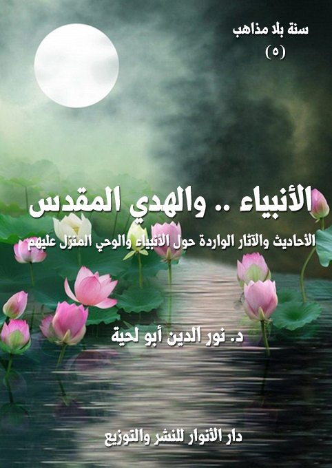

الكتاب: الأنبياء والهدي المقدس
الوصف: الأحاديث والآثار الواردة حول الأنبياء والوحي المنزل عليهم
السلسلة: سنة بلا مذاهب
المؤلف: أ.د. نور الدين أبو لحية
الناشر: دار الأنوار للنشر والتوزيع
الطبعة: الأولى، 1441 هـ
عدد الصفحات: 378
الكتاب موافق للمطبوع
ISBN: 978-620-3-85884-6
لمطالعة الكتاب من تطبيق مؤلفاتي المجاني وهو أحسن وأيسر: هنا

التعريف بالكتاب
يحاول هذا الكتاب جمع ما ورد من الأحاديث الموافقة للقرآن الكريم حول الركن الثاني من أركان الإيمان، وهو الإيمان بالرسل عليهم الصلاة والسلام، والوحي الذي أنزله الله عليهم.
ذلك أن الإيمان بالرسل عليهم السلام هو المقدمة التي تنطلق منها جميع المعارف الدينية سواء تلك التي ترتبط بالغيب، أو تلك التي ترتبط بالشهادة.. فقد شاء الله أن يربط تعليمه لعباده وتربيته لهم وتعريفهم بحقائق أنفسهم وحقائق الوجود عبر هذه الوسيلة التي لا يمكن أن تتحقق من دون الإيمان بهم والإذعان إليهم والتسليم لهم.
ولهذا امتلأ القرآن الكريم بذكرهم وذكر هديهم ومعاناتهم مع أقوامهم، ليكون ذلك عبرة للمعتبرين، وطريقا من طرق الهداية العظمى.
لكن ـ للأسف ـ وبسبب البعد عن المنهج القرآني في التعامل مع النبوة والوحي الإلهي، دخلت الكثير من التحريفات والأساطير إلى هذا الركن من أركان الإيمان؛ فشوهت النبوة، ودنس معها الهدي المقدس، ليمتلئ بمعان وقيم غريبة تتناقض مع ما ورد في القرآن الكريم، وما دلت عليه الفطرة السليمة.
ولهذا حرصنا في هذا الكتاب على إبعاد كل الأحاديث التي نرى تأثيرها السلبي على تلك المعاني القرآنية السامية التي تملأ القلوب شوقا ومحبة لتلك الجواهر المقدسة التي رضيها الله تعالى هداة ودعاة ومعلمين لخلقه.
الأنبياء والهدي المقدس (7)
يحاول هذا الكتاب جمع ما ورد من الأحاديث الموافقة للقرآن الكريم حول الركن الثاني من أركان الإيمان، وهو الإيمان بالرسل عليهم الصلاة والسلام، والوحي الذي أنزله الله عليهم.
ذلك أن الإيمان بالرسل عليهم السلام هو المقدمة التي تنطلق منها جميع المعارف الدينية سواء تلك التي ترتبط بالغيب، أو تلك التي ترتبط بالشهادة.. فقد شاء الله أن يربط تعليمه لعباده وتربيته لهم وتعريفهم بحقائق أنفسهم وحقائق الوجود عبر هذه الوسيلة التي لا يمكن أن تتحقق من دون الإيمان بهم والإذعان إليهم والتسليم لهم.
ولهذا امتلأ القرآن الكريم بذكرهم وذكر هديهم ومعاناتهم مع أقوامهم، ليكون ذلك عبرة للمعتبرين، وطريقا من طرق الهداية العظمى.
لكن ـ للأسف ـ وبسبب البعد عن المنهج القرآني في التعامل مع النبوة والوحي الإلهي، دخلت الكثير من التحريفات والأساطير إلى هذا الركن من أركان الإيمان؛ فشوهت النبوة، ودُنس معها الهدي المقدس، ليمتلئ بمعان وقيم غريبة تتناقض مع ما ورد في القرآن الكريم، وما دلت عليه الفطرة السليمة.
ولهذا حرصنا في هذا الكتاب على إبعاد كل الأحاديث التي نرى تأثيرها السلبي على تلك المعاني القرآنية السامية التي تملأ القلوب شوقا ومحبة لتلك الجواهر المقدسة التي جعلها الله تعالى وسائل لهداية خلقه.
فمن الضوابط التي رأينا ضرورة تطبيقها في هذا الكتاب:
أولا ـ البعد عن كل التفاصيل المؤرخة للرسل عليهم السلام إلا ما ورد النص عليه
الأنبياء والهدي المقدس (8)
في القرآن الكريم أو كان قريبا منه.. ذلك أن معظم تلك التفاصيل يتناقض مع ما ورد في القرآن الكريم من البحث عن العبر، لا عن تفاصيل الأحداث، بالإضافة إلى أن أكثر تلك الأحداث التفصيلية مأخوذة بشكل مباشر أو غير مباشر عن أهل الكتاب الذين ملأوا أخبار الأنبياء كذبا وبهتانا.. ولهذا كانت أمثال تلك الأخبار مثار سخرية من الذين لا يؤمنون بالأديان، ويتخذون من تلك التواريخ المزيفة مادة دسمة تعينهم على ذلك.
ثانيا ـ استبعاد كل الأحاديث والآثار التي تسيء إلى النبوة وتشوهها، وهو ما جعل فريقا كبيرا من المسلمين، وخاصة من المتأثرين بالمدرسة السلفية، يعتقدون عدم عصمة النبوة إلا في مجال التبليغ، بل وصلت بهم الجرأة إلى اعتقاد جواز كفر الرسل وارتكابهم الكبائر قبل نبوتهم، وهو ما يخالف ما ورد عنهم في القرآن الكريم من الدعوة إلى الاهتداء بهم، وليس ذلك إلا لعصمتهم المطلقة.
ولهذا انبرى أئمة الهدى للرد على تلك التحريفات التي لحقت هذا الركن الأصيل من أركان العقيدة الإسلامية، ومن الأمثلة على ذلك ما روي عن الإمام علي الرضا، والذي رويت عنه مناظرة طويلة مع القائلين بالتخطئة، نسوقها هنا باختصار، فقد سئل ـ حسبما تنص الرواية ـ: يا ابن رسول الله أتقول بعصمة الأنبياء؟ قال: بلى، قال: فما تقول في قول الله عز وجل: (وَعَصَى آدَمُ رَبَّهُ فَغَوَى) وقوله عز وجل: (وَذَا النُّونِ إِذ ذَّهَبَ مُغَاضِبًا فَظَنَّ أَن لَّن نَّقْدِرَ عَلَيْه)، وقوله في يوسف (وَلَقَدْ هَمَّتْ بِهِ وَهَمَّ بِهَا)، وقوله في داود (وَظَنَّ داود أَنَّمَا فَتَنَّاه)، وقوله في نبيه محمد (وَتُخْفِي فِي نَفْسِكَ مَا اللَّهُ مُبْدِيهِ وَتَخْشَى النَّاسَ وَاللَّهُ أَحَقُّ أَن تَخْشَاهُ)
فقال الإمام الرضا مخاطبا مناظره: (اتق الله، ولا تنسب إلى أنبياء الله الفواحش، ولا تتأول كتاب الله عز وجل برأيك، فإن الله عز وجل يقول: {وَمَا يَعْلَمُ تَأْوِيلَهُ إِلَّا اللَّهُ وَالرَّاسِخُونَ فِي الْعِلْمِ} [آل عمران: 7]
الأنبياء والهدي المقدس (9)
ثم راح يجيبه عن شبهاته، فقال: (أما قوله عز وجل في آدم عليه السلام: {وَعَصَى آدَمُ رَبَّهُ فَغَوَى} [طه: 121]، فإن الله عز وجل خلق آدم حجة في أرضه وخليفة في بلاده، لم يخلقه للجنة، وكانت المعصية من آدم في الجنة لا في الأرض لتتم مقادير أمر الله عز وجل، فلما أهبط إلى الأرض وجعل حجة وخليفة، عصم بقوله عز وجل: {نَّ اللَّهَ اصْطَفَى آدَمَ وَنُوحًا وَآلَ إِبْرَاهِيمَ وَآلَ عِمْرَانَ عَلَى الْعَالَمِينَ} [آل عمران: 33].. وأما قوله عز وجل: {وَذَا النُّونِ إِذْ ذَهَبَ مُغَاضِبًا فَظَنَّ أَنْ لَنْ نَقْدِرَ عَلَيْهِ} [الأنبياء: 87] إنما ظن أن الله عز وجل لا يضيق عليه رزقه، ألا تسمع قول الله عز وجل: {وَأَمَّا إِذَا مَا ابْتَلَاهُ فَقَدَرَ عَلَيْهِ رِزْقَهُ} [الفجر: 16] أي ضيق عليه، ولو ظن أن الله تبارك وتعالى لا يقدر عليه لكان قد كفر.. وأما قوله عز وجل في يوسف: {وَلَقَدْ هَمَّتْ بِهِ وَهَمَّ بِهَا} [يوسف: 24] فإنها همت بالمعصية، وهم يوسف بعقابها إن أجبرته، لعظم ما داخله، فصرف الله عنه عقابها) (1)
وهكذا راح يصرف عن داود عليه السلام تلك الموبقات العظيمة التي نسبتها الروايات الكثيرة إليه، فقال ـ ردا عليها ـ: (إنا لله وإنا إليه راجعون، لقد نسبتم نبيا من أنبياء الله إلى التهاون بصلاته، حتى خرج في أثر الطير، ثم بالفاحشة، ثم بالقتل!).. ثم فسر ما وقع منه فقال: (إن داود إنما ظن أن ما خلق الله عز وجل خلقا هو أعلم منه، فبعث الله عز وجل إليه الملكين فتسورا المحراب، فقالا: {خَصْمَانِ بَغَى بَعْضُنَا عَلَى بَعْضٍ فَاحْكُمْ بَيْنَنَا بِالْحَقِّ وَلَا تُشْطِطْ وَاهْدِنَا إِلَى سَوَاءِ الصِّرَاطِ (22) إِنَّ هَذَا أَخِي لَهُ تِسْعٌ وَتِسْعُونَ نَعْجَةً وَلِيَ نَعْجَةٌ وَاحِدَةٌ فَقَالَ أَكْفِلْنِيهَا وَعَزَّنِي فِي الْخِطَابِ} [ص: 22، 23]، فعجل داود عليه السلام على المدعى عليه، فقال: {لَقَدْ ظَلَمَكَ بِسُؤَالِ نَعْجَتِكَ إِلَى نِعَاجِهِ} [ص: 24]، ولم يسأل
__________
(1) بحار الأنوار، ج 11، ص: 72، وانظر: قصص الأنبياء عليهم السلام - الجزائري - ص 13 - 15.
الأنبياء والهدي المقدس (10)
المدعي البينة على ذلك، ولم يقبل على المدعى عليه فيقول: ما تقول؟ فكان هذا خطيئة حكمه، لا ما ذهبتم إليه، ألا تسمع قول الله عز وجل يقول: {يَاداود إِنَّا جَعَلْنَاكَ خَلِيفَةً فِي الْأَرْضِ فَاحْكُمْ بَيْنَ النَّاسِ بِالْحَقِّ وَلَا تَتَّبِعِ الْهَوَى فَيُضِلَّكَ عَنْ سَبِيلِ اللَّهِ إِنَّ الَّذِينَ يَضِلُّونَ عَنْ سَبِيلِ اللَّهِ لَهُمْ عَذَابٌ شَدِيدٌ بِمَا نَسُوا يَوْمَ الْحِسَابِ} [ص: 26]؟) (1)
وبناء على هذا، فقد استبعدنا الكثير من الأحاديث والآثار المشوهة للنبوة، سواء تلك التي وردت في المصادر السنية أو المصادر الشيعية.. وبما أننا لا نستطيع أن نذكر وجه استبعادها جميعا، فقد اقتصرنا على نماذج منها تشير إلى غيرها.
وقد قسمنا الكتاب ـ بحسب ما يدل عليه عنوانه ـ إلى فصلين:
الفصل الأول: حول الأنبياء عليهم السلام والأحاديث والآثار الواردة في شأنهم، سواء ما كان من المقبول أو المردود.. وقد تشددنا في هذا القسم كثيرا، باعتباره من الغيب الذي لا يمكن التعرف عليه إلا بواسطة المعصوم، وأدلة قطعية.
الفصل الثاني: حول الهدي المقدس الذي أوحي للأنبياء عليهم السلام، وقد تساهلنا فيه كثيرا إلى الدرجة التي قبلنا فيها بأكثر ما ورد من ذلك من أحاديث وآثار لسببين:
أولهما: أن معظم ما ورد من تلك المعاني من المقبول في القرآن الكريم، ويتوافق مع كل قيم الدين وحقائقه.
ثانيهما: أن تلك الأحاديث والآثار تعمق المعرفة بالرسل عليهم السلام، وتزيد في محبتهم، وتزيل الشبهات التي علقت بهم، ذلك أنها تبين أن دين الله واحد، وأن الهدي الذي تنزل على الأنبياء عليهم السلام جميعا هو نفس الهدي الذي تنزل على رسول الله صلى الله عليه وآله وسلم، كما
__________
(1) بحار الأنوار، ج 11، ص: 72، وانظر: قصص الأنبياء عليهم السلام، الجزائري، ص 13 - 15.
الأنبياء والهدي المقدس (11)
يشير إلى ذلك قوله صلى الله عليه وآله وسلم: (الأنبياء إخوة بنو علات (1) أمهاتهم شتى، ودينهم واحد) (2)
ولهذا استبعدنا الطريقة التقليدية التي استعملها من كتبوا في هذه الجوانب، من الحديث عن الرسل عليهم السلام بالترتيب المعروف، والذي اقتبسوا أكثره من كتب أهل الكتاب، ثم البدء في أنساب الرسل عليهم السلام، وتفاصيل ما حصل لهم.. لأن كل ذلك أو أكثره من الغيب الذي نهينا عن البحث عنه، بالإضافة لمصادمة الكثير منه لما يقوله العلم الحديث.
ذلك أن الكثير من تلك الأحداث مجرد روايات شفوية لا تستند للمنهج التاريخي، ولذلك يصطدم الكثير منها بما يكتشفه علماء الآثار والمؤرخون.
__________
(1) علة: يقال: هم بنو علات إذا كان أبوهم واحدا وأمهاتهم شتى الواحدة علة مثل جنات وجنة. المصباح المنير 2/ 583.
(2) ابن عساكر (47/ 372)
الأنبياء والهدي المقدس (12)
ما ورد حول الأنبياء عليهم السلام
نحاول في هذا الفصل جمع ما ورد في الأحاديث المرتبطة بالرسل عليهم السلام، مع تمييز المقبول الموافق للقرآن الكريم من المردود بسبب معارضته له.
وقد قسمناه إلى ثلاثة مباحث:
أولها: الأحاديث المقبولة حول النبوة وخصائصها، وهي الأحاديث الواردة حول النبوة عموما، أو حول بعض الأنبياء الذين لم تذكر أسماؤهم.
ثانيها: الأحاديث المقبولة حول الأنبياء المذكورين في القرآن الكريم، وقد رتبناه بحسب الترتيب الوارد في القرآن والكتب المؤلفة في ذلك، مع العلم أن بعض الأنبياء لم ترد في حقهم أي أحاديث نبوية، فلذلك نكتفي بما ورد في حقهم من أحاديث أئمة الهدى أو الآثار التي قد توضح ما يحتاج إلى التوضيح من خصائصهم ووظائفهم المتوافقة مع القرآن الكريم.
ثالثها: الأحاديث والآثار المردودة حول الأنبياء المذكورين في القرآن الكريم، مع بيان أسباب ذلك.
أولا ـ الأحاديث المقبولة حول النبوة وخصائصها
الأحاديث الواردة حول النبوة عموما محدودة جدا، وذلك لأن أكثر الأحاديث تعرف بالنبوة من خلال النماذج المذكورة في القرآن الكريم، باعتبارها لا تدل على ذلك النبي وحده، وإنما على النبوة عموما، ومن الأحاديث الواردة في هذا:
الأنبياء والهدي المقدس (13)
من الأحاديث التي نرى قبولها بسبب عدم معارضتها للقرآن الكريم:
[الحديث: 1] عن أبي ذرّ قال: قلت: يا رسول الله، كم المرسلون؟ قال: ثلاثمائة وبضعة عشر جمّاً غفيراً وقال مرة: خمسة عشر)، وفي رواية: قلت: يا رسول الله، كم وفاء عدة الأنبياء؟ قال: مائة ألف وأربعة وعشرون ألفاً، الرُّسل من ذلك ثلاثمائة وخمسة عشر جمّاً غفيراً) (1)
[الحديث: 2] قال رسول الله صلى الله عليه وآله وسلم: (لم يبعث الله عز وجل نبيا إلا بلغة قومه) (2)
[الحديث: 3] قال رسول الله صلى الله عليه وآله وسلم: (إذا أراد الله تعالى أن يبعث نبيا نظر إلى خير أهل الأرض قبيلة فبعث خيرها رجلا) (3)
[الحديث: 4] قال رسول الله صلى الله عليه وآله وسلم: (إن الأنبياء لا يتركون في قبورهم بعد أربعين ليلة ولكن يصلون بين يدي الله تعالى حتى ينفخ في الصور) (4)
[الحديث: 5] قال رسول الله صلى الله عليه وآله وسلم: (إنه لم يقبض نبي قط حتى يرى مقعده من الجنة ثم يخير) (5)
[الحديث: 6] قال رسول الله صلى الله عليه وآله وسلم: (إنه ليس لنبي إذا لبس لأمته أن يضعها حتى
__________
(1) رواه أحمد (5/ 265) (22342).
(2) رواه أحمد، كنز العمال (11/ 474).
(3) ابن سعد، كنز العمال (11/ 474).
(4) الحاكم في تاريخه، والبيهقي في حياة الأنبياء، كنز العمال (11/ 474).
(5) رواه أحمد، كنز العمال (11/ 474).
الأنبياء والهدي المقدس (14)
يقاتل) (1)
[الحديث: 7] قال رسول الله صلى الله عليه وآله وسلم: (ما بعث الله نبيا إلا شابا) (2)
[الحديث: 8] قال رسول الله صلى الله عليه وآله وسلم: (ما بعث الله نبيا إلا رعى الغنم، وأنا كنت أرعاها لأهل مكة بالقراريط) (3)
[الحديث: 9] قال رسول الله صلى الله عليه وآله وسلم: (ما توفى الله عز وجل نبيا قط إلا دفن حيث يقبض روحه) (4)
[الحديث: 10] قال رسول الله صلى الله عليه وآله وسلم: (ما قبض الله تعالى نبيا إلا في الموضع الذي يحب أن يدفن فيه) (5)
[الحديث: 11] قال رسول الله صلى الله عليه وآله وسلم: (لم يقبر نبي إلا حيث يموت) (6)
[الحديث: 12] قال رسول الله صلى الله عليه وآله وسلم: (ما من نبي يمرض إلا خير بين الدنيا والآخرة) (7)
[الحديث: 13] قال رسول الله صلى الله عليه وآله وسلم: (إن الله تعالى حرم على الأرض أن تأكل أجساد الأنبياء) (8)
__________
(1) أحمد والنسائي، كنز العمال (11/ 475).
(2) ابن مردويه والضياء، كنز العمال (11/ 475).
(3) البخاري، كنز العمال (11/ 475).
(4) ابن سعد، كنز العمال (11/ 475).
(5) الترمذي، كنز العمال (11/ 475).
(6) أحمد، كنز العمال (11/ 475).
(7) ابن ماجة، كنز العمال (11/ 476).
(8) أحمد وأبو داود، كنز العمال (11/ 476).
الأنبياء والهدي المقدس (15)
[الحديث: 14] قال رسول الله صلى الله عليه وآله وسلم: (ما كانت نبوة قط إلا كان بعدها قتل وصلب) (1)
[الحديث: 15] قال رسول الله صلى الله عليه وآله وسلم: (ذكر الأنبياء من العبادة، وذكر الصالحين كفارة، وذكر الموت صدقة، وذكر القبر يقربكم من الجنة) (2)
[الحديث: 16] قال رسول الله صلى الله عليه وآله وسلم: (الأنبياء تنام أعينهم ولا تنام قلوبهم) (3)
[الحديث: 17] عن صهيب، قال: كان رسول الله صلى الله عليه وآله وسلم إذا صلى همس شيئا ولا يخبرنا به، قال: (أفطنتم لي) قالوا: نعم، قال: (ذكرت نبيا من الأنبياء أعطي جنودا من قومه فقال: من يكافئ هؤلاء أم يقوم لهم؟) قال سليمان كلمة شبيهة بهذه فقيل له: اختر لقومك بين إحدى ثلاث: بين أن أبسط عليهم عدوا من غيرهم، أو الجوع، أو الموت، فقالوا: أنت نبي الله كل ذلك إليك، فخر لنا، فقال في صلاته، وكانوا إذا فزعوا فزعوا إلى الصلاة، فقال: أما عدوٌ من غيرهم فلا، وأما الجوع فلا، ولكن الموت، فسلط عليهم ثلاثة أيام فمات سبعون ألفا، فالذي ترون أني أقول: ربي بك أقاتل، وبك أصاول، ولا حول ولا قوة إلا بك) (4)
[الحديث: 18] قال رسول الله صلى الله عليه وآله وسلم: (أوحى الله إلى بعض أنبيائه عليهم السّلام: قل للّذين يتفقّهون لغير الدّين، ويتعلمون لغير العمل، ويطلبون الدّنيا لغير الآخرة يلبسون للنّاس مسوك الكباش، وقلوبهم كقلوب الذّئاب، ألسنتهم أحلى من العسل، وأعمالهم أمرّ من الصّبر..: إيّاي تخادعون، وبي تستهزئون؟.. لأتيحنّ لكم فتنة تذر الحليم منكم حيرانا)
__________
(1) الطبراني والضياء، كنز العمال (11/ 476).
(2) الديلمي، كنز العمال (11/ 477).
(3) الديلمي، كنز العمال (11/ 477).
(4) السنن الكبرى للنسائي (9/ 227) (10375)
الأنبياء والهدي المقدس (16)
[الحديث: 19] قال رسول الله صلى الله عليه وآله وسلم: (أوحى الله إلى نبيّ من أنبيائه أن: أخبر فلان الملك أنّي متوفّيه إلى كذا وكذا، فأتاه النبيّ فأخبره. فدعا الله الملك وهو على سريره حتى سقط من السرير، فقال: يا ربّ! أجّلني حتى يشبّ طفلي، وأقضي أمري. فأوحى الله إلى ذلك النبيّ أن: إئت فلان الملك، فأعلمه أنّي قد أنسأت في أجله، وزدت في عمره خمس عشرة سنة) (1)
[الحديث: 20] عن أبي ذر قال: قال رسول الله صلى الله عليه وآله وسلم: (أنزل الله على إبراهيم عشرين صحيفة، قلت: يارسول الله ما كانت صحف إبراهيم؟ قال: كانت أمثالا كلها، وكان فيها: أيها الملك المبتلى المغرور إني لم أبعثك لتجمع الدنيا بعضها إلى بعض ولكن بعثتك لترد عني دعوة المظلوم، فإني لا أردها وإن كانت من كافر، وعلى العاقل ما لم يكن مغلوبا أن يكون له ثلاث ساعات: ساعة يناجي فيها ربه عز وجل، وساعة يحاسب فيها نفسه، وساعة يتفكر فيما صنع الله عز وجل إليه، وساعة يخلو فيها بحظ نفسه من الحلال، فإن هذه الساعة عون لتلك الساعات، واستجمام للقلوب وتوزيع لها، وعلى العاقل أن يكون بصيرا بزمانه، مقبلا على شأنه، حافظا للسانه فإن من حسب كلامه من عمله قل كلامه إلا فيما يعنيه، وعلى العاقل أن يكون طالبا لثلاث: مرمة لمعاش، أو تزود لمعاد، أو تلذذ في غير محرم، قلت: يا رسول الله فما كانت صحف موسى عليه السلام؟ قال: كانت عبرا كلها، وفيها: عجب لمن أيقن بالموت كيف يفرح؟ ولمن أيقن بالنار لم يضحك؟ ولمن يرى الدنيا وتقلبها بأهلها لم يطمئن إليها؟ ولمن يؤمن بالقدر كيف ينصب؟ ولمن أيقن بالحساب لم لا يعمل؟ قلت: يا رسول الله هل في أيدينا مما أنزل الله عليك شئ مما كان في صحف إبراهيم وموسى؟ قال: يا
__________
(1) التوحيد، موسوعة الكلمة: 1/ 287.
الأنبياء والهدي المقدس (17)
أباذر اقرأ {قَدْ أَفْلَحَ مَنْ تَزَكَّى (14) وَذَكَرَ اسْمَ رَبِّهِ فَصَلَّى (15) بَلْ تُؤْثِرُونَ الْحَيَاةَ الدُّنْيَا (16) وَالْآخِرَةُ خَيْرٌ وَأَبْقَى (17) إِنَّ هَذَا لَفِي الصُّحُفِ الْأُولَى (18) صُحُفِ إِبْرَاهِيمَ وَمُوسَى} [الأعلى: 14 - 19]) (1)
1. ما ورد من أحاديث أئمة الهدى
من الأحاديث التي نرى قبولها بسبب عدم معارضتها للقرآن الكريم:
[الحديث: 21] سئل الإمام علي عن معنى الوحي، فقال: (منه وحي النبوة، ومنه وحي الالهام، ومنه وحي الاشارة، ومنه وحي أمر، ومنه وحي كذب، ومنه وحي تقدير، ومنه وحي خبر، ومنه وحي الرسالة:
فأما تفسير وحي النبوة والرسالة فهو قوله تعالى: {إِنَّا أَوْحَيْنَا إِلَيْكَ كَمَا أَوْحَيْنَا إِلَى نُوحٍ وَالنَّبِيِّينَ مِنْ بَعْدِهِ وَأَوْحَيْنَا إِلَى إِبْرَاهِيمَ وَإِسْمَاعِيلَ وَإِسْحَاقَ وَيَعْقُوبَ وَالْأَسْبَاطِ وَعِيسَى وَأَيُّوبَ وَيُونُسَ وَهَارُونَ وَسُلَيْمَانَ وَآتَيْنَا داود زَبُورًا} [النساء: 163]
وأما وحي الالهام فقوله عزوجل: {وَأَوْحَى رَبُّكَ إِلَى النَّحْلِ أَنِ اتَّخِذِي مِنَ الْجِبَالِ بُيُوتًا وَمِنَ الشَّجَرِ وَمِمَّا يَعْرِشُونَ} [النحل: 68]، ومثله {وَأَوْحَيْنَا إِلَى أُمِّ مُوسَى أَنْ أَرْضِعِيهِ فَإِذَا خِفْتِ عَلَيْهِ فَأَلْقِيهِ فِي الْيَمِّ وَلَا تَخَافِي وَلَا تَحْزَنِي إِنَّا رَادُّوهُ إِلَيْكِ وَجَاعِلُوهُ مِنَ الْمُرْسَلِينَ} [القصص: 7]
وأما وحي الاشارة فقوله عزوجل: {فَخَرَجَ عَلَى قَوْمِهِ مِنَ الْمِحْرَابِ فَأَوْحَى إِلَيْهِمْ أَنْ سَبِّحُوا بُكْرَةً وَعَشِيًّا} [مريم: 11] أي أشار إليهم لقوله تعالى: {أَلَّا تُكَلِّمَ النَّاسَ ثَلَاثَةَ أَيَّامٍ إِلَّا رَمْزًا} [آل عمران: 41]
__________
(1) الخصال ج 2: 104 ـ 105..
الأنبياء والهدي المقدس (18)
وأما وحي التقدير فقوله تعالى: {وَأَوْحَى فِي كُلِّ سَمَاءٍ أَمْرَهَا} [فصلت: 12]
وأما وحي الأمر فقوله سبحانه: {وَإِذْ أَوْحَيْتُ إِلَى الْحَوَارِيِّينَ أَنْ آمِنُوا بِي وَبِرَسُولِي} [المائدة: 111]
وأما وحي الكذب فقوله عزوجل: {كَذَلِكَ جَعَلْنَا لِكُلِّ نَبِيٍّ عَدُوًّا شَيَاطِينَ الْإِنْسِ وَالْجِنِّ يُوحِي بَعْضُهُمْ إِلَى بَعْضٍ زُخْرُفَ الْقَوْلِ غُرُورًا وَلَوْ شَاءَ رَبُّكَ مَا فَعَلُوهُ فَذَرْهُمْ وَمَا يَفْتَرُونَ} [الأنعام: 112]
وأما وحي الخبر فقوله سبحانه: {وَجَعَلْنَاهُمْ أَئِمَّةً يَهْدُونَ بِأَمْرِنَا وَأَوْحَيْنَا إِلَيْهِمْ فِعْلَ الْخَيْرَاتِ وَإِقَامَ الصَّلَاةِ وَإِيتَاءَ الزَّكَاةِ وَكَانُوا لَنَا عَابِدِينَ} [الأنبياء: 73]) (1)
[الحديث: 22] قال الإمام الحسن: (إنّ رجلا في بني إسرائيل عبد الله أربعين سنة، ثم قرّب قربانا فلم يُقبل منه، فقال لنفسه: وما أُوتيت إلا منك، وما الذنب إلا لك، فأوحى الله تبارك وتعالى إليه: ذمّك لنفسك أفضل من عبادتك أربعين سنة) (2)
[الحديث: 23] قال الإمام الباقر: (الحجة الانبياء وأهل بيوتات الانبياء حتى تقوم الساعة، لان كتاب الله عزوجل ينطق بذلك، ووصية الله خبرت بذلك في العقب من البيوت التي رفعها الله تبارك وتعالى على الناس فقال: {فِي بُيُوتٍ أَذِنَ اللَّهُ أَنْ تُرْفَعَ وَيُذْكَرَ فِيهَا اسْمُهُ} [النور: 36]، وهي بيوت الانبياء والرسل الحكماء وأئمة الهدى، فهذا بيان عروة الايمان التي نجابها من نجا قبلكم قبلكم، وبها ينجو من اتبع الهدى قبلكم، وقد قال الله تبارك وتعالى في كتابه: {وَنُوحًا هَدَيْنَا مِنْ قَبْلُ وَمِنْ ذُرِّيَّتِهِ دَاوُودَ وَسُلَيْمَانَ وَأَيُّوبَ
__________
(1) المحكم والمتشابه: 21.
(2) بحار الأنوار: 14/ 500، وأصول الكافي 2/ 73.
الأنبياء والهدي المقدس (19)
وَيُوسُفَ وَمُوسَى وَهَارُونَ وَكَذَلِكَ نَجْزِي الْمُحْسِنِينَ (84) وَزَكَرِيَّا وَيَحْيَى وَعِيسَى وَإِلْيَاسَ كُلٌّ مِنَ الصَّالِحِينَ (85) وَإِسْمَاعِيلَ وَالْيَسَعَ وَيُونُسَ وَلُوطًا وَكُلًّا فَضَّلْنَا عَلَى الْعَالَمِينَ (86) وَمِنْ آبَائِهِمْ وَذُرِّيَّاتِهِمْ وَإِخْوَانِهِمْ وَاجْتَبَيْنَاهُمْ وَهَدَيْنَاهُمْ إِلَى صِرَاطٍ مُسْتَقِيمٍ (87) ذَلِكَ هُدَى اللَّهِ يَهْدِي بِهِ مَنْ يَشَاءُ مِنْ عِبَادِهِ وَلَوْ أَشْرَكُوا لَحَبِطَ عَنْهُمْ مَا كَانُوا يَعْمَلُونَ (88) أُولَئِكَ الَّذِينَ آتَيْنَاهُمُ الْكِتَابَ وَالْحُكْمَ وَالنُّبُوَّةَ فَإِنْ يَكْفُرْ بِهَا هَؤُلَاءِ فَقَدْ وَكَّلْنَا بِهَا قَوْمًا لَيْسُوا بِهَا بِكَافِرِينَ} [الأنعام: 84 - 89]، فإنه وكل بالفضل من أهل بيته من الانبياء والاخوان والذرية) (1)
[الحديث: 24] قال الإمام الباقر: (إن الانبياء بعثوا خاصة وعامة، فأما نوح فإنه ارسل إلى من في الارض بنبوة عامة ورسالة عامة، وأما هود فإنه ارسل إلى عاد بنبوة خاصة، وأما صالح فإنه ارسل إلى ثمود قرية واحدة وهي لا تكمل أربعين بيتا على ساحل البحر صغيرة وأما شعيب فإنه ارسل إلى مدين وهي لا تكمل أربعين بيتا، وأما إبراهيم نبوته بكونى ويا، وهي قرية من قرى السواد فيها مبدأ أول أمره، ثم هاجر منها، وليست بهجرة قتال، وذلك قوله تعالى: {إِنِّي ذَاهِبٌ إِلَى رَبِّي سَيَهْدِينِ} [الصافات: 99] فكانت هجرة إبراهيم عليه السلام بغير قتال، وأما إسحاق فكانت نبوته بعد إبراهيم، وأما يعقوب فكانت نبوته في أرض كنعان ثم هبط إلى أرض مصر فتوفي فيها، ثم حمل بعد ذلك جسده حتى دفن بأرض كنعان، والرؤيا التي رأى يوسف الاحد عشر كوكبا والشمس والقمر له ساجدين، فكانت نبوته في أرض مصر بدؤها، ثم كانت الاسباط اثني عشر بعد يوسف، ثم موسى وهارون إلى فرعون وملائه إلى مصر وحدها، ثم إن الله تعالى أرسل يوشع بن
__________
(1) كمال الدين: 122 ـ 127..
الأنبياء والهدي المقدس (20)
نون إلى بني إسرائيل من بعد موسى، نبوته بدؤها في البرية التي تاه فيها بنو إسرائيل.. ثم كانت أنبياء كثيرون: منهم من قصه الله عزوجل على محمد صلى الله عليه وآله وسلم، ومنهم من لم يقصه عليه.. ثم إن الله عزوجل أرسل عيسى بن مريم إلى بني إسرائيل خاصة فكانت نبوته ببيت المقدس، وكان من بعده الحواريون اثني عشر، فلم يزل الايمان يستسر في بقية أهله منذ رفع الله عيسى عليه السلام، وأرسل الله تبارك وتعالى محمدا صلى الله عليه وآله وسلم إلى الجن والانس عامة، وكان خاتم الانبياء، وكان من بعده الاثني عشر الاوصياء، منهم من أدركنا ومنهم من سبقنا، ومنهم من بقي، فهذا أمر النبوة والرسالة، وكل نبي ارسل إلى بني إسرائيل خاص أوعام له وصي جرت به السنة، وكان الاوصياء الذين بعد محمد صلى الله عليه وآله وسلم على سنة أوصياء عيسى، وكان أميرالمؤمنين عليه السلام على سنة المسيح، وهذا تبيان السنة وأمثال الاوصياء بعد الانبياء) (1)
[الحديث: 25] قال الإمام الباقر: (الانبياء على خمسة أنواع: منهم من يسمع الصوت مثل صوت السلسلة فيعلم ما عني به، ومنهم من ينبؤ في منامه مثل يوسف وإبراهيم عليهما السلام، ومنهم من يعاين، ومنهم من ينكت في قلبه ويوقر في اذنه) (2)
[الحديث: 26] قال الإمام الباقر: (إن اللّه أنزل كتابا على نبيّ من الأنبياء، وفيه: إنّه يكون خلق من خلقي يلحسون الدّنيا بالدّين؛ يلبسون مسوك الضّأن على قلوب كقلوب الذّئاب..، أعمالهم أشدّ مرارة من الصّبر، وألسنتهم أحلى من العسل، وأعمالهم الباطنة أنتن من الجيف.. أ فبي يغترّون؟ أم إيّاي يخادعون؟.. فبعزّتي حلفت لأبعثنّ عليهم فتنة تطأ في
__________
(1) كمال الدين: 122 ـ 127..
(2) بصائر الدرجات: 107..
الأنبياء والهدي المقدس (21)
خطامها حتّى تبلغ أطراف الأرض تترك الحليم حيرانا، يضلّ فيها رأي ذي الرّأي وحكمة الحكيم..، ألبّسهم شيعا وأذيق بعضهم بأس بعض..، أنتقم من أعدائي بأعدائي ثمّ أعذّبهم جميعا ولا أبالي) (1)
[الحديث: 27] سأل بعض الملاحدة الإمام الصادق: من أين أثبت أنبياء ورسلا؟.. فقال: (إنا لما أثبتنا أن لنا خالقا صانعا متعاليا عنا وعن جميع ما خلق، وكان ذلك الصانع حكيما لم يجز أن يشاهده خلقه ولا يلا مسوه، ولا يباشرهم ولا يباشروه، ويحاجهم ويحاجوه، فثبت أن له سفراء في خلقه يدلونهم على مصالحهم ومنافعهم وما به بقاؤهم، وفي تركه فناؤهم، فثبت الآمرون والناهون عن الحكيم العليم في خلقه، وثبت عند ذلك أنه له معبرين، وهم الانبياء وصفوته من خلقه، حكماء مؤدبين بالحكمة، مبعوثين بها، غير مشاركين للناس في أحوالهم على مشاركتهم لهم في الخلق والتركيب، مؤيدين من عند الحكيم العليم بالحكمة والدلائل والبراهين والشواهد من إحياء الموتى وإبراء الأكمه والابرص، فلا تخلو أرض الله من حجة يكون معه علم يدل على صدق مقال الرسول ووجوب عدالته) (2)
[الحديث: 28] قال الإمام الصادق: (إن الله عز وجل مكن أنبياءه من خزائن لطفه وكرمه ورحمته، وعلمهم من مخزون علمه، وأفردهم من جميع الخلائق لنفسه، فلا يشبه أخلاقهم وأحوالهم أحد من الخلائق أجمعين، إذ جعلهم وسائل سائر الخلق إليه، وجعل حبهم وطاعتهم سبب رضاه، وخلافهم وإنكارهم سبب سخطه، وأمر كل قوم باتباع ملة
__________
(1) قرب الإسناد، موسوعة الكلمة: 1/ 389.
(2) توحيد الصدوق: 253..
الأنبياء والهدي المقدس (22)
رسولهم، ثم أبى أن يقبل طاعة أحد إلا بطاعتهم ومعرفة حقهم وحرمتهم ووقارهم وتعظيمهم وجاههم عند الله، فعظم جميع أنبياء الله، ولا تنزلهم بمنزلة أحد من دونهم، ولا تتصرف بعقلك في مقاماتهم وأحوالهم وأخلاقهم إلا ببيان محكم من عند الله وإجماع أهل البصائر بدلائل تتحقق بها فضائلهم ومراتبهم، وأنى بالوصول إلى حقيقة مالهم عندالله؟ وإن قابلت أقوالهم وأفعالهم بمن دونهم من الناس أجمعين فقد أسات صحبتهم، وأنكرت معرفتهم، وجهلت خصوصيتهم بالله، وسقطت عن درجة حقيقة الايمان والمعرفة، فإياك ثم إياك) (1)
[الحديث: 29] سئل الإمام الصادق: لأي شئ بعث الله الانبياء والرسل إلى الناس؟ فقال: (لئلا يكون للناس على الله حجة من بعد الرسل، ولئلا يقولوا: ماجاءنا من بشير ولا نذير، ولتكون حجة الله عليهم، ألا تسمع الله عزو جل يقول حكاية عن خزنة جهنم واحتجاجهم على أهل النار بالانبياء والرسل: {أَلَمْ يَأْتِكُمْ نَذِيرٌ (8) قَالُوا بَلَى قَدْ جَاءَنَا نَذِيرٌ فَكَذَّبْنَا وَقُلْنَا مَا نَزَّلَ اللَّهُ مِنْ شَيْءٍ إِنْ أَنْتُمْ إِلَّا فِي ضَلَالٍ كَبِيرٍ} [الملك: 8، 9]) (2)
[الحديث: 30] قال الإمام الصادق: (إن كان النبيّ من الأنبياء ليُبتلى بالجوع حتّى يموت جوعا.. وإن كان النبي من الأنبياء ليُبتلى بالعطش حتّى يموت عطشاً.. وإن كان النبيّ من الأنبياء ليُبتلي بالعراء حتّى يموت عرياناً.. وإن كان النبيّ من الأنبياء ليُبتلى بالسّقم والأمراض حتّى تتلفه، وإن كان النبيّ ليأتي قومه فيقوم فيهم يأمرهم بطاعة الله، ويدعوهم إلى توحيد الله وما معه مبيت ليلة، فما يتركونه يفرغ من كلامه ولايستمعون إليه حتّى يقتلوه،
__________
(1) مصباح الشريعة، ص 61..
(2) علل الشرايع: 51..
الأنبياء والهدي المقدس (23)
وإنّما يبتلي الله تبارك وتعالى عباده على قدر منازلهم عنده) (1)
[الحديث: 31] سئل الإمام الصادق: (أيكون الرجل مؤمنا قد ثبت له الايمان ثم ينقله الله بعد الايمان إلى الكفر؟ قال: إن الله هو العدل، وإنما بعث الرسل ليدعوا الناس إلى الايمان بالله، ولا يدعوا أحدا إلى الكفر، قلت: فيكون الرجل كافرا قد ثبت له الكفر عند الله فينقله الله بعد ذلك من الكفر إلى الايمان؟ قال: الله عزوجل خلق الناس على الفطرة التي فطرهم الله عليها، لا يعرفون إيمانا بشريعة، ولا كفرا بجحود، ثم ابتعث الله الرسل إليهم يدعونهم إلى الايمان بالله حجة لله عليهم، فمنهم من هداه الله ومنهم من لم يهده) (2)
[الحديث: 32] قال الإمام الصادق: (بعث الله مائة ألف نبي وأربعة وأربعين ألف نبي ومثلهم أوصياء بصدق الحديث وأداء الامانة والزهد في الدنيا، وما بعث الله نبيا خيرا من محمد صلى الله عليه وآله وسلم، ولا وصيا خيرا من وصيه) (3)
[الحديث: 33] سئل الإمام الصادق: لاي علة أعطى الله عزوجل أنبياءه ورسله المعجزة؟ فقال: (ليكون دليلا على صدق من أتى به، والمعجزة علامة لله لا يعطيها إلا أنبياءه ورسله وحججه ليعرف به صدق الصادق من كذب الكاذب) (4)
[الحديث: 34] قال الإمام الصادق: (أوحى الله إلى بعض أنبيائه: يا ابن آدم! اذكرني في غضبك، أذكرك في غضبي.. فلا أمحقك فيمن أمحق.. وارض بي منتصرا،.. فإنّ انتصاري لك، خير من انتصارك لنفسك.. وإذا ظلمت بمظلمة، فارض بانتصاري لك.. فإنّ
__________
(1) بحار الأنوار: 11/ 66، ومجالس المفيد ص 24.
(2) علل الشرائع: 51 ـ 52..
(3) بحار الأنوار (11/ 60)، والاختصاص..
(4) علل الشرائع: 52..
الأنبياء والهدي المقدس (24)
انتصاري لك خير من انتصارك لنفسك) (1)
[الحديث: 35] قال الإمام الصادق: (إنّ رجلا في الزمن الأول طلب الدنيا من حلال وحرام، فلم يقدر عليها، فأمره إبليس أن يبتدع دينا، ويدعو الناس إليه، ففعل، فأجابه الناس، وأصاب دنيا. ثم أراد التوبة، وربط نفسه في سلسلة، وقال: لا أحلها حتى يتوب الله علي. فأوحى الله إلى نبيّ زمانه: قل لفلان: وعزّتي وجلالي.. لو دعوتني حتّى تنقطع أوصالك، ما استجبت لك.. حتّى تردّ من مات على دعوته إليه، فيرجع عنه) (2)
[الحديث: 36] قال الإمام الصادق: (إنّ قوما من بني إسرائيل قالوا لنبي لهم: ادع لنا ربك يمطر علينا السماء إذا أردنا، فسأل ربه ذلك فوعده أن يفعل، فأمطر السماء عليهم كلما أرادوا، فزرعوا فنمت زروعهم وحسُنت، فلما حصدوا لم يجدوا شيئا، فقالوا: إنما سألنا المطر للمنفعة، فأوحى الله تعالى: إنهم لم يرضوا بتدبيري لهم) (3)
[الحديث: 37] قال الإمام الصادق: (أوحى الله تعالى إلى نبي من الأنبياء: قل للمؤمنين: لا يلبسوا لباس أعدائي.. ولا يطعموا مطاعم أعدائي.. ولا يسلكوا مسالك أعدائي.. ولا يشاكلوا بما شاكل أعدائي.. فيكونوا أعدائي، كما هم أعدائي) (4)
[الحديث: 38] قال الإمام الصادق: (إن نبيّا من الأنبياء شكا إلى ربه القضاء، فقال: كيف أقضي بما لم تر عيني، ولم تسمع أذني؟ فأوحى الله إليه: إقض بينهم بالبيّنات.. وأضفهم إلى اسمي يحلفون به)
__________
(1) الكافي، موسوعة الكلمة: 1/ 140.
(2) المحاسن وعقاب الأعمال، موسوعة الكلمة: 1/ 146.
(3) بحار الأنوار: 14/ 489، وقصص الأنبياء.
(4) علل الشرائع ومن لا يحضره الفقيه، موسوعة الكلمة: 1/ 170.
الأنبياء والهدي المقدس (25)
[الحديث: 39] قال الإمام الصادق: (أوحى الله إلى بعض أنبيائه: الخلق الحسن يميث الخطيئة، كما تميث الشّمس الجليد، والخلق السّيّى ء يفسد العمل، كما يفسد الخلّ العسل) (1)
[الحديث: 40] قال الإمام الصادق: (إنّ الله أوحى إلى نبيّ من أنبياء بني إسرائيل: إن أحببت أن تلقاني غدا في حظيرة القدس فكن في الدّنيا وحيدا غريبا مهموما محزونا مستوحشا من النّاس، بمنزلة الطّير الوحدانيّ الّذي يطير في أرض القفار ويأكل من رؤوس الأشجار ويشرب من ماء العيون، فإذا كان اللّيل أوى إلى وكره وحده ولم يأو مع الطيور.. استأنس بربّه واستوحش من الطيور) (2)
[الحديث: 41] قال الإمام الصادق: (إنّ فيما نزل به الوحي من السماء: لو أنّ لا بن آدم واديين، يسيلان ذهبا وفضّة، لابتغى لهما ثالثا، يا ابن آدم! إنّما بطنك بحر من البحور، وواد من الأودية، لا يملأه شي ء إلّا التّراب) (3)
[الحديث: 42] قال الإمام الصادق: (عبد الله حبر من أحبار بني إسرائيل، حتى صار مثل الخلال، فأوحى الله إلى نبيّ زمانه: قل له: وعزّتي وجلالي وجبروتي.. لو أنّك عبدتني حتّى تذوب، كما تذوب الإلية في القدر ما قبلته منك.. حتّى تأتيني من الباب الّذي أمرتك) (4)
[الحديث: 43] قال الإمام الصادق: (إن الله بعث نبيا إلى أمّته، فأوحى إليه أن قل
__________
(1) الكافي، موسوعة الكلمة: 1/ 210.
(2) عدة الداعي، والأمالي، موسوعة الكلمة: 1/ 224.
(3) من لا يحضره الفقيه، موسوعة الكلمة: 1/ 239.
(4) عقاب الأعمال، والمحاسن، موسوعة الكلمة: 1/ 86.
الأنبياء والهدي المقدس (26)
لقومك: إنّه ليس من أهل قرية ولا ناس كانوا على طاعتي، فأصابهم فيها سرّاء فتحوّلوا عمّا أحبّ إلى ما أكره، إلّا تحوّلت لهم عمّا يحبّون إلى ما يكرهون.. وليس من أهل قرية ولا أهل بيت كانوا على معصيتي فأصابهم فيها ضرّاء، فتحوّلوا عمّا أكره إلى ما أحبّ إلّا تحوّلت لهم عمّا يكرهون إلى ما يحبّون.. وقل لهم: إنّ رحمتي سبقت غضبي فلا يقنطوا من رحمتي فإنّه لا يتعاظم عندي ذنب أن أغفره.. وقل لهم: لا يتعرّضوا معاندين لسخطي فإنّ لي سطوات عند غضبي لا يقوم لها شي ء من خلقي) (1)
[الحديث: 44] قال الإمام الصادق: (إن الله أوحى إلى بعض أنبيائه في مملكة جبّار من الجبّارين أن: إئت هذا الجبّار.. فقل له: إنّي لم أستعملك على سفك الدّماء، واتّخاذ الأموال.. وإنّما استعملتك لتكفّ عنّي أصوات المظلومين.. فإنّي لن أدع ظلامتهم، وإن كانوا كفّارا) (2)
[الحديث: 45] قال الإمام الكاظم: (ما بعث الله نبيا قط إلا عاقلا وبعض النبيين أرجح من بعض، وما استخلف داود سليمان حتى اختبر عقله، واستخلف داود سليمان وهو ابن ثلاثة عشر سنة، ومكث في ملكه أربعين سنة، وملك ذولقرنين وهو ابن اثني عشر، ومكث في ملكه ثلاثين سنة) (3)
[الحديث: 46] قال الإمام الكاظم: (إنّ رجلا في بني إسرائيل عبد الله أربعين سنة، ثم قرّب قربانا فلم يقبل منه، فقال لنفسه: ما أتيت إلا من قبلك، وما الذنب إلا لك، فأوحى
__________
(1) عقاب الأعمال، والمحاسن والكافي، موسوعة الكلمة: 1/ 136.
(2) عقاب الأعمال، والكافي، موسوعة الكلمة: 1/ 168.
(3) المحاسن: 193.
الأنبياء والهدي المقدس (27)
الله إليه: ذمّك لنفسك، أفضل من عبادتك أربعين سنة) (1)
[الحديث: 47] قال الإمام الكاظم عليه السّلام قال: (قال اللّه تعالى في بعض كتبه: أفّ لكم! إنّي لم أغن الغنيّ لكرامته عليّ، ولم أفقر الفقير لهوانه عليّ، وإنّما ابتليت الأغنياء بالفقراء.. ولو لا الفقراء لم يستوجب الأغنياء الجنّة) (2)
[الحديث: 48] قال الإمام الكاظم: (كان في بني إسرائيل رجلٌ صالحٌ، وكانت له امرأةٌ صالحةٌ، فرأى في النوم أنّ الله تعالى قد وقّتَ لك من العمر كذا وكذا سنة، وجعل نصف عمرك في سعة، وجعل النصف الآخر في ضيق، فاختر لنفسك إما النصف الأول وإما النصف الأخير، فقال الرجل: إنّ لي زوجة صالحة وهي شريكي في المعاش فأُشاورها في ذلك وتعود إليّ فأخبرك.. فلما أصبح الرجل قال لزوجته: رأيت في النوم كذا وكذا، فقالت: يا فلان.. اختر النصف الأول وتعجّل العافية لعلّ الله سيرحمنا، ويتم لنا النعمة، فلما كان في الليلة الثانية أتى الآتي فقال: ما اخترت؟.. فقال: اخترت النصف الأول، فقال: ذلك لك، فأقبلت الدنيا عليه من كل وجه، ولما ظهرت نعمته قالت له زوجته: قرابتك والمحتاجون فصلهم وبرّهم، وجارك وأخوك فلان فهبهم.. فلما مضى نصف العمر وجاز حدّ الوقت، رأى الرجل الذي رآه أولا في النوم، فقال: إنّ الله تعالى قد شكر لك ذلك، ولك تمام عمرك سعة مثل ما مضى) (3)
[الحديث: 49] قال الإمام الرضا: (أوحى الله إلى نبيّ من الأنبياء: إذا أطعت
__________
(1) إرشاد القلوب، والكافي، موسوعة الكلمة: 1/ 272.
(2) الكافي، موسوعة الكلمة: 1/ 390.
(3) بحار الأنوار: 14/ 492، وقصص الأنبياء.
الأنبياء والهدي المقدس (28)
رضيت.. وإذا رضيت باركت.. وليس لبركتي نهاية.. وإذا عصيت غضبت.. وإذا غضبت لعنت) (1)
[الحديث: 50] قال الإمام الرضا: (.. فإن قال: فلم وجب عليهم معرفة الرسل والاقرار بهم والاذعان لهم بالطاعة؟ قيل: لانه لما لم يكن في خلقهم وقواهم ما يكملوا لمصالحهم وكان الصانع متعاليا عن أن يرى وكان ضعفهم وعجزهم عن إدراكه ظاهرا لم يكن بد من رسول بينه وبينهم معصوم يؤدي إليهم أمره ونهيه وأدبه ويقفهم على ما يكون به إحراز منافعهم ودفع مضارهم إذ لم يكن في خلقهم ما يعرفون به ما يحتاجون إليه منافعهم ومضارهم، فلو لم يجب عليهم معرفته وطاعته لم يكن لهم في مجئ الرسول منفعة ولاسد حاجة، ولكان يكون إتيانه عبثا لغير منفعة ولا صلاح، وليس هذا من صفة الحكيم الذي أتقن كل شئ) (2)
[الحديث: 51] سئل الإمام الرضا: لماذا بعث الله موسى بن عمران عليه السلام بيده البيضاء والعصا وآلة السحر؟ وبعث عيسى عليه السلام بالطب؟ وبعث محمدا صلى الله عليه وآله وسلم بالكلام والخطب؟.. فقال: (إن الله تبارك وتعالى لما بعث موسى عليه السلام كان الاغلب على أهل عصره السحر، فأتاهم من عندالله عزوجل بمالم يكن في وسع القوم مثله، وبما أبطل به سحرهم وأثبت به الحجة عليهم، وأن الله تبارك وتعالى بعث عيسى في وقت ظهرت فيه الزمانات واحتاج الناس إلى الطب، فأتاهم من عندالله عزوجل بما لم يكن عندهم مثله، وبما أحيالهم الموتى وأبرأ الاكمه والابرص بإذن الله، وأثبت به الحجة عليهم، وإن الله تبارك
__________
(1) الكافي، موسوعة الكلمة: 1/ 132.
(2) علل الشرائع: 95. عيون الاخبار: 249..
الأنبياء والهدي المقدس (29)
وتعالى بعث محمدا في وقت كان الاغلب على أهل عصره الخطب والكلام والشعر؛ فأتاهم من كتاب الله عزوجل ومواعظه وأحكامه ما أبطل به قولهم وأثبت الحجة عليهم)، فسئل: فما الحجة على الخلق اليوم؟ فقال: (العقل تعرف به الصادق على الله فتصدقه، والكاذب على الله فتكذبه) (1)
ثانيا ـ الأحاديث المقبولة حول الأنبياء المذكورين في القرآن الكريم
وسنذكرهم هنا مرتبين بحسب الترتيب القرآني، مع العلم أن بعض الأنبياء أمثال موسى وداود والمسيح عليهم السلام، سنذكر أحاديث أخرى عنهم كثيرة في الفصل الثاني، والمتعلق بالهدي المقدس الذي أوحي لهم.
وننبه إلى أننا ـ بسبب قلة الأحاديث النبوية حول الأنبياء عليه السلام ـ فقد مزجنا الأحاديث المرفوعة إلى رسول الله صلى الله عليه وآله وسلم بالموقوفة على أئمة الهدى، والأحاديث المروية في المصادر السنية بالأحاديث المروية في المصادر الشيعية، والتفريق بينها سهل من خلال الاطلاع على مصادر الأحاديث.
وهو أول الأنبياء عليهم السلام ـ كما ينص على ذلك القرآن الكريم ـ والتفاصيل الواردة بشأنه محدودة جدا، فلذلك كان أكثر ما ذكره المؤرخون أو المحدثون عن التواريخ المرتبطة بشأنه من الغيب الذي نهينا عن الخوض فيه بدون دليل.
ولهذا سنكتفي هنا بما ورد من الأحاديث المقبولة التي لا علاقة لها بالجانب التاريخي مع التنبيه إلى الأحاديث المردودة في هذا الجانب.
__________
(1) علل الشرائع: 52. عيون الاخبار: 234..
الأنبياء والهدي المقدس (30)
[الحديث: 52] قال رسول الله صلى الله عليه وآله وسلم: (إن آدم قال: يا رب! سلطت عليّ الشيطان، وأجريته مني مجرى الدم، فقال: يا آدم! جعلت لك أنّ من همّ من ذرّيّتك بسيّئة لم تكتب عليه، فإن عملها كتبت عليه.. ومن همّ بحسنة، فإن هو لم يعملها كتبت له حسنة، وإن عملها كتبت له عشرا، قال: (يا رب! زدني). قال: جعلت لك أنّ من عمل منهم سيّئة ثمّ استغفر غفرت له) قال: (يا رب! زدني). قال: جعلت لهم التّوبة ـ أو بسطت لهم التّوبة ـ حتّى تبلغ النّفس هذه ـ إشارة إلى الترقوة ـ قال: (يا رب! حسبي) (1)
فهذا الحديث يبين أن فضل الله ورحمته بعباده ليست خاصة بأمة من الأمم، بل هي تشملهم جميعا.
[الحديث: 53] قال رسول الله صلى الله عليه وآله وسلم: (إن آدم سأل ربّه أن يجعل له وصيّا صالحا، فأوحى الله إليه: إنّي أكرمت الأنبياء بالنّبوّة.. ثمّ اخترت خلقي.. فجعلت خيارهم الأوصياء) (2)
وهذا الحديث يدل على أن سلسلة الهداية لا تنقطع أبدا.. سواء تحقق ذلك بالنبوة أو الإمامة والولاية.
[الحديث: 54] قال رسول الله صلى الله عليه وآله وسلم: (إنّ الله عزّ وجلّ حين أهبط آدم عليه السلام من الجنّة أمره أن يحرث بيده، فيأكل من كدّها بعد نعيم الجنّة، فجعل يجأر ويبكي على الجنّة، ثمّ إنّه سجد لله سجدة، فلم يرفع رأسه ثلاثة أيام ولياليها) (3)
__________
(1) الكافي، موسوعة الكلمة: 1/ 325.
(2) من لا يحضره الفقيه، والأمالي، موسوعة الكلمة: 1/ 86.
(3) قصص الأنبياء للراوندي، ص 47.
الأنبياء والهدي المقدس (31)
فهذا الحديث يبين المعاناة التي صار يعانيها آدم عليه السلام بعد خروجه من الجنة، بالإضافة إلى عبادته الكثيرة لله.
[الحديث: 55] قال الإمام علي في قوله تعالى: {إِنِّي جَاعِلٌ فِي الْأَرْضِ خَلِيفَةً قَالُوا أَتَجْعَلُ فِيهَا مَنْ يُفْسِدُ فِيهَا وَيَسْفِكُ الدِّمَاءَ وَنَحْنُ نُسَبِّحُ بِحَمْدِكَ وَنُقَدِّسُ لَكَ قَالَ إِنِّي أَعْلَمُ مَا لَا تَعْلَمُونَ} [البقرة: 30] وقالوا: إجعله منا، فإنّا لا نفسد في الأرض، ولا نسفك الدّماء: قال الله تعالى: يا ملائكتي إنّي أعلم ما لا تعلمون.. إنّي أريد أن أخلق خلقا أجعل من ذرّيّته أنبياء مرسلين، وعبادا صالحين: أئمّة مهتدين.. أجعلهم خلفائي على خلقي في أرضي، ينهونهم عن معاصيّ، وينذرونهم عذابي، ويهدونهم إلى طاعتي، ويسلكون بهم طريق سبيلي.. وأجعلهم حجّة لي عذرا ونذرا) (1)
[الحديث: 56] سئل الإمام علي: هل كان في الأرض خلق من خلق الله تعالى يعبدون الله قبل آدم عليه السلام وذرّيته؟ فقال: (نعم قد كان في السّماوات والأرض خلق من خلق الله يقدّسون الله، ويسبّحونه، ويعظّمونه باللّيل والنّهار لا يفترون)) (2)
[الحديث: 57] قال الإمام علي: (ان الله تعالى خلق آدم عليه السلام من أديم الأرض، فمنه السّباخ والمالح والطّيب، ومن ذرّيته الصّالح والطّالح) (3)، وهذا لا يعني الجبر، بل هو موضح بالحديث التالي:
[الحديث: 58] قال الإمام علي: (إنّ الله تعالى لمّا خلق آدم عليه السلام ونفخ فيه من
__________
(1) علل الشرائع، موسوعة الكلمة: 1/ 85.
(2) قصص الأنبياء للراوندي، ص 33.
(3) قصص الأنبياء للراوندي، ص 39.
الأنبياء والهدي المقدس (32)
روحه نهض ليقوم، فقال الله تعالى: {وَكَانَ الْإِنْسَانُ عَجُولًا} [الإسراء: 11]، وهذا علامة للملائكة، إنّ من أولاد آدم عليه السلام من يصير بفعله صالحاً، ومنهم من يكون طالحاً بفعله، لا أنّ من خلق من الطّيب لا يقدر على القبيح، ولا أنّ من خلق من السّبخة لا يقدر على الفعل الحسن) (1)
[الحديث: 59] قال الإمام الباقر: (إن آدم عليه السلام لمّا بنى الكعبة وطاف بها قال: اللّهم إنّ لكلّ عامل أجراً اللهم، وإنّي قد عملت فقيل له: سل يا آدم فقال: اللهم اغفر لي ذنبي فقيل له: قد غفر لك يا آدم فقال: ولذريّتي من بعدي فقيل له: يا آدم من باء منهم بذنبه هيهنا كما بؤت غفرت له) (2)
[الحديث: 60] قال الإمام الباقر: (الكلمات الّتي تلقّى بهنّ آدم عليه السلام ربّه فتاب عليه: اللهم لا إله إلاّ أنت سبحانك وبحمدك إني عملت سوءاً وظلمت نفسي، فاغفر لي إنّك أنت التّواب الرّحيم، لا إله إلا أنت سبحانك وبحمدك عملت سوءاً وظلمت نفسي، فاغفر لي إنّك أنت خير الغافرين) (3)
[الحديث: 61] سئل الإمام الباقر عن خلق حواء، وقيل له: إنّ أناساً عندنا يقولون: إن الله خلق حواء من ضلع آدم الأيسر الأقصى، قال: (سبحان الله إنّ الله لم يكن له من القدرة ما يخلق لآدم زوجته من غير ضلعه؟ ولا يكون لمتكلم أن يقول: ان آدم كان ينكح بعضه بعضاً؟)، ثم قال: (إن الله تعالى لما خلق آدم وأمر الملائكة فسجدوا ألقى عليه
__________
(1) قصص الأنبياء للراوندي، ص 39.
(2) قصص الأنبياء للراوندي، ص 45.
(3) قصص الأنبياء للراوندي، ص 51.
الأنبياء والهدي المقدس (33)
السّبات، ثم ابتدع له خلق حوّاء، فأقبلت تتحرك فانتبه لتحركها، فلمّا نظر إليها نظر إلى خلق حسن يشبه صورته غير أنّها أنثى، فكلّمها وكلمته بلغته، فقال لها من أنت؟ فقال: أنا خلق خلقني الله تعالى كما ترى.. فقال آدم عند ذلك: يا ربّ ما هذا الخلق الحسن الّذي قد آنسني قربه والنّظر اليه؟ فقال الله تعالى: يا آدم هذه أمتي حوّاء، أفتحبّ أن تكون معك فتؤنسك وتحدّثك؟ فقال: نعم يا ربّ لك عليّ بذلك الحمد والشكر ما بقيت) (1)
[الحديث: 62] قال الإمام الباقر: (لمّا كان اليوم الذي أخبر الله آدم عليه السلام أنّه متوفيه تهيّأ للموت وأذعن به، فهبط ملك الموت، فقال آدم: أشهد أن لا إله إلا الله وحده لا شريك له، وأشهد أنّي عبدالله وخليفته في أرضه، ابتدأني بإحسانه، وأسجد لي ملائكته وعلّمني الأسماء كلّها، ثم أسكنني جنته ولم يكن جعلها لي دار قرار ولا منزل استيطان، وإنما خلقني لأسكن الأرض الذي أراد من التقدير والتدبير) (2)
[الحديث: 63] وهو حديث يذكر بعض التفاصيل التاريخية لكنا سقناه هنا بناء على كونه يذكر بداية تحريف العقائد، ويتوافق في ذلك ما ورد في القرآن الكريم، ونص الحديث هو قول الإمام الباقر: (إنّ إبليس اللّعين هو أوّل من صوّر صورةً على مثال آدم عليه السلام ليفتن به النّاس ويضلّهم عن عبادة الله تعالى، وكان ودّ في ولد قابيل، وكان خليفة قابيل على ولده وعلى من بحضرتهم في سفح الجبل يعظّمونه ويسوّدونه، فلمّا أن مات ودّ جزع عليه إخوته وخلّف عليهم ابناً يقال له: سواع فلم يغن غنا أبيه منهم، فأتاهم إبليس في صورة شيخ فقال: قد بلغني ما أصبتم به من موت ودّ وعظيمكم فهل لكم فيّ أن أصوّر لكم على
__________
(1) قصص الأنبياء للراوندي، ص 55.
(2) قصص الأنبياء للراوندي، ص 60.
الأنبياء والهدي المقدس (34)
مثال ودّ صورةً تستريحون إليها وتأنسون بها؟ قالوا: افعل، فعمد الخبيث إلى الآنك فإذا به حتّى صار مثل الماء، ثمّ صوّر لهم صورةً مثال ودّ في بيته، فتدافعوا على الصّورة يلثمونها ويضعون خدودهم عليها ويسجدون لها، وأحبّ سواع أن يكون التعظيم والسّجود له، فوثب على صورة ودّ، فحكّها حتّى لم يدع منها شيئاً وهمّوا بقتل سواع، فوعظهم وقال: أنا أقوم لكم بما كان يقوم به ودّ، وأنا ابنه، فان قتلتموني لم يكن لكم رئيس، فمالوا إلى سواع بالطّاعة والتّعظيم، فلم يلبث سواع أن مات وخلّف ابناً يقال له: يغوث فجزعوا على سواع فأتاهم إبليس وقال: أنا الّذي صوّرت لكم صورة ودّ، فهل لكم أن أجعل لكم مثال سواع على وجه لا يستطيع أحد أن يغيّره قال: فافعل، فعمد إلى عود فنجّره ونصبه لهم في منزل سواع، وإنّما سمّي ذلك العود خلافاً، لأنّ إبليس عمل صورة سواع على خلاف صورة ودّ، فسجدوا له وعظّموه، وقالوا ليغوث: ما نأمنك على هذا الصّنم أن تكيده كما كاد أبوك مثال ودّ، فوضعوا على البيت حرّاساً وحجّاباً، ثم كانوا يأتون الصّنم في يوم واحد ويعظّمونه أشدّ ما كانوا يعظّمون سواعاً، فلمّا رأى ذلك يغوث قتل الحرسة والحجاب ليلاً وجعل الصنم رميماً، فلما بلغهم ذلك أقبلوا ليقتلوه فتوارى منهم إلى أن طلبوه ورأّسوه وعظّموه، ثمّ مات وخلّف ابناً يقال له: يعوق فأتاهم إبليس، فقال: قد بلغني موت يغوث وأنا جاعل لكم مثاله في شيء لا يقدر أحد أن يغيّره قالوا: فافعل، فعمد الخبيث إلى حجر جرع أبيض، فنقره بالحديد حتّى صوّر لهم مثال يغوث، فعظّموه أشدّ ما مضى، وبنوا عليه بيتاً من حجر، وتبايعوا أن لا يفتحوا باب ذلك البيت إلاّ في رأس كلّ سنة، وسُميّت البيعة يومئذ، لانّهم تبايعوا وتعاقدوا عليه، فاشتدّ ذلك على يعوق، فعمد إلى ريطة وخلق فألقاها في الحاير ثمّ رماها بالنّار ليلاً، فأصبح القوم وقد احترق البيت والصّنم والحرس وأرفض الصنم ملقى، فجزعوا وهمّوا بقتل يعوق، فقال لهم: إن قتلتم رئيسكم فسدت أموركم فكفّوا.. فلم يلبث
الأنبياء والهدي المقدس (35)
أن مات يعوق، خلّف ابناً يقال له: نسراً، فأتاهم إبليس فقال: بلغني موت عظيمكم، فأنا جاعل لكم مثال يعوق في شيء لا يبلى، فقالوا: افعل فعمد إلى الذّهب وأوقد عليه النّار حتّى صار كالماء، وعمل مثالاً من الطّين على صورة يعوق، ثم أفرغ الذّهب فيه، ثمّ نصبه لهم في ديرهم، واشتدّ ذلك على نسر ولم يقدر على دخول تلك الدّير، فانحاز عنهم في فرقة قليلة من إخوته يعبدون نسراً، والآخرون يعبدون الصّنم، حتّى مات نسر وظهرت نبّوة إدريس، فبلغه حال القوم وأنّهم يعبدون جسماً على مثال يعوق وأنّ نسراً كان يعبد من دون الله، فصار اليهم بمن معه حتى نزل مدينة تشر وهم فيها، فهزمهم وقتل من قتل وهرب من هرب، فتفرّقوا في البلاد، أمروا بالصّنم فحمل وألقي في البحر، فاتخذت كلّ فرقة منهم صنماً وسمّوها بأسمائهم، فلم يزالوا بعد ذلك قرناً بعد قرن لا يعرفون إلاّ تلك الأسماء، ثمّ ظهرت نبوّة نوح عليه السلام، فدعاهم إلى عبادة الله وحده وترك ما كانوا يعبدون من الأصنام، فقال بعضهم: {لَا تَذَرُنَّ آلِهَتَكُمْ وَلَا تَذَرُنَّ وَدًّا وَلَا سُوَاعًا وَلَا يَغُوثَ وَيَعُوقَ وَنَسْرًا} [نوح: 23]) (1)
[الحديث: 64] قال الإمام الصادق: (إن أمر الله تعالى ذكره لا يحمل على المقائيس، ومن حمل أمر الله على المقائيس هلك وأهلك، إن أول معصية ظهرت الإبانة من إبليس اللعين حين أمر الله تعالى ذكره ملائكته بالسجود لآدم، فسجدوا وأبى إبليس اللعين أن يسجد، فقال عز وجل: {مَا مَنَعَكَ أَلَّا تَسْجُدَ إِذْ أَمَرْتُكَ قَالَ أَنَا خَيْرٌ مِنْهُ خَلَقْتَنِي مِنْ نَارٍ وَخَلَقْتَهُ مِنْ طِينٍ} [الأعراف: 12]، فكان أول كفره قوله: {أَنَا خَيْرٌ مِنْهُ} [الأعراف: 12]، ثم قياسه بقوله: {خَلَقْتَنِي مِنْ نَارٍ وَخَلَقْتَهُ مِنْ طِينٍ} [الأعراف: 12]، فطرده الله
__________
(1) قصص الأنبياء للراوندي، ص 66.
الأنبياء والهدي المقدس (36)
عز وجل عن جواره ولعنه وسماه رجيما، وأقسم بعزته لا يقيس أحد في دينه إلا قرنه مع عدوه إبليس في أسفل درك من النار) (1)
[الحديث: 65] قال الإمام الصادق: (إن آدم قام على باب الكعبة فقال: اللهمّ أقلني عثرتي، واغفر ذنبي، وأعدني إلى الدار التي أخرجتني منها، فقال الله تعالى: قد أقلتك عثرتك، وغفرت ذنبك.. وسأعيدك إلى الدّار الّتي أخرجتك منها) (2)
[الحديث: 66] قال الإمام الصادق: (إن جبريل نزل على محمّد صلى الله عليه وآله وسلم يخبره عن ربّه فقال له: يا محمّد! إنّي لم أترك الأرض إلّا وفيها عالم تعرف به طاعتي وهداي.. ويكون نجاة فيما بين قبض النّبيّ إلى خروج النّبيّ الآخر.. ولم أكن أترك إبليس يضلّ النّاس، وليس في الأرض حجّة لي وداع إليّ وهاد إلى سبيلي وعارف بأمري.. وإنّي قضيت لكلّ قوم هاديا أهدي به السّعداء ويكون حجّة لي على الأشقياء.. لما انقضت نبوة آدم عليه السّلام واستكمل أيامه، أوحى الله عز وجلّ إليه أن: يا آدم! قد قضيت نبوّتك، واستكملت أيّامك.. فاجعل العلم الّذي عندك، والإيمان، والاسم الأكبر، وميراث العلم وآثار علم النبوّة، في العقب من ذرّيّتك.. عند (هبة الله).. فإني لن أقطع العلم والإيمان، وآثار النّبوّة، من العقب من ذرّيّتك، إلى يوم القيامة.. ولن أدع الأرض، إلّا وفيها عالم يعرف به ديني، وتعرف به طاعتي، ويكون نجاة لمن يولد فيما بينك وبين نوح) (3)
[الحديث: 67] سئل الإمام الصادق: أيصلح السجود لغير الله؟.. قال: لا، قال:
__________
(1) بحار الأنوار: 13/ 289، والعلل ص 31.
(2) معاني الأخبار، موسوعة الكلمة: 1/ 54.
(3) علل الشرائع، موسوعة الكلمة: 1/ 99.
الأنبياء والهدي المقدس (37)
فكيف أمر الله الملائكة بالسجود؟.. فقال: إن من سجد بأمر الله فقد سجد لله فكان سجوده لله إذ كان عن أمر الله.. ثم قال: (فأما إبليس فعبدٌ خلقه ليعبده ويوحده، وقد علم حين خلقه ما هو وإلى ما يصير، فلم يزل يعبده مع ملائكته حتى امتحنه بسجود آدم، فامتنع من ذلك حسدا وشقاوة غلبت عليه فلعنه عند ذلك، وأخرجه عن صفوف الملائكة، وأنزله إلى الأرض مدحورا، فصار عدو آدم وولده بذلك السبب، وما له من السلطنة على ولده إلا الوسوسة والدعاء إلى غير السبيل، وقد أقر مع معصيته لربه بربوبيته) (1)
[الحديث: 68] قال الإمام الصادق: (إنّ آدم شكا إلى ربّه حديث النفس، فقال: أكثر من قول: لا حول ولا قوّة إلّا بالله) (2)
[الحديث: 69] قال الإمام الصادق: (أوحى الله عزّ وجلّ إلى آدم عليه السّلام: إنّي سأجمع لك الخير كلّه في أربع كلمات: قال: (يا رب! وما هنّ؟) قال: واحدة لي، وواحدة لك، وواحدة فيما بيني وبينك، وواحدة فيما بينك وبين النّاس) قال: (يا رب! بيّنهنّ لي حتى أعلمهنّ!) فقال: أمّا الّتي لي، فتعبدني لا تشرك بي شيئا، وأمّا الّتي لك، فأجزيك بعملك أحوج ما تكون إليه، وأمّا الّتي بيني وبينك، فعليك الدّعاء وعليّ الإجابة، وأمّا الّتي بينك وبين النّاس، فترضى للنّاس ما ترضى لنفسك) (3)
[الحديث: 70] قال الإمام الصادق: (لما طاف آدم عليه السّلام بالبيت، وانتهى إلى (الملتزم) قال جبريل: (يا آدم! أقرّ لربك بذنوبك في هذا المكان) فوقف آدم فقال: (يا رب!
__________
(1) بحار الأنوار: 11/ 139، والاحتجاج ص 184.
(2) المحاسن، موسوعة الكلمة: 1/ 272.
(3) من لا يحضره الفقيه، والمحاسن، موسوعة الكلمة: 1/ 318.
الأنبياء والهدي المقدس (38)
إن لكل عامل أجرا، وقد عملت فما أجري؟) فأوحى الله إليه: يا آدم! قد غفرت لك ذنبك، قال: (يا رب! ولولدي ـ أو لذرّيّتي ـ فأوحى الله إليه: يا آدم! من جاء من ولدك إلى هذا المكان، وأقرّ بذنوبه وتاب كما تبت ثمّ استغفر غفرت له) (1)
[الحديث: 71] سئل الإمام الصادق: أكان إبليس من الملائكة أم من الجنّ؟.. قال: (كانت الملائكة ترى أنّه منها، وكان الله يعلم أنّه ليس منها، فلمّا أمر بالسّجود كان منه الّذي كان) (2)
[الحديث: 72] قال الإمام الصّادق: (أمر ابليس بالسّجود لآدم، فقال: يا ربّ وعزّتك إن أعفيتنى من السّجود لآدم لأعبدك عبادة ما عبدك أحد قطّ مثلها قال الله جلّ جلاله: إنّى احبّ أن اطاع من حيث أُريد) (3)
[الحديث: 73] قال الإمام الصادق: (بكى آدم عليه السلام على الجنّة حتّى صار على خدّيه مثل النّهرين العظيمين من الدّموع، وقال: اللهم أقلني عثرتي وأعدني إلى الدّار الّتي أخرجتني منها، فقال الله جلّ ثناؤه: قد أقلتك عثرتك وسأعيدك إلى الدّار الّتي أخرجتك منها) (4)
[الحديث: 74] قال الإمام الصادق: (كان آدم عليه السلام إذا لم يأته جبريل يغتمّ ويحزن، فشكا ذلك إلى جبريل، فقال: إذا وجدت شيئاً من الحزن فقل: لا حول ولا قوّة إلا
__________
(1) الكافي، موسوعة الكلمة: 1/ 324.
(2) قصص الأنبياء للراوندي، ص 40.
(3) قصص الأنبياء للراوندي، ص 40.
(4) قصص الأنبياء للراوندي، ص 46.
الأنبياء والهدي المقدس (39)
بالله) (1)
[الحديث: 75] قال الإمام الصادق: (إن آدم عليه السلام اشتكى فاشتهى فاكهة فانطلق هبة الله يطلب له فاكهة فاستقبل جبريل فقال له: أين تذهب يا هبة الله، فقال: إن آدم يشتكي وإنه اشتهى فاكهة، قال له: فارجع فإن الله عزوجل قد قبض روحه، قال: فرجع فوجده قد قبضه الله فغسلته الملائكة، ثم وضع وأمر هبة الله أن يتقدم ويصلي عليه، فتقدم فصلى عليه والملائكة خلفه، وأوحى الله عزوجل إليه أن يكبر عليه خمسا، وأن يسله وأن يسوي قبره، ثم قال: هكذا فاصنعوا بموتاكم) (2)
[الحديث: 76] قال الإمام الصادق: (ان ابن آدم حين قتل أخاه لم يدر كيف يقتله حتى جاء ابليس فعلّمه، قال: ضع رأسه بين حجرين ثمّ اشدخه) (3)
[الحديث: 77] قال الإمام الصادق: (لما مات آدم وشمت به إبليس وقابيل فاجتمعا في الارض فجعل إبليس وقابيل المعازف والملاهي شماتة بآدم عليه السلام فكل ما كان في الارض من هذا الضرب الذي يتلذذ به الناس فإنما هو من ذاك) (4)
وهو من الأنبياء الكرام المذكورين في القرآن الكريم، من دون أن تذكر تفاصيل حياتهم على الأرض، إلا ما ارتبط بدعوتهم وكيفية مواجهة أقوامهم لهم، لكنا نجد مع ذلك الأحاديث والآثار الكثيرة التي تذكر التفاصيل الدقيقة عنه، وأكثرها مما لا يمكن قبوله.
__________
(1) قصص الأنبياء للراوندي، ص 47.
(2) الخصال ج 1: 135.
(3) قصص الأنبياء للراوندي، ص 56.
(4) فروع الكافى 2: 200.
الأنبياء والهدي المقدس (40)
ومن الأحاديث التي نرى قبولها بسبب عدم معارضتها للقرآن الكريم:
[الحديث: 78] عن عبد الله بن عمرو قال: كنّا عند رسول الله صلى الله عليه وآله وسلم، فجاء رجل من أهل البادية عليه جبّة سيجان مزرورة بالدّيباج فقال: (ألا إنّ صاحبكم هذا قد وضع كلّ فارس ابن فارس)، فأخذ رسول الله صلى الله عليه وآله وسلم بمجامع جبّته، وقال: (ألا أرى عليك لباس من لا يعقل!) ثمّ قال: (إنّ نبيّ الله نوحا عليه السلام لمّا حضرته الوفاة قال لابنه: إنّي قاصّ عليك الوصيّة: آمرك باثنتين، وأنهاك عن اثنتين، آمرك بلا إله إلّا الله فإنّ السّماوات السّبع، والأرضين السّبع، لو وضعت في كفّة ووضعت لا إله إلّا الله في كفّة، رجحت بهنّ لا إله إلّا الله ولو أنّ السّماوات السّبع والأرضين السّبع، كنّ حلقة مبهمة قصمتهنّ لا إله إلّا الله وسبحان الله، وبحمده، فإنّها صلاة كلّ شيء، وبها يرزق الخلق، وأنهاك عن الشّرك والكبر)، قيل: يا رسول الله هذا الشّرك قد عرفناه، فما الكبر؟ قال: أن يكون لأحدنا نعلان حسنتان لهما شراكان حسنان؟ قال: (لا)، قال: هو أن يكون لأحدنا حلّة يلبسها؟، قال: (لا)، قال: الكبر هو أن يكون لأحدنا دابّة يركبها؟ قال: (لا)، قال:، فهو أن يكون لأحدنا أصحاب يجلسون إليه؟. قال: (لا)، قيل يا رسول الله، فما الكبر؟ قال: (سفه الحقّ وغمص النّاس) (1)
[الحديث: 79] قال رسول الله صلى الله عليه وآله وسلم: (يجئ نوح عليه السلام وأمته، فيقول الله عزوجل هل بلغت؟ فيقول: نعم أي رب، فيقول لأمته هل بلغكم؟ فيقولون: لا ما جاءنا من نبي، فيقول لنوح: من يشهد لك؟ فيقول: محمدٌ وأمته، فتشهد أنه قد بلغ، وهو قوله
__________
(1) أحمد (2/ 170) وقال أحمد شاكر: إسناده صحيح (8/ 87) حديث (6583). والبخاري في الأدب المفرد (80، 81)
الأنبياء والهدي المقدس (41)
تعالى: {وَكَذَلِكَ جَعَلْنَاكُمْ أُمَّةً وَسَطًا لِتَكُونُوا شُهَدَاءَ عَلَى النَّاسِ وَيَكُونَ الرَّسُولُ عَلَيْكُمْ شَهِيدًا} [البقرة: 143]) (1)
وهذا لا يعني اقتصار المعنى على ذلك؛ فالآية الكريمة تذكر الشهادة على الناس جميعا، وليس على قوم نوح عليه السلام وغيره فقط، وقد شرحنا معنى الشهادة ووظيفة الأمة المرتبطة بها في كتاب [النبي الهادي]، وغيره.
[الحديث: 80] عن ابن عمر قال: قام رسول الله صلى الله عليه وآله وسلم في الناس فأثنى على الله بما هو أهله، ثم ذكر الدجال فقال: (إني لأنذركموه، وما من نبي إلا وقد أنذره قومه.. لقد أنذره نوحٌ قومه) (2)
[الحديث: 81] قال الإمام الباقر: (مكث نوح عليه السلام في قومه يدعوهم إلى الله سرّاً وعلانية، فلمّا عتوا وأبوا قال: ربّ {أَنِّي مَغْلُوبٌ فَانْتَصِرْ} [القمر: 10] فأوحى الله تعالى إليه أن اصنع الفلك، وأمره بغرس النّوى، فمّر عليه قومه فجعلوا يضحكون ويسخرون ويقولون: قد قعد غراساً حتّى إذا طال وصار طوالاً قطعه ونجره، فقالوا قد قعد نجّاراً، ثمّ ألّفه فجعله سفينة، فمرّوا عليه فجعلوا يضحكون ويسخرون ويقولون: قد قعد ملاّحاً في أرض فلاة حتّى فرغ منها) (3)
[الحديث: 82] قال الإمام الباقر في تفسير قوله تعالى: {ذُرِّيَّةَ مَنْ حَمَلْنَا مَعَ نُوحٍ إِنَّهُ كَانَ عَبْدًا شَكُورًا} [الإسراء: 3]: (إن نوحا كان إذا أصبح وأمسى قال: (اللهم إني اشهدك
__________
(1) رواه البخاري (5/ 151).
(2) رواه البخاري 13/ 82.
(3) قصص الأنبياء للراوندي، ص 79.
الأنبياء والهدي المقدس (42)
أن ما أصبح أو أمسى بي من نعمة في دين أودنيا فمنك وحدك لا شريك لك، لك الحمد ولك الشكر بها علي حتى ترضى وبعد الرضى) (1)
[الحديث: 83] قال الإمام الباقر: (إن نوحا إنما سمي عبدا شكورا لانه كان يقول إذا أصبح وأمسى: اللهم إني أشهد أنه ما أمسى وأصبح بي من نعمة أو عافية في دين أودينا فمنك وحدك لا شريك لك، لك الحمد والشكر بها علي حتى ترضى إلهنا) (2)
[الحديث: 84] قال الإمام الباقر: (كان نوح إذا أمسى وأصبح يقول: (أمسيت أشهد أنه ما أمسى بي من نعمة في دين أودنيا فإنهما من الله وحده لا شريك له، له الحمد بها علي والشكر كثيرا، فأنزل الله: {ذُرِّيَّةَ مَنْ حَمَلْنَا مَعَ نُوحٍ إِنَّهُ كَانَ عَبْدًا شَكُورًا} [الإسراء: 3]، فهذا كان شكره) (3)
[الحديث: 85] قال الإمام الصادق عن السفينة: (صنعها في ثلاثين سنة، ثم أمر أن يحمل فيها من كل زوجين اثنين الأزواج الثّمانية الّتي خرج بها آدم عليه السلام من الجنّة، ليكون معيشة لعقب نوح عليه السلام في الأرض، كما عاش عقب آدم عليه السلام) (4)
وقيمة هذا الحديث في تحديده الأزواج بالحيوانات التي يحتاج إليها الإنسان عادة في حياته دون غيرها من السباع والحيوانات البرية، وهو ما يدل على أن الطوفان كان محدودا بقوم نوح عليه السلام، ولم يعم الأرض جميعا.
__________
(1) مجمع البيان 6: 396.
(2) علل الشرائع: 21.
(3) تفسير القمى 337
(4) قصص الأنبياء للراوندي، ص 79.
الأنبياء والهدي المقدس (43)
[الحديث: 86] قال الإمام عليّ: (لمّا فرغ نوح من السّفينة، فكان ميعاده عليه السلام فيما بينه وبين ربّه تعالى في إهلاك قومه أن يفور التّنور ففار، فقالت امرأته له: إنّ التّنور قد فار، فقام إليه فختمه بخاتمه، فقام الماء فأدخل من أراد أن يدخل ثمّ أتى إلى خاتمه فنزعه) (1)
[الحديث: 87] قال الإمام الصادق: (عاش نوح عليه السلام بعد النّزول من السّفينة خمسمائة سنة، ثمّ أتاه جبريل عليه السلام فقال: يا نوح انّه قد انقضت نبوّتك واستكملت أيامك، فيقول الله تعالى: ادفع ميراث العلم وآثار علم النبوّة التي معك إلى ابنك سام، فانّي لا أترك الأرض إلاّ وفيها عالم يعرف به طاعتي ويكون نجاة فيما بين قبض النّبيّ وبعث النّبيّ الآخر، ولم أكن أترك النّاس بغير حجّة، وداع إليّ وهاد إلى سبيلي وعارف بأمري، فإنّي قد قضيت أن أجعل لكلّ قوم هادياً أهدي به السّعداء، ويكون حجّة على الأشقياء، فدفع نوح عليه السلام جميع ذلك ابنه سام) (2)
من الأحاديث التي نرى قبولها بسبب عدم معارضتها للقرآن الكريم:
[الحديث: 88] قال رسول الله صلى الله عليه وآله وسلم: (نصرت بالصبا، وأهلكت عاد بالدبور) (3)
[الحديث: 89] عن ابن عباس قال: حج رسول الله صلى الله عليه وآله وسلم فلما أتى وادي عسفان قال: أي واد هذا؟.. قيل: قال هذا وادي عسفان.. قال: (لقد مر بهذا نوح وهود وإبراهيم على بكران لهم حمر خطمهم الليف، أزرهم العباء وأرديتهم النمار يحجون البيت العتيق) (4)
__________
(1) قصص الأنبياء للراوندي، ص 80.
(2) قصص الأنبياء للراوندي، ص 84.
(3) البخاري (1035) و(3205) و(3343).
(4) رواه أبو يعلى، قصص الأنبياء (1/ 117).
الأنبياء والهدي المقدس (44)
[الحديث: 90] قال الإمام الصادق: (لمّا بعث الله هوداً أسلم له العقب من ولد سام، وأمّا الآخرون فقالوا: من أشدّ منّا قوّة، فأهلكوا بالرّيح العقيم، ووصى وبشرهم بصالح صلوات الله عليهما)
[الحديث: 91] قال الإمام الباقر: (إن لله تعالى رياح رحمة ورياح عذاب، فإن شاءالله أن يجعل العذاب من الرياح رحمة فعل.. ولن يجعل الرحمة من الريح عذابا.. وذلك أنه لم يرحم قوما قط أطاعوه وكانت طاعتهم إياه وبالا عليهم إلا من بعد تحولهم من طاعته.. وكذلك فعل بقوم يونس لما آمنوا رحمهم الله بعد ما قد كان قدر عليهم العذاب وقضاه، ثم تداركهم برحمته فجعل العذاب المقدر عليهم رحمة فصرفه عنهم وقد أنزله عليهم وغشيهم، وذلك لما آمنوا به وتضرعوا إليه.. وأما الريح العقيم فإنها ريح عذاب لا تلقح شيئا من الارحام ولا شيئا من النبات) (1)
[الحديث: 92] قال الإمام الباقر: (إن لله جنودا من الرياح يعذب بها من يشاء ممن عصاه، ولكل ريح منها ملك موكل بها، فإذا أراد الله أن يعذب قوما بنوع من العذاب أوحى إلى الملك الموكل بذلك النوع من الريح التي يريد أن يعذبهم بها، فيأمر بها الملك فتهيج كما يهيج الاسد المغضب، ولكل ريح منهن اسم، أما تسمع قوله تعالى: {كَذَّبَتْ عَادٌ فَكَيْفَ كَانَ عَذَابِي وَنُذُرِ (18) إِنَّا أَرْسَلْنَا عَلَيْهِمْ رِيحًا صَرْصَرًا فِي يَوْمِ نَحْسٍ مُسْتَمِرٍّ (19) تَنْزِعُ النَّاسَ كَأَنَّهُمْ أَعْجَازُ نَخْلٍ مُنْقَعِرٍ} [القمر: 18 ـ 20]، وقال تعالى: {وَفِي عَادٍ إِذْ أَرْسَلْنَا عَلَيْهِمُ الرِّيحَ الْعَقِيمَ (41) مَا تَذَرُ مِنْ شَيْءٍ أَتَتْ عَلَيْهِ إِلَّا جَعَلَتْهُ كَالرَّمِيمِ} [الذاريات: 41، 42]، وقال: {فَلَمَّا رَأَوْهُ عَارِضًا مُسْتَقْبِلَ أَوْدِيَتِهِمْ قَالُوا هَذَا عَارِضٌ مُمْطِرُنَا بَلْ هُوَ مَا
__________
(1) الروضة: 92.
الأنبياء والهدي المقدس (45)
اسْتَعْجَلْتُمْ بِهِ رِيحٌ فِيهَا عَذَابٌ أَلِيمٌ (24) تُدَمِّرُ كُلَّ شَيْءٍ بِأَمْرِ رَبِّهَا فَأَصْبَحُوا لَا يُرَى إِلَّا مَسَاكِنُهُمْ كَذَلِكَ نَجْزِي الْقَوْمَ الْمُجْرِمِينَ} [الأحقاف: 24، 25]، وقال: {فَأَصَابَهَا إِعْصَارٌ فِيهِ نَارٌ فَاحْتَرَقَتْ} [البقرة: 266] وما ذكر من الرياح التي يعذب الله بها من عصاه) (1)
4. ما ورد حول صالح عليه السلام
من الأحاديث التي نرى قبولها بسبب عدم معارضتها للقرآن الكريم:
[الحديث: 93] قال رسول الله صلى الله عليه وآله وسلم: (إن صالحا بعث إلى قومه، فلبث فيهم حتى بلغ عشرين ومائة سنة لا يجيبونه إلى خير، وكان لهم سبعون صنما يعبدونها من دون الله، فلما رأى ذلك منهم قال: يا قوم إني قد بعثت إليكم، وقد بلغت عشرين ومائة سنة وأنا أعرض عليكم أمرين: إن شئتم فاسألوني حتى أسأل إلهي فيجيبكم فيما تسألوني، وإن شئتم سألت آلهتكم فإن أجابتني بالذي أسألها خرجت عنكم فقد شنأتكم وشنأتموني، فقالوا: قد أنصفت يا صالح فاتعدوا اليوم يخرجون فيه، فخرجوا بأصنامهم إلى ظهرهم ثم قربوا طعامهم وشرابهم فأكلوا وشربوا، فلما أن فرغوا دعوه فقالوا: يا صالح سل، فدعا صالح كبير أصنامهم فقال: ما اسم هذا؟ فأخبروه باسمه، فناداه باسمه فلم يجب، فقال صالح: ماله لا يجيب؟ فقالوا له: ادع غيره، فدعاها كلها بأسمائها فلم يجبه واحد منهم! فقال: يا قوم قد ترون قد دعوت أصنامكم فلم يجبني واحد منهم فاسألوني حتى أدعو إلهي فيجيبكم الساعة، فأقبلوا على أصنامهم فقالوا لها: ما بالكن لا تجبن صالحا؟ فلم تجب، فقالوا: يا صالح تنح عنا ودعنا وأصنامنا قليلا، قال: فرموا بتلك البسط التي بسطوها، وبتلك الآنية وتمرغوا في التراب، وقالوا لها: لئن لم تجبن صالحا اليوم لنفضحن، ثم دعوه فقالوا: يا صالح
__________
(1) الروضة: 91.
الأنبياء والهدي المقدس (46)
تعال فسلها، فعاد فسألها فلم تجبه، فقالوا: إنما أراد صالح أن تجيبه وتكلمه بالجواب، فقال: يا قوم هو ذا ترون قد ذهب النهار ولا أرى آلهتكم تجيبني، فاسألوني حتى أدعو إلهي فيجيبكم الساعة؛ فانتدب له سبعون رجلا من كبرائهم وعظمائهم والمنظور إليهم منهم فقالوا: يا صالح نحن نسألك، قال: فكل هؤلاء يرضون بكم؟ قالوا: نعم فإن أجابوك هؤلاء أجبناك، قالوا: يا صالح نحن نسألك فإن أجابك ربك اتبعناك وأجبناك وتابعك جميع أهل قريتنا، فقال لهم صالح: سلوني ما شئتم، فقالوا: انطلق بنا إلى هذا الجبل ـ وجبل قريب ـ منه حتى نسألك عنده، قال: فانطلق وانطلقوا معه فلما انتهوا إلى الجبل قالوا: يا صالح اسأل ربك أن يخرج لنا الساعة من هذا الجبل ناقة حمراء شقراء وبراء عشراء، قال: قد سألتموني شيئا يعظم علي ويهون على ربي، فسأل الله ذلك فانصدع الجبل صدعا كادت تطير منه العقول لما سمعوا صوته، واضطرب الجبل كما تضطرب المرأة عند المخاص ثم لم يفجأهم إلا ورأسها قد طلع عليهم من ذلك الصدع، فما استتمت رقبتها حتى اجترت ثم خرج سائر جسدها ثم استوت على الارض قائمة، فلما رأوا ذلك قالوا: يا صالح ما أسرع ما أجابك ربك! فسله أن يخرج لنا فصيلها، قال: فسأل الله تعالى ذلك فرمت به فدب حولها، فقال: يا قوم أبقي شئ؟ قالوا: لا انطلق بنا إلى قومنا نخبرهم ما رأينا ويؤمنوا بك، قال: فرجعوا فلم يبلغ السبعون الرجل إليهم حتى ارتد منهم أربعة وستون رجلا وقالوا: سحر، وثبت الستة وقالوا: الحق ما رأينا، قال: فكثر كلام القوم ورجعوا مكذبين إلا الستة ثم ارتاب من الستة واحد فكان فيمن عقرها) (1)
__________
(1) الروضة ص 185 ـ 187.
الأنبياء والهدي المقدس (47)
[الحديث: 94] قال الإمام علي: (أيها الناس إنما يجمع الناس الرضى والسخط وإنما عقر ناقة ثمود رجل واحد فعمهم الله بالعذاب لما عموة بالرضى، فقال سبحانه: {فَعَقَرُوهَا فَأَصْبَحُوا نَادِمِينَ} [الشعراء: 157]، فما كان إلا أن خارت أرضهم بالخسفة خوار السكة المحماة في الارض الخوارة) (1)
[الحديث: 95] قال الإمام الباقر في قوله تعالى: {وَلَقَدْ أَرْسَلْنَا إِلَى ثَمُودَ أَخَاهُمْ صَالِحًا أَنِ اعْبُدُوا اللَّهَ فَإِذَا هُمْ فَرِيقَانِ يَخْتَصِمُونَ} [النمل: 45]: (مصدق ومكذب، قال الكافرون منهم: {أَتَعْلَمُونَ أَنَّ صَالِحًا مُرْسَلٌ مِنْ رَبِّهِ} [الأعراف: 75]، قال المؤمنون: {إِنَّا بِمَا أُرْسِلَ بِهِ مُؤْمِنُونَ} [الأعراف: 75]، فقال الكافرون: {إِنَّا بِالَّذِي آمَنْتُمْ بِهِ كَافِرُونَ} [الأعراف: 76]، وقالوا: يا صالح ائتنا بآية إن كنت من الصادقين، فجاءهم بناقة فعقروها وكان الذي عقرها أزرق أحمر ولد الزنا، وأما قوله: {لِمَ تَسْتَعْجِلُونَ بِالسَّيِّئَةِ قَبْلَ الْحَسَنَةِ} [النمل: 46]، فإنهم سألون قبل أن تأتيهم الناقة أن يأتيهم بعذاب أليم، فقال: {يَاقَوْمِ لِمَ تَسْتَعْجِلُونَ بِالسَّيِّئَةِ قَبْلَ الْحَسَنَةِ} [النمل: 46] يقول: بالعذاب قبل الرحمة.. وأما قولهم: {اطَّيَّرْنَا بِكَ وَبِمَنْ مَعَكَ} [النمل: 47] فإنهم أصابهم جوع شديد فقالوا: هذا من شؤمك وشؤم من معك أصابنا هذا وهي الطيرة، قال: {طَائِرُكُمْ عِنْدَ اللَّهِ بَلْ أَنْتُمْ قَوْمٌ تُفْتَنُونَ} [النمل: 47] أي خيركم وشركم من عندالله بل أنتم قوم تفتنون أي تبتلون.. وقوله: {وَكَانَ فِي الْمَدِينَةِ تِسْعَةُ رَهْطٍ يُفْسِدُونَ فِي الْأَرْضِ وَلَا يُصْلِحُونَ} [النمل: 48] كانوا يعملون في الارض بالمعاصي.. وقوله: {تَقَاسَمُوا بِاللَّهِ} [النمل: 49]، أي تحالفوا {لَنُبَيِّتَنَّهُ وَأَهْلَهُ ثُمَّ لَنَقُولَنَّ لِوَلِيِّهِ مَا شَهِدْنَا مَهْلِكَ أَهْلِهِ وَإِنَّا لَصَادِقُونَ} [النمل: 49]:
__________
(1) بحار الأنوار (11/ 379).
الأنبياء والهدي المقدس (48)
لنحلفن لوليه منهم ما شهدنا مهلك أهله وإنا لصادقون لنفعل؛ فأتوا صالحا ليلا ليقتلوه وعند صالح ملائكة يحرسونه فلما أتوه قاتلتهم الملائكة في دار صالح رجما بالحجارة فأصبحوا في داره مقتلين، وأخذت قومه الرجفة، فأصبحوا في ديارهم جاثمين) (1)
[الحديث: 96] قال الإمام الصادق في قوله تعالى: {كَذَّبَتْ ثَمُودُ بِالنُّذُرِ} [القمر: 23]: (هذا لما كذبوا صالحا عليه السلام، وما أهلك الله قوما قط حتى يبعث إليهم الرسل قبل ذلك فيحتجوا عليهم، فإذا لم يجيبوهم اهلكوا، وقد كان بعث الله صالحا عليه السلام فدعاها إلى الله تعالى فلم يجيبوه وعتوا عليه فقالوا: لن نؤمن حتى تخرج لنا من هذه الصخرة ناقة عشراء، وكانت صخرة يعظمونها ويذبحون عندها في رأس كل سنة ويجتمعون عندها، فقالوا له: إن كنت كما تزعم نبيا رسولا فادع الله يخرج لنا ناقة منها، فأخرجها لهم كما طلبوا منه، وأوحى الله تعالى إلى صالح أن قل لهم: إن الله جعل لهذه الناقة شرب يوم ولم شرب يوم، فكانت الناقة إذا شربت يومها شربت الماء كله فيكون شرابهم ذلك اليوم من لبنها فيحلبونها فلا يبقى صغير ولا كبير إلا شرب من لبنها يومه ذلك، فإذا كان الليل وأصبحوا غدوا إلى مائهم فشربواهم ذلك اليوم ولا تشرب الناقة، فمكثوا بذلك ماشاءالله حتى عتوا ودبروا في قتلها فبعثوا رجلا أحمر أشقر أزرق لا يعرف له أب ولد الزنا يقال له قدار ليقتلها، فلما توجهت الناقة إلى الماء ضربها ضربة ثم ضربها اخرى فقتلها، ومر فصيلتها حتى صعد إلى جبل فلم يبق منهم صغير ولا كبير إلا أكل منها، فقال لهم صالح عليه السلام: أعصيتم ربكم إن الله تعالى يقول: إن تبتم قبلت توبتكم، وإن لم ترجعوا بعثت إليكم العذاب في اليوم الثالث، فقالوا: يا صالح ائتنا بما تعدنا إن كنت من الصادقين، قال: إنكم تصبحون غدا
__________
(1) تفسير القمى: 481.
الأنبياء والهدي المقدس (49)
وجوهكم مصفرة، واليوم الثاني محمرة، واليوم الثالث مسودة، فاصفرت وجوههم فقال بعضهم: ياقوم قد جاءكم ما قال صالح: فقال العتاة: لا نسمع ما يقول صالح ولو هلكنا، وكذلك في اليوم الثاني والثالث، فلما كان نصف الليل أتاهم جبريل عليه السلام فصرخ صرخة خرقت أسماعهم، وقلقلت قلوبهم، فماتوا أجمعين في طرفة عين صغيرهم وكبيرهم، ثم أرسل عليهم نارا من السماء فأحرقتهم) (1)
[الحديث: 97] قال الإمام الصادق: (إن صالحا عليه السلام غاب عن قومه زمانا، وكان يوم غاب كهلا حسن الجسم، وافر اللحية، ربعة من الرجال، فلما رجع إلى قومه لم يعرفون، وكانوا على ثلاث طبقات: طبقة جاحدة لا ترجع أبدا، واخرى شاكة، واخرى على يقين، فبدأ حين رجع بالطبقة الشاكة فقال لهم: أنا صالح، فكذبوه وشتموه وزجروه وقالوا: إن صالحا كان على غير صورتك وشكلك، ثم أتى إلى الجاحدة فلم يسمعوا منه ونفروا منه أشد النفور، ثم انطلق إلى الطبقة الثالثة وهم أهل اليقين فقال لهم: أنا صالح، فقالوا: أخبرنا خبرا لانشك أنك صالح، إنا نعلم أن الله تعالى لخالق يحول في أي صورة شاء، وقد اخبرنا وتدارسنا بعلامات صالح عليه السلام إذا جاء، فقال: أنا الذي أتيتكم بالناقة، فقالوا: صدقت وهي التي نتدارس، فما علامتها؟ قال: لها شرب يوم ولكم شرب يوم معلوم، فقالوا: آمنا بالله وبما جئتنا به، قال عند ذلك الذين استكبروا وهم الشكاك والجحاد: إنا بالذي آمنتم به كافرون.. قيل: يا ابن رسول الله هل كان ذلك اليوم عالم؟ قال:
__________
(1) بحار الأنوار (11/ 385).
الأنبياء والهدي المقدس (50)
الله أعدل من أن يترك الارض بلاعالم، فلما ظهر صالح عليه السلام اجتمعوا عليه، وإنما مثل علي والقائم في هذه الأمة مثل صالح عليه السلام) (1)
5. ما ورد حول إبراهيم عليه السلام
من الأحاديث التي نرى قبولها بسبب عدم معارضتها للقرآن الكريم:
[الحديث: 98] قال رسول الله صلى الله عليه وآله وسلم يقول: (ما اتخذ الله إبراهيم خليلا إلا لاطعامه الطعام، وصلاته بالليل والناس نيام) (2)
[الحديث: 99] قال رسول الله صلى الله عليه وآله وسلم ـ مخاطبا بعض قومه ـ: (أما علمت قصة إبراهيم الخليل، لما رفع في الملكوت قوّى الله بصره ـ لمّا رفعه دون السماء ـ حتى أبصر الأرض ومن عليها ظاهرين ومستترين، فرأى رجلا وامرأة على فاحشة فدعا عليهما فهلكا، ثمّ رأى آخرين فدعا عليهما فهلكا، ثم رأى آخرين فدعا عليهما فهلكا، فأوحى الله إليه: يا إبراهيم، أكفف دعوتك عن عبيدي وإمائي.. فإنّي أنا الله الغفور الرّحيم.. لا تضرّني ذنوب عبادي، كما لا تنفعني طاعتهم.. ولست أسوسهم بشفاء الغيظ كسياستك.. فاكفف دعوتك عن عبيدي وإمائي.. فإنّما أنت عبد نذير، لا شريك في المملكة، ولا مهيمن عليّ ولا على عبادي.. وعبادي بين خلال ثلاث: إمّا تابوا إليّ فتبت عليهم وغفرت ذنوبهم، وسترت عيوبهم.. أو كففت عنهم عذابي، لعلمي بأنّه سيخرج من أصلابهم ذرّيّات مؤمنون، فأرفق بالآباء الكافرين وأتأنّى بالأمّهات الكافرات، وأرفع عنهم عذابي، ليخرج ذلك المؤمن من أصلابهم.. فإذا تزايلوا حلّ بهم عذابي، وحاق بهم بلائي.. وإن لم يكن هذا ولا هذا، فإنّ
__________
(1) بحار الأنوار (11/ 387).
(2) علل الشرائع: 23..
الأنبياء والهدي المقدس (51)
الّذي أعددته له من عذابي أعظم ممّا تريده به.. فإنّ عذابي لعبادي على حسب جلالي وكبريائي.. يا إبراهيم! فخلّ بيني وبين عبادي فإنّي أرحم بهم منك.. وخلّ بيني وبين عبادي، فإنّي أنا الله الجبّار الحليم العلّام الحكيم.. أدبّرهم بعلمي، وأنفذ فيهم قضائي وقدري) (1)
[الحديث: 100] قال الإمام علي: (لما أراد الله تبارك وتعالى قبض روح إبراهيم عليه السلام أهبط إليه ملك الموت فقال: السلام عليك يا إبراهيم!.. قال: وعليك السلام يا ملك الموت.. أداع أم ناع؟.. قال: بل داع يا إبراهيم فأجب، قال إبراهيم: فهل رأيت خليلا يميت خليله؟.. فرجع ملك الموت حتى وقف بين يدي الله جل جلاله، فقال: إلهي.. قد سمعت بما قال خليلك إبراهيم، فقال الله جل جلاله: يا ملك الموت.. اذهب إليه وقل له: هل رأيت حبيبا يكره لقاء حبيبه؟.. إن الحبيب يحب لقاء حبيبه) (2)
[الحديث: 101] قال الإمام الباقر: (لما اتخذ الله إبراهيم خليلا أتاه ببشارة الخلة ملك الموت في صورة شاب أبيض عليه ثوبان أبيضان يقطر رأسه ماء ودهنا، فدخل إبراهيم عليه السلام الدار فاستقبله خارجا من الدار، وكان إبراهيم عليه السلام رجلا غيورا وكان إذا خرج في حاجة أغلق بابه وأخذ مفتاحه، فخرج ذات يوم في حاجة وأغلق بابه ثم رجع ففتح بابه فإذا هو برجل قائم كأحسن ما يكون من الرجال فأخذته الغيرة وقال له: يا عبدالله ما أدخلك داري؟ فقال: ربها أدخلنيها، فقال إبراهيم: ربها أحق بها مني، فمن أنت؟ قال: أنا ملك الموت، قال: ففزع إبراهيم عليه السلام وقال: جئتني لتسلبني روحي؟ فقال: لا ولكن
__________
(1) الاحتجاج، موسوعة الكلمة: 1/ 63.
(2) بحار الأنوار: 12/ 78، والعلل ص 24، أمالي الصدوق ص 118.
الأنبياء والهدي المقدس (52)
اتخذ الله عز وجل عبدا خليلا فجئت ببشارته، فقال إبراهيم: فمن هذا العبد لعلي أخدمه حتى أموت؟ قال: أنت هو، قال: فدخل على سارة فقال: إن الله اتخذني خليلا) (1)
[الحديث: 102] قال الإمام الباقر: (إن إبراهيم عليه السلام هو أول من حول له الرمل دقيقا، وذلك أنه قصد صديقا له بمصر في قرض طعام فلم يجده في منزله فكره أن يرجع بالحمار خاليا، فملا جرابه رملا فلما دخل منزله خلى بين الحمار وبين سارة استحياء منها ودخل البيت ونام، ففتحت سارة عن دقيق أجود ما يكون فخبزت وقدمت إليه طعاما طيبا، فقال إبراهيم: من أين لك هذا؟ فقالت: من الدقيق الذي حملته من عند خليلك المصري، فقال: أما إنه خليلي وليس بمصري؛ فلذلك أعطي الخلة فشكر لله وحمده وأكل) (2)
[الحديث: 103] قال الإمام الصادق: (لما رأى إبراهيم عليه السّلام ملكوت السماوات والأرض، التفت فرأى رجلا يرتكب معصية، فدعا عليه فمات، ثم رأى آخر، فدعا عليه فمات حتى رأى ثلاثة فدعا عليهم فماتوا، فأوحى الله تعالى إليه: يا إبراهيم! إنّ دعوتك مجابة، فلا تدع على عبادي.. فإنّي لو شئت لم أخلقهم.. إنّي خلقت خلقي على ثلاثة أصناف: عبدا يعبدني لا يشرك بي شيئا، فأثيبه.. وعبدا يعبد غيري، فلن يفوتني.. وعبدا يعبد غيري، فأخرج من صلبه من يعبدني) (3)
[الحديث: 104] قال الإمام الصادق: (إنّ إبراهيم عليه السّلام خرج مرتادا لغنمه
__________
(1) علل الشرائع: 23..
(2) تفسير القمى: 141..
(3) علل الشرائع والكافي، موسوعة الكلمة: 1/ 63.
الأنبياء والهدي المقدس (53)
وبقره مكانا للشتاء فسمع شهادة أن لا إله إلّا اللّه فتبع الصوت حتى أتاه فقال: يا عبد اللّه من أنت؟ أنا في هذه البلاد مذ ما شاء اللّه ما رأيت أحدا يوحد اللّه غيرك.. قال: أنا رجل كنت في سفينة قد غرقت، فنجوت على لوح فأنا ههنا في جزيرة.. قال: فمن أي شي ء معاشك؟.. قال: أجمع هذه الثمار في الصيف للشتاء.. قال: انطلق حتى تريني مكانك.. قال: لا تستطيع ذلك، لأن بيني وبينها ماء بحر.. قال: فكيف تصنع أنت؟.. قال: أمشي عليه حتى أبلغ.. قال: أرجو الذي أعانك أن يعينني.. فانطلق، فأخذ الرجل يمشي وإبراهيم يتبعه، فلما بلغا الماء أخذ الرجل ينظر إلى إبراهيم ساعة بعد ساعة وإبراهيم يتعجب منه حتى عبرا، فأتى به كهفا.. فقال: ههنا مكاني.. قال: فلو دعوت اللّه وأمّنت أنا.. قال: أما إني أستحيي من ربي ولكن ادع أنت وأؤمّن أنا.. قال: وما حياؤك؟.. قال: أتيت الموضع الذي رأيتني فيه، فرأيت غلاما أجمل الناس، كأن خديه صفحتا ذهب، له ذؤابة، مع غنم وبقر كأن عليهما الدهن.. فقلت: من أنت؟.. قال: أنا إسماعيل بن إبراهيم خليل الرحمن، فسألت اللّه أن يريني إبراهيم منذ ثلاثة أشهر، وقد أبطأ عليّ.. قال: فأنا إبراهيم خليل الرحمن فاعتنقا) (1)
[الحديث: 105] قال الإمام الصادق: (إنما اتخذ الله إبراهيم خليلا لأنه لم يرد أحدا، ولم يسأل أحدا قط غير الله عز وجل) (2)
[الحديث: 106] قال الإمام الصادق: (إنما اتخذ الله إبراهيم خليلا لانه لم يرد أحدا،
__________
(1) دعوات الراوندي 42 - 43.
(2) بحار الأنوار: 12/ 4، والعلل ص 23، العيون ص 231.
الأنبياء والهدي المقدس (54)
ولم يسأل أحدا قط غير الله عز وجل) (1)
[الحديث: 107] قال الإمام الصادق: (إنما اتخذ الله إبراهيم لكثرة سجوده على الأرض) (2)
[الحديث: 108] قال الإمام الصادق: (لما جاء المرسلون إلى إبراهيم جاءهم بالعجل فقال: كلوا، فقالوا: لانا كل حتى تخبرنا ماثمنه فقال: إذا أكلتم فقولوا: بسم الله، وإذا فرغتم فقولوا: الحمد لله، قال فالتفت جبريل إلى أصحابه وكانوا أربعة وجبريل رئيسهم فقال: حق لله أن يتخذ هذا خليلا، قال أبوعبدالله: لما القي إبراهيم عليه السلام في النار تلقاه جبريل في الهواء وهو يهوي فقال: يا إبراهيم ألك حاجة؟ فقال: أما إليك فلا) (3)
[الحديث: 109] قال الإمام الصادق: إن الله تبارك وتعالى اتخذ إبراهيم عليه السلام عبدا قبل أن يتخذه نبيا، وإن الله اتخذه نبيا قبل أن يتخذه رسولا، وإن الله اتخذه رسولا قبل أن يتخذه خليلا، وإن الله اتخذه خليلا قبل أن يجعله إماما، فلما جمع له الأشياء قال: {إِنِّي جَاعِلُكَ لِلنَّاسِ إِمَامًا} [البقرة: 124]، قال: فمن عظمها في عين إبراهيم {قَالَ وَمِنْ ذُرِّيَّتِي قَالَ لَا يَنَالُ عَهْدِي الظَّالِمِينَ} [البقرة: 124]، قال: لا يكون السفيه إمام التقي) (4)
[الحديث: 110] قال الإمام الصادق في قوله تعالى: {إِذْ جَاءَ رَبَّهُ بِقَلْبٍ سَلِيمٍ} [الصافات: 84]: (من كل ما سوى الله، لم يتعلق بشيء غيره) (5)
__________
(1) علل الشرائع: 23. العيون: 231..
(2) علل الشرائع: 23..
(3) علل الشرائع: 23 ـ 24..
(4) بحار الأنوار: 12/ 12، وأصول الكافي 1/ 175.
(5) بحار الأنوار: 12/ 26، ومجمع البيان 8/ 449.
الأنبياء والهدي المقدس (55)
[الحديث: 111] قال الإمام الصادق: (إن إبراهيم عليه السلام كان نازلا في بادية الشام، فلما ولد له من هاجر إسماعيل عليه السلام، ثم أمره أن يخرج إسماعيل عليه السلام وأمه عنها، فقال: يا رب.. إلى أي مكان؟.. قال: إلى حرمي وأمني، وأول بقعة خلقتها من الأرض وهي مكة.. فأنزل الله عليه جبرائيل بالبراق، فحمل هاجر وإسماعيل وإبراهيم عليه السلام وكان إبراهيم لا يمر بموضع حسن فيه شجرٌ ونخلٌ وزرعٌ إلا وقال: يا جبرائيل.. إلى ههنا إلى ههنا.. فيقول جبرائيل: لا، امض امض.. حتى وافى به مكة، فوضعه في موضع البيت، وقد كان إبراهيم عليه السلام عاهد سارة أن لا ينزل حتى يرجع إليها، فلما نزلوا في ذلك المكان كان فيه شجرٌ، فألقت هاجر على ذلك الشجر كساء كان معها فاستظلوا تحته.. فلما سرحهم إبراهيم ووضعهم وأراد الانصراف عنهم إلى سارة قالت له هاجر: يا إبراهيم.. لم تدعنا في موضع ليس فيه أنيسٌ ولا ماءٌ ولا زرعٌ؟.. فقال إبراهيم: الذي أمرني أن أضعكم في هذا المكان هو يكفيكم، ثم انصرف عنهم، فلما بلغ كدى ـ وهو جبل بذي طوى ـ التفت إليهم إبراهيم فقال: {رَبَّنَا إِنِّي أَسْكَنْتُ مِنْ ذُرِّيَّتِي بِوَادٍ غَيْرِ ذِي زَرْعٍ عِنْدَ بَيْتِكَ الْمُحَرَّمِ رَبَّنَا لِيُقِيمُوا الصَّلَاةَ فَاجْعَلْ أَفْئِدَةً مِنَ النَّاسِ تَهْوِي إِلَيْهِمْ وَارْزُقْهُمْ مِنَ الثَّمَرَاتِ لَعَلَّهُمْ يَشْكُرُونَ} [إبراهيم: 37]
ثم مضى وبقيت هاجر، فلما ارتفع النهار عطش إسماعيل وطلب الماء، فقامت هاجر في الوادي في موضع المسعى فنادت: هل في الوادي من أنيس؟.. فغاب إسماعيل عنها، فصعدت على الصفا، ولمع لها السراب في الوادي وظنت أنه ماء، فنزلت في بطن الوادي، وسعت فلما بلغت المسعى غاب عنها إسماعيل، ثم لمع لها السراب في ناحية الصفا، فهبطت إلى الوادي تطلب الماء، فلما غاب عنها إسماعيل عادت حتى بلغت الصفا، فنظرت حتى فعلت ذلك سبع مرات، فلما كان في الشوط السابع وهي على المروة، نظرت إلى إسماعيل
الأنبياء والهدي المقدس (56)
وقد ظهر الماء من تحت رجليه، فعدت حتى جمعت حوله رملا فإنه كان سائلا فزمته بما جعلته حوله، فلذلك سميت زمزم، وكان جرهم نازلة بذي المجاز وعرفات.
فلما ظهر الماء بمكة عكفت الطير والوحش على الماء، فنظرت جرهم إلى تعكف الطير على ذلك المكان، واتبعوها حتى نظروا إلى امرأة وصبي نازلين في ذلك الموضع قد استظلا بشجرة وقد ظهر الماء لهما، فقالوا لهاجر: من أنت؟.. وما شأنك وشأن هذا الصبي؟.. قالت: أنا أم ولد إبراهيم خليل الرحمن وهذا ابنه، أمره الله أن ينزلنا ههنا، فقالوا لها: فتأذنين لنا أن نكون بالقرب منكم؟.. قالت لهم: حتى يأتي إبراهيم عليه السلام.
فلما زارهم إبراهيم يوم الثالث قالت هاجر: يا خليل الله.. إن ههنا قوما من جرهم يسألونك أن تأذن لهم حتى يكونوا بالقرب منا، أفتأذن لهم في ذلك؟.. فقال إبراهيم: نعم، فأذنت هاجر لجرهم، فنزلوا بالقرب منهم وضربوا خيامهم، فأنست هاجر وإسماعيل بهم.
فلما زارهم إبراهيم في المرة الثالثة، نظر إلى كثرة الناس حولهم فسر بذلك سرورا شديدا، فلما ترعرع إسماعيل عليه السلام وكانت جرهم قد وهبوا لإسماعيل كل واحد منهم شاة وشاتين وكانت هاجر واسماعيل يعيشان بها، فلما بلغ إسماعيل مبلغ الرجال أمر الله إبراهيم عليه السلام أن يبني البيت فقال: يا رب.. في أية بقعة؟.. قال: في البقعة التي أنزلت على آدم القبة فأضاء لها الحرم، فلم تزل القبة التي أنزلها الله على آدم قائمة حتى كان أيام الطوفان أيام نوح عليه السلام، فلما غرقت الدنيا رفع الله تلك القبة وغرقت الدنيا إلا موضع البيت، فسميت البيت العتيق لأنه أعتق من الغرق.
فلما أمر الله عز وجل إبراهيم أن يبني البيت، لم يدر في أي مكان يبنيه، فبعث الله جبرائيل عليه السلام فخط له موضع البيت، فأنزل الله عليه القواعد من الجنة، فبنى إبراهيم البيت، ونقل إسماعيل الحجر من ذي طوى فرفعه في السماء تسعة أذرع، ثم دله على موضع
الأنبياء والهدي المقدس (57)
الحجر، فاستخرجه إبراهيم ووضعه في موضعه الذي هو فيه الآن، وجعل له بابين: بابا إلى المشرق، وبابا إلى المغرب، والباب الذي إلى المغرب يسمى المستجار، ثم ألقى عليه الشجر والأذخر، وعلقت هاجر على بابه كساء كان معها، وكانوا يكونون تحته، فلما بناه وفرغ منه حج إبراهيم وإسماعيل ونزل عليهما جبرائيل يوم التروية لثمان من ذي الحجة فقال: يا إبراهيم.. قم فارتو من الماء لأنه لم يكن بمنى وعرفات ماء، فسميت التروية لذلك) (1)
[الحديث: 112] قال الإمام الصادق: فانطلق به إلى موضع الجمرة الوسطى فاستشار ابنه وقال كما حكى الله: {يَابُنَيَّ إِنِّي أَرَى فِي الْمَنَامِ أَنِّي أَذْبَحُكَ فَانْظُرْ مَاذَا تَرَى} [الصافات: 102]، فقال الغلام كما ذكر الله: امض لما أمرك الله به، {يَاأَبَتِ افْعَلْ مَا تُؤْمَرُ سَتَجِدُنِي إِنْ شَاءَ اللَّهُ مِنَ الصَّابِرِينَ} [الصافات: 102]، وسلما لأمر الله وأقبل شيخ فقال: يا إبراهيم ما تريد من هذا الغلام؟!.. قال: أريد أن أذبحه، فقال: سبحان الله.. تذبح غلاما لم يعص الله طرفة عين، فقال إبراهيم: إن الله أمرني بذلك، فقال: ربك ينهاك عن ذلك، وإنما أمرك بهذا الشيطان، فقال له إبراهيم: ويلك.. إن الذي بلغني هذا المبلغ، هو الذي أمرني به والكلام الذي وقع في أذني، فقال: لا والله ما أمرك بهذا إلا الشيطان، فقال إبراهيم: لا والله لا أكلمك، ثم عزم على الذبح فقال: يا إبراهيم.. إنك إمام يقتدى بك، وإنك إن ذبحته ذبح الناس أولادهم، فلم يكلمه وأقبل على الغلام واستشاره في الذبح.. فلما أسلما جميعا لأمر الله قال الغلام: يا أبتاه.. خمر أي أستر وجهي، وشد وثاقي، فقال إبراهيم: يا بني الوثاق مع الذبح؟!.. لا والله لا أجمعهما عليك اليوم، فرمى له بقرطان الحمار، ثم أضجعه عليه، وأخذ المدية فوضعها على حلقه ورفع رأسه إلى السماء، ثم انتحى عليه المدية وقلب جبرائيل المدية
__________
(1) بحار الأنوار: 12/ 100، وتفسير القمي ص 51.
الأنبياء والهدي المقدس (58)
على قفاها، واجتر الكبش من قبل ثبير، وأثار الغلام من تحته، ووضع الكبش مكان الغلام، ونودي من ميسرة مسجد الخيف: {أَنْ يَاإِبْرَاهِيمُ (104) قَدْ صَدَّقْتَ الرُّؤْيَا إِنَّا كَذَلِكَ نَجْزِي الْمُحْسِنِينَ (105) إِنَّ هَذَا لَهُوَ الْبَلَاءُ الْمُبِينُ} [الصافات: 104 - 106]، ولحق إبليس بأم الغلام حين نظرت إلى الكعبة في وسط الوادي بحذاء البيت، فقال لها: ما شيخ رأيته؟.. قالت: ذاك بعلي، قال: فوصيف رأيته معه؟.. قالت: ذاك ابني، قال: فإني رأيته وقد أضجعه وأخذ المدية ليذبحه، فقالت: كذبت إن إبراهيم أرحم الناس، كيف يذبح ابنه؟!.. قال: فورب السماء والأرض ورب هذا البيت لقد رأيته أضجعه وأخذ المدية، فقالت: ولم؟.. قال: زعم أن ربه أمره بذلك، قالت: فحق له أن يطيع ربه) (1)
6. ما ورد حول يعقوب ويوسف عليهما السلام
من الأحاديث التي نرى قبولها بسبب عدم معارضتها للقرآن الكريم:
[الحديث: 113] قال الإمام الباقر: (اشتد حزن يعقوب عليه السلام على يوسف، حتى تقوّس ظهره، وأدبرت الدنيا عن يعقوب وولده حتى احتاجوا حاجة شديدة وفنيت ميرتهم، فعند ذلك قال يعقوب لولده: {يَابَنِيَّ اذْهَبُوا فَتَحَسَّسُوا مِنْ يُوسُفَ وَأَخِيهِ وَلَا تَيْأَسُوا مِنْ رَوْحِ اللَّهِ إِنَّهُ لَا يَيْأَسُ مِنْ رَوْحِ اللَّهِ إِلَّا الْقَوْمُ الْكَافِرُونَ} [يوسف: 87]، فخرج منهم نفر وبعث معهم بضاعة يسيرة وكتب معهم كتابا إلى عزيز مصر يتعطّفه على نفسه وولده، وأوصى ولده أن يبدأوا بدفع كتابه قبل البضاعة فكتب: بسم اللّه الرحمن الرحيم إلى عزيز مصر ومظهر العدل وموفي الكيل من يعقوب بن إسحاق بن إبراهيم خليل اللّه صاحب نمرود الذي جمع لإبراهيم الحطب والنار ليحرقه بها فجعلها اللّه عليه بردا وسلاما
__________
(1) بحار الأنوار: 12/ 127، وتفسير القمي.
الأنبياء والهدي المقدس (59)
وأنجاه منها، أخبرك أيها العزيز إنّا أهل بيت قديم لم يزل البلاء إلينا سريعا من اللّه ليبلونا بذلك عند السرّاء والضرّاء، وإنّ مصائب تتابعت عليّ منذ عشرين سنة، أوّلها أنّه كان لي ابن سمّيته يوسف، وكان سروري من بين ولدي، وقرّة عيني، وثمرة فؤادي، وإنّ اخوته من غير أمه سألوني أن أبعثه معهم يرتع ويلعب فبعثته معهم بكرة، وأنهم جاؤوني عشاء يبكون وجاؤوني على قميصه بدم كذب فزعموا أنّ الذئب أكله، فاشتدّ لفقده حزني، وكثر على فراقه بكائي حتّى ابيضّت عيناي من الحزن.. وإنّه كان له أخ وكنت به معجبا وعليه رفيقا، وكان لي أنيسا، وكنت إذا ذكرت يوسف ضممته إلى صدري فيسكن بعض ما أجد في صدري، وإنّ اخوته ذكروا لي أنّك أيّها العزيز سألتهم عنه وأمرتهم أن يأتوك به وإن لم يأتوك به منعتهم الميرة لنا من القمح من مصر فبعثته معهم ليتماروا لنا قمحا فرجعوا إليّ فليس هو معهم، وذكروا أنّه سرق مكيال الملك، ونحن أهل بيت لا نسرق، وقد حبسته وفجعتني به، وقد اشتد لفراقه حزني حتّى تقوّس لذلك ظهري وعظمت به مصيبتي مع مصائب متتابعات عليّ، فمنّ عليّ بتخلية سبيله وإطلاقه من محبسه وطيب لنا القمح، واسمح لنا في السعر، وعجل بسراح آل يعقوب.
فلما مضى ولد يعقوب من عنده نحو مصر بكتابه نزل جبريل على يعقوب فقال: يا يعقوب إن ربك يقول لك: من ابتلاك بمصائبك التي كتبت بها إلى عزيز مصر؟.. قال يعقوب: أنت بلوتني بها عقوبة منك وأدبا لي.. قال اللّه: فهل كان يقدر على صرفها عنك أحد غيري؟.. قال يعقوب: اللهم لا.. قال: أفما استحييت مني حين شكوت مصائبك إلى غيري ولم تستغث بي وتشكو ما بك إلي؟!.. فقال يعقوب: أستغفرك يا إلهي وأتوب إليك وأشكو بثي وحزني إليك.. فقال اللّه تبارك وتعالى: قد بلغت بك يا يعقوب وبولدك الخاطئين الغاية في أدبي، ولو كنت يا يعقوب شكوت مصائبك إلي عند نزولها بك
الأنبياء والهدي المقدس (60)
واستغفرت وتبت إلي من ذنبك لصرفتها عنك بعد تقريري إياها عليك، ولكن الشيطان أنساك ذكري فصرت إلى القنوط من رحمتي، وأنا اللّه الجواد الكريم، أحب عبادي المستغفرين التائبين الراغبين إلي فيما عندي.. يا يعقوب أنا راد إليك يوسف وأخاه، ومعيد إليك ما ذهب من مالك ولحمك ودمك وراد إليك بصرك، ومقوم لك ظهرك، فطب نفسا، وقر عينا، وإن الذي فعلته بك كان أدبا مني لك فاقبل أدبي..
ومضى ولد يعقوب بكتابه نحو مصر حتى دخلوا على يوسف في دار المملكة فقالوا: {يَاأَيُّهَا الْعَزِيزُ مَسَّنَا وَأَهْلَنَا الضُّرُّ وَجِئْنَا بِبِضَاعَةٍ مُزْجَاةٍ فَأَوْفِ لَنَا الْكَيْلَ وَتَصَدَّقْ عَلَيْنَا} [يوسف: 88] بأخينا ابن يامين، وهذا كتاب أبينا يعقوب إليك في أمره يسألك تخلية سبيله وأن تمن به عليه.. فأخذ يوسف كتاب يعقوب فقبله ووضعه على عينيه وبكى وانتحب حتى بلت دموعه القميص الذي عليه، ثم أقبل عليهم فقال: هل علمتم ما فعلتم بيوسف من قبل وأخيه من بعد؟ قالُوا: {أَإِنَّكَ لَأَنْتَ يُوسُفُ قَالَ أَنَا يُوسُفُ وَهَذَا أَخِي قَدْ مَنَّ اللَّهُ عَلَيْنَا إِنَّهُ مَنْ يَتَّقِ وَيَصْبِرْ فَإِنَّ اللَّهَ لَا يُضِيعُ أَجْرَ الْمُحْسِنِينَ (90) قَالُوا تَاللَّهِ لَقَدْ آثَرَكَ اللَّهُ عَلَيْنَا وَإِنْ كُنَّا لَخَاطِئِينَ (91) قَالَ لَا تَثْرِيبَ عَلَيْكُمُ الْيَوْمَ يَغْفِرُ اللَّهُ لَكُمْ وَهُوَ أَرْحَمُ الرَّاحِمِينَ} [يوسف: 90 - 92]) (1)
[الحديث: 114] قال الإمام الصادق: (لما صرح إخوة يوسف، أنّ يوسف في الجبّ، أتاه جبريل عليه السّلام، فقال: يا غلام! ما تصنع ههنا؟ فقال: إنّ إخوتي ألقوني في الجبّ. قال: أفتحبّ أن تخرج منه؟ قال: ذاك إلى الله عزّ وجلّ، إن شاء أخرجني، فقال: إن الله تعالى يقول لك: أدعني بهذا الدّعاء، حتّى أخرجك من الجبّ، فقال له: وما الدعاء؟ فقال: قل:
__________
(1) تفسير العياشي 2/ 190..
الأنبياء والهدي المقدس (61)
اللهم إنّي أسألك بأنّ لك الحمد، لا إله إلّا أنت المنّان، بديع السّماوات والأرض، ذو الجلال والإكرام أن تصلّي على محمّد وآل محمّد، وأن تجعل لي ممّا أنا فيه فرجا ومخرجا) (1)
[الحديث: 115] قال الإمام الصادق: (جاء جبريل عليه السّلام إلى يوسف وهو في السجن، فقال له: يا يوسف! قل في دبر كل صلاة: اللهم! اجعل لي من أمري فرجا ومخرجا، وارزقني من حيث أحتسب ومن حيث لا أحتسب) (2)
7. ما ورد حول أيوب عليه السلام
من الأحاديث التي نرى قبولها بسبب عدم معارضتها للقرآن الكريم:
[الحديث: 116] عن أنس بن مالك، أن رسول الله صلى الله عليه وآله وسلم، قال: (إن أيوب نبي الله لبث به بلاؤه خمس عشرة سنة فرفضه القريب والبعيد إلا رجلين من إخوانه كانا من أخص إخوانه، قد كانا يغدوان إليه ويروحان، فقال أحدهما لصاحبه ذات يوم: نعلم والله لقد أذنب أيوب ذنبا ما أذنبه أحدٌ من العالمين فقال له صاحبه: وما ذاك؟ قال: منذ ثماني عشرة سنة لم يرحمه الله فكشف عنه ما به فلما راحا إلى أيوب لم يصبر الرجل حتى ذكر له ذلك، فقال له أيوب: لا أدري ما تقول غير أن الله يعلم أني كنت أمر بالرجلين يتنازعان يذكران الله فأرجع إلى بيتي، فأكفر عنهما كراهية أن يذكر الله إلا في حق، وكان يخرج لحاجته، فإذا قضى حاجته أمسكت امرأته بيده حتى يبلغ، فلما كان ذات يوم أبطأ عليها فأوحى الله إلى أيوب في مكانه أن اركض برجلك هذا مغتسلٌ باردٌ وشرابٌ، فاستبطأته فتلقته وأقبل عليها قد أذهب الله ما به من البلاء وهو أحسن ما كان، فلما رأته قالت: أي بارك الله فيك هل
__________
(1) الكافي، موسوعة الكلمة: 1/ 290.
(2) الكافي، موسوعة الكلمة: 1/ 290.
الأنبياء والهدي المقدس (62)
رأيت نبي الله هذا المبتلى؟ والله على ذلك ما رأيت رجلا أشبه به منك إذ كان صحيحا، قال: فإني أنا هو، قال: وكان له أندران أندرٌ للقمح وأندرٌ للشعير، فبعث الله سحابتين، فلما كانت أحدهما على أندر القمح أفرغت فيه الذهب حتى فاض وأفرغت الأخرى في أندر الشعير الورق حتى فاض) (1)
[الحديث: 117] قال الإمام الباقر: (إن أيوب ابتلي سبع سنين من غير ذنب، وإن الأنبياء لا يذنبون، لأنهم معصومون مطهرون لا يذنبون ولا يزيغون ولا يرتكبون ذنبا صغيرا ولا كبيرا.. وإن أيوب من جميع ما ابتلي به لم تنتن له رائحةٌ، ولا قبحت له صورة، ولا خرجت منه مدة من دم ولا قيح، ولا استقذره أحدٌ رآه، ولا استوحش منه أحدٌ شاهده، ولا تدود شيءٌ من جسده.. وهكذا يصنع الله عز وجل بجميع من يبتليه من أنبيائه وأوليائه المكرمين عليه، وإنما اجتنبه الناس لفقره وضعفه في ظاهر أمره، لجهلهم بما له عند ربه تعالى ذكره من التأييد والفرج، وقد قال النبي صلى الله عليه وآله وسلم: أعظم الناس بلاء الانبياء، ثم الأمثل فالأمثل) (2)
[الحديث: 118] قال الإمام الصادق: (قال أيوب النبي عليه السّلام حين دعا ربه: يا رب كيف ابتليتني بهذا البلاء الذي لم تبتل به أحدا؟ فو عزتك إنك لتعلم أنه ما عرض لي أمران قط كلاهما لك طاعة إلا عملت بأشدهما على بدني.. فنودي: ومن فعل ذلك بك يا أيوب؟.. فأخذ التراب فوضعه على رأسه، ثم قال: أنت يا رب (3).
__________
(1) المستدرك على الصحيحين (2/ 635) (4115)
(2) الخصال 2/ 34.
(3) أمالي الشيخ الطوسي 2/ 275..
الأنبياء والهدي المقدس (63)
[الحديث: 119] قال الإمام الصادق: (إن الله عز وجل يبتلي المؤمن بكل بلية، ويميته بكل ميتة، ولا يبتليه بذهاب عقله.. أما ترى أيوب كيف سلط إبليس على ماله وعلى ولده وعلى أهله وعلى كل شيء منه ولم يسلط على عقله؟.. ترك له ليوحد الله به) (1)
8. ما ورد حول يونس عليه السلام
من الأحاديث التي نرى قبولها بسبب عدم معارضتها للقرآن الكريم:
[الحديث: 120] قال رسول الله صلى الله عليه وآله وسلم: (قال الله تعالى: لا ينبغي لعبد لي أن يقول: أنا خير من يونس بن متى) (2)
[الحديث: 121] قال رسول الله صلى الله عليه وآله وسلم: (كأني أنظر إلى يونس على ناقة خطامها ليف وعليه جبة من صوف وهو يقول: لبيك! اللهم! لبيك) (3)
[الحديث: 122] قال الإمام الصادق: (إنّ داود النبي عليه السلام قال: يا ربّ.. أخبرني بقريني في الجنة ونظيري في منازلي، فأوحى الله تبارك وتعالى إليه: إنّ ذلك متّى أبا يونس، فاستأذن الله في زيارته فأذن له، فخرج هو وسليمان ابنه عليه السلام حتى أتيا موضعه، فإذا هما ببيت من سعف، فقيل لهما: هو في السوق، فسألا عنه فقيل لهما: اطلباه في الحطّابين، فسألا عنه فقال لهما جماعة من الناس: نحن ننتظره الآن يجيء.. فجلسا ينتظرانه إذا أقبل وعلى رأسه وقرٌ من حطب، فقام إليه الناس فألقى عنه الحطب وحمد الله وقال: مَن يشتري طيّبا بطيّب؟.. فساومه واحد وزاده آخر حتى باعه من بعضهم، فسلّما عليه، فقال:
__________
(1) بحار الأنوار: 12/ 341، وفروع الكافي 1/ 31.
(2) مسلم رقم 166..
(3) الحاكم، كنز العمال (11/ 518).
الأنبياء والهدي المقدس (64)
انطلقا بنا إلى المنزل، واشترى طعاما بما كان معه، ثم طحنه وعجنه في نقير له ثم أجّج ناراً وأوقدها، ثم جعل العجين في تلك النار وجلس معهما يتحدث.. ثم قام وقد نضجت خبيزته، فوضعها في النقير وفلقها وذرّ عليها ملحا، ووضع إلى جنبه مطهرة ماء، وجلس على ركبتيه وأخذ لقمةً فلما رفعها إلى فيه قال: بسم الله، فلما ازدردها قال: الحمد لله، ثم فعل ذلك بأخرى وأخرى، ثم أخذ الماء فشرب منه فذكر اسم الله فلما وضعه قال: الحمد لله، يا رب من ذا الذي أنعمت عليه وأوليته مثل ما أوليتني؟.. قد صححت بصري وسمعي وبدني وقوّيتني حتى ذهبت إلى شجر لم أغرسه ولم أهتمّ لحفظه جعلته لي رزقا، وسقت إليّ مَن اشتراه مني فاشتريتُ بثمنه طعاما لم أزرعه، وسخّرت لي النار فأنضجته، وجعلتني آكله بشهوة أقوى به على طاعتك فلك الحمد، ثم بكى، قال داود: يا بني.. قم فانصرف بنا فإني لم أر عبدا قط أشكر لله من هذا) (1)
[الحديث: 123] قال الإمام الرضا: (إنّ يونس عليه السلام لما أمره الله بما أمره، فأعَلَم قومه فأظلّهم العذاب ففرّقوا بينهم وبين أولادهم، وبين البهائم وأولادها، ثم عجّوا إلى الله وضجّوا، فكفّ الله العذاب عنهم، فذهب يونس عليه السلام مغاضبا فالتقمه الحوت، ثم لفظه وقد ذهب جلده وشعره، فأنبت الله عليه شجرةً من يقطين فأظلته، فلما قوي أخذت في اليبس، فقال: يا ربّ.. شجرة أظلّتني يبست، فأوحى الله إليه: يا يونس.. تجزع لشجرة أظلّتك، ولا تجزع لمائة ألف أو يزيدون من العذاب؟!) (2)
9. ما ورد حول موسى عليه السلام
__________
(1) بحار الأنوار: 14/ 403، وتنبيه الخواطر 1/ 18.
(2) بحار الأنوار: 14/ 401، وتفسير العياشي.
الأنبياء والهدي المقدس (65)
وقد ورد في حقه الكثير من الأحاديث التي تتعلق بالهدي المقدس الذي جاء به، وسنذكرها في الفصل الثاني، ونكتفي هنا بهذه الأحاديث:
[الحديث: 124] قال رسول الله صلى الله عليه وآله وسلم: (قال موسى: يا رب علمني شيئا أذكرك به وأدعوك به، قال: يا موسى لا إله إلا الله، قال موسى: يا رب، كل عبادك يقول هذا، قال: قل: لا إله إلا الله، قال: لا إله إلا أنت، إنما أريد شيئا تخصني به، قال: يا موسى لو أن السموات السبع وعامرهن غيري، والأرضين السبع في كفة، ولا إله إلا الله في كفة مالت بهن لا إله إلا الله) (1)
[الحديث: 125] روي أن أعرابيا أتى رسول الله صلى الله عليه وآله وسلم فأكرمه، فقال له: (سل حاجتك)، قال: ناقةٌ نركبها، وأعنزٌ يحلبها أهلي، فقال رسول الله صلى الله عليه وآله وسلم: (أعجزتم أن تكونوا مثل عجوز بني إسرائيل)؟ قالوا: يا رسول الله، وما عجوز بني إسرائيل، قال: (إن موسى عليه السلام لما سار ببني إسرائيل من مصر، ضلوا الطريق، فقال: ما هذا؟، فقال علماؤهم: إن يوسف عليه السلام، لما حضره الموت أخذ علينا موثقا من الله أن لا نخرج من مصر حتى ننقل عظامه معنا، قال: فمن يعلم موضع قبره؟، قال: عجوزٌ من بني إسرائيل، فبعث إليها فأتته، فقال: دليني على قبر يوسف، قالت: حتى تعطيني حكمي، قال: وما حكمك؟، قالت: أكون معك في الجنة، فكره أن يعطيها ذلك، فأوحى الله إليه: أن أعطها حكمها، فانطلقت بهم إلى بحيرة موضع مستنقع ماء، فقالت: أنضبوا هذا الماء، فأنضبوه، فقالت: احتفروا، فاحتفروا، فاستخرجوا عظام يوسف، فلما أقلوها إلى الأرض، وإذا الطريق مثل
__________
(1) السنن الكبرى للنسائي (9/ 419) (10913)
الأنبياء والهدي المقدس (66)
ضوء النهار) (1)
[الحديث: 126] قال رسول الله صلى الله عليه وآله وسلم: (قام موسى النبي خطيبا في بني إسرائيل فسئل أي الناس أعلم؟ فقال: أنا أعلم، فعتب الله عليه، إذ لم يرد العلم إليه، فأوحى الله إليه: أن عبدا من عبادي بمجمع البحرين، هو أعلم منك. قال: يا رب، وكيف به؟ فقيل له: احمل حوتا في مكتل، فإذا فقدته فهو ثم، فانطلق وانطلق بفتاه يوشع بن نون، وحملا حوتا في مكتل، حتى كانا عند الصخرة وضعا رؤوسهما وناما، فانسل الحوت من المكتل فاتخذ سبيله في البحر سربا، وكان لموسى وفتاه عجبا، فانطلقا بقية ليلتهما ويومهما، فلما أصبح قال موسى لفتاه: آتنا غداءنا، لقد لقينا من سفرنا هذا نصبا، ولم يجد موسى مسا من النصب حتى جاوز المكان الذي أمر به، فقال له فتاه: (أرأيت إذ أوينا إلى الصخرة فإني نسيت الحوت وما أنسانيه إلا الشيطان) قال موسى: (ذلك ما كنا نبغي فارتدا على آثارهما قصصا) فلما انتهيا إلى الصخرة، إذا رجلٌ مسجى بثوب، أو قال تسجى بثوبه، فسلم موسى، فقال الخضر: وأنى بأرضك السلام؟ فقال: أنا موسى، فقال: موسى بني إسرائيل؟ قال: نعم، قال: هل أتبعك على أن تعلمني مما علمت رشدا قال: إنك لن تستطيع معي صبرا، يا موسى إني على علم من علم الله علمنيه لا تعلمه أنت، وأنت على علم علمكه لا أعلمه، قال: ستجدني إن شاء الله صابرا، ولا أعصي لك أمرا، فانطلقا يمشيان على ساحل البحر، ليس لهما سفينةٌ، فمرت بهما سفينةٌ، فكلموهم أن يحملوهما، فعرف الخضر فحملوهما بغير نول، فجاء عصفورٌ، فوقع على حرف السفينة، فنقر نقرة أو نقرتين في البحر، فقال الخضر: يا موسى ما نقص علمي وعلمك من علم الله إلا كنقرة هذا العصفور في البحر، فعمد الخضر إلى لوح من
__________
(1) رواه ابن حبان (1 - 3) (1/ 195) (723)
الأنبياء والهدي المقدس (67)
ألواح السفينة، فنزعه، فقال موسى: قومٌ حملونا بغير نول عمدت إلى سفينتهم فخرقتها لتغرق أهلها؟ قال: ألم أقل إنك لن تستطيع معي صبرا؟ قال: لا تؤاخذني بما نسيت ولا ترهقني من أمري عسرا ـ فكانت الأولى من موسى نسيانا ـ فانطلقا، فإذا غلامٌ يلعب مع الغلمان، فقلته الخضر، فقال موسى: أقتلت نفسا زكية بغير نفس؟ قال: ألم أقل لك إنك لن تستطيع معي صبرا؟.. حتى إذا أتيا أهل قرية استطعما أهلها، فأبوا أن يضيفوهما، فوجدا فيها جدارا يريد أن ينقض فأقامه، قال الخضر: بيده فأقامه، فقال له موسى: لو شئت لاتخذت عليه أجرا، قال: هذا فراق بيني وبينك.. قال النبي صلى الله عليه وآله وسلم: (يرحم الله موسى، لوددنا لو صبر حتى يقص علينا من أمرهما) (1)
[الحديث: 127] قال رسول الله صلى الله عليه وآله وسلم: (ليس الخبر كالمعاينة، قال الله لموسى: إن قومك صنعوا كذا وكذا، فلما يبال، فلما عاين ألقى الألواح) (2)
[الحديث: 128] قال رسول الله صلى الله عليه وآله وسلم: (سأل موسى ربه عن ست خصال، قال: يا رب أي عبادك أتقى؟ قال: الذي يذكر ولا ينسى، قال: فأي عبادك أهدى؟ قال: الذي يتبع الهدى، قال: فأي عبادك أحكم؟ قال: الذي يحكم للناس كما يحكم لنفسه، قال: فأي عبادك أعلم؟ قال: عالمٌ لا يشبع من العلم، يجمع علم الناس إلى علمه، قال: فأي عبادك أعز؟ قال: الذي إذا قدر غفر، قال: فأي عبادك أغنى؟ قال: الذي يرضى بما يؤتى، قال: فأي عبادك أفقر؟ قال: صاحبٌ منقوصٌ، قال رسول الله صلى الله عليه وآله وسلم: (ليس الغنى عن ظهر، إنما الغنى غنى النفس، وإذا أراد الله بعبد خيرا جعل غناه في نفسه وتقاه في قلبه، وإذا أراد الله بعبد شرا
__________
(1) رواه البخاري (1/ 36) (122) ومسلم (4/ 1847) 170 - (2380)
(2) رواه ابن حبان (1 - 3) (3/ 63) (6213)
الأنبياء والهدي المقدس (68)
جعل فقره بين عينيه) (1)
[الحديث: 129] قال رسول الله صلى الله عليه وآله وسلم: (سأل موسى ربه قال: رب، أي عبادك أتقى؟ قال: الذي يذكر الله تعالى فلا ينسى قال: فأي عبادك أعز؟ قال: الذي إذا قدر عفا) (2)
[الحديث: 130] قال رسول الله صلى الله عليه وآله وسلم: (إن موسى سأل ربه: أي أهل الجنة أدنى منزلة؟ قال: رجلٌ يجيء بعدما يدخل ـ يعني أهل الجنة ـ الجنة فيقال: ادخل الجنة، فيقول: كيف أدخل الجنة وقد نزل الناس منازلهم وأخذوا أخذاتهم؟ فيقول له: أترضى أن يكون لك من الجنة مثل ما كان لملك من ملوك الدنيا؟ فيقول: نعم أي رب، فيقال: لك هذا ومثله ومثله ومثله، فيقول: أي رب، رضيت، فيقال له: إن لك هذا وعشرة أمثاله، فيقول: أي رب، رضيت، فيقال له: لك مع هذا ما اشتهت نفسك ولذت عينك، وسأل ربه: أي أهل الجنة أرفع منزلة؟ قال: سأحدثك عنهم، غرست كرامتهم، وختمت عليها، فلا عينٌ رأت، ولا أذنٌ سمعت، ولا خطر على قلب بشر، ومصداق ذلك في كتاب الله تعالى: {فَلَا تَعْلَمُ نَفْسٌ مَا أُخْفِيَ لَهُمْ مِنْ قُرَّةِ أَعْيُنٍ جَزَاءً بِمَا كَانُوا يَعْمَلُونَ} [السجدة: 17]) (3)
[الحديث: 131] قال رسول الله صلى الله عليه وآله وسلم: (رحم الله أخي موسى استحيا فقال ذلك، لو لبث مع صاحبه لأبصر أعجب الأعاجيب) (4)
[الحديث: 132] قال رسول الله صلى الله عليه وآله وسلم فيما يحكي عن الله تعالى: (يا موسى! لو أنّ السّماوات السّبع وعامريهنّ عندي، والأرضين السّبع عندي في كفّة، ولا إله إلّا الله في كفّة،
__________
(1) رواه ابن حبان (1 - 3) (3/ 64) (6217)
(2) مكارم الأخلاق للخرائطي (ص: 129) (369)
(3) صحيح ابن حبان - (14/ 99) (6216)
(4) بحار الأنوار: 13/ 284، وتفسير البيضاوي ص 2/ 19.
الأنبياء والهدي المقدس (69)
مالت بهنّ لا إله إلّا الله) (1)
[الحديث: 133] قال رسول الله صلى الله عليه وآله وسلم: (قال موسى: يا رب! أيّ الأعمال أفضل عندك؟ قال: حبّ الأطفال، فإنّي فطرتهم على توحيدي، فإن أمتّهم أدخلتهم برحمتي جنّتي) (2)
[الحديث: 134] قال رسول الله صلى الله عليه وآله وسلم: (إن الله أوحى إلى موسى عليه السّلام أن: احمل عظام يوسف من مصر، قبل خروجك منها، إلى الأرض المقدّسة بالشّام، فسأل عن قبر يوسف، فلم يعرفه إلا عجوز، وقالت: لا أدلك عليه إلا بحكمي. فأوحى الله إليه: لا يكبر عليك أن تجعل لها حكمها، فقال لها موسى: لك حكمك. فقالت: إنّ حكمي أن أكون معك في درجتك، التي تكون فيها في الجنة) (3)
[الحديث: 135] قال رسول الله صلى الله عليه وآله وسلم: (إن موسى لما ناجى الله عزّ وجلّ قال: يا رب أبعيد أنت مني فأناديك، أم قريب فأناجيك؟؟ فأوحى الله عزّ وجلّ إليه: أنا جليس من ذكرني. فقال موسى: يا رب! إني أكون في حال أجلّك أن أذكرك فيها. فقال: يا موسى! اذكرني على كل حال) (4)
[الحديث: 136] قال رسول الله صلى الله عليه وآله وسلم: (إن موسى سأل ربّه فقال: إلهي وسيّدي! إنه يأتي علي مجالس أعزّك وأجلّك أن أذكرك فيها، فقال: يا موسى! إنّ ذكري حسن على كلّ
__________
(1) التوحيد، موسوعة الكلمة: 1/ 33.
(2) المحاسن، موسوعة الكلمة: 1/ 34.
(3) من لا يحضره الفقيه والكافي، موسوعة الكلمة: 1/ 127.
(4) الكافي، والتوحيد، موسوعة الكلمة: 1/ 140.
الأنبياء والهدي المقدس (70)
حال) (1)
[الحديث: 137] قال رسول الله صلى الله عليه وآله وسلم: (دعا موسى، وأمّن هارون، وأمّنت الملائكة، فقال الله تعالى: قد أجبت دعوتكما!.. ومن غزا في سبيل الله، استجبت له كما استجبت لكما، إلى يوم القيامة) (2)
[الحديث: 138] قال رسول الله صلى الله عليه وآله وسلم: (إن فيما ناجى الله به موسى عليه السّلام أن قال: إنّ لي عبادا أبيحهم جنّتي، وأحكّمهم فيها، قال: يا رب! ومن هؤلاء، الذين تبيحهم جنتك، وتحكمهم فيها؟ قال: من أدخل على مؤمن سرورا) (3)
[الحديث: 139] قال رسول الله صلى الله عليه وآله وسلم: (أوحى الله إلى نجيّه موسى: يا موسى! أحبّني.. وحبّبني إلى خلقي.. وحبّب خلقي إليّ، قال: يا ربّ إني أحبك، فكيف أحببك إلى خلقك وأحبب خلقك إليك؟ قال: اذكر لهم آلائي ونعمائي عليهم، وبلائي عندهم ليحبّوني.. فإنّهم لا ينكرون.. إذ لا يعرفون منّي إلّا كلّ خير، فلأن تردّ آبقا عن بابي، أو ضالّا عن فنائي، خير لك من عبادة سنة، صيام نهارها وقيام ليلها، قال موسى: ومن هذا العبد الآبق منك؟ قال: العاصي المتمرّد، قال: فمن الضالّ عن فنائك؟ قال: الجاهل بإمام زمانه تعرّفه، والغائب عنه بعد ما عرفه.. والجاهل بشريعة دينه، تعرّفه شريعته، وما يعبد به ربّه، ويتوصّل به إلى مرضاته) (4)
[الحديث: 140] قال رسول الله صلى الله عليه وآله وسلم: (في صحف موسى: يا عبادي! إنّي لم أخلق
__________
(1) التهذيب، موسوعة الكلمة: 1/ 140.
(2) الكافي، موسوعة الكلمة: 1/ 173.
(3) الكافي، والمجالس، والأمالي وثواب الأعمال، موسوعة الكلمة: 1/ 197.
(4) المجالس، موسوعة الكلمة: 1/ 144.
الأنبياء والهدي المقدس (71)
الخلق لأستكثر بهم من قلّة، ولا لآنس بهم من وحشة، ولا لأستعين بهم على شي ء عجزت عنه، ولا لجرّ منفعة، ولا لدفع مضرّة..، ولو أنّ جميع خلقي من أهل السّماوات والأرض، اجتمعوا على طاعتي وعبادتي، لا يفترون عن ذلك ليلا ونهارا، ما زاد في ملكي شي ء.. سبحاني وتعاليت عن ذلك) (1)
[الحديث: 141] قال رسول الله صلى الله عليه وآله وسلم: (أوحى الله تعالى إلى موسى عليه السّلام: يا موسى! خفني في سرائرك، أحفظك في عوراتك، واذكرني في سرائرك وخلواتك وعند سرور لذّاتك أذكرك عند غفلاتك، واملك غضبك عمّن ملّكتك أمره أكفّ غضبي عنك، واكتم مكتوم سرّي وأظهر في علانيتك المداراة عنّي لعدوّك وعدوّي) (2)
[الحديث: 142] قال النبي صلى الله عليه وآله وسلم: (إن الله عز وجل ناجى موسى بن عمران عليه السلام بمائة ألف كلمة وأربعة وعشرين ألف كلمة في ثلاثة أيام ولياليهن، ما طعم فيها موسى، ولا شرب فيها، فلما انصرف إلى بني إسرائيل، وسمع كلام الآدميين مَقَتهم، لما كان وقع في مسامعه من حلاوة كلام الله عز وجل) (3)
[الحديث: 143] عن أبي ذرّ ـ في حديث طويل ـ عن رسول اللّه صلى الله عليه وآله وسلم، قال: قلت له: يا رسول اللّه! كم أنزل اللّه من كتاب؟ قال: مائه كتاب وأربعة كتب: أنزل اللّه تعالى على شيث خمسين صحيفة، وعلى إدريس ثلاثين صحيفة، وعلى إبراهيم عشرين صحيفة، وأنزل التوراة والإنجيل والزبور والفرقان.
__________
(1) علل الشرائع، موسوعة الكلمة: 1/ 159.
(2) إرشاد القلوب، موسوعة الكلمة: 1/ 329.
(3) بحار الأنوار: 13/ 344، ولخصال 2/ 173.
الأنبياء والهدي المقدس (72)
قلت: يا رسول اللّه! فما كانت صحف إبراهيم! قال: كانت أمثالا كلها: أيّها الملك المغرور المبتلى! إنّي لم أبعثك لتجمع الدّنيا بعضها على بعض، ولكن بعثتك لتردّ عنّي دعوة المظلوم وتنصره، فإنّي لا أردّها وإن كانت من كافر، وآليت على نفسي أن أنصره، وأنتصر له ممّن ظلم بحضرته ولم ينصره، وعلى العاقل ـ ما لم يكن مغلوبأن تكون له ساعات: ساعة يناجي فيها ربّه تعالى، وساعة يحاسب فيها نفسه، وساعة يتفكّر فيها صنع اللّه، وساعة يخلو فيها بحظّ نفسه من الحلال.. فإنّ هذه السّاعة عون لتلك السّاعات، واستجمام للقلوب، وتفريغ لها.. وعلى العاقل أن يكون بصيرا بزمانه، مقبلا على شانه، حافظا للسانه، فإنّه من حسب كلامه من عمله قلّ كلامه إلّا فيما يعنيه.. وعلى العاقل أن يكون طالبا لثلاث: مرمّة لمعاش، وتزوّد للمعاد، ولذّة في غير محرّم) (1)
[الحديث: 144] قال رسول الله صلى الله عليه وآله وسلم يذكر وصايا الخضر لموسى عليهما السّلام: (يا طالب العلم إن القائل أقل ملالة من المستمع، فلا تمل جلساءك إذا حدّثتهم، واعلم أن قلبك وعاء فانظر ما ذا تحشو به وعاءك؟) (2)
[الحديث: 145] قال رسول الله صلى الله عليه وآله وسلم يذكر وصايا الخضر لموسى عليهما السّلام: (اعرف الدنيا وانبذها وراءك، فإنها ليست لك بدار، ولا لك فيها محل قرار، وإنها جعلت بلغة للعباد ليتزودوا منها للمعاد) (3)
[الحديث: 146] قال رسول الله صلى الله عليه وآله وسلم يذكر وصايا الخضر لموسى عليهما السّلام: (يا
__________
(1) معاني الأخبار، موسوعة الكلمة: 1/ 394.
(2) منية المريد 47 و48..
(3) منية المريد 47 و48..
الأنبياء والهدي المقدس (73)
موسى وطّن نفسك على الصبر تلق الحلم، وأشعر قلبك بالتقوى تنل العلم، ورضّ نفسك على الصبر تخلص من الإثم) (1)
[الحديث: 147] قال رسول الله صلى الله عليه وآله وسلم يذكر وصايا الخضر لموسى عليهما السّلام: (يا موسى تفرغ للعلم إن كنت تريده فإنما العلم لمن تفرغ له، ولا تكونن مكثارا بالنطق تكن مهذارا، إن كثرة المنطق تشين العلماء، وتبدي مساوئ السخفاء، ولكن عليك بذي اقتصاد، فإن ذلك من التوفيق والسداد، وأعرض عن الجهال، واحلم عن السفهاء فإن ذلك فضل الحلماء وزين العلماء، وإذا شتمك الجاهل فاسكت عنه سلما، وجانبه حزما، فإن ما بقي من جهله عليك وشتمه إياك أكثر) (2)
[الحديث: 148] قال رسول الله صلى الله عليه وآله وسلم يذكر وصايا الخضر لموسى عليهما السّلام: (يا ابن عمران لا تفتحن بابا لا تدري ما غلقه، ولا تغلقن بابا لا تدري ما فتحه.. يا ابن عمران من لا ينتهي من الدنيا بهمّته ولا تنقضي فيها رغبته كيف يكون عابدا؟ ومن يحقر حاله ويتهم اللّه بما قضى له كيف يكون زاهدا؟.. يا موسى تعلّم ما تعلّم لتعمل به ولا تعلّم لتحدث به فيكون عليك بوره، ويكون على غيرك نوره) (3)
[الحديث: 149] قال رسول الله صلى الله عليه وآله وسلم: (رحم الله أخي موسى استحيا فقال ذلك، لو لبث مع صاحبه لأبصر أعجب الأعاجيب) (4)
[الحديث: 150] قال الإمام علي: (كن لما لا ترجو أرجى منك لما ترجو، فإن موسى
__________
(1) منية المريد 47 و48..
(2) منية المريد 47 و48..
(3) منية المريد 47 و48..
(4) بحار الأنوار: 13/ 284، وتفسير البيضاوي ص 2/ 19.
الأنبياء والهدي المقدس (74)
بن عمران خرج يقتبس لأهله نارا، فكلمه الله تعالى فرجع نبيا، وخرجت ملكة سبأ كافرة فأسلمت مع سليمان، وخرج سحرة فرعون يطلبون العزة لفرعون فرجعوا مؤمنين) (1)
[الحديث: 151] قال الإمام علي في الخطبة القاصعة: (إن الله سبحانه يختبر عباده المستكبرين في أنفسهم بأوليائه المستضعفين في أعينهم، ولقد دخل موسى بن عمران ومعه أخوه هارون عليهما السلام على فرعون، عليهما مدارع الصوف، وبأيديهما العصي، فشرطا له ـ إن أسلم ـ بقاء ملكه ودوام عزه، فقال: ألا تعجبون من هذين يشرطان لي دوام العز وبقاء الملك، وهما بما ترون من حال الفقر والذل؟.. فهلا ألقي عليهما أساورة من ذهب إعظاما للذهب وجمعه، واحتقارا للصوف ولبسه، ولو أراد الله سبحانه بأنبيائه حيث بعثهم أن يفتح لهم كنوز الذهبان ومعادن العقيان ومغارس الجنان، وأن يحشر معهم طير السماء ووحوش الأرض لفعل، ولو فعل لسقط البلاء، وبطل الجزاء، واضمحل الأنباء، ولما وجب للقابلين أجور المبتلين، ولا استحق المؤمنون ثواب المحسنين) (2)
[الحديث: 152] قال الإمام الباقر: (أملى الله عز وجل لفرعون ما بين الكلمتين أربعين سنة، ثم أخذه الله نكال الآخرة والاولى، وكان بين أن قال الله عز وجل لموسى وهارون: {قَدْ أُجِيبَتْ دَعْوَتُكُمَا} [يونس: 89]، وبين أن عرفه الله الاجابة أربعين سنة) (3)
[الحديث: 153] قال الإمام الباقر: (إن فيما ناجى موسى عليه السلام أن قال: يا رب هذا السامري صنع العجل، فالخوار من صنعه؟.. فأوحى الله إليه: يا موسى!.. إن
__________
(1) بحار الأنوار: 13/ 92، ومجمع البيان 7/ 8.
(2) بحار الأنوار: 13/ 141، والنهج.
(3) بحار الأنوار: 13/ 128، والخصال 2/ 142.
الأنبياء والهدي المقدس (75)
تلك فتنتي فلا تفصحني عنها (1)) (2)
[الحديث: 154] قال الإمام الصادق: (إن موسى بن عمران عليه السّلام حين أراد أن يفارق الخضر عليه السّلام قال له: أوصني، فكان مما أوصاه أن قال له: إياك واللجاجة، أو أن تمشي في غير حاجة أو أن تضحك من غير عجب، واذكر خطيئتك، وإياك وخطايا الناس) (3)
[الحديث: 155] قال الإمام الصادق: (قال الخضر لموسى عليه السّلام: يا موسى إنّ أصلح يوميك الّذي هو أمامك، فانظر أي يوم هو، وأعد له الجواب فإنك موقوف ومسؤول، وخذ موعظتك من الدهر فإن الدهر طويل قصير، فاعمل كأنّك ترى ثواب عملك ليكون أطمع لك في الآخرة، فإنّ ما هو آت من الدنيا كما هو قد ولّى منها) (4)
[الحديث: 156] قال الإمام الصادق: (ألقى الله تعالى من موسى على فرعون وامرأته المحبة.. وكان فرعون طويل اللحية، فقبض موسى عليها، فجهدوا أن يخلصوها من يد موسى فلم يقدروا على ذلك حتى خلاها، فأراد فرعون قتله، فقالت له امرأته: إن هنا أمرا تستبين به هذا الغلام، ادع بجمرة ودينار فضعهما بين يديه ففعل فأهوى موسى إلى الجمرة، ووضع يده عليها فأحرقتها، فلما وجد حر النار وضع يده على لسانه، فأصابته لغثة) (5)
__________
(1) لا تفصحني عنها: أي لا تسألني أن اظهر سببها.
(2) بحار الأنوار: 13/ 230، وتفسير العياشي.
(3) أمالي الصدوق، ص 265..
(4) أصول الكافي 2/ 459..
(5) بحار الأنوار: 13/ 46، وقصص الأنبياء.
الأنبياء والهدي المقدس (76)
[الحديث: 157] قال الإمام الصادق: (إن فرعون لما وقف على أن زوال ملكه على يد موسى، أمر بإحضار الكهنة فدلوه على نسبه وأنه من بني إسرائيل، فلم يزل يأمر أصحابه بشق بطون الحوامل من بني إسرائيل، حتى قتل في طلبه نيفا وعشرين ألف مولود، وتعذر عليه الوصول إلى قتل موسى لحفظ الله تبارك وتعالى إياه) (1)
[الحديث: 158] سئل الإمام الصادق عن قول الله عز وجل: {وَفِرْعَوْنَ ذِي الْأَوْتَادِ} [الفجر: 10]، لأي شيء سمي ذا الأوتاد؟.. قال: (لأنه كان إذا عذب رجلا بسطه على الأرض على وجهه، ومد يديه ورجليه فأوتدها بأربعة أوتاد في الأرض، وربما بسطه على خشب منبسط فوتد رجليه ويديه بأربعة أوتاد، ثم تركه على حاله حتى يموت، فسماه الله عز وجل فرعون ذا الأوتاد لذلك) (2)
[الحديث: 159] قال الإمام الصادق: (نومة الغداة مشومة تطرد الرزق، وتصفر اللون وتغيره وتقبحه، وهو نوم كل مشوم.. إن الله تعالى يقسم الأرزاق ما بين طلوع الفجر إلى طلوع الشمس، وإياكم وتلك النومة، وكان المن والسلوى ينزل على بني إسرائيل من طلوع الفجر إلى طلوع الشمس، فمن نام تلك الساعة لم ينزل نصيبه، وكان إذا انتبه فلا يرى نصيبه، احتاج إلى السؤال والطلب) (3)
[الحديث: 160] سئل الإمام الصادق عن قول هارون عليه السلام: {يَبْنَؤُمَّ لَا تَأْخُذْ بِلِحْيَتِي وَلَا بِرَأْسِي} [طه: 94]، ولم يقل: يا ابن أبي؟.. فقال: (إن العداوات بين
__________
(1) بحار الأنوار: 13/ 47، وإكمال الدين ص 202.
(2) بحار الأنوار: 13/ 136، والعلل ص 35.
(3) بحار الأنوار: 13/ 182، والتهذيب 1/ 174.
الأنبياء والهدي المقدس (77)
الاخوة أكثرها تكون إذا كانوا بني علات، ومتى كانوا بني أم قلت العداوة بينهم، إلا أن ينزغ الشيطان بينهم فيطيعوه.. فقال هارون لأخيه موسى: يا أخي الذي ولدته أمي ولم تلدني غير أمه، لا تأخذ بلحيتي ولا برأسي، ولم يقل: يا ابن أبي، لأن بني الأب إذا كانت أمهاتهم شتى لم تستبعد العداوة بينهم، إلا من عصمه الله منهم، وإنما تستبعد العداوة بين بني أم واحدة) (1)
[الحديث: 161] سئل الإمام الرضا: لأي علة أغرق الله فرعون وقد آمن به وأقر بتوحيده؟.. فقال: (لأنه آمن عند رؤية البأس، والإيمان عند رؤية البأس غير مقبول، وقد كان فرعون من قرنه إلى قدمه في الحديد قد لبسه على بدنه، فلما غرق ألقاه الله تعالى على نجوة من الأرض ببدنه، ليكون لمن بعده علامة، فيرونه مع تثقله بالحديد على مرتفع من الأرض، وسبيل الثقيل أن يرسب ولا يرتفع، فكان ذلك آية وعلامة، ولعلة أخرى أغرقه الله عز وجل وهي أنه استغاث بموسى لما أدركه الغرق ولم يستغث بالله، فأوحى الله عز وجل إليه: يا موسى!.. لم تغث فرعون لأنك لم تخلقه، ولو استغاث بي لأغثته) (2)
[الحديث: 162] قال الإمام الرضا: (إن رجلا من بني إسرائيل قتل قرابة له، ثم أخذه فطرحه على طريق أفضل سبط من أسباط بني إسرائيل، ثم جاء يطلب بدمه، فقالوا لموسى عليه السلام: إن سبط آل فلان قتلوا فلانا فأخبرنا من قتله، قال: ائتوني ببقرة، قالوا: {أَتَتَّخِذُنَا هُزُوًا قَالَ أَعُوذُ بِاللَّهِ أَنْ أَكُونَ مِنَ الْجَاهِلِينَ} [البقرة: 67]، ولو أنهم عمدوا إلى بقرة أجزأتهم ولكن شددوا فشدد الله عليهم {قَالُوا ادْعُ لَنَا رَبَّكَ يُبَيِّنْ لَنَا مَا هِيَ قَالَ إِنَّهُ
__________
(1) بحار الأنوار: 13/ 219، والعلل ص 34.
(2) بحار الأنوار: 13/ 131، والعلل ص 31، العيون ص 232.
الأنبياء والهدي المقدس (78)
يَقُولُ إِنَّهَا بَقَرَةٌ لَا فَارِضٌ وَلَا بِكْرٌ} [البقرة: 68]، يعني لا كبيرة ولا صغيرة {عَوَانٌ بَيْنَ ذَلِكَ} [البقرة: 68] ولو أنهم عمدوا إلى بقرة أجزأتهم ولكن شددوا فشدد الله عليهم، {قَالُوا ادْعُ لَنَا رَبَّكَ يُبَيِّنْ لَنَا مَا لَوْنُهَا قَالَ إِنَّهُ يَقُولُ إِنَّهَا بَقَرَةٌ صَفْرَاءُ فَاقِعٌ لَوْنُهَا تَسُرُّ النَّاظِرِينَ} [البقرة: 69]، ولو أنهم عمدوا إلى بقرة لأجزأتهم ولكن شددوا فشدد الله عليهم {قَالُوا ادْعُ لَنَا رَبَّكَ يُبَيِّنْ لَنَا مَا هِيَ إِنَّ الْبَقَرَ تَشَابَهَ عَلَيْنَا وَإِنَّا إِنْ شَاءَ اللَّهُ لَمُهْتَدُونَ (70) قَالَ إِنَّهُ يَقُولُ إِنَّهَا بَقَرَةٌ لَا ذَلُولٌ تُثِيرُ الْأَرْضَ وَلَا تَسْقِي الْحَرْثَ مُسَلَّمَةٌ لَا شِيَةَ فِيهَا قَالُوا الْآنَ جِئْتَ بِالْحَقِّ} [البقرة: 70، 71]،، فطلبوها فوجدوها عند فتى من بني إسرائيل.. فقال: لا أبيعها إلا بملء مسكها ذهبا، فجاؤوا إلى موسى عليه السلام فقالوا له ذلك، فقال: اشتروها، فاشتروها وجاؤوا بها، فأمر بذبحها ثم أمر أن يضرب الميت بذنبها، فلما فعلوا ذلك حيي المقتول، وقال: يا رسول الله إن ابن عمي قتلني دون من يدعي عليه قتلي، فعلموا بذلك قاتله.. فقال لرسول الله موسى عليه السلام بعض أصحابه: إن هذه البقرة لها نبأ فقال: وما هو؟.. قال: إن فتى من بني إسرائيل كان بارا بأبيه، وإنه اشترى بيعا فجاء إلى أبيه فرأى والأقاليد أي المفاتيح تحت رأسه، فكره أن يوقظه فترك ذلك البيع فاستيقظ أبوه فأخبره، فقال: أحسنت، خذ هذه البقرة فهي لك عوضا لما فاتك، فقال له رسول الله موسى عليه السلام: انظروا إلى البر ما بلغ بأهله) (1)
[الحديث: 163] سئل أحد أئمة الهدى عن قول الله تعالى: {فَاخْلَعْ نَعْلَيْكَ إِنَّكَ بِالْوَادِ الْمُقَدَّسِ طُوًى} [طه: 12]، وقيل له: (إن فقهاء الفريقين يزعمون أنها كانت من إهاب الميتة)، فقال: (من قال ذلك فقد افترى على موسى واستجهله في نبوته، إنه ما خلا
__________
(1) بحار الأنوار: 13/ 263، والعيون ص 186.
الأنبياء والهدي المقدس (79)
الأمر فيها من خصلتين: إما أن كانت صلاة موسى فيها جائزة أو غير جائزة، فإن كانت جائزة فيها فجاز لموسى أن يكون يلبسها في تلك البقعة، وإن كانت مقدسة مطهرة، وإن كانت صلاته غير جائزة فيها فقد أوجب أن موسى لم يعرف الحلال والحرام، ولم يعلم ما جازت الصلاة فيه مما لم تجز وهذا كفر).. قيل له: فأخبرني عن التأويل فيهما، فقال: (إن موسى عليه السلام كان بالواد المقدس، فقال: يا رب.. إني أخلصت لك المحبة مني، وغسلت قلبي عمن سواك ـ وكان شديد الحب لأهله ـ فقال الله تبارك وتعالى: {فَاخْلَعْ نَعْلَيْكَ إِنَّكَ بِالْوَادِ الْمُقَدَّسِ طُوًى} [طه: 12] أي انزع حب أهلك من قلبك إن كانت محبتك لي خالصة، وقلبك من الميل إلى من سواي مشغولا) (1)
10. ما ورد حول داود عليه السلام
وقد ورد في حقه الكثير من الأحاديث التي تتعلق بالهدي المقدس الذي جاء به، وسنذكرها في الفصل الثاني، ونكتفي هنا بهذه الأحاديث:
[الحديث: 164] قال الإمام علي: (وإن شئت ثلثت بداود عليه السلام صاحب المزامير، وقارئ أهل الجنة، فلقد كان يعمل سفائف الخوص بيده، ويقول لجلسائه: أيكم يكفيني بيعها؟.. ويأكل قرص الشعير من ثمنها) (2)
[الحديث: 165] قال الإمام الصادق: (إن داود عليه السلام لما وقف الموقف بعرفة نظر إلى الناس وكثرتهم، فصعد الجبل فأقبل يدعو، فلما قضى نسكه أتاه جبريل فقال له: يا داود.. يقول لك ربك: لم صعدت الجبل؟.. ظننت أنه يخفى علي صوتٌ من صوت؟!.. ثم
__________
(1) بحار الأنوار: 13/ 65، والاحتجاج ص 259.
(2) بحار الأنوار: 14/ 15، والنهج 1/ 293.
الأنبياء والهدي المقدس (80)
مضى به إلى البحر إلى جدة، فرسب به في الماء مسيرة أربعين صباحا في البر فإذا صخرة ففلقها فإذا فيها دودة، فقال: يا داود.. يقول لك ربك: أنا أسمع صوت هذه في بطن هذه الصخرة في قعر هذا البحر، فظننت أنه يخفى علي صوت من صوت؟!) (1)
وطبعا هذا من باب التعليم والتأديب الإلهي، وهو لا يعني جهل داود عليه السلام بذلك.
[الحديث: 166] قال الإمام الصادق: (قال داود النبي عليه السلام: لأعبدن الله اليوم عبادة، ولأقرأن قراءة لم أفعل مثلها قط، فدخل محرابه ففعل، فلما فرغ من صلاته إذا هو بضفدع في المحراب، فقال له: يا داود.. أعجبك اليوم ما فعلت من عبادتك وقراءتك؟.. فقال: نعم.. فقال: لا يعجبنك، فإني أسبح الله في كل ليلة ألف تسبيحة، يتشعب لي مع كل تسبيحة ثلاثة آلاف تحميدة، وإني لأكون في قعر الماء فيصوت الطير في الهواء فأحسبه جائعا، فأطفو له على الماء ليأكلني وما لي ذنبٌ) (2)
[الحديث: 167] قال الإمام الصادق: (إن داود عليه السلام خرج ذات يوم يقرأ الزبور، وكان إذا قرأ الزبور لا يبقى جبلٌ ولا حجرٌ ولا طائرٌ ولا سبعٌ إلا جاوبه، فما زال يمر حتى انتهى إلى جبل، فإذا على ذلك الجبل نبيٌ عابدٌ يقال له حزقيل، فلما سمع دوي الجبال وأصوات السباع والطير علم أنه داود عليه السلام، فقال داود: يا حزقيل.. أتأذن لي فأصعد إليك؟.. قال: لا، فبكى داود عليه السلام، فأوحى الله جل جلاله إليه: يا حزقيل.. لا تعير داود وسلني العافية، فقام حزقيل فأخذ بيد داود فرفعه إليه.. فقال داود: يا حزقيل..
__________
(1) بحار الأنوار: 14/ 16، وفروع الكافي 1/ 224.
(2) بحار الأنوار: 14/ 16، وكتاب الحسين بن سعيد.
الأنبياء والهدي المقدس (81)
هل هممت بخطيئة قط؟.. قال: لا، قال: فهل دخلك العجب مما أنت فيه من عبادة الله عز وجل؟.. قال: لا، قال: فهل ركنت إلى الدنيا فأحببت أن تأخذ من شهوتها ولذتها؟.. قال: بلى، ربما عرض بقلبي، قال: فماذا تصنع إذا كان ذلك؟.. قال: أدخل هذا الشعب فأعتبر بما فيه، فدخل داود النبي عليه السلام الشعب، فإذا سريرٌ من حديد عليه جمجمةٌ بالية، وعظامٌ فانيةٌ، وإذا لوحٌ من حديد فيه كتابةٌ، فقرأها داود عليه السلام فإذا هي: أنا أروى سلم ملكت ألف سنة، وبنيت ألف مدينة، فكان آخر أمري أن صار التراب فراشي، والحجارة وسادتي، والديدان والحيات جيراني، فمن رآني فلا يغتر بالدنيا) (1)
[الحديث: 168] قال الإمام الصادق: (لو أخذت أحدا يزعم أن داود عليه السلام يضع يده عليها لحددته حدين: حدا للنبوة، وحدا لما رماه به) (2)
11. ما ورد حول سليمان عليه السلام
من الأحاديث التي نرى قبولها بسبب عدم معارضتها للقرآن الكريم:
[الحديث: 169] قال رسول الله صلى الله عليه وآله وسلم: (قالت أم سليمان بن داود لسليمان عليه السلام: يا بني.. إياك وكثرة النوم بالليل، فإن كثرة النوم بالليل تدع الرجل فقيرا يوم القيامة) (3)
[الحديث: 170] قال الإمام علي: (لو أنّ أحداً يجد إلى البقاء سلّما، أو لدفع الموت سبيلا، لكان ذلك سليمان بن داود عليه السلام، الذي سُخّر له ملك الجن والإنس مع
__________
(1) بحار الأنوار: 14/ 25، وإكمال الدين ص 289، أمالي الصدوق ص 61.
(2) بحار الأنوار: 14/ 26، وقصص الأنبياء.
(3) بحار الأنوار: 14/ 134، وكتاب الحسين بن سعيد.
الأنبياء والهدي المقدس (82)
النبوة، وعظيم الزلفة، فلما استوفى طُعمته، واستكمل مدته، رمته قسيّ الفناء بنبال الموت، وأصبحت الديار منه خاليةً، والمساكن معطلّةً، ورثها قوم آخرون) (1)
[الحديث: 171] قال الإمام الباقر: (خرج سليمان يستسقي ومعه الجنّ والإنس، فمرّ بنملة عرجاء ناشرة جناحها، رافعة يدها، وتقول: اللهم.. إنّا خلقٌ من خلقك، لا غنى بنا عن رزقك، فلا تؤاخذنا بذنوب بني آدم واسقنا، فقال سليمان عليه السلام لمن كان معه: ارجعوا فقد شفع فيكم غيركم)، وفي رواية: (قد كُفيتم بغيركم) (2)
[الحديث: 172] قال الإمام الباقر: (قال سليمان عليه السلام: أوتينا ما أُوتي الناس وما لم يُؤتوا، وعُلِّمنا ما علم الناس وما لم يعلموا، فلم نجد شيئا أفضل من خشية الله في المغيب والمشهد، والقصد في الغنى والفقر، وكلمة الحقّ في الرضى والغضب، والتضرّع إلى الله عزّ وجلّ على كلّ حال) (3)
[الحديث: 173] سئل الإمام الباقر عن قول الله عزّ وجلّ: {إِنَّ الصَّلَاةَ كَانَتْ عَلَى الْمُؤْمِنِينَ كِتَابًا مَوْقُوتًا} [النساء: 103]؟.. فقال: (يعني كتابا مفروضا، وليس يعني وقت فوتها، إن جاز ذلك الوقت ثم صلاّها لم تكن صلاة مؤداة، ولو كان ذلك كذلك، لهلك سليمان بن داود عليه السلام حين صلاّها بغير وقتها، ولكنه متى ذكرها صلاها)
ثم قال: (إنّ الجهّال يزعمون أنّ سليمان عليه السلام اشتغل ذات يوم بعرض الخيل حتى توارت الشمس بالحجاب، ثم أمر بردّ الخيل وأمر بضرب سوقها وأعناقها، وقال: إنها
__________
(1) بحار الأنوار: 14/ 71، والنهج 1/ 341.
(2) بحار الأنوار: 14/ 73، وقصص الأنبياء.
(3) بحار الأنوار: 14/ 130، والخصال 1/ 114.
الأنبياء والهدي المقدس (83)
شغلتني عن ذكر ربي، وليس كما يقولون، جلّ نبي الله سليمان عليه السلام عن مثل هذا الفعل لأنه لم يكن للخيل ذنبٌ فيضرب سوقها وأعناقها، لأنها لم تعرض نفسها عليه ولم تشغله، وإنما عُرضت عليه وهي بهائم غير مكلّفة) (1)
[الحديث: 174] قال الإمام الصادق: (كيف تنكر الناس قول الإمام علي لما قال: لو شئت لرفعت رجلي هذه، فضربت بها صدر ابن أبي سفيان بالشام فنكسته عن سريره، ولا ينكرون تناول آصف وصي سليمان عرش بلقيس وإتيانه سليمان به قبل أن يرتد إليه طرفه؟.. أليس نبينا صلى الله عليه وآله وسلم أفضل الأنبياء، ووصيه أفضل الأوصياء؟.. أفلا جعلوه كوصي سليمان عليه السلام؟.. حَكَم الله بيننا وبين مَن جحد حقنا وأنكر فضلنا) (2)
[الحديث: 175] قال الإمام الصادق: (إنّ سليمان بن داود عليه السلام قال ذات يوم لأصحابه: إنّ الله تبارك وتعالى قد وهب لي ملكا لا ينبغي لأحد من بعدي: سخّر لي الريح والإنس والجن والطير والوحوش، وعلّمني منطق الطير، وآتاني من كلّ شيء، ومع جميع ما أُوتيت من المُلك ما تمّ لي سرور يوم إلى الليل، وقد أحببت أن أدخل قصري في غد فأصعد أعلاه وأنظر إلى ممالكي، فلا تأذنوا لأحد عليّ لئلا يرد عليّ ما ينغّص على يومي، قالوا: نعم.. فلما كان من الغد أخذ عصاه بيده، وصعد إلى أعلى موضع من قصره، ووقف متكئاً على عصاه ينظر إلى ممالكه مسروراً بما أُوتي فرحا بما أُعطي، إذ نظر إلى شاب حسن الوجه واللباس قد خرج عليه من بعض زوايا قصره، فلما بصر به سليمان عليه السلام قال له: مَن أدخلك إلى هذا القصر وقد أردت أن أخلو فيه اليوم؟.. فبإذن مَن دخلت؟.. فقال
__________
(1) بحار الأنوار: 14/ 101.
(2) بحار الأنوار: 14/ 116، والاختصاص.
الأنبياء والهدي المقدس (84)
الشاب: أدخلني هذا القصر ربه وبإذنه دخلت، فقال: ربه أحقّ به مني، فمَن أنت؟.. قال: أنا ملك الموت، قال: وفيما جئت؟.. قال: جئت لأقبض روحك، قال: امض لما أُمرت به فهذا يوم سروري، وأبى الله عزّ وجلّ أن يكون لي سرورٌ دون لقائه، فقبض ملك الموت روحه وهو متكئ على عصاه.. فبقي سليمان عليه السلام متكئا على عصاه وهو ميّت ما شاء الله، والناس ينظرون إليه وهم يقدّرون أنه حيّ، فافتتنوا فيه واختلفوا، فمنهم من قال: إنّ سليمان عليه السلام قد بقي متكئا على عصاه هذه الأيام الكثيرة، ولم يتعب ولم ينم ولم يأكل ولم يشرب، إنه لربنا الذي يجب علينا أن نعبده، وقال قومٌ: إنّ سليمان عليه السلام ساحرٌ، وإنه يرينا أنه واقفٌ متكئٌ على عصاه، يسحر أعيننا وليس كذلك، فقال المؤمنون: إنّ سليمان هو عبد الله ونبيه يدبّر الله أمره بما شاء، فلما اختلفوا بعث الله عزّ وجلّ الأرضة، فدبّت في عصاه، فلما أكلت جوفها انكسرت العصا وخرّ سليمان عليه السلام من قصره على وجهه) (1)
[الحديث: 176] سئل الإمام الكاظم: أيجوز أن يكون نبي الله عزّ وجلّ بخيلا؟.. فقال: (لا)، فقيل له: فقول سليمان: {رَبِّ اغْفِرْ لِي وَهَبْ لِي مُلْكًا لَا يَنْبَغِي لِأَحَدٍ مِنْ بَعْدِي} [ص: 35]، ما وجهه ومعناه؟.. فقال: (المُلك مُلكان: ملكٌ مأخوذٌ بالغلبة والجور وإجبار الناس، وملكٌ مأخوذٌ من قِبَل الله تعالى ذكره، كملك آل إبراهيم، وملك طالوت، وملك ذي القرنين، فقال سليمان عليه السلام: {هَبْ لِي مُلْكًا لَا يَنْبَغِي لِأَحَدٍ مِنْ بَعْدِي} [ص: 35] أن يقول: إنه مأخوذٌ بالغلبة والجور وإجبار الناس، فسخّر الله عزّ وجلّ له الريح تجري بأمره رخاءً حيث أصاب وجعل غدوها شهرا ورواحها شهرا، وسخّر الله عزّ وجلّ
__________
(1) بحار الأنوار: 14/ 137، والعلل ص 36، العيون ص 146.
الأنبياء والهدي المقدس (85)
له الشياطين كلّ بنّاء وغوّاص، وعُلّم منطق الطير، ومُكّن في الأرض، فعلم الناس في وقته وبعده أنّ ملكه لا يشبه ملك الملوك المختارين من قِبَل الناس والمالكين بالغلبة والجور)
ثم قال: قد والله أُوتي رسول الله صلى الله عليه وآله وسلم ما أُوتي سليمان، وما لم يؤت سليمان، وما لم يؤت أحدٌ من الأنبياء، قال الله عزّ وجلّ في قصة سليمان: {هَذَا عَطَاؤُنَا فَامْنُنْ أَوْ أَمْسِكْ بِغَيْرِ حِسَابٍ} [ص: 39]، وقال عزّ وجلّ في قصة محمد صلى الله عليه وآله وسلم: {وَمَا آتَاكُمُ الرَّسُولُ فَخُذُوهُ وَمَا نَهَاكُمْ عَنْهُ فَانْتَهُوا} [الحشر: 7]) (1)
[الحديث: 177] سئل الإمام الكاظم: أخبرني عن النبي صلى الله عليه وآله وسلم ورث النبيين كلهم؟.. قال: نعم.. قيل: من لدن آدم حتى انتهى إلى نفسه؟.. قال: ما بعث الله نبياً إلا ومحمد صلى الله عليه وآله وسلم أعلم منه، قيل: إنّ عيسى بن مريم عليه السلام كان يحيي الموتى بإذن الله، قال: صدقت، وسليمان بن داود عليه السلام كان يفهم منطق الطير، وكان رسول الله صلى الله عليه وآله وسلم يقدر على هذه المنازل) (2)
12. ما ورد حول يحي عليه السلام
من الأحاديث التي نرى قبولها بسبب عدم معارضتها للقرآن الكريم:
[الحديث: 178] عن الحارث الأشعري، أن رسول الله صلى الله عليه وآله وسلم قال: (إن الله عز وجل أوحى إلى يحيى بن زكريا بخمس كلمات أن يعمل بهن ويأمر بني إسرائيل أن يعملوا بهن فكأنه أبطأ بهن، فأوحى الله عز وجل إلى عيسى إما أن يبلغهن أو تبلغهن فأتاه عيسى فقال: إن الله أمرك بخمس كلمات تعمل بهن وتأمر بني إسرائيل أن يعملوا بهن فإما أن تخبرهم
__________
(1) بحار الأنوار: 14/ 86، ومعاني الأخبار ص 100، العلل ص 35.
(2) بحار الأنوار: 14/ 113، وأصول الكافي 1/ 226.
الأنبياء والهدي المقدس (86)
وإما أن أخبرهم فقال: يا روح الله لا تفعل فإني أخاف إن سبقتني بهن أن يخسف بي أو أعذب قال: فجمع بني إسرائيل في بيت المقدس حتى امتلأ المسجد وقعدوا على الشرفات ثم خطبهم فقال: إن الله عز وجل أوحى إلي بخمس كلمات وأمر بني إسرائيل أن يعملوا بهن أولهن: أن لا يشركوا بالله شيئا فإن مثل من أشرك بالله كمثل رجل اشترى عبدا من خالص ماله بذهب أو ورق ثم أسكنه دارا فقال: اعمل وارفع إلي فجعل العبد يرفع إلى غير سيده، فأيكم يرضى أن يكون عبده كذلك؟ فإن الله عز وجل خلقكم ورزقكم فلا تشركوا به شيئا وإذا قمتم إلى الصلاة فلا تلتفتوا فإن الله عز وجل يقبل بوجهه إلى وجه عبده ما لم يلتفت، وأمركم بالصيام، ومثل ذلك كمثل رجل في عصابة معه صرة مسك فكلهم يحب أن يجد ريحها، وخلوف فم الصائم عند الله أطيب من ريح المسك، وأمركم بالصدقة، ومثل ذلك كمثل رجل أسره العدو فأوثقوه إلى عنقه أو قربوه ليضربوا عنقه فجعل يقول لهم: هل لكم أن أفدي نفسي منكم فجعل يعطي القليل والكثير حتى فدى نفسه، وأمركم بذكر الله كثيرا ومثل ذلك كمثل رجل طلبه العدو سراعا في أثره حتى أتى حصنا حصينا فأحرز نفسه فيه، وكذلك العبد لا ينجو من الشيطان إلا بذكر الله) (1)
[الحديث: 179] قال الإمام الصادق: (بكى يحيى بن زكريا عليه السلام كثيرا، فقال له أبوه: يا بني.. إني سألت الله تعالى أن يهبك لي لتقرّ عيني بك، فقال: يا أبت.. إنّ على نيران ربنا مهالك لا يجوزها إلا البكّاؤون من خشية الله عزّ وجلّ، وأتخوّف أن آتيها فأزلّ منها، فبكى زكريا عليه السلام) (2)
__________
(1) مسند أبي داود الطيالسي (2/ 479) (1257)
(2) بحار الأنوار: 14/ 167، ومن خط الشهيد.
الأنبياء والهدي المقدس (87)
[الحديث: 180] قال الإمام الصادق: (أفضي الامر بعد دانيال عليه السلام إلى عزير عليه السلام، وكانوا يجتمعون إليه ويأنسون به ويأخذون عنه معالم دينهم، فغيب الله عنهم شخصه مائة عام ثم بعثه، وغابت الحجج بعده واشتدت البلوى على بني إسرائيل حتى ولد يحيى بن زكريا عليه السلام وترعرع فظهر وله سبع سنين، فقام في الناس خطيبا فحمد الله وأثنى عليه، وذكرهم بأيام الله، وأخبرهم أن محن الصالحين إنما كانت لذنوب بني إسرائيل، وأن العاقبة للمتقين، ووعدهم الفرج بقيام المسيح عليه السلام بعد نيف وعشرين سنة من هذا القول) (1)
[الحديث: 181] قال الإمام الصادق: (دعا زكريا عليه السلام ربه فقال: هب لي من لدنك وليا يرثني ويرث من آل يعقوب) فبشره الله تعالى بيحيى فلم يعلم أن ذلك الكلام من عند الله تعالى جل ذكره، وخاف أن يكون من الشيطان، فقال: {أَنَّى يَكُونُ لِي غُلَامٌ} [آل عمران: 40] وقال: {رَبِّ اجْعَلْ لِي آيَةً} [آل عمران: 41] فأسكت فعلم أنه من الله تعالى) (2)
[الحديث: 182] قال الإمام السجاد: (خرجنا مع الحسين عليه السلام فما نزل منزلا ولا ارتحل منه إلا وذكر يحيى بن زكريا عليه السلام، وقال يوما: من هوان الدنيا على الله عزّ وجلّ أنّ رأس يحيى بن زكريا أُهدي إلى بغي من بغايا بني إسرائيل) (3)
13. ما ورد حول المسيح عليه السلام
__________
(1) بحار الأنوار (14/ 180)، اكمال الدين: 91 و95.
(2) بحار الأنوار (14/ 180)
(3) بحار الأنوار: 14/ 175، ومجمع البيان 6/ 502.
الأنبياء والهدي المقدس (88)
وقد ورد في حقه الكثير من الأحاديث التي تتعلق بالهدي المقدس الذي جاء به، وسنذكرها في الفصل الثاني، ونكتفي هنا بهذه الأحاديث:
[الحديث: 183] قال رسول الله صلى الله عليه وآله وسلم: (إن عيسى بن مريم قام في بني إسرائيل فقال: يا معشر الحواريين لا تحدثوا بالحكمة غير أهلها فتظلموها ولا تمنعوها أهلها فتظلموهم والأمور ثلاثة: أمر تبين رشده فاتبعوه وأمر تبين لكم غيه فاجتنبوه وأمر اختلف عليكم فيه فردوا علمه إلى الله تعالى) (1)
[الحديث: 184] قال رسول الله صلى الله عليه وآله وسلم: (مرّ عيسى عليه السّلام بقبر يعذّب صاحبه، ثم مرّ به من قابل، فإذا هو ليس يعذّب فقال: يا رب! مررت بهذا القبر عام أوّل وهو يعذّب، ومررت به العام، فإذا هو ليس يعذّب؟ فأوحى الله إليه: يا روح الله! إنّه أدرك له ولد، فأصلح طريقا، وآوى يتيما، فغفرت له بما عمل ابنه) (2)
[الحديث: 185] قال رسول الله صلى الله عليه وآله وسلم: (لما اجتمعت اليهود على عيسى عليه السلام ليقتلوه بزعمهم أتاه جبريل عليه السلام فغشّاه بجناحه، وطمح عيسى ببصره فإذا هو بكتاب في جناح جبريل: (اللهم إني أدعوك باسمك الواحد الأعزّ، وأدعوك اللهم باسمك الصمد، وأدعوك اللهم باسمك العظيم الوتر، وأدعوك اللهم باسمك الكبير المتعال الذي ثبّت أركانك كلها أن تكشف عني ما أصبحت وأمسيت فيه.. فلما دعا به عيسى عليه السلام أوحى الله تعالى إلى جبريل برفعه، ثم قال رسول الله صلى الله عليه وآله وسلم: يا بني عبد المطلب سلوا ربكم بهؤلاء الكلمات، فو الذي نفسي بيده ما دعا بهنّ عبدٌ بإخلاص دينه إلا اهتزّ له
__________
(1) رواه ابن عساكر، الدر المنثور: 2/ 213.
(2) الكافي، والأمالي، موسوعة الكلمة: 1/ 37.
الأنبياء والهدي المقدس (89)
العرش، وإلا قال الله لملائكته: اشهدوا أني قد استجبت له بهنّ، وأعطيته سؤله في عاجل دنياه وآجل آخرته، ثم قال لأصحابه: سلوا بها، ولا تستبطئوا الإجابة) (1)
[الحديث: 186] قال رسول الله صلى الله عليه وآله وسلم: (قال الحواريون لعيسى عليه السّلام: يا روح اللّه من نجالس؟ قال: من يذكركم اللّه رؤيته، ويزيد في علمكم منطقه، ويرغبكم في الآخرة عمله) (2)
[الحديث: 187] قال رسول الله صلى الله عليه وآله وسلم: (قال عيسى ابن مريم عليه السّلام ليحيى بن زكريا عليه السّلام: (إذا قيل فيك ما فيك فاعلم أنه ذنب ذكرته فاستغفر اللّه منه، وإن قيل فيك ما ليس فيك فاعلم أنها حسنة كتبت لك لم تتعب فيها) (3)
[الحديث: 188] قال رسول الله صلى الله عليه وآله وسلم: (إن عيسى ابن مريم عليه السّلام قال: يا معشر الحواريين! الصلاة جامعة، فخرج الحواريون في هيئة العبادة قد تضمرت البطون، وغارت العيون، واصفرت الألوان، فسار بهم عيسى عليه السّلام إلى فلاة من الأرض فقام على رأس جرثومة فحمد اللّه وأثنى عليه ثم أنشأ يتلو عليهم من آيات اللّه وحكمته فقال: يا معشر الحواريين! اسمعوا ما أقول لكم، إني لأجد في كتاب اللّه المنزل الذي أنزله اللّه في الإنجيل أشياء معلومة فاعملوا بها.. قالوا: يا روح اللّه وما هي؟.. قال: خلق الليل لثلاث خصال، وخلق النهار لسبع خصال، فمن مضى عليه الليل والنهار وهو في غير هذه الخصال خاصمه الليل والنهار يوم القيامة فخصماه.. خلق الليل لتسكن فيه العروق الفاترة التي
__________
(1) بحار الأنوار: 14/ 388، وقصص الأنبياء.
(2) عوالي اللآلي 4/ 78.
(3) أمالي الصدوق 414.
الأنبياء والهدي المقدس (90)
أتعبتها في نهارك، وتستغفر لذنبك الذي كسبته بالنهار ثم لا تعود فيه، وتقنت فيه قنوت الصابرين، فثلث تنام، وثلث تقوم، وثلث تضرع إلى ربك، فهذا ما خلق له الليل.. وخلق النهار لتؤدي فيه الصلاة المفروضة التي عنها تسأل وبها تخاطب، وتبر والديك، وأن تضرب في الأرض تبتغي المعيشة معيشة يومك، وأن تعودوا فيه وليا لله كيما يتغمدكم اللّه برحمته، وأن تشيعوا فيه جنازة كيما تنقلبوا مغفورا لكم، وأن تأمروا بمعروف، وأن تنهوا عن منكر، فهو ذروة الإيمان وقوام الدين، وأن تجاهدوا في سبيل اللّه تزاحموا إبراهيم خليل الرحمن في قبته، ومن مضى عليه الليل والنهار وهو في غير هذه الخصال خاصمه الليل والنهار يوم القيامة فخصماه عند مليك مقتدر) (1)
[الحديث: 189] قال رسول الله صلى الله عليه وآله وسلم: (من أحب أن يكون أكرم الناس فليتق اللّه عز وجل، ومن أحب أن يكون أتقى الناس فليتوكل على اللّه، ومن أحب أن يكون أغنى الناس فليكن بما عند اللّه عز وجل أوثق منه بما في يده، ثم قال صلى الله عليه وآله وسلم: أ لا أنبئكم بشر الناس؟ قالوا: بلى يا رسول اللّه. قال: من أبغض الناس وأبغضه الناس. ثم قال: أ لا أنبئكم بشر من هذا؟ قالوا: بلى يا رسول اللّه. قال: الذي لا يقيل عثرة، ولا يقبل معذرة، ولا يغفر ذنبا. ثم قال: أ لا أنبئكم بشر من هذا؟ قالوا: بلى يا رسول اللّه. قال: من لا يؤمن شره ولا يرجى خيره، وإن عيسى ابن مريم عليه السّلام قام في بني إسرائيل فقال: يا بني إسرائيل لا تحدثوا بالحكمة الجهال فتظلموها، ولا تمنعوها أهلها فتظلموهم، ولا تعينوا الظالم على ظلمه فيبطل فضلكم.. الأمور ثلاثة: أمر تبين لك رشده فاتبعه، وأمر تبين لك غيه فاجتنبه، وأمر
__________
(1) بحار الأنوار 58/ 207 عن الدر المنثور.
الأنبياء والهدي المقدس (91)
اختلف فيه فرده إلى اللّه عز وجل) (1)
[الحديث: 190] قال الإمام علي في بعض خطبه: (وإن شئت قلت في عيسى بن مريم عليه السلام، فقد كان يتوسّد الحجر، ويلبس الخشن، وكان إدامه الجوع، وسراجه بالليل القمر، وظلاله في الشتاء مشارق الأرض ومغاربها، وفاكهته وريحانه ما تنبت الأرض للبهائم، ولم تكن له زوجةٌ تفتنه، ولا ولدٌ يُحزنه، ولا مالٌ يُلفته، ولا طمعٌ يذلّه، دابته رجلاه، وخادمه يداه) (2)
ثالثا ـ الأحاديث والآثار المردودة حول الأنبياء عليهم السلام
وهي كثيرة جدا، وفي كل من مصادر السنة والشيعة، هي مروية إما عن رسول الله صلى الله عليه وآله وسلم أو عن أئمة الهدى، ولا نرى صحتها عنهم، بل نراها من الدخن الذي أصاب ذلك الهدي المقدس.
وسنذكر هنا نماذج عنها قد تكون دليلا على غيرها:
1 ـ ما ورد من التفاصيل حول الأنساب
وذلك لحاجتها للدقة الشديدة، والتي لا تتوفر أسبابها، ولا وسائلها؛ فلذلك كانت نوعا من الرجم بالغيب، ولهذا لا نقبل من الأنساب إلا ما ورد النص عليه صريحا في النصوص القطعية، وما عدا ذلك لا يصح ذكره، ولا ملأ الكتب به.
وسنذكر هنا بعض النماذج على ذلك:
أ ـ ما ورد من الروايات حول كيفية تناسل البشر
__________
(1) معاني الأخبار 196.
(2) بحار الأنوار: 14/ 238، والنهج 1/ 293.
الأنبياء والهدي المقدس (92)
وهي الروايات التي تتحدث عن كيفية بدأ تكاثر البشر على الأرض في زمن آدم عليه السلام، وأن ذلك تم ـ بناء على أبدية تحريم الزواج بين الأخوة ـ من خلال إنزال حوريات من السماء ليتم التكاثر بين البشر.
وهي مروية في المصادر الشيعية، وقد وقع الخلاف في اعتبارها بين علماء الشيعة بناء على موافقتها للقرآن الكريم، ومخالفتها له، والذين يرون مخالفتها يذكرون أنها مخالفة لقوله تعالى: {وَمِنْ آيَاتِهِ أَنْ خَلَقَ لَكُمْ مِنْ أَنْفُسِكُمْ أَزْوَاجًا لِتَسْكُنُوا إِلَيْهَا} [الروم: 21]، وقوله: {يَاأَيُّهَا النَّاسُ اتَّقُوا رَبَّكُمُ الَّذِي خَلَقَكُمْ مِنْ نَفْسٍ وَاحِدَةٍ وَخَلَقَ مِنْهَا زَوْجَهَا وَبَثَّ مِنْهُمَا رِجَالًا كَثِيرًا وَنِسَاءً وَاتَّقُوا اللَّهَ الَّذِي تَسَاءَلُونَ بِهِ وَالْأَرْحَامَ إِنَّ اللَّهَ كَانَ عَلَيْكُمْ رَقِيبًا} [النساء: 1]
ونرى أن هذا هو الصحيح، ذلك أن تحريم زواج الإخوة ولأخوات تحريم تشريعي وليس تحريماً ذاتياً طبعياً.. بالإضافة إلى أنه ورد في الرواية عن الإمام السجاد قوله بزواج ابني آدم عليه السلام من أختيهما ثم قال: (ثم حرم الله نكاح الاخوات بعد ذلك)، فسئل: فأولداهما؟ قال: نعم، قيل له: فهذا فعل المجوس اليوم، فقال: (إن المجوس إنما فعلوا ذلك بعد التحريم من الله)، ثم قال: (لا تنكر هذا أليس الله قد خلق زوجة آدم منه ثم أحلها له؟ فكان ذلك شريعة من شرائعهم، ثم أنزل الله التحريم بعد ذلك) (1)
وسئل الإمام الرضا عن الناس كيف تناسلوا من آدم عليه السلام؟ فقال: (حملت حواء هابيل وأختا له في بطن، ثم حملت في البطن الثاني قابيل وأختا له في بطن، فزوج هابيل
__________
(1) الاحتجاج: 171.
الأنبياء والهدي المقدس (93)
التي مع قابيل وتزوج قابيل التي مع هابيل، ثم حدث التحريم بعد ذلك) (1)
وبناء على هذا؛ فإن الرواية الواردة في ذلك عن الإمام الصادق، رواية غير صحيحة، بالإضافة إلى ما تحوي عليه من التفاصيل الكثيرة التي تتشابه مع الإسرائيليات، ونص الرواية ما روي عن معاوية بن عمار قال: سألت أبا عبدالله عن آدم أبي البشر أكان زوج ابنته من ابنه؟ فقال: معاذ الله، والله لو فعل ذلك آدم عليه السلام لما رغب عنه رسول الله صلى الله عليه وآله وسلم وما كان آدم إلا على دين رسول الله صلى الله عليه وآله وسلم، فقلت: وهذا الخلق من ولد من هم ولم يكن إلا آدم وحواء؟ لأن الله تعالى يقول: {يَاأَيُّهَا النَّاسُ اتَّقُوا رَبَّكُمُ الَّذِي خَلَقَكُمْ مِنْ نَفْسٍ وَاحِدَةٍ وَخَلَقَ مِنْهَا زَوْجَهَا وَبَثَّ مِنْهُمَا رِجَالًا كَثِيرًا وَنِسَاءً وَاتَّقُوا اللَّهَ الَّذِي تَسَاءَلُونَ بِهِ وَالْأَرْحَامَ إِنَّ اللَّهَ كَانَ عَلَيْكُمْ رَقِيبًا} [النساء: 1]، فأخبرنا أن هذا الخلق من آدم وحواء: فقال: صدق الله وبلغت رسله وأنا على ذلك من الشاهدين، فقلت: ففسر لي يا ابن رسول الله، فقال: (إن الله تبارك وتعالى لما أهبط آدم وحواء إلى الارض وجمع بينهما ولدت حواء بنتا فسماها عناقا، فكانت أول من بغى على وجه الارض فسلط الله عليها ذئبا كالفيل ونسرا كالحمار فقتلاها، ثم ولد له أثر عناق قابيل بن آدم، فلما أدرك قابيل ما يدرك الرجل أظهر الله عزوجل جنية من ولد الجان يقال لها جهانة في صورة إنسية، فلما رآها قابيل ومقها فأوحى الله إلى آدم: أن زوج جهانة من قابيل فزوجها من قابيل، ثم ولد لآدم هابيل فلما أدرك هابيل ما يدرك الرجل أهبط الله إلى آدم حوراء واسمها ترك الحواء، فلما رآها هابيل ومقها فأوحى الله إلى آدم. أن زوج تركا من هابيل ففعل ذلك، فكانت ترك الحوراء زوجة هابيل بن آدم) (2)
__________
(1) قرب الاسناد: 161.
(2) بحار الأنوار (11/ 226).
الأنبياء والهدي المقدس (94)
إلى آخر القصة الطويلة، والتي تذكر كيفية تناسل بني آدم وعلاقة ذلك بالجن والحور العين.. وكلها مما يظهر عليه الطابع الإسرائيلي الذي تسرب إلى مصادر الأمة جميعا سنيها وشيعيها.
ب ـ ما ورد حول نسب نوح عليه السلام وذريته
فقد قال ابن كثير يذكر بعض التفاصيل التي ذكرها الرواة عنه: (هو نوح بن لامك بن متوشلخ بن خنوخ ـ وهو إدريس ـ بن يرد بن مهلاييل بن قينن بن أنوش بن شيث بن آدم أبى البشر عليه السلام.. وكان مولده بعد وفاة آدم بمائة سنة وست وعشرين سنة، فيما ذكره ابن جرير وغيره.. وعلى تاريخ أهل الكتاب المتقدم يكون بين مولد نوح وموت آدم مائةٌ وستٌ وأربعون سنة، وكان بينهما عشرة قرون كما قال الحافظ أبو حاتم ابن حبان في صحيحه) (1)
ثم ساق حديثا رفعه إلى رسول الله صلى الله عليه وآله وسلم أن رجلا قال: يا رسول الله أنبيٌ كان آدم؟ قال: نعم مكلمٌ.. قال: فكم كان بينه وبين نوح؟ قال: عشرة قرون) (2)
ثم ساق رواية أخرى عن ابن عباس قال: (كان بين آدم ونوح عشرة قرون كلهم على الإسلام) (3)، وهذا كله من التفاصيل التي لا نعلم مدى صدقها، وهي تتعارض مع أحاديث أخرى كثيرة، تذكر أن الانحراف بدأ من أولاد آدم عليه السلام المباشرين، كما
__________
(1) قصص الأنبياء لابن كثير، 1/ 74.
(2) قصص الأنبياء لابن كثير، 1/ 74، وقد علق عليه ابن كثير بقوله: (وهذا على شرط مسلم ولم يخرجه)
(3) قصص الأنبياء لابن كثير، 1/ 74.
الأنبياء والهدي المقدس (95)
يشير إلى ذلك القرآن الكريم.
وقد أقر ابن كثير أن كل ذلك أو أكثره مروي عن أهل الكتاب، فقد ساق حديثا يرفعونه إلى رسول الله صلى الله عليه وآله وسلم، وهو (مكث نوحٌ عليه السلام في قومه ألف سنة ـ يعني إلا خمسين عاما ـ وغرس مائة سنة الشجر، فعظمت وذهبت كل مذهب، ثم قطعها ثم جعلها سفينة، ويمرون عليه ويسخرون منه، ويقولون: تعمل سفينة في البر كيف تجري؟ قال: سوف تعلمون.. فلما فرغ ونبع الماء وصار السكك خشيت أم الصبي عليه وكانت تحبه حبا شديدا فخرجت به إلى الجبل حتى بلغت ثلثه، فلما بلغها الماء خرجت به حتى استوت على الجبل، فلما بلغ الماء رقبتها رفعته بيديها فغرقا، فلو رحم الله منهم أحدا لرحم أم الصبى!) (1)
ثم علق عليه بقوله: (وهذا حديثٌ غريبٌ، وقد روي عن كعب الأحبار ومجاهد وغير واحد، شبيهٌ لهذه القصة، وأحرى بهذا الحديث أن يكون موقوفا متلقى عن مثل كعب الأحبار) (2)
ومثل ذلك ما ورد من التفاصيل المرتبطة بأولاده والأنساب المتعلقة بها، وكلها مما لا دليل عليه، وللأسف فإن علم الأنساب قائم عليها، مع عدم وجود ما يدل عليها من المصادر المعصومة الموثوقة.
ومن الأمثلة عنها ما عبر عنه ابن كثير بقوله: (وأما امرأة نوح وهي أم أولاده كلهم: وهم حامٌ وسامٌ، ويافث، ويام، ويسميه أهل الكتاب كنعان وهو الذي قد غرق، وعابر،
__________
(1) رواه بن جرير وابن أبى حاتم في تقسيريهما من طريق يعقوب بن محمد الزهري، عن قائد مولى عبد الله ابن أبي رافع، أن إبراهيم بن عبد الرحمن بن أبي ربيعة أخبره أن عائشة أم المؤمنين، أخبرته. وساق الحديث، قصص الأنبياء لابن كثير، 1/ 105.
(2) قصص الأنبياء لابن كثير، 1/ 105.
الأنبياء والهدي المقدس (96)
فقد ماتت قبل الطوفان، وقيل إنها غرقت مع من غرق، وكانت ممن سبق عليه القول لكفرها.. وعند أهل الكتاب أنها كانت في السفينة، فيحتمل أنها كفرت بعد ذلك، أو أنها أنظرت ليوم القيامة) (1)
وقال: (وقد اختلف العلماء في عدة من كان معه في السفينة: فعن ابن عباس: كانوا ثمانين نفسا معهم نساؤهم، وعن كعب الأحبار كانوا اثنين وسبعين نفسا.. وقيل كانوا عشرة.. وقيل إنما كانوا نوحا وبنيه الثلاثة وكنائنه الأربع بامرأة يام الذى انخزل وانعزل، وسلك عن طريق النجاة فما عدل إذ عدل) (2)
بل إنهم يروون في ذلك أحاديث عن رسول الله صلى الله عليه وآله وسلم، وأنه قال: (سامٌ أبو العرب، وحامٌ أبو الحبش، ويافث أبو الروم) (3)
وفي حديث آخر عن أبي هريرة قال: قال رسول الله صلى الله عليه وآله وسلم: (ولد لنوح: سامٌ وحامٌ ويافث، فولد لسام: العرب وفارس والروم والخير فيهم.. وولد ليافث: يأجوج ومأجوج والترك والصقالبة ولا خير فيهم.. وولد لحام: القبط والبربر والسودان) (4)
ومع مخالفة الحديث الصريحة والواضحة لقوله تعالى: {يَاأَيُّهَا النَّاسُ إِنَّا خَلَقْنَاكُمْ مِنْ ذَكَرٍ وَأُنْثَى وَجَعَلْنَاكُمْ شُعُوبًا وَقَبَائِلَ لِتَعَارَفُوا إِنَّ أَكْرَمَكُمْ عِنْدَ اللَّهِ أَتْقَاكُمْ} [الحجرات: 13]، وذلك في اعتباره جنسا كاملا من أجناس البشرية، لا خير فيه، وهم من يطلق عليهم (ولد يافث)، ويقصد بهم يأجوج ومأجوج والترك والصقالبة.
__________
(1) قصص الأنبياء لابن كثير، 1/ 100.
(2) ، قصص الأنبياء لابن كثير، 1/ 100.
(3) رواه الترمذي، قصص الأنبياء لابن كثير، 1/ 108.
(4) قصص الأنبياء لابن كثير، 1/ 109.
الأنبياء والهدي المقدس (97)
ومع هذه المخالفة الصريحة إلا أن ابن كثير التفت في تعليقه عليه إلى السند، ولم يلتفت إلى تلك المعاني الخطيرة، فقال: (لا نعلم يروى مرفوعا إلا من هذا الوجه.. تفرد به محمد بن يزيد بن سنان عن أبيه، وقد حدث عنه جماعةٌ من أهل العلم واحتملوا حديثه.. ورواه غيره عن يحيى بن سعيد مرسلا ولم يسنده، وإنما جعله من قول سعيد.. قلت: وهذا الذي ذكره أبو عمر، هو المحفوظ عن سعيد قوله، وهكذا روي عن وهب بن منبه مثله والله أعلم) (1)
بل إن ابن كثير ـ ومثله كل من أرخوا للأنبياء عليهم السلام ـ يقعون في طامات عظيمة عندما يصورونهم بصورة لا تليق، بل يصورون أن الأنبياء عليهم السلام ليسوا رحمة للبشرية، وإنما سبب نقمتهم، فقد قال: (وقد ذكر أن حاما واقع امرأته في السفينة، فدعا عليه نوحٌ أن تشوه خلقة نطفته، فولد له ولدٌ أسود وهو كنعان بن حام جد السودان.. وقيل بل رأى أباه نائما وقد بدت عورته فلم يسترها وسترها أخواه، فلهذا دعا عليه أن تغير نطفته، وأن يكون أولاده عبيدا لإخوته) (2)
وهكذا نجد في هذه المصادر الكثير من الخرافات المبنية على هذه الأسس الهشة، وهي تتقبل بكل سهولة، لأن رواتها ثقاة مفسرون للقرآن الكريم، ورواة للحديث الشريف.
ومن الأمثلة على ذلك قول قتادة: (عمران الأرض المقسم أربعة وعشرون ألف فرسخ في مثلها، فالسند والهند من ذلك اثنا عشر ألف فرسخ في مثلها، وهم ولد حام بن نوح، والصين من ذلك ثمانية آلاف فرسخ في مثلها، وهم ولد يافث، والروم من ذلك ثلاثة آلاف فرسخ في مثلها، والعرب ألف فرسخ في مثلها، وهم والروم جميعا من ولد سام بن
__________
(1) قصص الأنبياء لابن كثير، 1/ 109.
(2) قصص الأنبياء (1/ 110).
الأنبياء والهدي المقدس (98)
نوح.. والخراب أكثر) (1)
ومن الأمثلة عن هذا في المصادر الشيعية ما ينسب إلى الإمام العسكري أنه قال: (عاش نوح عليه السلام ألفين وخمسمائة سنة، وكان يوما في السفينة نائما فهبت ريح فكشفت عورته فضحك حام ويافث فزجرهما سام ونهاهما عن الضحك، وكان كلما عطى سام شيئا تكشفه الريح كشفه حام ويافث، فانتبه نوح عليه السلام فرآهم وهم يضحكون، فقال: ماهذا؟ فأخبره سام بما كان، فرفع نوح عليه السلام يده إلى السماء يدعو ويقول: (اللهم غيرماء صلب حام حتى لا يولد له إلا السودان، اللهم غير ماء صلب يافث) فغير الله ماء صلبيهما، فجميع السودان حيث كانوا من حام، وجميع الترك والصقالبة ويأجوج ومأجوج والصين من يافث حيث كانوا، وجميع البيض سواهم من سام، وقال نوح عليه السلام لحام ويافث: جعل ذريتكما خولا لذرية سام إلى يوم القيامة، لانه بر بي وعققتماني، فلا زالت سمة عقوقكما لي في ذريتكما ظاهرة، وسمة البر بي في ذرية سام ظاهرة ما بقيت الدينا) (2)
ج ـ ما ورد حول أنساب الأنبياء عليهم السلام
والتي لا دليل عليها سوى تلك الروايات الممتلئة بالغرابة، ومن أمثلتها ما ورد في نسب هود عليه السلام، وأنه (هود بن شالخ بن أرفخشذ بن سام بن نوح عليه السلام.. ويقال إن هودا هو عابر بن شالخ بن أرفخشذ بن سام بن نوح.. ويقال هود بن عبد الله بن رباح الجارود بن عاد بن عوص بن إرم بن سام بن نوح عليه السلام.. وأنه من قبيلة يقال
__________
(1) المنتظم في تاريخ الملوك والأمم (1/ 129).
(2) علل الشرائع: 22.
الأنبياء والهدي المقدس (99)
لهم عاد بن عوض بن سام بن نوح) (1)
فكل هذه التفاصيل التي ترد في كتب التفسير والحديث وغيرها، لا دليل يدل عليها، بالإضافة إلى أنها تصرف عن الحقائق القرآنية.
ومثل ذلك ما ورد حول قوم هود عليه السلام، و(أنهم قبائل كثيرةٌ: منهم عادٌ، وثمود، وجرهم، وطسمٌ، وجديس، وأميم، ومدين، وعملاق، وعبيلٌ، وجاسمٌ، وقحطان، وبنو يقطن، وغيرهم.. وأن إسماعيل بن إبراهيم عليهما السلام أول من تكلم بالعربية الفصيحة البليغة وكان قد أخذ كلام العرب من جرهم الذين نزلوا عند أمه هاجر بالحرم) (2)
وهكذا يذكرون أن صالح عليه السلام هو (صالح بن عبد بن ماسح بن عبيد بن حاجر بن ثمود بن عابر بن إرم بن سام بن نوح عليه السلام)
ويذكرون أن إبراهيم عليه السلام هو (إبراهيم بن تارح بن ناحور بن ساروغ بن راعو بن فالغ بن عابر بن شالح بن أرفخشذ بن سام بن نوح عليه السلام)
ولا يكتفون بذلك، بل يذكرون أن إخوته: (هاران (أبو لوط عليه السلام)، وناحور)، وزوجاته: (سارة، وهاجر، وقنطورا، وحجون)، وأن من أبنائه غير المذكورين في القرآن الكريم (مدين، وزمران، ويقشان، وسرج، ونشق..)
ويذكرون أن لوطا عليه السلام (وهو ابن أخ إبراهيم عليه السلام): هو لوط بن هاران بن تارح بن ناحور بن ساروغ بن راعو بن فالغ بن عابر بن شالح بن أرفخشذ بن
__________
(1) ، قصص الأنبياء لابن كثير، 1/ 120.>.
(2) ، قصص الأنبياء لابن كثير، 1/ 120.>.
الأنبياء والهدي المقدس (100)
سام بن نوح عليه السلام.. وأن زوجته: فالهة.
ويذكرون أن شعيب عليه السلام: هو شعيب بن نويب بن عيفا بن مدين بن إبراهيم الخليل، ويقال أنه: شعيب بن ضيفور بن عيفا بن ثابت بن مدين بن إبراهيم الخليل.
ويذكرون أن موسى عليه السلام: هو موسى بن عمران بن قاهث بن عازر بن لاوي بن يعقوب بن إسحق بن إبراهيم الخليل.
ويذكرون أن هارون عليه السلام: وهو هارون بن عمران بن قاهث بن عازر بن لاوي بن يعقوب بن إسحق بن إبراهيم الخليل.
ويذكرون أن إلياس عليه السلام: وهو إلياس بن العازر بن العيزار بن هارون بن عمران بن قاهث بن عازر بن لاوي بن يعقوب بن إسحق بن إبراهيم الخليل.
ويذكرون أن اليسع عليه السلام: وهو اليسع بن عدي بن شوتم بن إفرائيم بن يوسف بن يعقوب بن إسحق بن إبراهيم الخليل.
ويذكرون أن داوود عليه السلام: وهو داوود بن إيشار بن عويد بن عابر بن سلمون بن نحشون بن عميناذب بن أرم بن حصرون بن فارص بن يهوذا بن يعقوب بن إسحق بن إبراهيم الخليل.
ويذكرون أن زكريا عليه السلام: هو زكريا بن لدن بن مسلم بن صدوق بن حشبان بن داوود بن سليمان بن مسلم بن صديقة بن برخيا بن بلعاطة بن ناحور بن شلوم بن بهناشاط بن غينامن بن رحبعام بن سليمان بن داوود بن إيشار بن عويد بن عابر بن سلمون بن نحشون بن عميناذب بن أرم بن حصرون بن فارص بن يهوذا بن يعقوب بن إسحق بن إبراهيم الخليل.
ويذكرون أن المسيح عليه السلام: هو المسيح عيسى بن مريم بنت عمران بن باشم
الأنبياء والهدي المقدس (101)
بن أمون بن ميشا بن حزقيا بن احريق بن موثم بن عزازيا بن امصيا بن ياوش ين احريهو بن يازم بن يهفاشاط بن ايشا بن إيان بن رحبعام بن سليمان بن داوود بن إيشار بن عويد بن عابر بن سلمون بن نحشون بن عميناذب بن أرم بن حصرون بن فارص بن يهوذا بن يعقوب بن إسحق بن إبراهيم الخليل.
وكل هذه المعلومات المرتبطة بأنسابهم أو تفاصيل أبنائهم وأسرهم مما لم يدل الدليل عليه، ولذلك كان الموقف السليم هو ردها، أو على الأقل التوقف في شأنها..
2. ما ورد من التفاصيل التي لا حاجة لها
فهي بالإضافة إلى كونها لا تستند لأدلة علمية صحيحة، نجدها مملوءة بالخرافة والدجل، وهو ما يصرف عن المعاني التي أرادها القرآن الكريم، ومن النماذج على ذلك:
أ ـ ما ورد حول إدريس عليه السلام
وهو من الأنبياء الكرام المذكورين في القرآن الكريم، من دون أن تذكر تفاصيل حياتهم على الأرض، كما قال تعالى: {وَإِسْمَاعِيلَ وَإِدْرِيسَ وَذَا الْكِفْلِ كُلٌّ مِنَ الصَّابِرِينَ (85) وَأَدْخَلْنَاهُمْ فِي رَحْمَتِنَا إِنَّهُمْ مِنَ الصَّالِحِينَ} [الأنبياء: 85، 86]، وقال {وَاذْكُرْ فِي الْكِتَابِ إِدْرِيسَ إِنَّهُ كَانَ صِدِّيقًا نَبِيًّا (56) وَرَفَعْنَاهُ مَكَانًا عَلِيًّا} [مريم: 56، 57]
ولم نر من خلال بحثنا في المصادر السنية والشيعية أي رواية يمكن اعتبارها مقبولة وموافقة للقرآن الكريم موافقة تامة، لأن الكثير منها يذكر تفاصيل كثيرة، وبعضها غريب جدا، وسنذكر هنا أمثلة عن ذلك من غير اعتبارها من الأحاديث المقبولة.
وأولها ما ذكره المؤرخون لحياته أن اسمه (خنوخ)، ويسمونه (هرمس الهرامسة) وأنه في عمود نسب رسول الله صلى الله عليه وآله وسلم، وأنه أول بني آدم أعطي النبوة بعد آدم وشيث عليهما السلام.. وأنه أول من خط بالقلم.. وأنه أدرك من حياة آدم ثلاثمائة سنة وثماني سنين.. وأنه
الأنبياء والهدي المقدس (102)
المشار إليه في حديث رسول الله صلى الله عليه وآله وسلم عندما سئل عن الخط بالرمل فقال: (إنه كان نبيٌ يخط به فمن وافق خطه فذاك) (1).. وغيرها من البيانات الكثيرة المرتبطة بحياته، والتي لم يدل الدليل عليها.
ومما يمكن إدراجه في هذا الباب ما روي عن الإمام الباقر من القصة الطويلة عن حياته، والتي لا يمكن الوثوق بما ورد فيها جميعا، فقد نسب إليه أنه قال: (كان نبوّة إدريس عليه السلام أنه كان في زمنه ملك جبّار وأنّه ركب ذات يوم في بعض نزهة، فمرّ بأرض خضرة نضرة لعبد مؤمن فأعجبته، فسأل وزراءه لمن هذه؟ فقالوا: لفلان، فدعا به، فقال له: أمتعني بأرضك هذه، فقال: عيالي أحوج إليها منك، فغضب الملك وانصرف إلى أهله.. وكانت له امرأة يشاورها في الأمر إذا نزل به، فخرجت إليه فرأت في وجهه الغضب، فقالت: أيّها الملك انّما يغتم ويأسف من لا يقدر على التّغيير، فان كنت تكره أن تقتله بغير حجة، فأنا أكفيك أمره وأصيّر أرضه بيدك بحجة لك فيها العذر عند أهل مملكتك، فقال: ما هي؟.. قالت: أبعث أقواماً من أصحابي حتى ياتوك به، فيشهدون لك عليه عندك أنّه قد برئ من دينكم، فيجوز لك قتله وأخذ أرضه، قال: فافعلي وكان أهلها يرون قتل المؤمنين، فأمرتهم بذلك، فشهدوا عليه أنّه برئ من دين الملك، فقتله واستخلص أرضه، فغضب الله تعالى للمؤمن فأوحى إلى إدريس عليه السلام أن ائت عبدي الجبار فقل له: أما رضيت أن قتلت عبدي المؤمن ظلماً حتى استخلصت أرضه، فأحوجت عياله من بعده وأجعتهم، أما وعزّتي لأنتقمنّ له منك في الآجل، ولأسلبنّك ملكك في العاجل، ولأطعمنّ الكلاب ولحمك، فقد غرّك حلمي.
__________
(1) ، قصص الأنبياء لابن كثير، 1/ 71.
الأنبياء والهدي المقدس (103)
فأتاه إدريس عليه السلام برسالة ربّه، وهو في مجلسه وحوله أصحابه، فقال الجبار: اخرج عنّي يا إدريس، ثم أخبر امرأته بما جاء به إدريس عليه السلام، فقال: لا تهولنّك رسالة إدريس أنا أرسل إليه من يقتله وأكفيك أمره، وكان لإدريس عليه السلام أصحاب مؤمنون يأنسون به ويأنس بهم، فأخبرهم بوحى الله ورسالته إلى الجبّار، فخافوا على إدريس منه.
ثم بعثت امرأة الجبار أربعين رجلاً ليقتلوا إدريس، فأتوه فلم يجدوه في مجلسه، فانصرفوا ورآهم أصحاب إدريس، فأحسّوا بأنّهم يريدون قتل إدريس عليه السلام، فتفرّقوا في طلبه وقالوا له: خذ حذرك يا إدريس، فتنحّى عن القرية من يومه ذلك ومعه نفر من أصحابه، فلمّا كان في السّحر ناجى ربه، فأوحى الله إليه أن تنحّ عنه وخلّني وإياه، فقال إدريس عليه السلام: أسألك أن لا تمطر السّماء على أهل هذه القرية، وإن خرجت وجهدوا وجاعوا، قال الله تعالى: إنّي قد أعطيتك ما سألته، فأخبر إدريس أصحابه بما سأل الله من حبس المطر عليهم وعنهم، وقال: اخرجوا من هذه القرية إلى غيرها من القرى، فتفرقوا وشاع الخبر بما سأل إدريس عليه السلام ربّه.
وتنحّى إدريس إلى كهف في جبل شاهق، وظهر في المدينة جبار آخر، فسلب ملك الأول وقتله وأطعم الكلاب لحمه ولحم امرأته، فمكثوا بعد إدريس لم تمطر السماء عليهم، فلما جهدوا ومشى بعضهم إلى بعض قالوا: إنّ الذي نزل بنا مما ترون بسؤال إدريس عليه السلام ربّه، وقد تنحّى عنّا ولا علم لنا بموضعه، والله أرحم بنا منه، فأجمعوا أمرهم على أن يتوبوا إلى الله تعالى، فقاموا على الرّماد، ولبسوا المسوح، وحثّوا على رؤوسهم التّراب، وعجّوا إلى الله بالتّوبة والاستغفار والبكاء والتّضرع إليه.
ومضى إدريس حتى جلس على موضع مدينة الجبّار الأول وهي تلّ، فاجتمع إليه
الأنبياء والهدي المقدس (104)
الناس من أهل قريته، فقالوا مسّنا الجوع والجهد في هذه العشرين سنة، فادع الله تعالى لنا أن يمطر علينا، قال إدريس عليه السلام: لا أدعوا حتّى يأتيني جبّاركم وجميع أهل قريتكم مشاة حفاة، فبلغ الجبار قوله، فبعث إليه أربعين رجالً يأتوه بادريس، فأتوه وعنفوا به، فدعا عليهم فماتوا، فبلغ الجبار الخبر، فبعث إليه خمسمائة رجل، فقالوا له: يا إدريس إنّ الملك بعثنا إليك لنذهب بك إليه، فقال لهم إدريس عليه السلام: انظروا إلى مصارع أصحابكم قالوا: متنا بالجوع فارحم وادع الله أن يمطر علينا فقال: حتّى يأتي الجبار، ثم إنهم سألوا الجبّار أن يمضي معهم، فأتوه وقفوا بين يديه خاضعين، فقال إدريس عليه السلام: الآن، فنعم.. فسأل الله أن يمطر عليهم فاظلّتهم سحابة من السّماء، فارعدت وأبرقت وهطلت عليهم) (1)
ومن الآثار الواردة في ذلك، والتي نرى التوقف فيها ما ينسب إلى ابن عبّاس أنه قال: (كان إدريس النّبيّ صلوات الله عليه يسيح النّهار ويصومه، ويبيت حيث ما جنّه اللّيل، ويأتيه رزقه حيث ما أفطر، وكان يصعد له من العمل الصّالح مثل ما يصعد لأهل الأرض كلّهم، فسأل ملك الموت ربّه في زيارة إدريس عليه السلام وأن يسلّم عليه، فأذن له فنزل وأتاه، فقال: إنّي أريد أن أصحبك، فأكون معك فصحبه، وكانا يسيحان النّهار ويصومانه، فإذا جنّهما اللّيل أتى إدريس فطره فيأكل، ويدعو ملك الموت إليه فيقول: لا حاجة لي فيه، ثم يقومان يصلّيان وإدريس يفتر وينام، وملك الموت يصلّي ولا ينام ولا يفتر، فمكثا بذلك أيّام.. ثم إنّهما مرّا بقطيع غنم وكرم قد أينع، فقال ملك الموت: هل لك أن تأخذ من ذلك حملا، أو من هذا عناقيد فتفطر عليه؟ فقال: سبحان الله أدعوك إلى ما لي
__________
(1) قصص الأنبياء للراوندي، ص 71، كمال الدين للصدوق ص 127.
الأنبياء والهدي المقدس (105)
فتأبى، فكيف تدعوني إلى مال الغير؟.. ثم قال إدريس عليه السلام: قد صحبتني وأحسنت فيما بيني وبينك من أنت؟ قال: أنا ملك الموت قال إدريس: لي إليك حاجة فقال: وما هي؟ قال: تصعد بي إلى السّماء فاستأذن ملك الموت ربّه في ذلك، فأذن له فحمله على جناحه فصعد به إلى السّماء.. ثم قال له إدريس عليه السلام: إنّ لي إليك حاجة أخرى قال: وما هي؟ قال: بلغني من الموت شدة فأحبّ أن تذيقني منه طرفاً فانظر هو كما بلغني؟ فاستأذن ربّه له، فأخذ بنفسه ساعة ثم خلّى عنه فقال له: كيف رأيت؟ قال: بلغني عنه شدة، وأنّه لأشدّ ممّا بلغني ولي إليك حاجة اُخرى تريني النّار فاستأذن ملك الموت صاحب النّار، ففتح له، فلما رآها إدريس عليه السلام سقط مغشيّاً عليه.. ثم قال له: لي إليك حاجة اُخرى تريني الجنّة، فاستأذن ملك الموت خازن الجنّة فدخلها فلمّا نظر إليها قال: يا ملك الموت ما كنت لأخرج منها إنّ الله تعالى يقول: {كُلُّ نَفْسٍ ذَائِقَةُ الْمَوْتِ} [آل عمران: 185]، وقد ذقته ويقول: {وَإِنْ مِنْكُمْ إِلَّا وَارِدُهَا} [مريم: 71]، وقد وردتها ويقول في الجنّة: {وَمَا هُمْ مِنْهَا بِمُخْرَجِينَ} [الحجر: 48]) (1)
ب ـ ما ورد من التفاصيل حول العقوبات الإلهية
ذلك أن القرآن الكريم وصفها بما يكفي للتنفير عنها، والمبالغة في ذلك، تؤدي عكس المقصود منها:
ومن الأمثلة عن ذلك ما يروى عن رسول الله صلى الله عليه وآله وسلم أنه قال: (ما فتح الله على عاد من الريح التي أهلكوا بها إلا مثل موضع الخاتم، فمرت بأهل البادية فحملتهم ومواشيهم فجعلتهم بين السماء والأرض، فلما رأى ذلك أهل الحاضرة من عاد الريح وما فيها قالوا
__________
(1) قصص الأنبياء للراوندي، ص 77.
الأنبياء والهدي المقدس (106)
هذا عارض ممطرنا، فألقت أهل البادية ومواشيهم على أهل الحاضرة) (1)
وقريب منه قول بعضهم: (فلمّا غضب الله عليهم وعتوا على الله، وكانوا أصحاب الأوثان يعبدونها من دون الله، فأرسل الله عليهم الريّح العقيم وانّما سميت العقيم لأنّها تلقحت بالعذاب، وعقمت عن الرّحمة، وطحنت تلك القصور والحصون والمدائن والمصانع حتّى عاد ذلك كلّه رملاً دقيقاً تسفيه الرّيح، وكان تلك الرّيح ترفع الرّجال والنّساء، فتهب بهم صعدا، ثم ترمي بهم من الجوّ فيقعون على رؤوسهم منكّسين) (2)
ج ـ ما ورد من التفاصيل حول تعيين الذبيح
وهي الروايات التي تفسر قوله تعالى حاكيا عن إبراهيم عليه السلام بعد معاناته الشديدة مع قومه: {وَقَالَ إِنِّي ذَاهِبٌ إِلَى رَبِّي سَيَهْدِينِ (99) رَبِّ هَبْ لِي مِنَ الصَّالِحِينَ (100) فَبَشَّرْنَاهُ بِغُلَامٍ حَلِيمٍ (101) فَلَمَّا بَلَغَ مَعَهُ السَّعْيَ قَالَ يَابُنَيَّ إِنِّي أَرَى فِي الْمَنَامِ أَنِّي أَذْبَحُكَ فَانْظُرْ مَاذَا تَرَى قَالَ يَاأَبَتِ افْعَلْ مَا تُؤْمَرُ سَتَجِدُنِي إِنْ شَاءَ اللَّهُ مِنَ الصَّابِرِينَ} [الصافات: 99 - 102]
ومع أن هذه الآيات واضحة في الدلالة على أن المقصود منها هو إسماعيل عليه السلام إلا أن الكثير من الروايات تتملص من تلك الدلالة القرآنية الواضحة، لتنص على أن المراد هو إسحاق عليه السلام، كما تنص كتب أهل الكتاب.
وقد مهد الطبري للروايات التي استند لها في هذا القول بقوله: (.. وكان فيما ذكر أن إبراهيم نذر حين بشرته الملائكة بإسحاق ولدا أن يجعله إذا ولدته سارة لله ذبيحا، فلما بلغ
__________
(1) رواه ابن عساكر والطبراني في الكبير، كنز العمال (2/ 41).
(2) قصص الأنبياء للراوندي، 1/ 86.
الأنبياء والهدي المقدس (107)
إسحاق مع أبيه السعي أري إبراهيم في المنام، فقيل له: أوف لله بنذرك، ورؤيا الأنبياء يقين، فلذلك مضى لما رأى في المنام، وقال له ابنه إسحاق ما قال) (1)
ثم ذكر من الروايات التي تدل على هذا رواية عن السدي، يقول فيها: (قال جبرائيل لسارة: أبشري بولد اسمه إسحاق، ومن وراء إسحاق يعقوب، فضربت جبهتها عجبا.. قالت سارة لجبريل: ما آية ذلك؟ فأخذ بيده عودا يابسا، فلواه بين أصابعه، فاهتز أخضر، فقال إبراهيم: هو لله إذن ذبيح، فلما كبر إسحاق أتي إبراهيم في النوم، فقيل له: أوف بنذرك الذي نذرت، إن الله رزقك غلاما من سارة أن تذبحه، فقال لإسحاق: انطلق نقرب قربانا إلى الله، وأخذ سكينا وحبلا ثم انطلق معه حتى إذا ذهب به بين الجبال قال له الغلام: يا أبت أين قربانك؟ {قَالَ يَابُنَيَّ إِنِّي أَرَى فِي الْمَنَامِ أَنِّي أَذْبَحُكَ فَانْظُرْ مَاذَا تَرَى قَالَ يَاأَبَتِ افْعَلْ مَا تُؤْمَرُ سَتَجِدُنِي إِنْ شَاءَ اللَّهُ مِنَ الصَّابِرِينَ (102)} [الصافات: 102] فقال له إسحاق: يا أبت أشدد رباطي حتى لا أضطرب، واكفف عني ثيابك حتى لا ينتضح عليها من دمي شيء، فتراه سارة فتحزن، وأسرع مر السكين على حلقي؛ ليكون أهون للموت علي، فإذا أتيت سارة فاقرأ عليها مني السلام، فأقبل عليه إبراهيم يقبله وقد ربطه وهو يبكي وإسحاق يبكي، حتى استنقع الدموع تحت خد إسحاق، ثم إنه جر السكين على حلقه، فلم تحك السكين، وضرب الله صفيحة من النحاس على حلق إسحاق، فلما رأى ذلك ضرب به على جبينه، وحز من قفاه، فذلك قوله (فلما أسلما) يقول: سلما لله الأمر (وتله للجبين) فنودي يا إبراهيم (قد صدقت الرؤيا) بالحق فالتفت فإذا بكبش، فأخذه وخلى عن ابنه، فأكب على ابنه يقبله، وهو يقول: اليوم يا بني وهبت لي؛ فلذلك يقول الله: (وفديناه
__________
(1) تفسير الطبري (21/ 74).
الأنبياء والهدي المقدس (108)
بذبح عظيم) فرجع إلى سارة فأخبرها الخبر، فجزعت سارة وقالت: يا إبراهيم أردت أن تذبح ابني ولا تعلمني!) (1)
وروى عن عبد الله بن عمير قال: (قال موسى: يا رب يقولون يا إله إبراهيم وإسحاق ويعقوب، فبم قالوا ذلك؟ قال: إن إبراهيم لم يعدل بي شيئا قط إلا اختارني عليه، وإن إسحاق جاد لي بالذبح، وهو بغير ذلك أجود، وإن يعقوب كلما زدته بلاء زادني حسن ظن) (2)
وروى عن عمرو بن أبي سفيان بن أسيد بن حارثة الثقفي، أخبره أن كعبا قال لأبي هريرة: ألا أخبرك عن إسحاق بن إبراهيم النبي؟ قال أبو هريرة: بلى، قال كعب: لما رأى إبراهيم ذبح إسحاق، قال الشيطان: والله لئن لم أفتن عند هذا آل إبراهيم لا أفتن أحدا منهم أبدا، فتمثل الشيطان لهم رجلا يعرفونه، فأقبل حتى إذا خرج إبراهيم بإسحاق ليذبحه دخل على سارة امرأة إبراهيم، فقال لها: أين أصبح إبراهيم غاديا بإسحاق؟ قالت سارة: غدا لبعض حاجته، قال الشيطان: لا والله ما لذلك غدا به، قالت سارة: فلم غدا به؟ قال: غدا به ليذبحه! قالت سارة: ليس من ذلك شيء، لم يكن ليذبح ابنه! قال الشيطان: بلى والله! قالت سارة: فلم يذبحه؟ قال: زعم أن ربه أمره بذلك؛ قالت سارة: فهذا أحسن بأن يطيع ربه إن كان أمره بذلك. فخرج الشيطان من عند سارة حتى أدرك إسحاق وهو يمشي على إثر أبيه، فقال: أين أصبح أبوك غاديا بك؟ قال: غدا بي لبعض حاجته، قال الشيطان: لا والله ما غدا بك لبعض حاجته، ولكن غدا بك ليذبحك، قال إسحاق: ما كان أبي ليذبحني!
__________
(1) تفسير الطبري (21/ 75).
(2) تفسير الطبري (21/ 80).
الأنبياء والهدي المقدس (109)
قال: بلى؛ قال: لم؟ قال: زعم أن ربه أمره بذلك؛ قال إسحاق: فوالله لئن أمره بذلك ليطيعنه، قال: فتركه الشيطان وأسرع إلى إبراهيم، فقال: أين أصبحت غاديا بابنك؟ قال: غدوت به لبعض حاجتي، قال: أما والله ما غدوت به إلا لتذبحه، قال: لم أذبحه؟ قال: زعمت أن ربك أمرك بذلك؛ قال: الله فوالله لئن كان أمرني بذلك ربي لأفعلن؛ قال: فلما أخذ إبراهيم إسحاق ليذبحه وسلم إسحاق، أعفاه الله وفداه بذبح عظيم، قال إبراهيم لإسحاق: قم أي بني، فإن الله قد أعفاك؛ وأوحى الله إلى إسحاق: إني قد أعطيتك دعوة أستجيب لك فيها؛ قال، قال إسحاق: اللهم إني أدعوك أن تستجيب لي، أيما عبد لقيك من الأولين والآخرين لا يشرك بك شيئا، فأدخله الجنة (1).
وروى عن أبي هريرة، عن كعب الأحبار أن الذي أمر إبراهيم بذبحه من ابنيه إسحاق، وأن الله لما فرج له ولابنه من البلاء العظيم الذي كان فيه، قال الله لإسحاق: إني قد أعطيتك بصبرك لأمري دعوة أعطيك فيها ما سألت، فسلني، قال: رب أسألك أن لا تعذب عبدا من عبادك لقيك وهو يؤمن بك، فكانت تلك مسألته التي سأل (2).
وقد حكى الطبري وغيره هذا القول عن أعلام السلف كابن عباس وعبد الله بن مسعود وأبي هريرة وغيرهم من الصحابة، بالإضافة لأكثر من عشرة من سادات التابعين (3).
وبعد أن حكى الأقوال المختلفة في هذا عقب عليها مرجحا بقوله: (وأولى القولين
__________
(1) تفسير الطبري (21/ 81).
(2) تفسير الطبري (21/ 82).
(3) انظر: تفسير الطبري (21/ 79)
الأنبياء والهدي المقدس (110)
بالصواب في المفدي من ابني إبراهيم خليل الرحمن على ظاهر التنزيل قول من قال: هو إسحاق، لأن الله قال: {وَفَدَيْنَاهُ بِذِبْحٍ عَظِيمٍ} [الصافات: 107] فذكر أنه فدى الغلام الحليم الذي بشر به إبراهيم حين سأله أن يهب له ولدا صالحا من الصالحين، فقال: {رَبِّ هَبْ لِي مِنَ الصَّالِحِينَ} [الصافات: 100] فإذ كان المفدي بالذبح من ابنيه هو المبشر به، وكان الله تبارك اسمه قد بين في كتابه أن الذي بشر به هو إسحاق، ومن وراء إسحاق يعقوب، فقال جل ثناؤه: {فَبَشَّرْنَاهَا بِإِسْحَاقَ وَمِنْ وَرَاءِ إِسْحَاقَ يَعْقُوبَ} [هود: 71] وكان في كل موضع من القرآن ذكر تبشيره إياه بولد، فإنما هو معني به إسحاق، كان بينا أن تبشيره إياه بقوله: {فَبَشَّرْنَاهُ بِغُلَامٍ حَلِيمٍ} [الصافات: 101] في هذا الموضع نحو سائر أخباره في غيره من آيات القرآن. وبعد: فإن الله أخبر جل ثناؤه في هذه الآية عن خليله أنه بشره بالغلام الحليم عن مسألته إياه أن يهب له من الصالحين، ومعلوم أنه لم يسأله ذلك إلا في حال لم يكن له فيه ولد من الصالحين، لأنه لم يكن له من ابنيه إلا إمام الصالحين، وغير موهم منه أن يكون سأل ربه في هبة ما قد كان أعطاه ووهبه له. فإذ كان ذلك كذلك فمعلوم أن الذي ذكر تعالى ذكره في هذا الموضع هو الذي ذكر في سائر القرآن أنه بشره به وذلك لا شك أنه إسحاق، إذ كان المفدي هو المبشر به) (1)
ومع قوة الأدلة التي استدل بها القائلون بأن المفدى هو إسماعيل عليه السلام، لدلالة القرآن الكريم عليها إلا أن الطبري، راح يفندها مع وضوحها الشديد، فقال: (وأما الذي اعتل به من اعتل في أنه إسماعيل، أن الله قد كان وعد إبراهيم أن يكون له من إسحاق ابن ابن، فلم يكن جائزا أن يأمره بذبحه مع الوعد الذي قد تقدم، فإن الله إنما أمره بذبحه بعد
__________
(1) تفسير الطبري (21/ 86).
الأنبياء والهدي المقدس (111)
أن بلغ معه السعي، وتلك حال غير ممكن أن يكون قد ولد لإسحاق فيها أولاد، فكيف الواحد؟ وأما اعتلال من اعتل بأن الله أتبع قصة المفدي من ولد إبراهيم بقوله {وَبَشَّرْنَاهُ بِإِسْحَاقَ نَبِيًّا مِنَ الصَّالِحِينَ} [الصافات: 112] ولو كان المفدي هو إسحاق لم يبشر به بعد، وقد ولد، وبلغ معه السعي، فإن البشارة بنبوه إسحاق من الله فيما جاءت به الأخبار جاءت إبراهيم وإسحاق بعد أن فدي تكرمة من الله له على صبره لأمر ربه فيما امتحنه به من الذبح، وقد تقدمت الرواية قبل عمن قال ذلك. وأما اعتلال من اعتل بأن قرن الكبش كان معلقا في الكعبة فغير مستحيل أن يكون حمل من الشام إلى الكعبة. وقد روي عن جماعة من أهل العلم أن إبراهيم إنما أمر بذبح ابنه إسحاق بالشام، وبها أراد ذبحه) (1)
ج ـ ما ورد من التفاصيل حول داود وطالوت
وهي الروايات المفسرة لقوله تعالى: {أَلَمْ تَرَ إِلَى الْمَلَإِ مِنْ بَنِي إِسْرَائِيلَ مِنْ بَعْدِ مُوسَى إِذْ قَالُوا لِنَبِيٍّ لَهُمُ ابْعَثْ لَنَا مَلِكًا نُقَاتِلْ فِي سَبِيلِ اللَّهِ قَالَ هَلْ عَسَيْتُمْ إِنْ كُتِبَ عَلَيْكُمُ الْقِتَالُ أَلَّا تُقَاتِلُوا قَالُوا وَمَا لَنَا أَلَّا نُقَاتِلَ فِي سَبِيلِ اللَّهِ وَقَدْ أُخْرِجْنَا مِنْ دِيَارِنَا وَأَبْنَائِنَا فَلَمَّا كُتِبَ عَلَيْهِمُ الْقِتَالُ تَوَلَّوْا إِلَّا قَلِيلًا مِنْهُمْ وَاللَّهُ عَلِيمٌ بِالظَّالِمِينَ (246)} [البقرة: 246، 247]
وقد اختار الله لهم ذلك الملك الحكيم القوي الذي يمكنه أن يؤدي هذا الدور بأحسن وجه، قال تعالى: {وَقَالَ لَهُمْ نَبِيُّهُمْ إِنَّ اللَّهَ قَدْ بَعَثَ لَكُمْ طَالُوتَ مَلِكًا} [البقرة: 247]
لكن بني إسرائيل لم يعجبهم اختيار الله، فاعترضوا عليه، قال تعالى: {قَالُوا أَنَّى يَكُونُ لَهُ الْمُلْكُ عَلَيْنَا وَنَحْنُ أَحَقُّ بِالْمُلْكِ مِنْهُ وَلَمْ يُؤْتَ سَعَةً مِنَ الْمَالِ} [البقرة: 247]
__________
(1) تفسير الطبري (21/ 86).
الأنبياء والهدي المقدس (112)
وقد رد الله عليهم بأن الله هو الذي اصطفاه، وفوق ذلك آتاه من مقومات الحاكم ما يستطيع أن يؤدي دوره بأحسن الوجوه، قال تعالى: {قَالَ إِنَّ اللَّهَ اصْطَفَاهُ عَلَيْكُمْ وَزَادَهُ بَسْطَةً فِي الْعِلْمِ وَالْجِسْمِ وَاللَّهُ يُؤْتِي مُلْكَهُ مَنْ يَشَاءُ وَاللَّهُ وَاسِعٌ عَلِيمٌ} [البقرة: 247]
لكن بني إسرائيل ـ بطبعهم الجدلي ـ زاد اعتراضهم، وطلبوا آية من الله تدل على صدق نبيهم، فأعطاهم الله ما طلبوا، قال تعالى: {وَقَالَ لَهُمْ نَبِيُّهُمْ إِنَّ آيَةَ مُلْكِهِ أَنْ يَأْتِيَكُمُ التَّابُوتُ فِيهِ سَكِينَةٌ مِنْ رَبِّكُمْ وَبَقِيَّةٌ مِمَّا تَرَكَ آلُ مُوسَى وَآلُ هَارُونَ تَحْمِلُهُ الْمَلَائِكَةُ إِنَّ فِي ذَلِكَ لَآيَةً لَكُمْ إِنْ كُنْتُمْ مُؤْمِنِينَ (248)} [البقرة: 248]
ثم ذكر الله تعالى ما مارسه طالوت مع جنوده من أنواع الاختبار حتى يميزهم، فلا يسير معه إلى المؤمن القوي، قال تعالى: {فَلَمَّا فَصَلَ طَالُوتُ بِالْجُنُودِ قَالَ إِنَّ اللَّهَ مُبْتَلِيكُمْ بِنَهَرٍ فَمَنْ شَرِبَ مِنْهُ فَلَيْسَ مِنِّي وَمَنْ لَمْ يَطْعَمْهُ فَإِنَّهُ مِنِّي إِلَّا مَنِ اغْتَرَفَ غُرْفَةً بِيَدِهِ فَشَرِبُوا مِنْهُ إِلَّا قَلِيلًا مِنْهُمْ} [البقرة: 249]
وفي ذلك إشارة إلى العقل الكبير الذي كان يملكه طالوت، والذي عرف أنه لا ينتصر على جالوت إلا المؤمنين أصحاب العزائم القوية.
وكان من أصحاب تلك العزائم ـ كما يذكر القرآن الكريم ـ داود، الذي استطاع أن يقتل جالوت، ويتسبب في هزيمة طالوت وجنوده، قال تعالى: {فَهَزَمُوهُمْ بِإِذْنِ اللَّهِ وَقَتَلَ دَاوُودُ جَالُوتَ وَآتَاهُ اللَّهُ الْمُلْكَ وَالْحِكْمَةَ وَعَلَّمَهُ مِمَّا يَشَاءُ وَلَوْلَا دَفْعُ اللَّهِ النَّاسَ بَعْضَهُمْ بِبَعْضٍ لَفَسَدَتِ الْأَرْضُ وَلَكِنَّ اللَّهَ ذُو فَضْلٍ عَلَى الْعَالَمِينَ} [البقرة: 251]
وتنتهي القصة القرآنية بهذا.. لكن المتعلقين بالروايات ـ للأسف ـ أعطوا الحق للإسرائيليين في رفضهم لطالوت ـ شعروا أو لم يشعروا ـ لأنهم جعلوا منه ظالما مستبدا، بل ساعيا لقتل داود عليه السلام.. وبذلك فإن من يقرأ القصة القرآنية، ويفسرها بالقصة
الأنبياء والهدي المقدس (113)
الإسرائيلية لاشك أنه سيميل إلى موقف اليهود في بغضهم لطالوت.. وكيف لا يبغضونه، وهم يرون أنه يريد أن يقتل نبيا من الأنبياء الكرام.
وسنسوق القصة كما أوردوها، ونترك الحكم بعدها للقارئ ليكتشف ذلك الصراع بين السلفية والقرآن.. وكيف استطاعت الرواية أن تحطم كل المعاني القرآنية الجميلة.
فقد ذكر مفسرو السلف ـ بألفاظ متشابهة ومعان متّفقة (1) ـ أنه (عبر النهر فيمن عبر مع طالوت أبو داود في ثلاثة عشر ابنا وكان داود أصغرهم، فأتاهم ذات يوم فقال: يا أبتاه ما أرمي بقذافتي شيئا إلّا صرعته فقال: أبشر فإنّ الله جعل رزقك في قذافتك، ثم أتاه مرّة أخرى فقال: يا أبتاه لقد دخلت بين الجبال فوجدت أسدا رابضا فركبته وأخذت بأذنيه ولم يهمّني، فقال: أبشر يا بني فإنّ هذا خير أعطاكه الله. ثم أتاه يوما آخر فقال: يا أبتاه إنّي لأمشي بين الجبال فاسبّح فما يبقى جبل إلّا يسبّح معي، فقال: أبشر يا بني فإنّ هذا خير أعطاكه الله. قالوا: فأرسل جالوت إلى طالوت أن ابرز اليّ من يقاتلني فإن قتلني فلكم ملكي وإن قتلته فلي ملككم، فشقّ ذلك على طالوت فنادى في عسكره من يقتل جالوت زوّجته ابنتي وناصفته ملكي، فخاف الناس جالوت فلم يجبه أحد. فسأل طالوت نبيّهم اشمويل ان يدعوا الله، فدعا الله عزّ وجلّ في ذلك، فأتى بقرن فيه دهن، وتنور من حديد، فقيل: إنّ صاحبكم الذي يقتل جالوت هو الذي يوضع هذا القرن على رأسه فيغلي الدهن حتّى يدهن رأسه منه ولا يسيل على وجهه يكون على رأسه كهيئة إلّا كليل، ويدخل في هذا التنور فيملؤه لا يتقلقل فيه، فدعا طالوت بني إسرائيل فجرّبهم فلم يوافقه منهم أحد. فأوصى الله
__________
(1) انظر القصة بطولها في: تفسير الطبري: 2/ 851، وتاريخ الطبري: 1/ 337.. تفسير البغوي (1/ 337) السراج المنير في الإعانة على معرفة بعض معاني كلام ربنا الحكيم الخبير (1/ 164)، وغيرها.
الأنبياء والهدي المقدس (114)
تعالى إلى نبيهم إنّ في ولد أيشا من يقتل الله به جالوت، فدعا طالوت أيشا وقال: أعرض عليّ نبيك، فأخرج له اثني عشر رجلا أمثال السواري، فجعل يعرضهم على القرن فلا يرى شيئا فيقول لرجل منهم: بادع عليهم جسم ارجع فيردد عليه فأوحى الله تعالى إليه إنا لا نأخذ الرجال على صورهم ولكنّا نأخذ على صلاح قلوبهم، فقال لأيشا: هل بقي لك ولد غيرهم؟ قال: لا. فقال النبي عليه السلام: يا ربّ إنّه زعم أنّ لا ولد له غيرهم، فقال: كذب. فقال النبيّ: إنّ ربّي كذّبك، فقال: صدق الله يا نبي الله إنّ لي ابنا صغيرا يقال له: داود، استحييت أن يراه الناس لقصر قامته وحقارته، فخلّفته في الغنم يرعاها وهو في شعب كذا، وكان داود عليه السلام رجلا قصيرا مسقاطا مصفارا أزرق أمعد. فدعاه طالوت، ويقال: بل خرج طالوت إليه فوجد الوادي قد سال بينه وبين الزرب التي يريح إليها، فوجده يحمل شاتين شاتين يجيزهما السيل ولا يخوض بهما الماء، فلما رآه النبيّ عليه السلام قال: هذا هو لا شك فيه هذا يرحم البهائم فهو بالناس أرحم، فدعاه ووضع القرن على رأسه ففاض، فقال له طالوت: هل لك أن تقتل جالوت وأزوجك ابنتي وأجري خاتمك في ملكي؟ قال: نعم. قال: وهل أنست من نفسك شيئا تقوى به على قتله؟ قال: نعم، أنا أرعى فيجيء الأسد والنمر والذئب فيأخذ شاة وأقوم له وأفتح لحييه عنها وأخرقهما إلى قفاه. فردّه إلى عسكره، فمرّ داود بحجر فناده: يا داود احملني فإنّي حجر هارون الذي قتل بي ملك كذا، فحمله في مخلاته. ثم مرّ بحجر آخر فناده: يا داود احملني فإنّي حجر موسى الذي قتل بي ملك كذا، فحمله في مخلاته. فمرّ بحجر آخر فقال: احملني فإنّي حجرك الذي تقتل بي جالوت، وقد خبأني الله لك، فوضعها في مخلاته. فلما تصافوا القتال وبرز جالوت وسأل المبارزة، انتدب له داود فأعطاه طالوت فرسا ودرعا وسلاحا، فلبس السلاح وركب الفرس، فسار قريبا ثم انصرف فرجع إلى الملك، فقال من حوله: جبن الغلام فجاء فوقف
الأنبياء والهدي المقدس (115)
على الملك، فقال: ما شأنك؟ فقال: إنّ الله إن لم ينصرني لا يغني عني السلاح شيئا فدعني أقاتل كما أريد. قال: نعم، فأخذ داود مخلاته فتقلّدها وأخذ المقلاع ومضى نحو جالوت، وكان جالوت من أشدّ الناس وأقواهم وكان يهزم الجيوش وحده وكان له بيضة فيها ثلاث مائة من حديد، فلما نظر إلى داود ألقى في قلبه فقال له: أنت تبرز لي؟ قال: نعم. وكان جالوت على فرس أبلق عليه السلاح التام. قال: فأتيتني بالمقلاع والحجر كما تؤتى الكلاب؟ قال: نعم، لأنت شرّ من الكلب. قال: لا جرم لأقسّمنّ لحمك بين سباع الأرض وطير السماء. قال داود: أو يقسم الله لحمك. ثم قال داود: باسم إله إبراهيم وأخرج حجرا، ثم أخرج الآخر وقال: باسم إله إسحاق ووضعه في مقلاعه، ثم أخرج الثالث وقال: باسم إله يعقوب ووضعه في مقلاعه فصار كلّها حجرا واحدا، ودوّر المقلاع ورماه به فسخّر الله الريح حتّى أصاب الحجر أنف البيضة فخالط دماغه فخرج من قفاه وقتل من وراءه ثلاثين رجلا، وهزم الله سبحانه الجيش وخرّ جالوت قتيلا فأخذه فجرّه حتّى ألقاه بين يدي طالوت)
هذا هو الشطر الأول من القصة، وهو بالإضافة إلى الغرائب والعجائب التي قد نغض الطرف عنها، يجعل هدف داود عليه السلام من جهاده في سبل الله هو الحصول على تلك الهدية التي وعده بها طالوت، كما ذكر في الرواية: (هل لك أن تقتل جالوت وأزوجك ابنتي وأجري خاتمك في ملكي)
وبهذا وحده ينهار كل ذلك البنيان الذي بناه القرآن الكريم من تلك القصة العظيمة التي تهدف إلى بيان شروط نصر الله لعباده من الإخلاص والتجرد والصدق.
لكن الرواية لا تكتفي بذلك الهدم للمعنى القرآني، بل تضيف إليه هدم طالوت نفسه الذي يمثل اصطفاء الله.. وكأن الله خدع بني إسرائيل حين اصطفى لهم شخصا لا
الأنبياء والهدي المقدس (116)
يصلح لحكمهم، وكأن بني إسرائيل كانوا أعلم من الله حين رفضوا ذلك الاختيار الإلهي.
فقد جاء في الرواية: (.. ففرح المسلمون فرحا شديدا وانصرفوا إلى المدينة سالمين غانمين والناس يذكرون داود فجاء داود طالوت، وقال: أنجز لي ما وعدتني وأعطني امرأتي، فقال له: أتريد ابنة الملك بغير صداق. قال داود: ما شرطت عليّ صداقا وليس لي شيء. قال: لا أكلّفك إلّا ما تطيق، أنت رجل حربي وفي جبالنا أعداء لنا غلف، فإذا قتلت منهم مائتي رجل وجئتني بغلفهم زوّجتك ابنتي، فأتاهم فجعل كلّما قتل منهم رجلا نظم غلفته في خيطه حتّى نظم غلفهم فجاء بها إلى طالوت فألقى إليه وقال: ادفع إلى امرأتي، فزوّجه ابنته وأجرى خاتمه في ملكه)
وهكذا تحول داود عليه السلام من مجاهد في سبيل الله ـ في الرؤية السلفية ـ إلى مجاهد في سبيل ابنة طالوت.
ولا تكتفي الرواية بهذا، بل تضيف إلى ذلك شناعات أخرى، لا تقل عن السابقة، فتقول: (فمال الناس إلى داود وأحبّوه وأكثروا ذكره، فوجد طالوت من ذلك وحسده فأراد قتله، فأخبر بذلك بنت طالوت رجل يقال له ذو المغنيين، فقالت لداود: إنّك لمقتول الليلة. قال: ومن يقتلني؟ قالت: أبي. قال: وهل جزمت جزما؟ قالت: حدّثني من لا يكذب ولا عليك لن تفوت الليلة حتّى تنظر مصداق ذلك. فقال: لئن كان أراد ذلك ما أستطيع خروجا ولكن ائتيني بزق من خمر، فأتته، فوضعه في مضجعه على السرير. وسجّاه ودخل تحت السرير فدخل طالوت نصف الليل وأراد أن يقتل داود فقال لها: أين بعلك؟ فقالت: هو نائم على السرير، فضربه ضربة بالسيف فسال الخمر، فلما وجد ريح الشراب قال: يرحم الله داود ما أكثر شربه الخمر وخرج، فلما أصبح علم أنّه لم يفعل شيئا فقال: إن رجلا طلبت منه ما طلبت لخليق أن لا يدعني حتّى يدرك منّي ثأره، فشدّد حجّابه وحرّاسه وأغلق دونه
الأنبياء والهدي المقدس (117)
أبوابه. ثم إن داود أتاه ليلة وقد هدأت العيون وأعمى الله تعالى الحجبة وفتح له الأبواب فدخل عليه وهو نائم على فراشه فوضع سهما عند رأسه وسهما عند رجليه وسهما عن يمينه وسهما عن شماله ثم خرج. فلما استيقظ طالوت أبصر بالسهام فعرفها فقال: يرحم الله داود فهو خير منّي، ظفرت به فقصدت قتله وظفر بي فكفّ عنّي، ولو شاء لوضع هذا السهم في حلقي. وما أنا بالذي آمنه. فلما كانت المقابلة أتاه ثانيا فأعمى الله الحجّاب فدخل عليه وهو نائم وأخذ إبريق طالوت الذي كان يتوضأ منه وكوزه الذي كان يشرب منه وقطع شعرات من لحيته وشيئا من هدب ثيابه ثم خرج وهرب وتوارى. فلما أصبح طالوت ورأى ذلك، سلّط على داود العيون وطلبه أشدّ الطلب فلم يقدر عليه، ثم إن طالوت ركب يوما فوجد داود يمشي في البريّة، فقال طالوت: اليوم أقتل داود أنا راكب وهو ماش، وكان داود إذا فزع لم يدرك فركض طالوت على أثره، فاشتدّ داود فدخل غارا فأوحى الله تعالى إلى العنكبوت فنسجت عليه بيتا. فلما انتهى طالوت إلى الغار ونظر إلى بناء العنكبوت، قال: لو كان دخل هاهنا لخرق بناء العنكبوت فتركه ومضى، وانطلق داود وأتى الجبل مع المتعبّدين فتعبّد فيه. وطعن العلماء والعبّاد في طالوت في شأن داود، فجعل طالوت لا ينهاه أحد عن قتل داود إلّا قتله وأغرى بقتل العلماء، فلم يكن يقدر على عالم في بني إسرائيل فيطيق قتله إلّا قتله ولم يكن يحارب جيشا إلّا هزم) (1)
إلى آخر القصة الطويلة، والتي استطاع اليهود من خلالها أن يدركوا ثأرهم من طالوت، وأن يبينوا صواب موقفهم مقارنة بما اختاره لهم الله تعالى.
__________
(1) جامع البيان: 2/ 851، وتاريخ الطبري: 1/ 337.. تفسير البغوي - إحياء التراث (1/ 337) السراج المنير في الإعانة على معرفة بعض معاني كلام ربنا الحكيم الخبير (1/ 164)
الأنبياء والهدي المقدس (118)
3. ما ارتبط من الروايات بالخرافة والدجل
فهي لا تكتفي بصرف الأذهان عن المعاني القرآنية، والقيم النبوية فقط، وإنما توقع القارئ لها في الخرافة والأسطورة، أو تنحرف به عن الدين، نتيجة الشبهات التي تثيرها، ولذلك كان ردها واجبا حماية للدين والعقل، ومن الأمثلة عنها:
أ ـ ما ورد من التفاصيل حول خلق آدم عليه السلام
ومن تلك الروايات ما رووه عن أبي بن كعب عن النبي صلى الله عليه وآله وسلم قال: (إن آدم عليه السلام كان رجلا طوالا؛ كأنه نخلةٌ سحوقٌ، كثير شعر الرأس، فلما وقع بما وقع به بدت له عورته، وكان لا يراها قبل ذلك فانطلق هاربا، فأخذت برأسه شجرةٌ من شجر الجنة، فقال لها: أرسليني قالت: لست مرسلتك قال: فناداه ربه عز وجل: أمني تفر؟ قال: أي رب لا؛ أستحييك، قال: فناداه: وإن المؤمن يستحيي ربه عز وجل من الذنب إذا وقع به، ثم يعلم بحمد الله أين المخرج؛ يعلم أن المخرج في الاستغفار، والتوبة إلى الله عز وجل) (1)
ومنها ما روي عن ابن عباس، وابن مسعود، وغيرهما من أصحاب رسول الله صلى الله عليه وآله وسلم قالوا: (بعث الله عزوجل جبريل في الأرض ليأتيه بطين منها، فقالت الأرض: أعوذ بالله منك أن تنقص مني أو تشينني، فرجع ولم يأخذ، وقال: رب إنها عاذت بك فأعذتها، فبعث ميكائيل فعاذت منه فأعاذها، فرجع فقال كما قال جبريل.. فبعث ملك الموت فعاذت منه، فقال: وأنا أعوذ بالله أن أرجع ولم أنفذ أمره، فأخذ من وجه الأرض وخلط، ولم يأخذ من مكان واحد، وأخذ من تربة بيضاء وحمراء وسوداء، فلذلك خرج بنو آدم مختلفين.. فصعد
__________
(1) الزهد لأحمد بن حنبل (ص: 43) (265) والبعث والنشور للبيهقي (ص: 139) (175) والمستدرك على الصحيحين (2/ 288) (3038)
الأنبياء والهدي المقدس (119)
به فبل التراب حتى عاد طينا لازبا.. ثم قال للملائكة: {إِنِّي خَالِقٌ بَشَرًا مِنْ طِينٍ (71) فَإِذَا سَوَّيْتُهُ وَنَفَخْتُ فِيهِ مِنْ رُوحِي فَقَعُوا لَهُ سَاجِدِينَ} [ص: 71، 72]، فخلقه الله بيده لئلا يتكبر إبليس عنه، فخلقه بشرا، فكان جسدا من طين أربعين سنة من مقدار يوم الجمعة، فمرت به الملائكة ففزعوا منه لما رأوه، وكان أشدهم منه فزعا إبليس، فكان يمر به فيضربه، فيصوت الجسد كما يصوت الفخار يكون له صلصلة، فذلك حين يقول: {مِنْ صَلْصَالٍ كَالْفَخَّارِ} [الرحمن: 14]، ويقول: لامر ماخلقت، ودخل من فيه وخرج من دبره، وقال للملائكة: لا ترهبوا من هذا فإن ربكم صمدٌ وهذا أجوف، لئن سلطت عليه لأهلكنه.. فلما بلغ الحين الذي يريد الله عز وجل أن ينفخ فيه الروح، قال للملائكة: إذا نفخت فيه من روحي فاسجدوا له، فلما نفخ فيه الروح فدخل الروح في رأسه عطس، فقالت الملائكة قل: الحمد لله، فقال: الحمد لله، فقال له الله: رحمك ربك، فلما دخلت الروح في عينيه نظر إلى ثمار الجنة، فلما دخلت الروح في جوفه اشتهى الطعام، فوثب قبل أن تبلغ الروح إلى رجليه عجلان إلى ثمار الجنة، وذلك حين يقول الله تعالى: {خُلِقَ الْإِنْسَانُ مِنْ عَجَلٍ} [الأنبياء: 37،] {فَسَجَدَ الْمَلَائِكَةُ كُلُّهُمْ أَجْمَعُونَ (30) إِلَّا إِبْلِيسَ أَبَى أَنْ يَكُونَ مَعَ السَّاجِدِينَ} [الحجر: 30، 31]) (1) إلى آخر القصة الطويلة.
ومن تلك الأحاديث والآثار ما يتناقض مع الأدلة التاريخية، وخاصة من علم الآثار؛ فتلك الروايات تذكر أن تاريخ البشرية جميعا من مبتدئه إلى منتهاه لا يتعدى سبعة آلاف سنة، كما عبر عن ذلك أبو الحسن الماوردي (المتوفى: 450 هـ) بقوله ـ تحت عنوان [الباب الخامس في مدة العالم وعدة الرسل]ـ: (مدة الدنيا من ابتداء خلق العالم إلى انقضائه
__________
(1) رواه السدي، قصص الأنبياء لابن كثير، 1/ 39.
الأنبياء والهدي المقدس (120)
وفنائه سبعة آلاف سنة على ما جاءت به التوراة المنزلة على موسى عليه السلام وذكره أنبياء بني إسرائيل، وقد وافق عليه من قال بتسيير الكواكب، وأنها مسير الكواكب السبعة فسير كل كوكب منها ألف سنة، وقد روي عن رسول الله صلى الله عليه وآله وسلم أنه قال: (الدنيا سبعة آلاف سنة أنا في آخرها ألفا) وقال صلى الله عليه وآله وسلم: (بعثت والساعة كهاتين)، وجمع بين أصبعيه الوسطى والسبابة يعني أن الباقي منها كزيادة الوسطى على السبابة، وروى سلمة بن عبد الله الجهنى عن أبى مسجعة الجهني عن أبي رحاب الجهني أنه قال للنبي صلى الله عليه وآله وسلم رأيتك على منبر فيه سبع درجات وأنت على أعلاها فقال: (الدنيا سبعة الاف سنة أنا في آخرها ألفا)، وروى أبو نضرة عن أبي سعيد الخدري قال: سمعت رسول الله صلى الله عليه وآله وسلم بعد صلاة العصر يقول: (أيها الناس إن الدنيا خضرة حلوة وأن الله مستخلفكم فيها فناظر كيف تعملون)، وأخذ في خطبته إلى أن قال: (لأعرفن رجلا منعته مهابة الناس أن يتكلم بحق إذا رآه وشهده) ثم قال: (وقد أزف غروب الشمس أن مثل ما بقي من الدنيا فيما مضى منه كبقية يومكم هذا فيما مضى منه يوفى بكم سبعون أمة قد توفي تسع وستون وأنتم آخرها)، فصارت هذه المدة المقدرة في عمر الدنيا سبعة آلاف سنة متفقا عليها فيما تضمنته الكتب الإلهية ووردت به الأنباء النبوية مع ما سلك به الموافق من تسيير الكواكب السبعة، وإن كان المعول في المغيب على الأنباء الصادقة الصادرة عن علام الغيوب الذي لم يشرك في غيبه إلا من أطلعه عليه من رسله فخلق العالم في ستة أيام ابتداؤها يوم الأحد وانقضاؤها يوم الجمعة) (1)
وكل هذه النصوص التي أوردها من الأحاديث التي دلست على النبوة، وأضيفت لها في الفترة التي سيطر فيها اليهود وتلاميذ اليهود على الرواية والأخبار، ولذلك لا تعتبر
__________
(1) أعلام النبوة: (1/ 53)
الأنبياء والهدي المقدس (121)
سندا دينيا ولا تاريخيا، وهي مردودة جملة وتفصيلا.
ب ـ ما ورد حول طول آدم عليه السلام
هو ونسله من بعده، وهو ما يتنافى مع ما دل عليه العلم الحديث، ومن تلك الروايات ما روي عن أبي هريرة أن رسول الله صلى الله عليه وآله وسلم قال: (خلق الله آدم وطوله ستون ذراعا، ثم قال: اذهب فسلم على أولئك من الملائكة فاستمع ما يحيونك، فإنها تحيتك وتحية ذريتك. فقال السلام عليكم فقالوا: السلام عليكم ورحمة الله، فزادوه: ورحمة الله فكل من يدخل الجنة على صورة آدم، فلم يزل الخلق ينقص حتى الآن) (1)، وفي رواية: (خلق الله آدم وطوله ستون ذراعا، فلم يزل الخلق ينقص حتى الآن)
وفي رواية: (فكل من يدخل الجنة على صورة آدم وطوله ستون ذراعاً فلم يزل الخلق ينقص حتى الآن) (2)
والحديث يدل ـ كما يذكر شارحوه (3) ـ على أن كل قرن يكون له أقصر من القرن الذي قبله، إلى انتهى تناقص الطول إلى هذه الأمة واستقر الأمر على ذلك.
وقد حسب بعضهم طول آدم ـ بناء على اختلاف حساب الذراع ـ فقال: (مما جاء حول الذراع في ملحق الموازين والمكاييل والأطوال التالي: الذراع عند الحنفية يساوي 46.375 سنتيمترا.. الذراع عند المالكية يساوي 53 سنتيمترا.. الذراع عند الشافعية والحنابلة يساوي 61.834 سنتيمترا.. وبعد إجراء معادلة رياضية بسيطة يتبين بان طول
__________
(1) رواه البخاري (3326) ومسلم (2841).
(2) مسلم (7092).
(3) قال الحافظ ابن حجر في فتح الباري (6/ 367): (أي أن كل قرن يكون نشأته في الطول أقصر من القرن الذي قبله، فانتهى تناقص الطول إلى هذه الأمة واستقر الأمر على ذلك).
الأنبياء والهدي المقدس (122)
آدم (60 ذراعا × 61.834 سنتيمترا = 3710.04 سنتيمترا)، وهو ما يعادل (37.1004 مترا). وبعبارة اخرى، يبلغ طول أدم عليه السلام حوالي سبعة وثلاثين مترا (37 مترا).
أما عرضه (فإنه (7 ذع × 61.834 سم = 432.838 سم)، وهو ما يعادل (4.32838 م). وبعبارة اخرى، يبلغ طول أدم عليه السلام حوالي أربعة أمتار (4 م).
وكل هذا لم يثبت بدليل قطعي من العلم، ولا من النصوص القطعية المتواترة، ولذلك فإن الأرجح فيه أنه من الأساطير التي يرددها اليهود وغيرهم، والذين يهتمون لأمثال هذه القضايا الغريبة.
ج ـ ما ورد حول سفينة نوح عليه السلام
وهي لا تختلف كثيرا عن تلك التفاصيل التي يهتم بإيرادها الكتاب المقدس، ومن أمثلتها ما ينسب إلى ابن عباس أنه قال: قال الحواريون لعيسى ابن مريم: لو بعثت لنا رجلا شهد السفينة فحدثنا عنها! قال: فانطلق بهم حتى انتهى بهم إلى كثيب من تراب، فأخذ كفا من ذلك التراب بكفه، قال: أتدرون ما هذا؟ قالوا: الله ورسوله أعلم. قال: هذا كعب حام بن نوح. قال: فضرب الكثيب بعصاه، قال: قم بإذن الله! فإذا هو قائم ينفض التراب عن رأسه قد شاب، قال له عيسى: هكذا هلكت؟ قال: لا ولكن مت وأنا شاب، ولكني ظننت أنها الساعة، فمن ثم شبت. قال: حدثنا عن سفينة نوح. قال: كان طولها ألف ذرع ومائتي ذراع، وعرضها ست مائة ذراع، وكانت ثلاث طبقات، فطبقة فيها الدواب والوحش، وطبقة فيها الإنس، وطبقة فيها الطير. فلما كثر أرواث الدواب، أوحى الله إلى نوح أن اغمز ذنب الفيل، فغمزه فوقع منه خنزير وخنزيرة، فأقبلا على الروث. فلما وقع الفأر بجرز السفينة يقرضه، أوحى الله إلى نوح أن اضرب بين عيني الأسد، فخرج من منخره سنور وسنورة، فأقبلا على الفأر، فقال له عيسى: كيف علم نوح أن البلاد قد غرقت؟ قال: بعث
الأنبياء والهدي المقدس (123)
الغراب يأتيه بالخبر، فوجد جيفة فوقع عليها، فدعا عليه بالخوف، فلذلك لا يألف البيوت قال: ثم بعث الحمامة فجاءت بورق زيتون بمنقارها وطين برجليها، فعلم أن البلاد قد غرقت قال: فطوقها الخضرة التي في عنقها، ودعا لها أن تكون في أنس وأمان، فمن ثم تألف البيوت. قال: فقلنا يا رسول الله ألا ننطلق به إلى أهلينا، فيجلس معنا، ويحدثنا؟ قال: كيف يتبعكم من لا رزق له؟ قال: فقال له: عد بإذن الله، قال: فعاد ترابا (1).
بل إن المحدثين يروون في هذا حديثا عن رسول الله صلى الله عليه وآله وسلم، وأنه قال: (لما حمل نوحٌ في السفينة من كل زوجين اثنين، قال أصحابه: وكيف نطمئن؟ أو كيف تطمئن المواشي ومعنا الأسد؟ فسلط الله عليه الحمى، فكانت أول حمى نزلت في الأرض.. ثم شكوا الفأرة، فقالوا: الفويسقة تفسد علينا طعامنا ومتاعنا.. فأوحى الله إلى الأسد فعطس، فخرجت الهرة منه فتخبأت الفأرة منها) (2)
وهذه الرواية ونظيراتها مادة دسمة يستعملها المنحرفون عن الأديان للتهكم بالإسلام، خاصة عندما يجدون عقولا تصدق كل هذا، وتتوهم أنها ـ بفضل هذه الرواية ـ تتعلم الكثير من العلوم المرتبطة بالحياة.. بالإضافة لمعرفتها بطول السفينة وعرضها وارتفاعها.
ومن الروايات التي ذكرت السفينة ما ينسب إلى ابن عباس، وأنه قال: (كان أول ما حمل نوح في الفلك من الدواب الذرة، وآخر ما حمل الحمار، فلما أدخل الحمار وأدخل صدره،
__________
(1) تفسير الطبري، (15/ 312)
(2) رواه ابن أبي حاتم،، قصص الأنبياء لابن كثير، 1/ 99، والعجيب أن ابن كثير اكتفى بقوله: (هذا مرسلٌ) من دون أن يشتد في النكير عليها، مع خطورتها ووضوح كذبها.
الأنبياء والهدي المقدس (124)
تعلق إبليس بذنبه، فلم تستقل رجلاه، فجعل نوح يقول: ويحك ادخل! فينهض فلا يستطيع. حتى قال نوح: ويحك ادخل وإن كان الشيطان معك! قال: كلمة زلت عن لسانه، فلما قالها نوح خلي الشيطان سبيله، فدخل ودخل الشيطان معه، فقال له نوح: ما أدخلك علي يا عدو الله؟ فقال: ألم تقل: ادخل وإن كان الشيطان معك؟ قال: اخرج عني يا عدو الله! فقال: ما لك بد من أن تحملني! فكان، فيما يزعمون، في ظهر الفلك (1).
وهكذا تصور هذه الرواية الشيطان، وهو يحتال على نوح عليه السلام كما احتال على أبيه من قبل، ومن العجب أن يصوروا الشيطان خائفا من الطوفان، أو محتاجا لأن يركب الفلك، مع أنهم يروون أن رسول الله صلى الله عليه وآله وسلم قال: (إن إبليس يضع عرشه على الماء، ثم يبعث سراياه، فأدناهم منه منزلة، أعظمهم فتنة، يجيء أحدهم فيقول: فعلت كذا وكذا، فيقول: ما صنعت شيئا، قال: ثم يجيء أحدهم فيقول: ما تركته حتى فرقت بينه وبين امرأته، قال: فيدنيه منه، ويقول: نعم أنت) (2)
وفي رواية: (عرش إبليس على البحر، يبعث سراياه، فأعظمهم عنده منزلة، أعظمهم فتنة) (3)
بل إنهم يروون عن رسول الله صلى الله عليه وآله وسلم أن (سفينة نوح طافت بالبيت وصلّت خلف المقام ركعتين) (4)
هذه بعض الروايات التي رويت في كتب التفسير والتاريخ لتحجب تلك الصورة
__________
(1) تفسير الطبري (15/ 314).
(2) أحمد 3/ 314 (14430) ومسلم 8/ 138 (7207).
(3) أحمد 3/ 332 (14608) ومسلم 8/ 138 (7209).
(4) تفسير البغوي (4/ 179)
الأنبياء والهدي المقدس (125)
الجميلة التي صور بها القرآن الكريم نوحا عليه السلام، وتضع بدلها هذه الخرافات والأساطير.
د. ما ورد حول فرار الحجر بثوب موسى عليه السلام
مثلما شوهت الروايات قصة نوح عليه السلام بما ورد فيها من خرافات وأساطير، فكذلك فعلت بموسى عليه السلام، حيث تحولت قصته من قصة داعية ومخلص إلى قصة خرافية أسطورية تسلي أصحاب العقول البسيطة.
فمن الروايات في هذا، ويتشددون مع منكرها أو منتقدها قصة فرار الحجر بثوب موسى عليه السلام، ونصها هو (كانت بنو إسرائيل يغتسلون عراة، وينظر بعضهم إلى سواة بعض، وكان موسى يغتسل وحده، فقالوا: والله ما يمنع موسى أن يغتسل معنا إلا أنه آدر، قال: فذهب مرة يغتسل، فوضع ثوبه على حجر، ففر الحجر بثوبه، قال: فجمع موسى عليه السلام بإثره يقول: ثوبي حجر، ثوبي حجر، حتى نظرت بنو إسرائيل إلى سوأة موسى فقالوا: والله ما بموسى من بأس، فقام الحجر حتى نظر إليه، قال: فأخذ ثوبه، فطفق بالحجر ضربا) قال أبو هريرة: والله إن بالحجر ستة أو سبعة، ضرب موسى بالحجر (1).
ومع أن الرواية تخلو من أي حكم تربوي أو توجيهي، بل هي لم تزد سوى أن تسيء لنبي الله موسى عليه السلام بتصويره عريانا يراه بنو إسرائيل أجمعون، وكل ذلك لتنفي عنه تلك الآفة الخلقية التي اتهموه بها، والتي فسر السلفية على أساسها قوله تعالى: {يَاأَيُّهَا الَّذِينَ آمَنُوا لَا تَكُونُوا كَالَّذِينَ آذَوْا مُوسَى فَبَرَّأَهُ اللَّهُ مِمَّا قَالُوا وَكَانَ عِنْدَ اللَّهِ وَجِيهًا} [الأحزاب: 69]، وكأن بني إسرائيل لم يؤذوا موسى عليه السلام إلا بتلك التهمة التي لا قيمة لها.
__________
(1) البخاري (1/ 107)، مسلم (1/ 267، 4/ 1841)، أحمد (2/ 315)
الأنبياء والهدي المقدس (126)
إلا أنها مع ذلك لقيت اهتماما كبيرا، فقد سئل بعضهم عنها، فقال: (الحديث الذي سأل عنه السائل حديث صحيح وارد في صحيحي البخاري ومسلم، اللذين هما أصح الكتب بعد كتاب الله تعالى.. والحديث مع كونه مما قد صححه البخاري ومسلم، وكفى بتصحيحهما ثقة؛ لشدة احتياطهما، وقوة شرطهما في التصحيح؛ ولأن الأمة قد أجمعت على صحة كتابيهما، إلا أحاديث يسيرة خالف في صحتها بعض أئمة الحديث؛ لكن لم يكن هذا الحديث أحد تلك الأحاديث المختلف فيها، فإسناده من أصح الأسانيد، فهو من نسخة التابعي الثقة الجليل همام بن منبّه (1) التي كتبها عن أبي هريرة مباشرة، حتى لقّب العلماء هذه الصحيفة بـ (الصحيفة الصحيحة).. وبذلك يتبيّن أنه لا مجال للتشكيك في صحة هذا الحديث عن رسولنا صلى الله عليه وآله وسلم، ولا أدري لماذا تجرّأ هؤلاء الفضلاء على هذا الحديث؟! فثبوت اللفظ عن النبي صلى الله عليه وآله وسلم لا شك فيه) (2)
وبعد أن أثبت صحة الحديث سندا، راح يتكلف لإثباته معنى، فقال: (وأما المعنى فلا أدري ما المشكل فيه عند هؤلاء الفضلاء؟! ولكني سأحاول تفهُّمَ الإشكالات المحتملة في الحديث، وأجيب عنها. والذي بدا لي منها إشكالان فقط، هما: الأول: أن في الحديث إخبارا عن أمر غير معقول، وهو جري الحجر. وجوابه: أن هذا لا يستشكله إلا من لا يؤمن بمعجزات الأنبياء، وبخوارق العادات التي يجريها الله تعالى على أيديهم، والتي ثبتت في القرآن الكريم والسنة المطهرة المتواطئة عليها. فليس جري الحجر بأعجب من شق البحر،
__________
(1) مع العلم أن هذا الرجل يهودي، وهو أخو وهب بن منبه، ومعقل بن منبه، وغيلان بن منبه، الذين تروى عنهم الروايات الإسرائيلية.
(2) حديث فرار الحجر بثوب موسى عليه السلام، د. الشريف حاتم بن عارف العوني، رقم السؤال 174330، موقع الألوكة، المجلس العلمي.
الأنبياء والهدي المقدس (127)
ولا إحياء الموتى، ولا جعل النار بردا وسلاما، وغيرها من معجزات الأنبياء الثابتة في القرآن قبل السنة!!.. الثاني: أن كشف العورة أمرٌ سيّءٌ، ولا يتمناه أحدٌ لنفسه، فكيف يقدّره الله تعالى على موسى عليه السلام؟! وجوابه: أن الحديث بيّنَ أن سبب ذلك هو اتهام بني إسرائيل لموسى عليه السلام بأنه إنما كان يستر عورته لمرضه، وعلم الله تعالى أن مفسدة هذه التهمة على موسى عليه السلام وعلى رسالته مفسدةٌ أشدُّ وأعظم من مفسدة ظهور عورة موسى عليه السلام، وأن الأذى الذي سيصيب موسى عليه السلام جراء انكشاف عورته أخفّ من الأذى الذي اتّهمه به قومُه. وقد حكى الله تعالى علينا في القرآن الكريم من سوء خلق بني إسرائيل ومن شدة عنادهم وتلكّؤهم عن الطاعة وسرعة انقلابهم ما لا نستغرب معه أن يكونوا قد بلغوا بأذى موسى عليه السلام على هذا الأمر ما يستوجب دَفْعَه عنه، ولو بكشف العورة. ويبقى أن هذا ابتلاء من جملة ابتلاءات موسى عليه السلام، والتي بها وبغيرها من مراقي تشريف الله تعالى له ومن الطاعة والتعظيم لله تعالى كان موسى عليه السلام عند الله تعالى وجيها) (1)
ثم قدم النصيحة لمن يتجرأ على رد هذا، فقال: (وعلى السائل أن ينصح هؤلاء الإخوة الفضلاء (إن شاء الله) في هذا الأمر: بأن لا يتجرؤوا على ما لا علم لهم به، من تصحيح الأحاديث وتضعيفها، وأنهم إن استشكلوا حديثا أو غمض عليهم لفظُه أو معناه فعليهم أن يسألوا عنه من أهل العلم الذي كان معروفا فيهم بالعناية بالسنة وعلومها، وكان متخصصا في هذا العلم الشريف من علوم الشريعة. فالكلام في السنة تصحيحا وتضعيفا وتوجيها علمٌ تخصصي في علوم الشريعة، فليس كل عالم شرعي قادرا على إجادة الكلام
__________
(1) حديث فرار الحجر بثوب موسى عليه السلام.
الأنبياء والهدي المقدس (128)
فيه، فضلا عن غيره ممن لم يكن عالما شرعيا في أحد تخصصات الشريعة العديدة الأخرى. فإن وجد الأخ السائل أن هذه الجماعة لا تنتصح له، وأنهم يكررون السخرية من السنة الصحيحة، فليحذرهم على إيمانه وعقله: فإما أن يستبدلهم بجماعة خير منهم، أو أن يصاحبهم إذا كان محتاجا لصحبتهم، بشرط أن يكون قادرا على التحصّن من خطئهم هذا، فيأخذ منهم ما صفا وطاب، ويتجنب منهم ما كدر وخبث، مع دوام نصحه لهم، ومع عدم يأسه من قبولهم للنصيحة وتوبتهم، مهما طال ذلك منهم. والمهم الذي أؤكد عليه: أن لا يسمح لشبههم بالتسلل إليه، وأن تكون نجاتُه من بدعة تُفْسِدُ عليه قلبَه مقدّمةً لديه على كل شيء؛ فلا يعدل النجاةَ شيء! هذا كله إن تكرر منهم مثل هذا الخطأ ونحوه، أما إن كان ذلك منهم نادرا، فليكتف بنصحهم، ولا يتجنبهم، ما دام يستفيد منهم في زيادة إيمانه) (1)
من الإسرائيليات والخرافات المتعلقة بموسى عليه السلام ما نجده في كتب التفسير والتاريخ عند تفسير قوله تعالى: {قَالُوا يَامُوسَى إِنَّ فِيهَا قَوْمًا جَبَّارِينَ وَإِنَّا لَنْ نَدْخُلَهَا حَتَّى يَخْرُجُوا مِنْهَا فَإِنْ يَخْرُجُوا مِنْهَا فَإِنَّا دَاخِلُونَ} [المائدة: 22]، فهم يوردون عند تفسيرها قصة عوج بن عوق، وأنه كان طوله ثلاثة آلاف ذراع، وأنه كان يمسك الحوت، فيشويه في عين الشمس، وأن طوفان نوح لم يصل إلى ركبتيه، وأنه امتنع عن ركوب السفينة مع نوح، وأن موسى كان طوله عشرة أذرع وعصاه عشرة أذرع، ووثب في الهواء عشرة أذرع، فأصاب كعب عوج فقتله، فكان جسرا لأهل النيل سنة.
وقد قدم الطبري لتلك الروايات بقوله: (وهذا خبر من الله جل ثناؤه عن جواب
__________
(1) حديث فرار الحجر بثوب موسى عليه السلام.
الأنبياء والهدي المقدس (129)
قوم موسى عليه السلام، إذ أمرهم بدخول الأرض المقدسة: أنهم أبوا عليه إجابته إلى ما أمرهم به من ذلك، واعتلوا عليه في ذلك بأن قالوا، إن في الأرض المقدسة التي تأمرنا بدخولها، قوما جبارين لا طاقة لنا بحربهم، ولا قوة لنا بهم. وسموهم جبارين، لأنهم كانوا لشدة بطشهم وعظيم خلقهم، فيما ذكر لنا، قد قهروا سائر الأمم غيرهم) (1)
ومن الروايات الواردة في هذا ما روي عن السدي في قصة ذكرها من أمر موسى وبني إسرائيل، قال: (ثم أمرهم بالسير إلى أريحا، وهي أرض بيت المقدس، فساروا، حتى إذا كانوا قريبا منهم، بعث موسى اثنى عشر نقيبا من جميع أسباط بني إسرائيل، فساروا يريدون أن يأتوه بخبر الجبارين، فلقيهم رجل من الجبارين، يقال له عوج، فأخذ الاثنى عشر فجعلهم في حجزته، وعلى رأسه حملة حطب، وانطلق بهم إلى امرأته فقال، انظري إلى هؤلاء القوم الذين يزعمون أنهم يريدون أن يقاتلونا!! فطرحهم بين يديها، فقال: ألا أطحنهم برجلي؟ فقالت امرأته: لا بل خل عنهم حتى يخبروا قومهم بما رأوا! ففعل ذلك) (2)
وروى عن مجاهد في قول الله: {وَبَعَثْنَا مِنْهُمُ اثْنَيْ عَشَرَ نَقِيبًا} [المائدة: 12]: (من كل سبط من بني إسرائيل رجل، أرسلهم موسى إلى الجبارين، فوجدوهم يدخل في كم أحدهم اثنان منهم، يلقونهم إلقاء، ولا يحمل عنقود عنبهم إلا خمسة أنفس بينهم في خشبة، ويدخل في شطر الرمانة إذا نزع حبها خمسة أنفس، أو أربعة) (3)
__________
(1) تفسير الطبري (10/ 171).
(2) تفسير الطبري (10/ 172)، وهو في تاريخ الطبري 1: 221، 222.
(3) تفسير الطبري (10/ 174).
الأنبياء والهدي المقدس (130)
هذه نماذج عن بعض الخرافات التي شوهت بها قصة موسى عليه السلام لتتحول إلى أسطورة وخرافة، بدل أن تكون نورا وهداية.
و. ما ورد من قصص الأنبياء عليهم السلام مع الشيطان
وهي كلها منافية للقرآن الكريم، وخاصة تلك التي تصور الشيطان بصورة الناصح، لخلافها الواضح لقوله تعالى: {إِنَّ الشَّيْطَانَ لَكُمْ عَدُوٌّ} [فاطر: 6]
ومن الأمثلة عن تلك الروايات ما ينسب للإمام الباقر أنه قال: (إن نوحا عليه السلام حين أمر بالغرس كان إبليس إلى جانبه، فلما أراد أن يغرس العنب قال: هذه الشجرة لي، فقال له نوح عليه السلام: كذبت، فقال إبليس: فمالي منها؟ فقال نوح عليه السلام: لك الثلثان، فمن هناك طاب الطلاء على الثلث) (1)
وقريب من هذه الرواية ـ وهو ما يدل على أصلها الإسرائيلي ـ ما روي عن وهب بن منبه أنه قال: (لما خرج نوح عليه السلام من السفينة غرس قضبانا كانت معه في السفينه من النخل والاعناب وسائر الثمار فأطعمت من ساعتها وكانت معه حبلة العنب وكانت آخر شئ أخرج حبلة العنب فلم يجدها نوح عليه السلام، وكان إبليس قد أخذها فخبأها، فنهض نوح عليه السلام ليدخل السفينة فيلتمسها فقال له الملك الذي معه: اجلس يا نبي الله ستؤتى بها، فجلس نوح عليه السلام فقال له الملك: إن لك فيها شريكا في عصيرها فأحسن مشاركته، قال: نعم له السبع ولي ستة أسباع، قال له الملك: أحسن فأنت محسن، قال نوح عليه السلام: له السدس ولي خمسة أسداس، قال له الملك: أحسن فأنت محسن، قال نوح عليه السلام: له الخمس ولي الاربعة الاخماس، قال له الملك: أحسن فأنت محسن،
__________
(1) علل الشرائع: 163.
الأنبياء والهدي المقدس (131)
قال نوح عليه السلام: له الربع ولي ثلاثة أرباع، قال له الملك: أحسن فأنت محسن، قال: فله النصف ولي النصف ولي التصرف، قال له الملك: أحسن فأنت محسن، قال عليه السلام: لي الثلث وله الثلثان فرضي، فما كان فوق الثلث من طبخها فلابليس وهو حظه، وما كان من الثلث فما دونه فهو لنوح عليه السلام وهو حظه وذلك الحلال الطيب ليشرب منه) (1)
وقريب منها ما ينسب للإمام الباقر أنه قال: (لما هبط نوح عليه السلام من السفينة غرس غرسا فكان فيما غرس النخلة ثم رجع إلى أهله فجاء إبليس لعنه الله فقلعها، ثم إن نوحا عليه السلام عاد إلى غرسه فوجده على حاله ووجد النخلة قد قلعت ووجد إبليس عندها فأتاه جبريل عليه السلام فأخبره أن إبليس لعنه الله قلعها، فقال نوح عليه السلام لابليس لعنه الله: ما دعاك إلى قلعها فوالله ما غرست غرسا أحب إلي منها، ووالله لا أدعها حتى أغرسها، وقال إبليس لعنه الله: وأنا والله لا أدعها حتى أقلعها، فقال له: اجعل لي منها نصيبا، قال: فجعل له منها الثلث، فأبى أن يرضى فجعل له النصف فأبى أن يرضى وأبى نوح عليه السلام أن يزيده، فقال جبريل عليه السلام لنوح: يا رسول الله أحسن فإن منك الاحسان، فعلم نوح عليه السلام أنه قد جعل الله له عليها سلطانا فجعل نوح له الثلثين، فقال أبوجعفر عليه السلام: فإذا أخذت عصيرا فاطبخه حتى يذهبا الثلثان نصيب الشيطان فكل واشرب حينئذ) (2)
وقريب منها ما ينسب للإمام الصادق أنه قال: (إن إبليس نازع نوحا في الكرم فأتاه جبريل عليه السلام فقال له: إن له حقا فأعطه فأعطاه الثلث فلم يرض إبليس، ثم أعطاه
__________
(1) علل الشرائع: 163..
(2) فروع الكافى 2: 189.
الأنبياء والهدي المقدس (132)
النصف فلم يرض، فطرح جبريل نارا فأحرقت الثلثين وبقي الثلث، فقال: ما أحرقت النار فهو نصيبه، وما بقي فهولك يا نوح) (1)
وقريب منها ما ينسب لابن عباس أنه قال: (قال إبليس لنوح عليه السلام: لك عندي يد ساعلمك خصالا، قال نوح: وما يدي عندك؟ قال: دعوتك على قومك حتى أهلكهم الله جميعا، فإياك والكبر، وإياك والحرص، وإياك والحسد، فإن الكبر هوالذي حملني على أن تركت السجود لآدم فأكفرني وجعلني شيطانا رجيما، وإياك والحرص فإن آدم أبيح له الجنة ونهي عن شجرة واحدة فحمله الحرص على أن أكل منها، وإياك والحسد فإن ابن آدم حسد أخاه فقتله، فقال نوح: فأخبرني متى تكون أقدر على ابن آدم؟ قال: عند الغضب) (2)
وقريب منها ما ينسب للإمام الباقر أنه قال: (لما دعا نوح عليه السلام ربه عزّ وجلّ على قومه، أتاه إبليس لعنه الله فقال: يا نوح.. إنّ لك عندي يداً أريد أن أكافيك عليها.. فقال له نوح عليه السلام: إنه ليبغض إليّ أن يكون لك عندي يدٌّ فما هي؟.. قال: بلى دعوت الله على قومك فأغرقتهم فلم يبقَ أحد أغويه، فأنا مستريحٌ حتى ينسق قرنٌ آخر وأغويهم.. فقال له نوح عليه السلام: ما الذي تريد أن تكافيني به؟.. قال: اذكرني في ثلاث مواطن، فإني أقرب ما أكون إلى العبد إذا كان في إحداهن: اذكرني إذا غضبتَ، واذكرني إذا حكمتَ بين اثنين، واذكرني إذا كنت مع امرأة خالياً ليس معكما أحد) (3)
__________
(1) فروع الكافى 2: 189.
(2) بحار الأنوار (11/ 293).
(3) بحار الأنوار: 11/ 318، والخصال 1/ 65.
الأنبياء والهدي المقدس (133)
وقريب منها ما ينسب للإمام الصادق أنه قال: (إن إبليس كان يأتي الأنبياء من لدن آدم عليه السلام إلى أن بعث الله المسيح عليه السلام يتحدث عندهم ويسائلهم، ولم يكن بأحد منهم أشد أنسا منه بيحيى بن زكريا عليه السلام، فقال له يحيى: يا أبا مرة.. إن لي إليك حاجة، فقال له: أنت أعظم قدرا من أن أردك بمسألة فسلني ما شئت، فإني غير مخالفك في أمر تريده.. فقال يحيى: يا أبا مرة.. أحب أن تعرض علي مصائدك وفخوخك التي تصطاد بها بني آدم، فقال له إبليس: حبا وكرامة، وواعده لغد.. فلما أصبح يحيى عليه السلام قعد في بيته ينتظر الموعد وأغلق عليه الباب إغلاقا، فما شعر حتى ساواه من خوخة كانت في بيته، فإذا وجهه صورة وجه القرد، وجسده على صورة الخنزير، وإذا عيناه مشقوقتان طولا، وإذا أسنانه وفمه مشقوقٌ طولا عظما واحدا بلا ذقن ولا لحية، وله أربعة أيد: يدان في صدره ويدان في منكبه، وإذا عراقيبه قوادمه، وأصابعه خلفه، وعليه قباء وقد شد وسطه بمنطقة فيها خيوط معلقة بين أحمر وأصفر وأخضر وجميع الألوان، وإذا بيده جرسٌ عظيمٌ، وعلى رأسه بيضةٌ، وإذا في البيضة حديدةٌ معلقةٌ شبيهةٌ بالكلاب.. فلما تأمله يحيى عليه السلام قال له: ما هذه المنطقة التي في وسطك؟.. فقال: هذه المجوسية، أنا الذي سننتها وزينتها لهم.. فقال له: ما هذه الخيوط الألوان؟.. قال له: هذه جميع أصباغ النساء، لا تزال المرأة تصبغ الصبغ حتى تقع مع لونها، فأفتتن الناس بها.. فقال له: فما هذا الجرس الذي بيدك؟.. قال: هذا مجمع كل لذة من طنبور وبربط ومعزفة وطبل وناي وصرناي، وإن القوم ليجلسون على شرابهم فلا يستلذونه، فأحرك الجرس فيما بينهم فإذا سمعوه استخفهم الطرب، فمن بين من يرقص ومن بين من يفرقع أصابعه، ومن بين من يشق ثيابه.. فقال له: وأي الأشياء أقر لعينك؟.. قال: النساء هن فخوخي ومصائدي، فإني إذا اجتمعت علي دعوات الصالحين ولعناتهم صرت إلى النساء فطابت نفسي بهن.. فقال له يحيى عليه السلام:
الأنبياء والهدي المقدس (134)
فما هذه البيضة التي على رأسك؟.. قال: بها أتوقى دعوة المؤمنين.. قال: فما هذه الحديدة التي أرى فيها؟.. قال: بهذه أقلب قلوب الصالحين) (1)
4. ما ورد من الروايات المسئية للقيم الأخلاقية
فكل الروايات الواردة في هذا الباب مخالفة للقرآن الكريم.. ومخالف للفطرة الطاهرة للإنسان الكامل.. ومخالفة فوق ذلك لحياة الأنبياء عليهم الصلاة والسلام الممتلئة بالعفاف والزهد والانشغال بالله عما سواه.
وسنذكر هنا بعض النماذج عن ذلك، وكيف أساءت إليهم أمثال تلك الروايات:
أ ـ ما ورد حول يعقوب عليه السلام
فمن الروايات التي يوردونها في قصته ما رووه عن السدي، قال: تزوج إسحاق امرأة فحملت بغلامين في بطن، فلما أرادت أن تضعهما اقتتل الغلامان في بطنها، فأراد يعقوب أن يخرج قبل عيص، فقال عيص: والله لئن خرجت قبلي لأعترضن في بطن أمي ولأقتلنها، فتأخر يعقوب، وخرج عيص قبله، وأخذ يعقوب بعقب عيص، فخرج فسمي عيصا لأنه عصى، فخرج قبل يعقوب، وسمي يعقوب لأنه خرج آخذا بعقب عيص، وكان يعقوب أكبرهما في البطن، ولكن عيصا خرج قبله، وكبر الغلامان، فكان عيص أحبهما إلى أبيه، وكان يعقوب أحبهما إلى أمه، وكان عيص صاحب صيد، فلما كبر إسحاق، وعمي، قال لعيص: يا بني أطعمني لحم صيد واقترب مني أدع لك بدعاء دعا لي به أبي، وكان عيص رجلا أشعر، وكان يعقوب رجلا أجرد، فخرج عيص يطلب الصيد، وسمعت أمه الكلام فقالت ليعقوب: يا بني، اذهب إلى الغنم فاذبح منها شاة ثم اشوه، والبس جلده وقدمه إلى
__________
(1) بحار الأنوار: 14/ 173، وأمالي الطوسي ص 216.
الأنبياء والهدي المقدس (135)
أبيك، وقل له: أنا ابنك عيص، ففعل ذلك يعقوب، فلما جاء قال: يا أبتاه كل، قال: من أنت؟ قال: أنا ابنك عيص، قال: فمسه، فقال: المس مس عيص، والريح ريح يعقوب، قالت أمه: هو ابنك عيص فادع له، قال: قدم طعامك، فقدمه فأكل منه، ثم قال: ادن مني، فدنا منه، فدعا له أن يجعل في ذريته الأنبياء والملوك، وقام يعقوب، وجاء عيص فقال: قد جئتك بالصيد الذي أمرتني به، فقال: يا بني قد سبقك أخوك يعقوب، فغضب عيص وقال: والله لأقتلنه، قال: يا بني قد بقيت لك دعوة، فهلم أدع لك بها، فدعا له فقال: تكون ذريتك عددا كثيرا كالتراب ولا يملكهم أحد غيرهم، وقالت أم يعقوب ليعقوب: الحق بخالك فكن عنده خشية أن يقتلك عيص، فانطلق إلى خاله، فكان يسري بالليل ويكمن بالنهار، ولذلك سمي إسرائيل، وهو سري الله، فأتى خاله وقال عيص: أما إذ غلبتني على الدعوى فلا تغلبني على القبر، أن أدفن عند آبائي: إبراهيم وإسحاق، فقال: لئن فعلت لتدفنن معه. ثم ان يعقوب ع هوى ابنة خاله- وكانت له ابنتان- فخطب إلى أبيهما الصغرى منهما، فأنكحها إياه على أن يرعى غنمه إلى أجل مسمى، فلما انقضى الأجل زف إليه أختها ليا، قال يعقوب: إنما أردت راحيل، فقال له خاله: إنا لا ينكح فينا الصغير قبل الكبير، ولكن ارع لنا أيضا وأنكحها، ففعل فلما انقضى الأجل زوجه راحيل أيضا، فجمع يعقوب بينهما، فذلك قول الله: {وَأَنْ تَجْمَعُوا بَيْنَ الْأُخْتَيْنِ إِلَّا مَا قَدْ سَلَفَ} [النساء: 23]، يقول: جمع يعقوب بين ليا وراحيل، فحملت ليا فولدت يهوذا، وروبيل، وشمعون وولدت راحيل يوسف، وبنيامين، وماتت راحيل في نفاسها ببنيامين، يقول: من وجع النفاس الذى ماتت فيه. وقطع خال يعقوب ليعقوب قطيعا من الغنم، فأراد الرجوع إلى بيت المقدس، فلما ارتحلوا لم يكن له نفقة، فقالت امرأة يعقوب ليوسف: خذ من أصنام أبي لعلنا نستنفق منه فأخذ، وكان الغلامان في حجر يعقوب، فأحبهما وعطف عليهما ليتمهما من أمهما، وكان
الأنبياء والهدي المقدس (136)
أحب الخلق اليه يوسف عليه السلام، فلما قدموا أرض الشام، قال يعقوب لراع من الرعاة: إن أتاكم أحد يسألكم: من أنتم؟ فقولوا: نحن ليعقوب عبد عيص، فلقيهم عيص فقال: من أنتم؟ قالوا: نحن ليعقوب عبد عيص، فكف عيص عن يعقوب، ونزل يعقوب بالشام، فكان همه يوسف وأخوه، فحسده إخوته لما رأوا من حب أبيه له) (1)
ب ـ ما ورد حول يوسف عليه السلام
وهي الروايات المفسرة لقوله تعالى: {وَلَقَدْ هَمَّتْ بِهِ وَهَمَّ بِهَا لَوْلَا أَنْ رَأَى بُرْهَانَ} [يوسف: 24]، فقد فسرها رواة تلك الآثار المستمدة من اليهود ـ كما فسروا اليد والساق والرجل بالنسبة لله تعالى ـ فجعلوا همها وهمه واحدا.. أي أنه همّ بالمخالطة، وأنّ همّه بها كان كهمّها به، ولولا أنه رأى برهان ربّه لفعل، وقد صانته عن ارتكاب الجريمة ـ بعد الهمّ بها ـ رؤية البرهان.
مع أنه كان يمكنهم أن يفسروها على مقتضى اللغة وعلى مقتضى عصمة الأنبياء بسهولة ويسر.. ولذلك وجوه كثيرة، وبجميعها نطق العرب.
وأبسطها أن يقدروها (لولا أن رأى برهان ربّه لهمّ بها)، لأن ذلك يدل على عدم تحقّق الهم منه لمّا رأى برهان ربّه.
و (برهان ربه) كما فسره القرآن الكريم هو تلك الحجج اليقينية التي تجلّي الحق ولا تدع ريباً لمرتاب، كما قال تعالى: {فَذَانِكَ بُرْهَانَانِ مِنْ رَبِّكَ إِلَى فِرْعَوْنَ وَمَلَئِهِ إِنَّهُمْ كَانُوا قَوْمًا فَاسِقِينَ} [القصص: 32]، وقال: {يَاأَيُّهَا النَّاسُ قَدْ جَاءَكُمْ بُرْهَانٌ مِنْ رَبِّكُمْ} [النساء: 174]، وقال: {قُلْ هَاتُوا بُرْهَانَكُمْ إِنْ كُنْتُمْ صَادِقِينَ} [البقرة: 111]
__________
(1) تاريخ الطبري (1/ 319)
الأنبياء والهدي المقدس (137)
وهذا البرهان هنا هو (العلم المكشوف واليقين المشهود الذي يجر النفس الإنسانية إلى طاعة لا تميل معها إلى معصية، وانقياد لا تصاحبه مخالفة.. ذلك أن إحدى أُسس العصمة هو العلم اليقين بنتائج المآثم وعواقب المخالفة علماً لا يغلب، وانكشافاً لا يقهر، وهذا العلم الذي كان يصاحب يوسف هو الذي صدّه عمّا اقترحت عليه امرأة العزيز) (1)
هذا هو تفسير القائلين بالعصمة المطلقة للهم وللبرهان.. وهو تفسير يتوافق مع القرآن الكريم كما يتوافق مع اللغة العربية.. لكن رواة تلك الآثار لم يلتفتوا إلى هذه المعاني القرآنية واللغوية.. فراحوا يفسرون الآية بالروايات، لأن الروايات والقصص هي الوحيدة التي يسمح عقلهم الخرافي بمرورها.
ولهذا نجد مفسرا كبيرا كالطبري عند تفسيره للآية الكريمة ينقل الروايات الكثيرة التي نقلت بعد ذلك إلى كتب التاريخ وقصص الأنبياء.. ومنها نقلت إلى كتب العقائد لتنحرف بالصورة القرآنية ليوسف عليه السلام إلى الصورة اليهودية.
ومن تلك الروايات ما وراه عن السدي أنه قال: قالت له: يا يوسف، ما أحسن شعرك! ال: هو أوَّل ما ينتثر من جسدي. قالت: يا يوسف، ما أحسن وجهك! قال: هو للتراب يأكله. فلم تزل حتى أطمعته، فهمَّت به وهم بها، فدخلا البيت، وغلَّقت الأبواب، وذهب ليحلّ سراويله، فإذا هو بصورة يعقوب قائمًا في البيت، قد عضَّ على إصبعه، يقول: (يا يوسف لا تواقعها)، فإنما مثلك ما لم تواقعها مثل الطير في جو السماء لا يطاق، ومثلك إذا واقعتها مثله إذا مات ووقع إلى الأرض لا يستطع أن يدفع عن نفسه. ومثلك ما لم تواقعها مثل الثور الصعب الذي لا يُعمل عليه، ومثلك إن واقعتها مثل الثور حين يموت
__________
(1) مفاهيم القرآن: 4/ 385 ـ 392.
الأنبياء والهدي المقدس (138)
فيدخل النَّمل في أصل قرنيه لا يستطيع أن يدفع عن نفسه، فربط سراويله، وذهب ليخرج يشتدُّ، فأدركته، فأخذت بمؤخر قميصه من خلفه فخرقته، حتى أخرجته منه وسقط، وطرحه يوسف واشتدَّ نحو الباب) (1)
وروى عن ابن إسحاق، قال: (أكبَّت عليه - يعني المرأة - تُطمعه مرة وتخيفه أخرى، وتدعوه إلى لذّة من حاجة الرجال في جمالها وحسنها وملكها، وهو شاب مستقبل يجد من شَبق الرجال ما يجد الرجل ; حتى رَقَّ لها مما يرى من كَلَفها به، ولم يتخوَّف منها حتى همَّ بها وهمَّت به، حتى خلوا في بعض بُيوته) (2)
وروى عن ابن عباس، أنه سئل عن همّ يوسف ما بلغ؟ قال: (حَلّ الهِمْيان، وجلس منها مجلس الخاتن) (3)
وروى عن ابن أبي مليكة، قال: سألت ابن عباس: ما بلغ من همّ يوسف؟ قال: (استلقت له، وجلس بين رجليها) (4)
وبعد أن روى أمثال هذا الغثاء عن جميع سلفهم الذين وكلوا لهم تفسير القرآن الكريم واستنباط العقائد منه من أمثال مجاهد وقتادة وعكرمة وغيرهم.. طرح هذا الإشكال الخطير، فقال: (فإن قال قائل: وكيف يجوز أن يوصف يوسف بمثل هذا، وهو لله نبيّ؟) (5)
__________
(1) تفسير الطبري (16/ 33)، ورواه في تاريخه 1: 173.
(2) تفسير الطبري (16/ 34).
(3) تفسير الطبري (16/ 35).
(4) تفسير الطبري (16/ 35).
(5) تفسير الطبري (16/ 37).
الأنبياء والهدي المقدس (139)
ثم أجاب عليه بقوله: (قيل: إن أهل العلم اختلفوا في ذلك، فقال بعضهم: كان من ابتلي من الأنبياء بخطيئة، فإنما ابتلاه الله بها، ليكون من الله عز وجلّ على وَجَلٍ إذا ذكرها، فيجد في طاعته إشفاقًا منها، ولا يتّكل على سعة عفو الله ورحمته.. وقال آخرون: بل ابتلاهم الله بذلك، ليعرّفهم موضع نعمته عليهم، بصفحه عنهم، وتركه عقوبتَه عليه في الآخرة.. وقال آخرون: بل ابتلاهم بذلك ليجعلهم أئمة لأهل الذنوب في رَجاء رحمة الله، وترك الإياس من عفوه عنهم إذا تابوا) (1)
وكعادة الكثير من المحدثين في الجمع بين طرحهم لآرائهم، ووصفها بالسنية، ثم ذكر المخالفين لهم بغية التحذير منها، ورميها بالبدعة، فقد قال الطبري بعدما ذكر إجابات أهل العلم من السلفية عن سر تصرفات يوسف عليه السلام: (وأما آخرون ممن خالف أقوال السلف وتأوَّلوا القرآن بآرائهم، فإنهم قالوا في ذلك أقوالا مختلفة. فقال بعضهم: معناه: ولقد همت المرأة بيوسف، وهمَّ بها يوسف أن يضربها أو ينالها بمكروه لهمِّها به مما أرادته من المكروه، لولا أنّ يوسف رأى برهان ربه، وكفَّه ذلك عما همّ به من أذاها لا أنها ارتدعت من قِبَل نفسها. قالوا: والشاهد على صحة ذلك قوله: {كَذَلِكَ لِنَصْرِفَ عَنْهُ السُّوءَ وَالْفَحْشَاءَ} [يوسف: 24]،قالوا: فالسوء هُو ما كان همَّ به من أذاها، وهو غير الفحشاء.. وقال آخرون منهم: معنى الكلام: ولقد همت به، فتناهى الخبرُ عنها. ثم ابتدئ الخبر عن يوسف، فقيل: (وهم بها يوسف لولا أن رأى برهان ربه)، كأنهم وجَّهوا معنى الكلام إلى أنَّ يوسف لم يهمّ بها، وأن الله إنما أخبر أنَّ يوسف لولا رؤيته برهان ربه لهمَّ بها، ولكنه رأى برهان ربه فلم يهمَّ بها، كما قيل: {وَلَوْلَا فَضْلُ اللَّهِ عَلَيْكُمْ وَرَحْمَتُهُ لَاتَّبَعْتُمُ الشَّيْطَانَ إِلَّا قَلِيلًا
__________
(1) تفسير الطبري (16/ 38).
الأنبياء والهدي المقدس (140)
} [النساء: 83]) (1)
ثم رد على هذه الأقوال التنزيهية الجارية على وفق مقتضى اللغة، بل على مقتضى القرآن الكريم، فقال: (قال أبو جعفر: ويفسد هذين القولين: أن العرب لا تقدم جواب لولا قبلها، لا تقول: (لقد قمت لولا زيد)، وهي تريد: (لولا زيد لقد قمت)، هذا مع خلافهما جميع أهل العلم بتأويل القرآن، الذين عنهم يؤخذ تأويله) (2)
ولست أدري من أين له هذا المعنى اللغوي، والذي قال به كبار علماء اللغة، وهم أدرى بها، وأكثر تخصصا منه.
وبعد أن فسر الطبري الهم راح يفسر البرهان، فقال: (أما البرهان الذي رآه يوسف، فترك من أجله مواقعة الخطيئة، فإن أهل العلم مختلفون فيه.. فقال بعضهم: نودي بالنهي عن مواقعة الخطيئة) (3)
ثم راح يسوق الروايات الدالة على ذلك (4):
ومنها ما رواه عن ابن عباس، أنه قال: (نودي: يا يوسف، أتزني، فتكون كالطير وَقَع ريشه، فذهب يطير فلا ريش له؟)، وروى عنه: (لم يُعْطِ على النداء، حتى رأى برهان ربه، قال: تمثالَ صورة وجه أبيه عاضًّا على أصبعه، فقال: يا يوسف، تزني، فتكون كالطير ذهب ريشه؟)، وروى عنه: (نودي: يا ابن يعقوب، لا تكن كالطير إذا زنى ذهب ريشه، وبقي لا ريش له! فلم يطع على النداء، ففُزِّع)، وروى عنه: (نودي: يا ابن يعقوب لا تكونَنّ كالطائر
__________
(1) تفسير الطبري (16/ 38).
(2) تفسير الطبري (16/ 39).
(3) تفسير الطبري (16/ 39).
(4) انظر هذه الروايات في تفسير الطبري (16/ 39)، وما بعدها.
الأنبياء والهدي المقدس (141)
له ريش، فإذا زنى ذهب ريشه ـ أو قعد لا ريش له ـ فلم يُعْطِ على النداء شيئًا، حتى رأى برهان ربه، ففَرِق ففرَّ)
وروى عن قتادة قوله: (نودي يوسف فقيل: أنت مكتوب في الأنبياء، تعمل عمل السفهاء؟)
وروى عن الحسن قوله: (رأى تمثالَ يعقوب عاضًّا على إصبعه يقول: يوسف! يوسف!)
وروى عن القاسم بن أبي بزة قوله: (نودي: يا ابن يعقوب، لا تكونن كالطير له ريش، فإذا زنى قَعَد ليس له ريش. فلم يُعْرِض للنداء وقعد، فرفع رأسه، فرأى وجهَ يعقوب عاضًّا على إصبعه، فقام مرعوبًا استحياء من الله، فذلك قول الله: (لولا أن رأى برهان ربه)، وجهَ يعقوب)
وروى عن سعيد بن جبير: (رأى تمثال وجه يعقوب، فخرجت شهوته من أنامله)، وروى عنه، أنه قال: (رأى صورةً فيها وجه يعقوب عاضًّا على أصابعه، فدفع في صدره، فخرجت شهوته من أنامله. فكلُّ ولد يعقوب وُلِدَ له اثنا عشر رجلا إلا يوسف، فإنه نقص بتلك الشهوة، ولم يولد له غير أحد عشر)
وهكذا أصبح إخوة يوسف ـ بالرؤية السلفية ـ أفضل من أخيهم، وأطهر منه، لأنه هم ولم يهموا، ولهذا أكرموا بالمزيد من الولد على خلافه.
بل إنهم يروون أنه رأي آيات قرآنية، وباللغة العربية، ولست أدري كيف رآها، وهل أنزلت عليه قبل أن تنزل على رسول الله صلى الله عليه وآله وسلم.. ولكن لأن العقل السلفي يقبل كل شيء، فقد قبل هذه الروايات أيضا.
ومن تلك الروايات: ما وراه الطبري عن محمد بن كعب، أنه قال: (رفع يوسف
الأنبياء والهدي المقدس (142)
رأسه إلى سقف البيت حين همّ، فرأى كتابًا في حائط البيت: {وَلَا تَقْرَبُوا الزِّنَا إِنَّهُ كَانَ فَاحِشَةً وَسَاءَ سَبِيلًا} [الإسراء: 32]) (1)
وروى عن أبي صخر، قال: سمعت القرظي يقول في البرهان الذي رأى يوسف: ثلاث آيات من كتاب الله: (إِنَّ عَلَيْكُمْ لَحَافِظِينَ) الآية، [سورة الانفطار: 10]، وقوله: (وَمَا تَكُونُ فِي شَأْنٍ) الآية، [سورة يونس: 61]، وقوله: (أَفَمَنْ هُوَ قَائِمٌ عَلَى كُلِّ نَفْسٍ بِمَا كَسَبَتْ) [سورة الرعد: 33]. قال نافع: سمعت أبا هلال يقول مثل قول القرظي، وزاد آية رابعة: (وَلا تَقْرَبُوا الزِّنَا) (2)
وبعد أن أورد الطبري جميع هذه الأقوال وغيرها، قال بورع بارد: (قال أبو جعفر: وأولى الأقوال في ذلك بالصواب أن يقال: إن الله جل ثناؤه أخبر عن همِّ يوسف وامرأة العزيز كل واحد منهما بصاحبه، لولا أن رأى يوسف برهان ربه، وذلك آيةٌ من الله، زجرته عن ركوب ما همَّ به يوسف من الفاحشة، وجائز أن تكون تلك الآية صورة يعقوب، وجائز أن تكون صورة الملك، وجائز أن يكون الوعيد في الآيات التي ذكرها الله في القرآن على الزنا، ولا حجة للعذر قاطعة بأيِّ ذلك كان من أيٍّ. والصواب أن يقال في ذلك ما قاله الله تبارك وتعالى، والإيمان به، وترك ما عدا ذلك إلى عالمه) (3)
ج ـ ما ورد حول أيوب عليه السلام
وكلها مما يرد في تفسير قوله تعالى: {وَأَيُّوبَ إِذْ نَادَى رَبَّهُ أَنِّي مَسَّنِيَ الضُّرُّ وَأَنْتَ أَرْحَمُ
__________
(1) تفسير الطبري (16/ 48).
(2) تفسير الطبري (16/ 48).
(3) تفسير الطبري (16/ 48).
الأنبياء والهدي المقدس (143)
الرَّاحِمِينَ (83) فَاسْتَجَبْنَا لَهُ فَكَشَفْنَا مَا بِهِ مِنْ ضُرٍّ وَآتَيْنَاهُ أَهْلَهُ وَمِثْلَهُمْ مَعَهُمْ رَحْمَةً مِنْ عِنْدِنَا وَذِكْرَى لِلْعَابِدِينَ} [الأنبياء: 83، 84]
ومن أمثلتها ما رووه عن عبد الرحمن بن جبير، قال: (لما ابتلي نبي الله أيوب عليه السلام بماله وولده وجسده، وطرح في مزبلة، جعلت امرأته تخرج تكسب عليه ما تطعمه، فحسده الشيطان على ذلك، وكان يأتي أصحاب الخبز والشوي الذين كانوا يتصدقون عليها، فيقول: اطردوا هذه المرأة التي تغشاكم، فإنها تعالج صاحبها وتلمسه بيدها، فالناس يتقذرون طعامكم من أجل أنها تأتيكم وتغشاكم على ذلك؛ وكان يلقاها إذا خرجت كالمحزون لما لقي أيوب، فيقول: لج صاحبك، فأبى إلا ما أتى، فوالله لو تكلم بكلمة واحدة لكشف عنه كل ضر، ولرجع إليه ماله وولده، فتجيء، فتخبر أيوب، فيقول لها: لقيك عدو الله فلقنك هذا الكلام، ويلك، إنما مثلك كمثل المرأة الزانية إذا جاء صديقها بشيء قبلته وأدخلته، وإن لم يأتها بشيء طردته، وأغلقت بابها عنه! لما أعطانا الله المال والولد آمنا به، وإذا قبض الذي له منا نكفر به، ونبدل فيره! إن أقامني الله من مرضي هذا لأجلدنك مئة، قال: فلذلك قال الله: {وَخُذْ بِيَدِكَ ضِغْثًا فَاضْرِبْ بِهِ وَلَا تَحْنَثْ} [ص: 44]) (1)
وخطورة هذه الرواية ليس في صورة البلاء الذي صورت لأيوب عليه السلام فقط، بحيث طرح في المزابل لأجل المرض الذي حل به، وإنما خطورتها في تلك الرعونة والقسوة التي صوروا بها أيوب عليه السلام، وهو يخاطب زوجته التي نصحته أن يدعو الله، فأجابها بذلك الفحش الذي ننزه أنبياء الله عنه.
ومن الروايات التي رووها في هذا ما رووه عن الحسن، قال: (لقد مكث أيوب عليه
__________
(1) تفسير الطبري (21/ 212).
الأنبياء والهدي المقدس (144)
السلام مطروحا على كناسة لبني إسرائيل سبع سنين وأشهرا، ما يسأل الله عز وجل أن يكشف ما به.. فما على وجه الأرض أكرم على الله من أيوب، فيزعمون أن بعض الناس، لو كان لرب هذا فيه حاجة ما صنع به هذا! فعند ذلك دعا) (1)
وخطورة هذه الرواية أيضا في تصويرهم لأيوب عليه السلام، وكرامته على الله بسبب عدم دعائه، وهذا يتناقض مع ما ذكر في القرآن الكريم من كثرة دعوات الأنبياء لله تعالى..
ومن الروايات الخطيرة في هذا ما رووه عن وهب بن منبه ـ مع إقرار ابن تيمية لهذه الرواية ـ أن أيوب لم يقل تلك الكلمة التي ذكرها القرآن الكريم عنه، وإنما قال بدلها: (رب لأي شيء خلقتني ليتني إذ كرهتني لم تخلقني يا ليتني قد عرفت الذنب الذي أذنبت، والعمل الذي عملت، فصرفت به وجهك الكريم عني لو كنت أمتني فألحقتني بآبائي الكرام، فالموت كان أجمل بي ألم أكن للغريب دارا وللمسكين قرارا ولليتيم وليا وللأرملة قيما، إلهي أنا عبدك إن أحسنت فالمن لك وإن أسأت فبيدك عقوبتي، وجعلتني للبلاء عرضا وللفتنة نصبا وقد وقع علي بلاء لو سلطته على جبل لضعف عن حمله، فكيف يحمله ضعفي وإن قضاءك هو الذي أذلني وإن سلطانك هو الذي أسقمني وأنحل جسمي، ولو أن ربي نزع الهيبة التي في صدري وأطلق لساني حتى أتكلم بملء فمي بما كان ينبغي للعبد أن يحاج عن نفسه لرجوت أن يعافيني عند ذلك مما بي ولكنه ألقاني وتعالى عني فهو يراني ولا أراه ويسمعني ولا أسمعه فلا نظر إلي فيرحمني ولا دنا مني ولا أدناني فأدلي بعذري وأتكلم
__________
(1) تاريخ الطبري (1/ 322).
الأنبياء والهدي المقدس (145)
ببراءتي وأخاصم عن نفسي) (1)
وخطورة هذه الكلمات ليس في مخالفتها للقرآن الكريم فقط، وإنما لتصويرها أن أيوب عليه السلام يتعامل مع ربه بتلك الشدة، بل يتهم رحمته، ويطلب منه أن يدنو منه حتى يخاصم عن نفسه.. ولست أدري من يخاصم؟
وهم يروون أن الله تعالى أجابه بخلاف ما ذكره القرآن الكريم: {ارْكُضْ بِرِجْلِكَ هَذَا مُغْتَسَلٌ بَارِدٌ وَشَرَابٌ} [ص: 42]، وإنما أجابه بنزوله على الغمام وخطابه له، قال وهبه بن منبه: (فلما قال ذلك أيوب وأصحابه عنده أظله غمام حتى ظن أصحابه أنه عذاب أليم، ثم نودي يا أيوب إن الله عز وجل يقول: ها أنا قد دنوت منك ولم أزل منك قريبا ثم فأدل بعذرك وتكلم ببراءتك وخاصم عن نفسك واشدد إزارك، وقم مقام جبار يخاصم جبار إن استطعت، فإنه لا ينبغي أن يخاصمني إلا جبار مثلي ولا شبه لي لقد منتك نفسك يا أيوب أمرا ما تبلغه بمثل قوتك أين أنت مني يوم خلقت الأرض فوضعتها على أساسها هل كنت معي تمد بأطرافها وهل علمت بأي مقدار قدرتها أم على أي شيء وضعت أكنافها أبطاعتك حمل الماء الأرض أم بحكمتك كانت الأرض للماء غطاء أين كنت مني يوم رفعت السماء سقفا محفوظافي الهواء..) (2) إلى آخر ما ذكره.
والعجيب أن ابن تيمية استدل بهذه القصة على دنو الله من خلقه، فقال: (.. وقد جاء أيضاً من حديث وهب بن منبه وغيره من الاسرائيليات قربه من أيوب عليه السلام وغيره من الأنبياء عليهم السلام. ولفظه الذي ساقه البغوى أنه أظله غمام ثم نودى يا أيوب أنا
__________
(1) تفسير البغوي - إحياء التراث (3/ 306).
(2) تفسير البغوي (3/ 303).
الأنبياء والهدي المقدس (146)
الله، يقول أنا قد دنوت منك أنزل منك قريبا) (1)
بل إن الروايات المشوهة للأنبياء عليهم السلام لم تكتف بهذا، بل راحت تصور أيوب عليه السلام بصورة الحريص على الدنيا، المتكالب على متاعها، فقد رفعوا إلى رسول الله صلى الله عليه وآله وسلم قوله: (بينما أيوب عليه الصلاة والسلام يغتسل عريانا، خر عليه جراد من ذهب، فجعل يحثي في ثوبه، قال: فناداه ربه عز وجل: يا أيوب، ألم أكن أغنيتك؛ قال: بلى. يارب ولكن لا غنى بي عن بركاتك) (2)
ولست أدري ما جدوى أن يصور النبي عريانا، ثم يصور حرصه على الذهب، وكلاهما تصويران يحرص اليهود على وصف الأنبياء بهما.
والمشكلة في الحديث فوق هذا أن أيوب عليه السلام، وبعد أن سقط عليه جراد الذهب وهو عريان أخذ يحثي بثوبه؟
في مقابل هذه الصورة عن أيوب عليه السلام، وسبب بلائه، وكيف تعامل معه، نرى المدرسة التنزيهية تنحى منحى مختلفا تماما، فهي تقرأ أيوب كما تقرأ جميع الأنبياء عليهم الصلاة والسلام من خلال الصورة القرآنية، ومن خلال العصمة المطلقة للأنبياء عليهم الصلاة والسلام.
وقد أورد الشريف المرتضى الشبهة التي يتعلق بها المخطئة حول أيوب عليه السلام، فقال: (فإن قيل: فما قولكم في الأمراض والمحن التي لحقت أيوب عليه السلام أوليس قد نطق القرآن بأنها كانت جزاء على ذنب في قوله: {مَسَّنِيَ الشَّيْطَانُ بِنُصْبٍ وَعَذَابٍ} [ص:
__________
(1) كتب ورسائل ابن تيمية في العقيدة 5/ 464.
(2) أحمد 2/ 314 (8144). والبخاري 1/ 78 (278). النسائي 1/ 200
الأنبياء والهدي المقدس (147)
41]، والعذاب لا يكون إلا جزاء كالعقاب والآلام الواقعة على سبيل الامتحان لا تسمى عذابا ولا عقابا، أوليس قد روى جميع المفسرين أن الله تعالى إنما عاقبه بذلك البلاء لتركه الأمر بالمعروف والنهي عن المنكر وقصته مشهورة يطول شرحها؟) (1)
ثم أجاب على هذه الشبهة بقوله: (أما ظاهر القرآن فليس يدل على أن أيوب عليه السلام عوقب بما نزل به من المضار، وليس في ظاهره شئ مما ظنه السائل، لأنه تعالى قال: {وَاذْكُرْ عَبْدَنَا أَيُّوبَ إِذْ نَادَى رَبَّهُ أَنِّي مَسَّنِيَ الشَّيْطَانُ بِنُصْبٍ وَعَذَابٍ} [ص: 41] والنصب هو التعب.. والتعب هو المضرة التي لا تختص بالعقاب، وقد تكون على سبيل الامتحان والاختبار. وأما العذاب فهو أيضا يجري مجرى المضار التي يختص إطلاق ذكرها بجهة دون جهة. ولهذا يقال للظالم والمبتدئ بالظلم أنه معذب ومضر ومؤلم، وربما قيل معاقب على سبيل المجاز. وليست لفظة العذاب بجارية مجرى لفظة العقاب، لأن لفظة العقاب يقتضي ظاهرها الجزاء لأنها من التعقيب والمعاقبة، ولفظة العذاب ليست كذلك. فأما إضافته ذلك إلى الشيطان، وإنما ابتلاه به فله وجه صحيح، لأنه لم يضف المرض والسقم إلى الشيطان، وإنما أضاف إليه ما كان يستضر به من وسوسته ويتعب به من تذكيره له ما كان فيه من النعم والعافية والرخاء، ودعائه له إلى التضجر والتبرم مما هو عليه، ولأنه كان أيضا يوسوس إلى قومه بأن يستقذروه ويتجنبوه ويستخفوه لما كان عليه من الأمراض) (2)
ثم ذكر تلك الصورة البشعة التي لفقها المفسرون عنه، فقال: (فأما ما روي في هذا الباب عن جملة جهلة المفسرين فمما لا يلتفت إلى مثله، لأن هؤلاء لا يزالون يضيفون إلى
__________
(1) تنزيه الأنبياء، ص 90.
(2) تنزيه الأنبياء، ص 90.
الأنبياء والهدي المقدس (148)
ربهم تعالى وإلى رسله عليهم السلام كل قبيح ومنكر، ويقذفونهم بكل عظيم. وفي روايتهم هذه السخيفة ما إذا تأمله المتأمل علم أنه موضوع الباطل مصنوع، لأنهم رووا أن الله تعالى سلط إبليس على مال أيوب عليه السلام وغنمه وأهله، فلما أهلكهم ودمر عليهم ورأى من صبره عليه السلام وتماسكه، قال إبليس لربه يا رب إن أيوب قد علم أنك ستخلف عليه ماله وولده فسلطني على جسده، فقال تعالى قد سلطتك على جسده كله إلا قلبه وبصره، قال فأتاه فنفخه من لدن قرنه على قدمه فصار قرحة واحدة، فقذف على كناسة لبني إسرائيل سبع سنين وأشهرا تختلف الدواب على جسده، إلى شرح طويل نصون كتابنا عن ذكر تفصيله، فمن يقبل عقله هذا الجهل والكفر كيف يوثق بروايته، ومن لا يعلم أن الله تعالى لا يسلط إبليس على خلقه، وأن إبليس لا يقدر على أن يقرح الأجساد ولا يفعل الأمراض كيف يعتمد روايته؟) (1)
ثم فسر سبب البلاء بحسب ما يليق بحقهم من العصمة، فقال: (فأما هذه الأمراض العظيمة النازلة بأيوب عليه السلام فلم تكن إلا اختبارا وامتحانا وتعريضا للثواب بالصبر عليها والعوض العظيم النفيس في مقابلتها، وهذه سنة الله تعالى في أصفيائه وأوليائه عليهم السلام. فقد روي عن الرسول صلى الله عليه وآله وسلم أنه قال وقد سئل أي الناس أشد بلاء فقال: (الأنبياء ثم الصالحون ثم الأمثل فالأمثل من الناس)، فنظهر من صبره عليه السلام على محنته وتماسكه ما صار به إلى الآن مثلا، حتى روي أنه كان في خلال ذلك كله صابرا شاكرا محتسبا ناطقا بما له فيه المنفعة والفايدة، وأنه ما سمعت له شكوى ولا تفوه بتضجر ولا تبرم، فعوضه الله تعالى مع نعيم الآخرة العظيم الدائم أن رد عليه ماله وأهله وضاعف عددهم في قوله تعالى:
__________
(1) تنزيه الأنبياء، ص 90.
الأنبياء والهدي المقدس (149)
{وَآتَيْنَاهُ أَهْلَهُ وَمِثْلَهُمْ مَعَهُمْ رَحْمَةً مِنْ عِنْدِنَا وَذِكْرَى لِلْعَابِدِينَ} [الأنبياء: 84] وفي سورة ص {وَوَهَبْنَا لَهُ أَهْلَهُ وَمِثْلَهُمْ مَعَهُمْ رَحْمَةً مِنَّا وَذِكْرَى لِأُولِي الْأَلْبَابِ} [ص: 43]، ثم مسح ما به من العلل وشفاه وعافاه وأمره على ما وردت به الرواية، بأن أركض برجلك الأرض فظهرت له عين فاغتسل منها فتساقط ما كان على جسده من الداء. قال الله تعالى: {ارْكُضْ بِرِجْلِكَ هَذَا مُغْتَسَلٌ بَارِدٌ وَشَرَابٌ} [ص: 42]) (1)
ثم رد على ادعائهم لتلك الأمراض المنفرة التي أصابت عليه السلام، والتي جعلت محل استقذار من قومه، فقال: (فإن قيل، أفتصححون ما روي أن الجذام أصابه حتى تساقطت أعضاؤه؟ قلنا: إن العمل المستقذرة التي ينفر من رآها وتوحشه كالبرص والجذام فلا يجوز شئ منها على الأنبياء عليهم السلام.. لأن النفور ليس بواقف على الأمور القبيحة، بل قد يكون من الحسن والقبيح معا. وليس ينكر أن يكون أمراض أيوب عليه السلام وأوجاعه. ومحنته في جسمه ثم في أهله وماله بلغت مبلغا عظيما يزيد في الغم والألم على ما ينال المجذوم، وليس ننكر تزايد الألم فيه عليه السلام، وإنما ننكر ما اقتضى التنفير) (2)
وهذا هو الفهم السليم للنبوة والأنبياء.. لأن الأنبياء كلفوا بأدوارهم التربوية والدعوية مع أقوامهم ولهذا يستحيل عليهم أي آفة أو مرض أو علة تجعل الناس ينفرون منهم.
د ـ ما ورد حول داود عليه السلام
وهي الروايات المفسرة لقوله تعالى: {وَهَلْ أَتَاكَ نَبَأُ الْخَصْمِ إِذْ تَسَوَّرُوا الْمِحْرَابَ
__________
(1) تنزيه الأنبياء، ص 90.
(2) تنزيه الأنبياء، ص 90.
الأنبياء والهدي المقدس (150)
(21) إِذْ دَخَلُوا عَلَى داود فَفَزِعَ مِنْهُمْ قَالُوا لَا تَخَفْ خَصْمَانِ بَغَى بَعْضُنَا عَلَى بَعْضٍ فَاحْكُمْ بَيْنَنَا بِالْحَقِّ وَلَا تُشْطِطْ وَاهْدِنَا إِلَى سَوَاءِ الصِّرَاطِ (22) إِنَّ هَذَا أَخِي لَهُ تِسْعٌ وَتِسْعُونَ نَعْجَةً وَلِيَ نَعْجَةٌ وَاحِدَةٌ فَقَالَ أَكْفِلْنِيهَا وَعَزَّنِي فِي الْخِطَابِ (23) قَالَ لَقَدْ ظَلَمَكَ بِسُؤَالِ نَعْجَتِكَ إِلَى نِعَاجِهِ وَإِنَّ كَثِيرًا مِنَ الْخُلَطَاءِ لَيَبْغِي بَعْضُهُمْ عَلَى بَعْضٍ إِلَّا الَّذِينَ آمَنُوا وَعَمِلُوا الصَّالِحَاتِ وَقَلِيلٌ مَا هُمْ وَظَنَّ داود أَنَّمَا فَتَنَّاهُ فَاسْتَغْفَرَ رَبَّهُ وَخَرَّ رَاكِعًا وَأَنَابَ (24) فَغَفَرْنَا لَهُ ذَلِكَ وَإِنَّ لَهُ عِنْدَنَا لَزُلْفَى وَحُسْنَ مَآبٍ (25)} [ص: 21 - 25]
فمع أن الآيات الواضحة في دلالتها من خلال ظاهر ألفاظها، وهي تنسجم تماما مع تلك الشفافية الروحية التي وصفه الله بها.. خاصة وأن الله تعالى قدم لذلك بقوله: {وَاذْكُرْ عَبْدَنَا داود ذَا الْأَيْدِ إِنَّهُ أَوَّابٌ (17) إِنَّا سَخَّرْنَا الْجِبَالَ مَعَهُ يُسَبِّحْنَ بِالْعَشِيِّ وَالْإِشْرَاقِ (18) وَالطَّيْرَ مَحْشُورَةً كُلٌّ لَهُ أَوَّابٌ (19)} [ص: 17 - 19]
وهي آيات كريمة تشير إلى تلك الشفافية، وتشير معها إلى ذلك التحليق الروحي الجميل الذي تجاوبت له الكائنات من حوله، والذي لم يمنعه من أداء وظيفته المرتبطة بالرعية والخلافة عليها، ولذلك بمجرد أن تسور الرجلان عليه المحراب، وأخبره أولهما بالظلم الذي لحق به، سارع فانتصر له، مثلما فعل قبل ذلك أخوه موسى عليه السلام حين سارع لنصرة المستضعف.. وهنا عاتبه الله لأنه لم يستمع للثاني من الخصمين..
ولكونه أوابا وصاحب روحانية عالية، فقد تأثر لذلك العتاب تأثرا شديدا، وهوى ساجدا لله بكل رقة وعبودية وخضوع.
هذه هي الدلالة الظاهرة للقصة كما وردت في القرآن الكريم، وهذا هو تفسير القائلين بالعصمة المطلقة لها.. وهو تفسير يتوافق مع القرآن الكريم كما يتوافق مع اللغة العربية.. لكن المتعلقين بالروايات لم يلتفتوا إلى هذه المعاني القرآنية واللغوية.. فراحوا
الأنبياء والهدي المقدس (151)
يفسرون الآيات الكريمة بالروايات والقصص..
ومن الأمثلة عنها ما ذكره الطبري من روايات كثيرة قدم لها بقوله: (القول في تأويل قوله تعالى: {إِنَّ هَذَا أَخِي لَهُ تِسْعٌ وَتِسْعُونَ نَعْجَةً وَلِيَ نَعْجَةٌ وَاحِدَةٌ فَقَالَ أَكْفِلْنِيهَا وَعَزَّنِي فِي الْخِطَابِ}، وهذا مثل ضربه الخصم المتسوّرون على داود محرابه له، وذلك أن داود كانت له فيما قيل: تسع وتسعون امرأة، وكانت للرجل الذي أغزاه حتى قُتل امرأة واحدة; فلما قتل نكح فيما ذكر داود امرأته، فقال له أحدهما: (إِنَّ هَذَا أَخِي) يقول: أخي على ديني) (1)
ومن العجب أن الذين ينكرون القول بالمجاز والكناية وغيرها في حق الله تعالى حتى لو أدى ذلك للتجسيم، نراهم هنا يفسرون [النعجة] بالمرأة من باب الكناية، يقول الطبري: (وإنما كنى بالنعجة ها هنا عن المرأة، والعرب تفعل ذلك، ومنه قول الأعشى:
قَدْ كُنْتُ رَائِدَهَا وَشاةِ مُحَاذِرٍ... حَذرًا يُقِلُّ بعَيْنِهِ إغْفَالَهَا
يعني بالشاة: امرأة رجل يحذر الناس عليها، وإنما يعني: لقد ظلمت بسؤال امرأتك الواحدة إلى التسع والتسعين من نسائه) (2)
وبعد أن مهد الطبري بكل هذه التمهيدات، أصبح نص الآية ـ كما صور ـ يدل على أن النعجة ليست سوى امرأة، وأصبح لداود عليه السلام تسعة وتسعين امرأة.. بموجب ذلك.. وفوق ذلك لم تكفه تلك النساء جميعا، فراح يضم امرأة أخرى لرجل آخر لا يملك غيرها.
بعد أن مهد لهذا، أخذ يذكر الروايات عن السلف من أهل العلم المعتبرين التي تفسر
__________
(1) تفسير الطبري (21/ 177).
(2) تفسير الطبري (21/ 179).
الأنبياء والهدي المقدس (152)
ذلك، وقد بدأها بما رواه عن ابن عباس أنه قال: (إن داود قال: يا رب قد أعطيت إبراهيم وإسحاق ويعقوب من الذكر ما لوددت أنك أعطيتني مثله، قال الله: إني ابتُليتهم بما لم أبتلك به، فإن شئت ابتُليتك بمثل ما ابتُليتهم به، وأعطيتك كما أعطيتهم، قال: نعم، قال له: فاعمل حتى أرى بلاءك; فكان ما شاء الله أن يكون، وطال ذلك عليه، فكاد أن ينساه; فبينا هو في محرابه، إذ وقعت عليه حمامة من ذهب فأراد أن يأخذها، فطار إلى كوّة المحراب، فذهب ليأخذها، فطارت، فاطلع من الكوّة، فرأى امرأة تغتسل، فنزل نبي الله صَلَّى الله عَلَيْهِ وَسَلَّم من المحراب، فأرسل إليها فجاءته، فسألها عن زوجها وعن شأنها، فأخبرته أن زوجها غائب، فكتب إلى أمير تلك السَّرية أن يُؤَمِّره على السرايا ليهلك زوجها، ففعل، فكان يُصاب أصحابه وينجو، وربما نُصروا، وإن الله عزّ وجلّ لما رأى الذي وقع فيه داود، أراد أن يستنقذه; فبينما داود ذات يوم في محرابه، إذ تسوّر عليه الخصمان من قبل وجهه; فلما رآهما وهو يقرأ فزع وسكت، وقال: لقد استضعفت في ملكي حتى إن الناس يستوّرون عليّ محرابي، قالا له: (لا تَخَفْ خَصْمَانِ بَغَى بَعْضُنَا عَلَى بَعْضٍ) ولم يكن لنا بد من أن نأتيك، فاسمع منا; قال أحدهما: (إِنَّ هَذَا أَخِي لَهُ تِسْعٌ وَتِسْعُونَ نَعْجَةً) أنثى (وَلِيَ نَعْجَةٌ وَاحِدَةٌ فَقَالَ أَكْفِلْنِيهَا) يريد أن يتمم بها مئة، ويتركني ليس لي شيء (وَعَزَّنِي فِي الْخِطَابِ) قال: إن دعوت ودعا كان أكثر، وإن بطشت وبطش كان أشد مني، فذلك قوله (وَعَزَّنِي فِي الْخِطَابِ) قال له داود: أنت كنت أحوج إلى نعجتك منه (لَقَدْ ظَلَمَكَ بِسُؤَالِ نَعْجَتِكَ إِلَى نِعَاجِهِ).. إلى قوله (وَقَلِيلٌ مَا هُمْ) ونسي نفسه صَلَّى الله عَلَيْهِ وَسَلَّم، فنظر الملكان أحدهما إلى الآخر حين قال ذلك، فتبسم أحدهما إلى الآخر، فرآه داود وظن أنما فتن (فَاسْتَغْفَرَ رَبَّهُ وَخَرَّ رَاكِعًا
الأنبياء والهدي المقدس (153)
وَأَنَابَ) أربعين ليلة، حتى نبتت الخُضرة من دموع عينيه، ثم شدّد الله له ملكه) (1)
بل إنه رفع ذلك إلى رسول الله صلى الله عليه وآله وسلم، فقد روى عن أنس قال: سمعت رسول الله صلى الله عليه وآله وسلم يقول: (إن داود النبي صلى الله عليه وسلم حين نظر إلى المرأة فأهم، قطع على بني إسرائيل، فأوصى صاحب البعث، فقال: إذا حضر العدو، فقرب فلانا بين يدي التابوت، وكان التابوت في ذلك الزمان يستنصر به، ومن قدم بين يدي التابوت لم يرجع حتى يقتل أو يهزم عنه الجيش، فقتل زوج المرأة ونزل الملكان على داود يقصان عليه قصته، ففطن داود فسجد، فمكث أربعين ليلة ساجدا حتى نبت الزرع من دموعه على رأسه) (2)
هـ ـ ما ورد حول سليمان عليه السلام
وهي الروايات المفسرة لقوله تعالى: {أَمْ يَحْسُدُونَ النَّاسَ عَلَى مَا آتَاهُمُ اللَّهُ مِنْ فَضْلِهِ فَقَدْ آتَيْنَا آلَ إِبْرَاهِيمَ الْكِتَابَ وَالْحِكْمَةَ وَآتَيْنَاهُمْ مُلْكًا عَظِيمًا} [النساء: 54]، فقد رووا أنّه كان لسليمان عليه السلام ألف امرأة، ثلاثمائة مهرية وسبعمائة سرية.. ورفعوا ذلك إلى رسول الله صلى الله عليه وآله وسلم، فقد رووا عنه أنه قال: (ألف امرأة عند رجل، ومائة امرأة عند رجل أكثر أو تسع نسوة؟) (3)
ومنها الروايات المفسرة لقوله تعالى: {وَلَقَدْ فَتَنَّا سُلَيْمَانَ وَأَلْقَيْنَا عَلَى كُرْسِيِّهِ جَسَدًا ثُمَّ أَنَابَ} [ص: 34]، ومنها ما رووه عن وهب بن منبه قال: (سمع سليمان بمدينة في جزيرة من جزائر البحر، يقال لها صيدون، بها ملك عظيم السلطان لم يكن للناس اليه سبيل،
__________
(1) تفسير الطبري (21/ 181).
(2) تفسير الطبري (21/ 187).
(3) الكشف والبيان عن تفسير القرآن (3/ 329).
الأنبياء والهدي المقدس (154)
لمكانه في البحر، وكان الله قد آتى سليمان في ملكه سلطانا لا يمتنع منه شيء في بر ولا بحر، إنما يركب إليه إذا ركب على الريح، فخرج إلى تلك المدينة تحمله الريح على ظهر الماء، حتى نزل بها بجنوده من الجن والإنس، فقتل ملكها واستفاء ما فيها، وأصاب فيما أصاب ابنة لذلك الملك لم ير مثلها حسنا وجمالا، فاصطفاها لنفسه، ودعاها إلى الإسلام فأسلمت على جفاء منها وقلة ثقة، وأحبها حبا لم يحبه شيئا من نسائه، ووقعت نفسه عليها، فكانت على منزلتها عنده لا يذهب حزنها، ولا يرقأ دمعها، فقال لها، لما رأى ما بها وهو يشق عليه من ذلك ما يرى: ويحك، ما هذا الحزن الذي لا يذهب، والدمع الذي لا يرقأ! قالت: إن أبي أذكره وأذكر ملكه وما كان فيه وما أصابه، فيحزنني ذلك، قال: فقد ابد لك الله به ملكا هو أعظم من ملكه، وسلطانا هو أعظم من سلطانه، وهداك للإسلام وهو خير من ذلك كله، قالت: إن ذلك لكذلك، ولكني إذا ذكرته أصابني ما قد ترى من الحزن، فلو أنك أمرت الشياطين، فصوروا صورة أبي في داري التي أنا فيها، أراها بكرة وعشيا لرجوت أن يذهب ذلك حزني، وأن يسلي عني بعض ما أجد في نفسي، فأمر سليمان الشياطين، فقال: مثلوا لها صوره أبيها في دارها حتى ما تنكر منه شيئا، فمثلوه لها حتى نظرت إلى أبيها في نفسه، إلا أنه لا روح فيه، فعمدت إليه حين صنعوه لها فأزرته وقمصته وعممته وردته بمثل ثيابه التي كان يلبس، مثل ما كان يكون فيه من هيئة، ثم كانت إذا خرج سليمان من دارها تغدو عليه في ولائدها حتى تسجد له ويسجدن له، كما كانت تصنع به في ملكه، وتروح كل عشية بمثل ذلك، لا يعلم سليمان بشيء من ذلك أربعين صباحا..)
هذا هو الجزء الأول من القصة، وهو يظهر سليمان عليه السلام بصورة المتسلط الظالم الجبار، الذي يتسلط على غيره من الملوك، ثم يأسر بناتهم.. ثم يطلب منهن أن يتعاملن معه بلطف مع أنه هو الذي قتل والدهن.. وكل هذا يقبله العقل السلفي بسهولة.. لأنه لا قيم ثابتة عنده.. فالولي
الأنبياء والهدي المقدس (155)
عنده ولي لكون الله تولاه فقط، أما الأخلاق فشأن آخر..
وكما أن الروايات تظهر الصحابة أعظم وأحكم من رسول الله صلى الله عليه وآله وسلم، فقد اجتهد الرواة هنا أيضا أن يجعلوا من صاحب سليمان عليه السلام أعلم وأحكم، وقد ذكر ذلك وهب، وهو يحكي قصة الجسد الملقى على الكرسي، فقال: (وبلغ ذلك آصف بن برخيا- وكان صديقا، وكان لا يرد عن أبواب سليمان أي ساعة أراد دخول شيء من بيوته دخل، حاضرا كان سليمان أو غائبا- فأتاه فقال: يا نبي الله، كبرت سني، ودق عظمي، ونفد عمري، وقد حان منى ذهاب! وقد أحببت أن أقوم مقاما قبل الموت أذكر فيه من مضى من أنبياء الله، وأثني عليهم بعلمي فيهم، وأعلم الناس بعض ما كانوا يجهلون من كثير من أمورهم، فقال: افعل، فجمع له سليمان الناس، فقام فيهم خطيبا، فذكر من مضى من أنبياء الله، فأثنى على كل نبي بما فيه، وذكر ما فضله الله به، حتى انتهى الى سليمان وذكره، فقال: ما كان احملك في صغرك، وأورعك في صغرك، وأفضلك في صغرك، وأحكم أمرك في صغرك، وأبعدك من كل ما يكره في صغرك! ثم انصرف فوجد سليمان في نفسه حتى ملأه غضبا، فلما دخل سليمان داره أرسل إليه، فقال: يا آصف، ذكرت من مضى من أنبياء الله فأثنيت عليهم خيرا في كل زمانهم، وعلى كل حال من أمرهم، فلما ذكرتني جعلت تثني علي بخير في صغري، وسكت عما سوى ذلك من أمري في كبري، فما الذي أحدثت في آخر أمري؟ قال: إن غير الله ليعبد في دارك منذ أربعين صباحا في هوى امرأة، فقال: في دارى! فقال: في دارك، قال: إنا لله وإنا إليه راجعون! لقد عرفت أنك ما قلت إلا عن شيء بلغك، ثم رجع سليمان إلى داره فكسر ذلك الصنم، وعاقب تلك المرأة وولائدها، ثم أمر بثياب الطهرة فأتي بها، وهي ثياب لا يغزلها إلا الأبكار، ولا ينسجها الا الأبكار، ولا يغسلها إلا الأبكار، ولا تمسها امرأة قد رأت الدم، فلبسها ثم خرج إلى فلاة من الأرض وحده، فأمر
الأنبياء والهدي المقدس (156)
برماد ففرش له، ثم أقبل تائبا إلى الله حتى جلس على ذلك الرماد، فتمعك فيه بثيابه تذللا لله جل وعز وتضرعا إليه.. فلم يزل كذلك يومه حتى أمسى، يبكي إلى الله ويتضرع إليه ويستغفره، ثم رجع إلى داره- وكانت أم ولد له يقال لها: الأمينة، كان إذا دخل مذهبه، أو أراد إصابة امرأة من نسائه وضع خاتمه عندها حتى يتطهر، وكان لا يمس خاتمه إلا وهو طاهر، وكان ملكه في خاتمه، فوضعه يوما من تلك الأيام عندها كما كان يضعه ثم دخل مذهبه، وأتاها الشيطان صاحب البحر- وكان اسمه صخرا- في صورة سليمان لا تنكر منه شيئا، فقال: خاتمي يا أمينة! فناولته إياه، فجعله في يده، ثم خرج حتى جلس على سرير سليمان، وعكفت عليه الطير والجن والإنس، وخرج سليمان فأتى الأمينة، وقد غيرت حالته وهيئته عند كل من رآه، فقال: يا أمينة، خاتمي! فقالت: ومن أنت؟ قال: أنا سليمان بن داود، فقالت: كذبت، لست بسليمان بن داود، وقد جاء سليمان فأخذ خاتمه، وهو ذاك جالس على سريره في ملكه فعرف سليمان أن خطيئته قد أدركته، فخرج فجعل يقف على الدار من دور بني إسرائيل، فيقول: أنا سليمان بن داود، فيحثون عليه التراب ويسبونه، ويقولون: انظروا إلى هذا المجنون، أي شيء يقول! يزعم أنه سليمان بن داود، فلما رأى سليمان ذلك عمد إلى البحر، فكان ينقل الحيتان لأصحاب البحر إلى السوق، فيعطونه كل يوم سمكتين، فإذا أمسى باع إحدى سمكتيه بأرغفة وشوى الأخرى، فأكلها، فمكث بذلك أربعين صباحا، عدة ما عبد ذلك الوثن في داره، فأنكر آصف بن برخيا وعظماء بني إسرائيل حكم عدو الله الشيطان في تلك الأربعين صباحا، فقال آصف: يا معشر بني إسرائيل، هل رأيتم من اختلاف حكم ابن داود ما رأيت! قالوا: نعم، قال: أمهلوني حتى أدخل على نسائه فأسألهن: هل أنكرن منه في خاصة أمره ما أنكرنا في عامة أمر الناس وعلانيته؟ فدخل على نسائه فقال: ويحكن! هل أنكرتن من أمر ابن داود ما أنكرنا؟ فقلن: اشده ما يدع امرأة منا في
الأنبياء والهدي المقدس (157)
دمها، ولا يغتسل من جنابة، فقال: إنا لله وإنا اليه راجعون! ان هذا لهو البلاء المبين، ثم خرج إلى بني إسرائيل، فقال ما في الخاصة أعظم مما في العامة، فلما مضى أربعون صباحا طار الشيطان عن مجلسه، ثم مر بالبحر، فقذف الخاتم فيه، فبلعته سمكة، وبصر بعض الصيادين فأخذها وقد عمل له سليمان صدر يومه ذلك، حتى إذا كان العشي أعطاه سمكتيه، فأعطى السمكة التي أخذت الخاتم، ثم خرج سليمان بسمكتيه فيبيع التي ليس في بطنها الخاتم بالأرغفة، ثم عمد إلى السمكة الأخرى فبقرها ليشويها فاستقبله خاتمه في جوفها، فأخذه فجعله في يده ووقع ساجدا لله، وعكف عليه الطير والجن، وأقبل عليه الناس وعرف أن الذي دخل عليه لما كان أحدث في داره، فرجع إلى ملكه، وأظهر التوبة من ذنبه، وأمر الشياطين فقال: ائتوني به، فطلبته له الشياطين حتى أخذوه، فأتى به، فجاب له صخرة، فأدخله فيها، ثم سد عليه بأخرى، ثم أوثقها بالحديد والرصاص، ثم أمر به فقذف في البحر) (1)
هذه هي الرواية كما رواها وهب بن منبه، وهناك رواية قريبة منها رواها السدي، جاء فيها: (كان لسليمان مائة امرأة، وكانت امرأة منهن يقال لها جرادة، وهي آثر نسائه عنده، وآمنهن عنده، وكان إذا أجنب أو أتى حاجة نزع خاتمه، ولا يأتمن عليه أحدا من الناس غيرها، فجاءته يوما من الأيام فقالت له: إن أخي بينه وبين فلان خصومة، وأنا أحب أن تقضي له إذا جاءك، فقال: نعم، ولم يفعل، فابتلي فأعطاها خاتمه، ودخل المحرج فخرج الشيطان في صورته، فقال: هاتي الخاتم، فأعطته، فجاء حتى جلس على مجلس سليمان، وخرج سليمان بعد فسألها أن تعطيه خاتمه، فقالت: ألم تأخذه قبل؟ قال: لا، وخرج من
__________
(1) تاريخ الطبري (1/ 499)
الأنبياء والهدي المقدس (158)
مكانه تائها، قال: ومكث الشيطان يحكم بين الناس أربعين يوما..) (1)
إلى آخر القصة التي فسروا بها الآيات الكريمة.. وقد انبرى الأموي في كتابه [تنزيه الأنبياء عما نسب إليهم حثالة الأغبياء] ليزيل الشبه المرتبطة بها، وسنذكر بتصرف ما قال لنرى الدروس التي يستلهمها السلفية من تلك الروايات الإسرائيلية.
وأول تنزيه بدأ به هو (قصة التمثال الذي صنع لها، وما قيل أنه حكم لأخيها)، وقد خرجها الأمري وجهين، فقال: (يتصور فيها الجواز من وجهين: أحدهما أن يكون صنع التمثال مباحا له كما كان مباحا لعيسى عليه السلام قال تعالى: {وَإِذْ تَخْلُقُ مِنَ الطِّينِ كَهَيْئَةِ الطَّيْرِ بِإِذْنِي فَتَنْفُخُ فِيهَا فَتَكُونُ طَيْرًا بِإِذْنِي} [المائدة: 110]، فصح من هذه الآية أن عيسى عليه السلام كان يصور التماثيل بإذن الله، وكذلك سليمان عليه السلام إذا صح أنه لم يحرم عليه فعله في شرعه والأظهر فيه أنه لم يحرم بدليل قوله تعالى: {يَعْمَلُونَ لَهُ مَا يَشَاءُ مِنْ مَحَارِيبَ وَتَمَاثِيلَ} [سبأ: 13] والتماثيل قد تكون على صور الأناسي.. وأما إن عبدت هي صنما من غير أن يشعر به سليمان عليه السلام فلا بأس عليه في ذلك، فإن الأنبياء عليهم السلام عنوا بالظواهر، وأمر البواطن إلى الله تعالى.. وأما قولهم إنها طلبت منه أن يحكم لأخيها على خصمه فقال لها: نعم، فيجوز له أن يقولها وهو يضمر في نفسه إذا كان الحق له، لا عليه، ثم طيب نفسها بنعم لكون النساء تطيب أنفسهن بمثل هذه المشتبهات لضعف عقولهن وجهلهن بالحقائق، ولا يجوز في حقه سوى هذا بدليل أنه لو أضمر في نفسه أن يحكم له والحكم عليه لوقع في كبيرة محرمة وهي أن ينوي أن يحكم بالجور وحاشاه من ذلك
__________
(1) تاريخ الطبري (1/ 500)
الأنبياء والهدي المقدس (159)
وهو لا يجوز عليه ذلك كما تقدم) (1)
هذه هي الشبهة الأولى التي استطاع عقله السلفي أن يتخلص منها بكل سهولة، بل استطاع أن يستخرج من خلالها سنية الاحتيال على عقول النساء، ولو بالكذب مع الإضمار في الباطن طبعا على عدم تنفيذ ما يعدهن به.
أما الشبهة الثانية، وهي (كون الشيطان يخلفه على كرسيه، ويحكم بالباطل)، فقد أجاب عليها بقوله: (ليس على نبي الله عليه السلام لو صح في ذلك دقيق ولا جليل من الإثم، وهذا بمثابة عيسى عليه السلام حين عبد من دون الله) (2)
هذا هو الوجه الأول الذي فسرت به فتنة سليمان عليه السلام، وهو وإن لقي قبولا من البعض إلا أنه لقي رفضا من آخرين..
والوجه الثاني الذي لجأ إليه من أنكر الوجه الأول لا يقل نكارة عن الوجه الأول، ومع ذلك فقد أقام أعلام السلفية الدنيا على من أنكره، لأن راوي الوجه الثاني ليس الطبري فقط، وإنما راويه هما البخاري ومسلم وهما ـ عند السلفية ـ أكثر حرمة من القرآن الكريم نفسه، بالإضافة إلى أن الراوي المباشر له عن رسول الله صلى الله عليه وآله وسلم هو أبو هريرة، ولا أحد من السلفية يقبل أي نقد لأبي هريرة، فهو مثلهم الأعلى، وسلفهم الأول، حتى لو قال فيه رؤساؤهم من المحدثين ما قالوا.
والنص الذي يوردونه للدلالة على الفتنة التي وقعت لسليمان عليه السلام هو ما رووه عن رسول الله صلى الله عليه وآله وسلم أنه قال: (قال سليمان بن داود: لأطوفنّ الليلة على مائة امرأة ـ أو
__________
(1) تنزيه الأنبياء عما نسب إليهم حثالة الأغبياء (ص: 40).
(2) تنزيه الأنبياء عما نسب إليهم حثالة الأغبياء (ص: 40).
الأنبياء والهدي المقدس (160)
تسع وتسعين ـ كلهن يأتي بفارس يجاهد في سبيل الله. فقال له صاحبه: قل: إن شاء الله. فلم يقل: إن شاء الله. فلم تحمل منهن إلا امرأة واحدة جاءت بشق رجل. والذي نفس محمد بيده لو قال: إن شاء الله لجاهدوا في سبيل الله فرساناً أجمعون) (1)
وهم يستدلون بهذا الحديث في مواضع كثيرة أهمها تلك القوة الغرائزية العظيمة التي لا يمكن تصورها، والتي وهبها الله ـ في تصورهم ـ للأنبياء.. ربما هدية لهم على الجهود التي يقومون بها في الدعوة إلى الله.
ولذلك نراهم يذكرون للأنبياء النساء الكثيرات كما في هذا الحديث، وإن كان الخلاف قد وقع في عدد نسوته بالضبط، لأن أبا هريرة أو رواة الحديث لم يضبطوا عددهن جيدا، فمرة يذكرون أنهن مائة، وتارة أنهن تسعون، وتارة أنهن سبعون، وتارة أنهن ستون.
وهم معذورون في ذلك، فلم يكن في ذلك الحين تسجيل لعقود الزواج، وليس هناك مكاتب للأحوال المدنية، ومع ذلك فقد حاول أعلام السلفية أن يجدوا حلا لتلك الأعداد المتناقضة المتضاربة.
بل إن أكبر هيئة دينية في السعودية وهي اللجنة الدائمة للفتوى تولت التحقيق في ذلك، وقد نصوا على نتائج التحقيق، فقالوا ـ ردا على من رمى الحديث بالاضطراب ـ: (الحديث المضطرب: هو الذي روي من طرق مختلفة متساوية في القوة، ولم يمكنه الجمع بينهما، أما إن كان بعضها أقوى أو أمكن الجمع فلا اضطراب، وعلى هذا فلا يعتبر الاختلاف في عدد النساء في الحديث المسؤول عنه اضطرابا يرد به الحديث لأمرين: رجحان الرواية التي ذكر فيها أن عددهن تسعون، فقد قال البخاري في صحيحه: قال شعيب وأبو
__________
(1) صحيح البخاري (3424)، صحيح مسلم (1654)، سنن النسائي (3831)، مسند أحمد بن حنبل (2/ 506)
الأنبياء والهدي المقدس (161)
الزناد: تسعين، وهو أصح. إمكان الجمع بين هذه الروايات، وقد ذهب إلى ذلك ابن حجر رحمه الله في كتابته على هذا الحديث في الباب الذي ذكرته في السؤال، قال رحمه الله: (فمحصل الروايات ستون وسبعون وتسعون وتسع وتسعون ومائة، والجمع بينها أن الستين كن حرائر، وما زاد عليهن كن سراري أو بالعكس، وأما السبعون فللمبالغة، وأما التسعون والمائة فكن دون المائة وفوق التسعين، فمن قال: تسعون، ألغى الكسر، ومن قال: مائة، جبره، ومن ثم وقع التردد في رواية جعفر) (1)) (2)
وهكذا استطاع العقل السلفي أن يحل مشكلة العدد بكل سهولة.. لكن المسألة الأخرى التي عرضت لهم، والتي وردهم السؤال بشأنها أخطر، وصاحبها ربما يكون قد استعمل عقله، فقد قال لهم سائلا: (.. ولا ريب في صحة هذا الحديث باعتبار الرواة والإسناد، ولكن مفهوم الحديث خلاف للعقل والشعور صريحا، ومفهومه يعلن ويجهر أن النبي صلى الله عليه وآله وسلم ما قال هكذا كما نقل الراوي، بل ذكر النبي صلى الله عليه وآله وسلم من أباطيل وخرافات اليهود مثالا، وفهم الراوي أن النبي صلى الله عليه وسلم قاله بيانا واقعيا؛ لأن كل إنسان إن حاسب في نفسه فوضح عليه أن فرض عدد الأزواج ستون 60، إن باشرهن سليمان عليه السلام في ساعة 6 أزواج باشرهن كل الليل بغير توقف متواليا عشر ساعة، فهل هذا ممكن عقلا؟) (3)
لكن اللجنة الدائمة للفتوى بما لديها من عقول سلفية جبارة استطاعت أن تحل هذه المشكلة أيضا، وبكل سهولة، فقد قالوا جوابا للسائل: (دعوى مخالفة هذا الحديث للعقل
__________
(1) فتح الباري (6/ 460.
(2) فتاوى اللجنة الدائمة (4/ 295).
(3) فتاوى اللجنة الدائمة (4/ 294).
الأنبياء والهدي المقدس (162)
الصريح دعوى باطلة؛ لبنائها على قياس الناس بعضهم على بعض في الصحة، وقوة البدن، والقدرة على الجماع، وسرعة الإنزال وبطئه، وهو قياس فاسد لشهادة الواقع بتفاوتهم فيما ذكر وفي غيره وخاصة الأنبياء عليهم الصلاة والسلام بالنسبة لغيرهم، فقد أوتوا من قوة البدن والقدرة على الجماع مع كمال العفة وضبط النفس، وكبح جماح الشهوة ما لم يؤت غيرهم، فكانت العفة وصيانة الفرج عن قضاء الوطر في الحرام مع القدرة على الجماع وقوة دواعيه معجزة لهم عليهم الصلاة والسلام، وكان من السهل على أحدهم أن يطأ عشر نسوة في ساعة ومائة امرأة في عشر ساعات أو أقل، لتحقق الاختصاص بالقوة، وإمكان الإنزال في خمس دقائق أو أقل منها) (1)
ولأن العقل السلفي لا يحن لشيء كما يحن لكثرة النقول، وخاصة من الأئمة الحفاظ البارعين، فقد نقلوا له ما يكبح جماح عقله عن التفكير، فذكروا له من أقوال أعلام السلف والخلف ما يدل على إجماعهم على القوة الجبارة التي وهبت للنبي في هذا الجانب..
ومن تلك النقول ما نقلوه عن العيني أنه قال: (وفيه ما كان الله تعالى خص به الأنبياء من صحة البنية وكمال الرجولية، مع ما كانوا فيه من المجاهدات في العبادة. والعادة ـ في مثل هذا لغيرهم ـ الضعف عن الجماع. لكن خرق الله تعالى لهم العادة في أبدانهم، كما خرقها لهم في معجزاتهم وأحوالهم، فحصل لسليمان عليه الصلاة والسلام من الإطاقة أن يطأ في ليلة مائة... وليس في الأخبار ما يحفظ فيه صريحاً غير هذا إلا ما ثبت عن سيدنا رسول الله صلى الله عليه وآله وسلم أنه أعطي قوة ثلاثين رجلاً في الجماع (2)... وكان إذا صلى الغداة دخل على نسائه فطاف
__________
(1) فتاوى اللجنة الدائمة (4/ 296).
(2) رواه عبد الرزاق في مصنفه: (7/ 507) رقم (14052)، وابن خزيمة في صحيحه: (1/ 426) رقم (233).
الأنبياء والهدي المقدس (163)
عليهن بغسل واحد ثم يبيت عند التي هي ليلتها (1)، وذلك لأنه كان قادراً على توفية حقوق الأزواج وليس يقدر على ذلك غيره مع قلة الأكل) (2)
أما ما ورد في الحديث من ذلك الجزم من سليمان عليه السلام، من غير إرجاع الأمر لله، مع تذكير الملاك أو غيره له، والذي قد يوهم بأن هبة الولد ليست لله، وإنما هي نتيجة الطواف ـ كما ورد في الحديث ـ فقد استطاعوا حلها أيضا، وبكل سهولة.
فقد نقلوا عن سلفهم الطبري قوله: (إن النسيان على وجهين: أحدهما: على وجه التضييع من العبد والتفريط.. والآخر: على وجه عجز الناسي عن حفظ ما استحفظ ووكل به، وضعف عقله عن احتماله.. فأما الذي يكون من العبد على وجه التضييع منه والتفريط، فهو تركٌ منه لما أمر بفعله. فذلك الذي يرغب العبد إلى الله في تركه مؤاخذته به، وهو النسيان الذي عاقب الله به آدم صلوات الله عليه فأخرجه من الجنة) (3)
ونقلوا عن العيني قوله: (قوله (فلم يقل إن شاء الله): فلم يقل سليمان إن شاء الله بلسانه، لا أنه غفل عن التفويض إلى الله تعالى بقلبه، فإنه لا يليق بمنصب النبوة. وإنما هذا كما اتفق لنبينا لما سئل عن الروح والخضر وذي القرنين فوعدهم أن يأتي بالجواب غداً جازماً بما عنده من معرفة الله تعالى، وصدق وعده، في تصديقه وإظهار كلمته، لكنه ذهل عن النطق بها لا عن التفويض بقلبه، فاتفق أن يتأخر الوحي عنه ورمي بما رمي به لأجل ذلك) (4)
ونقلوا عن ابن الجوزي قوله في بيان فضل الاستثناء: (وهذه الكلمة لما أهمل ذكرها
__________
(1) صحيح ابن خزيمة: (5/ 423) رقم (1225)
(2) عمدة القاري: (21/ 244 ـ 245).
(3) جامع البيان: (6/ 133).
(4) عمدة القاري: (21/ 242 ـ 243).
الأنبياء والهدي المقدس (164)
سليمان في قوله (لأطوفن الليلة على مائة امرأة تلد كل امرأة غلاماً) لم يحصل له مقصوده. وإذا أطلقت على لسان رجل من يأجوج ومأجوج فقال (غداً يحفر السد إن شاء الله) نفعتهم فقدر على الحفر، فإذا فات مقصود نبي بتركها وحصل مراد كافر بقولها، فليُعرف قدرها، وكيف لا وهي تتضمن إظهار عجز البشرية وتسليم الأمر إلى قدرة الربوبية) (1)
ولو أن هؤلاء جميعا تخلوا عن كبريائهم، وراحوا يبحثون في القرآن الكريم عن كيفية طلب الأنبياء عليهم الصلاة والسلام للولد، وهل كان ذلك بالطريقة التي وردت في هذا الحديث، أم أنهم كانوا متواضعين جدا أمام ربهم سبحانه وتعالى، يعلمون أن الولد وغير الولد هبة من الله لا يمكن لأحد أن يزعم أنه من دون الله يمكن أن ينال هذه الهبة العظيمة.
لو رجعوا إلى القرآن الكريم لوجدوا إبراهيم عليه السلام، وبعد تلك المعاناة الشديدة التي واجهه بها قومه، وبعد بلوغه من الكبر عتيا، يتوجه إلى الله بحياء عظيم يطلب منه أن يرزقه من الصالحين.. ولم يحدد لا عددا ولا نوعا.. يكفي فقط أن يكون من الصالحين، كما قال تعالى: {وَقَالَ إِنِّي ذَاهِبٌ إِلَى رَبِّي سَيَهْدِينِ (99) رَبِّ هَبْ لِي مِنَ الصَّالِحِينَ (100) فَبَشَّرْنَاهُ بِغُلَامٍ حَلِيمٍ (101)} [الصافات: 99 - 101]
وهكذا لو رجعوا إلى القرآن الكريم لوجدوا زكريا عليه السلام يقف نفس موقف جده إبراهيم عليه السلام، يطلب من الله الولد بتواضع وحياء عظيم، قال تعالى: {هُنَالِكَ دَعَا زَكَرِيَّا رَبَّهُ قَالَ رَبِّ هَبْ لِي مِنْ لَدُنْكَ ذُرِّيَّةً طَيِّبَةً إِنَّكَ سَمِيعُ الدُّعَاءِ (38) فَنَادَتْهُ الْمَلَائِكَةُ وَهُوَ قَائِمٌ يُصَلِّي فِي الْمِحْرَابِ أَنَّ اللَّهَ يُبَشِّرُكَ بِيَحْيَى مُصَدِّقًا بِكَلِمَةٍ مِنَ اللَّهِ وَسَيِّدًا وَحَصُورًا وَنَبِيًّا مِنَ الصَّالِحِينَ} [آل عمران: 38، 39]
__________
(1) كشف المشكل من حديث الصحيحين: (1/ 332).
الأنبياء والهدي المقدس (165)
بل إن القرآن الكريم يشير إلى احترام أنبياء الله لسنن الله في الولد كاحترامهم لغيرهم من السنن، ولذلك لما بشرت الملائكة زكريا عليه السلام أجابهم: {رَبِّ أَنَّى يَكُونُ لِي غُلَامٌ وَقَدْ بَلَغَنِيَ الْكِبَرُ وَامْرَأَتِي عَاقِرٌ} [آل عمران: 40]
وهكذا لو رجعوا إلى القرآن الكريم لوجدوا سليمان عليه السلام العبد الشكور، وهو يلجأ إلى الله كل حين، لا يغفل عنه أبدا.. فكيف يغفل عنه، وهو يطلب ـ وفي ليلة واحدة ـ أن يرزق مائة ولد كلهم يعيش إلى أن يجاهد في سبيل الله.
إن هذا التألي على الله يستحيل على عوام الناس من المسلمين، فكيف يقع من عبد شكور أواب ممتلئ بالطاعة لله والعبودية لله.
و ـ ما ورد حول يونس عليه السلام
فمن الروايات التي التي يفسرون بها قوله تعالى: {فَاصْبِرْ لِحُكْمِ رَبِّكَ وَلَا تَكُنْ كَصَاحِبِ الْحُوتِ إِذْ نَادَى وَهُوَ مَكْظُومٌ (48) لَوْلَا أَنْ تَدَارَكَهُ نِعْمَةٌ مِنْ رَبِّهِ لَنُبِذَ بِالْعَرَاءِ وَهُوَ مَذْمُومٌ (49) فَاجْتَبَاهُ رَبُّهُ فَجَعَلَهُ مِنَ الصَّالِحِينَ} [القلم: 48 - 50]، ما رووه عن ابن عباس، قال: (بعثه الله، يعني يونس إلى أهل قريته، فردوا عليه ما جاءهم به وامتنعوا منه، فلما فعلوا ذلك أوحى الله إليه: إني مرسل عليهم العذاب في يوم كذا وكذا، فاخرج من بين أظهرهم، فأعلم قومه الذي وعده الله من عذابه إياهم، فقالوا: ارمقوه، فإن خرج من بين أظهركم فهو والله كائن ما وعدكم، فلما كانت الليلة التي وعدوا بالعذاب في صبحها أدلج ورآه القوم، فخرجوا من القرية إلى براز من أرضهم، وفرقوا بين كل دابة وولدها، ثم عجوا إلى الله، فاستقالوه، فأقالهم، وتنظر يونس الخبر عن القرية وأهلها، حتى مر به مار، فقال: ما فعل أهل القرية؟ فقال: فعلوا أن نبيهم خرج من بين أظهرهم، عرفوا أنه صدقهم ما وعدهم من العذاب، فخرجوا من قريتهم إلى براز من الأرض، ثم فرقوا بين كل ذات ولد
الأنبياء والهدي المقدس (166)
وولدها، وعجوا إلى الله وتابوا إليه، فقبل منهم، وأخر عنهم العذاب، قال: فقال يونس عند ذلك وغضب: والله لا أرجع إليهم كذابا أبدا، وعدتهم العذاب في يوم ثم رد عنهم، ومضى على وجهه مغاضبا) (1)
وهذا حديث خطير، فهو يصور يونس عليه السلام بصورة الغاضب من ربه، لأنه لم ينفذ العذاب عليهم.. ويصورونه فوق ذلك بصورة الغليظ القاسي الذي لم يفرح بإيمان قومه، بل يصورونه حزينا لأجل إيمانهم.
ومثله ما روي عن وهب بن منبه، أنه قال: (إن يونس بن متى كان عبدا صالحا، وكان في خلقه ضيق، فلما حملت عليه أثقال النبوة، ولها أثقال لا يحملها إلا قليل، تفسخ تحتها تفسخ الربع تحت الحمل، فقذفها بين يديه، وخرج هاربا منها، يقول الله لنبيه صلى الله عليه وآله وسلم: {فَاصْبِرْ كَمَا صَبَرَ أُولُو الْعَزْمِ مِنَ الرُّسُلِ وَلَا تَسْتَعْجِلْ لَهُمْ} [الأحقاف: 35] {فَاصْبِرْ لِحُكْمِ رَبِّكَ وَلَا تَكُنْ كَصَاحِبِ الْحُوتِ} [القلم: 48]: أي لا تلق أمري كما ألقاه) (2)
وقد علق الطبري على هذه الروايات وغيرها بقوله: (وهذا القول، أعني قول من قال: ذهب عن قومه مغاضبا لربه، أشبه بتأويل الآية، وذلك لدلالة قوله {فَظَنَّ أَنْ لَنْ نَقْدِرَ عَلَيْهِ} [الأنبياء: 87] على ذلك، على أن الذين وجهوا تأويل ذلك إلى أنه ذهب مغاضبا لقومه، إنما زعموا أنهم فعلوا ذلك استنكارا منهم أن يغاضب نبي من الأنبياء ربه، واستعظاما له، وهم بقيلهم أنه ذهب مغاضبا لقومه قد دخلوا في أمر أعظم ما أنكروا، وذلك أن الذين قالوا: ذهب مغاضبا لربه اختلفوا في سبب ذهابه كذلك، فقال بعضهم:
__________
(1) تفسير الطبري (18/ 512).
(2) تفسير الطبري (18/ 513).
الأنبياء والهدي المقدس (167)
إنما فعل ما فعل من ذلك كراهة أن يكون بين قوم قد جربوا عليه الخلف فيما وعدهم، واستحيا منهم، ولم يعلم السبب الذي دفع به عنهم البلاء، وقال بعض من قال هذا القول: كان من أخلاق قومه الذين فارقهم قتل من جربوا عليه الكذب، عسى أن يقتلوه من أجل أنه وعدهم العذاب، فلم ينزل بهم ما وعدهم من ذلك، وقد ذكرنا الرواية بذلك في سوره يونس، فكرهنا إعادته في هذا الموضع. وقال آخرون: بل إنما غاضب ربه من أجل أنه أمر بالمصير إلى قوم لينذرهم بأسه، ويدعوهم إليه، فسأل ربه أن ينظره، ليتأهب للشخوص إليهم، فقيل له: الأمر أسرع من ذلك، ولم ينظر حتى شاء أن ينظر إلى أن يأخذ نعلا ليلبسها، فقيل له نحو القول الأول، وكان رجلا في خلقه ضيق، فقال: أعجلني ربي أن آخذ نعلا فذهب مغاضبا. وممن ذكر هذا القول عنه: الحسن البصري) (1)
ثم حاول أن يبرر غضبه على ربه، فقال: (وليس في واحد من هذين القولين من وصف نبي الله يونس صلوات الله عليه شيء إلا وهو دون ما وصفه بما وصفه الذين قالوا: ذهب مغاضبا لقومه، لأن ذهابه عن قومه مغاضبا لهم، وقد أمره الله تعالى بالمقام بين أظهرهم، ليبلغهم رسالته، ويحذرهم بأسه، وعقوبته على تركهم الإيمان به، والعمل بطاعتك لا شك أن فيه ما فيه، ولولا أنه قد كان صلى الله عليه وسلم أتى ما قاله الذين وصفوه بإتيان الخطيئة، لم يكن الله تعالى ذكره ليعاقبه العقوبة التي ذكرها في كتابه، ويصفه بالصفة التي وصفه بها) (2)
وقد رد على هذه الأقوال وغيرها الشريف المرتضى عند الانتصار ليونس عليه
__________
(1) تفسير الطبري (18/ 513).
(2) تفسير الطبري (18/ 513).
الأنبياء والهدي المقدس (168)
السلام، فقال: (فإن قيل فما معنى قوله تعالى: {وَذَا النُّونِ إِذْ ذَهَبَ مُغَاضِبًا فَظَنَّ أَنْ لَنْ نَقْدِرَ عَلَيْهِ فَنَادَى فِي الظُّلُمَاتِ أَنْ لَا إِلَهَ إِلَّا أَنْتَ سُبْحَانَكَ إِنِّي كُنْتُ مِنَ الظَّالِمِينَ (87) فَاسْتَجَبْنَا لَهُ وَنَجَّيْنَاهُ مِنَ الْغَمِّ وَكَذَلِكَ نُنْجِي الْمُؤْمِنِينَ (88)} [الأنبياء: 87، 88] وما معنى غضبه وعلى من كان غضبه وكيف ظن أن الله تعالى لا يقدر عليه؟ وذلك مما لا يظنه مثله؟ وكيف اعترف بأنه من الظالمين والظلم قبيح؟) (1)
ثم أجاب على ذلك بقوله: (قلنا أما من يونس عليه السلام خرج مغاضبا لربه من حيث لم ينزل بقومه العذاب، فقد خرج في الافتراء على الأنبياء عليهم السلام وسوء الظن بهم عن الحد، وليس يجوز أن يغاضب ربه إلا من كان معاديا له وجاهل بأن الحكمة في سائر أفعاله، وهذا لا يليق باتباع الأنبياء عليه السلام من المؤمنين فضلا عمن عصمه الله تعالى ورفع درجته، أقبح من ذلك ظن الجهال وإضافتهم إليه عليه السلام أنه ظن أن ربه لا يقدر عليه من جهة القدرة التي يصح بها الفعل. ويكاد يخرج عندنا من ظن بالأنبياء عليهم السلام مثل ذلك عن باب التمييز والتكليف. وإنما كان غضبه عليه السلام على قومه لبقائهم على تكذيبه وإصرارهم على الكفر ويأسه من إقلاعهم وتوبتهم، فخرج من بينهم خوفا من أن ينزل العذاب بهم وهو مقيم بينهم) (2)
ثم فسر قوله تعالى: {فَظَنَّ أَنْ لَنْ نَقْدِرَ عَلَيْهِ} [الأنبياء: 87]، فقال: (معناه أن لا نضيق عليه المسلك ونشدد عليه المحنة والتكليف، لأن ذلك مما يجوز أن يظنه النبي، ولا شبهة في أن قول القائل قدرت وقدرت بالتخفيف والتشديد معناه التضييق، قال الله تعالى:
__________
(1) تنزيه الأنبياء، ص 141.
(2) تنزيه الأنبياء، ص 142.
الأنبياء والهدي المقدس (169)
{وَمَنْ قُدِرَ عَلَيْهِ رِزْقُهُ فَلْيُنْفِقْ مِمَّا آتَاهُ} [الطلاق: 7]، وقال تعالى: {اللَّهُ يَبْسُطُ الرِّزْقَ لِمَنْ يَشَاءُ وَيَقْدِرُ} [الرعد: 26] أي يوسع ويضيق، وقال تعالى: {وَأَمَّا إِذَا مَا ابْتَلَاهُ فَقَدَرَ عَلَيْهِ رِزْقَهُ} [الفجر: 16] أي ضيق، والتضييق الذي قدره الله عليه هو ما لحقه من الحصول في بطن الحوت وما ناله في ذلك من المشقة الشديدة إلى أن نجاه الله تعالى منها) (1)
ومثل ذلك فسر قوله تعالى: {فَنَادَى فِي الظُّلُمَاتِ أَنْ لَا إِلَهَ إِلَّا أَنْتَ سُبْحَانَكَ إِنِّي كُنْتُ مِنَ الظَّالِمِينَ} [الأنبياء: 87] فهو على سبيل الانقطاع إلى الله تعالى والخشوع له والخضوع بين يديه، لأنه لما دعاه لكشف ما امتحنه به وسأله أن ينجيه من الظلمات التي هي ظلمة البحر وظلمة بطن الحوت وظلمة الليل، فعل ما يفعله الخاضع الخاشع من الانقطاع والاعتراف بالتقصير، وليس لأحد أن يقول كيف يعترف بأنه كان من الظالمين ولم يقع منه ظلم، وهل هذا إلا الكذب بعينه؟ وليس يجوز أن يكذب النبي عليه السلام في حال خضوع ولا غيره، وذلك أنه يمكن أن يريد بقوله إني كنت من الظالمين، أي من الجنس الذي يقع منهم الظلم، فيكون صدقا، وإن ورد على سبيل الخضوع والخشوع لأن جنس البشر لا يمتنع منه وقوع الظلم) (2)
ثم أورد الشبهة التي يتعلق بها المخطئة، فقال: (فإن قيل: فأي فائدة في أن يضيف نفسه إلى الجنس الذي يقع منهم الظلم إذا كان الظلم منتفيا عنه في نفسه؟)
ثم أجاب عليها بذكره لشفافية الرسل وحساسية أوراحهم وأدبهم العظيم مع الله، فقال: (قلنا: الفائدة في ذلك التطامن لله تعالى والتخاضع ونفي التكبر والتجبر، لأن من
__________
(1) تنزيه الأنبياء، ص 142.
(2) تنزيه الأنبياء، ص 143.
الأنبياء والهدي المقدس (170)
كان مجتهدا في رغبة إلى مالك قدير، فلا بد من أن يتطأطأ، ويجتهد في الخضوع بين يديه، ومن أكبر الخضوع أن يضيف نفسه إلى القبيل الذي يخطئون ويصيبون كما يقول الانسان، إذا أراد أن يكسر نفسه وينفي عنها دواعي الكبر والخيلاء: إنما أنا من البشر ولست من الملائكة، وأنا ممن يخطئ ويصيب. وهو لا يريد إضافة الخطأ إلى نفسه في الحال، بل يكون الفايدة ما ذكرناها) (1)
ز ـ ما ورد حول موسى عليه السلام
وقد طالته الكثير من التشويهات التي تتناسب مع القيم الأخلاقية والروحية للأنبياء عليهم السلام، ومن الأمثلة عنها:
المثال الأول الروايات التي تصور حرصه على الحياة
ومنها تلك التي تصور خوفه من الموت بعد وفاة هارون عليه السلام، والرواية كما تنسب لعبد الله بن مسعود، وغيره من أصحاب النبي صلى الله عليه وآله وسلم، وتقول: (إن الله تبارك وتعالى أوحى إلى موسى، أني متوف هارون، فأت به جبل كذا وكذا فانطلق موسى وهارون نحو ذلك الجبل، فإذا هما بشجرة لم ير مثلها، وإذا هما ببيت مبني، وإذا هما فيه بسرير عليه فرش، وإذا فيه ريح طيبة، فلما نظر هارون إلى ذلك الجبل والبيت وما فيه أعجبه، فقال: يا موسى إني لأحب أن أنام على هذا السرير، قال له موسى: فنم عليه، قال: إني أخاف أن يأتي رب هذا البيت فيغضب علي، قال له موسى: لا ترهب أنا أكفيك رب هذا البيت فنم، قال: يا موسى بل نم معي، فإن جاء رب البيت غضب علي وعليك جميعا، فلما ناما أخذ هارون الموت، فلما وجد حسه قال: يا موسى خدعتني، فلما قبض رفع ذلك البيت وذهبت تلك
__________
(1) تنزيه الأنبياء، ص 143.
الأنبياء والهدي المقدس (171)
الشجرة ورفع السرير إلى السماء، فلما رجع موسى إلى بني إسرائيل، وليس معه هارون قالوا: فان موسى قتل هارون وحسده لحب بني إسرائيل له، وكان هارون أكف عنهم وألين لهم من موسى، وكان في موسى بعض الغلظ عليهم، فلما بلغه ذلك قال لهم: ويحكم! كان أخي، أفترونني أقتله! فلما أكثروا عليه قام فصلى ركعتين ثم دعا الله فنزل بالسرير حتى نظروا إليه بين السماء والأرض فصدقوه ثم إن موسى بينما هو يمشي ويوشع فتاه إذا أقبلت ريح سوداء، فلما نظر إليها يوشع ظن أنها الساعة والتزم موسى، وقال: تقوم الساعة وأنا ملتزم موسى نبي الله، فاستل موسى من تحت القميص وترك القميص في يد يوشع، فلما جاء يوشع بالقميص أخذته بنو إسرائيل، وقالوا: قتلت نبي الله! قال: لا والله ما قتلته، ولكنه استل مني، فلم يصدقوه وأرادوا قتله قال: فإذا لم تصدقوني فأخروني ثلاثة أيام، فدعا الله فأتي كل رجل ممن كان يحرسه في المنام، فأخبر أن يوشع لم يقتل موسى، وأنا قد رفعناه إلينا، فتركوه ولم يبق أحد ممن أبى أن يدخل قرية الجبارين مع موسى إلا مات، ولم يشهد الفتح) (1)
فهذه الأسطورة تصور أنبياء الله الكرام، وهم خائفون وجلون من الموت إلى الدرجة التي فاقوا فيها أدنى العوام من الناس.
ومنها الرواية التي تنسب إلى رسول الله صلى الله عليه وآله وسلم وهي: (أرسل ملك الموت إلى موسى، فلما جاءه صكه ففقأ عينه، فرجع إلى ربه، فقال: أرسلتني إلى عبد لا يريد الموت، فرد الله إليه عينه، فقال: ارجع إليه، فقل له: يضع يده على متن ثور فله بكل ما غطت يده من شعرة سنة، قال: أي رب، ثم ماذا؟ قال: ثم الموت، قال: فالآن، فسأل الله أن يدنيه من الأرض
__________
(1) تاريخ الطبري، (1/ 432)
الأنبياء والهدي المقدس (172)
المقدسة رمية بحجر، قال رسول الله صلى الله عليه وآله وسلم: فلو كنت ثم لأريتكم قبره إلى جانب الطريق عند الكثيب الأحمر) (1)
وقد لقي هذا الحديث ـ مع التشويهات العظيمة التي يحملها في حق الأنبياء والملائكة عليهم السلام ـ اهتماما كبيرا من لدن المحدثين في القديم والحديث، حتى أنهم رووا عن أحمد بن حنبل، وإسحاق بن راهويه أنهما سئلا عن هذا الحديث في جملة من أحاديث الصفات، فقال أحمد: كل هذا صحيح، وقال إسحاق: (هذا صحيح ولا يدفعه إلا مبتدع أو ضعيف الرأي) (2)
بل إن الحافظ عبد الغني المقدسي جعل الإيمان بما في هذا الحديث من عقائد أهل السنة، فمن أنكره خرج عنهم مذؤوما مدحورا، فقال: (.. ونؤمن بأن ملك الموت أرسل إلى موسى - عليه السلام - فصكه ففقأ عينه، كما صح عن رسول الله صلى الله عليه وآله وسلم، ولا ينكره إلا ضال مبتدع أو ضعيف الرأي) (3)
وقد برروا للأسف كل ما ورد فيه حرفا حرفا، مما لم يزد موسى عليه السلام إلا تشويها، ومن الأمثلة على ذلك قول ابن حبان: (كان مجيء ملك الموت إلى موسى على غير الصورة التي كان يعرفه موسى - عليه السلام - عليها، وكان موسى غيورا، فرأى في داره رجلا لم يعرفه، فشال يده فلطمه، فأتت لطمته على فقء عينه التي في الصورة التي يتصور بها، لا الصورة التي خلقه الله عليها... ولما كان من شريعتنا أن من فقأ عين الداخل داره
__________
(1) أحمد (2/ 269). والبخاري (2/ 113) وفي (4/ 191) ومسلم (7/ 99) والنسائي (4/ 118)
(2) انظر: الشريعة، أبو بكر الآجري، (2/ 94). التمهيد، (7/ 147، 148).
(3) أحاديث العقيدة المتوهم إشكالها في الصحيحين، ص 533..
الأنبياء والهدي المقدس (173)
بغير إذنه، أو الناظر إلى بيته بغير أمره، أنه لا جناح على فاعله، ولا حرج على مرتكبه، للأخبار الجمة الواردة فيه... كان جائزا اتفاق الشريعة بشريعة موسى، بإسقاط الحرج عمن فقأ عين الداخل داره بغير إذنه، فكان استعمال موسى هذا الفعل مباحا له، ولا حرج عليه في فعله، فلما رجع ملك الموت إلى ربه، وأخبره بما كان من موسى فيه، أمره ثانيا بأمر آخر، هو أمر اختبار وابتلاء، فلما علم موسى كليم الله أنه ملك الموت، وأنه جاءه بالرسالة من عند الله، طابت نفسه بالموت، ولم يستمهل، وقال: الآن، فلو عرف موسى في المرة الأولى أنه ملك الموت، لاستعمل ما استعمل في المرة الأخرى عند تيقنه وعلمه به) (1)
بل إن بعضهم ـ وهو محمد بن أحمد العلوي ـ ألف في ذلك كتابا بعنوان [توضيح طرق الرشاد لحسم مادة الإلحاد في حديث صك الرسول المكلم موسى عليه السلام للملك الموكل بقبض أرواح العباد]
وقد حاول أن يبين فيه أن الملاك الذي فقأ موسى عليه السلام هو ملاك الموت، وأن عينه فقئت حقيقة، ولولا أن الله ردها عليه لبقي أعور.. يقول في ذلك: (إن ملك الموت جاء في صورة يمكن فقء البشر لعينها، والمعهود في مجيء الملك للبشر هو مجيئه له على صورة البشر، كما قال تعالى: {فَتَمَثَّلَ لَهَا بَشَرًا سَوِيًّا} [مريم: 17]، وكما أفادته النصوص القرآنية التي ذكر فيها مجيء الملائكة لإبراهيم وللوط وداود، وكذا نصوص الأحاديث التي ذكر فيها مجيء جبريل - عليه السلام - لنبينا صلى الله عليه وآله وسلم، وبه تبين أن فقأ العين هنا هو على ظاهره، وأنه وقع في الصورة البشرية التي جاء ملك الموت عليها، وهو ممكن غير متعذر إلا في الصورة الملكية الأصلية النورانية البعيدة عن ذلك، إذ لم يعهد مجيء الملائكة للبشر فيها. أما رؤية
__________
(1) صحيح ابن حبان (14/ 112)..
الأنبياء والهدي المقدس (174)
نبينا صلى الله عليه وآله وسلم لجبريل على صورته الأصلية في السماء مرة، وبين السماء والأرض أخرى، فهي خارجة عن مجيء الملك الذي عليه مدار الحديث هنا، وبمجموع هذا الذي قررناه يكون قد حل استشكال صك موسى لعين الملك، وحصول فقء عين الملك من أثره) (1)
ثم فسر دوافع موسى عليه السلام لفقء عين ملك الموت، فقال: (وعلى هذا فإن موسى لما رأى رجلا لا يعرفه قد دخل عليه بغتة، وقال ما قال، حمله حب الحياة على الاستعجال بدفعه، ولولا شدة حب الحياة لتأنى وقال: من أنت وما شأنك؟ ونحو ذلك، ووقوع الصكة وتأثيرها كان على ذاك الجسد العارض، ولم ينل الملك بأس. فأما قوله في القصة: (فرد الله عليه عينه)، فحاصله: أن الله تعالى أعاد تمثيل الملك في ذاك الجسد المادي سليما، حتى إذا رآه موسى قد عاد سليما مع قرب الوقت، عرف لأول وهلة خطأه أول مرة) (2)
أما مسألة القصاص بين موسى عليه السلام وملك الموت، وكيف لم يطلب الملاك القصاص من موسى عليه السلام، فقد أجابوا عليها بقولهم: (ومن قال: إن الله لم يقتص لملك الموت من موسى، فهذا دليل على جهله، ومن أخبره أن بين الملائكة وبين الآدميين قصاص؟! ومن قال: إن ملك الموت طلب القصاص من موسى، فلم يقاصصه الله منه، وقد أخبرنا الله تعالى أن موسى قتل نفسا، ولم يقاصص الله منه لقتله!) (3)
أما القول بأن العين التي فقأها موسى عليه السلام (إنما هي تمثيل وتخييل، لا حقيقة
__________
(1) توضيح طرق الرشاد، ص 196 بتصرف.
(2) الأنوار الكاشفة، ص 215..
(3) أحاديث العقيدة المتوهم إشكالها في الصحيحين، ص 538.
الأنبياء والهدي المقدس (175)
لها؛ لأن ما تنتقل الملائكة إليه من الصور ليس على الحقائق، وإنما هو تمثيل وتخييل، فالجواب عنه: أن هذا يقتضي أن كل صورة رآها الأنبياء من الملائكة فإنما هي مجرد تمثيل وتخييل لا حقيقة لها، وهذا باطل، فإن النبي - صلى الله عليه وسلم - قد رأى جبريل على صورته التي خلق عليها سادا عظم خلقه ما بين السماء والأرض) (1)
والعجب من العقل الذي يورد أمثال هذه الروايات، ويدافع عنها جميعا، ثم هو نفسه يروي روايات أخرى تناقضها، ثم يأمر عقول الناس بأن تستسلم لها جميعا من غير كيف.
ومن تلك الروايات التي تكفي وحدها للرد عليهم ما رواه الشيخان عن عائشة قالت: (كان رسول الله صلى الله عليه وآله وسلم وهو صحيح يقول: إنه لم يقبض نبي قط حتى يرى مقعده في الجنة، ثم يحيا أو يخير. فلما اشتكى وحضره القبض، ورأسه على فخذ عائشة، غشي عليه، فلما أفاق شخص بصره نحو سقف البيت، ثم قال: اللهم في الرفيق الأعلى. فقلت: إذا لا يجاورنا، فعرفت أنه حديثه الذي كان يحدثنا، وهو صحيح) (2)
وفي رواية قالت: سمعت رسول الله صلى الله عليه وآله وسلم يقول: (ما من نبي يمرض إلا خير بين الدنيا والآخرة. وكان في شكواه الذي قبض فيه أخذته بحة شديدة، فسمعته يقول: {مَعَ الَّذِينَ أَنْعَمَ اللَّهُ عَلَيْهِمْ مِنَ النَّبِيِّينَ وَالصِّدِّيقِينَ وَالشُّهَدَاءِ وَالصَّالِحِينَ وَحَسُنَ أُولَئِكَ رَفِيقًا} [النساء: 69]، فعلمت أنه خير) (3)
__________
(1) أحاديث العقيدة المتوهم إشكالها في الصحيحين، ص 538.
(2) رواه البخاري 8/ 15 ومسلم رقم (2444) أحمد (6/ 274)
(3) رواه البخاري 8/ 15 ومسلم رقم (2444) أحمد (6/ 274)
الأنبياء والهدي المقدس (176)
المثال الثاني الروايات التي تصور حدته وغضبه
والتي يوهمون أنها تخرجه عما تقتضيه الأخلاق من آداب وضوابط، ومن أمثلتها الروايات التي تصور قتله للقبطي، مع أن القرآن الكريم لم يذكر هذا ليجرمه، وإنما ذكره ليبين قوة موسى عليه السلام في نصرة الحق.. وليس في النص المقدس ما يدل على معاتبة الله أو توبيخه.. وما حصل من موسى عليه السلام من استغفار شيء طبيعي بالنسبة لأرواح الأنبياء الشفافة شديدة الحساسية التي تستغفر في كل حين، ولكل شيء، حتى لو لم يكن معصية.
ولهذا نرى شيخ الأنبياء نوحاً عليه السلام يقول: {رَبِّ اغْفِرْ لِي وَلِوَالِدَيَّ وَلِمَنْ دَخَلَ بَيْتِيَ مُؤْمِناً وَلِلْمُؤْمِنِينَ وَالْمُؤْمِنَاتِ وَلا تَزِدِ الظَّالِمِينَ إِلَّا تَبَاراً} (نوح:28)
ويقتفيه إبراهيم عليه السلام ويقول: {رَبَّنَا اغْفِرْ لِي وَلِوَالِدَيَّ وَلِلْمُؤْمِنِينَ يَوْمَ يَقُومُ الْحِسَابُ} (ابراهيم:41)
وعلى أثرهم يقول النبي صلى الله عليه وآله وسلم: {سَمِعْنَا وَأَطَعْنَا غُفْرَانَكَ رَبَّنَا وَإِلَيْكَ الْمَصِيرُ} (البقرة:285)
والمنشأ الوحيد لهذا الطلب مرّة بعد أُخرى هو وقوفهم على أنّ ما قاموا به من الأَعمال والطاعات وإن كانت في حد ذاتها بالغة حدّ الكمال لكن المطلوب والمترقّب منهم أكمل وأفضل منه.
وهذا ما فسر به منزهة الأنبياء ما ورد من ذلك، فقد أورد الشريف المرتضى الإشكال الذي يورده المخطئة للأنبياء عليهم الصلاة والسلام حول قتل موسى عليه السلام للقبطي، فقال: (فإن قيل: فما الوجه في قتل موسى عليه السلام للقبطي وليس يخلو من أن يكون مستحقا للقتل أو غير مستحق، فإن كان مستحقا فلا معنى لندمه عليه السلام، وقوله:
الأنبياء والهدي المقدس (177)
{هَذَا مِنْ عَمَلِ الشَّيْطَانِ} [القصص: 15] وقوله: {رَبِّ إِنِّي ظَلَمْتُ نَفْسِي فَاغْفِرْ لِي} [القصص: 16]، وإن كان غير مستحق فهو عاص في قتله، وما بنا حاجة إلى أن نقول إن القتل لا يكون صغيرة لأنكم تنفون الصغير والكبير من المعاصي عنهم عليهم السلام) (1)
ثم أجاب على ذلك بقوله: (مما يجاب به عن هذا السؤال إن موسى عليه السلام لم يعتمد القتل ولا أراده، وإنما اجتاز فاستغاث به رجل من شيعته على رجل من عدوه بغى عليه وظلمه وقصد إلى قتله، فأراد موسى عليه السلام أن يخلصه من يده ويدفع عنه مكروهه، فأدى ذلك إلى القتل من غير قصد إليه، فكل ألم يقع على سبيل المدافعة للظالم من غير أن يكون مقصودا فهو حسن غير قبيح ولا يستحق عليه العوض به، ولا فرق بين أن تكون المدافعة من الانسان عن نفسه، وبين أن يكون عن غيره في هذا الباب والشرط في الأمرين أن يكون الضرر غير مقصود، وأن يكون القصد كله إلى دفع المكروه والمنع من وقوع الضرر. فإن أدى ذلك إلى ضرر فهو غير قبيح) (2)
وقد ربط السبحاني في الرد على المخطئة في هذا بين فعل موسى عليه السلام والواقع الذي كان يعيشه، لأن للواقع دورا كبيرا في التمييز بين الجريمة وغيرها، فقال: (قبل توضيح هذه النقاط نلفت نظر القارئ الكريم إلى بعض ما كانت الفراعنة عليه من الأعمال الإجرامية، ويكفي في ذلك قوله سبحانه: (إِنَّ فِرْعَونَ عَلا فِي الأرضِ وَجَعَلَ أَهْلَهَا شِيَعاً يَسْتَضْعِفُ طَائِفَةً مِنْهُمْ يُذَبِّحُ أَبْنَاءَهُمْ ويَسْتَحْي نِساءَهُمْ إِنَّهُ كَانَ مِنَ الْمُفْسِدينَ) (1)، ولم يكن فرعون قائماً بهذه الأعمال إلاّ بعمالة القبطيين الذين كانوا أعضاده وأنصاره، وفي ظل هذه
__________
(1) تنزيه الأنبياء، ص 101.
(2) تنزيه الأنبياء، ص 102.
الأنبياء والهدي المقدس (178)
المناصرة ملكت الفراعنة بني إسرائيل رجالاً ونساءً، فاستعبدوهم كما يعرب عن ذلك قوله سبحانه: (وَتِلْكَ نِعْمَةٌ تَمُنُّهَا عَلَيَّ أَنْ عَبَّدتَّ بَنِي إِسْرَائِيلَ).. وعلى ذلك فقتل واحد من أنصار الطغمة الأثيمة التي ذبحت مئات بل آلاف الأطفال من بني إسرائيل واستحيوا نساءهم، لا يعد في محكمة العقل والوجدان عملاً قبيحاً غير صحيح، أضف إلى ذلك أنّ القبطي المقتول كان بصدد قتل الإسرائيلي لو لم يناصره موسى كما يحكي عنه قوله: (يقتتلان)، ولو قتله القبطي لم يكن لفعله أيّ ردّ فعل؛ لأنّه كان منتمياً للنظام السائد الذي لم يزل يستأصل بني إسرائيل ويريق دماءهم طوال سنين، فكان قتله في نظره من قبيل قتل الإنسان الشريف أحد عبيده لأجل تخلّفه عن أمره) (1)
ومن الأمثلة على ذلك أيضا مما يتعلق بغضبه في الحق، ما فسروا به قوله تعالى: {وَلَمَّا رَجَعَ مُوسَى إِلَى قَوْمِهِ غَضْبَانَ أَسِفًا قَالَ بِئْسَمَا خَلَفْتُمُونِي مِنْ بَعْدِي أَعَجِلْتُمْ أَمْرَ رَبِّكُمْ وَأَلْقَى الْأَلْوَاحَ وَأَخَذَ بِرَأْسِ أَخِيهِ يَجُرُّهُ إِلَيْهِ قَالَ ابْنَ أُمَّ إِنَّ الْقَوْمَ اسْتَضْعَفُونِي وَكَادُوا يَقْتُلُونَنِي فَلَا تُشْمِتْ بِيَ الْأَعْدَاءَ وَلَا تَجْعَلْنِي مَعَ الْقَوْمِ الظَّالِمِينَ (150) قَالَ رَبِّ اغْفِرْ لِي وَلِأَخِي وَأَدْخِلْنَا فِي رَحْمَتِكَ وَأَنْتَ أَرْحَمُ الرَّاحِمِينَ (151)} [الأعراف: 150، 151]
فقد رووا أن موسى عليه السلام ألقى الألواح بشدة إلى أن تكسر ستة أسباعها، وقد رووا عن ابن عباس: (صام موسى أربعين يوما فلمّا ألقى الألواح فتكسّرت صام مثلها فردّت عليه وأعيدت له في لوحين مكان الذي انكسر) (2)
مع أنه ليس في النص المقدس ما يدل على أي شيء من ذلك، وقد أورد الشريف
__________
(1) عصمة الأنبياء للسبحاني، ص 156.
(2) الكشف والبيان عن تفسير القرآن (4/ 287)
الأنبياء والهدي المقدس (179)
المرتضى قول المخطئة في استدلالهم بهذا على معاصي الأنبياء عليهم السلام، فقال ـ موردا شبهتهم بصيغة تساؤل ـ (ما وجه قوله تعالى حكاية عن موسى عليه السلام: {وَأَلْقَى الْأَلْوَاحَ وَأَخَذَ بِرَأْسِ أَخِيهِ يَجُرُّهُ إِلَيْهِ قَالَ ابْنَ أُمَّ إِنَّ الْقَوْمَ اسْتَضْعَفُونِي وَكَادُوا يَقْتُلُونَنِي فَلَا تُشْمِتْ بِيَ الْأَعْدَاءَ وَلَا تَجْعَلْنِي مَعَ الْقَوْمِ الظَّالِمِينَ} [الأعراف: 150] أوليس ظاهر هذه الآية يدل على أن هارون عليه السلام أحدث ما أوجب إيقاع ذلك الفعل منه؟ وبعد فما الاعتذار لموسى عليه السلام من ذلك وهو فعل السخفاء والمتسرعين وليس من عادة الحكماء المتماسكين؟) (1)
ثم أجاب على هذه الشبهة بقوله: (ليس فيما حكاه الله تعالى من فعل موسى وأخيه عليهما السلام ما يقتضي وقوع معصية ولا قبيح من واحد منهما، وذلك أن موسى عليه السلام أقبل وهو غضبان على قومه لما أحدثوا بعده مستعظما لفعلهم مفكرا منكرا ما كان منهم، فأخذ برأس أخيه وجره إليه كما يفعل الانسان بنفسه مثل ذلك عند الغضب وشدة الفكر. ألا ترى أن المفكر الغضبان قد يعض على شفيته ويفتل أصابعه ويقبض على لحيته؟ فأجرى موسى عليه السلام أخاه هارون مجرى نفسه، لأنه كان أخاه وشريكه وحريمه.. وأما قوله: لا تأخذ بلحيتي ولا برأسي، فليس يدل على أنه وقع على سبيل الاستخفاف، بل لا يمتنع أن يكون هارون عليه السلام خاف من أن يتوهم بنو إسرائيل لسوء ظنهم أنه منكر عليه معاتب له.. وقال قوم إن موسى عليه السلام لما جرى من قومه من بعده ما جرى اشتد حزنه وجزعه، ورأى من أخيه هارون عليه السلام مثل ما كان عليه من الجزع والقلق، أخذ برأسه إليه متوجعا له مسكنا له، كما يفعل أحدنا بمن تناله المصيبة العظيمة فيجزع لها ويقلق
__________
(1) تنزيه الأنبياء، ص 117.
الأنبياء والهدي المقدس (180)
منها) (1)
ومن الأمثلة المتعلقة بهذا ما رووه تفسير قوله تعالى: {فَخَسَفْنَا بِهِ وَبِدَارِهِ الْأَرْضَ فَمَا كَانَ لَهُ مِنْ فِئَةٍ يَنْصُرُونَهُ مِنْ دُونِ اللَّهِ وَمَا كَانَ مِنَ الْمُنْتَصِرِينَ} [القصص: 81]، فمع أن الآية واضحة في أن الله تعالى هو الذي خسف بقارون، وهو الذي عاقبه بذلك إلا أن السلفية يروون بأن موسى عليه السلام هو الذي فعل ذلك، وأنه كان قاسيا في عقابة لقارون، وأن الله عاتبه على تلك القسوة.
فقد رووا عن عن ابن عباس، قال: (لما نزلت الزكاة أتى قارون موسى، فصالحه على كل ألف دينار دينارا، وكل ألف شيء شيئا، أو قال: وكل ألف شاة شاة [الطبري يشك] قال: ثم أتى بيته فحسبه فوجده كثيرا، فجمع بني إسرائيل، فقال: يا بني إسرائيل، إن موسى قد أمركم بكل شيء فأطعتموه، وهو الآن يريد أن يأخذ من أموالكم، فقالوا: أنت كبيرنا وأنت سيدنا، فمرنا بما شئت، فقال: آمركم أن تجيئوا بفلانة البغي، فتجعلوا لها جعلا فتقذفه بنفسها، فدعوها فجعل لها جعلا على أن تقذفه بنفسها، ثم أتى موسى، فقال لموسى: إن بني إسرائيل قد اجتمعوا لتأمرهم ولتنهاهم، فخرج إليهم وهم في براح من الأرض، فقال: يا بني إسرائيل من سرق قطعنا يده، ومن افترى جلدناه، ومن زنى وليس له امرأة جلدناه مائة، ومن زنى وله امرأة جلدناه حتى يموت، أو رجمناه حتى يموت [الطبري يشك] فقال له قارون: وإن كنت أنت؟ قال: وإن كنت أنا، قال: فإن بني إسرائيل يزعمون أنك فجرت بفلانة. قال: ادعوها، فإن قالت، فهو كما قالت؛ فلما جاءت قال لها موسى: يا فلانة، قالت: يا لبيك، قال: أنا فعلت بك ما يقول هؤلاء؟ قالت: لا وكذبوا، ولكن جعلوا لي جعلا على
__________
(1) تنزيه الأنبياء، ص 118.
الأنبياء والهدي المقدس (181)
أن أقذفك بنفسي، فوثب، فسجد وهو بينهم، فأوحى الله إليه: مر الأرض بما شئت، قال: يا أرض خذيهم! فأخذتهم إلى أقدامهم. ثم قال: يا أرض خذيهم، فأخذتهم إلى ركبهم. ثم قال: يا أرض خذيهم، فأخذتهم إلى حقيهم، ثم قال: يا أرض خذيهم، فأخذتهم إلى أعناقهم؛ قال: فجعلوا يقولون: يا موسى يا موسى، ويتضرعون إليه. قال: يا أرض خذيهم، فانطبقت عليهم، فأوحى الله إليه: يا موسى، يقول لك عبادي: يا موسى، يا موسى فلا ترحمهم؟ أما لو إياي دعوا، لوجدوني قريبا مجيبا) (1)
ومن الأمثلة المتعلقة بهذا ما رووه عن عن أبي هريرة أن رسول الله صلى الله عليه وآله وسلم قال: (نزل نبي من الأنبياء (2) تحت شجرة فلدغَتْهُ نملةٌ، فأمر بجهازه فأُخرج من تحتها، ثم أمر ببيتها فأُحرق بالنار، فأوحى الله إليه: فهلا نملةٌ واحدة؟) (3) وفي رواية لمسلم: (فأوحى الله إليه أفي أن قرصتك نملة أهلكت أمة من الأمم تسبح؟)
وهذه رواية خطيرة لا تتوافق أبدا مع رحمة الأنبياء ولطفهم وأخلاقهم العالية.. وقد ذكر القرآن الكريم ذلك التواضع الذي تواضع به سليمان عليه السلام أمام النملة، وما كان لموسى عليه السلام أن يختلف عن سليمان عليه السلام في ذلك.
ح ـ ما ورد حول يحي عليه السلام
ومن تلك الروايات ما رووه عن ابن عباس قال: (كنت في حلقة في المسجد نتذاكر فضائل الأنبياء أيهم أفضل، فذكرنا نوحا وطول عبادته ربه، وذكرنا إبراهيم خليل الرحمن،
__________
(1) تفسير الطبري (19/ 629)
(2) روى الحكيم الترمذي في النوادر أنه موسى عليه السلام وبذلك جزم الكلاباذي في معاني الأخبار والقرطبي في التفسير، انظر: فتح الباري لابن حجر (6/ 358)
(3) أحمد (2/ 402) والبخاري (4/ 75) ومسلم (7/ 43)
الأنبياء والهدي المقدس (182)
وذكرنا موسى مكلم الله، وذكرنا عيسى بن مريم، وذكرنا رسول الله صلى الله عليه وآله وسلم، فبينا نحن كذلك إذ خرج علينا رسول الله صلى الله عليه وآله وسلم، فقال: (ما تذكرون بينكم؟)، قلنا: يا رسول الله، ذكرنا فضائل الأنبياء أيهم أفضل، فذكرنا نوحا وطول عبادته ربه، وذكرنا إبراهيم خليل الرحمن، وذكرنا موسى مكلم الله، وذكرنا عيسى بن مريم، وذكرناك يا رسول الله، قال: (فمن فضلتم؟)، فقلنا: فضلناك يا رسول الله، بعثك الله إلى الناس كافة، وغفر لك ما تقدم من ذنبك وما تأخر، وأنت خاتم الأنبياء. فقال رسول الله صلى الله عليه وآله وسلم: (ما ينبغي أن يكون أحد خيرا من يحيى بن زكريا)، قلنا: يا رسول الله، وكيف ذاك؟ قال: (ألم تسمعوا كيف نعته في القرآن {يَايَحْيَى خُذِ الْكِتَابَ بِقُوَّةٍ وَآتَيْنَاهُ الْحُكْمَ صَبِيًّا (12) وَحَنَانًا مِنْ لَدُنَّا وَزَكَاةً وَكَانَ تَقِيًّا (13) وَبَرًّا بِوَالِدَيْهِ وَلَمْ يَكُنْ جَبَّارًا عَصِيًّا (14) وَسَلَامٌ عَلَيْهِ يَوْمَ وُلِدَ وَيَوْمَ يَمُوتُ وَيَوْمَ يُبْعَثُ حَيًّا (15)} [مريم: 12 - 15] {مُصَدِّقًا بِكَلِمَةٍ مِنَ اللَّهِ وَسَيِّدًا وَحَصُورًا وَنَبِيًّا مِنَ الصَّالِحِينَ} [آل عمران: 39] لم يعمل سيئة ولم يهم بها) (1)
ورووا عنه قال: قال رسول الله صلى الله عليه وآله وسلم: (ما من أحد من ولد آدم إلا قد أخطأ، أو هم بخطيئة ليس يحيى بن زكريا) (2)
ورووا عن عبد الله بن عمرو قال: قال رسول الله صلى الله عليه وآله وسلم: (لا ينبغي لأحد أن يقول: أنا خير من يحيى بن زكريا، ما هم بخطيئة، ولا عملها) (3)
ورووا عن أبي هريرة قال: قال رسول الله صلى الله عليه وآله وسلم: (كل بني آدم يلقى الله يوم القيامة
__________
(1) رواه البزار والطبراني، انظر: مجمع الزوائد ومنبع الفوائد (8/ 209)
(2) أحمد [1/ 254، 292]، وأبو يعلى [4/ 418]، برقم [2544] والحاكم في المستدرك [2/ 591]، والحديث سكت عنه الحاكم وقال الذهبي: إسناده جيد.
(3) رواه البزار، انظر: مجمع الزوائد ومنبع الفوائد (8/ 209)
الأنبياء والهدي المقدس (183)
بذنب، وقد يعذبه عليه إن شاء أو يرحمه، إلا يحيى بن زكريا، فإنه كان {سَيِّدًا وَحَصُورًا وَنَبِيًّا مِنَ الصَّالِحِينَ} [آل عمران: 39]. وأهوى النبي صلى الله عليه وآله وسلم إلى قذاة من الأرض فأخذها وقال: (ذكره مثل هذه القذاة) (1)
وغيرها من الروايات المسيئة لرسول الله صلى الله عليه وآله وسلم، والمسيئة معه ليحي عليه السلام.
__________
(1) رواه الطبراني في الأوسط، انظر: مجمع الزوائد ومنبع الفوائد (8/ 209)
الأنبياء والهدي المقدس (184)
الأحاديث والآثار الواردة حول الهدي المقدس
على عكس التشدد الذي استعملناه في الفصل السابق، لارتباطه بالأحداث التاريخية التي تحتاج إلى أدلة أقوى، وأكثر ثبوتا، ولا تتنافى مع ما يقرره التاريخ؛ فإننا في هذا الفصل نتساهل كثيرا، لأننا لن نعتمد المنهج التاريخي المتشدد، وإنما نراعي موافقة النصوص للقيم العقدية والأخلاقية التي ورد بها القرآن الكريم.
وذلك لاعتقادنا أن الأديان جميعا تحمل معان واحدة، وجاءت بقيم مشتركة، والاختلاف بينها لا يعدو بعض الفروع البسيطة.
ولذلك لم نر حرجا في قبول أي رواية ـ حديثا كانت أو أثرا ـ تذكر وحيا إليها لنبي من الأنبياء ـ سواء سمي اسمه أم لم يسم ـ ما دام ذلك الوحي في إطار المعاني والقيم التي جاء بها القرآن الكريم.
ولا يهمنا إن كان ذلك الوحي ورد في الكتب المقدسة أو لم يرد؛ فوحي الله لأنبيائه أعظم وأكثر من أن يحصر في تلك المصادر.
بل إننا لم نر حرجا في قبول بعض النصوص التي تذكر مفردات أو عبارات قرآنية وردت في الوحي الإلهي لسائر الأنبياء عليهم السلام، لأن القرآن الكريم يشير إلى بعض ذلك في قوله تعالى: {قَدْ أَفْلَحَ مَنْ تَزَكَّى (14) وَذَكَرَ اسْمَ رَبِّهِ فَصَلَّى (15) بَلْ تُؤْثِرُونَ الْحَيَاةَ الدُّنْيَا (16) وَالْآخِرَةُ خَيْرٌ وَأَبْقَى (17) إِنَّ هَذَا لَفِي الصُّحُفِ الْأُولَى (18) صُحُفِ إِبْرَاهِيمَ وَمُوسَى} [الأعلى: 14 ـ 19]
الأنبياء والهدي المقدس (185)
ومثله ما ورد في قوله تعالى: {أَمْ لَمْ يُنَبَّأْ بِمَا فِي صُحُفِ مُوسَى (36) وَإِبْرَاهِيمَ الَّذِي وَفَّى (37) أَلَّا تَزِرُ وَازِرَةٌ وِزْرَ أُخْرَى (38) وَأَنْ لَيْسَ لِلْإِنْسَانِ إِلَّا مَا سَعَى (39) وَأَنَّ سَعْيَهُ سَوْفَ يُرَى (40) ثُمَّ يُجْزَاهُ الْجَزَاءَ الْأَوْفَى} [النجم: 36 ـ 41]
فالآيات الكريمة تشير إلى أن المعاني المذكورة في السورة ذكرت قبل ذلك في صحف إبراهيم وموسى عليهما السلام.. وطبعا ذلك لا يعني كونها بنفس الصيغة، وإنما بالمعاني التي وردت بها.
وبناء على هذا، وبناء على كون أكثر الروايات مرتبطة بالهدي المقدس لثلاثة أنبياء وردت الإشارة إلى كتبهم في القرآن الكريم، وهم:
1. موسى عليه السلام: الذي آتاه الله الصحف والتوراة، كما قال تعالى: {إِنَّا أَنْزَلْنَا التَّوْرَاةَ فِيهَا هُدًى وَنُورٌ يَحْكُمُ بِهَا النَّبِيُّونَ الَّذِينَ أَسْلَمُوا لِلَّذِينَ هَادُوا وَالرَّبَّانِيُّونَ وَالْأَحْبَارُ بِمَا اسْتُحْفِظُوا مِنْ كِتَابِ اللَّهِ وَكَانُوا عَلَيْهِ شُهَدَاءَ} [المائدة: 44]
2. داود عليه السلام: كما قال تعالى: {وَآتَيْنَا دَاوُدَ زَبُورًا} [الإسراء: 55]، وقال: {وَلَقَدْ كَتَبْنَا فِي الزَّبُورِ مِنْ بَعْدِ الذِّكْرِ أَنَّ الْأَرْضَ يَرِثُهَا عِبَادِيَ الصَّالِحُونَ (105) إِنَّ فِي هَذَا لَبَلَاغًا لِقَوْمٍ عَابِدِينَ} [الأنبياء: 105، 106]
3. المسيح عليه السلام: {وَقَفَّيْنَا عَلَى آثَارِهِمْ بِعِيسَى ابْنِ مَرْيَمَ مُصَدِّقًا لِمَا بَيْنَ يَدَيْهِ مِنَ التَّوْرَاةِ وَآتَيْنَاهُ الْإِنْجِيلَ فِيهِ هُدًى وَنُورٌ} [المائدة: 46]
فقد خصصنا الهدي المقدس لهؤلاء الأنبياء بعناوين خاصة، ميزنا فيها بين ما ورد في الأحاديث المرفوعة إلى رسول الله صلى الله عليه وآله وسلم أو الموقوفة على أئمة الهدى، وغيرها من الآثار.
ثم خصصنا بعدها مبحثا خاصا بسائر الأنبياء عليهم السلام لقلة ما ورد عن الهدي المقدس المرتبط بهم.
الأنبياء والهدي المقدس (186)
ثم خصصنا مبحثا خاصا لحكماء اختلاف في نبوتهم، وهما الخضر ولقمان عليهما السلام، للاختلاف الوارد في شأن نبوتهما، ولكونهما ذكرا باحترام عظيم في القرآن الكريم.. ولذلك اعتبرنا هديهما ـ حتى لو لم يصنفا ضمن الأنبياء ـ مثل هدي سائر الأنبياء عليهم السلام.
ثم ختمنا هذه المباحث جميعا بمبحث قصير حول بعض الأحاديث الواردة في أتباع الأنبياء عليهم السلام، مثل مريم وآسية امرأة فرعون ومؤمن آل فرعون.. وغيرهم.
ونحب أن ننبه إلى أنا قسمنا كل مبحث من مباحث هذا الفصل ـ بحسب مصدره ـ إلى قسمين:
1. ما ورد من الأحاديث الموافقة للقرآن الكريم، سواء رفعت إلى رسول الله صلى الله عليه وآله وسلم، أو كانت موقوفة على أئمة الهدى، باعتبارها جميعا من المرفوعات، كما نص الأئمة على ذلك في أحاديثهم الكثيرة.
2. ما ورد من الآثار الموافقة للقرآن الكريم، والتي قبلناها ـ مع عدم رفعها وعدم وضع أرقام الأحاديث عليها ـ لأجل معانيها الصحيحة، حتى لو صيغت أحيانا صياغة ركيكة.. وذلك لأنا رأينا تأثيرها وسلامة المعاني الواردة بها، ومعظم هذه الآثار مما ورد في المصادر السنية، ثم نقل بعدها إلى المصادر الشيعية، ولهذا نجد نفس الأثر في كلا المصدرين، وقلما نجد انفراد أحدهما بأثر من الآثار.
وننبه كذلك إلى أننا قمنا بالتصرف في بعض الأحاديث بحذف بعض الكلمات، أو استبدالها بغيرها، وخاصة ما دل على التجسيم والتشبيه ونحوه، بناء على المعايير التي ذكرناها في مقدمة هذه السلسلة.
الأنبياء والهدي المقدس (187)
بناء على المكانة الخاصة التي توفرت لموسى عليه السلام في القرآن الكريم؛ فإنا نجد اهتمام كتب التفسير والحديث بإضافة الكثير من المعاني التي وردت في حقه عبر ما وصلهم من روايات وأحاديث.
وقد حاولنا هنا أن ننتقي منها ما نراه مقبولا موافقا للقرآن الكريم بغض النظر عن مدى صحة ما أوردوه، وهل هو حقا وحي أوحي لموسى عليه السلام، أو لم يوح إليه بتلك الصيغة، وذلك لأن الهدف هو المعاني بحد ذاتها، وهي من المتفق عليها.
1. ما ورد من الأحاديث المقبولة
من الأحاديث التي نرى قبولها بسبب عدم معارضتها للقرآن الكريم:
[الحديث: 191] قال الإمام علي: (قال الله عز وجلّ لموسى: يا موسى! احفظ وصيّتي لك بأربعة أشياء: أولاهنّ: ما دمت لا ترى ذنوبك تغفر، فلا تشتغل بعيوب غيرك والثّانية: ما دمت لا ترى كنوزي قد نفدت، فلا تغتمّ بسبب رزقك، والثّالثة: ما دمت لا ترى زوال ملكي، فلا ترج أحدا غيري، والرّابعة: ما دمت لا ترى الشّيطان ميتا، فلا تأمن مكره)
[الحديث: 192] قال الإمام السجّاد: (مرّ موسى برجل، وهو رافع يده يدعو فغاب في حاجته سبعة أيام، ثم رجع إليه وهو رافع يده إلى السماء يدعو، فقال: يا ربّ: هذا عبدك، رافع يديه إليك، يسألك حاجة، ويسألك المغفرة منذ سبعة أيام، لا تستجيب له، فأوحى الله إليه: يا موسى! لو دعاني حتّى تسقط يداه، أو تنقطع يداه، أو ينقطع لسانه لم أستجب له.. حتّى يأتيني من الباب الّذي أمرته) (1)
__________
(1) المحاسن، موسوعة الكلمة: 1/ 87.
الأنبياء والهدي المقدس (188)
[الحديث: 193] قال الإمام السجّاد: (قال موسى عليه السّلام: يا رب! من أهلك، الذي تظلهم في ظل عرشك، يوم لا ظل إلا ظل عرشك؟ قال: يا موسى! الطّاهرة قلوبهم، والبريئة أيديهم.. الّذين يذكرون جلالي ذكر آبائهم.. الّذين يكتفون بطاعتي كما يكتفي الولد الصّغير باللّبن.. الذين يأوون إلى مساجدي كما تأوي النسور إلى أوكارها.. الّذين يغضبون لمحارمي ـ إذا استحلّت ـ مثل النّمر إذا حرد) (1)
[الحديث: 194] قال الإمام الباقر: (كان فيما ناجى الله به موسى أن قال: يا موسى! أكرم السّائل ببذل يسير، أو بردّ جميل.. لأنّه يأتيك من ليس بإنس ولا جانّ، بل ملائكة من ملائكة الرّحمان.. يبلونك فيما خوّلتك، ويسألونك ممّا نوّلتك.. فانظر كيف أنت صانع يا ابن عمران) (2)
[الحديث: 195] قال الإمام الباقر: (ناجى موسى ربّه فقال: يا ربّ! من للأطفال الصغار؟ فقال الله تعالى: أما ترضاني لهم رازقا وكفيلا؟. قال: بلى يا رب! فنعم الوكيل أنت، ونعم الكفيل!) (3)
[الحديث: 196] قال الإمام الباقر: (إن فيما ناجى الله به موسى عليه السّلام، أن قال: يا رب! هذا السامري صنع العجل، الخوار من صنعه؟ فأوحى الله إليه: تلك من فتنتي، فلا تفحص عنها) (4)
[الحديث: 197] قال الإمام الباقر: (مكتوب في التوراة التي لم تغيّر: إن موسى سأل
__________
(1) المحاسن، موسوعة الكلمة: 1/ 331.
(2) إرشاد القلوب، والكافي، موسوعة الكلمة: 1/ 191.
(3) الأمالي، موسوعة الكلمة: 1/ 49.
(4) المحاسن، موسوعة الكلمة: 1/ 128.
الأنبياء والهدي المقدس (189)
ربه فقال: يا رب! أقريب فأناجيك أم بعيد فأناديك؟ فأوحى الله عزّ وجلّ إليه: يا موسى! أنا جليس من ذكرني، فقال موسى: فمن في سترك يوم لا ستر إلا سترك؟ قال: الّذين يذكرونني فأذكرهم، ويتحابّون فيّ فأحبّهم.. أولئك الّذين إن أردت أن أصيب أهل الأرض بسوء ذكرتهم، فدفعت عنهم بهم) (1)
[الحديث: 198] قال الإمام الباقر: (فيما ناجى الله به موسى بن عمران عليه السّلام: يا موسى! أكتم سرّي في سريرتك.. وأظهر في علانيتك المداراة عنّي، لعدوّي وعدوّك من خلقي.. ولا تستسبّ لي عندهم بإظهار مكتوم سرّي، فتشرك عدوّك وعدوّي في سبّي) (2)
[الحديث: 199] قال الإمام الباقر: (قال موسى: يا رب! أوصني. قال: أوصيك بك ـ ثلاث مرات ـ قال: يا رب! أوصني. قال: أوصيك بأمّك، قال: يا رب! أوصني. قال: أوصيك بأبيك، فكان يقال لذلك: إن للأم ثلثي البّر، وللأب الثلث) (3)
[الحديث: 200] قال الإمام الباقر: (في التوراة مكتوب فيما ناجى الله عز وجل به موسى بن عمران عليه السلام: يا موسى، خفني في سر أمرك أحفظك من وراء عورتك، واذكرني في خلواتك وعند سرور لذاتك أذكرك عند غفلاتك، واملك غضبك عمن ملكتك عليه أكف عنك غضبي، واكتم مكنون سري في سريرتك، وأظهر في علانيتك المداراة عني لعدوي وعدوك من خلقي، ولا تستسب أي تعرض للسب لي عندهم بإظهارك مكنون سري، فتشرك عدوك وعدوي في سبي) (4)
__________
(1) الكافي، موسوعة الكلمة: 1/ 140.
(2) المجالس والكافي، موسوعة الكلمة: 1/ 170.
(3) الأمالي، موسوعة الكلمة: 1/ 184.
(4) بحار الأنوار: 13/ 329، وأمالي الصدوق ص 153.
الأنبياء والهدي المقدس (190)
[الحديث: 201] قال الإمام الباقر: (شكا موسى إلى ربه الجوع في ثلاثة مواضع: {آتِنَا غَدَاءَنَا لَقَدْ لَقِينَا مِنْ سَفَرِنَا هَذَا نَصَبًا} [الكهف: 62]، {لَاتَّخَذْتَ عَلَيْهِ أَجْرًا} [الكهف: 77]، {رَبِّ إِنِّي لِمَا أَنْزَلْتَ إِلَيَّ مِنْ خَيْرٍ فَقِيرٌ} [القصص: 24]) (1)
[الحديث: 202] قال الإمام الباقر: (قال موسى بن عمران عليه السلام: يا رب.. أوصني، قال: أوصيك بي، فقال: يا رب أوصني.. قال: أوصيك بي ـ ثلاثا ـ فقال: يا رب أوصني.. قال: (أوصيك بأمك، قال: يا رب أوصني.. قال: أوصيك بأمك، قال: أوصني.. قال: أوصيك بأبيك، قال: فكان يقال لأجل ذلك: إن للأم ثلثا البر، وللأب الثلث) (2)
[الحديث: 203] قال الإمام الباقر: (إن في التوراة مكتوبا: يا موسى إني خلقتك واصطنعتك وقويتك وأمرتك بطاعتي ونهيتك عن معصيتي، فإن أطعتني أعنتك على طاعتي، وإن عصيتني لم أعنك على معصيتي، يا موسى ولي المنة عليك في طاعتك لي، ولي الحجة عليك في معصيتك لي) (3)
[الحديث: 204] قال الإمام الباقر: (كان فيما ناجى الله به موسى عليه السلام على الطور أن: يا موسى، أبلغ قومك أنه ما يتقرب إلي المتقربون بمثل البكاء من خشيتي، وما تعبد لي المتعبدون بمثل الورع عن محارمي، وما تزين لي المتزينون بمثل الزهد في الدنيا عما بهم الغنى عنه)، فقال موسى: (يا أكرم الأكرمين.. فماذا أثبتهم على ذلك؟).. فقال: (يا
__________
(1) بحار الأنوار: 13/ 309، وتفسير العياشي.
(2) بحار الأنوار: 13/ 331، وأمالي الصدوق ص 305.
(3) امالى الصدوق: 185 ـ 186.
الأنبياء والهدي المقدس (191)
موسى، أما المتقربون إليّ بالبكاء من خشيتي، فهم في الرفيق الأعلى لا يشركهم فيه أحد.. وأما المتعبدون لي بالورع عن محارمي، فإني أفتش الناس عن أعمالهم، ولا أفتشهم حياء منهم.. وأما المتقربون إلي بالزهد في الدنيا، فإني أبيحهم الجنة بحذافيرها يتبوأون منها حيث يشاؤون) (1)
[الحديث: 205] قال الإمام الباقر: (أوحى الله تعالى إلى موسى عليه السلام: أحببني وحببّني إلى خلقي)، قال موسى: (يا رب.. إنك لتعلم أنه ليس أحد أحب إليّ منك، فكيف لي بقلوب العباد؟).. فأوحى الله إليه: (فذكّرهم نعمتي وآلائي، فإنهم لا يذكرون مني إلا خيرا)، فقال موسى: (يا رب، رضيت بما قضيتَ، تمُيت الكبير، وتبُقي الأولاد الصغار)، فأوحى الله إليه: (أما ترضى بي رازقا وكفيلا؟).. فقال: (بلى يا رب.. نعْم الوكيل ونعْم الكفيل) (2)
[الحديث: 206] قال الإمام الباقر: (قال موسى عليه السلام لربه: أي عبادك أبغض إليك؟.. قال: جيفة بالليل، بطال بالنهار) (3)
[الحديث: 207] قال الإمام الباقر: (إن موسى بن عمران عليه السلام حبس عنه الوحي ثلاثين صباحا، فصعد على جبل بالشام يقال له أريحا، فقال: يا رب، لم حبست عني وحيك وكلامك، ألذنب أذنبته؟.. فها أنا بين يديك فاقتص لنفسك رضاها، وإن كنت إنما حبست عني وحيك وكلامك لذنوب بني إسرائيل فعفوك القديم، فأوحى الله إليه أن: يا
__________
(1) بحار الأنوار: 13/ 349، وثواب الأعمال ص 166.
(2) بحار الأنوار: 13/ 352، وقصص الأنبياء.
(3) بحار الأنوار: 13/ 354، وقصص الأنبياء.
الأنبياء والهدي المقدس (192)
موسى، تدري لم خصصتك بوحيي وكلامي من بين خلقي؟.. فقال: لا أعلمه يا رب، قال: يا موسى، إني اطلعت إلى خلقي إطلاعة، فلم أر في خلقي أشد تواضعا منك، فمن ثم خصصتك بوحيي وكلامي من بين خلقي.. فكان موسى عليه السلام إذا صلى لم ينفتل حتى يلصق خده الأيمن بالأرض وخده الأيسر بالأرض) (1)
[الحديث: 208] قال الإمام الباقر: (إن في التوراة مكتوبا: يا موسى! إنّي خلقتك واصطفيتك وقوّيتك، وأمرتك بطاعتي، ونهيتك عن معصيتي فإن أطعتني أعنتك على طاعتي، وإن عصيتني لم أعنك على معصيتي.. يا موسى! ولي المنّة عليك في طاعتك لي، ولي الحجّة عليك في معصيتك لي) (2)
[الحديث: 209] قال الإمام الصادق: (أوحى الله إلى موسى عليه السلام: ما يمنعك من مناجاتي؟.. فقال: يا رب.. أجلّك عن المناجاة لخلوف فم الصائم، فأوحى الله إليه: يا موسى، لخلوف فم الصائم أطيب عندي من ريح المسك) (3)
[الحديث: 210] قال الإمام الصادق: (لما صعد موسى عليه السلام إلى الطور فناجى ربه قال: رب أرني خزائنك، قال: يا موسى، إن خزائني إذا أردت شيئا أن أقول له: كن فيكون.. قال: يا رب أي خلقك أبغض إليك؟.. قال: الذي يتهمني قال: ومِن خلقك من يتهمك؟.. قال: (نعم، الذي يستخيرني فأخير له، والذي أقضي القضاء له ـ وهو خير له ـ فيتهمني) (4)
__________
(1) بحار الأنوار: 13/ 357، وكتاب الحسين بن سعيد.
(2) التوحيد، موسوعة الكلمة: 1/ 376.
(3) بحار الأنوار: 13/ 345، وفروع الكافي 1/ 180.
(4) بحار الأنوار: 13/ 356، وقصص الأنبياء.
الأنبياء والهدي المقدس (193)
[الحديث: 211] قال الإمام الصادق: (في التوراة مكتوب: ابن آدم.. تفرّغ لعبادتي أملأ قلبك خوفا مني، وإن لا تفرغ لعبادتي أملأُ قلبك شغلا بالدنيا، ثم لا أسد فاقتك وأكلك إلى طلبها) (1)
[الحديث: 212] قال الإمام الصادق: (فيما أوحى الله جل وعز إلى موسى بن عمران: يا موسى، ما خلقت خلقا أحب إليّ من عبدي المؤمن، وإني إنما ابتليته لما هو خير له، وأعافيه لما هو خير له، وأنا أعلم بما يُصلح عبدي عليه، فليصبر على بلائي، وليشكر نعمائي، وليرض بقضائي، أكتبه في الصديقين عندي إذا عمل برضائي، وأطاع أمري) (2)
[الحديث: 213] قال الإمام الصادق: (بينا موسى بن عمران يعظ أصحابه إذ قام رجل فشق قميصه، فأوحى الله عز وجل إليه: يا موسى، قل له: لا تشق قميصك، ولكن اشرح لي عن قلبك)، ثم قال: (مرّ موسى بن عمران برجل من أصحابه وهو ساجد، فانصرف من حاجته وهو ساجد على حاله، فقال له موسى: لو كانت حاجتُك بيدي لقضيتها لك، فأوحى الله عز وجل إليه: (يا موسى، لو سجد حتى ينقطع عنقه ما قبلته، حتى يتحول عما أكره إلى ما أحب) (3)
[الحديث: 214] قال الإمام الصادق: (جاء إبليس إلى موسى بن عمران عليه السلام وهو يناجي ربه، فقال له ملك من الملائكة: ما ترجو منه وهو في هذه الحال يناجي ربه؟.. فقال: أرجو منه ما رجوت من أبيه آدم وهو في الجنة)، ثم قال: (إن قدرتم أن لا
__________
(1) بحار الأنوار: 13/ 357، وقصص الأنبياء.
(2) بحار الأنوار: 13/ 349، وأمالي الطوسي ص 149.
(3) بحار الأنوار: 13/ 352، وروضة الكافي ص 128.
الأنبياء والهدي المقدس (194)
تُعرفوا فافعلوا، وما عليك إن لم يثن عليك الناس، وما عليك أن تكون مذموما عند الناس، إذا كنت عند الله محمودا، إن عليا كان يقول: لا خير في الدنيا إلا لأحد رجلين: رجل يزداد كل يوم إحسانا، ورجل يتدارك سيئته بالتوبة وأنّى له بالتوبة؟.. والله لو سجد حتى ينقطع عنقه ما قبل الله منه إلا بولايتنا أهل البيت) (1)
[الحديث: 215] قال الإمام الصادق: (أوحى الله عزّ وجل إلى موسى عليه السّلام: يا موسى! اشكرني حقّ شكري، فقال: يا رب! كيف أشكرك حق شكرك، وليس من شكر أشكرك به، إلّا وأنت أنعمت به عليّ؟ قال: يا موسى! الآن شكرتني، حين قلت: إنّ ذلك منّي) (2)
[الحديث: 216] قال الإمام الصادق: (إن موسى عليه السّلام كان له جليس من أصحابه، قد وعى علما كثيرا، فغاب عنه، فلم يخبره أحد بحاله، حتى سأل عنه جبريل عليه السّلام، فقال له: هو ذا على الباب، قد مسخ قردا؛ ففزع موسى إلى ربه، وقام إلى مصلّاه، وقال: يا ربي! صاحبي وجليسي. فأوحى الله إليه: يا موسى! لو دعوتني حتّى تنقطع ترقوتاك، ما استجبت لك فيه.. إنّي كنت قد حمّلته علما فضيّعه، وركن إلى غيره) (3)
[الحديث: 217] قال الإمام الصادق: (بينا موسى يناجي ربّه، إذ رأى رجلا تحت ظلّ عرش الله، قال: يا رب! من هذا الذي قد أظله عرشك؟ قال: يا موسى! هذا كان بارّا بوالديه.. ولم يمش بالنّميمة) (4)
__________
(1) بحار الأنوار: 13/ 339، وأمالي الصدوق ص 395.
(2) الكافي، موسوعة الكلمة: 1/ 138.
(3) منية المريد في آداب المفيد والمستفيد، موسوعة الكلمة: 1/ 149.
(4) الأمالي، موسوعة الكلمة: 1/ 185.
الأنبياء والهدي المقدس (195)
[الحديث: 218] قال الإمام الصادق: (فيما ناجى الله به موسى: يا موسى! لا تركن إلى الدّنيا ركون الظالمين، وركون من اتّخذها أبا وأمّا، يا موسى! لو وكلتك إلى نفسك لتنظر لها، إذن لغلب عليك حبّ الدّنيا وزهرتها.. يا موسى! نافس في الخير أهله، واسبقهم إليه، فإنّ الخير كاسمه.. واترك من الدّنيا ما بك الغنى عنه.. ولا تنظر بعينيك إلى كلّ مفتون بها، وموكل إلى نفسه.. واعلم أنّ كلّ فتنة بدؤها حبّ الدّنيا.. ولا تغبط أحدا بكثرة المال، فإنّ مع كثرة المال كثرة الذّنوب لواجب الحقوق.. ولا تغبطنّ أحدا برضا النّاس عنه، حتّى تعلم أنّ الله راض عنه.. ولا تغبطنّ أحدا بطاعة النّاس له، فإنّ طاعة النّاس له واتّباعهم إيّاه على غير الحقّ، هلاك له ولمن اتّبعه) (1)
[الحديث: 219] قال الإمام الصادق: (أوحى الله تعالى إلى موسى عليه السّلام: يا موسى، لا تفرح بكثرة المال، ولا تدع ذكري على كلّ حال.. فإنّ كثرة المال تنسي الذنوب، وإنّ ترك ذكري يقسّي القلوب) (2)
[الحديث: 220] قال الإمام الصادق: (أوحى الله إلى موسى عليه السّلام: يا موسى، قل للملأ من بني إسرائيل: إيّاكم وقتل النّفس الحرام بغير حقّ.. فإنّ من قتل منكم نفسا في الدّنيا، قتلته في النّار مئة ألف قتلة، مثل قتلة صاحبه) (3)
[الحديث: 221] قال الإمام الصادق: (قال الله عزّ وجلّ لموسى بن عمران عليه السّلام: يا ابن عمران، لا تحسدنّ النّاس على ما آتيتهم من فضلي.. ولا تمدّنّ عينيك إلى
__________
(1) الكافي، موسوعة الكلمة: 1/ 186.
(2) الكافي، موسوعة الكلمة: 1/ 188.
(3) المحاسن، وعقاب الأعمال، موسوعة الكلمة: 1/ 229.
الأنبياء والهدي المقدس (196)
ذلك. ولا تتبعه نفسك.. فإنّ الحاسد ساخط لنعمتي، صادّ لقسمي الّذي قسّمت بين عبادي.. ومن يك كذلك فلست منه وليس منّي) (1)
[الحديث: 222] قال الإمام الصادق: (كان فيما أوحى الله إلى موسى بن عمران: يا ابن عمران! لو رأيت الّذين يصلّون لي في الدّجى، وقد مثلت نفسي بين أعينهم، وهم يخاطبونني وقد جلّيت عن المشاهدة ـ ويكلّمونني ـ وقد تعزّزت عن الحضور) (2)
[الحديث: 223] قال الإمام الصادق: (بينما موسى يعظ أصحابه، إذ قام رجل فشق قميصه، فأوحى الله تعالى إليه: يا موسى! قل له: لا تشقّ قميصك، ولكن اشرح لي عن قلبك، ثم قال: مرّ موسى عليه السّلام برجل من أصحابه وهو ساجد، ثم انصرف من حاجته وهو ساجد، فقال موسى عليه السّلام: لو كانت حاجتك في يدي لقضيتها لك. فأوحى الله تعالى إليه: يا موسى! لو سجد حتّى ينقطع عنقه ما قبلت منه، حتّى يتحوّل عمّا أكره إلى ما أحبّ) (3)
[الحديث: 224] قال الإمام الصادق: (فيما أوحى الله عزّ وجلّ إلى موسى عليه السّلام أن: يا موسى! أبلغ قومك أنّه ما تقرّب إليّ المتقرّبون بمثل البكاء من خشيتي، وما تعبّد لي المتعبّدون بمثل الورع عن محارمي، وما تزيّن لي المتزيّنون بمثل الزّهد في الدّنيا عمّا بهم الغنى عنه)، فقال موسى: يا أكرم الأكرمين! فماذا أثبتهم على ذلك؟ فقال: يا موسى! أمّا المتقرّبون إليّ بالبكاء من خشيتي فهم في الرّفيع الأعلى، لا يشاركهم فيه غيرهم.. وأمّا
__________
(1) الكافي، موسوعة الكلمة: 1/ 234.
(2) إرشاد القلوب والأمالي، موسوعة الكلمة: 1/ 257.
(3) الكافي، موسوعة الكلمة: 1/ 286.
الأنبياء والهدي المقدس (197)
المتعبّدون لي بالورع عن محارمي، فإنّي أفتّش النّاس عن أعمالهم، ولا أفتّشهم، حياء منهم.. وأمّا المتقرّبون إليّ بالزّهد في الدّنيا، فإنّي أبيحهم الجنّة بحذافيرها، يتبوّأون منها حيث يشاؤون) (1)
[الحديث: 225] قال الإمام الصادق: (قال الله تعالى: أوحى الله تعالى إلى موسى عليه السّلام: يا موسى! كن خلق الثّوب، نقيّ القلب، حلس البيت، مصباح اللّيل، تعرف في أهل السّماء، وتخفى على أهل الأرض، يا موسى! إيّاك واللّجاجة، ولا تكن من المشّائين في غير حاجة، ولا تضحك من غير عجب، وابك على خطيئتك) (2)
[الحديث: 226] قال الإمام الصادق: (لما صعد موسى إلى الطور فناجى ربّه، قال: يا رب! أرني خزائنك. قال: يا موسى: إنّما خزائني، إذا أردت شيئا، أن أقول له: كن، فيكون) (3)
[الحديث: 227] قال الإمام الصادق لرجل ولدت له بنت، فرآه متسخطا لها: (أرأيت لو أن الله أوحى إليك: إني أختار لك أو تختار لنفسك، ما كنت تقول؟).. قال: كنت أقول: يا رب تختار لي، قال: (فإن الله قد اختار لك)، ثم قال: (إن الغلام الذي قتله العالم حين كان مع موسى عليه السلام في قول الله: {فَأَرَدْنَا أَنْ يُبْدِلَهُمَا رَبُّهُمَا خَيْرًا مِنْهُ زَكَاةً وَأَقْرَبَ رُحْمًا} [الكهف: 81].. فأبدلهما جارية ولدت سبعين نبيّا) (4)
[الحديث: 228] قال الإمام الصادق: (كان فيما ناجى الله عز وجل به موسى بن
__________
(1) ثواب الأعمال، وإرشاد القلوب، ومكارم الأخلاق، والكافي، موسوعة الكلمة: 1/ 329.
(2) الأمالي، موسوعة الكلمة: 1/ 331.
(3) التوحيد، موسوعة الكلمة: 1/ 41.
(4) بحار الأنوار: 13/ 311، وتفسير العياشي.
الأنبياء والهدي المقدس (198)
عمران عليه السلام أن قال له: يا ابن عمران.. كذب من زعم أنه يحبني، فإذا جنه الليل نام عني، أليس كل محب يحب خلوة حبيبه؟.. ها أنا ذا يا ابن عمران، مطلع على أحبائي إذا جنهم الليل حولت أبصارهم من قلوبهم، ومثلت عقوبتي بين أعينهم، يخاطبوني عن المشاهدة، ويكلموني عن الحضور.. يا ابن عمران، هب لي من قلبك الخشوع، ومن بدنك الخضوع، ومن عينيك الدموع في ظُلَم الليل، وادعني فإنك تجدني قريبا مجيبا) (1)
[الحديث: 229] قال الإمام الصادق: (في التوراة أربع مكتوبات وأربع إلى جانبهنّ: (مَنْ أصبح على الدنيا حزيناً، أصبح على ربه ساخطاً، ومَنْ شكا مصيبة نزلت به، فإنما يشكو ربه، ومَنْ أتى غنياً فتضعضع له لشيء يصيبه منه، ذهب ثلثا دينه، ومَنْ دخل من هذه الأمة النار ممّن قرأ الكتاب، هو ممن يتخذ آيات الله هزواً.. والأربعة إلى جانبهن: كما تدين تُدان، ومن ملك استأثر، ومن لم يستشر يندم، والفقر هو الموت الأكبر) (2)
[الحديث: 230] قال الإمام الصادق: (إن ملك الموت أتى موسى بن عمران عليه السلام فسلم عليه، فقال: من أنت؟.. فقال: أنا ملك الموت، قال: ما حاجتك؟.. فقال له: جئت أقبض روحك، فقال له موسى: من أين تقبض روحي؟.. قال: من فمك، قال له موسى: كيف وقد كلمت ربي عز وجل؟.. قال: فمن يديك، فقال له موسى: كيف وقد حملت بهما التوراة؟.. فقال: من رجليك، فقال: وكيف وقد وطئت بهما طور سيناء؟.. وعد أشياء غير هذا، فقال له ملك الموت: فإني أُمرت أن أتركك حتى تكون أنت الذي تريد ذلك.. فمكث موسى ما شاء الله، ثم مر برجل وهو يحفر قبرا، فقال له موسى: ألا أعينك
__________
(1) بحار الأنوار: 13/ 330، وأمالي الصدوق ص 214.
(2) بحار الأنوار: 74/ 43، والاختصاص ص 226.
الأنبياء والهدي المقدس (199)
على حفر هذا القبر؟.. فقال له الرجل: بلى، فأعانه حتى حفر القبر، ولحد اللحد، فأراد الرجل أن يضطجع في اللحد لينظر كيف هو فقال له موسى: أنا أضطجع فيه، فاضطجع موسى فأُريَ مكانه من الجنة ـ أو قال: منزله من الجنة ـ فقال: يا رب إقبضني إليك، فقبض ملك الموت روحه، ودفنه في القبر، وسوى عليه التراب، قال: وكان الذي يحفر القبر ملك الموت في صورة آدمي، فلذلك لا يُعرف قبر موسى) (1)
[الحديث: 231] قال الإمام العسكري: (لما كلم الله عز وجل موسى بن عمران عليه السلام قال موسى: إلهي، ما جزاء من شهد أني رسولك ونبيك وأنك كلمتني؟.. قال: يا موسى، تأتيه ملائكتي فتبشره بجنتي.
قال موسى: إلهي، فما جزاء من قام بين يديك يصلي؟.. قال: يا موسى، أباهي به ملائكتي راكعا وساجدا وقائما وقاعدا، ومن باهيت به ملائكتي لم أعذبه.
قال موسى: إلهي، فما جزاء من أطعم مسكينا ابتغاء وجهك؟.. قال: يا موسى، آمر مناديا ينادي يوم القيامة على رؤوس الخلائق أن فلان بن فلان من عتقاء الله من النار.
قال موسى: إلهي، فما جزاء من وصل رحمه؟.. قال: يا موسى، أنسيء له أجله، وأهوّن عليه سكرات الموت، ويناديه خزنة الجنة: هلم إلينا فادخل من أي أبوابها شئت.
قال موسى: إلهي، فما جزاء من كفّ أذاه عن الناس، وبذل معروفه لهم؟.. قال: يا موسى، تناديه النار يوم القيامة: لا سبيل لي عليك.
قال: إلهي، فما جزاء من ذكرك بلسانه وقلبه؟.. قال: يا موسى، أظله يوم القيامة بظل عرشي وأجعله في كنفي.
__________
(1)) بحار الأنوار: 13/ 367، والعلل ص 35.
الأنبياء والهدي المقدس (200)
قال: إلهي، فما جزاء من تلا حكمتك سرا وجهرا؟.. قال: يا موسى، يمر على الصراط كالبرق.
قال: إلهي، فما جزاء من صبر على أذى الناس وشتمهم فيك؟.. قال: أعينه على أهوال يوم القيامة.
قال: إلهي، فما جزاء من دمعت عيناه من خشيتك؟.. قال: يا موسى، أقي وجهه من حر النار، وأومنه يوم الفزع الأكبر.
قال: إلهي، فما جزاء من ترك الخيانة حياء منك؟.. قال: يا موسى، له الأمان يوم القيامة.
قال: إلهي، فما جزاء من أحب أهل طاعتك؟.. قال: يا موسى، احرّمه على ناري.
قال: إلهي، فما جزاء من قتل مؤمنا متعمدا؟.. قال: لا أنظر إليه يوم القيامة، ولا أقيل عثرته.
قال: إلهي، فما جزاء من دعا نفسا كافرة إلى الإسلام؟.. قال: يا موسى، آذن له في الشفاعة يوم القيامة لمن يريد.
قال: إلهي، فما جزاء من صلّى الصلوات لوقتها؟.. قال: أعطيه سؤله وأبيحه جنتي.
قال: إلهي، فما جزاء من أتم الوضوء من خشيتك؟.. قال: أبعثه يوم القيامة وله نور بين عينيه يتلألأ.
قال: إلهي، فما جزاء من صام شهر رمضان لك محتسبا؟.. قال: يا موسى، أقيمه يوم القيامة مقاما لا يخاف فيه.
قال: إلهي، فما جزاء من صام شهر رمضان يريد به الناس؟.. قال: يا موسى، ثوابه
الأنبياء والهدي المقدس (201)
كثواب من لم يصمه) (1)
من الآثار التي نرى عدم الحرج في قبولها، بناء على معانيها، الآثار التالية:
[الأثر: 232] عن عطاء بن يسار، قال: لقيت عبد الله بن عمرو بن العاص، فقلت: أخبرني عن صفة رسول الله صلى الله عليه وآله وسلم في التوراة؟ قال: (أجل، والله إنه لموصوفٌ في التوراة ببعض صفته في القرآن: {يَاأَيُّهَا النَّبِيُّ إِنَّا أَرْسَلْنَاكَ شَاهِدًا وَمُبَشِّرًا وَنَذِيرًا} [الأحزاب: 45]، وحرزا للأميين، أنت عبدي ورسولي، سميتك المتوكل ليس بفظ ولا غليظ، ولا سخاب في الأسواق، ولا يدفع بالسيئة السيئة، ولكن يعفو ويغفر، ولن يقبضه الله حتى يقيم به الملة العوجاء، بأن يقولوا: لا إله إلا الله، ويفتح بها أعينا عميا، وآذانا صما، وقلوبا غلفا) (2)
[الأثر: 1] روي أن موسى عليه السلام سأل ربه: أي عبادك أحبّ إليك؟.. فقال: الذي يذكرني ولا ينساني، قال: فأي عبادك أقضى؟.. قال: الذي يقضي بالحق ولا يتبع الهوى، قال: فأي عبادك أعلم؟.. قال: الذي يبتغي علم الناس إلى علمه، عسى أن يصيب كلمة تدله على هدى، أو ترده عن ردى (3).
[الأثر: 2] روي أن الله تعالى قال لموسى عليه السلام: (يا موسى.. إن انقطع حبلك مني لم يتصل بحبل غيري، اعبدني وقم بين يدي مقام العبد الحقير، ذمّ نفسك وهي أولى بالذم، ولا تتطاول على بني إسرائيل بكتابي، فكفى بهذا واعظا لقلبك ومنيرا، وهو كلام
__________
(1) بحار الأنوار: 13/ 328، وأمالي الصدوق ص 125.
(2) رواه البخاري (3/ 67) (2125)
(3) بحار الأنوار: 13/ 282، وتفسير البيضاوي ص 2/ 19.
الأنبياء والهدي المقدس (202)
رب العالمين جل وتعالى) (1)
[الأثر: 3] روي أن الله تعالى قال لموسى عليه السلام: (يا موسى، متى ما دعوتني وجدتني، فإني سأغفر لك على ما كان منك، السماء تسبّح لي وَجَلا، والملائكة من مخافتي مشفقون، وأرضي تسبّح لي طمعا، وكل الخلق يسبّحون لي داخرين) (2)
[الأثر: 4] روي أن الله تعالى قال لموسى عليه السلام: (يا موسى، أكرم السائل إذا أتاك بردّ جميل، أو إعطاء يسير، فإنه يأتيك من ليس بإنس ولا جان، ملائكة الرحمن يبلونك كيف أنت صانع فيما أوليتك) (3)
[الأثر: 5] روي أن الله تعالى قال لموسى عليه السلام: (يا موسى، لا تنسني على كل حال، ولا تفرح بكثرة المال فإن نسياني يقسي القلوب، ومع كثرة المال كثرة الذنوب) (4)
[الأثر: 6] روي أن الله تعالى قال لموسى عليه السلام: (الأرض مطيعة، والسماء مطيعة، والبحار مطيعة، فمن عصاني شقي، فأنا الرحمن رحمن كل زمان، آتي بالشدة بعد الرخاء، وبالرخاء بعد الشدة، وبالملوك بعد الملوك، وملكي قائم دائم لا يزول، ولا يخفى عليّ شيء في الأرض ولا في السماء، وكيف يخفى عليّ ما مني مبتدؤه؟ وكيف لا يكون همك فيما عندي وإلي ترجع لا محالة؟) (5)
[الأثر: 7] روي أن الله تعالى قال لموسى عليه السلام: (يا موسى، اجعلني حرزك،
__________
(1) بحار الأنوار: 13/ 335، والتحف ص 490.
(2) بحار الأنوار: 13/ 335، والتحف ص 490.
(3) بحار الأنوار: 13/ 335، والتحف ص 490.
(4) بحار الأنوار: 13/ 335، والتحف ص 490.
(5) بحار الأنوار: 13/ 335، والتحف ص 490.
الأنبياء والهدي المقدس (203)
وضع عندي كنزك من الصالحات، وخفني ولا تخف غيري إليّ المصير) (1)
[الأثر: 8] روي أن الله تعالى قال لموسى عليه السلام: (يا موسى، عجل التوبة، وأخّر الذنب، وتأنّ في المكث بين يديّ في الصلاة ولا ترج غيري، اتخذني جُنّة للشدائد، وحصنا لملمّات الأمور) (2)
[الأثر: 9] روي أن الله تعالى قال لموسى عليه السلام: (يا موسى، نافس في الخير أهله، فإن الخير كاسمه، ودع الشر لكل مفتون) (3)
[الأثر: 10] روي أن الله تعالى قال لموسى عليه السلام: (يا موسى، اجعل لسانك من وراء قلبك تسلم، وأكثر ذكري بالليل والنهار تغنم، ولا تتبع الخطايا فتندم، فإن الخطايا موعدها النار) (4)
[الأثر: 11] روي أن الله تعالى قال لموسى عليه السلام: (يا موسى، ما أُريد به وجهي فكثير قليله، وما أريد به غيري فقليل كثيره، وإن أصلح أيامك الذي هو أمامك، فانظر أي يوم هو فأعد له الجواب فإنك موقوف ومسؤول، وخذ موعظتك من الدهر وأهله فإن الدهر طويله قصير، وقصيره طويل، وكل شئ فان، فاعمل كأنك ترى ثواب عملك لكي يكون أطمع لك في الآخرة لا محالة، فإن ما بقي من الدنيا كما ولى منها، وكل عامل يعمل على بصيرة ومثال، فكن مرتادا لنفسك) (5)
__________
(1) بحار الأنوار: 13/ 335، والتحف ص 490.
(2) بحار الأنوار: 13/ 335، والتحف ص 490.
(3) بحار الأنوار: 13/ 335، والتحف ص 490.
(4) بحار الأنوار: 13/ 335، والتحف ص 490.
(5) بحار الأنوار: 13/ 335، والتحف ص 490.
الأنبياء والهدي المقدس (204)
[الأثر: 12] روي أن الله تعالى قال لموسى عليه السلام: (يا ابن عمران لعلك تفوز غدا يوم السؤال، وهنالك يخسر المبطلون.. يا موسى طب نفسا عن الدنيا وانطو عنها، فإنها ليست لك ولست لها، مالك ولدار الظالمين إلا لعامل فيها بخير فإنها له نعم الدار) (1)
[الأثر: 13] روي أن الله تعالى قال لموسى عليه السلام: (يا موسى الدنيا وأهلها فتن بعضها لبعض، فكل مزين له ما هو فيه، والمؤمن زينت له الآخرة فهو ينظر إليها ما يفتر، قد حالت شهوتها بينه وبين لذة العيش فأدلجته بالأسحار كفعل الراكب السابق إلى غايته، يظل كئيبا، ويمسي حزينا، فطوبى له، لو قد كشف الغطاء ماذا يعاين من السرور؟!) (2)
[الأثر: 14] روي أن الله تعالى قال لموسى عليه السلام: (يا موسى لا تكن جبارا ظلوما، ولا تكن للظالمين قرينا.. يا موسى ما عمر وإن طال ما يذم آخره، وما ضرك ما زوي عنك إذا حمدت مغبته) (3)
[الأثر: 15] روي أن الله تعالى قال لموسى عليه السلام: (يا موسى صرخ الكتاب إليك صراخا بما أنت إليه صائر، فكيف تقرد على هذا العيون، أم كيف يجد قوم لذة العيش لولا التمادي في الغفلة والتتابع في الشهوات، ومن دون هذا جزع الصديقون؟!) (4)
[الأثر: 16] روي أن الله تعالى قال لموسى عليه السلام: (يا موسى مر عبادي يدعوني على ما كان بعد أن يقروا بي إني أرحم الراحمين، أجيب المضطرين، وأكشف السوء، وأبدل الزمان، وآتي بالرخاء، وأشكر اليسير، وأثيب الكثير، وأغني الفقير، وأنا الدائم العزيز
__________
(1) بحار الأنوار: 13/ 335، والتحف ص 490.
(2) بحار الأنوار: 13/ 335، والتحف ص 490.
(3) بحار الأنوار: 13/ 335، والتحف ص 490.
(4) بحار الأنوار: 13/ 335، والتحف ص 490.
الأنبياء والهدي المقدس (205)
القدير) (1)
[الأثر: 17] روي أن الله تعالى قال لموسى عليه السلام: (من لجأ إليك وانضوى إليك من الخاطئين فقل: أهلا وسهلا، بأرحب الفناء نزلت، بفناء رب العالمين، واستغفر لهم وكن كأحدهم، ولا تستطل عليهم بما أنا أعطيتك فضله، وقل لهم: فليسألوني من فضلي ورحمتي فإنه لا يملكها أحد غيري، وأنا ذو الفضل العظيم) (2)
[الأثر: 18] روي أن الله تعالى قال لموسى عليه السلام: (إني أنا كهف الخاطئين، وجليس المضطرين، وغافر للمذنبين، إنك مني بالمكان الرضي، فادعني بالقلب النقي، واللسان الصادق، وكن كما أمرتك، أطع أمري، ولا تستطل على عبادي بما ليس منك مبتدؤه، وتقرب إلي فإني منك قريب) (3)
[الأثر: 19] روي أن الله تعالى قال لموسى عليه السلام: (إني لم أسألك ما يؤذيك ثقله ولا حمله، إنما سألتك أن تدعوني فأجيبك وأن تسألني فأعطيك، وأن تتقرب بما مني أخذت تأويله وعلي تمام تنزيله) (4)
[الأثر: 20] روي أن الله تعالى قال لموسى عليه السلام: (يا موسى انظر إلى الارض فإنها عن قريب قبرك، وارفع عينيك إلى السماء فإن فوقك فيها ملكا عظيما، وابك على نفسك ما كنت في الدنيا، وتخوف العطب والمهالك ولا تغرنك زينة الدنيا وزهرتها، ولا ترض
__________
(1) بحار الأنوار: 13/ 335، والتحف ص 490.
(2) بحار الأنوار: 13/ 335، والتحف ص 490.
(3) بحار الأنوار: 13/ 335، والتحف ص 490.
(4) بحار الأنوار: 13/ 335، والتحف ص 490.
الأنبياء والهدي المقدس (206)
بالظلم ولا تكن ظالما فإني للظالم بمرصد حتى أديل منه المظلوم) (1)
[الأثر: 21] روي أن الله تعالى قال لموسى عليه السلام: (يا موسى إن الحسنة عشرة أضعاف، ومن السيئة الواحدة الهلاك، لا تشرك بي، لا يحل لك أن تشرك بي، قارب وسدد، ادع دعاء الطامع الراغب فيما عندي، النادم على ما قدمت يداه، فإن سواد الليل يمحوه النهار، كذلك السيئة تمحوها الحسنة، وعشوة الليل تأتي على ضوء النهار، وكذلك السيئة تأتي على الحسنة فتسودها) (2)
[الأثر: 22] روي أن الله تعالى قال لموسى عليه السلام: (يا موسى.. لا يطل في الدنيا أملك فيقسو لذلك قلبك، وقاسي القلب مني بعيد.. يا موسى.. كن كمسرّتي فيك، فإنّ مسرّتي أن أُطاع فلا أُعصى، وأمت قلبك بالخشية، وكن خَلِق الثياب جديد القلب، تَخفى على أهل الأرض، وتُعرف في أهل السماء، حلس البيوت، مصباح الليل، واقنت بين يديّ قنوت الصابرين، وصِحْ إليّ من كثرة الذّنوب صياح المذنب الهارب من عدوّه، واستعن بي على ذلك فإنّي نِعْمَ العون ونِعْمَ المستعان) (3)
[الأثر: 23] روي أن الله تعالى قال لموسى عليه السلام: (يا موسى.. إنّي أنا الله فوق العباد والعباد دوني، وكلٌ لي داخرون، فاتّهم نفسك على نفسك، ولا تأتمن ولدك على دينك، إلاّ أن يكون ولدك مثلك يحبّ الصالحين) (4)
[الأثر: 24] روي أن الله تعالى قال لموسى عليه السلام: (يا موسى.. متى ما دعوتني
__________
(1) بحار الأنوار: 13/ 335، والتحف ص 490.
(2) بحار الأنوار: 13/ 335، والتحف ص 490.
(3) روضة الكافى ص 42، بحار الأنوار (77/ 31)
(4) روضة الكافى ص 42، بحار الأنوار (77/ 31)
الأنبياء والهدي المقدس (207)
ورجوتني، وإنّي سأغفر لك على ما كان منك، السماء تسبّح لي وَجَلاً، والملائكة من مخافتي مشفقون، والأرض تسبّح لي طمعاً، وكلّ الخلق يسبّحون لي داخرين) (1)
[الأثر: 25] روي أن الله تعالى قال لموسى عليه السلام: (عليك بالصلاة الصلاة، فإنّها منّي بمكان ولها عندي عهد وثيق، وألحق بها ما هو منها زكاة القربان من طيّب المال والطّعام، فإنّي لا أقبل الا الطيب يراد به وجهي، واقرن مع ذلك صلة الأرحام، فإني أنا الله الرحمن الرحيم، والرحم أنا خلقتها فضلاً من رحمتي ليتعاطف بها العباد، ولها عندي سلطان في معاد الآخرة، وأنا قاطع من قطعها، وواصل من وصلها، وكذلك أفعل بمن ضيّع أمري) (2)
[الأثر: 26] روي أن الله تعالى قال لموسى عليه السلام: (يا موسى! أنت عبدي وأنا إلهك، لا تستذلّ الحقير الفقير، ولا تغبط الغنيّ بشي ء يسير.. وكن عند ذكري خاشعا، وعند تلاوته برحمتي طامعا، وأسمعني لذاذة التّوراة بصوت خاشع حزين.. إطمئنّ عند ذكري وذكّر بي من يطمئنّ إليّ.. واعبدني ولا تشرك بي شيئا وتحرّ مسرّتي.. إنّي أنا السّيّد الكبير.. إنّي خلقتك من نطفة من ماء مهين، من طينة أخرجتها من أرض ذليلة ممشوجة فكانت بشرا فأنا صانعها خلقا فتبارك وجهي، وتقدّس صنعي. ليس كمثلي شي ء وأنا الحيّ الدّائم الّذي لا أزول) (3)
[الأثر: 27] روي أن الله تعالى قال لموسى عليه السلام: (يا موسى! كن إذا دعوتني
__________
(1) روضة الكافى ص 42، بحار الأنوار (77/ 31)
(2) روضة الكافى ص 42، بحار الأنوار (77/ 31)
(3) روضة الكافى ص 42، بحار الأنوار (77/ 31)
الأنبياء والهدي المقدس (208)
خائفا مشفقا وجلا، وعفّر وجهك لي في التّراب واسجد لي بمكارم بدنك، واقنت بين يديّ في القيام، وناجني حين تناجيني بخشية من قلب وجل، وأكثر ذكري باللّيل والنّهار، وكن عند ذكري خاشعا، وأحي بتوراتي أيّام الحياة وعلّم الجهّال محامدي، وذكّرهم آلائي ونعمتي، وقل لهم لا يتمادون في غيّ ما هم فيه فإنّ أخذي أليم شديد) (1)
[الأثر: 28] روي أن الله تعالى قال لموسى عليه السلام: (يا موسى! إذا انقطع حبلك منّي لم يتّصل بحبل غيري، فاعبدني وقم بين يديّ مقام العبد الحقير الفقير، ذمّ نفسك فهي أولى بالذّمّ ولا تتطاول بكتابي على بني إسرائيل، فكفى بهذا واعظا لقلبك، ومنيرا، وهو كلام ربّ العالمين جلّ وتعالى) (2)
[الأثر: 29] روي أن الله تعالى قال لموسى عليه السلام: (يا موسى، احفظ وصيتي لك بأربعة أشياء: أولاهن: (ما دمت لا ترى ذنوبك تُغفر فلا تشتغل بعيوب غيرك.. والثانية: ما دمت لا ترى كنوزي قد نفدت، فلا تغتم بسبب رزقك.. والثالثة: ما دمت لا ترى زوال ملكي فلا ترج أحدا غيري.. والرابعة: ما دمت لا ترى الشيطان ميتا فلا تأمن مكره) (3)
[الأثر: 30] روي أن موسى عليه السلام قال: (يا رب.. دلني على عمل إذا أنا عملته نلت به رضاك، فأوحى الله إليه: يا ابن عمران، إن رضائي في كُرهك ولن تطيق ذلك، فخر موسى عليه السلام ساجدا باكيا فقال: يا رب.. خصصتني بالكلام ولم تكلم بشرا
__________
(1) روضة الكافى ص 42، بحار الأنوار (77/ 31)
(2) روضة الكافى ص 42، بحار الأنوار (77/ 31)
(3) بحار الأنوار: 13/ 344، والخصال 1/ 103.
الأنبياء والهدي المقدس (209)
قبلي، ولم تدلني على عمل أنال به رضاك؟.. فأوحى الله إليه: إن رضاي في رضاك بقضائي) (1)
[الأثر: 31] روي أن الله تعالى قال لموسى عليه السلام: (يا موسى، الفقير من ليس له مثلي كفيل، والمريض من ليس له مثلي طبيب، والغريب من ليس له مثلي مؤنس.. يا موسى، لا تعجبن بما أوتى فرعون وما متع به، فإنما هي زهرة الحياة الدنيا) (2)
[الأثر: 32] روي أن الله تعالى قال لموسى عليه السلام: (أن اصعد الجبل لمناجاتي، وكان هناك جبال فتطاولت الجبال، وطمع كل أن يكون هو المصعود عدا جبلا صغيرا احتقر نفسه، وقال: أنا أقل من أن يصعدني نبي الله لمناجاة رب العالمين، فأوحى الله إليه: (أن اصعد ذلك الجبل، فإنه لا يرى لنفسه مكانا) (3)
[الأثر: 33] روي أن الله تعالى قال لموسى عليه السلام: (يا موسى! من أحبّني لم ينسني، ومن رجا معروفي ألحّ في مسألتي.. يا موسى! إنّي لست بغافل عن خلقي، ولكنّي أحبّ أن تسمع ملائكتي ضجيج الدّعاء من عبادي، وترى حفظتي تقرّب بني آدم، بما أنا مقوّيهم عليه، ومسبّبه لهم) (4)
[الأثر: 34] روي أن الله تعالى قال لموسى عليه السلام: (يا موسى! قل لبني إسرائيل: لا تبطرنّكم النّعمة، فيعاجلكم السّلب، ولا تغفلوا عن الشّكر، فيقارعكم الذّلّ،
__________
(1) بحار الأنوار: 13/ 359، ودعوات الراوندي.
(2) بحار الأنوار: 13/ 361، والعدة ص 86.
(3) بحار الأنوار: 13/ 361، والعدة ص 126.
(4) عدّة الداعي، موسوعة الكلمة: 1/ 377.
الأنبياء والهدي المقدس (210)
وألحّوا في الدّعاء تشملكم الرّحمة بالإجابة، وتهنأكم النّعمة بالعافية) (1)
[الأثر: 35] روي أن الله تعالى أوحى لموسى عليه السلام قوله: (عجبت لمن أيقن بالموت كيف يفرح وعجبت لمن أيقن بالحساب كيف يجمع المال، وعجبت لمن أيقن بالقبر كيف يضحك وعجبت لمن أيقن بزوال الدّنيا كيف يطمئنّ إليها، وعجبت لمن أيقن ببقاء الآخرة ونعيمها، كيف يستريح، وعجبت لمن هو عالم باللّسان وجاهل بالقلب، وعجبت لمن هو مطهّر بالماء وغير طاهر بالقلب، وعجبت لمن اشتغل بعيوب النّاس وهو غافل عن عيوب نفسه، وعجبت لمن يعلم أنّ اللّه تعالى مطّلع عليه كيف يعصيه، وعجبت لمن يعلم أنّه يموت وحده ويدخل القبر وحده ويحاسب وحده كيف يستأنس بالنّاس ويقول اللّه تعالى لا إله إلّا اللّه حقّا حقّا محّمد عبدي ورسولي) (2)
[الأثر: 36] روي أن الله تعالى أوحى لموسى عليه السلام قوله: (شهدت نفسي لنفسي أن لا إله إلّا أنا وحدي لا شريك لي.. من لم يرض بقضائي ولم يصبر على بلائي ولم يشكر على نعمائي ولم يقنع بعطائي فليطلب ربّا سوائي وليخرج من تحت سمائي) (3)
[الأثر: 37] روي أن الله تعالى أوحى لموسى عليه السلام قوله: (من أصبح حزينا على الدّنيا فكأنّما أصبح ساخطا عليّ ومن اشتكى مصيبة نزلت به إلى غيري فقد شكاني) (4)
__________
(1) عدّة الداعي، موسوعة الكلمة: 1/ 377.
(2) هذا الحديث وما بعده قطع من الحديث المعروف بـ[الحديث القدسيّ]، وقد قال عنه صاحب موسوعة الكلمة: (رواه عدد من محدّثينا الكبار رحمهم اللّه، بالإضافة إلى قوة المضمون في نصّه تكفي للدلالة على صحته) [موسوعة الكلمة: 1/ 405]، وقد وجدته مطبوعا ومخطوطا، منسوبا إلى الإمام علي، لكن لركاكة بعض ألفاظه لم نعتمد هذه النسبة.
(3) موسوعة الكلمة: 1/ 406.
(4) موسوعة الكلمة: 1/ 406.
الأنبياء والهدي المقدس (211)
[الأثر: 38] روي أن الله تعالى أوحى لموسى عليه السلام قوله: (من دخل على غنيّ فتواضع له من أجل غنائه ذهب ثلث دينه، ومن لطم وجهه على ميّت فكأنّما أخذ رمحا يقاتلني به، ومن كسر عودا على قبر ميّت فكأنّما هدم كعبتي بيده ومن لم يبال من أين يأكل لم أبال به من أيّ باب أدخله في جهنّم ومن لم يكن في الزّيادة في دينه فهو في النّقصان، ومن كان في النّقصان فالموت خير له ومن عمل بما علم زدته علما إلى علمه) (1)
[الأثر: 39] روي أن الله تعالى أوحى لموسى عليه السلام قوله: (يا ابن آدم! من قنع استغنى ومن رضي بالقليل من الدّنيا فقد وثق باللّه عزّ وجلّ) (2)
[الأثر: 40] روي أن الله تعالى أوحى لموسى عليه السلام قوله: (يا ابن آدم، من ترك الحسد استراح ومن اجتنب الحرام خلّص دينه، ومن ترك الغيبة ظهرت محبّته في القلوب، ومن اعتزل عن النّاس سلم منهم، ومن قلّ كلامه كمل عقله ومن رضي من اللّه بالقليل من الرّزق رضي اللّه عنه بالقليل من العمل) (3)
[الأثر: 41] روي أن الله تعالى أوحى لموسى عليه السلام قوله: (يا ابن آدم، أنت بما تعلم لا تعمل كيف تطلب ما لا تعلم.. يا ابن آدم، أفنيت عمرك في طلب الدّنيا فمتى تطلب الآخرة) (4)
[الأثر: 42] روي أن الله تعالى أوحى لموسى عليه السلام قوله: (يا ابن آدم! من أصبح حريصا على الدّنيا لم يزد من اللّه إلا بعدا وفي الآخرة إلّا جهدا وألزم اللّه تعالى قلبه
__________
(1) موسوعة الكلمة: 1/ 406.
(2) موسوعة الكلمة: 1/ 406.
(3) موسوعة الكلمة: 1/ 406.
(4) موسوعة الكلمة: 1/ 406.
الأنبياء والهدي المقدس (212)
همّا لا ينقطع أبدا وفقرا لا ينال غناه أبدا وأملا لا ينال مناه أبدا) (1)
[الأثر: 43] روي أن الله تعالى أوحى لموسى عليه السلام قوله: (يا ابن آدم، كلّ يوم ينقص من عمرك وأنت لا تدري ويأتي كلّ يوم رزقك من عندي وأنت لا تحمده فلا بالقليل تقنع ولا بالكثير تشبع) (2)
[الأثر: 44] روي أن الله تعالى أوحى لموسى عليه السلام قوله: (يا ابن آدم ما من يوم جديد إلّا ويأتيك من عندي رزق جديد.. وما من ليلة إلّا ويأتيني ملائكتي من عندك بعمل قبيح تأكل رزقي وتعصيني وأنت تدعوني فأستجيب لك، خيري إليك نازل وشرّك إليّ صاعد فنعم المولى أنا وبئس العبد أنت تسألني فأعطيك وأستر إليك سوءا بعد سوء وقبيحا بعد قبيح أنا أستحيي منك وأنت لا تستحيي منّي وتنساني وتذكر غيري وتخاف النّاس وتأمن غضبي) (3)
[الأثر: 45] روي أن الله تعالى أوحى لموسى عليه السلام قوله: (يا ابن آدم! لا تكن ممّن يطلب التّوبة بطول الأمل ويرجو الآخرة بغير عمل يقول قول الزّاهدين ويعمل عمل المنافقين إن أعطي لا يقنع وإن منع لا يصبر يأمر بالخير ولا يفعله وينهى عن الشّرّ ولا ينهى عنه ويحبّ الصّالحين وليس منهم ويبغض المنافقين وهو منهم) (4)
[الأثر: 46] روي أن الله تعالى أوحى لموسى عليه السلام قوله: (يا ابن آدم، ما من يوم جديد إلّا والأرض تخاطبك وتقول: يا ابن آدم تمشي على ظهري ومصيرك في بطني
__________
(1) موسوعة الكلمة: 1/ 406.
(2) موسوعة الكلمة: 1/ 407.
(3) موسوعة الكلمة: 1/ 407.
(4) موسوعة الكلمة: 1/ 407.
الأنبياء والهدي المقدس (213)
وتذنب على ظهري وتعذّب في بطني، يا ابن آدم أنا بيت الوحدة وأنا بيت الوحشة وأنا بيت الظّلمة وأنا بيت العقارب والحيّات وأنا بيت الهوان، فاعمرني ولا تخربني) (1)
[الأثر: 47] روي أن الله تعالى أوحى لموسى عليه السلام قوله: (يا بني آدم! ما خلقتكم لأستكثر بكم من قلّة ولا لأستأنس بكم من وحشة ولا لأستعين بكم على أمر عجزت عنه ولا لأجل منفعة ولا لدفع مضرّة بل خلقتكم لتعبدوني طويلا وتشكروني كثيرا وتسبّحوني بكرة وأصيلا، ولو أنّ أوّلكم وآخركم وحيّكم وميّتكم وصغيركم وكبيركم وحرّكم وعبدكم وإنسكم وجنّكم اجتمعتم على طاعتي لما زاد ذلك في ملكي مثقال ذرّة، ولو أنّ أوّلكم وآخركم وحيّكم وميّتكم وصغيركم وكبيركم وحرّكم وعبدكم وإنسكم وجنّكم اجتمعتم على معصيتي ما نقص ذلك من ملكي مثقال ذرّة) (2)
[الأثر: 48] روي أن الله تعالى أوحى لموسى عليه السلام قوله: (ومن جاهد فإنّما يجاهد لنفسه إنّ اللّه غنيّ عن العالمين) (3)
[الأثر: 49] روي أن الله تعالى أوحى لموسى عليه السلام قوله: (يا عبيد الدّنانير والدّراهم، إنّي ما خلقت لكم الدّراهم والدّنانير إلّا لتأكلوا بها رزقي وتلبسوا بها ثيابي وتنفقوا بها في سبيلي فأخذتم كتابي فجعلتموه تحت أقدامكم وأخذتم الدّنيا فجعلتموها فوق رؤوسكم ورفعتم بيوتكم وخفضتم بيوتي وآنستم بيوتكم وأوحشتم بيوتي) (4)
[الأثر: 50] روي أن الله تعالى أوحى لموسى عليه السلام قوله: (يا عبيد الدّنيا إنّما
__________
(1) موسوعة الكلمة: 1/ 408.
(2) موسوعة الكلمة: 1/ 408.
(3) موسوعة الكلمة: 1/ 408.
(4) موسوعة الكلمة: 1/ 408.
الأنبياء والهدي المقدس (214)
مثلكم كالقبور المجصّصة يرى ظاهرها مليحا وباطنها قبيحا) (1)
[الأثر: 51] روي أن الله تعالى أوحى لموسى عليه السلام قوله: (يا ابن آدم، كما لا يغني المصباح فوق البيت عن الظّلمة الداخلة عليه كذلك لا يغني كلامكم الطّيّب مع أفعالكم الرّديّة) (2)
[الأثر: 52] روي أن الله تعالى أوحى لموسى عليه السلام قوله: (يا ابن آدم أخلص عملك ولا تسألني فإنّي أعطيك أكثر ممّا يطلب السّائلون) (3)
[الأثر: 53] روي أن الله تعالى أوحى لموسى عليه السلام قوله: (يا بني آدم! إنّي لم أخلقكم عبثا ولا جعلتكم سدى ولا أنا بغافل عمّا تعملون. وإنّكم لن تنالوا ما عندي إلّا بالصّبر على ما تكرهون في طلب رضائي؛ والصّبر على طاعتي أيسر عليكم من الصّبر على حرّ النّار وعذاب الدّنيا أيسر عليكم من عذاب الآخرة) (4)
[الأثر: 54] روي أن الله تعالى أوحى لموسى عليه السلام قوله: (يا ابن آدم، كلّكم ضالّ إلّا من هديته وكلّكم مريض إلّا من شفيته وكلّكم فقير إلّا من أغنيته وكلّكم هالك إلّا من أنجيته وكلّكم مسي ء إلّا من عصمته فتوبوا إليّ أرحمكم ولا تهتكوا أستاركم عند من لا يخفى عليه أسراركم) (5)
[الأثر: 55] روي أن الله تعالى أوحى لموسى عليه السلام قوله: (يا بني آدم! لا
__________
(1) موسوعة الكلمة: 1/ 408.
(2) موسوعة الكلمة: 1/ 408.
(3) موسوعة الكلمة: 1/ 408.
(4) موسوعة الكلمة: 1/ 410.
(5) موسوعة الكلمة: 1/ 410.
الأنبياء والهدي المقدس (215)
تلعنوا المخلوقين فترجع اللّعنة عليكم) (1)
[الأثر: 56] روي أن الله تعالى أوحى لموسى عليه السلام قوله: (يا ابن آدم، استقامت سمواتي في الهواء بلا عمد باسم من أسمائي، ولا تستقيم قلوبكم بألف موعظة من كتابي) (2)
[الأثر: 57] روي أن الله تعالى أوحى لموسى عليه السلام قوله: (يا أيّها النّاس كما لا يلين الحجر في الماء كذلك لا تفيد الموعظة في القلوب القاسية) (3)
[الأثر: 58] روي أن الله تعالى أوحى لموسى عليه السلام قوله: (يا ابن آدم، كيف لا تجتنبون الحرام ولا اكتساب الآثام ولا تخافون النّيران ولا تتّقون غضب الرّحمن! فلو لا مشايخ ركّع وأطفال رضّع وبهائم رتّع وشباب خشّع لجعلت السّماء فوقكم حديدا والأرض صفرا والتّراب جمارا ولا أنزلت عليكم من السّماء قطرة ولا أنبتّ لكم من الأرض حبّة وصببت عليكم العذاب صبّا) (4)
[الأثر: 59] روي أن الله تعالى أوحى لموسى عليه السلام قوله: (يا بني آدم! قد جاءكم الحقّ من ربّكم فمن شاء فليؤمن، ومن شاء فليكفر، وإنّكم لا تحسنون إلّا بمن أحسن إليكم ولا تصلون إلّا لمن وصلكم ولا تكلّمون إلّا لمن كلّمكم، ولا تطعمون إلّا لمن أطعمكم ولا تنصفون إلّا لمن أنصفكم، ولا تكرمون إلّا لمن أكرمكم، فليس لأحد على أحد فضل إنّما المؤمنون الّذين آمنوا باللّه ورسوله الّذين يحسنون إلى من أساء إليهم، ويصلون إلى
__________
(1) موسوعة الكلمة: 1/ 410.
(2) موسوعة الكلمة: 1/ 410.
(3) موسوعة الكلمة: 1/ 410.
(4) موسوعة الكلمة: 1/ 411.
الأنبياء والهدي المقدس (216)
من قطعهم ويعطون إلى من حرمهم. وينصفون من خانهم، ويكلّمون إلى من هاجر منهم ويكرّمون من أهانهم) (1)
[الأثر: 60] روي أن الله تعالى أوحى لموسى عليه السلام قوله: (يا أيّها النّاس إنّما الدّنيا دار من لا دار له ومال من لا مال له ولها يجمع من لا عقل له وبها يفرح من لا يقين له وعليها يحرص من لا توكّل له ويطلب شهواتها من لا معرفة له فمن أخذ نعمة زائلة وحياة منقطعة وشهوة فانية ظلم نفسه وعصى ربّه ونسي آخرته وغرّته حياته) (2)
[الأثر: 61] روي أن الله تعالى أوحى لموسى عليه السلام قوله: (يا بني آدم! كما لا تهتدون السّبيل إلّا بالدّليل فكذلك لا تهتدون طريق الجنّة إلّا بالعلم وكما لا تجتمعون المال إلّا بالتّعب وكذلك لا تدخلون الجنّة إلّا بالصّبر على العبادة فتقرّبوا بالنّوافل واطلبوا رضائي برضاء المساكين فإنّ رضائي لا يفارقهم طرفة عين أبدا وارغبوا في مجالستكم العلماء فإنّ رحمتي لا تفارقهم طرفة عين أبدا) (3)
[الأثر: 62] روي أن الله تعالى أوحى لموسى عليه السلام قوله: (يا موسى اسمع ما أقول والحقّ ما أقول إنّه من تكبّر على مسكين حشرته يوم القيامة على صورة ذرّة تحت أقدام النّاس ومن تعرّض بهتك ستر مسلم، أهتك ستره سبعين مرّة ومن تواضع لعالم أو والديه رفعته في الدّارين ومن أهان مؤمنا مسلما لفقره فقد بارزني في المحاربة، ومن أحبّ مؤمنا من أجلي صافحته الملائكة في الدّارين في الدّنيا سرّا وفي الآخرة جهرا) (4)
__________
(1) موسوعة الكلمة: 1/ 411.
(2) موسوعة الكلمة: 1/ 411.
(3) موسوعة الكلمة: 1/ 412.
(4) موسوعة الكلمة: 1/ 412.
الأنبياء والهدي المقدس (217)
[الأثر: 63] روي أن الله تعالى أوحى لموسى عليه السلام قوله: (يا بني آدم! أطيعوني بقدر حوائجكم إليّ، واعصوني بقدر صبركم على النّار، وتزوّدوا من الدّنيا بقدر مسكنكم فيها، وتزوّدوا للآخرة بقدر مسكنكم فيها، ولا تنظروا إلى آجالكم المتأخّرة وأرزاقكم الحاضرة وذنوبكم المستورة وكلّ شي ء هالك إلّا وجهي ولو خفتم من النّار كما خفتم من الفقر لأغنيتكم من حيث لا تحتسبون ولو رغبتم في الجنّة كما رغبتم في الدّنيا لأسعدتكم في الدّارين ولا تميتوا قلوبكم بحبّ الدّنيا فزوالها قريب) (1)
[الأثر: 64] روي أن الله تعالى أوحى لموسى عليه السلام قوله: (يا ابن آدم! كم من سراج أطفأته الرّيح؟ وكم من عابد أفسده العجب؟ وكم من فقير أفسده الفقر؟ وكم من غنيّ أفسده الغنى وكم من صحيح أفسدته العافية؟ وكم من عالم أفسده العلم؟) (2)
[الأثر: 65] روي أن الله تعالى أوحى لموسى عليه السلام قوله: (يا بني آدم، زارعوني ورابحوني واسألوني وعاملوني فإنّ ربحكم عندي ما لا عين رأت ولا أذن سمعت ولا خطر على قلب بشر. ولا تنفد خزائني ولا ينقص ملكي وأنا الوهّاب) (3)
[الأثر: 66] روي أن الله تعالى أوحى لموسى عليه السلام قوله: (يا ابن آدم، دينك لحمك ودمك، فإن صلح دينك صلح لحمك ودمك وإن فسد دينك فسد لحمك ودمك، فلا تكن كالمصباح يضي ء للنّاس ويحرق نفسه بالنّار، وأخرج حبّ الدّنيا عن قلبك فإنّي لا أجمع حبّي وحبّ الدّنيا في قلب واحد أبدا كما لا يجتمع الماء والنّار في إناء واحد وارفق
__________
(1) موسوعة الكلمة: 1/ 412.
(2) موسوعة الكلمة: 1/ 412.
(3) موسوعة الكلمة: 1/ 413.
الأنبياء والهدي المقدس (218)
بنفسك في جمع الرّزق، فإنّ الرّزق مقسوم والحريص محروم والبخيل مذموم والنّعمة لا تدوم والأجل معلوم وخير الحكمة خشية اللّه تعالى وخير الغنى القناعة وخير الزّاد التّقوى وشرّ صلاحكم الكذب وشرّ نصيحتكم النّميمة وما ربّك بظلّام للعبيد) (1)
[الأثر: 67] روي أن الله تعالى أوحى لموسى عليه السلام قوله: (يا أيّها الّذين آمنوا لم تقولون ما لا تفعلون ولم تنهون عمّا لا تنهون ولم تأمرون بما لا تعملون ولم تجمعون ما لا تأكلون ولم التّوبة يوما بعد يوم تؤخّرون وبعام بعد عام تنتظرون ألكم من الموت أمان أم بأيديكم براءة من النّيران أم تحقّقتم الفوز بالجنان أأنظرتكم النّعمة وغرّكم من اللّه تعالى طول الآمال فلا تغرّنّكم الصّحّة والسّلامة فإنّ أيّامكم معلومة وأنفاسكم معدودة وسرائركم مكشوفة وأستاركم مهتوكة فاتّقوا اللّه يا أولي الألباب وقدّموا ما في أيديكم لما بين أيديكم) (2)
[الأثر: 68] روي أن الله تعالى أوحى لموسى عليه السلام قوله: (يا ابن آدم تقدّم فإنّك في هدم عمرك ومن يوم خرجت من بطن أمّك تدنو في كلّ يوم قبرك فلا تكن كالخشب الّذي يحرق نفسه بالنّار لغيره) (3)
[الأثر: 69] روي أن الله تعالى أوحى لموسى عليه السلام قوله: (يا ابن آدم! أنا حيّ لا أموت، إعمل بما أمرتك وانته عمّا نهيتك حتّى أجعلك حيّا لا تموت) (4)
[الأثر: 70] روي أن الله تعالى أوحى لموسى عليه السلام قوله: (يا ابن آدم أنا ملك
__________
(1) موسوعة الكلمة: 1/ 413.
(2) موسوعة الكلمة: 1/ 413.
(3) موسوعة الكلمة: 1/ 414.
(4) موسوعة الكلمة: 1/ 414.
الأنبياء والهدي المقدس (219)
لا أزول إذا قلت لشي ء كن فيكون أطعني فيما أمرتك وانته عمّا نهيتك حتّى تقول للشي ء كن فيكون) (1)
[الأثر: 71] روي أن الله تعالى أوحى لموسى عليه السلام قوله: (يا ابن آدم إذا كان قولك مليحا وعملك قبيحا فأنت رأس المنافقين وإن كان ظاهرك مليحا وباطنك قبيحا فأنت أهلك الهالكين) (2)
[الأثر: 72] روي أن الله تعالى أوحى لموسى عليه السلام قوله: (يا ابن آدم لا يدخل جنّتي إلّا من تواضع لعظمتي وقطع نهاره بذكري وكفّ عن الشّهوات من أجلي ويراخي الغريب ويواسي الفقير ويرحم المصاب ويكرم اليتيم ويكون له كالأب الرّحيم وللأرامل كالزّوج الشّفيق فمن كان هذه صفته يكون إن دعاني لبّيته وإن سألني أعطيته) (3)
[الأثر: 73] روي أن الله تعالى أوحى لموسى عليه السلام قوله: (يا بني آدم! إلى كم تشكونني وإلى كم تنسونني وإلى كم تكفرونني ولست بظلّام للعبيد، وإلى متى تجحدون بنعمتي ورزقكم يأتيكم في كلّ يوم من عندي وإلى متى تجحدون بربوبيّتي وليس لكم ربّ غيري وإلى متى تجفونني ولم أجفكم وإذا طلبتم الطّبيب لأبدانكم فمن يشفيكم عن ذنوبكم فقد شكوتم وسخطتم قضائي وإذا لم يجد أحدكم قوت ثلاثة أيّام فقال أنا بشرّ ولست بخير فقد جحد بنعمتي، ومن منع الزّكاة من ماله فقد استخفّ بكتابي وإذا علم بوقت الصّلاة ولم يفرغ لها فقد غفل عنّي وإذا قال إنّ الخير من عندي والشّرّ من عند إبليس فقد جحد
__________
(1) موسوعة الكلمة: 1/ 414.
(2) موسوعة الكلمة: 1/ 414.
(3) موسوعة الكلمة: 1/ 414.
الأنبياء والهدي المقدس (220)
ربوبيّتي وجعل إبليس شريكا لي) (1)
[الأثر: 74] روي أن الله تعالى أوحى لموسى عليه السلام قوله: (يا ابن آدم! اصبر وتواضع أرفعك واشكر لي أزدك واستغفر لي أغفر لك وادعني أستجب لك واسألني أعطك وتصدّق لي أبارك لك في رزقك وصل رحمك أزد في عمرك وأنسى ء أجلك واطلب منّي العافية بطول الصّحّة واطلب السّلامة في الوحدة والإخلاص في الورع والزّهد في التّوبة والعبادة في العلم والغنى في القناعة) (2)
[الأثر: 75] روي أن الله تعالى أوحى لموسى عليه السلام قوله: (يا ابن آدم، كيف تطمع في العبادة مع الشّبع وكيف تطلب جلاء القلب مع كثرة النّوم وكيف تطمع في الخوف من اللّه تعالى مع خوف الفقر وكيف تطمع في مرضاة اللّه تعالى مع احتقار الفقراء والمساكين) (3)
[الأثر: 76] روي أن الله تعالى أوحى لموسى عليه السلام قوله: (يا أيّها النّاس لا عقل كالتّدبير ولا ورع كالكفّ عن الأذى ولا حسب أرفع من الأدب ولا شفيع كالتّوبة ولا عبادة كالعلم ولا صلاة إلّا مع الخشية ولا فقر إلّا مع الصّبر ولا عبادة كالتّوفيق ولا قرين أزين من العقل ولا رفيق أشين من الجهل) (4)
[الأثر: 77] روي أن الله تعالى أوحى لموسى عليه السلام قوله: (يا ابن آدم تفرّغ لعبادتي لأملأ قلبك غنى ويديك رزقا وجسمك راحة ولا تغفل عن ذكري فأملأ قلبك
__________
(1) موسوعة الكلمة: 1/ 414.
(2) موسوعة الكلمة: 1/ 415.
(3) موسوعة الكلمة: 1/ 415.
(4) موسوعة الكلمة: 1/ 415.
الأنبياء والهدي المقدس (221)
فقرا وبدنك تعبا وصدرك غمّا وهمّا وجسمك سقما ودنياك عسرة) (1)
[الأثر: 78] روي أن الله تعالى أوحى لموسى عليه السلام قوله: (يا ابن آدم! الموت يكشف أسرارك والقيامة تبلو أخبارك والكتاب يهتك أستارك فإذا أذنبت ذنبا صغيرا فلا تنظر إلى صغره ولكن انظر إلى من عصيته وإذا رزقت رزقا قليلا فلا تنظر إلى قلّته ولكن انظر إلى من رزقك) (2)
[الأثر: 79] روي أن الله تعالى أوحى لموسى عليه السلام قوله: (يا ابن آدم، لا تأمن من مكري فإنّ مكري أخفى من دبيب النّمل على الصّفا في اللّيلة الظّلماء) (3)
[الأثر: 80] روي أن الله تعالى أوحى لموسى عليه السلام قوله: (يا ابن آدم هل أدّيتم فرائضي كما أمرتكم وهل واسيتم المساكين بأموالكم وأنفسكم وهل أحسنتم إلى من أساء إليكم وهل عفوتم عمّن ظلمكم وهل وصلتم من قطعكم وهل أنصفتم من خانكم وهل كلّمتم من هاجركم وهل أدّبتم أولادكم وهل سألتم العلماء من أمر دينكم ودنياكم فإنّي لا أنظر إلى صوركم ولا إلى محاسنكم ولكن أنظر إلى قلوبكم وأعمالكم وأرضى منكم بهذه الخصال) (4)
[الأثر: 81] روي أن الله تعالى أوحى لموسى عليه السلام قوله: (يا ابن آدم! انظر إلى نفسك وإلى جميع خلقي فإن وجدت أحدا أعزّ إليك من نفسك فاصرف كرامتك إليه
__________
(1) موسوعة الكلمة: 1/ 416.
(2) موسوعة الكلمة: 1/ 416.
(3) موسوعة الكلمة: 1/ 416.
(4) موسوعة الكلمة: 1/ 416.
الأنبياء والهدي المقدس (222)
وإلّا فأكرم نفسك بالتّوبة والعمل الصّالح إن كانت عليك عزيزة) (1)
[الأثر: 82] روي أن الله تعالى أوحى لموسى عليه السلام قوله: (يا موسى بن عمران يا صاحب البيان إسمع كلامي ألوانا ألوانا إنّي أنا اللّه الملك الدّيّان ليس بيني وبينك ترجمان، بشّر آكل الرّبا والعاقّ لوالديه بغضب الرّحمن ومقطّعات النّيران) (2)
[الأثر: 83] روي أن الله تعالى أوحى لموسى عليه السلام قوله: (يا ابن آدم إذا وجدت قساوة في قلبك وسقما في بدنك أو حرمانا في رزقك، فاعلم أنّك تكلّمت فيما لا يعنيك) (3)
[الأثر: 84] روي أن الله تعالى أوحى لموسى عليه السلام قوله: (يا ابن آدم لا يستقيم دينك حتّى يستقيم لسانك وقلبك ولا يستقيم قلبك حتّى يستقيم لسانك، ولا يستقيم لسانك حتّى تستحيي من ربّك، وإذا نظرت إلى عيوب النّاس ونسيت عيوبك فقد أرضيت الشّيطان وأغضبت الرّحمن، يا ابن آدم لسانك أسد إن أطلقته أهلكك وهلاكك في طرف لسانك) (4)
[الأثر: 85] روي أن الله تعالى أوحى لموسى عليه السلام قوله: (يا بني آدم! إنّ الشّيطان لكم عدوّ مبين فاتّخذوه عدوّا، فاعملوا لليوم الّذي تحشرون فيه إلى اللّه تعالى فوجا فوجا وتقفون بين يدي اللّه صفّا صفّا وتقرأون الكتاب حرفا حرفا وتسألون عمّا تعملون سرّا وجهرا، ثمّ يساق المتّقون إلى الجنان وفدا وفدا والمجرمون إلى جهنّم وردا وردا كفاكم
__________
(1) موسوعة الكلمة: 1/ 416.
(2) موسوعة الكلمة: 1/ 416.
(3) موسوعة الكلمة: 1/ 416.
(4) موسوعة الكلمة: 1/ 416.
الأنبياء والهدي المقدس (223)
من اللّه وعدا ووعيدا، فأنا اللّه فاعرفوني، وأنا المنعم فاشكروني، وأنا الغفّار فاستغفروني وأنا المقصود فاقصدوني، وأنا العالم بالسّرائر فاحذروني) (1)
[الأثر: 86] روي أن الله تعالى أوحى لموسى عليه السلام قوله: (بشّر كلّ محسن بالجنّة، وكلّ مسي ء هالك خاسر ومن عرف اللّه فأطاعه نجا ومن عرف الشّيطان فعصاه سلم ومن عرف الحقّ فاتّبعه أمن ومن عرف الباطل فاتّقاه فاز ومن عرف الدّنيا فرفضها خلص ومن عرف الآخرة فطلبها وصل إنّ اللّه يهدي من يشاء وإليه تقلبون) (2)
[الأثر: 87] روي أن الله تعالى أوحى لموسى عليه السلام قوله: (يا ابن آدم إذا كان اللّه تعالى قد تكفّل لك برزقك فطول اهتمامك لماذا، وإذا كان الخلق منّي حقّا فالبخل لماذا وإذا كان إبليس عدوّا لي فالغفلة لماذا وإذا كان الحساب والمرور على الصّراط حقّا فجمع المال لماذا وإن كان عقاب اللّه حقّا فالمعصية لماذا وإن كان ثواب اللّه تعالى في الجنّة حقّا فالاستراحة لماذا وإن كان كلّ شي ء بقضائي وقدري فالجزع لماذا) (3)
[الأثر: 88] روي أن الله تعالى أوحى لموسى عليه السلام قوله: (يا ابن آدم! أكثر من الزّاد فإنّ الطّريق بعيد بعيد وجدّد السّفينة فإنّ البحر عميق عميق وخفّف الحمل فإنّ الصّراط دقيق دقيق وأخلص العمل فإنّ النّاقد بصير بصير وأخّر نومك إلى القبر وفخرك إلى الميزان وشهوتك إلى الجنّة وراحتك إلى الآخرة ولذّتك إلى الحور العين وكن لي أكن لك وتقرّب إليّ باستهانة الدّنيا وتبعّد عن النّار لبغض الفجّار وحبّ الأبرار فإنّ اللّه لا يضيع
__________
(1) موسوعة الكلمة: 1/ 417.
(2) موسوعة الكلمة: 1/ 416.
(3) موسوعة الكلمة: 1/ 416.
الأنبياء والهدي المقدس (224)
أجر المحسنين) (1)
[الأثر: 89] روي أن الله تعالى أوحى لموسى عليه السلام قوله: (يا ابن آدم! المال مالي وأنت عبدي وما لك إلّا ما أكلت فأفنيت وما لبست فأبليت وما تصدّقت فأبقيت وما ذخرت فحظّك منه المقت وإنّما أنت على ثلاثة أقسام فواحد لي وواحد لك وواحد بيني وبينك فأمّا الّذي لي فروحك وأمّا الّذي لك فعملك وأمّا الّذي بيني وبينك فمنك الدّعاء ومنّي الإجابة) (2)
[الأثر: 90] روي أن الله تعالى أوحى لموسى عليه السلام قوله: (يا ابن آدم مثل العمل بلا علم كمثل الرّعد بلا مطر ومثل العلم بلا عمل كمثل الشّجر بلا ثمر ومثل العلم بلا زهد وخشية كالمال بلا زكاة والطّعام بلا ملح وكزرع على الصّفا ومثل العلم عند الأحمق كمثل الدّرّ والياقوت عند البهيمة ومثل القلوب القاسية كمثل الحجر الثّابت في الماء ومثل الموعظة عند من لا يرغب فيها كمثل المزمار عند أهل القبور ومثل الصّدقة بالحرام كمثل من يغسل العذرة ببوله ومثل الصّلاة بلا زكاة المال كمثل الجسد بلا روح ومثل العمل بلا توبة كمثل البنيان بلا أساس أ فأمنوا مكر اللّه فلا يأمن مكر اللّه إلّا القوم الخاسرون) (3)
[الأثر: 91] روي أن الله تعالى أوحى لموسى عليه السلام قوله: (يا ابن آدم! بقدر ما يميل قلبك إلى الدّنيا أخرج محبّتي عن قلبك فإنّي لا أجمع حبّي وحبّ الدّنيا في قلب واحد أبدا تجرّد لعبادتي وأخلص من الرّياء عملك حتّى ألبسك لباس محبّتي أقبل إليّ وتفرّغ
__________
(1) موسوعة الكلمة: 1/ 417.
(2) موسوعة الكلمة: 1/ 421.
(3) موسوعة الكلمة: 1/ 422.
الأنبياء والهدي المقدس (225)
لذكري أذكرك عند ملائكتي) (1)
[الأثر: 92] روي أن الله تعالى أوحى لموسى عليه السلام قوله: (يا ابن آدم.. اذكرني تذلّلا أذكرك تفضّلا.. اذكرني بمجاهدة أذكرك بمشاهدة.. اذكرني في فوق الأرض أذكرك تحت الأرض.. اذكرني في النّعمة والصّحّة أذكرك في الشّدّة والوحدة.. اذكرني بالطّاعة أذكرك بالمغفرة.. اذكرني في الصّحّة والغناء أذكرك في الفقر والعناء.. اذكرني بالصّدق والصّفاء أذكرك بالملإ الأعلى.. اذكرني بالإحسان إلى الفقراء أذكرك بالجنّة المأوى.. اذكرني بالعبوديّة أذكرك بالرّبوبيّة.. اذكرني بالتّضرّع أذكرك بالتّكرّم.. اذكرني بالتّلفّظ أذكرك بالتّلطّف.. اذكرني بترك الدّنيا أذكرك بنعيم البقاء.. اذكرني في الشّدّة الهالكة أذكرك بالنّجاة الكاملة) (2)
[الأثر: 93] روي أن الله تعالى أوحى لموسى عليه السلام قوله: (يا بني آدم! اذكروني أستجب لكم، ادعوني بلا غفلة أستجب لكم بلا مهلة، ادعوني بالقلوب الخالية أستجب لكم بالدّرجات العالية، ادعوني بالإخلاص والتّقوى أستجب بالجنّة المأوى، ادعوني بالخوف والرّجاء أجعل لكم من كلّ أمر فرجا ومخرجا، ادعوني بالأسماء العليا أستجب لكم ببلوغ المطالب الأسنى، ادعوني في دار الخراب والفناء أستجب لكم في دار الثّواب والبقاء) (3)
[الأثر: 94] روي أن الله تعالى أوحى لموسى عليه السلام قوله: (يا ابن آدم كم تقول
__________
(1) موسوعة الكلمة: 1/ 422.
(2) موسوعة الكلمة: 1/ 423.
(3) موسوعة الكلمة: 1/ 423.
الأنبياء والهدي المقدس (226)
اللّه اللّه وفي قلبك غير اللّه ولسانك يذكر اللّه وتخاف غير اللّه وترجو غير اللّه ولو عرفت اللّه لما أهمّك غير اللّه وتذنب ولا تستغفر فإنّ الاستغفار مع الإصرار توبة الكاذبين وما ربّك بظلّام للعبيد) (1)
[الأثر: 95] روي أن الله تعالى أوحى لموسى عليه السلام قوله: (يا ابن آدم! تريد وأريد ولا يكون إلّا ما أريد، فمن قصدني عرفني.. ومن عرفني أرادني.. ومن أرادني طلبني.. ومن طلبني وجدني.. ومن وجدني خدمني.. ومن خدمني ذكرني.. ومن ذكرني ذكرته برحمتي) (2)
[الأثر: 96] روي أن الله تعالى أوحى لموسى عليه السلام قوله: (يا ابن آدم لا يخلص عملك حتّى تذوق أربع موتات الموت الأحمر والموت الأصفر والموت الأسود والموت الأبيض: الموت الأحمر احتمال الجفاء وكفّ الأذى، والموت الأصفر الجوع والإعسار، والموت الأسود مخالفة النّفس والهوى، فلا تتّبع الهوى فيضلّك عن سبيل اللّه، والموت الأبيض العزلة) (3)
[الأثر: 97] روي أن الله تعالى أوحى لموسى عليه السلام قوله: (يا ابن آدم! ملائكتي يتعاقبون باللّيل والنّهار ليكتبوا عليك ما تقول وتفعل من قليلك وكثيرك، فالسّماء تشهد بما رأت منك والأرض تشهد عليك بما عملت على ظهرها والشّمس والقمر والنّجوم يشهدن عليك بما تقول وتفعل وأنا مطّلع على مخفيّات خطرات قلبك ولا تغفل عن نفسك
__________
(1) موسوعة الكلمة: 1/ 423.
(2) موسوعة الكلمة: 1/ 423.
(3) موسوعة الكلمة: 1/ 423.
الأنبياء والهدي المقدس (227)
فإنّ لك في الموت شغلا شاغلا وعن قليل أنت راحل وكلّ ما قدّمته من الخير والشّرّ حاصل بلا زيادة ونقصان وتستوفي غدا ما كنت فاعلا) (1)
[الأثر: 98] روي أن الله تعالى أوحى لموسى عليه السلام قوله: (يا ابن آدم إنّ الحلال ليس يأتيك إلّا قطرة قطرة، والحرام يأتيك كالسّيل فمن صفا عيشه صفا دينه) (2)
[الأثر: 99] روي أن الله تعالى أوحى لموسى عليه السلام قوله: (يا ابن آدم! لا تفرح بالغنى فليس بمخلّد ولا تجزع من الفقر فليس عليك حتما وواجبا، ولا تقنط بالبلاء فإنّ الذّهب يجرّب بالنّار والمؤمن يجرّب بالبلاء فإنّ الغنيّ عزيز في الدّنيا وذليل في الآخرة والفقير ذليل في الدّنيا وعزيز في الآخرة إنّ الآخرة أبقى وأبهى) (3)
[الأثر: 100] روي أن الله تعالى أوحى لموسى عليه السلام قوله: (يا ابن آدم، إذا رأيت الضّعيف عندك محبوسا أكثر من تسعة أيّام فقل أعوذ باللّه من غضب اللّه) (4)
[الأثر: 101] روي أن الله تعالى أوحى لموسى عليه السلام قوله: (يا ابن آدم، المال مالي وأنت عبدي والضّيف رسولي فإن منعت مالي من رسولي فلا تطمع في جنّتي ونعمتي) (5)
[الأثر: 102] روي أن الله تعالى أوحى لموسى عليه السلام قوله: (يا ابن آدم، المال
__________
(1) موسوعة الكلمة: 1/ 424.
(2) موسوعة الكلمة: 1/ 424.
(3) موسوعة الكلمة: 1/ 424.
(4) موسوعة الكلمة: 1/ 424.
(5) موسوعة الكلمة: 1/ 424.
الأنبياء والهدي المقدس (228)
مالي والأغنياء وكلائي والفقراء عيالي فمن بخل على عيالي أدخله النّار ولا أبالي) (1)
[الأثر: 103] روي أن الله تعالى أوحى لموسى عليه السلام قوله: (يا ابن آدم، ثلاثة واجبات عليك: زكاة مالك وصلة رحمك وقرى ضيفك فإذا لم تفعل ما أوجبته عليك فإنّي أجزعك إجزاعا وأجعلك نكالا للعالمين) (2)
[الأثر: 104] روي أن الله تعالى أوحى لموسى عليه السلام قوله: (يا ابن آدم، إذا لم تر حقّ جارك كما ترى حقّ عيالك لم أنظر إليك ولم أقبل عملك ولم أستجب دعاءك) (3)
[الأثر: 105] روي أن الله تعالى أوحى لموسى عليه السلام قوله: (يا ابن آدم، اذكر ذلّ موقفك غدا بين يديّ فإنّي لم أغفل من سرائرك طرفة عين وإنّي عليم بذات الصّدور) (4)
[الأثر: 106] روي أن الله تعالى أوحى لموسى عليه السلام قوله: (يا ابن آدم! كن سخيّا فإنّ السّخاء من حسن اليقين، واليقين من الإيمان، والإيمان من الجنّة) (5)
[الأثر: 107] روي أن الله تعالى أوحى لموسى عليه السلام قوله: (يا ابن آدم، إيّاك والبخل فإنّ البخل من الكفر والكفر من النّار) (6)
[الأثر: 108] روي أن الله تعالى أوحى لموسى عليه السلام قوله: (يا ابن آدم، اتّقوا من دعوة المظلومين فإنّها لا يحجبها عنّي شي ء ولو لا أنّي أحبّ الصّفح والمغفرة لما ابتليت
__________
(1) موسوعة الكلمة: 1/ 424.
(2) موسوعة الكلمة: 1/ 424.
(3) موسوعة الكلمة: 1/ 424.
(4) موسوعة الكلمة: 1/ 425.
(5) موسوعة الكلمة: 1/ 425.
(6) موسوعة الكلمة: 1/ 425.
الأنبياء والهدي المقدس (229)
آدم بالذّنب ثمّ رددته إلى الجنّة) (1)
[الأثر: 109] روي أن الله تعالى أوحى لموسى عليه السلام قوله: (يا ابن آدم، لو لا أنّ العفو أحبّ شي ء عندي لما ابتليت أحدا بالذّنب) (2)
[الأثر: 110] روي أن الله تعالى أوحى لموسى عليه السلام قوله: (يا ابن آدم، أعطيتك الإيمان والمعرفة عن غير سؤال وتضرّع فكيف أبخل عليك بالجنّة والمغفرة مع سؤالك وتضرّعك) (3)
[الأثر: 111] روي أن الله تعالى أوحى لموسى عليه السلام قوله: (يا ابن آدم، إذا اعتصم لي عبد هديته وإذا توكّل عليّ كفيته، وإذا توكّل على غيري قطعته أسباب السّماوات والأرض) (4)
[الأثر: 112] روي أن الله تعالى أوحى لموسى عليه السلام قوله: (يا ابن آدم! أحسن خلقك مع النّاس حتّى أحبّك كما حبّبتك في قلوب الصّالحين وغفرت ذنبك) (5)
[الأثر: 113] روي أن الله تعالى أوحى لموسى عليه السلام قوله: (يا ابن آدم، لا تحزن على ما فاتك من الدّنيا ولا تفرح بما أوتيت منها فإنّ الدّنيا اليوم لك وغدا لغيرك) (6)
[الأثر: 114] روي أن الله تعالى أوحى لموسى عليه السلام قوله: (يا ابن آدم، أطلب
__________
(1) موسوعة الكلمة: 1/ 425.
(2) موسوعة الكلمة: 1/ 425.
(3) موسوعة الكلمة: 1/ 425.
(4) موسوعة الكلمة: 1/ 425.
(5) موسوعة الكلمة: 1/ 425.
(6) موسوعة الكلمة: 1/ 426.
الأنبياء والهدي المقدس (230)
الآخرة ودع الدّنيا، فإنّ ذرّة من الآخرة خير لك من الدّنيا وما فيها) (1)
[الأثر: 115] روي أن الله تعالى أوحى لموسى عليه السلام قوله: (يا ابن آدم، أنت في طلب الدّنيا والآخرة في طلبك، يا ابن آدم، تهيّأ للموت قبل ورودك ولو تركت الدّنيا لأحد من عبادي لتركتها للأنبياء حتّى يدعوا عبادي إلى طاعتي، يا ابن آدم، كم من غنيّ قد جعله الموت فقيرا، وكم من ضاحك قد صار باكيا بالموت؟ وكم من عبد بسطت له الدّنيا فطغى وترك طاعتي حتّى مات عليه ودخل النّار؟ وكم من عبد قترت عليه الدّنيا فصبر ومات ودخل الجنّة؟) (2)
[الأثر: 116] روي أن الله تعالى أوحى لموسى عليه السلام قوله: (يا ابن آدم! إذا أصبحت بين نعمتين عظيمتين لا تدري أيّهما أعظم عندك: ذنوبك المستورة عن النّاس أو الثّناء الحسن من النّاس، ولو علم النّاس ما أعلم منك ما سلّم عليك أحد من خلقي) (3)
[الأثر: 117] روي أن الله تعالى أوحى لموسى عليه السلام قوله: (أخلص عملك من الرّياء والسّمعة فإنّك عبد ذليل لربّ جليل مأمور لأمره وتزوّد فإنّك مسافر ولا بدّ من الزّاد لكلّ مسافر) (4)
[الأثر: 118] روي أن الله تعالى أوحى لموسى عليه السلام قوله: (يا ابن آدم، خزائني لا تنفد أبدا ويميني مبسوطة بالعطايا أبدا وبقدر ما تنفق أنفق عليك وبقدر ما
__________
(1) موسوعة الكلمة: 1/ 425.
(2) موسوعة الكلمة: 1/ 425.
(3) موسوعة الكلمة: 1/ 425.
(4) موسوعة الكلمة: 1/ 425.
الأنبياء والهدي المقدس (231)
تمسك أمسك عليك) (1)
[الأثر: 119] روي أن الله تعالى أوحى لموسى عليه السلام قوله: (يا ابن آدم، خوف الفقر سوء الظّنّ باللّه تعالى ومن قلّة اليقين تبخل على المساكين) (2)
[الأثر: 120] روي أن الله تعالى أوحى لموسى عليه السلام قوله: (يا ابن آدم، من اهتمّ للرّزق فقد شكّ في كتابي ومن لم يصدّق أنبيائي فقد جحد ربوبيّتي ومن جحد ربوبيّتي أكببته في النّار على وجهه) (3)
[الأثر: 121] روي أن الله تعالى أوحى لموسى عليه السلام قوله: (يا ابن آدم! اجعل قلبك موافقا للسانك ولسانك موافقا لعملك وعملك خالصا من غيري فإنّي غيور لا أقبل إلّا خالصا فإنّ قلب المنافق مخالف للسانه ولسانه لعمله وعمله لغير اللّه) (4)
[الأثر: 122] روي أن الله تعالى أوحى لموسى عليه السلام قوله: (يا ابن آدم، ما تكلّمت بكلمة ولا نظرت بنظرة ولا خطوت بخطوة إلّا ومعك ملكان يكتبان لك أو عليك) (5)
[الأثر: 123] روي أن الله تعالى أوحى لموسى عليه السلام قوله: (يا ابن آدم، ما خلقتكم لتجمعوا الدّنيا بعضكم لبعض بل خلقتكم لتعبدوني عبادة الأذلّاء طويلا وتشكروني جزيلا وتسبّحوني بكرة وأصيلا فإنّ الرّزق مقسوم والحريص محروم والبخيل
__________
(1) موسوعة الكلمة: 1/ 425.
(2) موسوعة الكلمة: 1/ 425.
(3) موسوعة الكلمة: 1/ 425.
(4) موسوعة الكلمة: 1/ 426.
(5) موسوعة الكلمة: 1/ 426.
الأنبياء والهدي المقدس (232)
مذموم والحاسد مغموم والنّاقد حيّ قيّوم) (1)
[الأثر: 124] روي أن الله تعالى أوحى لموسى عليه السلام قوله: (يا ابن آدم، اخدمني فإنّي أحبّ من يخدمني فإنّك عبد ذليل عاجز وأنا ربّ جليل قويّ لو أنّ إخوتك وجدوا ريح ذنوبك لما جالسوك فذنوبك كلّ يوم في الزّيادة وعمرك في النّقصان ولا تهدم عمرك في الباطل والغفلة فإن أردت المزيد فاصحب أرباب القلوب واحذر من أبناء الدّنيا وخالط المساكين) (2)
[الأثر: 125] روي أن الله تعالى أوحى لموسى عليه السلام قوله: (يا ابن آدم، من انكسر مركبه وبقي على لوح من الخشب في وسط البحر ما يكون بأعظم مصيبة منك لأنّك من ذنوبك على يقين) (3)
[الأثر: 126] روي أن الله تعالى أوحى لموسى عليه السلام قوله: (يا ابن آدم، إنّي أتقرّب إليك بالعافية وبستر على ذنوبك وأنت تتبغّض إليّ بالمعاصي وعمارتك الدّنيا وخرابك الآخرة) (4)
[الأثر: 127] روي أن الله تعالى أوحى لموسى عليه السلام قوله: (يا ابن آدم، إذا لم تجالس المفلحين والصّالحين فمتى تفلح) (5)
[الأثر: 128] روي أن الله تعالى أوحى لموسى عليه السلام قوله: (يا موسى بن
__________
(1) موسوعة الكلمة: 1/ 426.
(2) موسوعة الكلمة: 1/ 426.
(3) موسوعة الكلمة: 1/ 426.
(4) موسوعة الكلمة: 1/ 426.
(5) موسوعة الكلمة: 1/ 426.
الأنبياء والهدي المقدس (233)
عمران، اسمع ما أقول إنّه ما آمن باللّه عبد حتّى يأمن النّاس من شرّه.. يأمنون من ظلمه وكيده ومكره ونميمته وغيبته وبغيه وحسده ومضرّته وسرّه وعلانيته.. وقل يا موسى للظّلمة لا تذكروني فإنّي لا أذكرهم فإنّ ذكري لهم أن ألعنهم فمن شاء فليؤمن ومن شاء فليكفر) (1)
[الأثر: 129] روي أن الله تعالى أوحى لموسى عليه السلام قوله: (يا ابن آدم، تضرّع لعبادتي، وإلّا أملأ قلبك فقرا ويديك سعيا وبدنك تعبا وصدرك همّا ولا أجيب دعاءك وأجعل دنياك عسرة ورزقك قليلا) (2)
[الأثر: 130] روي أن الله تعالى أوحى لموسى عليه السلام قوله: (يا ابن آدم، أنا راض بصلواتك يوما فيوما فارض عنّي بقوتك يوما فيوما) (3)
[الأثر: 131] روي أن الله تعالى أوحى لموسى عليه السلام قوله: (يا ابن آدم، مهلا فإنّ الرّزق مقسوم والحريص محروم والحاسد مذموم والنّعمة لا تدوم) (4)
[الأثر: 132] روي أن الله تعالى أوحى لموسى عليه السلام قوله: (يا ابن آدم، استحكم سفينة فإنّ البحر عميق عميق وأكثر من الزّاد فإنّ العقبة كؤود كؤود. يا موسى، إنّ العبد يعمل في الدّنيا حتّى يدركه الموت فيندم على ما سلف من الذّنوب والخطايا ويسأل الرّجعة إلى الدّنيا ليعمل عملا صالحا، ربّنا أبصرنا فأرجعنا نعمل صالحا إنّا موقنون) (5)
__________
(1) موسوعة الكلمة: 1/ 428.
(2) موسوعة الكلمة: 1/ 426.
(3) موسوعة الكلمة: 1/ 426.
(4) موسوعة الكلمة: 1/ 426.
(5) موسوعة الكلمة: 1/ 426.
الأنبياء والهدي المقدس (234)
[الأثر: 133] روي أن الله تعالى أوحى لموسى عليه السلام قوله: (فو عزّتي وجلالي! لا أردّ أحدا أبدا.. يا موسى، من سرّني واتّقى منّي أعطيته الجنّة.. يا موسى، الدّنيا لعب ولهو وزينة وتفاخر وليس للمؤمن فيها إلّا العبادة والهمّ والغمّ، وفي الآخرة الجنّة.. يا موسى، القيامة يوم شديد لا يغني والد عن ولده شيئا ولا مولود عن والده شيئا، كم من فقير قد ترك نقده في الدّنيا وخرج منها إلى الآخرة مسرورا ومشكورا، وكم من غنيّ قد ترك ماله في الدّنيا وخرج منها إلى الآخرة وهو فقير وحيد من ماله ونادم على عمله وجمع ماله لوارثه وكان أشدّ النّاس عذابا يوم القيامة زدناهم عذابا فوق العذاب بما كانوا يكسبون) (1)
[الأثر: 134] روي أن الله تعالى أوحى لموسى عليه السلام قوله: (من لم يؤمن بقضائي، ولم يصبر على بلائي، ولم يشكر نعمائي فليتّخذ ربّا سوائي.. ومن أصبح حزينا على الدّنيا، فقد أصبح ساخطا عليّ.. ومن تواضع لغنيّ لأجل غناه ذهب ثلثا دينه) (2)
[الأثر: 135] روي أن الله تعالى أوحى لموسى عليه السلام قوله: (يا ابن آدم ما من يوم جديد إلا ويأتي فيه رزقك من عندي، وما من ليلة إلّا وتأتي الملائكة من عندك بعمل قبيح، خيري إليك نازل وشرّك إليّ صاعد) (3)
[الأثر: 136] روي أن الله تعالى أوحى لموسى عليه السلام قوله: (يا بني آدم! أطيعوني بقدر حاجتكم إليّ واعصوني بقدر صبركم على النّار، واعملوا للدّنيا بقدر لبثكم فيها، وتزوّدوا للآخرة بقدر مكثكم فيها) (4)
__________
(1) موسوعة الكلمة: 1/ 426.
(2) الكشكول، موسوعة الكلمة: 1/ 394.
(3) الكشكول، موسوعة الكلمة: 1/ 394.
(4) الكشكول، موسوعة الكلمة: 1/ 394.
الأنبياء والهدي المقدس (235)
[الأثر: 137] روي أن الله تعالى أوحى لموسى عليه السلام قوله: (يا بني آدم! زارعوني وعاملوني وأسلفوني أربّحكم عندي ما لا عين رأت، ولا أذن سمعت ولا خطر على قلب بشر) (1)
[الأثر: 138] روي أن الله تعالى أوحى لموسى عليه السلام قوله: (يا ابن آدم! أخرج حبّ الدّنيا من قلبك، فإنّه لا يجتمع حبّ الدّنيا وحبّي في قلب واحد أبدا) (2)
[الأثر: 139] روي أن الله تعالى أوحى لموسى عليه السلام قوله: (يا ابن آدم! اعمل بما أمرتك وانته عمّا نهيتك، أجعلك حيّا لا تموت أبدا) (3)
[الأثر: 140] روي أن الله تعالى أوحى لموسى عليه السلام قوله: (يا ابن آدم! أكثر من الزّاد إلى طريق بعيد، وخفّف الحمل فالصّراط دقيق، وأخلص العمل فإنّ النّاقد بصير، وأخّر نومك إلى القبور، وفخرك إلى الميزان ولذّاتك إلى الجنّة، وكن لي أكن لك، وتقرّب إليّ بالاستهانة بالدّنيا تبعد عن النّار) (4)
[الأثر: 141] روي أن الله تعالى أوحى لموسى عليه السلام قوله: (يا ابن آدم! ليس من انكسر مركبه وبقي على لوحة في البحر بأعظم مصيبة منك، لأنّك من ذنوبك على يقين ومن عملك على خطر) (5)
[الأثر: 142] روي أن الله تعالى أوحى لموسى عليه السلام قوله: (عظّم الحكمة،
__________
(1) الكشكول، موسوعة الكلمة: 1/ 394.
(2) الكشكول، موسوعة الكلمة: 1/ 394.
(3) الكشكول، موسوعة الكلمة: 1/ 394.
(4) الكشكول، موسوعة الكلمة: 1/ 394.
(5) الكشكول، موسوعة الكلمة: 1/ 394.
الأنبياء والهدي المقدس (236)
فإنّي لم أجعل الحكمة في قلب أحد، إلّا وأردت أن أغفر له.. فلتعلمها، ثمّ اعمل بها، ثمّ ابذلها، كي تنال كرامتي في الدّنيا والآخرة) (1)
[الأثر: 143] روي أن الله تعالى أوحى لموسى عليه السلام قوله: (قل لصاحب المال الكثير لا يغترّ بكثرة ماله وغناه، فإن اغترّ فليطعم الخلق غداء وعشاء..، وقل لصاحب العلم لا يغترّ بكثرة علمه، فإن اغترّ فليعلم أنّه متى يموت.. وقل لصاحب العضد القويّ لا يغترّ بقوّته، فإن اغترّ فليد فع الموت عن نفسه) (2)
[الأثر: 144] روي أنه لما بعث الله موسى وهارون إلى فرعون قال لهما: (لا يروعكما لباسه فإن ناصيته بيدي، ولا يعجبكما ما متع به من زهرة الحياة الدنيا وزينة المسرفين، فلو شئت زينتكما بزينة يعرف فرعون حين يراها أن مقدرته تعجز عنها، ولكني أرغب بكما عن ذلك فأزوي أي أنحي الدنيا عنكما وكذلك أفعل بأوليائي، إني لاذودهم أي أدفعهم عن نعيمها، كما يذود الراعي غنمه عن مراتع الهلكة، وإني لأجنبهم سلوكها، كما يجنب الراعي الشفيق إبله من موارد الغرة، وما ذاك لهوانهم علي، ولكن ليستكملوا نصيبهم من كرامتي سالما موفرا.. إنما يتزين لي أوليائي بالذل والخشوع والخوف الذي ينبت في قلوبهم فيظهر على أجسادهم، فهو شعارهم ودثارهم الذي يستشعرون، ونجاتهم التي بها يفوزون، ودرجاتهم التي يأملون، ومجدهم الذي به يفخرون، وسيماهم التي بها يعرفون، فإذا لقيتهم يا موسى!.. فاخفض لهم جناحك، وألن لهم جانبك، وذلل لهم قلبك ولسانك، واعلم أنه
__________
(1) منية المريد في آداب المفيد والمستفيد، موسوعة الكلمة: 1/ 387.
(2) الغيبة للشهيد الثاني، موسوعة الكلمة: 1/ 391.
الأنبياء والهدي المقدس (237)
من أخاف لي أوليائي فقد بارزني بالمحاربة، ثم أنا الثائر لهم يوم القيامة) (1)
ثانيا. الهدى المقدس لداود عليه السلام
وهو من الأنبياء الذين نجد اهتماما كبيرا من لدن المحدثين بذكر ما أوحي إليهم، وذلك بسبب ذكره في القرآن الكريم، وذكر بعض ما أوحي إليه فيه، ومن الأحاديث والآثار الواردة في هذا:
1. ما ورد من الأحاديث المقبولة
من الأحاديث التي نرى قبولها بسبب عدم معارضتها للقرآن الكريم:
[الحديث: 233] قال رسول الله صلى الله عليه وآله وسلم: (أوحى الله إلى داود عليه السّلام: يا داود! إنّ العبد من عبادي ليأتيني بالحسنة فأحكّمه، قال داود عليه السّلام: وما تلك الحسنة؟ قال: كربة ينفّسها عن مؤمن، بقدر تمرة، أو بشقّ تمرة، فقال داود عليه السّلام: يا رب! حقّ لمن عرفك أن لا يقطع رجاءه منك) (2)
[الحديث: 234] قال رسول الله صلى الله عليه وآله وسلم: (أوحى الله إلى داود عليه السّلام: يا داود، إنّ العبد ليأتيني بالحسنة يوم القيامة فأحكّمه بها في الجنّة، قال داود: يا رب! وما هذا العبد الذي يأتيك بالحسنة يوم القيامة فتحكمه بها في الجنة؟ قال: عبد مؤمن سعى في حاجة أخيه المسلم، أحبّ قضاءها، قضيت أو لم تقض) (3)
__________
(1) بحار الأنوار: 13/ 49، والعدة ص 113.
(2) عيون أخبار الرضا، ومعاني الأخبار، موسوعة الكلمة: 1/ 196.
(3) الكافي، والمجالس، موسوعة الكلمة: 1/ 198.
الأنبياء والهدي المقدس (238)
[الحديث: 235] قال رسول الله صلى الله عليه وآله وسلم: (أوحى الله عزوجل إلى داود عليه السلام: يا داود كما لاتضيق الشمس على من جلس فيها كذلك لاتضيق رحمتي على من دخل فيها، وكما لاتضر الطيرة من لا يتطير منها كذلك لا ينجو من الفتنة المتطيرون، وكما أن أقرب الناس مني يوم القيامة المتواضعون كذلك أبعد الناس مني يوم القيامة المتكبرون) (1)
[الحديث: 236] قال رسول الله صلى الله عليه وآله وسلم: (قال الله عزوجل لداود عليه السلام: أحبني وحببني إلى خلقي، قال: يارب نعم أنا أحبك فكيف أحببك إلى خلقك؟ قال: اذكر أيادي عندهم فإنك إذا ذكرت ذلك لهم أحبوني) (2)
[الحديث: 237] قال الإمام علي: (أوحى الله إلى داود عليه السّلام: يا داود! تريد وأريد.. ولا يكون إلا ما أريد.. فإن سلّمت لما أريد أعطيتك ما تريد.. وإن لم تسلّم لما أريد أتعبتك فيما تريد.. ولا يكون إلّا ما أريد) (3)
[الحديث: 238] قال الإمام علي: (وإن شئت ثلّثت بداود عليه السلام صاحب المزامير، وقارئ أهل الجنة، فلقد كان يعمل سفائف الخوص بيده، ويقول لجلسائه: أيّكم يكفيني بيعها؟.. ويأكل قرص الشعير من ثمنها) (4)
[الحديث: 239] قال الإمام الباقر: (أوحى الله إلى داود عليه السّلام: ما اعتصم بي أحد من عبادي، دون أحد من خلقي، عرفت ذلك من نيّته، ثمّ تكيده السّماوات والأرض ومن فيهنّ، إلا جعلت له المخرج ممّا بينهنّ.. وما اعتصم أحد من عبادي، بأحد من خلقي،
__________
(1) بحار الأنوار (14/ 34)، امالي الصدوق: 183.
(2) بحار الأنوار (14/ 38).
(3) التوحيد، موسوعة الكلمة: 1/ 55.
(4) بحار الأنوار: 14/ 15، والنهج 1/ 293.
الأنبياء والهدي المقدس (239)
عرفت ذلك من نيّته، إلا قطعت له أسباب السّماوات من يديه.. وأسخت الأرض من تحته.. ولم أبال بأيّ واد هلك) (1)
[الحديث: 240] قال الإمام الباقر: (إن الله أوحى إلى داود عليه السّلام في شأن قومه: بلّغ قومك: أنّه ليس من عبد منهم آمره بطاعتي فيطيعني، إلّا كان حقّا عليّ أن أطيعه وأعينه على طاعتي.. وإن سألني أعطيته.. وإن دعاني أجبته.. وإن اعتصم بي عصمته.. وإن استكفاني كفيته.. وإن توكّل عليّ حفظته من وراء عورته.. وإن كاده جميع خلقي كنت دونه) (2)
[الحديث: 241] قال الإمام الباقر: (إنّ داود قال لسليمان: يا بني.. إياك وكثرة الضحك، فإنّ كثرة الضحك تترك العبد حقيراً يوم القيامة.. يا بني.. عليك بطول الصمت إلا من خير، فإنّ الندامة على طول الصمت مرة واحدة، خيرٌ من الندامة على كثرة الكلام مرات.. يا بني.. لو أنّ الكلام كان من فضة كان ينبغي للصمت أن يكون من ذهب) (3)
[الحديث: 242] قال الإمام الباقر: (كان في بني إسرائيل عابدٌ فأُعجب به داود عليه السلام، فأوحى الله تبارك وتعالى إليه: لا يعجبك شيءٌ من أمره فإنه مُراءٍ) (4)
[الحديث: 243] قال الإمام الباقر: (بينا داود عليه السلام جالسٌ وعنده شاب رثّ الهيئة يكثر الجلوس عنده ويطيل الصمت، إذ أتاه ملك الموت فسلّم عليه، وأحدّ ملك الموت النظر إلى الشاب، فقال داود عليه السلام: نظرت إلى هذا؟.. فقال: نعم، إني أُمرت بقبض
__________
(1) الكافي، موسوعة الكلمة: 1/ 78.
(2) عدّة الداعي، موسوعة الكلمة: 1/ 133.
(3) بحار الأنوار: 14/ 35، وقرب الإسناد ص 33.
(4) بحار الأنوار: 14/ 42، وكتاب الحسين بن سعيد.
الأنبياء والهدي المقدس (240)
روحه إلى سبعة أيام في هذا الموضع. فرحمه داود فقال: يا شاب.. هل لك امرأة؟.. قال: لا وما تزوجت قط، قال داود: فأت فلانا ـ رجلا كان عظيم القدر في بني إسرائيل ـ فقل له: إنّ داود يأمرك أن تزوجني ابنتك وتدخلها الليلة، وخذ من النفقة ما تحتاج إليه وكن عندها، فإذا مضت سبعة أيام فوافني في هذا الموضع؛ فمضى الشاب برسالة داود عليه السلام فزوّجه الرجل ابنته وأدخلوها عليه وأقام عندها سبعة أيام، ثم وافى داود يوم الثامن، فقال له داود: يا شاب.. كيف رأيت ما كنت فيه؟.. قال: ما كنت في نعمة ولا سرور قطّ أعظم مما كنت فيه، قال داود: اجلس فجلس، وداود ينتظر أن يُقبض روحه، فلما طال قال: انصرف إلى منزلك فكن مع أهلك، فإذا كان يوم الثامن فوافني ههنا.. فمضى الشاب ثم وافاه يوم الثامن وجلس عنده، ثم انصرف أسبوعا آخر ثم أتاه وجلس، فجاء ملك الموت داود، فقال داود صلوات الله عليه: ألست حدّثتني بأنك أُمرت بقبض روح هذا الشاب إلى سبعة أيام؟.. قال: بلى، فقال: قد مضت ثمانية وثمانية وثمانية، قال: يا داود، إنّ الله تعالى رحمه برحمتك له، فأخّر في أجله ثلاثين سنة) (1)
[الحديث: 244] قال الإمام الباقر: (في حكمة آل داود: يا ابن آدم كيف تتكلم بالهدى وأنت لاتفيق عن الردى؟! يا ابن آدم أصبح قلبك قاسيا، ولعظمة الله ناسيا، فلو كنت بالله عالما وبعظمته عارفا لم تزل منه خائفا ولموعده راجيا، ويحك كيف لاتذكر لحدك وانفرادك فيه وحدك؟!) (2)
[الحديث: 245] قال الإمام الصادق: (أوحى الله إلى داود عليه السّلام: يا داود! إنّ
__________
(1) بحار الأنوار: 4/ 112، عن: قصص الأنبياء.
(2) بحار الأنوار (14/ 36)، الامالي: 126.
الأنبياء والهدي المقدس (241)
عبدي المؤمن، إذا أذنب ذنبا ثمّ تاب من ذلك الذّنب، واستحيا منّي عند ذكره، غفرت له.. وأنسيته الحفظة.. وأبدلته حسنة.. ولا أبالي.. وأنا أرحم الرّاحمين) (1)
[الحديث: 246] قال الإمام الصادق: (أوحى الله تعالى إلى داود عليه السلام: إنك نِعمَ العبد لولا أنك تأكل من بيت المال، ولا تعمل بيدك شيئا، فبكى داود عليه السلام فأوحى الله تعالى إلى الحديد أن: لِنْ لعبدي داود، فألان الله تعالى له الحديد، فكان يعمل كلّ يوم درعاً فيبيعها بألف درهم، فعمل عليه السلام ثلاثمائة وستين درعا فباعها بثلاثمائة وستين ألفا، واستغنى عن بيت المال) (2)
[الحديث: 247] قال الإمام الصادق: (قال داود النبي عليه السلام: لأعبدنّ الله اليوم عبادةً، ولأقرأنّ قراءةً لم أفعل مثلها قطّ، فدخل محرابه ففعل، فلمّا فرغ من صلاته إذا هو بضفدع في المحراب، فقال له: يا داود.. أعجبك اليوم ما فعلت من عبادتك وقراءتك؟.. فقال: نعم.. فقال: لا يعجبنّك، فإني أسبّح الله في كل ليلةٍ ألف تسبيحةٍ، يتشعب لي مع كلّ تسبيحةٍ ثلاثة آلاف تحميدة، وإني لأكون في قعر الماء فيصوّت الطير في الهواء فأحسبه جائعا، فأطفو له على الماء ليأكلني وما لي ذنبٌ) (3)
[الحديث: 248] قال الإمام الصادق: (إن الله أوحى إلى داود عليه السّلام أن: اتّخذ وصيّا من أهلك.. فإنّه قد سبق في علمي أن لا أبعث نبيّا إلّا وله وصيّ من أهله، وكان لداود أولاد عدة؛ فأوحى الله إليه: يا داود! لا تعجل، حتّى يأتيك أمري فلم يلبث داود أن
__________
(1) ثواب الأعمال، موسوعة الكلمة: 1/ 50.
(2) بحار الأنوار: 14/ 13، والفقيه ص 355.
(3) بحار الأنوار: 14/ 16، وكتاب الحسين بن سعيد.
الأنبياء والهدي المقدس (242)
ورد عليه خصمان يختصمان، في الغنم والكرم فأوحى الله إلى داود: اجمع ولدك.. فمن قضى منهم بهذه القضيّة، فهو وصيّك، ثم إن سليمان قضى فيها قضاءه، فأوحى الله إلى داود عليه السّلام: يا داود! إنّ القضاء في هذه القضيّة ما قضى به سليمان... يا داود! أردت أمرا وأردنا غيره) (1)
[الحديث: 249] قال الإمام الصادق: (أوحى الله تعالى إلى داود عليه السّلام: لا تجعل بيني وبينك عالما مفتونا بالدّنيا، فيصدّك عن طريق محبّتي.. فإنّ أولئك قطّاع طريق عبادي المؤمنين.. إنّ أدنى ما أنا صانع بهم: أن أنزع حلاوة مناجاتي من قلوبهم) (2)
[الحديث: 250] قال الإمام الصادق: (إن داود سأل ربه أن يريه قضية من قضايا الآخرة فأوحى الله إليه: يا داود! إنّ الّذي سألتني لم أطلع عليه أحدا من خلقي ولا ينبغي أن يقضي به أحد غيري، فلم يمنعه أن عاد فسأل ذلك ثلاث مرات، فأتاه جبريل، فقال: يا داود! لقد سألت ربّك شيئا لم يسأله أحد من خلقه، ولا ينبغي أن يقضي به أحد غيره، قد أجاب الله دعوتك، وأعطاك ما سألت. يا داود: إنّ أول خصمين يردان عليك غدا، القضية فيهما من قضايا الآخرة.. فلما أصبح داود عليه السّلام، جلس في مجلس القضاء، فأتاه شيخ متعلق بشاب، وفي يد الشاب عنقود من عنب. فقال الشيخ: يا نبي الله! إن هذا دخل بستاني، وخرّب كرمي، وهذا العنقود أخذه بغير إذني. فقال داود عليه السّلام للشاب: ما تقول؟ فأقرّ الشاب أنه فعل ذلك، فأوحى الله إلى داود: يا داود، إنّي كشفت لك قضيّة من قضايا الآخرة، فقضيت بها بين الشّيخ والغلام، لم يحتملها قلبك، ولم يرض بها قومك، يا
__________
(1) الكافي، موسوعة الكلمة: 1/ 101.
(2) علل الشرائع والكافي، موسوعة الكلمة: 1/ 149.
الأنبياء والهدي المقدس (243)
داود، إنّ هذا الشّيخ اقتحم على أبي هذا الغلام في بستانه فقتله، واغتصب بستانه، وأخذ منه أربعين ألف درهم، فدفنها في جانب بستانه.. فادفع إلى الشّابّ سيفا، ومره أن يضرب عنق الشّيخ.. وادفع إليه البستان، ومره أن يحفر في موضع كذا وكذا فيأخذ ماله، ففزع داود وجمع إليه علماء أصحابه، وأخبرهم بالخبر، وأمضى القضية على ما أوحى الله عزّ وجل إليه. فعجب الناس، وتحدثوا حتى بلغ داود عليه السّلام، فدعا ربه أن يرفع ذلك، ففعل. ثم أوحى الله تعالى إليه أن: احكم بينهم بالبيّنات.. وأضفهم إلى اسمي يحلفون به) (1)
[الحديث: 251] قال الإمام الصادق: (إنّ داود عليه السلام خرج ذات يوم يقرأ الزبور، وكان إذا قرأ الزبور لا يبقى جبلٌ ولا حجرٌ ولا طائرٌ ولا سبعٌ إلا جاوبه، فما زال يمرّ حتى انتهى إلى جبل، فإذا على ذلك الجبل نبيٌّ عابدٌ يُقال له حزقيل، فلما سمع دويّ الجبال وأصوات السباع والطير علم أنه داود عليه السلام، فقال داود: يا حزقيل.. أتأذن لي فأصعد إليك؟.. قال: لا، فبكى داود عليه السلام، فأوحى الله جلّ جلاله إليه: يا حزقيل.. لا تعيّر داود وسلني العافية، فقام حزقيل فأخذ بيد داود فرفعه إليه.. فقال داود: يا حزقيل.. هل هممت بخطيئة قطّ؟.. قال: لا، قال: فهل دخلك العجب مما أنت فيه من عبادة الله عزّ وجلّ؟.. قال: لا، قال: فهل ركنت إلى الدنيا فأحببت أن تأخذ من شهوتها ولذتها؟.. قال: بلى، ربما عرض بقلبي، قال: فماذا تصنع إذا كان ذلك؟.. قال: أدخل هذا الشعب فأعتبر بما فيه.
فدخل داود النبي عليه السلام الشعب، فإذا سريرٌ من حديد عليه جمجمةٌ بالية، وعظامٌ فانيةٌ، وإذا لوحٌ من حديد فيه كتابةٌ، فقرأها داود عليه السلام فإذا هي: أنا أروى
__________
(1) الكافي، موسوعة الكلمة: 1/ 201.
الأنبياء والهدي المقدس (244)
سلم ملكت كثيرا، فكان آخر أمري أن صار التراب فراشي، والحجارة وسادتي، والديدان والحيّات جيراني، فمَن رآني فلا يغترّ بالدنيا) (1)
[الحديث: 252] قال الإمام الصادق: (لو أخذت أحداً يزعم أنّ داود عليه السلام يضع يده عليها لحددته حدّين: حدّاً للنبوة، وحدّاً لما رماه به) (2)
[الحديث: 253] قال الإمام الصادق: (أوحى الله عز وجل إلى داود عليه السلام: إن العبد من عبادي ليأتيني بالحسنة فأبيحه جنتي، فقال داود عليه السلام: يا ربّ.. وما تلك الحسنة؟.. قال: يدخل على عبدي المؤمن سروراً ولو بتمرة، فقال داود عليه السلام: حقّ لمن عرفك أن لا ينقطع رجاؤه منك) (3)
[الحديث: 254] قال الإمام الصادق: (أوحى الله تعالى إلى داود عليه السلام: بشّر فلانة بالجنة، وأعلمْها أنها قرينتك في الجنة، فانطلق إليها فقرع الباب عليها، فخرجت وقالت: هل نزل فيّ شيءٌ؟.. قال: نعم، قالت: وما هو؟.. قال: إنّ الله تعالى أوحى إليّ وأخبرني أنك قرينتي في الجنة وأن أبشّركِ بالجنة، قالت: أو يكون اسمٌ وافق اسمي؟.. قال: إنك لأنت هي، قالت: يا نبي الله.. لا أكذبك، ولكن لا أعرف من نفسي ما وصفتني به.. قال داود عليه السلام: أخبريني عن ضميرك ِوسريرتكِ ما هو؟.. قالت: أما هذا فسأخبرك به، أخبرك أنه لم يصبني وجعٌ قطّ نزل بي كائنا ما كان، وما نزل ضرٌّ بي وحاجة وجوع كائنا ما كان إلا صبرت عليه، وشكرت الله عليها وحمدته، فقال داود عليه السلام: فبهذا بلغتِ
__________
(1) بحار الأنوار: 14/ 25، وإكمال الدين ص 289، أمالي الصدوق ص 61.
(2) بحار الأنوار: 14/ 26، وقصص الأنبياء.
(3) بحار الأنوار: 14/ 35، وأمالي الصدوق ص 359.
الأنبياء والهدي المقدس (245)
ما بلغتِ، ثم قال الإمام الصادق: وهذا دين الله الذي ارتضاه للصالحين) (1)
[الحديث: 255] قال الإمام الصادق: (في حكمة آل داود عليه السلام: على العاقل أن يكون عارفاً بزمانه، مقبلاً على شأنه، حافظاً للسانه) (2)
[الحديث: 256] قال الإمام الصادق: (قال الله عزّ وجلّ لداود عليه السلام: يا داود.. بشّر المذنبين، وأنذر الصدّيقين، قال: كيف أُبشّر المذنبين وأُنذر الصدّيقين؟.. قال: يا داود.. بشّر المذنبين أني أقبل التوبة وأعفو عن الذنب، وأنذر الصدّيقين أن لا يعجبوا بأعمالهم، فإنه ليس عبدٌ أنصبه للحساب إلا هلك) (3)
[الحديث: 257] قال الإمام الصادق: (أوحى الله عزّ وجلّ إلى داود عليه السلام: ما اعتصم بي عبدٌ من عبادي دون أحدٍ من خلقي عرفت ذلك من نيّته، ثم تكيده السماوات والأرض ومَن فيهن، إلا جعلت له المخرج من بينهن.. وما اعتصم عبدٌ من عبادي بأحد من خلقي عرفت ذلك من نيّته، إلا قطعت أسباب السماوات من يديه، وأسخْت الأرض من تحته، ولم أبال بأي وادٍ تهالك) (4)
[الحديث: 258] قال الإمام الصادق: (أوحى الله عزوجل إلى داود عليه السلام: ما اعتصم بي عبد من عبادي دون أحد من خلقي عرفت ذلك من نيته ثم تكيده السماوات والارض ومن فيهن إلا جعلت له المخرج من بينهن، وما اعتصم عبد من عبادي بأحد من خلقي عرفت ذلك من نيته إلا قطعت أسباب السماوات من يديه وأسخت الارض من
__________
(1) بحار الأنوار: 14/ 39، وقصص الأنبياء.
(2) بحار الأنوار: 14/ 39، وأصول الكافي 2/ 116.
(3) بحار الأنوار: 14/ 40، وأصول الكافي 2/ 214.
(4) بحار الأنوار: 14/ 41، وأصول الكافي 2/ 63.
الأنبياء والهدي المقدس (246)
تحته، ولم أبال بأي واد تهالك) (1)
[الحديث: 259] قال الإمام الصادق: (أوحى الله تبارك وتعالى إلى داود عليه السلام: قل للجبارين: لا يذكروني، فإنه لايذكرني عبد إلا ذكرته، وإن ذكروني ذكرتهم فلعنتهم) (2)
[الحديث: 260] قال الإمام الصادق: (إن الله تعالى أوحى إلى داود عليه السلام: إن العباد تحابوا بالالسن، وتباغضوا بالقلوب، وأظهروا العمل للدنيا، وأبطنوا الغش والدغل) (3)
[الحديث: 261] قال الإمام الصادق: (أوحى الله تعالى إلى داود عليه السلام: اذكرني في أيام سرائك حتى أستجيب لك في أيام ضرائك) (4)
من الآثار التي نرى عدم الحرج في قبولها، بناء على معانيها، الآثار التالية:
[الأثر: 145] روي أن الله تعالى قال لداود عليه السلام: (يا داود.. مَنْ أحبّ حبيباً صدّق قوله، ومَنْ رضي بحبيب رضي فعله، ومَنْ وثق بحبيب اعتمد عليه، ومَنْ اشتاق إلى حبيب جدّ في السير إليه) (5)
[الأثر: 146] روي أن الله تعالى قال لداود عليه السلام: (يا داود.. ذكري للذاكرين،
__________
(1) بحار الأنوار (14/ 41)، اصول الكافي 2: 63.
(2) بحار الأنوار (14/ 42)، عن فلاح السائل.
(3) بحار الأنوار (14/ 37).
(4) بحار الأنوار (14/ 37).
(5) بحار الأنوار: 74/ 42، وعدة الداعي ص 186.
الأنبياء والهدي المقدس (247)
وجنتي للمطيعين، وحبي للمشتاقين، وأنا خاصة للمحبين) (1)
[الأثر: 147] روي أن الله تعالى قال لداود عليه السلام: (أهل طاعتي في ضيافتي، وأهل شكري في زيادتي، وأهل ذكري في نعمتي، وأهل معصيتي لا أويسهم من رحمتي، إنْ تابوا فأنا حبيبهم، وإنْ دعوا فأنا مجيبهم، وإنْ مرضوا فأنا طبيبهم، أداويهم بالمحن والمصائب لأطهرهم من الذنوب والمعايب) (2)
[الأثر: 148] روي أنّ الله أوحى إلى داود عليه السلام: (مَن أحبّ حبيباً صدّق قوله، ومَن آنس بحبيبٍ قبل قوله ورضي فعله، ومَن وثق بحبيبٍ اعتمد عليه، ومَن اشتاق إلى حبيبٍ جدّ في السير إليه) (3)
[الأثر: 149] روي أنّ الله أوحى إلى داود عليه السلام: (يا داود.. ذكري للذاكرين، وجنتي للمطيعين، وزيارتي للمشتاقين، وأنا خاصة للمطيعين) (4)
[الأثر: 150] روي أنّ داود عليه السلام خرج مصحراً منفرداً، فأوحى الله إليه: (يا داود.. ما لي أراك وحدانيا؟.. فقال: إلهي.. اشتدّ الشوق مني إلى لقائك، وحال بيني وبينك خلقك، فأوحى الله إليه: ارجع إليهم.. فإنك إن تأتني بعبدٍ آبقٍ أثبتك في اللوح حميدا) (5)
[الأثر: 151] روي أنّ الله أوحى إلى داود عليه السلام: (مَن انقطع إليّ كفيته، ومَن سألني أعطيته، ومَن دعاني أجبته، وإنما أؤخر دعوته وهي معلّقةٌ وقد استجبتها حتى يتم
__________
(1) بحار الأنوار: 74/ 42، وعدة الداعي ص 186.
(2) بحار الأنوار: 74/ 42، وعدة الداعي ص 186.
(3) بحار الأنوار: 14/ 40، وإرشاد القلوب 1/ 73.
(4) بحار الأنوار: 14/ 40، وإرشاد القلوب 1/ 73.
(5) بحار الأنوار: 14/ 41، وإرشاد القلوب 1/ 208.
الأنبياء والهدي المقدس (248)
قضائي، فإذا تم قضائي أنفذت ما سأل، قل للمظلوم: إنما أؤخر دعوتك وقد استجبتها لك على من ظلمك لضروب كثيرة غابت عنك، وأنا أحكم الحاكمين: إما أن تكون قد ظلمت رجلا فدعا عليك، فتكون هذه بهذه لا لك ولا عليك، وإما أن تكون لك درجةٌ في الجنة لا تبلغها عندي إلا بظلمه لك، لأني أختبر عبادي في أموالهم وأنفسهم) (1)
[الأثر: 152] روي أنّ الله أوحى إلى داود عليه السلام: (ربما أمرضت العبد فقلت صلاته وخدمته، ولصوته إذا دعاني في كربته أحبّ إليّ من صلاة المصلّين، ولربما صلّى العبد فأضرب بها وجهه وأحجب عني صوته.. أتدري من ذلك يا داود؟.. ذلك الذي يكثر الالتفات إلى حرم المؤمنين بعين الفسق.. كم ركعة طويلة فيها بكاءٌ بخشية قد صلاّها صاحبها لا تساوي عندي فتيلاً حين نظرت في قلبه فوجدته أن سلّم من الصلاة، وبرزت له امرأةٌ وعرضت عليه نفسها أجابها، وإن عامله مؤمنٌ خانه) (2)
[الأثر: 153] روي أن الله تعالى قال لداود عليه السلام: (ياداود اسمع مني ما أقول والحق أقول، من أتاني وهو يحبني أدخلته الجنة.. ومن أتاني وهو مستحي من المعاصي التي عصاني بها غفرتها له، وأنسيتها حافظيه) (3)
[الأثر: 154] روي أن الله تعالى قال لداود عليه السلام: (يا داود.. صفني لخلقي بالكرم والرّحمة، وأنّي على كلّ شي ء قدير) (4)
[الأثر: 155] روي أن الله تعالى قال لداود عليه السلام: (يا داود.. من ذا الّذي
__________
(1) بحار الأنوار: 14/ 43، والعدة ص 22.
(2) بحار الأنوار: 14/ 43، والعدة ص 22.
(3) بحار الأنوار (14/ 36)، والامالي: 65.
(4) بحار الأنوار (14/ 43)، عن سعد السعود.
الأنبياء والهدي المقدس (249)
انقطع إليّ فخيّبته؟ أو من ذا الّذي أناب إليّ فطردته عن باب إنابتي؟) (1)
[الأثر: 156] روي أن الله أوحى لداود عليه السلام مخاطبا بني إسرائيل: (ما لكم لا تقدّسون اللّه وهو مصوّركم وخالقكم على ألوان شتّى؟.. ما لكم لا تحفظون طاعة اللّه آناء اللّيل والنّهار ولا تطردون المعاصي عن قلوبكم؟ كأنّكم لا تموتون، وكأنّ دنياكم باقية لا تزول ولا تنقطع، ولكم في الجنّة عندي، أوسع وأخصب لو عقلتم وتفكّرتم.. وستعلمون إذا حضرتم وصرتم إليّ أنّي بما يعمل الخلق بصير سبحان خالق النّور) (2)
[الأثر: 157] روي أن الله أوحى لداود عليه السلام: (أيّها النّاس لا تغفلوا عن الآخرة، ولا تغرّنّكم الحياة لبهجة الدّنيا ونضارتها) (3)
[الأثر: 158] روي أن الله أوحى لداود عليه السلام مخاطبا بني إسرائيل: (يا بني إسرائيل.. لو تفكّرتم في منقلبكم ومعادكم، وذكرتم القيامة وما أعددت فيها للعاصين، قلّ ضحككم، وكثر بكاؤكم.. ولكنّكم غفلتم عن الموت، ونبذتم عهدي وراء ظهوركم، واستخففتم بحقّي، كأنّكم لستم بمسيئين ولا محاسبين.. كم تقولون ولا تفعلون؟ وكم تعدون فتخلفون؟ وكم تعاهدون فتنقضون.. لو تفكّرتم خشونة الثّرى، ووحشة القبر وظلمته، لقلّ كلامكم، وكثر ذكركم، واشتغالكم بي.. إنّ الكمال كمال الآخرة، وأمّا كمال الدّنيا فمتغيّر وزائل.. ألا تتفكّرون في خلق السّماوات والأرض، وما أعددت فيها من الآيات والنّذر، وحبست الطّير في جوّ السّماء يسبّحن ويسرحن في رزقي، وأنا الغفور
__________
(1) بحار الأنوار (14/ 43)، عن سعد السعود.
(2) بحار الأنوار (14/ 43)، عن سعد السعود.
(3) بحار الأنوار (14/ 43)، عن سعد السعود.
الأنبياء والهدي المقدس (250)
الرّحيم.. سبحان خالق النّور) (1)
[الأثر: 159] روي أن الله أوحى لداود عليه السلام: (يا داود.. قل لبني إسرائيل: لا تجمعوا المال من الحرام، فإنّي لا أقبل صلواتهم.. واهجر أباك على المعاصي، وأخاك على الحرام.. واتل على بني إسرائيل نبأ رجلين، كانا على عهد إدريس، فجاءت لهما تجارة وقد فرضت عليهما صلاة مكتوبة، فقال الواحد: أبدأ بأمر اللّه، وقال الآخر: أبدأ بتجارتي، وألحق أمر اللّه.. فذهب هذا لتجارته وهذا لصلاته.. فأوحيت إلى السّحاب فنفخت وأطلقت نارا وأحاطت، واشتغل الرّجل بالسّحاب والظلمة، فذهبت تجارته وصلاته، وكتب على بابه: انظروا ماذا تصنع الدّنيا والتّكاثر بصاحبه؟) (2)
[الأثر: 160] روي أن الله أوحى لداود عليه السلام: (يا داود.. إذا رأيت ظالما قد رفعته الدّنيا فلا تغبطه، فإنّه لا بدّ له من أحد الأمرين: إمّا أن أسلّط عليه ظالما أظلم منه فينتقم منه، وإمّا أن ألزمه ردّ التّبعات يوم القيامة) (3)
[الأثر: 161] روي أن الله أوحى لداود عليه السلام: (يا داود.. لو رأيت صاحب التّبعات قد جعل في عنقه طوق من نار.. فحاسبوا نفوسكم، وأنصفوا النّاس، ودعوا الدّنيا وزينتها) (4)
[الأثر: 162] روي أن الله أوحى لداود عليه السلام: (يا أيّها الغافل.. ما تصنع بدنيا يخرج منها الرّجل صحيحا ويرجع سقيما؟ ويخرج فيجبي جباية فيكبّل بالحديد والأغلال؟
__________
(1) بحار الأنوار (14/ 43)، عن سعد السعود.
(2) بحار الأنوار (14/ 44)، عن سعد السعود.
(3) بحار الأنوار (14/ 44)، عن سعد السعود.
(4) بحار الأنوار (14/ 44)، عن سعد السعود.
الأنبياء والهدي المقدس (251)
ويخرج الرّجل صحيحا فيردّ قتيلا؟) (1)
[الأثر: 163] روي أن الله أوحى لداود عليه السلام: (ويحكم.. لو رأيتم الجنّة وما أعددت فيها لأوليائي من النّعيم لما ذقتم دواء بشهوة؟.. أين المشتاقون إلى لذيذ الطّعام والشّراب؟.. أين الّذين جعلوا مع الضّحك بكاء؟.. أين الّذين هجموا على مساجدي في الصّيف والشّتاء؟.. أنظروا اليوم ما ترى أعينكم؟ فطالما كنتم تسهرون والنّاس نيام فاستمعوا اليوم ما أردتم، فإنّي قد رضيت عنكم أجمعين.. لقد كانت أعمالكم الزّاكية تدفع سخطي عن أهل الدّنيا.. يا رضوان.. اسقهم من الشّراب الآن، فيشربون وتزداد وجوههم نضرة.. فيقول رضوان: هل تدرون لم فعلت هذا؟ لأنّكم لم تقعوا في الحرام، ولم تغبطوا الملوك والأغنياء غير المساكين.. يا رضوان.. أظهر لعبادي ما أعددت لهم ثمانية ألف ضعف) (2)
[الأثر: 164] روي أن الله أوحى لداود عليه السلام: (يا داود.. من تاجرني فهو أربح التاجرين، ومن صرعته الدّنيا فهو أخسر الخاسرين) (3)
[الأثر: 165] روي أن الله أوحى لداود عليه السلام: (ويحك يا ابن آدم، ما أقسى قلبك؟ أبوك وأمّك يموتان وليس لك عبرة بهما) (4)
[الأثر: 166] روي أن الله أوحى لداود عليه السلام: (يا ابن آدم.. ألا تنظر إلى بهيمة ماتت فانتفخت وصارت جيفة، وهي بهيمة وليس لها ذنب، ولو وضعت أوزارك على
__________
(1) بحار الأنوار (14/ 44)، عن سعد السعود.
(2) بحار الأنوار (14/ 44)، عن سعد السعود.
(3) بحار الأنوار (14/ 44)، عن سعد السعود.
(4) بحار الأنوار (14/ 44)، عن سعد السعود.
الأنبياء والهدي المقدس (252)
الجبال الرّاسيات لهدّتها) (1)
[الأثر: 167] روي أن الله أوحى لداود عليه السلام: (يا داود.. وعزّتي ما شي ء أضرّ عليكم من أموالكم وأولادكم، ولا أشدّه في قلوبكم فتنة منهما.. والعمل الصّالح عندي مرفوع، وأنا بكلّ شي ء محيط.. سبحان خالق النّور) (2)
[الأثر: 168] روي أن الله أوحى لداود عليه السلام: (يا بني آدم.. أنتم رهائن الموت، اعملوا لآخرتكم، واشتروها بالدّنيا.. ولا تكونوا كقوم أخذوها لهوا ولعبا.. واعلموا أنّ من قارضني تمّت بضاعته، وتوفّر ربحها، ومن قارض الشّيطان قرن معه.. ما لكم تتنافسون في الدّنيا، وتعدلون عن الحقّ.. غرّتكم أحسابكم؟ فما حسب امرى ء خلق من الطّين؟ إنّما الحسب عندي هو التّقوى؟) (3)
[الأثر: 169] روي أن الله أوحى لداود عليه السلام: (ثياب العاصين ثقال على الأبدان، ووسخ على الوجه، ووسخ الأبدان ينقطع بالماء، ووسخ الذّنوب لا ينقطع إلّا بالمغفرة.. طوبى للّذين كان باطنهم أحسن من ظاهرهم.. ومن كانت له ودائع فرح بها يوم الآزفة.. ومن عمل المعاصي وأسرّها من المخلوقين لم يقدر على إسرارها منّي.. قد أوفيتكم ما وعدتكم من طيّبات الرّزق ونبات البرّ وطير السّماء ومن جميع الثّمرات، ورزقتكم ما لم تكونوا تحتسبون) (4)
[الأثر: 170] روي أن الله أوحى لداود عليه السلام: (بني آدم.. لا تستخفّوا بحقّي
__________
(1) بحار الأنوار (14/ 45)، عن سعد السعود.
(2) بحار الأنوار (14/ 45)، عن سعد السعود.
(3) بحار الأنوار (14/ 45)، عن سعد السعود.
(4) بحار الأنوار (14/ 45)، عن سعد السعود.
الأنبياء والهدي المقدس (253)
فأستخفّ بكم في النّار.. إنّ أكلة الرّبا تقطع أمعاؤهم وأكبادهم.. إذا ناولتم الصّدقات فاغسلوها بماء اليقين، فإنّي أبسط يميني قبل يمين الآخذ، فإذا كانت من حرام حذفت بها في وجه المتصدّق، وإن كانت من حلال قلت: ابنوا له قصورا في الجنّة.. وليست الرّياسة رياسة الملك، إنّما الرّياسة رياسة الآخرة.. سبحان خالق النّور) (1)
[الأثر: 171] روي أن الله أوحى لداود عليه السلام: (أتدري يا داود.. مسخت بني إسرائيل فجعلت منهم القردة والخنازير، لأنّهم إذا جاء الغنيّ بالذّنب العظيم ساهلوه، وإذا جاء المسكين بأدنى منه انتقموا منه.. وجبت لعنتي على كلّ متسلّط في الأرض، لا يقيم الغنيّ والفقير بأحكام واحدة.. إنّكم تتّبعون الهوى في الدّنيا.. أين المفرّ منّي إذا تخلّيت بكم؟.. كم قد نهيتكم عن الالتفات إلى حرم المؤمنين، وطالت ألسنتكم في أعراض النّاس.. سبحان خالق النّور) (2)
[الأثر: 172] روي أن الله أوحى لداود عليه السلام: (أفصحتم في الخطبة وقصّرتم في العمل، ولو أفصحتم في العمل وقصّرتم في الخطبة لكان أرجى لكم.. ولكنّكم عمدتم إلى آياتي فاتّخذتموها هزوا، وإلى مظالمي فاشتهرتم بها، وعلمتم أن لا هرب منّي، وأمنتم فجائع الدّنيا) (3)
[الأثر: 173] روي أن الله أوحى لداود عليه السلام: (يا داود.. اتل على بني إسرائيل نبأ رجل دانت له أقطار الأرض حتّى استوى، وسعى في الأرض فسادا، وأخمد
__________
(1) بحار الأنوار (14/ 45)، عن سعد السعود.
(2) بحار الأنوار (14/ 45)، عن سعد السعود.
(3) بحار الأنوار (14/ 45)، عن سعد السعود.
الأنبياء والهدي المقدس (254)
الحقّ، وأظهر الباطل، وعمر الدّنيا، وحصّن الحصون، وحبس الأموال.. فبينما هو في غضارة دنياه، إذ أوحيت إلى زنبور يأكل لحمة خدّه، ويدخل ليلدغ الملك.. فدخل الزّنبور، وبين يديه سمّاره ووزراؤه وأعوانه..، فضرب خدّه فتورّمت وتفجّرت منه أعين دما وقيحا، فيثر عليه يقطع من لحم وجهه، حتّى كان كلّ من يجلس عنده يشمّ منه نتنا عظيما، حتّى دفن جثّة بلا رأس.. فلو كان للآدميّين عبرة تردعهم لردعتهم، ولكن اشتغلوا بلهو الدّنيا ولعبهم.. فذرهم يخوضوا ويلعبوا حتّى يأتيهم أمري، ولا أضيع أجر المحسنين.. سبحان خالق النّور) (1)
[الأثر: 174] روي أن الله أوحى لداود عليه السلام: (ابن آدم.. جعلت لكم الدّنيا دلائل على الآخرة.. وإنّ الرّجل منكم يستأجر الرّجل فيطلب حسابه فترعد فرائصه من أجل ذلك وليس يخاف عقوبة النّار.. وأنتم مكثرون التّمرّد وتجعلون المعاصي في ظلم الدّجى، إنّ الظّلام لا يستركم عليّ بل استخفيتم على الآدميّين وتهاونتم بي، ولو أمرت قطرات الأرض تبتلعكم نكالا، ولكن جدت عليكم بالإحسان فإن استغفرتموني تجدوني غفّارا، فإن تعصوني اتّكالا على رحمتي فقد يجب أن يتّقى من يتوكّل عليه.. سبحان خالق النّور) (2)
[الأثر: 175] روي أن الله أوحى لداود عليه السلام: (طلب الثّواب بالمخادعة يورث الحرمان، وحسن العمل يقرّب منّي.. أ رأيتم لو أنّ رجلا أحضر سيفا لا نصل له أو قوسا لا سهم له أ كان يردع عدوّه وكذلك التّوحيد لا يتمّ إلّا بالعمل، وإطعام الطّعام
__________
(1) بحار الأنوار (14/ 45)، عن سعد السعود.
(2) بحار الأنوار (14/ 45)، عن سعد السعود.
الأنبياء والهدي المقدس (255)
لرضاي) (1)
[الأثر: 176] روي أن الله أوحى لداود عليه السلام: (من فزّع نفسه بالموت هانت عليه الدّنيا، ومن أكثر الهمّ والأباطيل اقتحم عليه الموت من حيث لا يشعر.. إنّ اللّه لا يدع شابّا لشبابه ولا شيخا لكبره، إذا قربت آجالكم توفّتكم رسلي وهم لا يفرّطون.. فالويل لمن توفّته رسلي وهو على الفواحش لم يدعها، والويل كلّ الويل لمن كان لأحد قبله تبعة خردلة حتّى يؤدّيها من حسناته) (2)
[الأثر: 177] روي أن الله أوحى لداود عليه السلام: (واللّيل إذا أظلم، والصّبح إذا استنار، والسّماء الرّفيعة، والسّحاب المسخّر، ليخرجنّ المظالم ولتؤدّى كائنة ما كانت من حسناتكم أو من سيّئات المظلوم تجعل على سيّئاتكم، والسّعيد من أخذ كتابه بيمينه وانصرف إلى أهله مضي ء الوجه، والشّقيّ من أخذ كتابه بشماله ومن وراء ظهره وانصرف إلى أهله باسر الوجه بسرا، قد شحب لونه وورمت قدماه، وخرج لسانه دالعا على صدره وغلظ شعره فصار في النّار محسورا مبعدا مدحورا وصارت عليه اللّعنة وسوء الحساب.. وأنا القادر القاهر الّذي أعلم غيب السّماوات والأرض وأعلم خائنة الأعين وما تخفي الصّدور.. وأنا السّميع العليم) (3)
[الأثر: 178] روي أن الله تعالى أوحى لداود عليه السلام قوله: (قل لأحبار بني إسرائيل ورهبانهم: حادثوا من النّاس- الأتقياء، فإن لم تجدوا تقيّا، فحادثوا العلماء، فإن لم
__________
(1) بحار الأنوار (14/ 45)، عن سعد السعود.
(2) بحار الأنوار (14/ 45)، عن سعد السعود.
(3) بحار الأنوار (14/ 45)، عن سعد السعود.
الأنبياء والهدي المقدس (256)
تجدوا عالما، فحادثوا العقلاء..، فإنّ للتّقى والعلم والعقل ثلاث مراتب، ما جعلت واحدة منهنّ في خلق وأنا أريد هلاكه) (1)
[الأثر: 179] روي أن الله تعالى أوحى لداود عليه السلام قوله: (القانع غنيّ ولو جاع وعري..، ومن قنع استراح من أهل زمانه، واستطال على أقرانه) (2)
[الأثر: 180] روي أن الله تعالى أوحى لداود عليه السلام قوله: (ذكّر عبادي نعمائي وإحساني إليهم وحبّبني إليهم فإنّهم لا يحبّون إلّا من أحسن إليهم) (3)
ثالثا. الهدى المقدس للمسيح عليه السلام
وهو من الأنبياء الذين نجد له الكثير من الأحاديث والروايات التي تذكر ما أوحي إليه من هدي إلهي، وخاصة في كتب الزهد والمواعظ، ومن تلك الأحاديث:
1. ما ورد من الأحاديث المقبولة
من الأحاديث التي نرى قبولها بسبب عدم معارضتها للقرآن الكريم:
[الحديث: 262] قال الإمام علي: (قال عيسى ابن مريم عليه السّلام: طوبى لمن كان صمته فكرا، ونظره عبرا، ووسعه بيته، وبكى على خطيئته، وسلم الناس من يده ولسانه) (4)
[الحديث: 263] قال الإمام علي: (قال عيسى ابن مريم عليه السّلام: الدينار داء الدين، والعالم طبيب الدين، فإذا رأيتم الطبيب يجر الداء إلى نفسه فاتهموه واعلموا أنه غير
__________
(1) منية المريد في آداب المفيد والمستفيد، موسوعة الكلمة: 1/ 388.
(2) إرشاد القلوب، موسوعة الكلمة: 1/ 390.
(3) إرشاد القلوب، كنز الفوائد، موسوعة الكلمة: 1/ 377.
(4) الخصال 1/ 295.
الأنبياء والهدي المقدس (257)
ناصح لغيره) (1)
[الحديث: 264] قال الإمام السجاد: (مكتوب في الإنجيل: لا تطلبوا علم ما لا تعلمون، ولمّا تعملوا بما علمتم، فإنّ العلم إذا لم يعمل به، لم يزدد صاحبه إلّا كفرا، ولم يزدد من اللّه إلّا بعدا) (2)
[الحديث: 265] قال الإمام الصادق: (أوحى الله إلى عيسى عليه السّلام: يا عيسى! هب لي من عينيك الدّموع، ومن قلبك الخشوع.. وقم على قبور الأموات فنادهم بالصّوت الرّفيع، لعلّك تأخذ موعظتك منهم، وقل: إنّي لا حق في اللّاحقين) (3)
[الحديث: 266] قال الإمام الصادق: (إن الله تعالى أوحى إلى عيسى: يا عيسى! ما أكرمت خليقة بمثل ديني، ولا أنعمت عليها بمثل رحمتي.. اغسل بالماء منك ما ظهر، وداو بالحسنات ما بطن، فإنّك إليّ راجع.. شمّر فكلّ ما هو آت قريب.. وأسمعني منك صوتا حزينا) (4)
[الحديث: 267] قال الإمام الصادق: (كان عيسى بن مريم يقول لأصحابه: يا بني آدم.. اهربوا من الدنيا إلى الله، وأخرجوا قلوبكم عنها، فإنكم لا تصلحون لها ولا تصلح لكم، ولا تبقون فيها ولا تبقى لكم، هي الخدّاعة الفجّاعة، المغرور مَن اغترّ بها، المغبون مَن اطمأنّ إليها، الهالك مَن أحبها وأرادها) (5)
__________
(1) الخصال 1/ 113.
(2) الكافي، موسوعة الكلمة: 1/ 388.
(3) إرشاد القلوب، موسوعة الكلمة: 1/ 332.
(4) الأمالي، موسوعة الكلمة: 1/ 333.
(5) أمالي الصدوق: 331 و332.
الأنبياء والهدي المقدس (258)
[الحديث: 268] قال الإمام الصادق: (كان عيسى بن مريم يقول لأصحابه: (اتقوا ربكم، واخشوا يوما لايجزي والد عن ولده، ولا مولود هو جاز عن والده شيئا، أين آباؤكم؟ أين أمهاتكم؟ أين إخوتكم؟ أين أخواتكم؟ أين أولادكم؟ دعوا فأجابوا، واستودعوا الثرى، وجاوروا الموتى، وصاروا في الهلكى، وخرجوا عن الدنيا، وفارقوا الاحبة، واحتاجوا إلى ماقدموا واستغنوا عما خلفوا) (1)
[الحديث: 269] قال الإمام الصادق: (كان عيسى بن مريم يقول لأصحابه: (كم توعظون، وكم تزجرون، وأنتم لاهون ساهون، مثلكم في الدنيا مثل البهائم همتكم بطونكم وفروجكم، أما تستحيون ممن خلقكم وقد أوعد من عصاه النار، ولستم ممن يقوي على النار؟ ووعد من أطاعه الجنة ومجاورته في الفردوس الاعلى، فتنافسوا فيه، وكونوا من أهله) (2)
[الحديث: 270] قال الإمام الصادق: (كان عيسى بن مريم يقول لأصحابه: أنصفوا من أنفسكم، وتعطفوا على ضعفائكم وأهل الحاجة منكم، وتوبوا إلى الله توبة نصوحا، وكونوا عبيدا أبرارا، ولا تكونوا ملوكا جبابرة، ولا من العتاة الفراعنة المتمردين على من قهرهم بالموت، جبار الجبابرة رب السماوات ورب الارضين، وإله الاولين والآخرين مالك يوم الدين، شديد العقاب، أليم العذاب، لا ينجو منه ظالم، ولا يفوته شئ، ولا يعزب عنه شئ، ولا يتوارى منه شئ، أحصى كل شئ علمه وأنزله منزلته في جنة أو
__________
(1) أمالي الصدوق: 331 و332.
(2) أمالي الصدوق: 331 و332.
الأنبياء والهدي المقدس (259)
نار) (1)
[الحديث: 271] قال الإمام الصادق: (كان عيسى بن مريم يقول لأصحابه: ابن آدم الضعيف! أين تهرب ممن يطلبك في سواد ليلك وبياض نهارك وفي كل حال من حالاتك؟ قد أبلغ من وعظ، وأفلح من اتعظ) (2)
[الحديث: 272] قال الإمام الصادق: (رُفع عيسى بن مريم عليه السلام بمدرعة صوف من غزل مريم، ومن نسج مريم، ومن خياطة مريم، فلما انتهى إلى السماء نُودي: يا عيسى.. ألق عنك زينة الدنيا) (3)
[الحديث: 273] قال الإمام الصادق: (أوحى الله إلى عيسى عليه السّلام: أنا ربّك وربّ آبائك الأوّلين، إسمي واحد، وأنا الأحد، المتفرّد بخلق كلّ شي ء، وكلّ شي ء من صنعي، وكلّ إليّ راجعون) (4)
[الحديث: 274] قال الإمام الصادق: (أوحى الله إلى عيسى عليه السّلام: أنت المسيح بأمري، وأنت تخلق من الطّين كهيئة الطّير بإذني، وأنت تحيي الموتى بكلامي فكن إليّ راغبا ومنّي راهبا، فلن تجد منّي ملجأ إلّا إليّ) (5)
[الحديث: 275] قال الإمام الصادق: (أوحى الله إلى عيسى عليه السّلام: أوصيك وصيّة المتحنّن عليك بالرّحمة حين حقّت لك منّي الولاية بتحرّيك منّي المسرّة، فبوركت
__________
(1) أمالي الصدوق: 331 و332.
(2) أمالي الصدوق: 331 و332.
(3) بحار الأنوار: 14/ 338، وتفسير العياشي.
(4) روضة الكافي ص 131، أمالي الصدوق ص 308.
(5) روضة الكافي ص 131، أمالي الصدوق ص 308.
الأنبياء والهدي المقدس (260)
كبيرا وبوركت صغيرا حيثما كنت..، أشهد أنّك عبدي وابن أمتي، أنزلني من نفسك كهمّك، واجعل ذكري لمعادك، وتقرّب إليّ بالنّوافل، وتوكّل عليّ أكفك، ولا تولّ غيري فأخذلك) (1)
[الحديث: 276] قال الإمام الصادق: (أوحى الله إلى عيسى عليه السّلام: اصبر على البلاء وارض بالقضاء وكن كمسرّتي فيك، فإنّ مسرّتي أن أطاع فلا أعصى) (2)
[الحديث: 277] قال الإمام الصادق: (أوحى الله إلى عيسى عليه السّلام: أحي ذكري بلسانك، وليكن ودّي في قلبك) (3)
[الحديث: 278] قال الإمام الصادق: (أوحى الله إلى عيسى عليه السّلام: تيقّظ في ساعات الغفلة، واحكم لي لطيف الحكمة) (4)
[الحديث: 279] قال الإمام الصادق: (أوحى الله إلى عيسى عليه السّلام: كن راهبا راغبا وأمت قلبك بالخشية) (5)
[الحديث: 280] قال الإمام الصادق: (أوحى الله إلى عيسى عليه السّلام: راع اللّيل لتحرّي مسرّتي، واظمأ نهارك ليوم حاجتك عندي) (6)
[الحديث: 281] قال الإمام الصادق: (أوحى الله إلى عيسى عليه السّلام: نافس في
__________
(1) روضة الكافي ص 131، أمالي الصدوق ص 308.
(2) روضة الكافي ص 131، أمالي الصدوق ص 308.
(3) روضة الكافي ص 131، أمالي الصدوق ص 308.
(4) روضة الكافي ص 131، أمالي الصدوق ص 308.
(5) روضة الكافي ص 131، أمالي الصدوق ص 308.
(6) روضة الكافي ص 131، أمالي الصدوق ص 308.
الأنبياء والهدي المقدس (261)
الخير جهدك تعرف بالخير حيثما توجّهت) (1)
[الحديث: 282] قال الإمام الصادق: (أوحى الله إلى عيسى عليه السّلام: احكم في عبادي بنصحي وقم فيهم بعدلي، فقد أنزلت عليك شفاء لما في الصّدور من مرض الشّيطان)
[الحديث: 283] قال الإمام الصادق: (أوحى الله إلى عيسى عليه السّلام: لا تكن جليسا لكلّ مفتون) (2)
[الحديث: 284] قال الإمام الصادق: (أوحى الله إلى عيسى عليه السّلام: حقّا أقول ما آمنت بي خليقة إلّا خشعت لي، ولا خشعت لي إلّا رجت ثوابي، فأشهدك أنّها آمنة من عذابي ما لم تبدّل أو تغيّر سنّتي) (3)
[الحديث: 285] قال الإمام الصادق: (أوحى الله إلى عيسى عليه السّلام: إبك على نفسك بكاء من قد ودّع الأهل وقلا الدّنيا وتركها لأهلها، وكانت رغبته فيما عند اللّه) (4)
[الحديث: 286] قال الإمام الصادق: (أوحى الله إلى عيسى عليه السّلام: ليّن الكلام وأفش السّلام، يقظان إذا نامت عيون الأبرار، حذرا من المعاد والزلازل الشّداد، وأهوال يوم القيامة حيث لا ينفع أهل ولا ولد ولا مال) (5)
[الحديث: 287] قال الإمام الصادق: (أوحى الله إلى عيسى عليه السّلام: أكحل
__________
(1) روضة الكافي ص 131، أمالي الصدوق ص 308.
(2) روضة الكافي ص 131، أمالي الصدوق ص 308.
(3) روضة الكافي ص 131، أمالي الصدوق ص 308.
(4) روضة الكافي ص 131، أمالي الصدوق ص 308.
(5) روضة الكافي ص 131، أمالي الصدوق ص 308.
الأنبياء والهدي المقدس (262)
عينيك بميل الحزن إذا ضحك البطّالون) (1)
[الحديث: 288] قال الإمام الصادق: (أوحى الله إلى عيسى عليه السّلام: كن خاشعا صابرا فطوبى لك إن نالك ما وعد الصّابرون) (2)
[الحديث: 289] قال الإمام الصادق: (أوحى الله إلى عيسى عليه السّلام: رح من الدّنيا يوما فيوما، وذق ألما قد ذهب طعمه فحقّا أقول ما أنت إلّا بساعتك ويومك، فرح من الدّنيا ببلغة وليكفك الخشن الجشب، فقد رأيت إلى ما يصير، ومكتوب ما أخذت وكيف أتلفت) (3)
[الحديث: 290] قال الإمام الصادق: (أوحى الله إلى عيسى عليه السّلام: إنّك مسؤول، فارحم الضّعيف كرحمتي إيّاك، ولا تقهر اليتيم) (4)
[الحديث: 291] قال الإمام الصادق: (أوحى الله إلى عيسى عليه السّلام: إبك على نفسك في الخلوات، وانقلها إلى مواقيت الصّلوات، وأسمعني لذاذة نطقك بذكري، فإنّ صنيعي إليك حسن) (5)
[الحديث: 292] قال الإمام الصادق: (أوحى الله إلى عيسى عليه السّلام: كم من أمّة قد أهلكتها بسالف ذنوب قد عصمتك منها) (6)
__________
(1) روضة الكافي ص 131، أمالي الصدوق ص 308.
(2) روضة الكافي ص 131، أمالي الصدوق ص 308.
(3) روضة الكافي ص 131، أمالي الصدوق ص 308.
(4) روضة الكافي ص 131، أمالي الصدوق ص 308.
(5) روضة الكافي ص 131، أمالي الصدوق ص 308.
(6) روضة الكافي ص 131، أمالي الصدوق ص 308.
الأنبياء والهدي المقدس (263)
[الحديث: 293] قال الإمام الصادق: (أوحى الله إلى عيسى عليه السّلام: أرفق بالضّعيف. وارفع طرفك الكليل إلى السّماء وادعني فإنّي منك قريب، ولا تدعني إلّا متضرّعا إليّ وهمّك همّ واحد، فإنّك متى تدعني كذلك أجبك) (1)
[الحديث: 294] قال الإمام الصادق: (أوحى الله إلى عيسى عليه السّلام: إنّي لم أرض بالدّنيا ثوابا لمن كان قبلك، ولا عقابا لمن انتقمت منه) (2)
[الحديث: 295] قال الإمام الصادق: (أوحى الله إلى عيسى عليه السّلام: إنّك تفنى وأنا أبقى، ومنّي رزقك وعندي ميقات أجلك وإليّ إيابك وعليّ حسابك، فسلني ولا تسأل غيري فيحسن منك الدّعاء ومنّي الإجابة) (3)
[الحديث: 296] قال الإمام الصادق: (أوحى الله إلى عيسى عليه السّلام: ما كثر البشر وأقلّ عدد من صبر، الأشجار كثيرة وطيّبها قليل، فلا يغرّنّك حسن شجرة حتّى تذوق ثمرتها) (4)
[الحديث: 297] قال الإمام الصادق: (أوحى الله إلى عيسى عليه السّلام: لا يغرّنّك المتمرّد عليّ بالعصيان، يأكل من رزقي ويعبد غيري ثمّ يدعوني عند الكرب فأجيبه ثمّ يرجع إلى ما كان عليه، فعليّ يتمرّد أم لسخطي يتعرّض؟ فبي حلفت لآخذنّه أخذة ليس له منجى ولا دوني ملجأ) (5)
__________
(1) روضة الكافي ص 131، أمالي الصدوق ص 308.
(2) روضة الكافي ص 131، أمالي الصدوق ص 308.
(3) روضة الكافي ص 131، أمالي الصدوق ص 308.
(4) روضة الكافي ص 131، أمالي الصدوق ص 308.
(5) روضة الكافي ص 131، أمالي الصدوق ص 308.
الأنبياء والهدي المقدس (264)
[الحديث: 298] قال الإمام الصادق: (أوحى الله إلى عيسى عليه السّلام: قل لظلمة بني إسرائيل: لا تدعوني والسّحت تحت أحضانكم والأصنام في بيوتكم؛ فإنّي آليت أن أجيب من دعاني، وأن أجعل إجابتي لعنا عليهم حتّى يتفرّقوا) (1)
[الحديث: 299] قال الإمام الصادق: (أوحى الله إلى عيسى عليه السّلام: كم أجمل النّظر وأحسن الطّلب والقوم في غفلة لا يرجعون تخرج الكلمة من أفواههم لا تعيها قلوبهم، يتعرّضون لمقتي ويتحبّبون إلى المؤمنين) (2)
[الحديث: 300] قال الإمام الصادق: (أوحى الله إلى عيسى عليه السّلام: ليكن لسانك في السّرّ والعلانية واحدا، وكذلك فليكن قلبك وبصرك، واطو قلبك ولسانك عن المحارم، وغضّ بصرك عمّا لا خير فيه، فكم ناظر نظرة قد زرعت في قلبه شهوة ووردت به موارد الهلكة؟) (3)
[الحديث: 301] قال الإمام الصادق: (أوحى الله إلى عيسى عليه السّلام: كن رحيما مترحّما، وكن كما تشاء أن تكون العباد لك، وأكثر ذكر الموت ومفارقة الأهلين، ولا تله فإنّ اللّهو يفسد صاحبه، ولا تغفل فإنّ الغافل منّي بعيد، واذكرني بالصّالحات حتّى أذكرك) (4)
[الحديث: 302] قال الإمام الصادق: (أوحى الله إلى عيسى عليه السّلام: تب إليّ بعد الذّنب، وذكّر بي الأوّابين، وآمن بي وتقرّب إلى المؤمنين، ومرهم أن يدعوني معك. وإيّاك ودعوة المظلوم، فإنّي آليت على نفسي أن أفتح لها بابا من السّماء بالقبول وأن أجيبه
__________
(1) روضة الكافي ص 131، أمالي الصدوق ص 308.
(2) روضة الكافي ص 131، أمالي الصدوق ص 308.
(3) روضة الكافي ص 131، أمالي الصدوق ص 308.
(4) روضة الكافي ص 131، أمالي الصدوق ص 308.
الأنبياء والهدي المقدس (265)
ولو بعد حين) (1)
[الحديث: 303] قال الإمام الصادق: (أوحى الله إلى عيسى عليه السّلام: اعلم أنّ صاحب السّوء يعدي وقرين السّوء يردي، واعلم من تقارن، واختر لنفسك إخوانا من المؤمنين) (2)
[الحديث: 304] قال الإمام الصادق: (أوحى الله إلى عيسى عليه السّلام: تب إليّ، فإنّي لا يتعاظمني ذنب أن أغفره وأنا أرحم الرّاحمين.. اعمل لنفسك في مهلة من أجلك قبل أن لا تعمل لها، واعبدني ليوم كألف سنة ممّا تعدّون؛ فيه أجزي بالحسنة أضعافها، وإنّ السّيّئة توبق صاحبها، فامهد لنفسك في مهلة ونافس في العمل الصّالح، فكم من مجلس قد نهض أهله وهم مجارون من النّار) (3)
[الحديث: 305] قال الإمام الصادق: (أوحى الله إلى عيسى عليه السّلام: ازهد في الفاني المنقطع، وطأ رسوم منازل من كان قبلك، وادعهم وناجهم... هل تحسّ منهم من أحد، وخذ موعظتك منهم، واعلم أنّك ستلحقهم في اللّاحقين) (4)
[الحديث: 306] قال الإمام الصادق: (أوحى الله إلى عيسى عليه السّلام: قل لمن تمرّد عليّ بالعصيان وعمل بالأدهان ليتوقّع عقوبتي وينتظر إهلاكي إيّاه سيصطلم مع الهالكين) (5)
__________
(1) روضة الكافي ص 131، أمالي الصدوق ص 308.
(2) روضة الكافي ص 131، أمالي الصدوق ص 308.
(3) روضة الكافي ص 131، أمالي الصدوق ص 308.
(4) روضة الكافي ص 131، أمالي الصدوق ص 308.
(5) روضة الكافي ص 131، أمالي الصدوق ص 308.
الأنبياء والهدي المقدس (266)
[الحديث: 307] قال الإمام الصادق: (أوحى الله إلى عيسى عليه السّلام: ما أكرمت خليقة بمثل ديني، ولا أنعمت عليها بمثل رحمتي) (1)
[الحديث: 308] قال الإمام الصادق: (أوحى الله إلى عيسى عليه السّلام: اغسل بالماء ما ظهر، وداو بالحسنات ما بطن، فإنّك إليّ راجع) (2)
[الحديث: 309] قال الإمام الصادق: (أوحى الله إلى عيسى عليه السّلام: أعطيتك ما أنعمت به عليك فيضا من غير تكدير، وطلبت منك قرضا لنفسك فبخلت عليها لتكون من الهالكين) (3)
[الحديث: 310] قال الإمام الصادق: (أوحى الله إلى عيسى عليه السّلام: تزيّن بالدّين وحبّ المساكين وصلّ على البقاع فكلّها طاهر، وامش على الأرض هونا) (4)
[الحديث: 311] قال الإمام الصادق: (أوحى الله إلى عيسى عليه السّلام: شمّر فكلّ آت قريب، واقرأ كتابي وأنت طاهر، وأسمعني منك صوتا حزينا) (5)
[الحديث: 312] قال الإمام الصادق: (أوحى الله إلى عيسى عليه السّلام: لا خير في لذاذة لا تدوم، وعيش عن صاحبه يزول.. لو رأت عيناك ما أعددت لأوليائي الصّالحين ذاب قلبك وزهقت نفسك شوقا إليه، فليس كدار الآخرة دار تجاور فيها الطّيّبون ويدخل عليهم فيها الملائكة المقرّبون وهم ممّا يأتي يوم القيامة من أهوالها آمنون، دار لا يتغيّر فيها
__________
(1) روضة الكافي ص 131، أمالي الصدوق ص 308.
(2) روضة الكافي ص 131، أمالي الصدوق ص 308.
(3) روضة الكافي ص 131، أمالي الصدوق ص 308.
(4) روضة الكافي ص 131، أمالي الصدوق ص 308.
(5) روضة الكافي ص 131، أمالي الصدوق ص 308.
الأنبياء والهدي المقدس (267)
النّعيم ولا يزول عن أهلها.. نافس فيها مع المتنافسين، فإنّها أمنيّة المتّقين. حسنة المنظر، طوبى لك يا بن مريم إن كنت لها من العاملين مع آبائك آدم وإبراهيم في جنّات ونعيم، لا تبغي بها بدلا ولا تحويلا، كذلك أفعل بالمتّقين) (1)
[الحديث: 313] قال الإمام الصادق: (أوحى الله إلى عيسى عليه السّلام: اهرب إليّ مع من يهرب من نار ذات لهب ونار ذات أغلال وأنكال، لا يدخلها روح ولا يخرج منها غمّ أبدا، قطع كقطع اللّيل المظلم من ينج منها يفز وليس ينجو من كان من الهالكين، وهي دار الجبّارين والعتاة الظّالمين وكلّ فظّ غليظ وكلّ مختال فخور) (2)
[الحديث: 314] قال الإمام الصادق: (أوحى الله إلى عيسى عليه السّلام: بئست الدّار لمن ركن إليها، وبئس القرار دار الظّالمين، إنّي أحذّرك نفسك فكن بي خبيرا) (3)
[الحديث: 315] قال الإمام الصادق: (أوحى الله إلى عيسى عليه السّلام: كن حيثما كنت على إقبالي، واشهد على أنّي خلقتك وأنت عبدي وأنّي صوّرتك وإلى الأرض أعيدك) (4)
[الحديث: 316] قال الإمام الصادق: (أوحى الله إلى عيسى عليه السّلام: لا يصلح لسانان في فم واحد، ولا قلبان في صدر واحد، وكذلك الأذهان) (5)
[الحديث: 317] قال الإمام الصادق: (أوحى الله إلى عيسى عليه السّلام: لا
__________
(1) روضة الكافي ص 131، أمالي الصدوق ص 308.
(2) روضة الكافي ص 131، أمالي الصدوق ص 308.
(3) روضة الكافي ص 131، أمالي الصدوق ص 308.
(4) روضة الكافي ص 131، أمالي الصدوق ص 308.
(5) روضة الكافي ص 131، أمالي الصدوق ص 308.
الأنبياء والهدي المقدس (268)
تستيقظنّ عاصيا، ولا تشبهنّ لاهيا، وافطم نفسك عن الشّهوات الموبقات، وكلّ شهوة تباعدك منّي فاهجرها. واعلم أنّك منّي بمكان الرّسول الأمين فكن منّي على حذر. واعلم أنّ دنياك موديتك وأنّي آخذك بعلمي، وكن ذليل النّفس عند ذكري، خاشع القلب حين تذكرني، يقظانا عند نوم الغافلين) (1)
[الحديث: 318] قال الإمام الصادق: (أوحى الله إلى عيسى عليه السّلام: هذه نصيحتي إيّاك وموعظتي لك، فخذها منّي فإنّي ربّ العالمين) (2)
[الحديث: 319] قال الإمام الصادق: (أوحى الله إلى عيسى عليه السّلام: إذا صبر عبدي في جنبي كان ثواب عمله عليّ وكنت عنده حين يدعوني، وكفى بي منتقما ممّن عصاني، أين يهرب منّي الظّالمون؟) (3)
[الحديث: 320] قال الإمام الصادق: (أوحى الله إلى عيسى عليه السّلام: أطب الكلام، وكن حيثما كنت عالما متعلّما) (4)
[الحديث: 321] قال الإمام الصادق: (أوحى الله إلى عيسى عليه السّلام: أفض بالحسنات إليّ حتّى يكون لك ذكرها عندي، وتمسّك بوصيّتي فإنّ فيها شفاء للقلوب) (5)
[الحديث: 322] قال الإمام الصادق: (أوحى الله إلى عيسى عليه السّلام: لا تأمن
__________
(1) روضة الكافي ص 131، أمالي الصدوق ص 308.
(2) روضة الكافي ص 131، أمالي الصدوق ص 308.
(3) روضة الكافي ص 131، أمالي الصدوق ص 308.
(4) روضة الكافي ص 131، أمالي الصدوق ص 308.
(5) روضة الكافي ص 131، أمالي الصدوق ص 308.
الأنبياء والهدي المقدس (269)
إذا مكرت مكري، ولا تنس عند الخلوات ذكري) (1)
[الحديث: 323] قال الإمام الصادق: (أوحى الله إلى عيسى عليه السّلام: خلّص نفسك بالرّجوع إليّ حتّى تنتجز ثواب ما عمله العاملون، أولئك يؤتون أجرهم وأنا خير المؤتين) (2)
[الحديث: 324] قال الإمام الصادق: (أوحى الله إلى عيسى عليه السّلام: كن خليقا بكلامي، ولدتك مريم بأمري المرسل إليها روحي جبريل الأمين من ملائكتي، حتّى قمت على الأرض حيّا تمشي، كلّ ذلك في سابق علمي) (3)
[الحديث: 325] قال الإمام الصادق: (أوحى الله إلى عيسى عليه السّلام: زكريّا بمنزلة أبيك وكفيل أمّك إذ يدخل عليها المحراب فيجد عندها رزقا، ونظيرك يحيى من خلقه وهبته لأمّه بعد الكبر من غير قوّة بها، أردت بذلك أن يظهر لها سلطاني وتظهر فيك قدرتي، أحبّكم إليّ أطوعكم وأشدّكم خوفا منّي) (4)
[الحديث: 326] قال الإمام الصادق: (أوحى الله إلى عيسى عليه السّلام: تيقّظ ولا تيأس من روحي، وسبّحني مع من يسبّحني، وبطيّب الكلام فقدّسني) (5)
[الحديث: 327] قال الإمام الصادق: (أوحى الله إلى عيسى عليه السّلام: كيف يكفر العباد بي ونواصيهم في قبضتي وتقلّبهم في أرضي، يجهلون نعمتي ويتولّون عدوّي،
__________
(1) روضة الكافي ص 131، أمالي الصدوق ص 308.
(2) روضة الكافي ص 131، أمالي الصدوق ص 308.
(3) روضة الكافي ص 131، أمالي الصدوق ص 308.
(4) روضة الكافي ص 131، أمالي الصدوق ص 308.
(5) روضة الكافي ص 131، أمالي الصدوق ص 308.
الأنبياء والهدي المقدس (270)
وكذلك يهلك الكافرون) (1)
[الحديث: 328] قال الإمام الصادق: (أوحى الله إلى عيسى عليه السّلام: إنّ الدّنيا سجن منتن الرّيح وحش فيها ما قد تذابح عليه الجبّارون، وإيّاك والدّنيا فكلّ نعيمها يزول وما نعيمها إلّا قليل) (2)
[الحديث: 329] قال الإمام الصادق: (أوحى الله إلى عيسى عليه السّلام: ابغني عند وسادك تجدني، وادعني وأنت لي محبّ فإنّي أسمع السّامعين، أستجيب للدّاعين إذا دعوني) (3)
[الحديث: 330] قال الإمام الصادق: (أوحى الله إلى عيسى عليه السّلام: خفني وخوّف بي عبادي، لعلّ المذنبين أن يمسكوا عمّا هم عاملون به فلا يهلكوا إلّا وهم عاملون) (4)
[الحديث: 331] قال الإمام الصادق: (أوحى الله إلى عيسى عليه السّلام: ارهبني رهبتك من السّبع والموت الّذي أنت لاقيه، فكلّ هذا أنا خلقته، فإيّاي فارهبون) (5)
[الحديث: 332] قال الإمام الصادق: (أوحى الله إلى عيسى عليه السّلام: إنّ الملك لي وبيدي وأنا الملك. فإن تطعني أدخلتك جنّتي في جوار الصّالحين) (6)
__________
(1) روضة الكافي ص 131، أمالي الصدوق ص 308.
(2) روضة الكافي ص 131، أمالي الصدوق ص 308.
(3) روضة الكافي ص 131، أمالي الصدوق ص 308.
(4) روضة الكافي ص 131، أمالي الصدوق ص 308.
(5) روضة الكافي ص 131، أمالي الصدوق ص 308.
(6) روضة الكافي ص 131، أمالي الصدوق ص 308.
الأنبياء والهدي المقدس (271)
[الحديث: 333] قال الإمام الصادق: (أوحى الله إلى عيسى عليه السّلام: إنّي إن غضبت عليك لم ينفعك رضا من رضي عنك، وإن رضيت عنك، لم يضرّك غضب المغضبين) (1)
[الحديث: 334] قال الإمام الصادق: (أوحى الله إلى عيسى عليه السّلام: اذكرني في نفسك أذكرك في نفسي، واذكرني في ملأ أذكرك في ملأ خير من ملأ الآدميّين) (2)
[الحديث: 335] قال الإمام الصادق: (أوحى الله إلى عيسى عليه السّلام: ادعني دعاء الغريق الحزين الّذي ليس له مغيث) (3)
[الحديث: 336] قال الإمام الصادق: (أوحى الله إلى عيسى عليه السّلام: لا تحلف بي كاذبا فيهتزّ عرشي غضبا، الدّنيا قصيرة العمر طويلة الأمل، وعندي دار خير ممّا تجمعون) (4)
[الحديث: 337] قال الإمام الصادق: (أوحى الله إلى عيسى عليه السّلام: قل لظلمة بني إسرائيل: كيف أنتم صانعون إذا أخرجت لكم كتابا ينطق بالحقّ وأنتم تشهدون بسرائر قد كتمتموها وأعمال كنتم بها عاملين؟) (5)
[الحديث: 338] قال الإمام الصادق: (أوحى الله إلى عيسى عليه السّلام: قل لظلمة بني إسرائيل: غسلتم وجوهكم ودنّستم قلوبكم، أبي تغترّون؟ أم عليّ تجترئون؟ وتطيّبون
__________
(1) روضة الكافي ص 131، أمالي الصدوق ص 308.
(2) روضة الكافي ص 131، أمالي الصدوق ص 308.
(3) روضة الكافي ص 131، أمالي الصدوق ص 308.
(4) روضة الكافي ص 131، أمالي الصدوق ص 308.
(5) روضة الكافي ص 131، أمالي الصدوق ص 308.
الأنبياء والهدي المقدس (272)
بالطّيب لأهل الدّنيا وأجوافكم عندي بمنزلة الجيف المنتنة كأنّكم قوم ميّتون) (1)
[الحديث: 339] قال الإمام الصادق: (أوحى الله إلى عيسى عليه السّلام: قل لهم: قلّموا أظفاركم من كسب الحرام، وأصمّوا أسماعكم عن ذكر الخنا، وأقبلوا عليّ بقلوبكم فإنّي لست أريد صوركم) (2)
[الحديث: 340] قال الإمام الصادق: (أوحى الله إلى عيسى عليه السّلام: افرح بالحسنة فإنّها لي رضا، وابك على السّيّئة فإنّها لي سخط) (3)
[الحديث: 341] قال الإمام الصادق: (أوحى الله إلى عيسى عليه السّلام: ما لا تحبّ أن يصنع بك فلا تصنعه بغيرك، وإن لطم أحد خدّك الأيمن فأعطه الأيسر وتقرّب إليّ بالمودّة جهدك وأعرض عن الجاهلين) (4)
[الحديث: 342] قال الإمام الصادق: (أوحى الله إلى عيسى عليه السّلام: ذلّ لأهل الحسنة وشاركهم فيها وكن عليهم شهيدا، وقل لظلمة بني إسرائيل: يا إخوان السّوء والجلساء عليه إن لم تنتهوا أمسخكم قردة وخنازير) (5)
[الحديث: 343] قال الإمام الصادق: (أوحى الله إلى عيسى عليه السّلام: قل لظلمة بني إسرائيل: الحكمة تبكي فرقا منّي وأنتم بالضّحك تهجرون؟ أتتكم براءتي أم
__________
(1) روضة الكافي ص 131، أمالي الصدوق ص 308.
(2) روضة الكافي ص 131، أمالي الصدوق ص 308.
(3) روضة الكافي ص 131، أمالي الصدوق ص 308.
(4) روضة الكافي ص 131، أمالي الصدوق ص 308.
(5) روضة الكافي ص 131، أمالي الصدوق ص 308.
الأنبياء والهدي المقدس (273)
لديكم أمان من عذابي؟ أم تعرّضون لعقوبتي؟ فبي حلفت لأجعلنّكم مثلا للغابرين) (1)
[الحديث: 344] قال الإمام الصادق: (أوحى الله إلى عيسى عليه السّلام: أوصيك، يا ابن مريم البكر البتول، بسيّد المرسلين وحبيبي، فهو أحمد صاحب الجمل الأحمر والوجه الأقمر المشرق النور الطّاهر القلب الشّديد البأس الحييّ المتكرّم، فإنّه رحمة للعالمين سيّد ولد آدم يوم يلقاني، أكرم السّابقين عليّ وأقرب المرسلين منّي، العربيّ الأمّيّ الدّيّان بديني الصّابر في ذاتي المجاهد المشركين ببدنه عن ديني أن تخبر به بني إسرائيل وتأمرهم أن يصدّقوا به وأن يؤمنوا به وأن يطيعوه وينصروه)، قال عيسى عليه السّلام: إلهي! فمن هو حتى أرضيه، فلك الرضا؟ قال: هو محمّد رسول اللّه إلى النّاس كافّة، أقربهم منّي منزلة وأوجبهم عندي شفاعة، طوبى له من نبيّ، وطوبى لأمّته إن هم لقوني على سبيله. يحمده أهل الأرض ويستغفر له أهل السّماء، أمين ميمون طيّب مطيّب خير الباقين عندي.. يكون في آخر الزّمان، إذا خرج أرخت السّماء عزاليها وأخرجت الأرض زهرتها حتّى يروا البركة، وأبارك لهم فيما وضع يده عليه، كثير الأزواج قليل الأولاد، يسكن مكّة موضع أساس إبراهيم.. دينه الحنيفيّة وقبلته مكّيّة وهو من حزبي وأنا معه، فطوبى له ثمّ طوبى له.. له الكوثر والمقام الأكبر في جنّات عدن، يعيش أكرم معاش ويقبض شهيدا، له حوض أبعد من بكّة إلى مطلع الشّمس من رحيق مختوم، فيه آنية شبه نجوم السّماء وأكواب مثل مدر الأرض ماؤه عذب فيه من كلّ شراب وطعم كلّ ثمار في الجنّة، من شرب منه شربة لم يظمأ بعدها أبدا، وذلك من قسمي له وتفضيلي إيّاه.. أبعثه على فترة بينك وبينه يوافق سرّه علانيته وقوله فعله، لا يأمر النّاس إلّا بما يبدأهم به، دينه الجهاد في عسر ويسر، تنقاد له
__________
(1) روضة الكافي ص 131، أمالي الصدوق ص 308.
الأنبياء والهدي المقدس (274)
البلاد ويخضع له صاحب الرّوم على دينه ودين أبيه إبراهيم.. يسمّي عند الطّعام ويفشي السّلام ويصلّي والنّاس نيام.. له كلّ يوم خمس صلوات متواليات، ينادي إلى الصّلاة نداء الجيش بالشّعار ويفتح بالتّكبير ويختم بالتّسليم، ويصفّ قدميه في الصّلاة كما تصفّ الملائكة أقدامها.. ويخشع لي قلبه ورأسه.. النّور في صدره، والحقّ على لسانه، وهو على الحقّ حيثما كان، أصله يتيم ضالّ برهة من زمانه عمّا يراد به، تنام عيناه ولا ينام قلبه، له الشّفاعة وعلى أمّته تقوم السّاعة، ويدي فوق أيديهم إذا بايعوه، فمن نكث فإنّما ينكث على نفسه ومن أوفى بما عاهد عليه وفيت له بالجنّة.. فمر ظلمة بني إسرائيل أن لا يدرسوا كتبه ولا يحرّفوا سننه، وأن يقرئوه السّلام فإنّ له في المقام شأنا من الشّأن) (1)
[الحديث: 345] قال الإمام الصادق: (أوحى الله إلى عيسى عليه السّلام: كلّ ما يقرّبك منّي فقد دللتك عليه، وكلّ ما يباعدك منّي فقد نهيتك عنه، فارتد لنفسك) (2)
[الحديث: 346] قال الإمام الصادق: (أوحى الله إلى عيسى عليه السّلام: إنّ الدّنيا حلوة وإنّما استعملتك فيها لتطيعني، فجانب منها ما حذّرتك وخذ منها ما أعطيتك عفوا) (3)
[الحديث: 347] قال الإمام الصادق: (أوحى الله إلى عيسى عليه السّلام: انظر في عملك نظر العبد المذنب الخاطى ء، ولا تنظر في عمل غيرك بمنزلة الرّبّ، كن فيها زاهدا ولا ترغب فيها فتعطب) (4)
__________
(1) روضة الكافي ص 131، أمالي الصدوق ص 308.
(2) روضة الكافي ص 131، أمالي الصدوق ص 308.
(3) روضة الكافي ص 131، أمالي الصدوق ص 308.
(4) روضة الكافي ص 131، أمالي الصدوق ص 308.
الأنبياء والهدي المقدس (275)
[الحديث: 348] قال الإمام الصادق: (أوحى الله إلى عيسى عليه السّلام: اعقل وتفكّر وانظر في نواحي الأرض كيف كانت عاقبة الظّالمين) (1)
[الحديث: 349] قال الإمام الصادق: (أوحى الله إلى عيسى عليه السّلام: كلّ وصيّتي لك نصيحة، وكلّ قولي لك حقّ، وأنا الحقّ المبين، فحقّا أقول: لئن عصيتني بعد ما أنبأتك ما لك من دوني من وليّ ولا نصير) (2)
[الحديث: 350] قال الإمام الصادق: (أوحى الله إلى عيسى عليه السّلام: أذلّ إليّ قلبك بالخشية، وانظر إلى من هو دونك ولا تنظر إلى من هو فوقك، واعلم أنّ رأس كلّ خطيئة أو ذنب هو حبّ الدّنيا، فلا تحبّها فإنّي لا أحبّها) (3)
[الحديث: 351] قال الإمام الصادق: (أوحى الله إلى عيسى عليه السّلام: أطب لي قلبك وأكثر ذكري في الخلوات، واعلم أنّ سروري أن تبصبص إليّ، فكن في ذلك حيّا ولا تكن ميتا) (4)
[الحديث: 352] قال الإمام الصادق: (أوحى الله إلى عيسى عليه السّلام: لا تشرك بي شيئا، وكن منّي على حذر ولا تغترّ بالصّحّة ولا تغبط نفسك، فإنّ الدّنيا كفي ء زائل وما أقبل منها كما أدبر، فنافس في الصّالحات جهدك، وكن مع الحقّ حيثما كان، وإن قطّعت وحرقت بالنّار، فلا تكفر بي بعد المعرفة ولا تكوننّ مع الجاهلين، فإنّ الشّي ء يكون مع
__________
(1) روضة الكافي ص 131، أمالي الصدوق ص 308.
(2) روضة الكافي ص 131، أمالي الصدوق ص 308.
(3) روضة الكافي ص 131، أمالي الصدوق ص 308.
(4) روضة الكافي ص 131، أمالي الصدوق ص 308.
الأنبياء والهدي المقدس (276)
الشّي ء) (1)
[الحديث: 353] قال الإمام الصادق: (أوحى الله إلى عيسى عليه السّلام: صبّ لي الدّموع من عينيك، واخشع لي بقلبك) (2)
[الحديث: 354] قال الإمام الصادق: (أوحى الله إلى عيسى عليه السّلام: استغث بي في حالات الشّدّة، فإنّي أغيث المكروبين وأجيب المضطرّين وأنا أرحم الرّاحمين) (3)
[الحديث: 355] قال الإمام الصادق: (كان المسيح عليه السّلام يقول لأصحابه: إن كنتم أحبائي وإخواني فوطنوا أنفسكم على العداوة والبغضاء من الناس، فإن لم تفعلوا فلستم بإخواني، إنما أعلمكم لتعلموا، ولا أعلمكم لتعجبوا، إنكم لن تنالوا ما تريدون إلا بترك ما تشتهون، وبصبركم على ما تكرهون، وإياكم والنظرة فإنها تزرع في قلب صاحبها الشهوة، وكفى بها لصاحبها فتنة) (4)
[الحديث: 356] قال الإمام الصادق: (كان المسيح عليه السّلام يقول لأصحابه: طوبى لمن يرى بعينه الشهوات ولم يعمل بقلبه المعاصي، ما أبعد ما قد فات وأدنى ما هو آت! ويل للمغترين لو قد آزفهم ما يكرهون، وفارقهم ما يحبون، وجاءهم ما يوعدون وفي خلق هذا الليل والنهار معتبر، ويل لمن كانت الدنيا همه، والخطايا عمله، كيف يفتضح غدا عند ربه؟) (5)
__________
(1) روضة الكافي ص 131، أمالي الصدوق ص 308.
(2) روضة الكافي ص 131، أمالي الصدوق ص 308.
(3) روضة الكافي ص 131، أمالي الصدوق ص 308.
(4) أمالي المفيد 129.
(5) أمالي المفيد 129.
الأنبياء والهدي المقدس (277)
[الحديث: 357] قال الإمام الصادق: (كان المسيح عليه السّلام يقول لأصحابه: لا تكثروا الكلام في غير ذكر اللّه، فإن الذين يكثرون الكلام في غير ذكر اللّه قاسية قلوبهم ولكن لا يعلمون، لا تنظروا إلى عيوب الناس كأنكم رعايا عليهم، ولكن انظروا في خلاص أنفسكم فإنما أنتم عبيد مملوكون، إلى كم يسيل الماء على الجبل لا يلين؟) (1)
[الحديث: 358] قال الإمام الصادق: (كان المسيح عليه السّلام يقول لأصحابه: إلى كم تدرسون الحكمة لا يلين عليها قلوبكم؟! عبيد السوء، فلا عبيد أتقياء، ولا أحرار كرام، إنما مثلكم كمثل الدفلى يعجب بزهرها من يراها، وينفر من طعمها والسّلام) (2)
[الحديث: 359] قال الإمام الصادق: (قال عيسى ابن مريم عليه السّلام: رأيت حجرا مكتوبا عليه: اقلبني، فقلبته، فإذا على باطنه مكتوب: من لا يعمل بما يعلم مشؤوم عليه طلب ما لا يعلم، ومردود عليه ما علم) (3)
[الحديث: 360] قال الإمام الصادق: (قال الحواريون لعيسى ابن مريم عليه السّلام: يا معلم الخير أعلمنا أي الأشياء أشد؟ فقال: أشد الأشياء غضب اللّه عز وجل.. قالوا: فبم يتّقى غضب اللّه؟.. قال: بأن لا تغضبوا.. قالوا: وما بدء الغضب؟.. قال: الكبر والتجبر ومحقرة الناس) (4)
[الحديث: 361] قال الإمام الصادق: (كان المسيح عليه السّلام يقول: من كثر همه سقم بدنه، ومن ساء خلقه عذّب نفسه، ومن كثر كلامه كثر سقطه، ومن كثر كذبه ذهب
__________
(1) أمالي المفيد 129.
(2) أمالي المفيد 129.
(3) مصباح الشريعة 14.
(4) الخصال 1/ 6.
الأنبياء والهدي المقدس (278)
بهاؤه، ومن لا حى الرجال ذهبت مروءته) (1)
[الحديث: 362] قال الإمام الصادق: (اجتمع الحواريون إلى عيسى عليه السّلام فقالوا له: يا معلم الخير أرشدنا، فقال لهم: إن موسى كليم اللّه عليه السّلام أمركم أن لا تحلفوا بالله تبارك وتعالى كاذبين، وأنا آمركم أن لا تحلفوا بالله كاذبين ولا صادقين.. قالوا: يا روح اللّه زدنا. فقال: إن موسى نبي اللّه عليه السّلام أمركم أن لا تزنوا، وأنا آمركم أن لا تحدثوا أنفسكم بالزنى فضلا عن أن تزنوا، فإن من حدث نفسه بالزنى كان كمن أوقد في بيت مزوّق فأفسد التزاويق الدخان وإن لم يحترق البيت) (2)
[الحديث: 363] قال الإمام الصادق: (مر عيسى ابن مريم عليه السّلام على قوم يبكون، فقال: علام يبكي هؤلاء؟.. فقيل: يبكون على ذنوبهم.. قال: فليدعوها يغفر لهم) (3)
[الحديث: 364] قال الإمام الصادق: (قال عيسى ابن مريم عليه السّلام لأصحابه: تعملون للدنيا وأنتم ترزقون فيها بغير عمل، ولا تعملون للآخرة ولا ترزقون فيها إلا بالعمل، ويلكم علماء السوء! الأجرة تأخذون والعمل لا تصنعون، يوشك رب العمل أن يطلب عمله، ويوشك أن تخرجوا من الدنيا إلى ظلمة القبر، كيف يكون من أهل العلم من مصيره إلى آخرته وهو مقبل على دنياه؟ وما يضره أشهى إليه مما ينفعه) (4)
[الحديث: 365] قال الإمام الصادق: (كان عيسى ابن مريم عليه السّلام يقول:
__________
(1) أمالي الصدوق 436.
(2) فروع الكافي 3/ 542.
(3) أمالي الصدوق 401.
(4) بحار الأنوار 14/ 320.
الأنبياء والهدي المقدس (279)
هول لا تدري متى يلقاك، ما يمنعك أن تستعد له قبل أن يفجأك) (1)
[الحديث: 366] قال الإمام الصادق: (مر عيسى ابن مريم عليه السّلام على قرية قد مات أهلها وطيرها ودوابها فقال: أما إنهم لم يموتوا إلا بسخطة، ولو ماتوا متفرقين لتدافنوا، فقال الحواريون: يا روح اللّه وكلمته ادع اللّه أن يحييهم لنا فيخبرونا ما كانت أعمالهم فنجتنبها.. فدعا عيسى عليه السّلام ربه فنودي من الجو أن: نادهم. فقام عيسى عليه السّلام بالليل على شرف من الأرض فقال: يا أهل هذه القرية. فأجابه منهم مجيب: لبيك يا روح اللّه وكلمته.. فقال: ويحكم ما كانت أعمالكم؟.. قال: عبادة الطاغوت وحب الدنيا، مع خوف قليل، وأمل بعيد وغفلة في لهو ولعب.. فقال: كيف كان حبكم للدنيا؟.. قال: كحب الصبي لأمه إذا اقبلت علينا فرحنا وسررنا، وإذا أدبرت عنا بكينا وحزنا.. قال: كيف كانت عبادتكم للطاغوت؟.. قال: الطاعة لأهل المعاصي.. قال: كيف كانت عاقبة أمركم؟.. قال: بتنا ليلة في عافية وأصبحنا في الهاوية.. فقال: وما الهاوية؟.. فقال: سجّين.. قال: وما سجّين؟.. قال: جبال من جمر توقد علينا إلى يوم القيامة.. قال: فما قلتم وما قيل لكم؟.. قال: قلنا ردنا الى الدنيا فنزهد فيها.. قيل لنا: كذبتم.. قال: ويحك كيف لم يكلمني غيرك من بينهم؟.. قال: يا روح اللّه إنهم ملجمون بلجام من نار، بأيدي ملائكة غلاظ شداد، وإني كنت فيهم ولم أكن منهم، فلما نزل العذاب عمني معهم فأنا معلق بشعرة على شفير جهنم، لا أدري أكبكب فيها أم أنجو منها.. فالتفت عيسى عليه السّلام إلى الحواريين فقال: يا أولياء اللّه أكل الخبز اليابس بالملح الجريش، والنوم على المزابل، خير كثير مع عافية
__________
(1) الزهد 81.
الأنبياء والهدي المقدس (280)
الدنيا والآخرة) (1)
[الحديث: 367] قال الإمام الصادق: (قيل لعيسى ابن مريم عليهما السّلام: كيف أصبحت؟ قال: لا أملك نفع ما أرجو، ولا أستطيع دفع ما أحذره، مأمورا بالطاعة منهيا عن المعصية، فلا أرى فقيرا أفقر مني) (2)
[الحديث: 368] قال الإمام الصادق: (من أعجب بنفسه هلك ومن أعجب برأيه هلك، وإن عيسى ابن مريم عليه السّلام قال: داويت المرضى فشفيتهم بإذن اللّه، وأبرأت الأكمه والأبرص بإذن اللّه، وعالجت الموتى فأحييتهم بإذن اللّه، وعالجت الأحمق فلم أقدر على إصلاحه.. فقيل: يا روح اللّه وما الأحمق؟ قال: المعجب برأيه ونفسه، الذي يرى الفضل كله له لا عليه، ويوجب الحق كله لنفسه ولا يوجب عليها حقا، فذلك الأحمق الذي لا حيلة في مداواته) (3)
[الحديث: 369] قال الإمام الباقر: (قال المسيح عليه السّلام: يا معشر الحواريين! ما يضركم من نتن القطران إذا أصابكم سراجه، خذوا العلم ممن عنده ولا تنظروا إلى عمله) (4)
[الحديث: 370] قال الإمام الرضا: (قال عيسى ابن مريم عليه السّلام للحواريين: (يا بني إسرائيل لا تأسوا على ما فاتكم من دنياكم إذا سلم دينكم، كما لا يأسى أهل الدنيا
__________
(1) أصول الكافي 2/ 318 - 319 وتنبيه الخواطر 1/ 141.
(2) مصباح الشريعة 168.
(3) الاختصاص 221.
(4) المحاسن 230.
الأنبياء والهدي المقدس (281)
على ما فاتهم من دينهم إذا سلمت دنياهم) (1)
من الآثار التي نرى عدم الحرج في قبولها، بناء على معانيها، الآثار التالية:
[الأثر: 181] روي أن المسيح عليه السلام وعظ قومه، فقال: (كما ترك لكم الملوك الحكمة فكذلك اتركوا لهم الدنيا) (2)
[الأثر: 182] روي أن المسيح عليه السلام قال: (لا يصيب أحد حقيقة الإيمان حتى لا يبالي من أكل الدنيا) (3)
[الأثر: 183] روي أن المسيح عليه السلام قال: (معاشر الحواريين إن خشية الله وحب الفردوس يورثان الصبر على المشقة ويباعدان من زهرة الدنيا) (4)
[الأثر: 184] روي أن المسيح عليه السلام قال: (يا ابن آدم الضعيف اتق الله حيثما كنت وكل كسرتك من حلال واتخذ المسجد بيتا وكن في الدنيا ضعيفا وعود نفسك البكاء وقلبك التفكر وجسدك الصبر ولا تهتم برزقك غدا فإنها خطيئة تكتب عليك) (5)
[الأثر: 185] روي أن المسيح عليه السلام قال: (أصل كل خطيئة حب الدنيا، ورب شهوة أورثت أهلها حزنا طويلا) (6)
__________
(1) أمالي الصدوق 401.
(2) رواه ابن المبارك في الزهد، الدر المنثور: 2/ 201.
(3) رواه ابن عساكر، الدر المنثور: 2/ 201.
(4) رواه ابن عساكر، الدر المنثور: 2/ 201.
(5) رواه ابن عساكر، الدر المنثور: 2/ 202.
(6) رواه ابن أبي الدنيا، الدر المنثور: 2/ 202.
الأنبياء والهدي المقدس (282)
[الأثر: 186] روي أن المسيح عليه السلام قال: (اعبروا الدنيا ولا تعمروها، وحب الدنيا رأس كل خطيئة، والنظر يزرع في القلب الشهوة) (1)
[الأثر: 187] روي أن المسيح عليه السلام قال: (حب الدنيا أصل كل خطيئة والمال فيه داء كبير، قالوا: وما داؤه قال: لا يسلم من الفخر والخيلاء، قالوا: فإن سلم قال: يشغله اصلاحه عن ذكر الله) (2)
[الأثر: 188] روي أن المسيح عليه السلام قال: (لا تأخذوا ممن تعلمون الأجر الأمثل الذي أعطيتموني ويا ملح الأرض لا تفسدوا فإن كل شيء إذا فسد فإنما يداوى بالملح وإن الملح إذا فسد فليس له دواء، واعلموا أن فيكم خصلتين من الجهل الضحك من غير عجب والصبيحة من غير سهر) (3)
[الأثر: 189] روي أن المسيح عليه السلام قال: (بالقلوب الصالحة يعمر الله الأرض وبها يخرب الأرض إذا كانت على غير ذلك) (4)
[الأثر: 190] روي أن المسيح عليه السلام كان إذا مر بدار وقد مات أهلها وقف عليها فقال: (ويح لأربابك الذين يتوارثونك كيف لم يعتبروا فعلك باخوانهم الماضين) (5)
[الأثر: 191] روي أن الحواريين فقدوا عيسى عليه السلام فخرجوا يطلبونه فوجدوه يمشي على الماء فقال بعضهم: يا نبي الله أنمشي إليك قال: نعم، فوضع رجله ثم
__________
(1) رواه ابن عساكر، الدر المنثور: 2/ 202.
(2) رواه أحمد والبيهقي في شعب الايمان، الدر المنثور: 2/ 202.
(3) رواه ابن المبارك، الدر المنثور: 2/ 202.
(4) رواه الحكيم الترمذي، الدر المنثور: 2/ 202.
(5) رواه ابن أبي الدنيا والبيهقي في شعب الإيمان، الدر المنثور: 2/ 202.
الأنبياء والهدي المقدس (283)
ذهب يضع الأخرى فانغمس فقال: هات يدك يا قصير الإيمان لو أن لابن آدم مثقال حبة أو ذرة من اليقين إذن لمشى على الماء) (1)
[الأثر: 192] روي أن المسيح عليه السلام قال: (كانت ولم أكن وتكون ولا أكون فيها) (2)
[الأثر: 193] روي أن امرأة مرت على عيسى عليه السلام فقالت: طوبى لثدي أرضعك وحجر حملك، فقال عيسى عليه السلام: (طوبى لمن قرأ كتاب الله ثم عمل بما فيه) (3)
[الأثر: 194] روي أن الله أوحى إلى عيسى عليه السلام: (إني وهبت لك حب المساكين ورحمتهم تحبهم ويحبونك ويرضون بك إماما وقائدا وترضى بهم صحابة وتبعا وهما خلقان.. اعلم أن من لقيني بهما لقيني بأزكى الأعمال وأحبها إلي) (4)
[الأثر: 195] روي أن المسيح عليه السلام قال: (يا معشر الحواريين اتخذوا المساجد مساكن واجعلوا بيوتكم كمنازل الأضياف، فما لكم في العالم من منزل إن أنتم الا عابري سبيل) (5)
[الأثر: 196] روي أن المسيح عليه السلام قال: (بحق أن أقول لكم إن أكناف
__________
(1) رواه أحمد في الزهد، الدر المنثور: 2/ 203.
(2) رواه أحمد، الدر المنثور: 2/ 203.
(3) رواه أحمد، الدر المنثور: 2/ 203.
(4) رواه أحمد، الدر المنثور: 2/ 203.
(5) رواه ابن أبي شيبة وأحمد، الدر المنثور: 2/ 203.
الأنبياء والهدي المقدس (284)
السماء لخالية من الأغنياء ولدخول جمل في سم الخياط أيسر من دخول غني الجنة) (1)
[الأثر: 197] روي أن المسيح عليه السلام قال: (رأس الخطيئة حب الدنيا والخمر مفتاح كل شر والنساء حبالة الشيطان) (2)
[الأثر: 198] روي أن المسيح عليه السلام قال: (إن للحكمة أهلا فإن وضعتها في غير أهلها أضعتها وإن منعتها من أهلها ضيعتها.. كن كالطبيب يضع الدواء حيث ينبغي) (3)
[الأثر: 199] روي أن المسيح عليه السلام قال: (يا بني إسرائيل إني أعيذكم بالله أن تكونوا عارا على أهل الكتاب.. يا بني إسرائيل قولكم شفاء يذهب الداء وأعمالكم داء لا تقبل الدواء) (4)
[الأثر: 200] روي أن المسيح عليه السلام قال لأحبار بني إسرائيل: (لا تكونوا للناس كالذئب السارق وكالثعلب الخدوع وكالحدأ الخاطف) (5)
[الأثر: 201] روي أن المسيح عليه السلام قال: (يا معشر الحواريين أيكم يستطيع أن يبني على موج البحر دارا قالوا: يا روح الله ومن يقدر على ذلك قال: إياكم والدنيا فلا تتخذوها قرارا) (6)
__________
(1) رواه أحمد، الدر المنثور: 2/ 203.
(2) رواه عبد الله في زوائده، الدر المنثور: 2/ 203.
(3) رواه أحمد، الدر المنثور: 2/ 204.
(4) رواه أحمد، الدر المنثور: 2/ 204.
(5) رواه أحمد، الدر المنثور: 2/ 204.
(6) رواه أحمد، الدر المنثور: 2/ 204.
الأنبياء والهدي المقدس (285)
[الأثر: 202] روي أن المسيح عليه السلام قال: (إنه ليس بنافعك أن تعلم ما لم تعلم ولما تعمل بما قد علمت إن كثرة العلم لا تزيد إلا كبرا إذا لم تعمل به) (1)
[الأثر: 203] روي أن المسيح عليه السلام قال: (الزهد يدور في ثلاثة أيام: أمس خلا وعظت به واليوم زادك فيه وغدا لا تدري ما لك فيه) (2)
[الأثر: 204] روي أن المسيح عليه السلام قال: (الأمر يدور على ثلاثة: أمر بان لك رشده فاتبعه وأمر بان لك غيه فاجتنبه وأمر أشكل عليك فكله إلى الله عز وجل) (3)
[الأثر: 205] روي أن المسيح عليه السلام قال: (سلوني فإن قلبي لين وإني صغير في نفسي) (4)
[الأثر: 206] روي أن المسيح عليه السلام مر بقوم فقال: اللهم اغفر لنا ثلاثا فقالوا: يا روح الله انا نريد أن نسمع منك اليوم موعظة ونسمع منك شيئا لم نسمعه فيما مضى فأوحى الله إلى عيسى أن قل لهم: (إني من أغفر له مغفرة واحدة أصلح له بها دنياه وآخرته) (5)
[الأثر: 207] روي أن المسيح عليه السلام كان إذا دعا القراء قام عليهم، ثم قال: (هكذا اصنعوا بالقراء) (6)
__________
(1) رواه أحمد، الدر المنثور: 2/ 204.
(2) رواه أحمد، الدر المنثور: 2/ 204.
(3) رواه أحمد، الدر المنثور: 2/ 204.
(4) رواه أحمد، الدر المنثور: 2/ 204.
(5) رواه أحمد، الدر المنثور: 2/ 204.
(6) رواه ابن أبي شيبة وأحمد، الدر المنثور: 2/ 204.
الأنبياء والهدي المقدس (286)
[الأثر: 208] روي أن المسيح عليه السلام قال: (إن أحببتم أن تكونوا أصفياء الله ونور بني آدم من خلقه فاعفوا عمن ظلمكم وعودوا من لا يعودكم وأحسنوا إلى من لا يحسن إليكم، وأقرضوا من لا يجزيكم) (1)
[الأثر: 209] روي أن المسيح عليه السلام قال: (يا دار تخربين ويفنى سكانك ويا نفس اعملي ترزقي ويا جسد انصب تسترح) (2)
[الأثر: 210] روي أن المسيح عليه السلام قال للحواريين: (بحق أقول لكم إن أشدكم حبا للدنيا أشدكم جزعا على المصيبة) (3)
[الأثر: 211] روي أن المسيح عليه السلام قال: (يا معشر الحواريين كلوا خبز الشعير ونبات الأرض والماء القراح وإياكم وخبز البر فإنكم لا تقومون بشكره واعلموا أن حلاوة الدنيا مرارة الآخرة وأشد مرارة الدنيا حلاوة الآخرة) (4)
[الأثر: 212] روي أن المسيح عليه السلام قال: (جودة الثياب من خيلاء القلب) (5)
[الأثر: 213] روي أن المسيح عليه السلام قال: (إني ليس أحدثكم لتعجبوا إنما أحدثكم لتعلموا) (6)
__________
(1) رواه أحمد، الدر المنثور: 2/ 204.
(2) رواه أحمد، الدر المنثور: 2/ 205.
(3) رواه أحمد، الدر المنثور: 2/ 205.
(4) رواه أحمد، الدر المنثور: 2/ 205.
(5) رواه في زوائده، الدر المنثور: 2/ 205.
(6) رواه أحمد، الدر المنثور: 2/ 205.
الأنبياء والهدي المقدس (287)
[الأثر: 214] روي أن المسيح عليه السلام قال: (كن كالطبيب العالم يضع دواءه حيث ينفع) (1)
[الأثر: 215] روي أن المسيح عليه السلام قال: (يا بني إسرائيل تهاونوا بالدنيا تهن عليكم وأهينوا الدنيا تكرم الآخرة عليكم، ولا تكرموا الدنيا فتهون الآخرة عليكم فإن الدنيا ليست بأهل الكرامة وكل يوم تدعو للفتنة والخسارة) (2)
[الأثر: 216] روي أن المسيح عليه السلام قال: (يا معشر الحواريين تحببوا إلى الله ببغض أهل المعاصي وتقربوا إليه بالمقت لهم والتمسوا رضاه بسخطهم)، قالوا: يا نبي الله فمن نجالس؟ قال: (جالسوا من يزيد في عملكم منطقه ومن يذكركم الله رؤيته ويزهدكم في الدنيا عمله) (3)
[الأثر: 217] روي أن الله أوحى إلى المسيح عليه السلام: (عظ نفسك فإن اتعظت فعظ الناس وإلا فاستحي مني) (4)
[الأثر: 218] روي أن المسيح عليه السلام قال: (بقدر ما تنصبون ههنا تستريحون ههنا، وبقدر ما تستريحون ههنا تنصبون ههنا) (5)
[الأثر: 219] روي أن المسيح عليه السلام قال: (طوبى لمن خزن لسانه ووسعه
__________
(1) رواه عبد الله بن أحمد، الدر المنثور: 2/ 205.
(2) رواه ابنه، الدر المنثور: 2/ 205.
(3) رواه ابن المبارك وأحمد، الدر المنثور: 2/ 205.
(4) رواه أحمد، الدر المنثور: 2/ 206.
(5) رواه أحمد، الدر المنثور: 2/ 206.
الأنبياء والهدي المقدس (288)
بيته وبكى من ذكر خطيئته) (1)
[الأثر: 220] روي أن المسيح عليه السلام قال: (إذا تصدق أحدكم بيمينه فليخفها عن شماله وإذا صام فليدهن وليمسح شفتيه من دهنه حتى ينظر إليه الناظر فلا يرى أنه صائم وإذا صلى فليدن عليه ستر بابه فإن الله يقسم الثناء كما يقسم الرزق) (2)
[الأثر: 221] روي أن المسيح عليه السلام قال لأصحابه: أرأيتم لو أن أحدكم أتى على أخيه المسلم وهو نائم وقد كشفت الريح بعض ثوبه فقالوا: إذا كنا نرده عليه قال: (لا بل تكشفون ما بقي) (3)
[الأثر: 222] روي أن المسيح عليه السلام قال: (فكرت في الخلق فإذا من لم يخلق كان أغبط عندي ممن خلق، ولا تنظروا إلى ذنوب الناس كأنكم أرباب ولكن انظروا في ذنوبكم كأنكم عبيد، والناس رجلان: مبتلى ومعافى فارحموا أهل البلاء واحمدوا الله على العافية) (4)
[الأثر: 223] روي أن المسيح عليه السلام مر والحواريون على جيفة كلب فقالوا: ما أنتن هذا فقال: (ما أشد بياض أسنانه) (5)
[الأثر: 224] روي أن المسيح عليه السلام قال: (إن الله يحب العبد يتعلم المهنة
__________
(1) رواه ابن المبارك وأحمد، الدر المنثور: 2/ 206.
(2) رواه ابن المبارك وابن أبي شيبة وأحمد، الدر المنثور: 2/ 206.
(3) رواه أحمد وابن أبي الدنيا، الدر المنثور: 2/ 206.
(4) رواه أحمد، الدر المنثور: 2/ 206.
(5) رواه أحمد وابن أبي الدنيا، الدر المنثور: 2/ 206.
الأنبياء والهدي المقدس (289)
يستغني بها عن الناس، ويكره العبد يتعلم العلم يتخذه مهنة) (1)
[الأثر: 225] روي أن إبليس قال للمسيح عليه السلام: زعمت أنك تحيي الموتى فإن كنت كذلك فادع الله أن يرد هذا الجبل خبزا، فقال له عيسى: أوكل الناس يعيشون بالخبز قال: فإن كنت كما تقول فثب من هذا المكان فإن الملائكة ستلقاك، قال: (إن ربي أمرني أن لا أجرب نفسي؛ فلا أدري هل يسلمني أم لا) (2)
[الأثر: 226] روي أن الله أوحى إلى المسيح عليه السلام: (إن لم تطب نفسك أن تصفك الناس بالزاهد في لم أكتبك عندي راهبا فما يضرك إذا بغضك الناس وأنا عنك راض وما ينفعك حب الناس وأنا عليك ساخط) (3)
[الأثر: 227] روي أنه قيل للمسيح عليه السلام: بأي شيء تمشي على الماء؟.. قال: بالإيمان واليقين.. قالوا: فانا آمنا كما آمنت وأيقنا كما أيقنت، قال: فامشوا اذن، فمشوا معه فجاء الموج فغرقوا، فقال لهم: ما لكم قالوا: خفنا الموج قال: ألا خفتم رب الموج.. فاخرجهم، ثم ضرب بيده إلى الأرض فقبض بها ثم بسطها، فإذا في احدى يديه ذهب وفي الأخرى مدر فقال: أيهما أحلى في قلوبكم قالوا: الذهب قال: فإنهما عندي سواء) (4)
[الأثر: 228] روي أن المسيح عليه السلام كان إذا ذكر عنده الساعة صاح ويقول: (لا ينبغي لابن مريم أن تذكر عنده الساعة فيسكت) (5)
__________
(1) رواه أحمد، الدر المنثور: 2/ 206.
(2) رواه أحمد، الدر المنثور: 2/ 207.
(3) رواه أحمد، الدر المنثور: 2/ 207.
(4) رواه أحمد، الدر المنثور: 2/ 207.
(5) رواه ابن المبارك وابن أبي شيبة وأحمد وابن عساكر، الدر المنثور: 2/ 207.
الأنبياء والهدي المقدس (290)
[الأثر: 229] روي أن المسيح ويحيى عليهما السلام يأتيان القرية فيسأل عيسى عليه السلام عن شرار أهلها ويسأل يحيى عليه السلام عن خيار أهلها فقال له: لم تنزل على شرار الناس قال: (إنما أنا طبيب أداوي المرضى) (1)
[الأثر: 230] روي أن المسيح عليه السلام قال: (تعملون للدنيا وأنتم ترزقون فيها بغير عمل ولا تعملون للآخرة وأنتم لا ترزقون فيها إلا بالعمل) (2)
[الأثر: 231] روي أن المسيح عليه السلام قال: (ويحكم الأجر تأخذون والعمل تضيعون توشكون أن تخرجوا من الدنيا إلى ظلمة القبر وضيقه، والله عز وجل ينهاكم عن المعاصي كما أمركم بالصوم والصلاة) (3)
[الأثر: 232] روي أن المسيح عليه السلام قال: (كيف يكون من أهل العلم من دنياه آثر عنده من آخرته وهو في الدنيا أفضل رغبة) (4)
[الأثر: 233] روي أن المسيح عليه السلام قال: (كيف يكون من أهل العلم من مسيره إلى آخرته وهو مقبل على دنياه وما يضره أشهى إليه مما ينفعه) (5)
[الأثر: 234] روي أن المسيح عليه السلام قال: (كيف يكون من أهل العلم من سخط واحتقر منزلته وهو يعلم أن ذلك من علم الله وقدرته) (6)
__________
(1) رواه أحمد، الدر المنثور: 2/ 208.
(2) رواه أحمد، الدر المنثور: 2/ 209.
(3) رواه أحمد، الدر المنثور: 2/ 209.
(4) رواه أحمد، الدر المنثور: 2/ 209.
(5) رواه أحمد، الدر المنثور: 2/ 209.
(6) رواه أحمد، الدر المنثور: 2/ 209.
الأنبياء والهدي المقدس (291)
[الأثر: 235] روي أن المسيح عليه السلام قال: (كيف يكون من أهل العلم من اتهم الله تعالى في قضاءه فليس يرضى بشيء أصابه) (1)
[الأثر: 236] روي أن المسيح عليه السلام قال: (كيف يكون من أهل العلم من طلب الكلام ليتحدث ولم يطلبه ليعمل به) (2)
[الأثر: 237] روي أن المسيح عليه السلام مر بعقبة ومعه رجل من حواريه فاعترضهم رجل فمنعهم الطريق وقال: لا أترككما تجوزان حتى ألطم كل واحد منكما لطمة، فحاولاه فأبى إلا ذاك، فقال عيسى عليه السلام: أما خدي فالطمه.. فلطمه، فخلى سبيله، وقال للحواري: لا أدعك تجوز حتى ألطمك، فتمنع عليه، فلما رأى عيسى ذاك أعطاه خده الآخر فلطمه فخلى سبيلهما، فقال عيسى عليه السلام: (اللهم إن كان هذا لك رضى فبلغني رضاك، وإن كان هذا سخطا فإنك أولى بالعفو) (3)
[الأثر: 238] روي أن المسيح عليه السلام قال: (ليس كما أريد ولكن كما تريد، وليس كما أشاء ولكن كما تشاء) (4)
[الأثر: 239] روي أن المسيح عليه السلام قال: (إن الشيطان مع الدنيا ومكره مع المال وتزيينه عند الهوى واستكماله عند الشهوات) (5)
[الأثر: 240] روي أن المسيح عليه السلام قال: (اللهم إني أصبحت لا أستطيع
__________
(1) رواه أحمد، الدر المنثور: 2/ 209.
(2) رواه أحمد، الدر المنثور: 2/ 209.
(3) رواه أحمد، الدر المنثور: 2/ 209.
(4) رواه أحمد، الدر المنثور: 2/ 209.
(5) رواه ابنه، الدر المنثور: 2/ 210.
الأنبياء والهدي المقدس (292)
دفع ما أكره ولا أملك نفع ما ارجو وأصبح الأمر بيد غيري وأصبحت مرتهنا بعملي فلا فقير أفقر مني فلا تشمت بي عدوي ولا تسيء بي صديقي ولا تجعل مصيبتي في ديني ولا تسلط علي من لا يرحمني) (1)
[الأثر: 241] روي أن المسيح عليه السلام قال: (إذا سلك بك سبيل البلاء فاعلم أنه سلك بك سبيل الأنبياء والصالحين وإذا سلك بك سبيل أهل الرخاء فاعلم أنه سلك بك غير سبيلهم وخولف بك عن طريقهم) (2)
[الأثر: 242] روي أن المسيح عليه السلام قال: (إنما أبعثكم كالكباش تلتقطون خراف بني إسرائيل فلا تكونوا كالذئاب الضواري التي تخطتف الناس وعليكم بالخرفان ما لكم تأتون عليكم ثياب الشعر وقلوبكم قلوب الخنازير البسوا ثياب الملوك ولينوا قلوبكم بالخشية) (3)
[الأثر: 243] روي أن المسيح عليه السلام قال: (يا ابن آدم اعمل باعمال البر حتى يبلغ عملك عنان السماء فإن لم يكن حبا في الله ما اغنى ذلك عنك شيئا) (4)
[الأثر: 244] روي أن المسيح عليه السلام قال للحواريين: (إن إبليس يريد أن يبخلكم فلا تقعوا في بخله) (5)
[الأثر: 245] روي أن المسيح عليه السلام كان واقفا على قبر ومعه الحواريون
__________
(1) رواه ابن أبي شيبة وأحمد، الدر المنثور: 2/ 210.
(2) رواه أحمد، الدر المنثور: 2/ 210.
(3) رواه أحمد، الدر المنثور: 2/ 210.
(4) رواه أحمد، الدر المنثور: 2/ 210.
(5) رواه أحمد، الدر المنثور: 2/ 210.
الأنبياء والهدي المقدس (293)
وصاحب القبر يدلى فيه فذكروا من ظلمة القبر ووحشته وضيقه فقال المسيح: (قد كنتم فيما هو أضيق منه في أرحام أمهاتكم فإذا أحب الله أن يوسع وسع) (1)
[الأثر: 246] روي أن المسيح عليه السلام قال: (أكثروا ذكر الله وحمده وتقديسه وأطيعوه فإنما يكفي أحدكم من الدعاء إذا كان الله تبارك وتعالى راضيا عليه أن يقول: اللهم اغفر لي خطيئتي واصلح لي معيشتي وعافني من المكاره يا إلهي) (2)
[الأثر: 247] روي أن المسيح عليه السلام قال للحواريين: (بحق أقول لكم: ما الدنيا تريدون ولا الآخرة) قالوا: يا رسول الله فسر لنا هذا فقد كنا نرى أنا نريد إحداهما، قال: (لو أردتم الدنيا لأطعتم رب الدنيا الذي مفاتيح خزائنها بيده فأعطاكم، ولوأردتم الآخرة أطعتم رب الآخرة الذي يملكها فأعطاكم، ولكن لا هذه تريدون ولا تلك) (3)
[الأثر: 248] روي أن المسيح عليه السلام قال: (ترج ببلاغة وتيقظ في ساعات الغفلة واحكم بلطف الفطنة لا تكن حلسا مطروحا وأنت حي تتنفس) (4)
[الأثر: 249] روي أن المسيح عليه السلام قال: (اجعلوا كنوزكم في السماء فإن قلب المرء عند كنزه) (5)
[الأثر: 250] روي أن المسيح عليه السلام قال: (إنما تطلب الدنيا لتبر فتركها
__________
(1) رواه أحمد، الدر المنثور: 2/ 210.
(2) رواه أحمد، الدر المنثور: 2/ 210.
(3) رواه أحمد، الدر المنثور: 2/ 210.
(4) رواه أحمد، الدر المنثور: 2/ 211.
(5) رواه أحمد، الدر المنثور: 2/ 211.
الأنبياء والهدي المقدس (294)
أبر) (1)
[الأثر: 251] روي أن المسيح عليه السلام قال: (والله ما سكنت الدنيا في قلب عبد إلا التاط قلبه منها بثلاث: شغل لا ينفك عناه وفقر لا يدرك غناه وأمل لا يدرك منتهاه.. الدنيا طالبة ومطلوبة.. فطالب الآخرة تطلبه الدنيا حتى يستكمل فيها رزقه وطالب الدنيا تطلبه الآخرة حتى يجيء الموت فيأخذ بعنقه) (2)
[الأثر: 252] روي أن المسيح عليه السلام قال: (كما توضعون كذلك ترفعون وكما ترحمون كذلك ترحمون وكما تقضون من حوائج الناس كذلك يقضي الله من حوائجكم) (3)
[الأثر: 253] روي أن المسيح عليه السلام قال: (ليس الإحسان أن تحسن إلى من أحسن إليك تلك مكافأة إنما الإحسان أن تحسن إلى من أساء إليك) (4)
[الأثر: 254] روي أن المسيح عليه السلام مر بقوم فشتموه فقال خيرا، ومر بآخرين فشتموه وزادوا فزادهم خيرا، فقال رجل من الحواريين: كلما زادوك شرا زدتهم خيرا كأنك تغريهم بنفسك، فقال: (كل إنسان يعطي ما عنده) (5)
[الأثر: 255] روي أن المسيح عليه السلام مر به خنزير فقال: مر بسلام.. فقيل له: يا روح الله لهذا الخنزير تقول، قال: (أكره أن أعود لساني الشر) (6)
__________
(1) رواه ابن عساكر، الدر المنثور: 2/ 212.
(2) رواه ابن عساكر، الدر المنثور: 2/ 212.
(3) رواه ابن عساكر، الدر المنثور: 2/ 212.
(4) رواه أحمد وابن عساكر، الدر المنثور: 2/ 212.
(5) رواه ابن عساكر، الدر المنثور: 2/ 212.
(6) رواه ابن أبي الدنيا، الدر المنثور: 2/ 212.
الأنبياء والهدي المقدس (295)
[الأثر: 256] روي أن المسيح عليه السلام قال: (خذوا الحق من أهل الباطل ولا تأخذوا الباطل من أهل الحق كونوا منتقدي الكلام كي لا يجوز عليكم الزيوف) (1)
[الأثر: 257] روي أن المسيح عليه السلام قال: (يا معشر الحواريين ارضوا بدنيء الدنيا مع سلامة الدين كما رضي أهل الدنيا بدنيء الدين مع سلامة الدنيا) (2)
[الأثر: 258] روي أن المسيح عليه السلام قال: (أكل الشعير مع الرماد والنوم على المزابل مع الكلاب لقليل في طلب الفردوس) (3)
[الأثر: 259] روي أن المسيح عليه السلام قال: (لا يطيق عبد أن يكون له ربان إن أرضى أحدهما أسخط الآخر وإن أسخط أحدهما أرضى الآخر، وكذلك لا يطيق عبد أن يكون له خادما للدنيا يعمل عمل الآخرة، لا تهتموا بما تأكلون ولا ما تشربون فإن الله لم يخلق نفسا أعظم من رزقها ولا جسدا أعظم من كسوته فاعتبروا) (4)
[الأثر: 260] روي أن المسيح عليه السلام قال: (يا ابن آدم إذا عملت الحسنة فاله عنها فإنها عند من لا يضيعها وإذا عملت سيئة فاجعلها نصب عينك) (5)
[الأثر: 261] روي أن المسيح عليه السلام قال: (من كان يظن أن حرصا يزيد في رزقه فليزد في طوله أو في عرضه أو في عدد بنائه أو تغير لونه.. ألا فإن الله خلق الخلق فهيأ الخلق لما خلق ثم قسم الرزق فمضى الرزق لما قسم فليست الدنيا بمعطية أحدا شيئا ليس
__________
(1) رواه الخرائطي، الدر المنثور: 2/ 212.
(2) رواه ابن أبي الدنيا والبيهقي في الزهد، الدر المنثور: 2/ 212.
(3) رواه ابن عساكر، الدر المنثور: 2/ 213.
(4) رواه ابن عساكر، الدر المنثور: 2/ 213.
(5) رواه ابن عساكر، الدر المنثور: 2/ 213.
الأنبياء والهدي المقدس (296)
له ولا بمانعة أحدا شيئا هو لكم، فعليكم بعبادة ربكم فإنكم خلقتم لها) (1)
[الأثر: 262] روي أن المسيح عليه السلام قال: (إن كنتم إخواني وأصحابي فوطنوا أنفسكم على العداوة والبغضاء من الناس) (2)
[الأثر: 263] روي أن المسيح عليه السلام قال: (من تعلم وعمل وعلم فذلك يدعى عظيما في ملكوت السماء) (3)
[الأثر: 264] روي أن المسيح عليه السلام قال: (إن منعت الحكمة أهلها جهلت وإن منحتها غير أهلها جهلت.. كن كالطبيب المداوي إن رأى موضعا للدواء وإلا أمسك) (4)
[الأثر: 265] روي أن المسيح عليه السلام قال للحواريين: (يا معشر الحواريين لا تطرحوا اللؤلؤ إلى الخنزير فإن الخنزير لا يصنع باللؤلؤة شيئا ولا تعطوا الحكمة من لا يريدها فإن الحكمة خير من اللؤلؤ ومن لا يريدها شر من الخنزير) (5)
[الأثر: 266] روي أن المسيح عليه السلام قال: (يا علماء السوء جلستم على أبواب الجنة، فلا أنتم تدخلونها ولا تدعون المساكين يدخلونها.. إن شر الناس عند الله عالم يطلب الدنيا بعلمه) (6)
__________
(1) رواه ابن عساكر، الدر المنثور: 2/ 213.
(2) رواه ابن عساكر، الدر المنثور: 2/ 213.
(3) رواه أحمد والبيهقي، الدر المنثور: 2/ 213.
(4) رواه ابن عساكر، الدر المنثور: 2/ 213.
(5) رواه عبد الله بن أحمد في الزهد وابن عساكر، الدر المنثور: 2/ 214.
(6) رواه ابن عساكر، الدر المنثور: 2/ 214.
الأنبياء والهدي المقدس (297)
[الأثر: 267] روي أن المسيح عليه السلام قال: (إن مثل حديث النفس بالخطيئة كمثل الدخان في البيت لا يحرقه فإنه ينتن ريحه ويغير لونه) (1)
[الأثر: 268] روي أن المسيح عليه السلام جلس يوما مع غلمان من الكتاب فأخذ طينا ثم قال: أجعل لكم من هذا الطين طائرا قالوا: أو تستطيع ذلك قال: نعم بإذن ربي ثم هيأه حتى إذا جعله في هيئة الطائر نفخ فيه ثم قال: كن طائرا باذن الله فخرج يطير من بين كفيه وخرج الغلمان بذلك من أمره فذكروه لمعلمهم فأفشوه في الناس (2).
[الأثر: 269] روي أن دعاء المسيح عليه السلام الذي كان يدعو به للمرضى والزمنى والعميان والمجانين وغيرهم قوله: (اللهم أنت إله من في السماء وإله من في الأرض لا إله فيهما غيرك وأنت جبار من في السماء وجبار من في الأرض لا جبار فيهما غيرك أنت ملك من في السماء وملك من في الأرض لا ملك فيهما غيرك قدرتك في السماء كقدرتك في الأرض وسلطانك في الأرض كسلطانك في السماء أسألك باسمك الكريم ووجهك المنير وملكك القديم إنك على كل شيء قدير) (3)
[الأثر: 270] روي أن اليهود كانوا يجتمعون إلى المسيح عليه السلام ويستهزئون به ويقولون له: يا عيسى ما أكل فلان البارحة وما ادخر في بيته لغد، فيخبرهم فيسخرون منه، فمر ذات يوم بامرأة قاعدة عند قبر وهي تبكي فسألها، فقالت: ماتت ابنة لي لم يكن لي ولد غيرها، فصلى ركعتين ثم نادى: يا فلانة قومي بإذن الرحمن فاخرجي فتحرك القبر ثم
__________
(1) رواه ابن أبي شيبة، الدر المنثور: 2/ 214.
(2) رواه ابن جرير، الدر المنثور: 2/ 214.
(3) رواه ابن عساكر، الدر المنثور: 2/ 215.
الأنبياء والهدي المقدس (298)
نادى الثانية فانصدع القبر ثم نادى الثالثة فخرجت وهي تنفض رأسها من التراب، فقالت: أماه ما حملك على أن أذوق كرب الموت مرتين، يا أماه اصبري واحتسبي فلا حاجة لي في الدنيا.. يا روح الله سل ربي أن يردني إلى الآخرة وأن يهون علي كرب الموت، فدعا ربه فقبضها إليه فاستوت عليها الأرض) (1)
[الأثر: 271] روي أن رجلا صحب المسيح عليه السلام، فانطلقا فانتهيا إلى شاطئ نهر فجلسا يتغديان ومعهما ثلاثة أرغفة فأكلا الرغيفين وبقي رغيف، فقام عيسى إلى النهر يشرب ثم رجع فلم يجد الرغيف، فقال للرجل: من أكل الرغيف قال: لا أدري فانطلق معه فرأى ظبية معها خشفان فدعا أحدهما فأتاه فذبحه وشواه وأكلا ثم قال للخشف: قم بإذن الله فقام فقال للرجل: أسألك بالذي أراك هذه الآية من أكل الرغيف قال: لا أدري ثم انتهيا إلى البحر فأخذ عيسى بيد الرجل فمشى على الماء ثم قال: أنشدك بالذي أراك هذه الآية من أخذ الرغيف قال: لا أدري.. ثم انتهيا إلى مفازة وأخذ عيسى ترابا وطينا فقال: كن ذهبا بإذن الله.. فصار ذهبا فقسمه ثلاثة أثلاث فقال: ثلث لك وثلث لي وثلث لمن أخذ الرغيف، قال: أنا أخذته.. قال: فكله لك، وفارقه عيسى فانتهى إليه رجلان فأرادا أن يأخذاه ويقتلاه قال: هو بيننا أثلاثا فابعثوا أحدكم إلى القرية يشتري لنا طعاما فبعثوا أحدهم فقال الذي بعث: لأي شيء أقاسم هؤلاء المال ولكن أضع في الطعام سما فاقتلهما، وقال ذانك: لأي شيء نعطي هذا ثلث المال ولكن إذا رجع قتلناه، فلما رجع إليهم قتلوه وأكلا الطعام فماتا، فبقي ذلك المال في المفازة وأولئك الثلاثة قتلى عنده (2).
__________
(1) رواه اسحق بن بشر وابن عساكر، الدر المنثور: 2/ 216.
(2) رواه ابن عساكر، الدر المنثور: 2/ 220.
الأنبياء والهدي المقدس (299)
[الأثر: 272] روي أن المسيح عليه السلام وعظ قومه، فقال: (طوبى للمتراحمين، أولئك هم المرحومون يوم القيامة، طوبى للمصلحين بين الناس أولئك هم المقربون يوم القيامة، طوبى للمطهرة قلوبهم، طوبى للمتواضعين في الدنيا أولئك يرثون منابر الملك يوم القيامة، طوبى للمساكين ولهم ملكوت السماء، طوبى للمحزونين هم الذين يسرون، طوبى للذين يجوعون ويظمأون خشوعا، هم الذين يسقون) (1)
[الأثر: 273] روي أن المسيح عليه السلام وعظ قومه، فقال: (طوبى للذين يعملون الخير أصفياء اللّه يدعون) (2)
[الأثر: 274] روي أن المسيح عليه السلام وعظ قومه، فقال: (طوبى للمسبوبين من أجل الطهارة فإن لهم ملكوت السماء، طوبى لكم إذا حسدتم وشتمتم وقيل فيكم كل كلمة قبيحة كاذبة حينئذ فافرحوا وابتهجوا فإن أجركم قد كثر في السماء) (3)
[الأثر: 275] روي أن المسيح عليه السلام وعظ قومه، فقال: (يا عبيد السوء تلومون الناس على الظن ولا تلومون أنفسكم على اليقين؟) (4)
[الأثر: 276] روي أن المسيح عليه السلام وعظ قومه، فقال: (يا عبيد الدنيا تحبون أن يقال فيكم ما ليس فيكم، وأن يشار اليكم بالأصابع) (5)
[الأثر: 277] روي أن المسيح عليه السلام وعظ قومه، فقال: (يا عبيد الدنيا تحلقون
__________
(1) تحف العقول 501 - 513.
(2) تحف العقول 501 - 513.
(3) تحف العقول 501 - 513.
(4) تحف العقول 501 - 513.
(5) تحف العقول 501 - 513.
الأنبياء والهدي المقدس (300)
رؤوسكم وتقصرون قمصكم وتنكسون رؤوسكم ولا تنزعون الغل من قلوبكم؟!) (1)
[الأثر: 278] روي أن المسيح عليه السلام وعظ قومه، فقال: (يا عبيد الدنيا مثلكم كمثل القبور المشيدة يعجب الناظر ظهرها وداخلها عظام الموتى، مملوءة خطايا) (2)
[الأثر: 279] روي أن المسيح عليه السلام وعظ قومه، فقال: (يا عبيد الدنيا إنما مثلكم كمثل السراج يضي ء للناس ويحرق نفسه!) (3)
[الأثر: 280] روي أن المسيح عليه السلام وعظ قومه، فقال: (يا بني إسرائيل زاحموا العلماء في مجالسهم ولو جثوا على الركب فإن اللّه يحيي القلوب الميتة بنور الحكمة كما يحيي الأرض الميتة بوابل المطر) (4)
[الأثر: 281] روي أن المسيح عليه السلام وعظ قومه، فقال: (يا بني إسرائيل قلة المنطق حكم عظيم، فعليكم بالصمت فإنه دعة حسنة وقلة وزر، وخفة من الذنوب فحصنوا باب العلم فإن بابه الصبر، وإن اللّه يبغض الضحاك من غير عجب، والمشاء إلى غير أرب) (5)
[الأثر: 282] روي أن المسيح عليه السلام وعظ قومه، فقال: (إن الله يحب الوالي الذي يكون كالراعي لا يغفل عن رعيته، فاستحيوا اللّه في سرائركم كما تستحيون الناس في علانيتكم، واعلموا أن كلمة الحكمة ضالة المؤمن، فعليكم بها قبل أن ترفع، ورفعها أن
__________
(1) تحف العقول 501 - 513.
(2) تحف العقول 501 - 513.
(3) تحف العقول 501 - 513.
(4) تحف العقول 501 - 513.
(5) تحف العقول 501 - 513.
الأنبياء والهدي المقدس (301)
يذهب رواتها) (1)
[الأثر: 283] روي أن المسيح عليه السلام وعظ قومه، فقال: (يا صاحب العلم عظم العلماء لعلمهم ودع منازعتهم، وصغر الجهال لجهلهم ولا تطردهم، ولكن قربهم وعلمهم) (2)
[الأثر: 284] روي أن المسيح عليه السلام وعظ قومه، فقال: (يا صاحب العلم اعلم أن كل نعمة عجزت عن شكرها بمنزلة سيئة تؤاخذ عليها) (3)
[الأثر: 285] روي أن المسيح عليه السلام وعظ قومه، فقال: (يا صاحب العلم إن كل معصية عجزت عن توبتها بمنزلة عقوبة تعاقب بها) (4)
[الأثر: 286] روي أن المسيح عليه السلام وعظ قومه، فقال: (يا صاحب العلم كرب لا تدري متى تغشاك فاستعد لها قبل أن تفجأك) (5)
[الأثر: 287] روي أن المسيح عليه السلام وعظ قومه، فقال: (أرأيتم لو أن أحدا مر بأخيه فرأى ثوبه قد انكشف عن عورته أ كان كاشفا عنها أم يرد على ما انكشف منها؟)، قالوا: بل يرد على ما انكشف منها.. قال: (كلا بل تكشفون عنها!)، فعرفوا أنه مثل ضربه لهم، فقالوا: يا روح اللّه وكيف ذاك؟.. قال: (ذاك الرجل منكم يطلع على العورة من أخيه
__________
(1) تحف العقول 501 - 513.
(2) تحف العقول 501 - 513.
(3) تحف العقول 501 - 513.
(4) تحف العقول 501 - 513.
(5) تحف العقول 501 - 513.
الأنبياء والهدي المقدس (302)
فلا يسترها) (1)
[الأثر: 288] روي أن المسيح عليه السلام وعظ قومه، فقال: (بحق أقول لكم: أعلمكم لتعلموا ولا أعلمكم لتعجبوا بأنفسكم، إنكم لن تنالوا ما تريدون إلا بترك ما تشتهون، ولن تظفروا بما تأملون إلا بالصبر على ما تكرهون) (2)
[الأثر: 289] روي أن المسيح عليه السلام وعظ قومه، فقال: (إياكم والنظرة فإنها تزرع في القلوب الشهوة، وكفى بها لصاحبها فتنة) (3)
[الأثر: 290] روي أن المسيح عليه السلام وعظ قومه، فقال: (طوبى لمن جعل بصره في قلبه ولم يجعل قلبه في نظر عينه، لا تنظروا في عيوب الناس كالأرباب، وانظروا في عيوبهم كهيئة عبيد الناس، إنما الناس رجلان: مبتلى ومعافى، فارحموا المبتلى، واحمدوا اللّه على العافية) (4)
[الأثر: 291] روي أن المسيح عليه السلام وعظ قومه، فقال: (يا بني إسرائيل أما تستحيون من اللّه؟ إن أحدكم لا يسوغ له شرابه حتى يصفّيه من القذى، ولا يبالي أن يبلغ أمثال الفيلة من الحرام) (5)
[الأثر: 292] روي أن المسيح عليه السلام وعظ قومه، فقال: (ألم تسمعوا أنه قيل لكم في التوراة صلوا أرحامكم، وكافئوا أرحامكم؟ وأنا أقول لكم: صلوا من قطعكم،
__________
(1) تحف العقول 501 - 513.
(2) تحف العقول 501 - 513.
(3) تحف العقول 501 - 513.
(4) تحف العقول 501 - 513.
(5) تحف العقول 501 - 513.
الأنبياء والهدي المقدس (303)
وأعطوا من منعكم وأحسنوا إلى من أساء اليكم، وسلموا على من سبكم، وأنصفوا من خاصمكم، واعفوا عمن ظلمكم، كما أنكم تحبون أن يعفى عن إساءتكم فاعتبروا بعفو اللّه عنكم، ألا ترون أن شمسه أشرقت على الأبرار والفجار منكم، وأن مطره ينزل على الصالحين والخاطئين منكم؟ فإن كنتم لا تحبون إلا من أحبكم ولا تحسنون إلا إلى من أحسن إليكم ولا تكافئوا إلا من اعطاكم فما فضلكم إذا على غيركم؟.. قد يصنع هذا السفهاء الذين ليست عندهم فضول ولا لهم أحلام، ولكن إن أردتم أن تكونوا أحباء اللّه وأصفياء اللّه فأحسنوا إلى من أساء اليكم، واعفوا عمن ظلمكم، وسلموا على من أعرض عنكم، اسمعوا قولي، واحفظوا وصيتي، وارعوا عهدي كيما تكونوا علماء فقهاء) (1)
[الأثر: 293] روي أن المسيح عليه السلام وعظ قومه، فقال: (بحق أقول لكم: إن قلوبكم بحيث تكون كنوزكم، فضعوا كنوزكم في السماء حيث لا يأكلها السوس، ولا ينالها اللصوص) (2)
[الأثر: 294] روي أن المسيح عليه السلام وعظ قومه، فقال: (بحق أقول لكم: إن العبد لا يقدر على أن يخدم ربّين، ولا محالة أنه يؤثر أحدهما على الآخر وإن جهد، كذلك لا يجتمع لكم حب اللّه وحب الدنيا) (3)
[الأثر: 295] روي أن المسيح عليه السلام وعظ قومه، فقال: (بحق أقول لكم: إن شر الناس لرجل عالم آثر دنياه على علمه فأحبها وطلبها وجهد عليها حتى لو استطاع أن
__________
(1) تحف العقول 501 - 513.
(2) تحف العقول 501 - 513.
(3) تحف العقول 501 - 513.
الأنبياء والهدي المقدس (304)
يجعل الناس في حيرة لفعل، وما يغني عن الأعمى سعة نور الشمس وهو لا يبصرها؟ كذلك لا يغني عن العالم علمه إذا هو لم يعمل به، ما أكثر ثمار الشجر وليس كلها ينفع ويؤكل، وما أكثر العلماء وليس كلهم ينتفع بما علم! وما أوسع الأرض وليس كلها تسكن! وما أكثر المتكلمين وليس كل كلامهم يصدق!) (1)
[الأثر: 296] روي أن المسيح عليه السلام وعظ قومه، فقال: (احتفظوا من العلماء الكذبة الذين عليهم ثياب الصوف، منكسي رؤوسهم إلى الأرض، يزورون به الخطايا، يرمقون من تحت حواجبهم كما ترمق الذئاب، وقولهم يخالف فعلهم، وهل يجتنى من العوسج العنب؟ ومن الحنظل التين؟ وكذلك لا يؤثر قول العالم الكاذب إلا زورا، وليس كل من يقول يصدق) (2)
[الأثر: 297] روي أن المسيح عليه السلام وعظ قومه، فقال: (بحق أقول لكم: إن الزرع ينبت في السهل ولا ينبت في الصفا، وكذلك الحكمة تعمر في قلب المتواضع ولا تعمر في قلب المتكبر الجبار.. ألم تعلموا أنه من شمخ برأسه إلى السقف شجه، ومن خفض برأسه عنه استظل تحته وأكنه، وكذلك من لم يتواضع لله خفضه، ومن تواضع لله رفعه، إنه ليس على كل حال يصلح العسل في الزقاق، وكذلك القلوب ليس على كل حال تعمر الحكمة فيها، إن الزق ما لم ينخرق أو يقحل أو يتفل فسوف يكون للعسل وعاء، وكذلك القلوب ما لم تخرقها الشهوات ويدنسها الطمع ويقسها النعيم فسوف تكون أوعية للحكمة) (3)
__________
(1) تحف العقول 501 - 513.
(2) تحف العقول 501 - 513.
(3) تحف العقول 501 - 513.
الأنبياء والهدي المقدس (305)
[الأثر: 298] روي أن المسيح عليه السلام وعظ قومه، فقال: (بحق أقول لكم: إن الحريق ليقع في البيت الواحد فلا يزال ينتقل من بيت إلى بيت حتى تحترق بيوت كثيرة إلا أن يستدرك البيت الأول فيهدم من قواعده فلا تجد فيه النار معملا، وكذلك الظالم الأول لو يؤخذ على يديه لم يوجد من بعده إمام ظالم فيأتمون به كما لو لم تجد النار في البيت الأول خشبا وألواحا لم تحرق شيئا) (1)
[الأثر: 299] روي أن المسيح عليه السلام وعظ قومه، فقال: (بحق أقول لكم: من نظر إلى الحية تؤم أخاه لتلدغه ولم يحذره حتى قتلته فلا يأمن أن يكون قد شرك في دمه، وكذلك من نظر إلى أخيه يعمل الخطيئة ولم يحذره عاقبتها حتى أحاطت به فلا يأمن أن يكون قد شرك في إثمه، ومن قدر على أن يغير الظالم ثم لم يغيره فهو كفاعله، وكيف يهاب الظالم وقد أمن بين أظهركم لا ينهى ولا يغير عليه ولا يؤخذ على يديه، فمن أين يقصر الظالمون أم كيف لا يغترون؟ فحسب أحدكم أن يقول: لا أظلم ومن شاء فليظلم، ويرى الظلم فلا يغيره، فلو كان الأمر على ما تقولون لم تعاقبوا مع الظالمين الذين لم تعملوا بأعمالهم حين تنزل بهم العثرة في الدنيا؟) (2)
[الأثر: 300] روي أن المسيح عليه السلام وعظ قومه، فقال: (ويلكم يا عبيد السوء كيف ترجون أن يؤمنكم اللّه من فزع يوم القيامة وأنتم تخافون الناس في طاعة اللّه، وتطيعونهم في معصيته، وتفون لهم بالعهود الناقضة لعهده؟) (3)
__________
(1) تحف العقول 501 - 513.
(2) تحف العقول 501 - 513.
(3) تحف العقول 501 - 513.
الأنبياء والهدي المقدس (306)
[الأثر: 301] روي أن المسيح عليه السلام وعظ قومه، فقال: (بحق أقول لكم: لا يؤمن اللّه من فزع ذلك اليوم من اتخذ العباد أربابا من دونه) (1)
[الأثر: 302] روي أن المسيح عليه السلام وعظ قومه، فقال: (ويلكم يا عبيد السوء من أجل دنيا دنية وشهوة رديئة تفرطون في ملك الجنة وتنسون هول يوم القيامة! ويلكم يا عبيد الدنيا من أجل نعمة زائلة وحياة منقطعة تفرون من اللّه وتكرهون لقاءه! فكيف يحب اللّه لقاءكم وأنتم تكرهون لقاءه؟ وإنما يحب اللّه لقاء من يحب لقاءه، ويكره لقاء من يكره لقاءه، وكيف تزعمون أنكم أولياء اللّه من دون الناس وأنتم تفرون من الموت وتعتصمون بالدنيا؟ فماذا يغني عن الميت طيب ريح حنوطه وبياض أكفانه وكل ذلك يكون في التراب، كذلك لا يغني عنكم بهجة دنياكم التي زينت لكم، وكل ذلك إلى سلب وزوال، ماذا يغني عنكم نقاء أجسادكم وصفاء ألوانكم وإلى الموت تصيرون، وفي التراب تنسون، وفي ظلمة القبر تغمرون؟!) (2)
[الأثر: 303] روي أن المسيح عليه السلام وعظ قومه، فقال: (ويلكم يا عبيد الدنيا تحملون السراج في ضوء الشمس وضوؤها كان يكفيكم، وتدعون أن تستضيئوا بها في الظلم ومن أجل ذلك سخرت لكم! كذلك استضأتم بنور العلم لأمر الدنيا وقد كفيتموه وتركتم أن تستضيئوا به لأمر الآخرة ومن أجل ذلك أعطيتموه، تقولون: إن الآخرة حق وأنتم تمهدون الدنيا، وتقولون: إن الموت حق وأنتم تفرون منه، وتقولون: إن اللّه يسمع ويرى ولا تخافون إحصاءه عليكم، فكيف يصدقكم من سمعكم فإن من كذب من غير
__________
(1) تحف العقول 501 - 513.
(2) تحف العقول 501 - 513.
الأنبياء والهدي المقدس (307)
علم أعذر ممن كذب على علم وإن كان لا عذر في شي ء من الكذب؟) (1)
[الأثر: 304] روي أن المسيح عليه السلام وعظ قومه، فقال: (بحق أقول لكم: إن الدابة إذا لم تركب ولم تمتهن وتستعمل لتصعب ويتغير خلقها، وكذلك القلوب إذا لم ترفق بذكر الموت ويتبعها دؤوب العبادة تقسو وتغلظ، ماذا يغني عن البيت المظلم أن يوضع السراج فوق ظهره وجوفه وحش مظلم؟ كذلك لا يغني عنكم أن يكون نور العلم بأفواهكم وأجوافكم منه وحشة معطلة!) (2)
[الأثر: 305] روي أن المسيح عليه السلام وعظ قومه، فقال: (أسرعوا إلى بيوتكم المظلمة فأنيروا فيها، كذلك فاسرعوا إلى قلوبكم القاسية بالحكمة قبل أن ترين عليها الخطايا فتكون أقسى من الحجارة) (3)
[الأثر: 306] روي أن المسيح عليه السلام وعظ قومه، فقال: (كيف يطيق حمل الأثقال من لا يستعين على حملها؟ أم كيف تحط أوزار من لا يستغفر اللّه منها؟ أم كيف تنقى ثياب من لا يغسلها؟ وكيف يبرأ من الخطايا من لا يكفرها؟ أم كيف ينجو من غرق البحر من يعبر بغير سفينة؟ وكيف ينجو من فتن الدنيا من لم يداوها بالجد والاجتهاد؟ وكيف يبلغ من يسافر بغير دليل؟ وكيف يصير إلى الجنة من لا يبصر معالم الدين؟ وكيف ينال مرضاة اللّه من لا يطيعه؟ وكيف يبصر عيب وجهه من لا ينظر في المرآة؟ وكيف يستكمل حب خليله من لا يبذل له بعض ما عنده؟) (4)
__________
(1) تحف العقول 501 - 513.
(2) تحف العقول 501 - 513.
(3) تحف العقول 501 - 513.
(4) تحف العقول 501 - 513.
الأنبياء والهدي المقدس (308)
[الأثر: 307] روي أن المسيح عليه السلام وعظ قومه، فقال: (بحق أقول لكم: إنه كما لا ينقص البحر أن تغرق فيه السفينة ولا يضره ذلك شيئا كذلك لا تنقصون اللّه بمعاصيكم شيئا ولا تضرونه بل أنفسكم تضرون، وإياها تنقصون، وكما لا ينقص نور الشمس كثرة من يتقلب فيها بل به يعيش ويحيا كذلك لا ينقص اللّه كثرة ما يعطيكم ويرزقكم، بل برزقه تعيشون وبه تحيون، يزيد من شكره إنه شاكر عليم) (1)
[الأثر: 308] روي أن المسيح عليه السلام وعظ قومه، فقال: (ويلكم يا أجراء السوء الأجر تستوفون، والرزق تأكلون، والكسوة تلبسون، والمنازل تبنون، وعمل من استأجركم تفسدون؟! يوشك رب هذا العمل أن يطالبكم فينظر في عمله الذي أفسدتم فينزل بكم ما يخزيكم، ويأمر برقابكم فتجذ من أصولها ويأمر بأيديكم فتقطع من مفاصلها، ثم يأمر بجثثكم فتجر على بطونها، حتى توضع على قوارع الطريق، حتى تكونوا عظة للمتقين، ونكالا للظالمين) (2)
[الأثر: 309] روي أن المسيح عليه السلام وعظ قومه، فقال: (ويلكم يا علماء السوء لا تحدثوا أنفسكم أن آجالكم تستأخر من أجل أن الموت لم ينزل بكم، فكأنه قد حل بكم فأظعنكم، فمن الآن فاجعلوا الدعوة في آذانكم، ومن الآن الشفاء كذلك أهل الدنيا يلتذون ببهجتها وأنواع ما فيها، فإذا ذكروا فجأة الموت كدرها عليهم وأفسدها) (3)
[الأثر: 310] روي أن المسيح عليه السلام وعظ قومه، فقال: (بحق أقول لكم: إن
__________
(1) تحف العقول 501 - 513.
(2) تحف العقول 501 - 513.
(3) تحف العقول 501 - 513.
الأنبياء والهدي المقدس (309)
كل الناس يبصر النجوم ولكن لا يهتدي بها إلا من يعرف مجاريها ومنازلها، وكذلك تدرسون الحكمة ولكن لا يهتدي لها منكم إلا من عمل بها) (1)
[الأثر: 311] روي أن المسيح عليه السلام وعظ قومه، فقال: (ويلكم يا عبيد الدنيا نقوا القمح وطيبوه، وأدقوا طحنه تجدوا طعمه، ويهنئكم أكله، كذلك فأخلصوا الإيمان وأكملوه تجدوا حلاوته وينفعكم غبه) (2)
[الأثر: 312] روي أن المسيح عليه السلام وعظ قومه، فقال: (بحق أقول لكم: لو وجدتم سراجا يتوقد بالقطران في ليلة مظلمة لاستضأتم به فلم يمنعكم منه ريح قطرانه، كذلك ينبغي لكم أن تأخذوا الحكمة ممن وجدتموها معه ولا يمنعكم منه سوء رغبته فيها) (3)
[الأثر: 313] روي أن المسيح عليه السلام وعظ قومه، فقال: (ويلكم يا عبيد الدنيا لا كحكماء تعقلون، ولا كحلماء تفقهون، ولا كعلماء تعلمون، ولا كعبيد أتقياء، ولا كأحرار كرام، توشك الدنيا أن تقتلعكم من أصولكم فتقلبكم على وجوهكم، ثم تكبكم على مناخركم، ثم تأخذ خطاياكم بنواصيكم ويدفعكم العلم من خلفكم حتى يسلماكم إلى الملك الديان عراة فرادى فيجزيكم بسوء أعمالكم) (4)
[الأثر: 314] روي أن المسيح عليه السلام وعظ قومه، فقال: (ويلكم يا عبيد الدنيا أليس بالعلم أعطيتم السلطان على جميع الخلائق فنبذتموه فلم تعملوا به، وأقبلتم على الدنيا
__________
(1) تحف العقول 501 - 513.
(2) تحف العقول 501 - 513.
(3) تحف العقول 501 - 513.
(4) تحف العقول 501 - 513.
الأنبياء والهدي المقدس (310)
تحكمون، ولها تمهدون، وإياها تؤثرون وتعمرون فحتى متى أنتم للدنيا ليس لله فيكم نصيب؟) (1)
[الأثر: 315] روي أن المسيح عليه السلام وعظ قومه، فقال: (بحق أقول لكم: لا تدركون شرف الآخرة إلا بترك ما تحبون، فلا تنتظروا بالتوبة غدا، فإن دون غد يوما وليلة، قضاء اللّه فيهما يغدو ويروح) (2)
[الأثر: 316] روي أن المسيح عليه السلام وعظ قومه، فقال: (بحق أقول لكم: إن صغار الخطايا ومحقراتها لمن مكائد إبليس يحقرها لكم ويصغرها في أعينكم، وتجتمع فتكثر وتحيط بكم) (3)
[الأثر: 317] روي أن المسيح عليه السلام وعظ قومه، فقال: (بحق أقول لكم: إن المدحة بالكذب والتزكية في الدين لمن رأس الشرور المعلومة وإن حب الدنيا لرأس كل خطيئة) (4)
[الأثر: 318] روي أن المسيح عليه السلام وعظ قومه، فقال: (بحق أقول لكم: ليس شي ء أبلغ في شرف الآخرة وأعون على حوادث الدنيا من الصلاة الدائمة، وليس شي ء أقرب إلى الرحمن منها، فدوموا عليها، واستكثروا منها، وكل عمل صالح يقرب إلى اللّه فالصلاة أقرب إليه وآثر عنده) (5)
__________
(1) تحف العقول 501 - 513.
(2) تحف العقول 501 - 513.
(3) تحف العقول 501 - 513.
(4) تحف العقول 501 - 513.
(5) تحف العقول 501 - 513.
الأنبياء والهدي المقدس (311)
[الأثر: 319] روي أن المسيح عليه السلام وعظ قومه، فقال: (بحق أقول لكم: إن كل عمل المظلوم الذي لم ينتصر بقول ولا فعل ولا حقد هو في ملكوت السماء عظيم، أيكم رأى نورا اسمه ظلمة أو ظلمة اسمها نور؟ كذلك لا يجتمع للعبد أن يكون مؤمنا كافرا، ولا مؤثرا للدنيا راغبا في الآخرة، وهل زارع شعير يحصد قمحا أو زارع قمح يحصد شعيرا؟ كذلك يحصد كل عبد في الآخرة ما زرع، ويجزى بما عمل) (1)
[الأثر: 320] روي أن المسيح عليه السلام وعظ قومه، فقال: (بحق أقول لكم: إن الناس في الحكمة رجلان: فرجل أتقنها بقوله وضيعها بسوء فعله، ورجل أتقنها بقوله وصدقها بفعله، وشتان بينهما! فطوبى للعلماء بالفعل، وويل للعلماء بالقول) (2)
[الأثر: 321] روي أن المسيح عليه السلام وعظ قومه، فقال: (بحق أقول لكم: من لا ينقي من زرعه الحشيش يكثر فيه حتى يغمره فيفسده، وكذلك من لا يخرج من قلبه حب الدنيا يغمره حتى لا يجد لحب الآخرة طعما، ويلكم يا عبيد الدنيا اتخذوا مساجد ربكم سجونا لأجسادكم، واجعلوا قلوبكم بيوتا للتقوى ولا تجعلوا قلوبكم مأوى للشهوات) (3)
[الأثر: 322] روي أن المسيح عليه السلام وعظ قومه، فقال: (بحق أقول لكم: إن أجزعكم على البلاء لأشدكم حبا للدنيا، وإن أصبركم على البلاء لأزهدكم في الدنيا) (4)
[الأثر: 323] روي أن المسيح عليه السلام وعظ قومه، فقال: (ويلكم يا علماء
__________
(1) تحف العقول 501 - 513.
(2) تحف العقول 501 - 513.
(3) تحف العقول 501 - 513.
(4) تحف العقول 501 - 513.
الأنبياء والهدي المقدس (312)
السوء ألم تكونوا أمواتا فأحياكم فلما أحياكم متم؟ ويلكم ألم تكونوا أميين فعلمكم فلما علمكم نسيتم؟ ويلكم ألم تكونوا جفاة ففقهكم اللّه فلما فقهكم جهلتم؟ ويلكم ألم تكونوا ضلالا فهداكم فلما هداكم ضللتم؟ ويلكم ألم تكونوا عميا فبصركم فلما بصركم عميتم؟ ويلكم ألم تكونوا صما فأسمعكم فلما أسمعكم صممتم؟ ويلكم ألم تكونوا بكما فأنطقكم فلما أنطقكم بكمتم؟ ويلكم ألم تستفتحوا فلما فتح لكم نكصتم على أعقابكم؟ ويلكم ألم تكونوا أذلة فأعزكم فلما عززتم قهرتم واعتديتم وعصيتم؟ ويلكم ألم تكونوا مستضعفين في الأرض تخافون أن يتخطفكم الناس فنصركم وأيدكم فلما نصركم استكبرتم وتجبرتم؟ فيا ويلكم من ذل يوم القيامة كيف يهينكم ويصغركم؟) (1)
[الأثر: 324] روي أن المسيح عليه السلام وعظ قومه، فقال: (ويلكم يا علماء السوء إنكم لتعملون عمل الملحدين وتأملون أمل الوارثين وتطمئنون بطمأنينة الآمنين، وليس أمر اللّه على ما تتمنون وتتخيرون، بل للموت تتوالدون، وللخراب تبنون وتعمرون، وللوارثين تمهدون) (2)
[الأثر: 325] روي أن المسيح عليه السلام وعظ قومه، فقال: (بحق أقول لكم: إن موسى عليه السّلام كان يأمركم أن لا تحلفوا بالله كاذبين، وأنا أقول: لا تحلفوا بالله صادقين ولا كاذبين) (3)
[الأثر: 326] روي أن المسيح عليه السلام وعظ قومه، فقال: (بحق أقول لكم: إن
__________
(1) تحف العقول 501 - 513.
(2) تحف العقول 501 - 513.
(3) تحف العقول 501 - 513.
الأنبياء والهدي المقدس (313)
الناس معافى ومبتلى، فاحمدوا اللّه على العافية، وارحموا أهل البلاء) (1)
[الأثر: 327] روي أن المسيح عليه السلام وعظ قومه، فقال: (بحق أقول لكم: إن كل كلمة سيئة تقولون بها تعطون جوابها يوم القيامة) (2)
[الأثر: 328] روي أن المسيح عليه السلام وعظ قومه، فقال: (يا عبيد السوء إذا قرب أحدكم قربانه ليذبحه فذكر أن أخاه واجد عليه فليترك قربانه وليذهب إلى أخيه فليرضه ثم ليرجع إلى قربانه فليذبحه) (3)
[الأثر: 329] روي أن المسيح عليه السلام وعظ قومه، فقال: (يا عبيد السوء إذا أخذ قميص أحدكم فليعط رداءه معه، ومن لطم خده منكم فليمكن من خده الآخر ومن سخر منكم ميلا فليذهب ميلا آخر معه) (4)
[الأثر: 330] روي أن المسيح عليه السلام وعظ قومه، فقال: (بحق أقول لكم: ماذا يغني عن الجسد إذا كان ظاهره صحيحا وباطنه فاسدا؟ وما يغني عنكم أجسادكم إذا أعجبتكم وقد فسدت قلوبكم؟ وما يغني عنكم أن تنقوا جلودكم وقلوبكم دنسة؟) (5)
[الأثر: 331] روي أن المسيح عليه السلام وعظ قومه، فقال: (بحق أقول لكم: لا تكونوا كالمنخل يخرج الدقيق الطيب ويمسك النخالة، كذلك أنتم تخرجون الحكمة من
__________
(1) تحف العقول 501 - 513.
(2) تحف العقول 501 - 513.
(3) تحف العقول 501 - 513.
(4) تحف العقول 501 - 513.
(5) تحف العقول 501 - 513.
الأنبياء والهدي المقدس (314)
أفواهكم ويبقى الغل في صدوركم) (1)
[الأثر: 332] روي أن المسيح عليه السلام وعظ قومه، فقال: (بحق أقول لكم: ابدأوا بالشر فاتركوه، ثم اطلبوا الخير ينفعكم، فإنكم إذا جمعتم الخير مع الشر لم ينفعكم الخير) (2)
[الأثر: 333] روي أن المسيح عليه السلام وعظ قومه، فقال: (بحق أقول لكم: إن الذي يخوض النهر لا بد أن يصيب ثوبه الماء وإن جهد أن لا يصيبه، كذلك من يحب الدنيا لا ينجو من الخطايا) (3)
[الأثر: 334] روي أن المسيح عليه السلام وعظ قومه، فقال: (بحق أقول لكم: طوبى للذين يتهجدون من الليل، أولئك الذين يرثون النور الدائم من أجل أنهم قاموا في ظلمة الليل على أرجلهم في مساجدهم يتضرعون إلى ربهم رجاء أن ينجيهم في الشدة غدا) (4)
[الأثر: 335] روي أن المسيح عليه السلام وعظ قومه، فقال: (بحق أقول لكم: إن الدنيا خلقت مزرعة، يزرع فيها العباد الحلو والمر والشر والخير، والخير له مغبة نافعة يوم الحساب، والشر له عناء وشقاء يوم الحصاد) (5)
[الأثر: 336] روي أن المسيح عليه السلام وعظ قومه، فقال: (بحق أقول لكم: إن
__________
(1) تحف العقول 501 - 513.
(2) تحف العقول 501 - 513.
(3) تحف العقول 501 - 513.
(4) تحف العقول 501 - 513.
(5) تحف العقول 501 - 513.
الأنبياء والهدي المقدس (315)
الحكيم يعتبر بالجاهل والجاهل يعتبر بهواه، أوصيكم أن تختموا على أفواهكم بالصمت حتى لا يخرج منها ما لا يحل لكم) (1)
[الأثر: 337] روي أن المسيح عليه السلام وعظ قومه، فقال: (بحق أقول لكم: إنكم لا تدركون ما تأملون إلا بالصبر على ما تكرهون، ولا تبلغون ما تريدون إلا بترك ما تشتهون) (2)
[الأثر: 338] روي أن المسيح عليه السلام وعظ قومه، فقال: (بحق أقول لكم: يا عبيد الدنيا كيف يدرك الآخرة من لا تنقص شهوته من الدنيا ولا تنقطع منها رغبته) (3)
[الأثر: 339] روي أن المسيح عليه السلام وعظ قومه، فقال: (بحق أقول لكم: يا عبيد الدنيا ما الدنيا تحبون، ولا الآخرة ترجون، لو كنتم تحبون الدنيا أكرمتم العمل الذي به أدركتموها، ولو كنتم تريدون الآخرة عملتم عمل من يرجوها) (4)
[الأثر: 340] روي أن المسيح عليه السلام وعظ قومه، فقال: (بحق أقول لكم: يا عبيد الدنيا إن أحدكم يبغض صاحبه على الظن، ولا يبغض نفسه على اليقين) (5)
[الأثر: 341] روي أن المسيح عليه السلام وعظ قومه، فقال: (بحق أقول لكم: إن أحدكم ليغضب إذا ذكر له بعض عيوبه وهي حق، ويفرح إذا مدح بما ليس فيه) (6)
__________
(1) تحف العقول 501 - 513.
(2) تحف العقول 501 - 513.
(3) تحف العقول 501 - 513.
(4) تحف العقول 501 - 513.
(5) تحف العقول 501 - 513.
(6) تحف العقول 501 - 513.
الأنبياء والهدي المقدس (316)
[الأثر: 342] روي أن المسيح عليه السلام وعظ قومه، فقال: (بحق أقول لكم: إن أرواح الشياطين ما عمرت في شي ء ما عمرت في قلوبكم، وإنما أعطاكم اللّه الدنيا لتعملوا فيها للآخرة، ولم يعطكموها لتشغلكم عن الآخرة، وإنما بسطها لكم لتعلموا أنه أعانكم بها على العبادة، ولم يعنكم بها على الخطايا، وإنما أمركم فيها بطاعته، ولم يأمركم فيها بمعصيته، وإنما أعانكم بها على الحلال ولم يحل لكم بها الحرام، وإنما وسعها لكم لتواصلوا فيها ولم يوسعها لكم لتقاطعوا فيها) (1)
[الأثر: 343] روي أن المسيح عليه السلام وعظ قومه، فقال: (بحق أقول لكم: إن الأجر محروص عليه، ولا يدركه إلا من عمل له) (2)
[الأثر: 344] روي أن المسيح عليه السلام وعظ قومه، فقال: (بحق أقول لكم: إن الشجرة لا تكمل إلا بثمرة طيبة، كذلك لا يكمل الدين إلا بالتحرج عن المحارم) (3)
[الأثر: 345] روي أن المسيح عليه السلام وعظ قومه، فقال: (بحق أقول لكم: إن الزرع لا يصلح إلا بالماء والتراب، كذلك الإيمان لا يصلح إلا بالعلم والعمل) (4)
[الأثر: 346] روي أن المسيح عليه السلام وعظ قومه، فقال: (بحق أقول لكم: إن الماء يطفى ء النار، كذلك الحلم يطفى ء الغضب) (5)
[الأثر: 347] روي أن المسيح عليه السلام وعظ قومه، فقال: (بحق أقول لكم: إنه
__________
(1) تحف العقول 501 - 513.
(2) تحف العقول 501 - 513.
(3) تحف العقول 501 - 513.
(4) تحف العقول 501 - 513.
(5) تحف العقول 501 - 513.
الأنبياء والهدي المقدس (317)
لا يجتمع الماء والنار في إناء واحد كذلك لا يجتمع الفقه والعمى في قلب واحد) (1)
[الأثر: 348] روي أن المسيح عليه السلام وعظ قومه، فقال: (بحق أقول لكم: إنه لا يكون مطر بغير سحاب، كذلك لا يكون عمل في مرضاة الرب إلا بقلب نقي) (2)
[الأثر: 349] روي أن المسيح عليه السلام وعظ قومه، فقال: (بحق أقول لكم: إن الشمس نور كل شي ء، وإن الحكمة نور كل قلب، والتقوى رأس كل حكمة، والحق باب كل خير، ورحمة اللّه باب كل حق، ومفاتيح ذلك الدعاء والتضرع والعمل، وكيف يفتح باب بغير مفتاح؟!) (3)
[الأثر: 350] روي أن المسيح عليه السلام وعظ قومه، فقال: (بحق أقول لكم: إن الرجل الحكيم لا يغرس شجرة إلا شجرة يرضاها، ولا يحمل على خيله إلا فرسا يرضاه، وكذلك المؤمن العالم لا يعمل إلا عملا يرضاه ربه) (4)
[الأثر: 351] روي أن المسيح عليه السلام وعظ قومه، فقال: (بحق أقول لكم: إن الصقالة تصلح السيف وتجلوه، كذلك الحكمة للقلب تصقله وتجلوه، وهي في قلب الحكيم مثل الماء في الأرض الميتة تحيي قلبه، كما يحيي الماء الأرض الميتة، وهي في قلب الحكيم مثل النور في الظلمة يمشي بها في الناس) (5)
[الأثر: 352] روي أن المسيح عليه السلام وعظ قومه، فقال: (بحق أقول لكم: إن
__________
(1) تحف العقول 501 - 513.
(2) تحف العقول 501 - 513.
(3) تحف العقول 501 - 513.
(4) تحف العقول 501 - 513.
(5) تحف العقول 501 - 513.
الأنبياء والهدي المقدس (318)
نقل الحجارة من رؤوس الجبال أفضل من أن تحدث من لا يعقل عنك حديثك، كمثل الذي ينقع الحجارة لتلين، وكمثل الذي يصنع الطعام لأهل القبور، طوبى لمن حبس الفضل من قوله الذي يخاف عليه المقت من ربه، ولا يحدث حديثا إلّا يفهم، ولا يغبط امرءا في قوله حتى يستبين له فعله، طوبى لمن تعلم من العلماء ما جهل، وعلم الجاهل مما علم، طوبى لمن عظم العلماء لعلمهم وترك منازعتهم، وصغر الجهال لجهلهم، ولا يطردهم ولكن يقربهم ويعلمهم) (1)
[الأثر: 353] روي أن المسيح عليه السلام وعظ قومه، فقال: (بحق أقول لكم: يا معشر الحواريين إنكم اليوم في الناس كالأحياء من الموتى فلا تموتوا بموت الأحياء) (2)
[الأثر: 354] روي أن المسيح عليه السلام وعظ قومه، فقال: (يقول اللّه تبارك وتعالى: يحزن عبدي المؤمن أن أصرف عنه الدنيا وذلك أحب ما يكون إلي وأقرب ما يكون مني، ويفرح أن أوسع عليه في الدنيا وذلك أبغض ما يكون إلي وأبعد ما يكون مني، والحمد لله رب العالمين، وصلّى اللّه على محمد وآله وسلّم تسليما) (3)
[الأثر: 355] روي أن المسيح عليه السلام وعظ قومه، فقال: (من ذا الذي يبني على موج البحر دارا؟ تلكم الدنيا فلا تتخذوها قرارا) (4)
[الأثر: 356] روي أن المسيح عليه السلام وعظ قومه، فقال: (لا تتخذوا الدنيا ربا فتتخذكم عبيدا، اكنزوا كنزكم عند من لا يضيعه، فإن صاحب كنز الدنيا يخاف عليه الآفة،
__________
(1) تحف العقول 501 - 513.
(2) تحف العقول 501 - 513.
(3) تحف العقول 501 - 513.
(4) تنبيه الخواطر 1/ 141.
الأنبياء والهدي المقدس (319)
وصاحب كنز اللّه لا يخاف عليه الآفة) (1)
[الأثر: 357] روي أن المسيح عليه السلام وعظ قومه، فقال: (يا معشر الحواريين إني قد أكببت لكم الدنيا على وجهها فلا تنعشوها بعدي، فإن من خبث الدنيا أن عصي اللّه فيها، وإن من خبث الدنيا أن الآخرة لا تنال ولا تدرك إلا بتركها، فاعبروا الدنيا ولا تعمروها، واعلموا أن أصل كل خطيئة حب الدنيا، ورب شهوة أورثت أهلها حزنا طويلا) (2)
[الأثر: 358] روي أن المسيح عليه السلام وعظ قومه، فقال: (إن بطحت لكم الدنيا وجلستم على ظهرها، فلا ينازعنكم فيها إلا الملوك والنساء، فأما الملوك فلا تنازعوهم للدنيا فإنهم لم يعرضوا لكم ما تركتم دنياهم، وأما النساء فاتقوهن بالصوم والصلاة) (3)
[الأثر: 359] روي أن المسيح عليه السلام وعظ قومه، فقال: (ويل لصاحب الدنيا كيف يموت ويتركها، ويأمنها وتغره، ويثق بها وتخذله، ويل للمغترين كيف رهقهم ما يكرهون؟ وفارقهم ما يحبون؟ وجاءهم ما يوعدون؟ وويل لمن الدنيا همه، والخطايا أمله، كيف يفتضح غدا عند اللّه؟) (4)
[الأثر: 360] روي أنه قيل للمسيح عليه السلام: علمنا عملا واحدا يحببنا اللّه عليه، فقال: (أبغضوا الدنيا يحببكم اللّه) (5)
__________
(1) تنبيه الخواطر 1/ 137.
(2) تنبيه الخواطر 1/ 137.
(3) تنبيه الخواطر 1/ 137.
(4) تنبيه الخواطر 1/ 140.
(5) تنبيه الخواطر 1/ 142.
الأنبياء والهدي المقدس (320)
[الأثر: 361] روي أن المسيح عليه السلام كوشف بالدنيا فرآها في صورة عجوز هتماء، عليها من كل زينة، فقال لها: كم تزوجت؟ فقالت: لا أحصيهم، قال: وكلهم ماتوا أو كلهم طلقوك؟ قالت: بل كلهم قتلت، فقال عيسى عليه السّلام: بؤسا لأزواجك الباقين كيف لا يعتبرون بأزواجك الماضين كيف تهلكينهم واحدا واحدا ولا يكونون منك على حذر) (1)
[الأثر: 362] روي أن المسيح عليه السلام وعظ قومه، فقال: (بماذا نفع امرؤ نفسه؟ باعها بجميع ما في الدنيا ثم ترك ما باعها به ميراثا لغيره وأهلك نفسه، ولكن طوبى لامرى ء خلص نفسه واختارها على جميع الدنيا) (2)
[الأثر: 363] روي أن المسيح عليه السلام وعظ قومه، فقال: (في المال ثلاث خصال: يكسبه المرء من غير حله، وإن هو كسبه من حله منعه من حقه، وإن هو وضعه في حقه شغله إصلاحه عن عبادة ربه) (3)
[الأثر: 364] روي أن المسيح عليه السلام كان إذا مر بدار قد مات أهلها وخلف فيها غيرهم يقول: (ويحا لأربابك الذين ورثوك كيف لم يعتبروا بإخوانهم الماضين) (4)
[الأثر: 365] روي أن المسيح عليه السلام قال: (يا دار تخربين ويفنى سكانك، ويا نفس اعملي ترزقي، ويا جسد انصب تسترح) (5)
__________
(1) تنبيه الخواطر 1/ 154.
(2) تنبيه الخواطر 2/ 434.
(3) تنبيه الخواطر 2/ 437.
(4) تنبيه الخواطر 2/ 538.
(5) تنبيه الخواطر 2/ 539.
الأنبياء والهدي المقدس (321)
[الأثر: 366] روي أن المسيح عليه السلام وعظ قومه، فقال: (يا ابن آدم الضعيف اتق ربك، واتق طمعك، وكن في الدنيا ضعيفا، وعن شهواتك عفيفا، عود جسمك الصبر، وقلبك الفكر، ولا تحبس لغد رزقا فإنها خطيئة عليك، وأكثر حمد اللّه على الفقر فإن من العصمة أن لا تقدر على ما تريد) (1)
[الأثر: 367] روي أن المسيح عليه السلام وعظ قومه، فقال: (النوم على الحصير وأكل خبز الشعير، في طلب الفردوس يسير) (2)
[الأثر: 368] روي أن المسيح عليه السلام وعظ قومه، فقال: (لا يستقيم حب الدنيا والآخرة في قلب مؤمن، كما لا يستقيم الماء والنار في إناء واحد) (3)
[الأثر: 369] روي أن المسيح عليه السلام وعظ قومه، فقال: (من علم وعمل فذاك يدعى عظيما في ملكوت السماء) (4)
[الأثر: 370] روي أن المسيح عليه السلام وعظ قومه، فقال: (خذوا الحق من أهل الباطل، ولا تأخذوا الباطل من أهل الحق، كونوا نقّاد الكلام فكم من ضلالة زخرفت بآية من كتاب اللّه، كما زخرف الدرهم من نحاس بالفضة المموهة، النظر إلى ذلك سواء، والبصراء به خبراء) (5)
[الأثر: 371] روي أن المسيح عليه السلام وعظ قومه، فقال: (يا معشر الحواريين
__________
(1) تنبيه الخواطر 2/ 548.
(2) تنبيه الخواطر 2/ 549.
(3) تنبيه الخواطر 1/ 139.
(4) منية المريد 37.
(5) المحاسن 229.
الأنبياء والهدي المقدس (322)
لي إليكم حاجة اقضوها لي.. قالوا: قضيت حاجتك يا روح اللّه. فقام فغسل أقدامهم.. فقالوا: كنا نحن أحق بهذا يا روح اللّه.. فقال: إن أحق الناس بالخدمة العالم، إنما تواضعت هكذا لكيما تتواضعوا بعدي في الناس كتواضعي لكم.. ثم قال عيسى عليه السّلام: بالتواضع تعمر الحكمة لا بالتكبر، وكذلك في السهل ينبت الزرع لا في الجبل) (1)
[الأثر: 372] روي أن المسيح عليه السلام صنع للحواريين طعاما، فلما أكلوا وضّأهم بنفسه، قالوا: يا روح اللّه نحن أولى أن نفعله منك، قال: إنما فعلت هذا لتفعلوه بمن تعلّمون) (2)
[الأثر: 373] روي أنه قيل للمسيح عليه السلام: من أدّبك؟ قال: ما أدّبني أحد، رأيت قبح الجهل فجانبته) (3)
[الأثر: 374] روي أن المسيح عليه السلام مر مع الحواريين على جيفة كلب فقال الحواريون: ما أنتن ريح هذا الكلب! فقال عيسى عليه السّلام: ما أشد بياض أسنانه!) (4)
[الأثر: 375] روي أن المسيح عليه السلام وعظ قومه، فقال: (إذا صار صائما أحدكم فليدهن رأسه ولحيته، ويمسح شفتيه بالزيت لئلا يرى الناس أنه صائم، وإذا أعطى بيمينه فليخف عن شماله، وإذا صلى فليرخ ستر بابه فإن اللّه يقسم الثناء كما يقسم الرزق) (5)
[الأثر: 376] روي أن المسيح عليه السلام وعظ قومه، فقال: (يا معشر الحواريين
__________
(1) أصول الكافي 1/ 37.
(2) تنبيه الخواطر 1/ 91.
(3) تنبيه الخواطر 1/ 104.
(4) تنبيه الخواطر 1/ 125.
(5) عدة الداعي 220.
الأنبياء والهدي المقدس (323)
تحببوا إلى اللّه ببغض أهل المعاصي وتقربوا إلى اللّه بالتباعد عنهم، والتمسوا رضاه بسخطهم) (1)
[الأثر: 377] روي أن المسيح عليه السلام وعظ قومه، فقال: (تعملون للدنيا وأنتم ترزقون فيها بغير عمل، ولا تعملون للآخرة وأنتم لا ترزقون فيها إلا بالعمل، وإنكم علماء السوء! الأجر تأخذون، والعمل تضيعون! يوشك رب العمل أن يطلب عمله، وتوشكون أن تخرجوا من الدنيا العريضة إلى ظلمة القبر وضيقه، اللّه تعالى نهاكم عن الخطايا كما أمركم بالصيام والصلاة، كيف يكون من أهل العلم من سخط رزقه، واحتقر منزلته، وقد علم أن ذلك من علم اللّه وقدرته؟) (2)
[الأثر: 378] روي أن المسيح عليه السلام وعظ قومه، فقال: (كيف يكون من أهل العلم من اتهم اللّه فيما قضى له فليس يرضى شيئا أصابه؟) (3)
[الأثر: 379] روي أن المسيح عليه السلام وعظ قومه، فقال: (كيف يكون من أهل العلم من دنياه عنده آثر من آخرته وهو مقبل على دنياه، وما يضره أحب إليه مما ينفعه؟) (4)
[الأثر: 380] روي أن المسيح عليه السلام وعظ قومه، فقال: (كيف يكون من أهل العلم من يطلب الكلام ليخبر به ولا يطلب ليعمل به؟) (5)
[الأثر: 381] روي أن المسيح عليه السلام وعظ قومه، فقال: (ويل لعلماء السوء
__________
(1) تنبيه الخواطر 2/ 554.
(2) منية المريد 48.
(3) منية المريد 48.
(4) منية المريد 48.
(5) منية المريد 48.
الأنبياء والهدي المقدس (324)
تصلى عليهم النار)، ثم قال: (اشتدت مؤونة الدنيا ومؤونة الآخرة: أما مؤونة الدنيا فإنك لا تمد يدك إلى شي ء منها إلا وجدت فاجرا قد سبقك إليه، وأما مؤونة الآخرة فإنك لا تجد أعوانا يعينونك عليها) (1)
[الأثر: 382] روي أن المسيح عليه السلام وعظ قومه، فقال: (احرز لسانك لعمارة قلبك، وليسعك بيتك، واحذر من الرياء وفضول معاشك واستح من ربك وابك على خطيئتك وفر من الناس فرارك من الأسد والأفعى، فإنما كانوا دواء فصاروا اليوم داء، ثم الق اللّه تعالى متى شئت) (2)
[الأثر: 383] روي أن المسيح عليه السلام وعظ قومه، فقال: (مثل الدنيا والآخرة كمثل رجل له ضرتان: إن أرضى أحدهما سخطت الأخرى) (3)
[الأثر: 384] روي أنه قيل للمسيح عليه السلام: (قيل لعيسى ابن مريم عليه السّلام: كيف أصبحت يا روح اللّه؟ قال: أصبحت وربي تبارك وتعالى من فوقي، والنار أمامي، والموت في طلبي، لا أملك ما أرجو ولا أطيق دفع ما أكره، فأي فقير أفقر مني) (4)
[الأثر: 385] روي أن أنه بينما كان المسيح عليه السلام جالسا وشيخ يعمل بمسحاة ويثير به الأرض فقال عيسى عليه السّلام: اللهم انزع عنه الأمل. فوضع الشيخ المسحاة واضطجع فلبث ساعة.. فقال عيسى عليه السّلام: اللهم اردد إليه الأمل. فقام فجعل يعمل.. فسأله عيسى عن ذلك، فقال: بينما أنا أعمل إذ قالت لي نفسي: إلى متى تعمل وأنت
__________
(1) منية المريد 48.
(2) مصباح الشريعة 99.
(3) روضة الواعظين 2/ 448، وتنبيه الخواطر 1/ 146.
(4) أمالي الشيخ الطوسي 2/ 253 - 254.
الأنبياء والهدي المقدس (325)
شيخ كبير؟ فألقيت المسحاة واضطجعت، ثم قالت لي نفسي: واللّه لا بد لك من عيش ما بقيت. فقمت إلى مسحاتي) (1)
[الأثر: 386] روي أن المسيح عليه السلام قال في دعائه: (اللهم خالق النفس من النفس، ومخرج النفس من النفس، ومخلص النفس من النفس، فرج عنا وخلصنا من شدتنا) (2)
[الأثر: 387] روي أن المسيح عليه السلام وعظ قومه، فقال: (بحق أقول لكم: كما ينظر المريض إلى الطعام فلا يلتذ به من شدة الوجع كذلك صاحب الدنيا لا يلتذ بالعبادة ولا يجد حلاوتها مع ما يجد من حلاوة الدنيا.. وبحق أقول لكم: كما إن الدابة إذا لم تركب وتمتهن تصعبت وتغير خلقها كذلك القلوب إذا لم ترقق بذكر الموت وبنصب العبادة تقسو وتغلظ.. وبحق أقول لكم: إن الزق إذا لم ينخرق يوشك أن يكون وعاء العسل، كذلك القلوب اذا لم تخرقها الشهوات أو يدنسها الطمع أو يقسها النعم فسوف تكون أوعية الحكمة) (3)
[الأثر: 388] روي أن المسيح عليه السلام وعظ قومه، فقال: (إحذروا الكذّابة، الّذين يأتونكم بلباس الحملان، فهم في الحقيقة ذئاب خاطفة.. من ثمارهم تعرفونهم.. لا يمكن الشّجرة الطّيّبة أن تثمر ثمارا رديّة، ولا الشّجرة الرّديّة أن تثمر ثمارا صالحة) (4)
[الأثر: 389] روي أن الله تعالى أوحى للمسيح عليه السلام قوله: (ألّا تدينوا وأنتم
__________
(1) تنبيه الخواطر 1/ 280.
(2) مهج الدعوات 313.
(3) عدة الداعي 96.
(4) عدّة الداعي ص 152.
الأنبياء والهدي المقدس (326)
خطّاء فيدان منكم بالعذاب.. لا تحكموا بالجور فيحكم عليكم بالعذاب.. بالمكيال الّذي تكيلون يكال لكم، وبالحكم الّذي تحكمون يحكم عليكم) (1)
[الأثر: 390] روي أن الله تعالى أوحى للمسيح عليه السلام قوله: (يا عيسى! جدّ في أمرك ولا تهزل.. يا بن الطّاهرة البكر البتول! أنا خلقتك آية للعالمين، فإيّاي فاعبد وعليّ فتوكّل وخذ الكتاب بقوّة.. بلّغ من بين يديك أنّي أنا اللّه الدّائم الّذي لا أزول.. صدّقوا النّبيّ الأمّيّ صاحب الجمل والمدرعة.. كلامه القرآن ودينه الإسلام وأنا السّلام.. طوبى لمن أدرك زمانه وشهد أيّامه وسمع كلامه)، قال عيسى: يا رب! وما طوبى؟ قال: (شجرة في الجنّة تظلّ الجنان، أصلها من رضوان، ماؤها من تسنيم، برده برد الكافور وطعمه طعم الزّنجبيل، من يشرب من تلك العين شربة لم يظمأ بعدها أبدا) (2)
[الأثر: 391] روي أن الله تعالى أوحى للمسيح عليه السلام قوله: (ويل لمن سمع العلم ولم يطلبه كيف يحشر مع الجهّال إلى النّار.. وتعلّموا العلم وعلّموه، فإنّ العلم إن لم يسعدكم لم يشقكم، وإن لم يرفعكم لم يضعكم، وإن لم يغنكم لم يفقركم، وإن لم ينفعكم لم يضرّكم.. ولا تقولوا نخاف أن نعلم ولا نعمل، ولكن قولوا نرجو أن نعلم ونعمل.. والعلم يشفع لصاحبه وحقّ على اللّه أن لا يخزيه.. إنّ اللّه يقول يوم القيامة: يا معشر العلماء، ما ظنّكم بربّكم؟.. فيقولون: ظنّنا أن يرحمنا ويغفر لنا.. فيقول تعالى: إنّي قد فعلت.. إنّي استودعتكم حكمتي لا لشرّ أردته بكم بل لخير أردته بكم، فادخلوا في صالح عبادي إلى
__________
(1) عدة الداعي ص 152.
(2) الأمالي، موسوعة الكلمة: 1/ 384.
الأنبياء والهدي المقدس (327)
جنّتي برحمتي) (1)
رابعا. الهدي المقدس لأنبياء آخرين عليهم السلام
بناء على قلة الآثار الواردة حول الهدي المقدس لسائر الأنبياء عليهم السلام ـ عدا موسى وداود والمسيح عليهم السلام ـ فقد خصصنا هذا المبحث للآثار الواردة عنهم.
1. ما ورد من الآثار المقبولة عن آدم عليه السلام
من الآثار التي نرى قبولها ـ بشكل عام ـ بسبب عدم معارضتها للقرآن الكريم:
[الأثر: 392] مما يروى في الآثار أن (آدم عليه السلام لمّا كثر ولده وولد ولده كانوا يتحدّثون عنده وهو ساكت فقالوا يا أبه: مالك لا تتكلم؟ فقال: (يا بنيّ إنّ الله جلّ جلاله لمّا أخرجني من جواره عهد إليّ وقال: أقلّ كلامك ترجع إلى جواري) (2)
[الأثر: 393] روي أن آدم عليه السّلام أوصى ابنه شيثا بقوله: (اعمل بها وأوص بها بنيك من بعدك: لا تركنوا الى الدنيا الفانية، فإني ركنت إلى الجنة الباقية فما صحب لي وأخرجت منها.. وإذا عزمتم على أمر فانظروا إلى عواقبه فإني لو نظرت في عاقبة أمري لم يصبني ما أصابني.. وإذا نفرت قلوبكم من شي ء فاجتنبوه فإني حين دنوت من الشجرة لأتناول منها نفر قلبي فلو كنت امتنعت من الأكل ما أصابني ما أصابني) (3)
2. ما ورد من الآثار المقبولة عن إبراهيم عليه السلام
من الآثار التي نرى قبولها ـ بشكل عام ـ بسبب عدم معارضتها للقرآن الكريم:
__________
(1) منية المريد في آداب المفيد والمستفيد، موسوعة الكلمة: 1/ 387.
(2) قصص الأنبياء للراوندي، ص 46.
(3) بحار الأنوار 78/ 452 ح 19 عن الدرة الباهرة.
الأنبياء والهدي المقدس (328)
[الأثر: 371] عن بكر بن عبد الله المزني، قال: (لما ألقي إبراهيم عليه السلام في النار جأرت عامة الخليقة إلى ربها، فقالوا: يا رب خليلك يلقى في النار، فائذن لنا أن نطفئ عنه، قال: (هو خليلي ليس لي في الأرض خليلٌ غيره، وأنا ربه ليس له ربٌ غيري، فإن استغاثكم فأغيثوه، وإلا فدعوه).قال: فجاء ملك القطر فقال: يا رب خليلك يلقى في النار، فائذن لي أن أطفئ عنه بالقطر، قال: (هو خليلي ليس لي في الأرض خليلٌ غيره، وأنا ربه ليس له ربٌ غيري، فإن استغاثك فأغثه، وإلا فدعه. فلما ألقي في النار دعا ربه، فقال الله عز وجل: ({يا نار كوني بردا وسلاما على إبراهيم} [الأنبياء: 69])،: فبردت يومئذ على أهل المشرق والمغرب، فلم ينضج بها كراعٌ) (1)
[الأثر: 394] روي أن إبراهيم عليه السّلام قال لملك الموت: هل تستطيع أن تريني صورتك التي تقبض فيها روح الفاجر؟.. قال: لا تطيق ذلك.. قال: بلى.. قال: فأعرض عنّي.. فأعرض عنه ثم التفت فإذا هو برجل أسود، قائم الشعر، منتن الريح، أسود الثياب، يخرج من فمه ومناخره لهب النار والدخان، فغشي على إبراهيم ثم أفاق، فقال: لو لم يلق الفاجر عند موته إلا صورة وجهك كان حسبه (2).
2. ما ورد من الآثار المقبولة عن سليمان عليه السلام
من الآثار التي نرى قبولها ـ بشكل عام ـ بسبب عدم معارضتها للقرآن الكريم:
[الأثر: 395] روي أنّ (سليمان بن داود عليه السلام مرّ في موكبه ـ والطير تظلّه، والجنّ والإنس عن يمينه وعن شماله ـ بعابدٍ من عبّاد بني إسرائيل، فقال: والله يا ابن داود..
__________
(1) رواه أبو نعيم في الحلية (1/ 19)
(2) بحار الأنوار (6/ 143).
الأنبياء والهدي المقدس (329)
لقد آتاك الله ملكاً عظيما، فسمعه سليمان فقال: لتسبيحةٌ في صحيفة مؤمن خيرٌ مما أُعطي ابن داود، إنّ ما أُعطي ابن داود يذهب، وإنّ التسبيحة تبقى) (1)
[الأثر: 396] روى أنّ سليمان عليه السلام رأى عصفورا يقول لعصفورة: لو شئت أخذت قبّة سليمان بمنقاري فألقيتها في البحر، فتبّسم سليمان عليه السلام من كلامه ثم دعاهما، وقال للعصفور: أتطيق أن تفعل ذلك؟.. فقال: لا يا رسول الله.. ولكنّ المرء قد يزيّن نفسه ويعظّمها عند زوجته، والمحبّ لا يُلام على ما يقول، فقال سليمان عليه السلام للعصفورة: لِمَ تبتعدين عنه وهو يحبك؟.. فقالت: يا نبي الله.. إنه ليس محبّاً ولكنه مدّعٍ، لأنه يحبّ معي غيري، فأثّر كلام العصفورة في قلب سليمان، وبكى بكاء شديدا، ودعا الله أن يفرغ قلبه لمحبته، وأن لا يخالطها بمحبة غيره (2).
[الأثر: 397] روى أنّ سليمان عليه السلام قال لابنه: (يا بني.. إياك والمراء، فإنه ليست فيه منفعةٌ، وهو يهيّج بين الإخوان العداوة) (3)
3. ما ورد من الأحاديث المقبولة عن إلياس عليه السلام
من الأحاديث التي نرى قبولها ـ بشكل عام ـ بسبب عدم معارضتها للقرآن الكريم:
[الحديث: 372] قال الإمام الصادق: (كان إلياس النبي عليه السلام، وكان من عبّاد أنبياء بني إسرائيل، يقول في سجوده: أتراك معذبي وقد أظمأت لك هواجري؟.. أتراك معذبي وقد عفرت لك في التراب وجهي؟.. أتراك معذبي وقد اجتنبت لك
__________
(1) بحار الأنوار: 14/ 83، وتنبيه الخواطر 1/ 129.
(2) بحار الأنوار: 14/ 95، وقصص الأنبياء.
(3) بحار الأنوار: 14/ 134، وتنبيه الخواطر 2/ 12.
الأنبياء والهدي المقدس (330)
المعاصي؟.. أتراك معذبي وقد أسهرت لك ليلي؟.. فأوحى الله إليه: أن ارفع رأسك فإني غير معذبك، وإني إذا وعدت وعدا وفيت به) (1)
4. ما ورد من الأحاديث المقبولة عن إشعيا عليه السلام
[الحديث: 373] سئل رسول الله صلى الله عليه وآله وسلم عن إشعيا عليه السلام فقال: (هو الذي بشر بي وبأخي عيسى بن مريم عليه السلام) (2)
[الحديث: 374] قال الإمام علي: (أوحى الله تعالى جلت قدرته إلى إشعيا عليه السلام إني مهلك من قومك مائة ألف أربعين ألفا من شرارهم وستين ألفا من خيارهم، فقال عليه السلام: هؤلاء الاشرار فما بال الاخبار؟ فقال: داهنوا أهل المعاصي فلم يغضبوا لغضبي) (3)
[الحديث: 375] مما قاله الإمام الرضا في الاحتجاج على أرباب الملل مخاطبا حبر النصارى: يانصراني كيف علمك بكتاب شعيا؟ قال: أعرفه حرفا حرفا، فقال له ولرأس الجالوت: أتعرفان هذا من كلامه: (ياقوم إني رأيت صورة راكب الحمار لابسا جلابيب النور، ورأيت راكب البعير ضوؤه مثل ضوء القمر)؟ فقالا: قد قال ذلك شعيا. ثم قال: وقال إشعيا النبي فيما تقول أنت وأصحابك في التوراة: (رأيت راكبين أضاء لهما الارض أحدهما على حمار والآخر على جمل) فمن راكب الحمار؟ ومن راكب الجمل؟ قال رأس الجالوت: لا أعرفهما، فخبرني بهما، قال: أما راكب الحمار فعيسى وأما راكب الجمل فمحمد
__________
(1) بحار الأنوار: 13/ 393، وأصول الكافي 1/ 227.
(2) بحار الأنوار (14/ 161).
(3) بحار الأنوار (14/ 161).
الأنبياء والهدي المقدس (331)
صلى الله عليه وآله وسلم، أتنكر هذا من التوراة؟ قال: لا ما أنكره.. ثم قال الرضا: هل تعرف حيقوق النبي عليه السلام؟ قال: نعم إني به لعارف، قال: فإنه قال وكتابكم ينطق به: (جاء الله بالبيان من جبل فاران، وامتلات السماوات من تسبيح أحمد وأمته، يحمل خيله في البحر كما يحمل في البر، يأتينا بكتاب جديد بعد خراب بيت المقدس) يعني بالكتاب القرآن، أتعرف هذا وتؤمن به؟ قال رأس الجالوت قد قال ذلك حيقوق النبي ولا ننكر قوله) (1)
5. ما ورد من الأحاديث المقبولة عن دانيال عليه السلام
[الحديث: 376] قال الإمام السجّاد: (لو يعلم الناس ما في طلب العلم، لطلبوه ولو بسفك المهج، وخوض اللجج، إن الله أوحى إلى دانيال النبي عليه السّلام: إنّ أمقت عبيدي إليّ، الجاهل المستخفّ بحقّ أهل العلم، التّارك الاقتداء بهم.. وإنّ أحبّ عبيدي إليّ، التّقيّ الطّالب للثّواب الجزيل، الملازم للعلماء، التّابع للحكماء، القابل عن الحكماء) (2)
6. ما ورد من الآثار المقبولة عن عزير عليه السلام
من الآثار التي نرى قبولها ـ بشكل عام ـ بسبب عدم معارضتها للقرآن الكريم:
[الأثر: 398] روي أن عزيرا قال: يا رب إني نظرت في جميع أمورك وأحكامها فعرفت عدلك بعقلي، وبقي باب لم أعرفه: إنك تسخط على أهل البلية فتعمهم بعذابك وفيهم الأطفال!.. فأمره اللّه تعالى أن يخرج إلى البرية وكان الحر شديدا، فرأى شجرة فاستظل بها ونام، فجاءت نملة فقرصته فدلك الأرض برجله فقتل من النمل كثيرا، فعرف أنه مثل ضرب.. فقيل له: يا عزير إن القوم إذا استحقوا عذابي قدرت نزوله عند انقضاء
__________
(1) بحار الأنوار (14/ 161).
(2) الكافي، موسوعة الكلمة: 1/ 149.
الأنبياء والهدي المقدس (332)
آجال الأطفال فماتوا أولئك بآجالهم وهلك هؤلاء بعذابي) (1)
خامسا. الهدي المقدس لحكماء اختلف في نبوتهم
ونقصد بهم حكيمين مذكورين في القرآن الكريم، هما: الخضر ولقمان عليهما السلام؛ فكلاهما أثنى عليه الله تعالى، وأخبر عن علمه وحكمته، وقد وردت في حقهما الكثير من الأحاديث والآثار التي لا نرى حرجا في قبولها بناء على موافقتها للقرآن الكريم.
1. ما ورد من الأحاديث والآثار المقبولة عن الخضر عليه السلام
وهو من الحكماء المذكورين في القرآن الكريم، وفي قوله تعالى: {فَوَجَدَا عَبْدًا مِنْ عِبَادِنَا آتَيْنَاهُ رَحْمَةً مِنْ عِنْدِنَا وَعَلَّمْنَاهُ مِنْ لَدُنَّا عِلْمًا} [الكهف: 65]، وقد اتفق على أن اسمه الخضر، ولكن الخلاف واقع في نبوته، وفي كل ما يرتبط بمولده ونسبه وحياته وغير ذلك.. ونحن لا تهمنا كل تلك التفاصيل، ولذلك سنكتفي هنا بما ورد في الأحاديث والآثار عن هديه الذي أثنى عليه القرآن الكريم.
أ. ما ورد من الأحاديث المقبولة عن الخضر عليه السلام
من الأحاديث التي نرى قبولها بسبب عدم معارضتها للقرآن الكريم:
[الحديث: 377] قال النبي صلى الله عليه وآله وسلم ذات يوم لأصحابه: (ألا أحدثكم عن الخضر؟).. قالوا: بلى يا رسول الله، قال: (بينا هو يمشي في سوق من أسواق بني إسرائيل إذ بصر به مسكين، فقال: تصدق علي ّبارك الله فيك، قال الخضر: آمنت بالله، ما يقضي الله يكون، ما عندي من شيء أعطيكه.. قال المسكين: بوجه الله لما تصدقت عليّ، إني رأيت الخير في وجهك، ورجوت الخير عندك، قال الخضر: آمنت بالله.. إنك سألتني بأمر عظيم ما عندي
__________
(1) بحار الأنوار 5/ 286.
الأنبياء والهدي المقدس (333)
من شيء أعطيكه، إلا أن تأخذني فتبيعني، قال المسكين: وهل يستقيم هذا؟.. قال: الحق أقول لك إنك سألتني بأمر عظيم، سألتني بوجه ربي عز وجل، أما إني لا أخيبك في مسألتي بوجه ربي فبعني.. فقدّمه إلى السوق فباعه بأربعمائة درهم، فمكث عند المشتري زمانا لا يستعمله في شيء، فقال الخضر عليه السلام: إنما ابتعتني التماس خدمتي فمرني بعمل، قال: إني أكره أن أشق عليك إنك شيخ كبير، قال: لست تشق عليّ قال: فقم فانقل هذه الحجارة ـ وكان لا ينقلها دون ستة نفر في يوم ـ فقام فنقل الحجارة في ساعته، فقال له: أحسنت وأجملت وأطقت ما لم يطقه أحد.
ثم عرض للرجل سفر فقال: إني أحسبك أمينا، فاخلفني في أهلي خلافة حسنة، وإني أكره أن أشق عليك، قال: لست تشق علي، قال: فاضرب من اللبن شيئا حتى أرجع إليك، قال: فخرج الرجل لسفره ورجع وقد شيد بناءه.
فقال له الرجل: أسألك بوجه الله ما حسبك وما أمرك؟.. قال: إنك سألتني بأمر عظيم، بوجه الله عز وجل، ووجه الله عز وجل أوقعني في العبودية، وسأُخبرك من أنا، أنا الخضر الذي سمعت به، سألني مسكين صدقة ولم يكن عندي شيء أعطيه، فسألني بوجه الله عز وجل فأمكنته من رقبتي، فباعني فأُخبِرك َأنه من سئل بوجه الله عز وجل فرد سائله وهو قادر على ذلك، وقف يوم القيامة ليس لوجهه جلد ولا لحم ولا دم إلا عظم يتقعقع (أي يصوّت) قال الرجل: شققتُ عليك ولم أعرفك، قال: لا بأس أبقيت وأحسنت.. قال: بأبي أنت وأمي احكم في أهلي ومالي بما أراك الله عز وجل، أم أخيّرك فأخلي سبيلك؟.. قال: أحبُّ إليّ أن تخلي سبيلي، فأعبد الله على سبيله، فقال الخضر عليه السلام: الحمد لله الذي
الأنبياء والهدي المقدس (334)
أوقعني في العبودية فأنجاني منها) (1)
[الحديث: 378] قال الإمام علي في قول الله عز وجل: {وَكَانَ تَحْتَهُ كَنْزٌ لَهُمَا} [الكهف: 82]: (كان ذلك الكنز لوحا من ذهب فيه مكتوب: بسم الله الرحمن الرحيم، لا إله إلا الله، محمد رسول الله، عجبت لمن يعلم أن الموت حق كيف يفرح؟!.. عجبت لمن يؤمن بالقدر كيف يحزن؟!.. عجبت لمن يذكر النار كيف يضحك؟!.. عجبت لمن يرى الدنيا وتصرف أهلها حالا بعد حال كيف يطمئن إليها؟!) (2)
[الحديث: 379] من أدعية الخضر عليه السلام التي ذكرها الإمام علي قوله: (اللهم إني أسألك برحمتك التي وسعت كل شي ء، وبقوتك التي قهرت بها كل شي ء، وخضع لها كل شي ء، وذل لها كل شي ء، وبجبروتك التي غلبت بها كل شي ء، وبعزتك التي لا يقوم لها شي ء، وبعظمتك التي ملأت كل شي ء، وبسلطانك الذي علا كل شي ء، وبوجهك الباقي بعد فناء كل شي ء، وبأسمائك التي ملأت أركان كل شي ء، وبعلمك الذي أحاط كل شي ء، وبنور وجهك الذي أضاء له كل شي ء، يا نور يا قدوس، يا أول الأولين ويا آخر الآخرين، اللهم اغفر لي الذنوب التي تهتك العصم، اللهم اغفر لي الذنوب التي تنزل النقم، اللهم اغفر لي الذنوب التي تغير النعم، اللهم اغفر لي الذنوب التي تحبس الدعاء، اللهم اغفر لي الذنوب التي تنزل البلاء، اللهم اغفر لي كل ذنب أذنبته، وكل خطيئة أخطأتها) (3)
[الحديث: 380] من أدعية الخضر عليه السلام التي ذكرها الإمام علي قوله: (اللهم
__________
(1) بحار الأنوار: 13/ 322، واعلام الدين.
(2) بحار الأنوار: 13/ 296، ومعاني الأخبار ص 61.
(3) الدعاء والزيارة: ص 123.
الأنبياء والهدي المقدس (335)
إني أتقرب إليك بذكرك، وأستشفع بك إلى نفسك، وأسألك بجودك أن تدنيني من قربك، وأن توزعني شكرك، وأن تلهمني ذكرك، اللهم إني أسألك سؤال خاضع متذلل خاشع، أن تسامحني وترحمني وتجعلني بقسمك راضيا قانعا، وفي جميع الأحوال متواضعا) (1)
[الحديث: 381] من أدعية الخضر عليه السلام التي ذكرها الإمام علي قوله: (اللهم أسألك سؤال من اشتدت فاقته، وأنزل بك عند الشدائد حاجته، وعظم فيما عندك رغبته، اللهم عظم سلطانك، وعلا مكانك، وخفي مكرك، وظهر أمرك، وغلب قهرك، وجرت قدرتك، ولا يمكن الفرار من حكومتك) (2)
[الحديث: 382] من أدعية الخضر عليه السلام التي ذكرها الإمام علي قوله: (اللهم لا أجد لذنوبي غافرا، ولا لقبائحي ساترا، ولا لشي ء من عملي القبيح بالحسن مبدلا، غيرك لا إله إلا أنت، سبحانك وبحمدك، ظلمت نفسي، وتجرأت بجهلي، وسكنت إلى قديم ذكرك لي، ومنّك علي) (3)
[الحديث: 383] من أدعية الخضر عليه السلام التي ذكرها الإمام علي قوله: (اللهم مولاي كم من قبيح سترته، وكم من فادح من البلاء أقلته، وكم من عثار وقيته، وكم من مكروه دفعته، وكم من ثناء جميل لست أهلا له نشرته) (4)
[الحديث: 384] من أدعية الخضر عليه السلام التي ذكرها الإمام علي قوله: (اللهم عظم بلائي، وأفرط بي سوء حالي، وقصرت بي أعمالي، وقعدت بي أغلالي، وحبسني عن
__________
(1) الدعاء والزيارة: ص 123.
(2) الدعاء والزيارة: ص 123.
(3) الدعاء والزيارة: ص 123.
(4) الدعاء والزيارة: ص 123.
الأنبياء والهدي المقدس (336)
نفعي بعد أملي، وخدعتني الدنيا بغرورها، ونفسي بجنايتها، ومطالي يا سيدي فأسألك بعزتك أن لا يحجب عنك دعائي سوء عملي وفعالي، ولا تفضحني بخفي ما اطلعت عليه من سري، ولا تعاجلني بالعقوبة على ما عملته في خلواتي، من سوء فعلي وإساءتي، ودوام تفريطي وجهالتي، وكثرة شهواتي وغفلتي، وكن اللهم بعزتك لي في كل الأحوال رؤوفا، وعليّ في جميع الأمور عطوفا) (1)
[الحديث: 385] من أدعية الخضر عليه السلام التي ذكرها الإمام علي قوله: (إلهي وربي من لي غيرك أسأله كشف ضري والنظر في أمري، إلهي ومولاي أجريت علي حكما اتبعت فيه هوى نفسي، ولم أحترس فيه من تزيين عدوي، فغرني بما أهوى وأسعده على ذلك القضاء، فتجاوزت بما جرى علي من ذلك بعض حدودك، وخالفت بعض أوامرك، فلك الحمد (الحجة) علي في جميع ذلك، ولا حجة لي فيما جرى علي فيه قضاؤك، وألزمني حكمك وبلاؤك، وقد أتيتك يا إلهي بعد تقصيري وإسرافي على نفسي، معتذرا نادما منكسرا مستقيلا منيبا مقرا مذعنا معترفا لا أجد مفرا مما كان مني، ولا مفزعا أتوجه إليه في أمري، غير قبولك عذري، وإدخالك إياي في سعة رحمتك، اللهم فاقبل عذري وارحم شدة ضري، وفكني من شد وثاقي) (2)
[الحديث: 386] من أدعية الخضر عليه السلام التي ذكرها الإمام علي قوله: (يا رب ارحم ضعف بدني، ورقة جلدي، ودقة عظمي، يا من بدأ خلقي، وذكري وتربيتي وبري
__________
(1) الدعاء والزيارة: ص 123.
(2) الدعاء والزيارة: ص 123.
الأنبياء والهدي المقدس (337)
وتغذيتي، هبني لابتداء كرمك، وسالف برك بي) (1)
[الحديث: 387] من أدعية الخضر عليه السلام التي ذكرها الإمام علي قوله: (إلهي وسيدي وربي أتراك معذبي بنارك بعد توحيدك، وبعد ما انطوى عليه قلبي من معرفتك، ولهج به لساني من ذكرك، واعتقده ضميري من حبك، وبعد صدق اعترافي ودعائي خاضعا لربوبيتك.. هيهات أنت أكرم من أن تضيع من ربيته، أو تبعّد من أدنيته، أو تشرد من آويته، أو تسلم إلى البلاء من كفيته ورحمته، وليت شعري يا سيدي وإلهي ومولاي، أتسلط النار على وجوه خرت لعظمتك ساجدة، وعلى ألسن نطقت بتوحيدك صادقة، وبشكرك مادحة، وعلى قلوب اعترفت بإلهيتك محققة، وعلى ضمائر حوت من العلم بك حتى صارت خاشعة، وعلى جوارح سعت إلى أوطان تعبدك طائعة، وأشارت باستغفارك مذعنة، ما هكذا الظن بك، ولا أخبرنا بفضلك عنك، يا كريم يا رب وأنت تعلم ضعفي عن قليل من بلاء الدنيا وعقوباتها، وما يجري فيها من المكاره على أهلها، على أن ذلك بلاء ومكروه، قليل مكثه، يسير بقاؤه، قصير مدته، فكيف احتمالي لبلاء الآخرة، وجليل وقوع المكاره فيها، وهو بلاء تطول مدته، ويدوم مقامه، ولا يخفف عن أهله، لأنه لا يكون إلا عن غضبك وانتقامك وسخطك، وهذا ما لا تقوم له السماوات والأرض، يا سيدي فكيف لي وأنا عبدك الضعيف الذليل، الحقير المسكين المستكين) (2)
[الحديث: 388] من أدعية الخضر عليه السلام التي ذكرها الإمام علي قوله: (إلهي وربي وسيدي ومولاي، لأي الأمور إليك أشكو، ولما منها أضج وأبكي، لأليم العذاب
__________
(1) الدعاء والزيارة: ص 123.
(2) الدعاء والزيارة: ص 123.
الأنبياء والهدي المقدس (338)
وشدته، أم لطول البلاء ومدته، فلئن صيرتني للعقوبات مع أعدائك، وجمعت بيني وبين أهل بلائك، وفرقت بيني وبين أحبائك وأوليائك، فهبني يا سيدي ومولاي وربي، صبرت على عذابك، فكيف أصبر على فراقك، وهبني صبرت على حر نارك، فكيف أصبر عن النظر إلى كرامتك، أم كيف أسكن في النار ورجائي عفوك، فبعزتك يا سيدي ومولاي أقسم صادقا لئن تركتني ناطقا، لأضجن إليك بين أهلها ضجيج الآملين، ولأصرخن إليك صراخ المستصرخين، ولأبكين عليك بكاء الفاقدين، ولأنادينك أين كنت يا ولي المؤمنين، يا غاية آمال العارفين، يا غياث المستغيثين، يا حبيب قلوب الصادقين، ويا إله العالمين.. أ فتراك سبحانك يا إلهي وبحمدك، تسمع فيها صوت عبد مسلم، سجن فيها بمخالفته، وذاق طعم عذابها بمعصيته، وحبس بين أطباقها بجرمه وجريرته، وهو يضج إليك ضجيج مؤمل لرحمتك، ويناديك بلسان أهل توحيدك، ويتوسل إليك بربوبيتك، يا مولاي فكيف يبقى في العذاب وهو يرجو ما سلف من حلمك، أم كيف تؤلمه النار وهو يأمل فضلك ورحمتك، أم كيف يحرقه لهيبها وأنت تسمع صوته وترى مكانه، أم كيف يشتمل عليه زفيرها وأنت تعلم ضعفه، أم كيف يتغلغل بين أطباقها وأنت تعلم صدقه، أم كيف تزجره زبانيتها وهو يناديك يا ربه، أم كيف يرجو فضلك في عتقه منها فتتركه فيها، هيهات ما ذلك الظن بك، ولا المعروف من فضلك، ولا مشبه لما عاملت به الموحدين من برك وإحسانك.. فباليقين أقطع لو لا ما حكمت به من تعذيب جاحديك، وقضيت به من إخلاد معانديك، لجعلت النار كلها بردا وسلاما، وما كان لأحد فيها مقرا ولا مقاما، ولكنك تقدست أسماؤك، أقسمت أن تملأها من الكافرين من الجنة والناس أجمعين، وأن تخلد فيها المعاندين، وأنت جل ثناؤك قلت مبتدئا، وتطولت بالإنعام متكرما، أ فمن كان مؤمنا كمن كان فاسقا
الأنبياء والهدي المقدس (339)
لا يستوون) (1)
[الحديث: 389] من أدعية الخضر عليه السلام التي ذكرها الإمام علي قوله: (إلهي وسيدي أسألك بالقدرة التي قدرتها، وبالقضية التي حتمتها وحكمتها، وغلبت من عليه أجريتها، أن تهب لي في هذه الليلة وفي هذه الساعة كل جرم أجرمته، وكل ذنب أذنبته، وكل قبيح أسررته، وكل جهل عملته، كتمته، أو أعلنته، أخفيته، أو أظهرته، وكل سيئة أمرت بإثباتها الكرام الكاتبين، الذين وكلتهم بحفظ ما يكون مني، وجعلتهم شهودا علي مع جوارحي، وكنت أنت الرقيب علي من ورائهم، والشاهد لما خفي عنهم، وبرحمتك أخفيته، وبفضلك سترته، وأن توفر حظي من كل خير أنزلته، أو إحسان فضلته، أو بر نشرته، أو رزق بسطته، أو ذنب تغفره، أو خطأ تستره، يا رب يا رب يا رب) (2)
[الحديث: 390] من أدعية الخضر عليه السلام التي ذكرها الإمام علي قوله: (إلهي وسيدي ومولاي، ومالك رقي، يا من بيده ناصيتي، يا عليما بضري ومسكنتي، يا خبيرا بفقري وفاقتي، يا رب يا رب يا رب.. أسألك بحقك وقدسك وأعظم صفاتك وأسمائك، أن تجعل أوقاتي من الليل والنهار، بذكرك معمورة، وبخدمتك موصولة، وأعمالي عندك مقبولة، حتى تكون أعمالي وأورادي كلها وردا واحدا، وحالي في خدمتك سرمدا) (3)
[الحديث: 391] من أدعية الخضر عليه السلام التي ذكرها الإمام علي قوله: (يا سيدي يا من عليه معولي، يا من إليه شكوت أحوالي، يا رب يا رب يا رب.. قو على خدمتك
__________
(1) الدعاء والزيارة: ص 123.
(2) الدعاء والزيارة: ص 123.
(3) الدعاء والزيارة: ص 123.
الأنبياء والهدي المقدس (340)
جوارحي، واشدد على العزيمة جوانحي، وهب لي الجد في خشيتك، والدوام في الاتصال بخدمتك، حتى أسرح إليك في ميادين السابقين، وأسرع إليك في البارزين، وأشتاق إلى قربك في المشتاقين، وأدنو منك دنو المخلصين، وأخافك مخافة الموقنين، وأجتمع في جوارك مع المؤمنين) (1)
[الحديث: 392] من أدعية الخضر عليه السلام التي ذكرها الإمام علي قوله: (اللهم من أرادني بسوء فأرده، ومن كادني فكده، واجعلني من أحسن عبيدك نصيبا عندك، وأقربهم منزلة منك، وأخصهم زلفة لديك، فإنه لا ينال ذلك إلا بفضلك، وجد لي بجودك، واعطف علي بمجدك، واحفظني برحمتك، واجعل لساني بذكرك لهجا، وقلبي بحبك متيما، ومن علي بحسن إجابتك، وأقلني عثرتي، واغفر زلتي، فإنك قضيت على عبادك بعبادتك، وأمرتهم بدعائك، وضمنت لهم الإجابة، فإليك يا رب نصبت وجهي، وإليك يا رب مددت يدي، فبعزتك استجب لي دعائي، وبلغني مناي، ولا تقطع من فضلك رجائي، واكفني شر الجن والإنس من أعدائي) (2)
[الحديث: 393] من أدعية الخضر عليه السلام التي ذكرها الإمام علي قوله: (يا سريع الرضا، اغفر لمن لا يملك إلا الدعاء، فإنك فعال لما تشاء، يا من اسمه دواء، وذكره شفاء، وطاعته غنى، ارحم من رأس ماله الرجاء، وسلاحه البكاء، يا سابغ النعم، يا دافع النقم، يا نور المستوحشين في الظلم، يا عالما لا يعلم، افعل بي ما أنت أهله) (3)
__________
(1) الدعاء والزيارة: ص 123.
(2) الدعاء والزيارة: ص 123.
(3) الدعاء والزيارة: ص 123.
الأنبياء والهدي المقدس (341)
[الحديث: 394] قال الإمام السجاد: (كان آخر ما أوصى به الخضر موسى بن عمران عليه السلام أن قال له: لا تعيرن أحدا بذنب، وإن أحبّ الأمور إلى الله عزوجل ثلاثة: القصد في الجدة، والعفو في المقدرة، والرفق بعباد الله، وما رفق أحد بأحد في الدنيا إلا رفق الله عز وجل به يوم القيامة، ورأس الحكم مخافة الله تبارك وتعالى) (1)
[الحديث: 395] قال الإمام الرضا: (لما قبض رسول اللّه صلى الله عليه وآله وسلم جاء الخضر عليه السّلام فوقف على باب البيت وفيه علي وفاطمة والحسن والحسين عليهم السّلام، ورسول اللّه صلى الله عليه وآله وسلم قد سجّى بثوبه، فقال: السّلام عليكم يا أهل بيت محمد {كُلُّ نَفْسٍ ذَائِقَةُ الْمَوْتِ وَإِنَّمَا تُوَفَّوْنَ أُجُورَكُمْ يَوْمَ الْقِيَامَةِ فَمَنْ زُحْزِحَ عَنِ النَّارِ وَأُدْخِلَ الْجَنَّةَ فَقَدْ فَازَ وَمَا الْحَيَاةُ الدُّنْيَا إِلَّا مَتَاعُ الْغُرُورِ} [آل عمران: 185] إن في اللّه خلفا من كل هالك، وعزاء من كل مصيبة، ودركا من كل فائت فتوكلوا عليه وثقوا به، وأستغفر اللّه لي ولكم.. فقال أمير المؤمنين: هذا أخي الخضر عليه السّلام جاء يعزيكم بنبيكم صلى الله عليه وآله وسلم) (2)
ب. ما ورد من الآثار المقبولة عن الخضر عليه السلام
من الآثار التي نرى قبولها ـ بشكل عام ـ بسبب عدم معارضتها للقرآن الكريم:
[الأثر: 399] روي أن الخضر عليه السلام قال في دعائه: (يا شامخا في علوّه، يا قريبا في دنوه، يا مدانيا في بعده، يا رؤوفا في رحمته، يا مخرج النبات، يا دائم الثبات، يا محيي الأموات، يا ظهر اللاجين، يا جار المستجيرين، يا أسمع السامعين، يا أبصر الناظرين، يا صريخ المستصرخين، يا عماد من لا عماد له، يا سند من لا سند له، يا ذخر من لا ذخر له، يا
__________
(1) بحار الأنوار: 13/ 294، والخصال 1/ 54.
(2) كمال الدين 2/ 391.
الأنبياء والهدي المقدس (342)
حرز من لا حرز له، يا كنز الضعفاء، يا عظيم الرجاء، يا منقذ الغرقى، يا منجي الهلكى، يا محيي الموتى، يا أمان الخائفين، يا إله العالمين، يا صانع كل مصنوع، يا جابر كل كسير، يا صاحب كل غريب، يا مؤنس كل وحيد، يا قريبا غير بعيد، يا شاهدا غير غائب، يا غالبا غير مغلوب، يا حي حين لا حي، يا محيي الموتى، يا حي لا إله إلّا أنت) (1)
[الأثر: 400] روي أن الخضر وإلياس يجتمعان في كل موسم فيفترقان عن هذا الدعاء وهو: (بسم الله، ما شاء الله، لا قوة إلا بالله، ما شاء الله، كل نعمة فمن الله، ما شاء الله، الخير كله بيد الله عزوجل، ما شاء الله، لا يصرف السوء إلا الله) (2)
2. ما ورد من الأحاديث والآثار المقبولة عن لقمان عليه السلام
وهو الذي ورد الثناء عليه وعلى موعظته في قوله تعالى: {وَلَقَدْ آتَيْنَا لُقْمَانَ الْحِكْمَةَ أَنِ اشْكُرْ لِلَّهِ وَمَنْ يَشْكُرْ فَإِنَّمَا يَشْكُرُ لِنَفْسِهِ وَمَنْ كَفَرَ فَإِنَّ اللَّهَ غَنِيٌّ حَمِيدٌ} [لقمان: 12]
كما ورد ذكر موعظته التي وعظها لابنه في قوله تعالى: {وَإِذْ قَالَ لُقْمَانُ لِابْنِهِ وَهُوَ يَعِظُهُ يَابُنَيَّ لَا تُشْرِكْ بِاللَّهِ إِنَّ الشِّرْكَ لَظُلْمٌ عَظِيمٌ (13) وَوَصَّيْنَا الْإِنْسَانَ بِوَالِدَيْهِ حَمَلَتْهُ أُمُّهُ وَهْنًا عَلَى وَهْنٍ وَفِصَالُهُ فِي عَامَيْنِ أَنِ اشْكُرْ لِي وَلِوَالِدَيْكَ إِلَيَّ الْمَصِيرُ (14) وَإِنْ جَاهَدَاكَ عَلَى أَنْ تُشْرِكَ بِي مَا لَيْسَ لَكَ بِهِ عِلْمٌ فَلَا تُطِعْهُمَا وَصَاحِبْهُمَا فِي الدُّنْيَا مَعْرُوفًا وَاتَّبِعْ سَبِيلَ مَنْ أَنَابَ إِلَيَّ ثُمَّ إِلَيَّ مَرْجِعُكُمْ فَأُنَبِّئُكُمْ بِمَا كُنْتُمْ تَعْمَلُونَ (15) يَابُنَيَّ إِنَّهَا إِنْ تَكُ مِثْقَالَ حَبَّةٍ مِنْ خَرْدَلٍ فَتَكُنْ فِي صَخْرَةٍ أَوْ فِي السَّمَاوَاتِ أَوْ فِي الْأَرْضِ يَأْتِ بِهَا اللَّهُ إِنَّ اللَّهَ لَطِيفٌ خَبِيرٌ (16) يَابُنَيَّ أَقِمِ الصَّلَاةَ وَأْمُرْ بِالْمَعْرُوفِ وَانْهَ عَنِ الْمُنْكَرِ وَاصْبِرْ عَلَى مَا أَصَابَكَ إِنَّ ذَلِكَ مِنْ
__________
(1) مهج الدعوات 310 - 311.
(2) بحار الأنوار: 13/ 319، والمهج ص 463.
الأنبياء والهدي المقدس (343)
عَزْمِ الْأُمُورِ (17) وَلَا تُصَعِّرْ خَدَّكَ لِلنَّاسِ وَلَا تَمْشِ فِي الْأَرْضِ مَرَحًا إِنَّ اللَّهَ لَا يُحِبُّ كُلَّ مُخْتَالٍ فَخُورٍ (18) وَاقْصِدْ فِي مَشْيِكَ وَاغْضُضْ مِنْ صَوْتِكَ إِنَّ أَنْكَرَ الْأَصْوَاتِ لَصَوْتُ الْحَمِيرِ} [لقمان: 13 - 19]
وقد وردت الأحاديث والروايات تذكر وصايا أخرى للقمان عليه السلام، لا نرى حرجا في قبولها بناء على عدم معارضتها للمعاني القرآنية، ومنها:
أ. ما ورد من الأحاديث المقبولة عن لقمان عليه السلام
من الأحاديث التي نرى قبولها بسبب عدم معارضتها للقرآن الكريم:
[الحديث: 396] قال النبي صلى الله عليه وآله وسلم: (حقا أقول، لم يكن لقمان نبيا، ولكنه كان عبدا كثير التفكر، حَسَن اليقين.. أحبّ الله فأحبه، ومنّ عليه بالحكمة) (1)
[الحديث: 397] قال رسول اللّه صلى الله عليه وآله وسلم: (قال لقمان لابنه وهو يعظه: يا بني من ذا الذي ابتغى اللّه عز وجل فلم يجده؟ ومن ذا الذي لجأ إلى اللّه فلم يدافع عنه؟ أم من ذا الذي توكّل على اللّه فلم يكفه؟) (2)
[الحديث: 398] قال الإمام علي: (كان فيما وعظ به لقمان ابنه أن قال له: يا بني، ليعتبر من قَصُر يقينه وضَعُفت نيّته في طلب الرزق، أن الله تبارك وتعالى خلقه في ثلاثة أحوال من أمره، وأتاه رزقه ولم يكن له في واحدة منها كسب ولا حيلة، أن الله تبارك وتعالى سيرزقه في الحال الرابعة.. أما أول ذلك فإنه كان في رحم أمه، يرزقه هناك في قرار مكين حيث لا يؤذيه حر ولا برد، ثم أخرجه من ذلك وأجرى له رزقا من لبن أمه يكفيه به ويربيه
__________
(1) بحار الأنوار: 13/ 424، ومجمع البيان 8/ 315.
(2) بحار الأنوار 13/ 433.
الأنبياء والهدي المقدس (344)
وينعشه من غير حول به ولا قوة، ثم فُطم من ذلك فأجرى له رزقا من كسب أبويه برأفة ورحمة له من قلوبهما لا يملكان غير ذلك، حتى أنهما يؤثرانه على أنفسهما في أحوال كثيرة، حتى إذا كبر وعقل واكتسب لنفسه، ضاق به أمره وظن الظنون بربه، وجحد الحقوق في ماله، وقتّر على نفسه وعياله مخافة إقتار رزق، وسوء يقين بالخَلَف من الله تبارك وتعالى في العاجل والآجل، فبئس العبد هذا يا بني) (1)
[الحديث: 399] قال الإمام علي: (قيل للعبد الصالح لقمان: أي الناس أفضل؟ قال: المؤمن الغني، قيل: الغني من المال؟ فقال: لا، ولكن الغني من العلم الذي إن احتيج إليه انتفع بعلمه، فإن استغنى عنه اكتفى، وقيل: فأي الناس أشر؟ قال: الذي لا يبالي أن يراه الناس مسيئا) (2)
[الحديث: 400] قال الإمام السجاد: (كان فيما وعظ به لقمان ابنه أن قال: يا بني.. إن أشد العُدم عُدم القلب، وإن أعظم المصائب مصيبة الدين، وأسنى المرزئة (أي المصيبة) مرزئته، وأنفع الغنى غنى القلب، فتلبّث في كل ذلك، والزم القناعة والرضى بما قسم الله، وإن السارق إذا سرق حبسه الله من رزقه، وكان عليه إثمه، ولو صبر لنال ذلك وجاءه من وجهه) (3)
[الحديث: 401] قال الإمام السجاد: (كان فيما وعظ به لقمان ابنه أن قال: يا بني.. أخلص طاعة الله حتى لا تخالطها بشيء من المعاصي، ثم زيّن الطاعة باتباع أهل الحق، فإن
__________
(1) بحار الأنوار: 13/ 414، والخصال 1/ 60.
(2) بحار الأنوار (13/ 421).
(3) بحار الأنوار: 13/ 421، وقصص الأنبياء.
الأنبياء والهدي المقدس (345)
طاعتهم متصلة بطاعة الله تعالى، وزين ذلك بالعلم، وحصّن علمك بحلم لا يخالطه حمق، واخزنه بلين لا يخالطه جهل وشدّده بحزم لا يخالطه الضياع، وامزج حزمك برفق لا يخالطه العنف) (1)
[الحديث: 402] سئل الإمام الصادق عن لقمان وحكمته التي ذكرها الله عز وجل، فقال: (أما والله ما أوتى لقمان الحكمة بحسب ولا مال ولا أهل ولا بسط في جسم ولا جمال، ولكنه كان رجلا قويا في أمر الله، متورعا في الله، ساكتا، سكينا، عميق النظر، طويل الفكر، حديد النظر، مستغنٍ بالعبر، لم ينم نهارا قط، ولم يره أحد من الناس على بول ولا غائط ولا اغتسال لشدة تستّره وعموق نظره وتحفّظه في أمره، ولم يضحك من شيء قط مخافة الإثم، ولم يغضب قط، ولم يمازح إنسانا قط، ولم يفرح لشيء إن أتاه من أمر الدنيا، ولا حزن منها على شيء قط، ولم يمر برجلين يختصمان أو يقتتلان إلا أصلح بينهما، ولم يمض عنهما حتى تحاجزا.. ولم يسمع قولا قط من أحد استحسنه إلا سأل عن تفسيره وعمن أخذه.. وكان يكثر مجالسة الفقهاء والحكماء، وكان يغشى القضاة والملوك والسلاطين، فيرثي للقضاة مما ابتلوا به، ويرحم الملوك والسلاطين لغرّتهم بالله وطمأنينتهم في ذلك، ويعتبر ويتعلم ما يغلب به نفسه، ويجاهد به هواه، ويحترز به من الشيطان.. وكان يداوي قلبه بالتفكر، ويداري نفسه بالعِبَر.. وكان لا يظعن إلا فيما يعنيه، فبذلك أوتي الحكمة، ومُنح العصمة) (2)
[الحديث: 403] قال الإمام الصادق: (إن الله تبارك وتعالى أمر طوائف من الملائكة
__________
(1) بحار الأنوار: 13/ 421، وقصص الأنبياء.
(2) بحار الأنوار: 13/ 412، وتفسير القمي ص 506.
الأنبياء والهدي المقدس (346)
حين انتصف النهار وهدأت العيون بالقائلة، فنادوا لقمان ـ حيث يسمع ولا يراهم ـ فقالوا: يا لقمان، هل لك أن يجعلك الله خليفة في الأرض، تحكم بين الناس؟.. فقال لقمان: إن أمرني ربي بذلك فالسمع والطاعة، لأنه إن فعل بي ذلك أعانني عليه وعلمني وعصمني، وإن هو خيّرني قبلت العافية، فقالت الملائكة: يا لقمان لمَ؟.. قال: لأن الحكم بين الناس بأشد المنازل من الدين، وأكثر فتنا وبلاء ما يُخذل ولا يُعان، ويغشاه الظلم من كل مكان، وصاحبه منه بين أمرين: إن أصاب فيه الحق فبالحريّ أن يسلم، وإن أخطأ أخطأ طريق الجنة، ومن يكن في الدنيا ذليلا وضعيفا، كان أهون عليه في المعاد من أن يكون فيه حكما سريّا شريفا.. ومن اختار الدنيا على الآخرة يخسرهما كلتيهما، تزول هذه ولا تدرك تلك.. فتعجبت الملائكة من حكمته، واستحسن الرحمن منطقه، فلما أمسى وأخذ مضجعه من الليل، أنزل الله عليه الحكمة فغشّاه بها من قرنه إلى قدمه وهو نائم، وغطّاه بالحكمة غطاء، فاستيقظ وهو أحكم الناس في زمانه، وخرج على الناس ينطق بالحكمة ويبيّنها فيها) (1)
[الحديث: 404] قال الإمام الصادق في قول الله تعالى: {وَإِذْ قَالَ لُقْمَانُ لِابْنِهِ وَهُوَ يَعِظُهُ يَابُنَيَّ لَا تُشْرِكْ بِاللَّهِ إِنَّ الشِّرْكَ لَظُلْمٌ عَظِيمٌ} [لقمان: 13]: (وعظ لقمان ابنه بآثار حتى تفطّر وانشقّ، وكان فيما وعظه به أن قال: يا بني، إنك منذ سقطت إلى الدنيا استدبرتها واستقبلت الآخرة، فدارٌ أنت إليها تسير أقرب إليك من دار أنت عنها متباعد) (2)
[الحديث: 405] قال الإمام الصادق يذكر مواعظ لقمان عليه السلام لابنه: (يا بني، جالس العلماء وازحمهم بركبتيك، ولا تجادلهم فيمنعوك، وخذ من الدنيا بلاغا، ولا ترفضها
__________
(1) بحار الأنوار: 13/ 412، وتفسير القمي ص 506.
(2) بحار الأنوار: 13/ 412، وتفسير القمي ص 506.
الأنبياء والهدي المقدس (347)
فتكون عيالا على الناس، ولا تدخل فيها دخولا يضرّ بآخرتك، وصم صوما يقطع شهوتك، ولا تصم صياما يمنعك من الصلاة فإن الصلاة أحب إلى الله من الصيام) (1)
[الحديث: 406] قال الإمام الصادق يذكر مواعظ لقمان عليه السلام لابنه: (يا بني، إن الدنيا بحر عميق، قد هلك فيها عالم كثير، فاجعل سفينتك فيها الإيمان، واجعل شراعها التوكل، واجعل زادك فيها تقوى الله، فإن نجوت فبرحمة الله، وإن هلكت فبذنوبك) (2)
[الحديث: 407] قال الإمام الصادق يذكر مواعظ لقمان عليه السلام لابنه: (يا بني.. إن تأدبت صغيرا انتفعت به كبيرا، ومن عنى بالأدب اهتم به، ومن اهتم به تكلف علمه، ومن تكلف علمه اشتدّ له طلبه، ومن اشتد له طلبه أدرك منفعته فاتخذه عادة، فإنك تُخلف في سَلَفك، وتنفع به من خلفك، ويرتجيك فيه راغب، ويخشى صولتك راهب) (3)
[الحديث: 408] قال الإمام الصادق يذكر مواعظ لقمان عليه السلام لابنه: (إياك والكسل عن العلم بالطلب لغيره، فإن غلبت على الدنيا فلا تُغلبنّ على الآخرة، فإذا فاتك طلب العلم في مظانه فقد غُلبت على الآخرة، واجعل في أيامك ولياليك وساعاتك لنفسك نصيبا في طلب العلم، فإنك لم تجد له تضييعا أشد من تركه، ولا تمارين فيه لجوجا، ولا تجادلن فقيها، ولا تعادين سلطانا، ولا تماشين ظلوما، ولا تصادقنه، ولا تؤاخين فاسقا، ولا تصاحبن متهما، واخزن علمك كما تحزن ورقك) (4)
[الحديث: 409] قال الإمام الصادق يذكر مواعظ لقمان عليه السلام لابنه: (يا بني،
__________
(1) بحار الأنوار: 13/ 412، وتفسير القمي ص 506.
(2) بحار الأنوار: 13/ 412، وتفسير القمي ص 506.
(3) بحار الأنوار: 13/ 412، وتفسير القمي ص 506.
(4) بحار الأنوار: 13/ 412، وتفسير القمي ص 506.
الأنبياء والهدي المقدس (348)
خف الله خوفا لو أتيت يوم القيامة ببر الثقلين خفت أن يعذبك، وارج الله رجاء لو وافيت القيامة بإثم الثقلين رجوت أن يغفر الله لك) (1)
[الحديث: 410] قال الإمام الصادق يذكر مواعظ لقمان عليه السلام لابنه: (يا بني.. لو استخرج قلب المؤمن فشُقّ لوجد فيه نوران: نور للخوف، ونور للرجاء، لو وزنا ما رجح أحدهما على الآخر بمثقال ذرة، فمن يؤمن بالله يصدق ما قال الله، ومن يصدّق ما قال الله يفعل ما أمر الله، ومن لم يفعل ما أمر الله لم يصدّق ما قال الله، فإن هذه الأخلاق يشهد بعضها لبعض، فمن يؤمن بالله إيمانا صادقا يعمل لله خالصا ناصحا، ومن يعمل لله خالصا ناصحا فقد آمن بالله صادقا، ومن يطع الله خافه، ومن خافه فقد أحبه، ومن أحبه اتبع أمره، ومن اتبع أمره استوجب جنته ومرضاته، ومن لم يتبع رضوان الله فقد هان عليه سخطه، نعوذ بالله من سخط الله) (2)
[الحديث: 411] قال الإمام الصادق يذكر مواعظ لقمان عليه السلام لابنه: (يا بني، لا تركن إلى الدنيا، ولا تشغل قلبك بها، فما خلق الله خلقا هو أهون عليه منها، ألا ترى أنه لم يجعل نعيمها ثوابا للمطيعين، ولم يجعل بلاءها عقوبة للعاصين) (3)
[الحديث: 412] قال الإمام الصادق: (قيل للقمان: ما الذي أجمعت عليه من حكمتك؟.. قال: لا أتكلف ما قد كُفيته، ولا أضيّع ما وُليته) (4)
[الحديث: 413] قال الإمام الصادق: (قال لقمان لابنه: يا بني، لكل شيء علامة
__________
(1) بحار الأنوار: 13/ 412، وتفسير القمي ص 506.
(2) بحار الأنوار: 13/ 412، وتفسير القمي ص 506.
(3) بحار الأنوار: 13/ 412، وتفسير القمي ص 506.
(4) بحار الأنوار: 13/ 415، وقرب الإسناد ص 35.
الأنبياء والهدي المقدس (349)
يُعرف بها ويشهد عليها: وإن للدين ثلاث علامات: العلم، والايمان، والعمل به.. وللايمان ثلاث علامات: الايمان بالله وكتبه ورسله.. وللعالم ثلاث علامات: العلم بالله، وبما يحب، وما يكره.. وللعامل ثلاث علامات: الصلاة، والصيام، والزكاة.. وللمتكلف ثلاث علامات: ينازع من فوقه، ويقول ما لا يعلم، ويتعاطى ما لا ينال.. وللظالم ثلاث علامات: يظلم من فوقه بالمعصية، ومن دونه بالغلبة، ويعين الظلمة.. وللمنافق ثلاث علامات: يخالف لسانه قلبه، وقلبه فعله، وعلانيته سريرته.. وللآثم ثلاث علامات: يخون، ويكذب، ويخالف ما يقول.. وللمرائي ثلاث علامات: يكسل إذا كان وحده، وينشط إذا كان الناس عنده، ويتعرض في كل أمر للمحمدة.. وللحاسد ثلاث علامات: يغتاب إذا غاب، ويتملق إذا شهد، ويشمت بالمصيبة.. وللمسرف ثلاث علامات: يشتري ما ليس له، ويلبس ما ليس له، ويأكل ما ليس له.. وللكسلان ثلاث علامات: يتوانى حتى يفرّط، ويفرّط حتى يضيّع، ويضيّع حتى يأثم.. وللغافل ثلاث علامات: السهو، واللهو، والنسيان)
ثم قال الإمام: (ولكل واحدة من هذه العلامات شعب يبلغ العلم بها أكثر من ألف باب وألف باب وألف باب، فكن طالبا للعلم في آناء الليل والنهار، فإن أردت أن تقر عينك وتنال خير الدنيا والآخرة، فاقطع الطمع مما في أيدي الناس، وعُدّ نفسك في الموتى، ولا تحدث لنفسك أنك فوق أحد من الناس، واخزن لسانك كما تحزن مالك) (1)
[الحديث: 414] قال الإمام الصادق: (كان فيما وعظ به لقمان ابنه أن قال: يا بني، إياك والضجر وسوء الخلق وقلة الصبر، فلا يستقيم على هذه الخصال صاحب، وألزم نفسك التؤدة في أمورك وصبّر على مؤونات الإخوان نفسك، وحسّن مع جميع الناس
__________
(1) بحار الأنوار: 13/ 416، والخصال 1/ 60.
الأنبياء والهدي المقدس (350)
خلقك) (1)
[الحديث: 415] قال الإمام الصادق: (كان فيما وعظ به لقمان ابنه أن قال: يا بني، إن عَدَمك ما تصل به قرابتك وتتفضل به على إخوانك، فلا يعدمنّك حسن الخلق وبسط البشر، فإنه من أحسن خلقه أحبه الأخيار وجانبه الفجار، واقنع بقسم الله ليصفو عيشك، فإن أردت أن تجمع عز الدنيا فاقطع طمعك مما في أيدي الناس، فإنما بلغ الأنبياء والصديقون ما بلغوا بقطع طمعهم) (2)
[الحديث: 416] قال الإمام الصادق: (كان فيما وعظ به لقمان ابنه أن قال: يا بني.. إن احتجت إلى سلطان فلا تُكثر الإلحاح عليه، ولا تطلب حاجتك منه إلا في مواضع الطلب، وذلك حين الرضى وطيب النفس، ولا تضجرن بطلب حاجة، فإن قضاءها بيد الله ولها أوقات، ولكن ارغب إلى الله وسلْه وحرّك إليه أصابعك) (3)
[الحديث: 417] قال الإمام الصادق: (كان فيما وعظ به لقمان ابنه أن قال: يا بني.. احذر الحسد فلا يكونن من شأنك، واجتنب سوء الخلق فلا يكونن من طبعك، فإنك لا تضر بهما إلا نفسك، وإذا كنت أنت الضار لنفسك كَفيت عدوك أمرك، لان عداوتك لنفسك أضر عليك من عداوة غيرك) (4)
[الحديث: 418] قال الإمام الصادق: (كان فيما وعظ به لقمان ابنه أن قال: يا بني.. اجعل معروفك في أهله وكن فيه طالبا لثواب الله، وكن مقتصدا، ولا تمسكه تقتيرا، ولا
__________
(1) بحار الأنوار: 13/ 420، وقصص الأنبياء.
(2) بحار الأنوار: 13/ 420، وقصص الأنبياء.
(3) بحار الأنوار: 13/ 420، وقصص الأنبياء.
(4) بحار الأنوار: 13/ 420، وقصص الأنبياء.
الأنبياء والهدي المقدس (351)
تعطه تبذيرا) (1)
[الحديث: 419] قال الإمام الصادق: (كان فيما وعظ به لقمان ابنه أن قال: يا بني.. سيد أخلاق الحكمة دين الله تعالى، ومَثَل الدين كمثل شجرة نابتة فالإيمان بالله ماؤها، والصلاة عروقها، والزكاة جذعها، والتآخي في الله شعبها، والأخلاق الحسنة ورقها، والخروج عن معاصي الله ثمرها، ولا تكمل الشجرة إلا بثمرة طيبة، كذلك الدين لا يكمل إلا بالخروج عن المحارم) (2)
[الحديث: 420] قال الإمام الصادق: (كان فيما وعظ به لقمان ابنه أن قال: يا بني.. لكل شيء علامة يعرف بها، وإن للدين ثلاث علامات: (العفة، والعلم، والحلم) (3)
[الحديث: 421] قال الإمام الصادق: (قال لقمان عليه السلام: حملت الجندل (أي الحجر) والحديد وكل حمل ثقيل، فلم أحمل شيئا أثقل من جار السوء، وذقت المرارات كلها فما ذقت شيئا أمرّ من الفقر) (4)
[الحديث: 422] قال الإمام الصادق: (قال لقمان عليه السلام: يا بني لا تتخذ الجاهل رسولا، فإن لم تصب عاقلا حكيما يكون رسولك فكن أنت رسول نفسك.. يا بني اعتزل الشر يعتزلك) (5)
[الحديث: 423] قال الإمام الصادق: (قال لقمان لابنه: إذا سافرت مع قوم فأكثر
__________
(1) بحار الأنوار: 13/ 420، وقصص الأنبياء.
(2) بحار الأنوار: 13/ 420، وقصص الأنبياء.
(3) بحار الأنوار: 13/ 420، وقصص الأنبياء.
(4) بحار الأنوار: 13/ 421، وقصص الأنبياء.
(5) بحار الأنوار: 13/ 421، وقصص الأنبياء.
الأنبياء والهدي المقدس (352)
استشارتك إياهم في أمرك وأمورهم، وأكثر التبسّم في وجوههم، وكن كريما على زادك، وإذا دعوك فأجبهم، وإذا استعانوا بك فأعنهم، واغلبهم بثلاث: بطول الصمت، وكثرة الصلاة، وسخاء النفس بما معك من دابة أو مال أو زاد، وإذا استشهدوك على الحق فاشهد لهم، وأجهد رأيك لهم إذا استشاروك، ثم لا تعزم حتى تثبّت وتنظر، ولا تُجِبْ في مشورةٍ حتى تقوم فيها وتقعد، وتنام وتصلي وأنت مستعمل فكرك وحكمتك في مشورته، فإن من لم يمحّض النصيحة لمن استشاره، سلبه الله تبارك وتعالى رأيه، ونزع عنه الأمانة، وإذا رأيت أصحابك يمشون فامش معهم، وإذا رأيتهم يعملون فاعمل معهم، وإذا تصدقوا وأعطوا قرضا فأعط معهم) (1)
[الحديث: 424] قال الإمام الصادق: (قال لقمان لابنه: يا بني.. اسمع لمن هو أكبر منك سنا، وإذا أمروك بأمر وسألوك فقل: نعم، ولا تقل: لا، فإن [لا] عيٌّ ولوم، وإذا تحيرتم في طريقكم فانزلوا، وإذا شككتم في القصد فقفوا وتؤامروا، وإذا رأيتم شخصا واحدا فلا تسألوه عن طريقكم ولا تسترشدوه، فإن الشخص الواحد في الفلات مريب، لعله أن يكون عينا للصوص، أو يكون هو الشيطان الذي يحيّركم، واحذروا الشخصين أيضا إلا أن تروا ما لا أرى، فإن العاقل إذا أبصر بعينه شيئا عرف الحق منه، والشاهد يرى ما لا يرى الغائب) (2)
[الحديث: 425] قال الإمام الصادق: (قال لقمان لابنه: يا بني.. إذا جاء وقت الصلاة فلا تؤخرها لشيء، وصلّها واسترح منها، فإنها دَين، وصلّ في جماعة ولو على رأس
__________
(1) بحار الأنوار: 13/ 423، وروضة الكافي ص 348.
(2) بحار الأنوار: 13/ 423، وروضة الكافي ص 348.
الأنبياء والهدي المقدس (353)
زج (أي الحديدة أسفل الرمح)، ولا تنامن على دابتك، فإن ذلك سريع في دبْرها (أي إتلافها)، وليس ذلك من فعل الحكماء إلا أن تكون في محمل يمكنك التمدد والاسترخاء، وإذا قربت من المنزل فانزل عن دابتك، وابدء بعلفها قبل نفسك، وإذا أردت النزول فعليك من بقاع الارض بأحسنها لونا، وألينها تربة، وأكثرها عشبا، وإذا نزلت فصلّ قبل أن تجلس) (1)
[الحديث: 426] قال الإمام الصادق: (قال لقمان لابنه: يا بني.. إذا ارتحلت فصلّ، وودّع الارض التي حللت بها، وسلم عليها وعلى أهلها، فإن لكل بقعة أهلا من الملائكة، وإن استطعت أن لا تأكل طعاما حتى تبدأ فتتصدق منه فافعل، وعليك بقراءة كتاب الله عز وجل ما دمت راكبا، وعليك بالتسبيح ما دمت عاملا، وعليك بالدعاء ما دمت خاليا، وإياك والسير من أول الليل، وعليك بالتعريس والدلجة من لدن نصف الليل إلى آخره، وإياك ورفع الصوت في مسيرك) (2)
[الحديث: 427] قال الإمام الصادق: (كان فيما وعظ به لقمان ابنه قوله: يا بني، إن الناس قد جمعوا قبلك لأولادهم، فلم يبق ما جمعوا، ولم يبق من جمعوا له، وإنما أنت عبد مستأجر قد أُمرت بعمل ووُعدت عليه أجرا، فأوف عملك واستوف أجرك، ولا تكن في هذه الدنيا بمنزلة شاة وقعت في زرع أخضر، فأكلت حتى سمنت، فكان حتفها عند سمنها، ولكن اجعل الدنيا بمنزلة قنطرة على نهر جُزت عليها وتركتها ولم ترجع إليها آخر
__________
(1) بحار الأنوار: 13/ 423، وروضة الكافي ص 348.
(2) بحار الأنوار: 13/ 423، وروضة الكافي ص 348.
الأنبياء والهدي المقدس (354)
الدهر) (1)
[الحديث: 428] قال الإمام الصادق: (كان فيما وعظ به لقمان ابنه قوله: يا بني، اعلم أنك ستسأل غدا إذا وقفت بين يدي الله عز وجل عن أربع: شبابك فيما أبليته، وعمرك فيما أفنيته، ومالك مما اكتسبته، وفيما أنفقته فتأهّب لذلك، وأعدّ له جوابا، ولا تأس على ما فاتك من الدنيا، فإن قليل الدنيا لا يدوم بقاؤه، وكثيرها لا يؤمن بلاؤه، فخذ حِذْرك، وجدّ في أمرك، واكشف الغطاء عن وجهك، وتعرّض لمعروف ربك، وجدد التوبة في قلبك) (2)
[الحديث: 429] قال الإمام الصادق: (كان فيما وعظ لقمان ابنه، أنه قال له: (يا بني اجعل في أيامك ولياليك وساعاتك نصيبا لك في طلب العلم، فإنك لن تجد له تضييعا مثل تركه) (3)
[الحديث: 430] قال الإمام الصادق: (قال لقمان لابنه: للعالم ثلاث علامات: العلم بالله، وبما يحب، وما يكره) (4)
[الحديث: 431] قال الإمام الصادق: (كان فيما أوصى به لقمان ابنه ناتان أن قال له: يا بني ليكن مما تتسلح به على عدوك فتصرعه المسامحة وإعلان الرضى عنه، ولا تزاوله بالمجانبة فيبدو له ما في نفسك فيتأهب لك.. يا بني خف اللّه خوفا لو وافيته ببر الثقلين خفت أن يعذبك اللّه، وارج اللّه رجاء لو وافيته بذنوب الثقلين رجوت أن يغفر اللّه لك) (5)
__________
(1) بحار الأنوار: 13/ 426، وأصول الكافي 2/ 134.
(2) بحار الأنوار: 13/ 426، وأصول الكافي 2/ 134.
(3) بحار الأنوار 13/ 433.
(4) الخصال 1/ 121، ح 113.
(5) أمالي الصدوق 531.
الأنبياء والهدي المقدس (355)
[الحديث: 432] قال الإمام الصادق: (وعظ لقمان ابنه، فقال: أنا منذ سقطت إلى الدنيا استدبرتها واستقبلت الآخرة، فدار أنت إليها تسير أقرب من دار أنت منها متباعد.. يا بني لا تطلب من الأمر مدبرا، ولا ترفض منه مقبلا، فإن ذلك يضل الرأي ويزري بالعقل) (1)
[الحديث: 433] قال الإمام الصادق: (وعظ لقمان ابنه، فقال: يا بني ليكن مما تستظهر به على عدوك الورع عن المحارم، والفضل في دينك، والصيانة لمروءتك، والإكرام لنفسك أن تدنسها بمعاصي الرحمن ومساوى ء الأخلاق وقبيح الأفعال، واكتم سرك، وأحسن سريرتك، فإنك إذا فعلت ذلك أمنت بستر اللّه أن يصيب عدوك منك عورة، أو يقدر منك على زلة، ولا تأمنن مكره، فيصيب منك غرة في بعض حالاتك، وإذا استمكن منك وثب عليك ولم يقلك عثرة، وليكن مما تتسلح به على عدوك إعلان الرضى عنه، واستصغر الكثير في طلب المنفعة، واستعظم الصغير في ركوب المضرة) (2)
[الحديث: 435] قال الإمام الصادق: (وعظ لقمان ابنه، فقال: يا بني لا تجالس الناس بغير طريقتهم، ولا تحملن عليهم فوق طاقتهم فلا يزال جليسك عنك نافرا، والمحمول عليه فوق طاقته مجانبا لك، فإذا أنت فرد لا صاحب لك يؤنسك، ولا أخ لك يعضدك، فإذا بقيت وحيدا كنت مخذولا وصرت ذليلا، ولا تعتذر إلى من لا يحب أن يقبل منك عذرا، ولا يرى لك حقا، ولا تستعن في أمورك إلا بمن يحب أن يتخذ في قضاء حاجتك أجرا، فإنه إذا كان كذلك طلب قضاء حاجتك لك كطلبه لنفسه، لأنه بعد نجاحها
__________
(1) بحار الانوار 13/ 418.
(2) بحار الانوار 13/ 418.
الأنبياء والهدي المقدس (356)
لك كان ربحا في الدنيا الفانية، وحظا وذخرا له في الدار الباقية، فيجتهد في قضائها لك، وليكن إخوانك وأصحابك الذين تستخلصهم وتستعين بهم على أمورك أهل المروءة والكفاف والثروة والعقل والعفاف، والذين إن نفعتهم شكروك، وإن غبت عن جيرتهم ذكروك) (1)
[الحديث: 435] قال الإمام الباقر: (قيل للقمان: ما الذي أجمعت عليه من حكمتك؟ قال: لا أتكلف ما قد كفيته، ولا أضيع ما وليته) (2)
[الحديث: 436] قال الإمام الباقر: (كان فيما وعظ به لقمان ابنه أن قال: يا بني، إن تك في شك من الموت، فارفع عن نفسك النوم ولن تستطيع ذلك، وإن كنت في شك من البعث فادفع عن نفسك الانتباه، ولن تستطيع ذلك، فإنك إذا فكرت في هذا علمت أن نفسك بيد غيرك، وإنما النوم بمنزلة الموت، وإنما اليقظة بعد النوم بمنزلة البعث بعد الموت) (3)
[الحديث: 437] قال الإمام الباقر: (كان فيما وعظ به لقمان ابنه أن قال: يا بني.. لا تقترب فيكون أبعد لك، ولا تبعد فتُهان، كل دابة تحب مثلها وابن آدم لا يحب مثله؟، لا تنشر بزك إلا عند باغيه، وكما ليس بين الكبش والذئب خلّة، كذلك ليس بين البار والفاجر خلة من يقترب من الزفت تعلّق، كذلك من يشارك الفاجر يتعلم من طُرُقه، من يحب المراء يُشتم، ومن يدخل مدخل السوء يُتهم، ومن يقارن قرين السوء لا يسلم، ومن لا يملك
__________
(1) بحار الانوار 13/ 418.
(2) قرب الإسناد 35.
(3) بحار الأنوار: 13/ 417، وقصص الأنبياء.
الأنبياء والهدي المقدس (357)
لسانه يندم) (1)
[الحديث: 438] قال الإمام الباقر: (كان فيما وعظ به لقمان ابنه أن قال: يا بني صاحب مائة ولا تعاد واحدا.. يا بني إنما هو خلاقك وخلقك، فخلاقك دينك، وخلقك بينك وبين الناس، فلا تبغضن إليهم، وتعلم محاسن الاخلاق.. يا بني كن عبدا للأخيار، ولا تكن ولدا للأشرار.. يا بني أد الامانة تسلم دنياك وآخرتك، وكن أمينا فإن الله تعالى جل وعلا لا يحب الخائنين.. يا بني لا تر الناس أنك تخشى الله وقلبك فاجر) (2)
ب. ما ورد من الآثار المقبولة عن لقمان عليه السلام
من الآثار التي نرى قبولها ـ بشكل عام ـ بسبب عدم معارضتها للقرآن الكريم:
[الأثر: 401] روي أن لقمان عليه السلام قال لابنه: (يا بني كما تنام كذلك تموت، وكما تستيقظ كذلك تبعث) (3)
[الأثر: 402] روي أن لقمان عليه السلام قال لابنه: (يا بني بع دنياك بآخرتك تربحهما جميعا، ولا تبع آخرتك بدنياك تخسرهما جميعا) (4)
[الأثر: 403] روي أن لقمان عليه السلام كان يطيل الجلوس وحده فكان يمر به مولاه فيقول: (يا لقمان، إنك تديم الجلوس وحدك فلو جلست مع الناس كان آنس لك، فيقول لقمان: (إن طول الوحدة أفهم للفكرة، وطول الفكرة دليل على طريق الجنة) (5)
__________
(1) بحار الأنوار: 13/ 417، وقصص الأنبياء.
(2) بحار الأنوار: 13/ 417، وقصص الأنبياء.
(3) بحار الأنوار (13/ 421)، وتنبيه الخواطر 1: 80.
(4) بحار الأنوار (13/ 421)، وتنبيه الخواطر 1: 80.
(5) بحار الأنوار: 13/ 422، وتنبيه الخواطر 1/ 38.
الأنبياء والهدي المقدس (358)
[الأثر: 404] روي أنه قيل للقمان عليه السلام: ألست كنت ترعى الغنم معنا؟ فقال: نعم، قيل له: من أين اوتيت ما أرى؟ قال: قدر الله وأداء الامانة، وصدق الحديث، والصمت عما لا يعنيني) (1)
[الأثر: 405] روي أنه قيل للقمان عليه السلام: (أي الناس شر؟).. قال: (الذي لا يبالي أن يراه الناس مسيئا.. وقيل له: (ما أقبح وجهك!).. قال: (تعيب على النقش أو على فاعل النقش؟) (2)
[الأثر: 406] روي أن لقمان عليه السلام دخل على داود عليه السلام وهو يسرد الدرع، وقد ليّن الله له الحديد كالطين، فأراد أن يسأله فأدركته الحكمة فسكت، فلما أتمها لبسها، وقال: نعم لبوس الحرب أنت، فقال: الصمت حكمة وقليل فاعله، فقال له داود عليه السلام: بحق ما سُميت حكيما) (3)
[الأثر: 407] يروى أن لقمان عليه السلام قال لابنه: (يا بني، لأن يضر بك الحكيم فيؤذيك خير من أن يدهنك الجاهل بدهن طيب) (4)
[الأثر: 408] يروى أنه قيل للقمان عليه السلام: ألست عبد آل فلان؟.. قال: بلى، قيل: فما بلغ بك ما نرى؟.. قال: صدْقُ الحديث، وأداء الأمانة، وتركي ما لا يعنيني، وغضي بصري، وكفّي لساني، وعفتي في طعمتي، فمن نقص عن هذا فهو دوني، ومن زاد عليه فهو
__________
(1) بحار الأنوار (13/ 423).
(2) بحار الأنوار: 13/ 425، ومجمع البيان 8/ 315.
(3) بحار الأنوار: 13/ 425، ومجمع البيان 8/ 315.
(4) تنبيه الخواطر 2: 26.
الأنبياء والهدي المقدس (359)
فوقي، ومن عمله فهو مثلي) (1)
[الأثر: 409] يروى أن لقمان عليه السلام قال لابنه: (يا بني، لا تؤخر التوبة فإن الموت يأتي بغتة، ولا تشمت بالموت، ولا تسخر بالمبتلى، ولا تمنع المعروف) (2)
[الأثر: 410] يروى أن لقمان عليه السلام قال لابنه: (يا بني، كن أمينا تعش غنيا.. يا بني، اتخذ تقوى الله تجارة تأتك الأرباح من غير بضاعة، وإذا أخطأت خطيئة فابعث في أثرها صدقة تطفئها) (3)
[الأثر: 411] يروى أن لقمان عليه السلام قال لابنه: (يا بني، إن الموعظة تشق على السفيه، كما يشق الصعود على الشيخ الكبير) (4)
[الأثر: 412] يروى أن لقمان عليه السلام قال لابنه: (يا بني، لا ترث لمن ظلمته، ولكن إرث لسوء ما جنيته على نفسك، وإذا دعتك القدرة إلى ظلم الناس فاذكر قدرة الله عليك) (5)
[الأثر: 413] يروى أن لقمان عليه السلام قال لابنه: (يا بني، تعلّم من العلماء ما جهلت، وعلّم الناس ما علمت) (6)
[الأثر: 414] يروى أن لقمان عليه السلام قال لابنه: (يا بني، إن الدنيا بحر عميق
__________
(1) بحار الأنوار: 13/ 426، وتنبيه الخواطر 2/ 230.
(2) بحار الأنوار: 13/ 426، وتنبيه الخواطر 2/ 230.
(3) بحار الأنوار: 13/ 426، وتنبيه الخواطر 2/ 230.
(4) بحار الأنوار: 13/ 426، وتنبيه الخواطر 2/ 230.
(5) بحار الأنوار: 13/ 426، وتنبيه الخواطر 2/ 230.
(6) بحار الأنوار: 13/ 426، وتنبيه الخواطر 2/ 230.
الأنبياء والهدي المقدس (360)
هلك فيها ناس كثير، تزود من عملها، واتخذ سفينة حشوها تقوى الله، ثم اركب الفلك تنجو، وإني لخائف أن لا تنجو) (1)
[الأثر: 415] يروى أن لقمان عليه السلام قال لابنه: (يا بني، السفينة إيمان، وشراعها التوكل، وسكانها الصبر، ومجاذيفها الصوم والصلاة والزكاة.. يا بني من ركب البحر من غير سفينة غرق) (2)
[الأثر: 416] يروى أن لقمان عليه السلام قال لابنه: (يا بني، أقل الكلام، واذكر الله عزوجل في كل مكان، فإنه قد أنذرك وحذرك وبصرك وعلمك) (3)
[الأثر: 417] يروى أن لقمان عليه السلام قال لابنه: (يا بني، اتعظ بالناس قبل أن يتعظ الناس بك، واتعظ بالصغير قبل أن ينزل بك الكبير، واملك نفسك عند الغضب حتى لا تكون لجهنم حطبا.. يا بني الفقر خير من أن تظلم وتطغى، وإياك وأن تستدين فتخون في الدين) (4)
[الأثر: 418] يروى أن لقمان عليه السلام قال لابنه: (يا بني، إن الله رهن الناس بأعمالهم، فويل لهم مما كسبت أيديهم وأفئدتهم) (5)
[الأثر: 419] يروى أن لقمان عليه السلام قال لابنه: (يا بني، لا تأمن من الدنيا والذنوب والشيطان فيها.. يا بني إنه قد افتتن الصالحون من الآولين فكيف ينجو منه
__________
(1) بحار الأنوار (13/ 427).
(2) بحار الأنوار (13/ 427).
(3) بحار الأنوار (13/ 427).
(4) بحار الأنوار (13/ 427).
(5) بحار الأنوار (13/ 427).
الأنبياء والهدي المقدس (361)
الآخرون؟) (1)
[الأثر: 420] يروى أن لقمان عليه السلام قال لابنه: (يا بني، اجعل الدنيا سجنك فتكون الآخرة جنتك.. يا بني إنك لم تكلف أن تشيل الجبال، ولم تكلف مالا تطيقه، فلا تحمل البلاء على كتفك، ولا تذبح نفسك بيدك) (2)
[الأثر: 421] يروى أن لقمان عليه السلام قال لابنه: (يا بني، لا تجاورن الملوك فيقتلوك، ولا تطعهم فتكفر، وجاور المساكين، واخصص الفقراء والمساكين من المسلمين، وكن لليتيم كالاب الرحيم) (3)
[الأثر: 422] يروى أن لقمان عليه السلام قال لابنه: (يا بني، إنه ليس كل من قال: اغفر لي غفر له، إنه لا يغفر إلا لمن عمل بطاعة ربه) (4)
[الأثر: 423] يروى أن لقمان عليه السلام قال لابنه: (يا بني، الجار ثم الدار، والرفيق ثم الطريق.. يا بني لو كانت البيوت على العمل ما جاور رجل جار سوء أبدا، والوحدة خير من صاحب السوء، والصاحب الصالح خير من الوحدة، ونقل الحجارة والحديد خير من قرين السوء.. يا بني إني نقلت الحجارة والحديد فلم أجد شيئا أثقل من قرين السوء.. يا بني إنه من يصحب قرين السوء لا يسلم، ومن يدخل مداخل السوء يتهم، ومن لا يكف لسانه يندم) (5)
__________
(1) بحار الأنوار (13/ 427).
(2) بحار الأنوار (13/ 428).
(3) بحار الأنوار (13/ 428).
(4) بحار الأنوار (13/ 428).
(5) بحار الأنوار (13/ 428).
الأنبياء والهدي المقدس (362)
[الأثر: 424] يروى أن لقمان عليه السلام قال لابنه: (يا بني، المحسن تكافأ بإحسانه، والمسئ يكفيك مساويه، لو جهدت أن تفعل به أكثر مما يفعله بنفسه ما قدرت عليه) (1)
[الأثر: 425] يروى أن لقمان عليه السلام قال لابنه: (يا بني، من ذا الذي عبد الله فخذله؟ ومن ذا الذي ابتغاه فلم يجده؟ يا بني ومن ذا الذي ذكره فلم يذكره؟ ومن ذا الذي توكل على الله فوكله إلى غيره؟ ومن ذا الذي تضرع إليه جل ذكره فلم يرحمه؟) (2)
[الأثر: 426] يروى أن لقمان عليه السلام قال لابنه: (يا بني، شاور الكبير ولا تستحي من مشاورة الصغير) (3)
[الأثر: 427] يروى أن لقمان عليه السلام قال لابنه: (يا بني، إياك ومصاحبة الفساق فإنما هم كالكلاب، إن وجدوا عندك شيئا أكلوه، وإلا ذموك وفضحوك. وإنما حبهم بينهم ساعة) (4)
[الأثر: 428] يروى أن لقمان عليه السلام قال لابنه: (يا بني، استكثر من الاصدقاء ولا تأمن من الاعداء، فإن الغل في صدورهم مثل الماء تحت الرماد) (5)
[الأثر: 429] يروى أن لقمان عليه السلام قال لابنه: (يا بني، لا تخاصم في علم الله، فإن علم الله لا يدرك ولا يحصى.. يا بني خف الله مخافة لا تيأس من رحمته، وارجه رجاء لا
__________
(1) بحار الأنوار (13/ 429).
(2) بحار الأنوار (13/ 429).
(3) بحار الأنوار (13/ 429).
(4) بحار الأنوار (13/ 429).
(5) بحار الأنوار (13/ 429).
الأنبياء والهدي المقدس (363)
تأمن من مكره) (1)
[الأثر: 430] يروى أن لقمان عليه السلام قال لابنه: (يا بني، انه النفس عن هواها، فإنك إن لم تنه النفس عن هواها لن تدخل الجنة ولن تراها) (2)
[الأثر: 431] يروى أن لقمان عليه السلام قال لابنه: (يا بني، إنك منذ يوم هبطت من بطن أمك استقبلت الآخرة واستدبرت الدنيا، فإنك إن نلت مستقبلها أولى بك من مستدبرها) (3)
[الأثر: 432] يروى أن لقمان عليه السلام قال لابنه: (يا بني، إياك والتجبر والتكبر والفخر فتجاوز إبليس في داره.. يا بني دع عنك التجبر والكبر، ودع عنك الفخر، واعلم أنك ساكن القبور) (4)
[الأثر: 433] يروى أن لقمان عليه السلام قال لابنه: (يا بني، اعلم أنه من جاور إبليس وقع في دار الهوان، لا يموت فيها ولا يحيى.. يا بني ويل لمن تجبر وتكبر، كيف يتعظم من خلق من طين، وإلى طين يعود ثم لا يدري إلى ما يصير إلى الجنة فقد فاز، أو إلى النار فقد خسر خسرانا مبينا وخاب؟) (5)
[الأثر: 435] يروى أن لقمان عليه السلام قال لابنه: (يا بني، كيف ينام ابن آدم
__________
(1) بحار الأنوار (13/ 429).
(2) بحار الأنوار (13/ 429).
(3) بحار الأنوار (13/ 429).
(4) بحار الأنوار (13/ 429).
(5) بحار الأنوار (13/ 430).
الأنبياء والهدي المقدس (364)
والموت يطلبه؟ وكيف يغفل ولا يغفل عنه؟) (1)
[الأثر: 435] يروى أن لقمان عليه السلام قال لابنه: (يا بني، إنه قد مات أصفياء الله عزوجل وأحباؤه وأنبياؤه صلوات الله عليهم، فمن ذا بعدهم يخلد فيترك؟) (2)
[الأثر: 436] يروى أن لقمان عليه السلام قال لابنه: (يا بني، أحسن إلي من أساء إليك، ولا تكثر من الدنيا فإنك على غفلة منها، وانظر إلى ما تصير منها) (3)
[الأثر: 437] يروى أن لقمان عليه السلام قال لابنه: (يا بني، لا تأكل مال اليتيم فتفتضح يوم القيامة، وتكلف أن ترده إليه) (4)
[الأثر: 438] يروى أن لقمان عليه السلام قال لابنه: (يا بني، لو أنه أغنى أحد عن أحد لاغنى الولد عن والده.. يا بني لا يغرنك خبيث اللسان فإنه يختم على قلبه، وتتكلم جوارحه وتشهد عليه) (5)
[الأثر: 439] يروى أن لقمان عليه السلام قال لابنه: (يا بني، لا تشتم الناس فتكون أنت الذي شتمت أبويك.. يا بني لا يعجبك إحسانك، ولا تتعظمن بعملك الصالح فتهلك) (6)
[الأثر: 440] يروى أن لقمان عليه السلام قال لابنه: (يا بني، إن كل يوم يأتيك يوم
__________
(1) بحار الأنوار (13/ 430).
(2) بحار الأنوار (13/ 430).
(3) بحار الأنوار (13/ 430).
(4) بحار الأنوار (13/ 430).
(5) بحار الأنوار (13/ 430).
(6) بحار الأنوار (13/ 430).
الأنبياء والهدي المقدس (365)
جديد يشهد عليك عند رب كريم) (1)
[الأثر: 441] يروى أن لقمان عليه السلام قال لابنه: (يا بني، إنك مدرج في أكفانك ومحل قبرك، ومعاين عملك كله.. يا بني كيف تسكن دار من أسخطته؟ أم كيف تجاور من قد عصيته؟ يا بني عليك بما يعنيك، ودع عنك مالا يعنيك، فإن القليل منها يكفيك، والكثير منها لا يعنيك) (2)
[الأثر: 442] يروى أن لقمان عليه السلام قال لابنه: (يا بني، لا تؤثرن على نفسك سواها، ولا تورث مالك أعداءك.. يا بني إنه قد أحصي الحلال الصغير فكيف بالحرام الكثير؟) (3)
[الأثر: 443] يروى أن لقمان عليه السلام قال لابنه: (يا بني، اتق النظر إلى مالا تملكه، وأطل التفكر في ملكوت السماوات والارض والجبال وما خلق الله، فكفى بهذا واعظا لقلبك) (4)
[الأثر: 444] يروى أن لقمان عليه السلام قال لابنه: (يا بني، اقبل وصية الوالد الشفيق، وبادر بعملك قبل أن يحضر أجلك وقبل أن تسير الجبال سيرا، وتجمع الشمس والقمر، وتغير السماء وتطوى، وتنزل الملائكة صفوفا خائفين حافين مشفقين، وتكلف أن تجاوز الصراط، وتعاين حينئذ عملك وتوضع الموازين وتنشر الدواوين) (5)
__________
(1) بحار الأنوار (13/ 430).
(2) بحار الأنوار (13/ 430).
(3) بحار الأنوار (13/ 431).
(4) بحار الأنوار (13/ 431).
(5) بحار الأنوار (13/ 431).
الأنبياء والهدي المقدس (366)
[الأثر: 445] يروى أن لقمان عليه السلام قال لابنه: (يا بني، تعلمت سبعة آلاف من الحكمة فاحفظ منها أربعا ومر معي إلى الجنة: احكم سفينتك فإن بحرك عميق، وخفف حملك فإن العقبة كؤود، وأكثر الزاد فإن السفر بعيد، وأخلص العمل فإن الناقد بصير) (1)
[الأثر: 446] يروى أن لقمان عليه السلام قال لابنه: (يا بني، إن افتقرت يومك فاجعل فقرك بينك وبين الله، ولا تحدّث الناس بفقرك فتهون عليهم.. يا بني، من لا يُسخط نفسه لا يُرضى ربه، ومن لا يكظم غيظه يشمت عدوه) (2)
[الأثر: 447] يروى أن لقمان عليه السلام قال لابنه: (يا بني، لا تعلّق قلبك برضى الناس ومدحهم وذمهم، فإن ذلك لا يحصل ولو بالغ الإنسان في تحصيله بغاية قدرته)، فقال ولده: ما معناه؟.. أحب أن أرى لذلك مثالا أو فعالا أو مقالا.. فقال له لقمان: أخرج أنا وأنت، فخرجا ومعهما بهيمة فركبها لقمان عليه السلام وترك ولده يمشي وراءه، فاجتازوا على قوم فقالوا: هذا شيخ قاسي القلب، قليل الرحمة، يركب هو الدابة وهو أقوى من هذا الصبي ويترك هذا الصبي يمشي وراءه، وإن هذا بئس التدبير.. فقال لولده: سمعت قولهم وإنكارهم لركوبي ومشيك؟.. فقال: نعم.. فقال: اركب أنت يا ولدي حتى أمشي أنا، فركب ولده ومشى لقمان عليه السلام، فاجتازوا على جماعة أخرى فقالوا: هذا بئس الوالد وهذا بئس الولد، أما أبوه فإنه ما أدّب هذا الصبي حتى يركب الدابة ويترك والده يمشي وراءه، والوالد أحقّ بالاحترام والركوب، وأما الولد فإنه عق والده بهذه الحال، فكلاهما أساءا في الفعال.. فقال لقمان عليه السلام لولده: سمعتَ؟.. فقال: نعم.. فقال: نركب معا
__________
(1) بحار الأنوار (13/ 431).
(2) بحار الأنوار: 13/ 432، وكنز الكراجكي.
الأنبياء والهدي المقدس (367)
الدابة، فركبا معا فاجتازا على جماعة فقالوا: ما في قلب هذين الراكبين رحمة، ولا عندهم من الله خير، يركبان معا الدابة يقطعان ظهرها ويحملانها ما لا تطيق، لو كان قد ركب واحد ومشى واحد كان أصلح وأجود، فقال: سمعتَ؟.. فقال: نعم.. فقال: هات حتى نترك الدابة تمشي خالية من ركوبنا، فساقا الدابة بين أيديهما وهما يمشيان فاجتازا على جماعة فقالوا: هذا عجيب من هذين الشخصين، يتركان دابة فارغة تمشي بغير راكب ويمشيان.. وذموهما على ذلك كما ذموهما على كل ما كان، فقال لولده: ترى في تحصيل رضاهم حيلةً لمحتال؟.. فلا تلتفت إليهم، واشتغل برضى الله جل جلاله، ففيه شغل شاغل، وسعادة وإقبال في الدنيا، ويوم الحساب والسؤال) (1)
[الأثر: 448] روي أن لقمان عليه السلام قال لابنه: (يا بني اختر المجالس على عينيك، فإن رأيت قوما يذكرون اللّه عز وجل فاجلس معهم فإنك إن تك عالما ينفعك علمك ويزيدونك علما، وإن كنت جاهلا علموك، ولعل اللّه أن يصلهم برحمة فتعمك معهم، وإذا رأيت قوما لا يذكرون اللّه فلا تجلس معهم فإنك إن تك عالما لا ينفعك علمك، وإن تك جاهلا يزيدونك جهلا، ولعل اللّه أن يصلهم بعقوبة فتعمك معهم) (2)
[الأثر: 449] روي أن لقمان عليه السلام قال لابنه: (يا بني جالس العلماء، وزاحمهم بركبتك، فإن اللّه عز وجل يحيي القلوب بنور الحكمة كما يحيي الأرض بوابل السماء) (3)
[الأثر: 450] روي أن لقمان عليه السلام قال لابنه: (أي بني صاحب العلماء
__________
(1) بحار الأنوار: 13/ 433، وفتح الأبواب.
(2) علل الشرائع 2/ 394.
(3) روضة الواعظين 11.
الأنبياء والهدي المقدس (368)
وجالسهم، وزرهم في بيوتهم، لعلك أن تشبههم فتكون منهم) (1)
[الأثر: 451] روي أن لقمان عليه السلام قال لابنه: (يا بني تعلم الحكمة تشرّف، فان الحكمة تدل على الدين، وتشرّف العبد على الحر، وترفع المسكين على الغني، وتقدم الصغير على الكبير، وتجلس المسكين مجالس الملوك، وتزيد الشريف شرفا، والسيد سؤددا، والغني مجدا، وكيف يظن ابن آدم أن يتهيأ له أمر دينه ومعيشته بغير حكمة ولن يهيى ء اللّه عز وجل أمر الدنيا والآخرة إلا بالحكمة؟! ومثل الحكمة بغير طاعة مثل الجسد بلا نفس، أو مثل الصعيد بلا ماء، ولا صلاح للجسد بلا نفس، ولا للصعيد بغير ماء، ولا للحكمة بغير طاعة) (2)
[الأثر: 452] روي أن لقمان عليه السلام قال لابنه: (يا بني ثق بالله عز وجل ثم سل في الناس هل من أحد وثق بالله فلم ينجه؟.. يا بني توكل على اللّه ثم سل في الناس من ذا الذي توكل على اللّه فلم يكفه؟.. يا بني أحسن الظن بالله ثم سل في الناس من ذا الذي أحسن الظن بالله فلم يكن عند حسن ظنه به؟) (3)
[الأثر: 453] روي أن لقمان عليه السلام قال لابنه: (إياك والحسد، فإنه يتبين فيك، ولا يتبين فيمن تحسده) (4)
[الأثر: 454] روي أن لقمان عليه السلام قال لابنه: (يا بني لا تحقرن أحدا بخلقان
__________
(1) كنز الكراجكي 2/ 66.
(2) كنز الكراجكي 2/ 66 و67.
(3) بحار الأنوار 71/ 156.
(4) كنز الكراجكي 1/ 137.
الأنبياء والهدي المقدس (369)
ثيابه، فإن ربك وربه واحد) (1)
[الأثر: 455] روي أن لقمان عليه السلام قال لابنه: (يا بني كذب من قال: إن الشر يطفأ بالشر، فإن كان صادقا فليوقد نارين، ثم لينظر هل تطفئ إحداهما الأخرى؟ وإنما يطفئ الخير الشر كما يطفى ء الماء النار) (2)
[الأثر: 456] روي أن لقمان عليه السلام قال لابنه: (يا بني لا تدخل في الدنيا دخولا يضر بآخرتك ولا تتركها تركا تكون كلا على الناس) (3)
[الأثر: 457] روي أن لقمان عليه السلام قال لابنه: (يا بني أحثك على ست خصال، ليس منها خصلة إلا وهي تقربك إلى رضوان اللّه عز وجل، وتباعدك من سخطه: الأولى: أن تعبد اللّه ولا تشرك به شيئا.. والثانية: الرضا بقضاء اللّه فيما أحببت وكرهت.. والثالثة: أن تحب في اللّه وتبغض في اللّه.. والرابعة: تحب للناس ما تحب لنفسك وتكره لهم ما تكره لنفسك.. والخامسة: تكظم الغيظ وتحسن إلى من أساء اليك.. والسادسة: ترك الهوى ومخالفة الردى) (4)
سادسا. ما ورد حول أتباع الأنبياء عليهم السلام
[الحديث: 439] قال الإمام الصادق في قول الله تعالى: {فَوَقَاهُ اللَّهُ سَيِّئَاتِ مَا مَكَرُوا وَحَاقَ بِآلِ فِرْعَوْنَ سُوءُ الْعَذَابِ} [غافر: 45]: (أما لقد سطوا عليه وقتلوه، ولكن أتدرون
__________
(1) روضة الواعظين 2/ 455.
(2) تنبيه الخواطر 1/ 46.
(3) بحار الأنوار 73/ 124 عن تنبيه الخواطر.
(4) كنز الفوائد 2/ 164.
الأنبياء والهدي المقدس (370)
ما وقاه؟.. وقاه أن يفتنوه في دينه) (1)
[الحديث: 440] قال رسول الله صلى الله عليه وآله وسلم: (لما أسري بي مرت بي رائحة طيبة، فقلت لجبريل: ما هذه الرائحة؟.. قال: هذه ماشطة آل فرعون وأولادها، كانت تمشطها فوقعت المشطة من يدها فقالت: بسم الله، فقالت بنت فرعون: أبي؟.. فقالت: لا، بل ربي وربك ورب أبيك، فقالت: لأخبرن بذلك أبي، فقالت: نعم، فأخبرته فدعا بها وبولدها وقال: من ربك؟.. فقالت: إن ربي وربك الله، فأمر بتنور من نحاس فاحمي فدعا بها وبولدها، فقالت: إن لي إليك حاجة، قال: وما هي؟.. قالت: تجمع عظامي وعظام ولدي فتدفنها.. قال: ذاك لك لما لك علينا من حق، فأمر بأولادها فألقوا واحدا واحدا في التنور حتى كان آخر ولدها وكان صبيا مرضعا، فقال: إصبري يا أماه إنك على الحق، فألقيت في التنور مع ولدها.
وأما امرأة فرعون آسية فكانت من بني إسرائيل، وكانت مؤمنة مخلصة، وكانت تعبد الله سرا، وكانت على ذلك إلى أن قتل فرعون امرأة حزبيل، فعاينت حينئذ الملائكة يعرجون بروحها لما أراد الله تعالى بها من الخير، فزادت يقينا وإخلاصا وتصديقا، فبينا هي كذلك إذ دخل عليها فرعون يخبرها بما صنع بها، فقالت: الويل لك يا فرعون.. ما أجرأك على الله جل وعلا؟..
فقال لها: لعلك قد اعتراك الجنون الذي اعترى صاحبتك، فقالت: ما اعتراني جنون، لكن آمنت بالله تعالى ربي وربك ورب العالمين، فدعا فرعون أمها فقال لها: إن ابنتك أخذها الجنون، فاقسم لتذوقن الموت أو لتكفرن بإله موسى، فخلت بها أمها فسألتها موافقة فرعون فيما أراد، فأبت وقالت: أما أن أكفر بالله فلا والله لا أفعل ذلك أبدا، فأمر بها فرعون
__________
(1) بحار الأنوار: 13/ 163، والمحاسن ص 219.
الأنبياء والهدي المقدس (371)
حتى مدت بين أربعة أوتاد، ثم لازالت تعذب حتى ماتت) (1)
[الحديث: 441] قال رسول الله صلى الله عليه وآله وسلم في القصة المعروفة بـ[قصة أصحاب الأخدود]: (كان ملك فيمن كان قبلكم، وكان له ساحر، فلما كبر قال للملك: إني قد كبرت، فابعث إلي غلاما أعلمه السحر، فبعث إليه غلاما يعلمه، وكان في طريقه إذا سلك راهب، فقعد إليه وسمع كلامه، فكان إذا أتى الساحر مر بالراهب وقعد إليه، فإذا أتى الساحر ضربه، فشكا ذلك إلى الراهب، فقال: إذا خشيت الساحر فقل: حبسني أهلي، وإذا خشيت أهلك، فقل: حبسني الساحر، فبينما هو كذلك إذ أتى على دابة عظيمة قد حبست الناس، فقال: اليوم أعلم: الساحر أفضل، أم الراهب أفضل؟ فأخذ حجرا، فقال: اللهم إن كان أمر الراهب أحب إليك من أمر الساحر فاقتل هذه الدابة، حتى يمضي الناس، فرماها، فقتلها، ومضى الناس، فأتى الراهب فأخبره، فقال له [الراهب]: أي بني، أنت اليوم أفضل مني، وقد بلغ من أمرك ما أرى، وإنك ستبتلى، فإن ابتليت فلا تدل علي، وكان الغلام يبرئ الأكمه والأبرص، ويداوي الناس من سائر الأدواء، فسمع جليس للملك ـ كان قد عمي ـ فأتاه بهدايا كثيرة، فقال: ما هاهنا لك أجمع إن أنت شفيتني، قال: إني لا أشفي أحدا، إنما يشفي الله عز وجل، فإن آمنت بالله دعوت الله فشفاك، فآمن به، فشفاه الله، فأتى الملك، فجلس إليه كما كان يجلس، فقال له الملك: من رد عليك بصرك؟ قال: ربي، قال: ولك رب غيري؟، قال: ربي وربك [الله]، فأخذه، فلم يزل يعذبه، حتى دل على الغلام، فجيء بالغلام، فقال له الملك: أي بني، قد بلغ من سحرك ما تبرئ الأكمه والأبرص، وتفعل وتفعل؟ قال: فقال: إني لا أشفي أحدا، إنما يشفي الله، فأخذه، فلم يزل يعذبه، حتى
__________
(1) بحار الأنوار: 13/ 164، وعرائس المجالس ص 106.
الأنبياء والهدي المقدس (372)
دل على الراهب، فجيء بالراهب، فقيل له: ارجع عن دينك، فأبى، فدعا بالمنشار، فوضع المنشار على مفرق رأسه، فشقه به حتى وقع شقاه، [ثم جيء بجليس الملك، فقيل له: ارجع عن دينك، فأبى، فوضع المنشار في مفرق رأسه، فشقه به حتى وقع شقاه] ثم جيء بالغلام، فقيل له: ارجع عن دينك، فأبى، فدفعه إلى نفر من أصحابه، فقال: اذهبوا به إلى جبل كذا وكذا، فاصعدوا به الجبل، فإذا بلغتم ذروته، فإن رجع عن دينه، وإلا فاطرحوه، فذهبوا به، فصعدوا به الجبل، فقال: اللهم اكفنيهم بما شئت، فرجف بهم الجبل فسقطوا، وجاء يمشي إلى الملك، فقال له الملك: ما فعل أصحابك؟ قال: كفانيهم الله، فدفعه إلى نفر من أصحابه، فقال: اذهبوا به فاحملوه في قرقور، وتوسطوا به البحر، فإن رجع عن دينه، وإلا فاقذفوه، فذهبوا به، فقال: اللهم اكفنيهم بما شئت، فانكفأت بهم السفينة، فغرقوا، وجاء يمشي إلى الملك، فقال له الملك: ما فعل أصحابك؟ قال: كفانيهم الله، فقال للملك: إنك لست بقاتلي حتى تفعل ما آمرك به، قال: ما هو؟ قال: تجمع الناس في صعيد واحد، وتصلبني على جذع، ثم خذ سهما من كنانتي، ثم ضع السهم في كبد القوس، ثم قل: بسم الله رب الغلام، ثم ارم، فإنك إذا فعلت ذلك قتلتني، فجمع الناس في صعيد واحد، وصلبه على جذع، وأخذ سهما من كنانته، ثم وضع السهم في كبد القوس، ثم قال: بسم الله رب الغلام، ثم رماه، فوقع السهم في صدغه، فوضع يده في صدغه، في موضع السهم، فمات، فقال الناس: آمنا برب الغلام، آمنا برب الغلام، آمنا برب الغلام، فأتي الملك، فقيل له: أرأيت ما كنت تحذر؟ قد والله نزل بك حذرك، قد آمن الناس، فأمر بالأخدود بأفواه السكك، فخدت، وأضرم فيها النيران، وقال: من لم يرجع عن دينه فأقحموه فيها ـ أو قيل له: اقتحم ـ ففعلوا، حتى جاءت امرأة، ومعها صبي لها، فتقاعست أن تقع فيها، فقال لها الغلام: يا أمه، اصبري،
الأنبياء والهدي المقدس (373)
فإنك على الحق) (1)
[الحديث: 442] قال الإمام الصادق: (يؤتى بالمرأة الحسناء يوم القيامة التي قد افتتنت في حسنها، فتقول: يا ربّ.. حسّنت خلقي حتى لقيت ما لقيت، فيجاء بمريم عليها السلام فيقال: أنت أحسن أم هذه؟.. قد حسّناها فلم تفتتن) (2)
[الحديث: 443] قال الإمام الصادق: (إنّ الله تعالى جلّ جلاله أوحى إلى عمران إني واهبٌ لك ذَكَرا مباركا يبرئ الأكمه والأبرص، ويحيي الموتى بإذن الله، وإني جاعله رسولاً إلى بني إسرائيل، فحدّث عمران امرأته حنّة بذلك وهي أم مريم، فلما حملت كان حملها عند نفسها غلاما، فقالت: {رَبِّ إِنِّي نَذَرْتُ لَكَ مَا فِي بَطْنِي مُحَرَّرًا} [آل عمران: 35]، فوضعت أنثى فقالت: {وَلَيْسَ الذَّكَرُ كَالْأُنْثَى} [آل عمران: 36] إنّ البنت لا تكون رسولا، فلما أن وهب الله لمريم عيسى بعد ذلك كان هو الذي بشّر الله به عمران) (3)
[الحديث: 444] قال الإمام الباقر: (إن فاطمة ضمنت لعلي عمل البيت والعجين والخبز وقم البيت، وضمن لها الإمام علي ما كان خلف الباب، نقل الحطب، وأن يجيء بالطعام، فقال لها يوما: يا فاطمة.. هل عندك شيءٌ؟.. قالت: والذي عظم حقك، ما كان عندنا منذ ثلاث إلا شيءٌ آثرتك به، قال: أفلا أخبرتني؟.. قالت: كان رسول الله صلى الله عليه وآله وسلم نهاني أن أسألك شيئا، فقال: لا تسألي ابن عمك شيئا، إن جاءك بشيء عفوا وإلا فلا تسأليه، فخرج عليه السلام فلقي رجلا فاستقرض منه دينارا، ثم أقبل به وقد أمسى فلقي المقداد
__________
(1) أحمد (6/ 16) ومسلم (8/ 229) والنسائي في الكبرى تحفة الأشراف (4969)
(2) بحار الأنوار: 14/ 192، وروضة الكافي ص 228.
(3) بحار الأنوار: 14/ 203، وقصص الأنبياء.
الأنبياء والهدي المقدس (374)
بن الأسود، فقال للمقداد: ما أخرجك في هذه الساعة؟.. قال: الجوع، والذي عظم حقك يا أمير المؤمنين!.. قال عليه السلام: فهو أخرجني وقد استقرضت دينارا وسأؤثرك به، فدفعه إليه، فأقبل فوجد رسول الله صلى الله عليه وآله وسلم جالسا وفاطمة تصلي وبينهما شيءٌ مغطى، فلما فرغت أحضرت ذلك الشيء، فإذا جفنةٌ من خبز ولحم قال: يا فاطمة.. أنى لك هذا؟.. قالت: هو من عند الله، إن الله يرزق من يشاء بغير حساب.. فقال رسول الله صلى الله عليه وآله وسلم: ألا أحدثك بمثلك ومثلها قال: بلى، قال: مثل زكريا إذ دخل على مريم المحراب فوجد عندها رزقا، قال: يا مريم.. أنى لك هذا قالت: هو من عند الله، إن الله يرزق من يشاء بغير حساب، فأكلوا منها شهرا، وهي الجفنة التي يأكل منها القائم عليه السلام وهو عنده) (1)
[الحديث: 445] قال الإمام الصادق: (إن الله تعالى جل جلاله أوحى إلى عمران إني واهبٌ لك ذكرا مباركا يبرئ الأكمه والأبرص، ويحيي الموتى بإذن الله، وإني جاعله رسولا إلى بني إسرائيل، فحدث عمران امرأته حنة بذلك وهي أم مريم، فلما حملت كان حملها عند نفسها غلاما، فقالت: {رَبِّ إِنِّي نَذَرْتُ لَكَ مَا فِي بَطْنِي مُحَرَّرًا} [آل عمران: 35]، فوضعت أنثى فقالت: {وَلَيْسَ الذَّكَرُ كَالْأُنْثَى} [آل عمران: 36] إن البنت لا تكون رسولا، فلما أن وهب الله لمريم عيسى بعد ذلك كان هو الذي بشر الله به عمران) (2)
[الأثر: 458] روي عن ابن عباس قال: (أخذ فرعون امرأته آسية حين تبين له إسلامها يعذبها لتدخل في دينه، فمر بها موسى وهو يعذبها فشكت إليه بإصبعها، فدعا الله موسى أن يخفف عنها، فلم تجد للعذاب مسا، وإنها ماتت من عذاب فرعون لها، فقالت
__________
(1) بحار الأنوار: 14/ 198، وتفسير العياشي.
(2) بحار الأنوار: 14/ 203، وقصص الأنبياء.
الأنبياء والهدي المقدس (375)
وهي في العذاب: {رَبِّ ابْنِ لِي عِنْدَكَ بَيْتًا فِي الْجَنَّةِ} [التحريم: 11]، وأوحى الله إليها: أن ارفعي رأسك، ففعلت فأريت البيت في الجنة، بنى لها من در فضحكت، فقال فرعون: انظروا إلى الجنون الذي بها، تضحك وهي في العذاب) (1)
__________
(1) بحار الأنوار: 13/ 164، وعرائس المجالس ص 106.
الأنبياء والهدي المقدس (376)
يحاول هذا الكتاب جمع ما ورد من الأحاديث الموافقة للقرآن الكريم حول الركن الثاني من أركان الإيمان، وهو الإيمان بالرسل عليهم الصلاة والسلام، والوحي الذي أنزله الله عليهم.
ذلك أن الإيمان بالرسل عليهم السلام هو المقدمة التي تنطلق منها جميع المعارف الدينية سواء تلك التي ترتبط بالغيب، أو تلك التي ترتبط بالشهادة.. فقد شاء الله أن يربط تعليمه لعباده وتربيته لهم وتعريفهم بحقائق أنفسهم وحقائق الوجود عبر هذه الوسيلة التي لا يمكن أن تتحقق من دون الإيمان بهم والإذعان إليهم والتسليم لهم.
ولهذا امتلأ القرآن الكريم بذكرهم وذكر هديهم ومعاناتهم مع أقوامهم، ليكون ذلك عبرة للمعتبرين، وطريقا من طرق الهداية العظمى.
لكن ـ للأسف ـ وبسبب البعد عن المنهج القرآني في التعامل مع النبوة والوحي الإلهي، دخلت الكثير من التحريفات والأساطير إلى هذا الركن من أركان الإيمان؛ فشوهت النبوة، ودنس معها الهدي المقدس، ليمتلئ بمعان وقيم غريبة تتناقض مع ما ورد في القرآن الكريم، وما دلت عليه الفطرة السليمة.
ولهذا حرصنا في هذا الكتاب على إبعاد كل الأحاديث التي نرى تأثيرها السلبي على تلك المعاني القرآنية السامية التي تملأ القلوب شوقا ومحبة لتلك الجواهر المقدسة التي رضيها الله تعالى هداة ودعاة ومعلمين لخلقه.